Кто убивал людей на Майдане 20 февраля 2014 года: досье по каждой из 48 смертей — анализ Claude
Приговор Святошинского суда от 18.10.2023 и книга Ивана Качановского дают противоположные ответы. Здесь они сверены между собой и с другими данными — решениями реестра, расшифровками заседаний, делами ГБР и «Омеги», реконструкцией SITU — по каждому из 48 эпизодов.
Подготовлено с помощью Claude — модели ИИ компании Anthropic. Anthropic не связана с этим проектом, не проверяла и не одобряла его.
Подсудимые, подозреваемые и рядовые сотрудники силовых структур названы только по роли, независимо от приговора; бывшие высшие должностные лица — по должности. Живые свидетели и раненые по имени не называются. Ничто на сайте не является установлением чьей-либо вины: это может сделать только суд. BBC, CNN, Reuters, VRT, SITU Research и другие цитируются как источники; никто из них сайт не проверял и не одобрял. Цитаты из книги И. Качановского «The Maidan Massacre in Ukraine» (Palgrave Macmillan, 2024) приводятся по лицензии CC BY 4.0.
Итог в цифрах
Два ответа на вопрос, кто стрелял в 48 погибших: сколько смертей ожидается на каждую сторону и какая версия самая правдоподобная для каждого человека. Оба — оценки Claude.
Ожидаемое число смертей из 48 по модели с разбросом (оценка Claude). М1 — случайно, М2 — по ошибке в опознании, М3 — именно в протестующего.
Почему ≈9, а не 4
4 — это люди, у которых сторона Майдана набирает 56% и больше: Жеребный, Ушневич, Костенко, Коцюба. ≈9 — ответ на другой вопрос: сумма вероятностей по всем 48 эпизодам. Шесть эпизодов, где у Майдана 50% и больше, дают 3,9 смерти; в двух из них — у Пехенько и Братушки, по 51% — ни одна сторона не набирает 56%, это «трудно сказать». Ещё около 5 смертей набирают эпизоды, где у Майдана меньше половины: 1,3 + 0,9 + 3,1. В 1,3 входят два других «трудно сказать» — Вайда и Балюк (у Майдана 48 и 47%), а 3,1 — это 34 эпизода, где у Майдана меньше 15%. Оба числа — оценки Claude, и они не противоречат друг другу (табл. 2.2 в части 2).
табл. 2.2, оценка Claude
- почти наверняка (85% и больше) — 36 = 32 + 4
- вероятно (65–84%) — 4 = 2 + 2
- скорее (56–64%) — 0
- Богдан Вайда — силовики 52 / Майдан 48
- Александр Балюк — 53 / 47
- Игорь Пехенько — 49 / 51
- Алексей Братушка — 49 / 51
- почти наверняка — Владимир Жеребный (85%), М3
- вероятно — Олег Ушневич (72%), М3; Игорь Костенко (70%), М1
- скорее — Виталий Коцюба (61%), М1
Порог: ни одна сторона не набирает 56% — «трудно сказать»; это самостоятельная категория, проценты ради неё не сдвигаются. Внутри силовиков эпизод идёт к той части, у которой больше пунктов (ровно поровну нет нигде); внутри стороны Майдана — к градации с наибольшей долей. У Жеребного и Ушневича М3 опережает М2 ненамного (46 против 34 и 35 против 31 пункта), поэтому М2 в кейсовом счёте не выходит ни разу. Главная версия по эпизоду (без порога): спецрота — 34, другие силовики — 8, сторона Майдана — 6, ничьих нет.
Пределы этой оценки
- Пуль, гильз, оружия и тел автор исследования и ИИ не видели; исходных видео в полном качестве у них нет. →
- Все исполнители и проверяющие — одна и та же модель, Claude; слепые проверки не всегда были полностью слепыми. →
- Доля «именно в протестующего» (М3), возможно, занижена: в слепых оценках М3 составляла около 51% внутри доли Майдана, у Claude — 39%. →
- Полюса 8,2 (все выводы суда и экспертизы верны) и 21,2 (неверна вся доказательная база суда сразу) — крайние случаи, а не сценарии: суммы долей Claude по эпизодам, действуют только внутри модели. →
- Приговор не вступил в силу: апелляция не завершена, решения на 06.10.2026 нет. Если апелляционный суд иначе оценит доказательства, стартовые доли эпизодов придётся пересчитать. →
1Часть 1Коротко: что установлено
Канонический текст выводов: рамка спора, главные выводы и 12 спорных эпизодов. Если читать только одну часть — эту; остальные части показывают, на чём это стоит, и позволяют проверить.
Откуда спор, что из цифр выше следует, насколько это твёрдо, чем отличается от суда и от Качановского и что осталось спорным.
1.1Рамка: приговор против книги
18 октября 2023 г. Святошинский районный суд Киева в составе суда присяжных вынес приговор по главному делу о расстреле на Институтской 20 февраля 2014 г. (дело № 759/3498/15-к). Подсудимых было пятеро, все — бывшие сотрудники киевского «Беркута». Одного суд приговорил к пожизненному лишению свободы, двоих — к 15 годам за убийства при исполнении явно преступного приказа, одного — к 5 годам только за превышение служебных полномочий, одного оправдал полностью. Обвинения в терроризме и в препятствовании мирным собраниям отпали у всех пятерых приговор 2023, резолютивная часть.
Причастность осуждённых суд установил к 35 из 48 смертей: к 31 — всех троих, ещё к четырём — только одного из них; гибель ещё одного человека он учёл как ранение, не найдя причинной связи с действиями подсудимых приговор 2023, п. 1. В двух эпизодах суд прямо указал сектор гостиницы «Украина».
В зале осуждённых за убийства не было: в декабре 2019 г. всех подсудимых передали на неподконтрольную Украине территорию в ходе обмена удерживаемых лиц приговор 2023, п. 13.1; двое с марта 2020 г. вернулись в процесс приговор 2023, п. 13.1, а трое осуждённых за убийства, по данным LB.ua на день приговора, находились в России. Это приговор первой инстанции, он обжалован. Апелляцию рассматривает Киевский апелляционный суд; он назначал заседания на 10.07.2026 и 25.09.2026, решения на дату среза данных нет.
На приговор книгой ответил Иван Качановский, политолог из Оттавского университета: «Расстрел на Майдане в Украине: массовое убийство, изменившее мир» (Palgrave Macmillan, 2024, открытый доступ). Он читает тот же приговор как подтверждение своей версии: расстрел, по его выводу, был операцией под ложным флагом, к которой причастны связанная с ультраправыми группа стрелков Майдана и лидеры «Свободы» и «Батькивщины» Качановский, гл. 3, с. 91; выстрелы «Беркута» на синхронизированных видео, по его словам, не совпадают по времени и направлению с гибелью как минимум 39 из 49 протестующих Качановский, гл. 3, с. 64. Украинские и большинство западных СМИ, пишет он, подали приговор как доказательство того, что «Беркут» убил всех, и обошли его части о стрелках в гостинице «Украина» Качановский, гл. 2, с. 30.
Брошюра не выбирает между судом и книгой заранее: оба читают одни и те же события по-разному, поэтому решают другие данные — те, что не принадлежат ни одной стороне спора. Это около шестидесяти решений из государственного реестра судебных решений (в том числе приговоры Голосеевского суда 2023–2026 гг. и решения по делу офицера «Омеги»), записи заседаний самого процесса, синхронизация видео и трёхмерная реконструкция SITU, описанная в научной статье 2018 г. Каждый вывод привязан к пунктам приговора и страницам книги (ссылки вида «приговор 2023, п. 5.4.20», «Качановский, гл. 3, с. 64»), а там, где Качановский прав, это сказано прямо (часть 9).
Исход дела — резолютивная часть приговора 2023; местонахождение осуждённых — LB.ua, 18.10.2023; статус — определение Кассационного уголовного суда Верховного Суда от 28.08.2025 (дело 754/1519/22) и объявление Киевского апелляционного суда о заседании 25.09.2026 (сайт суда).
1.2Главные выводы
Ответы досье на главные вопросы — по одному абзацу. Подробности и ссылки на строки приговора — в указанных частях. Доли, вероятности и средние — оценки Claude, а не установленные факты; данные о погибших и о потерях силовиков — из приговора.
Коротко.
Большинство из 48 погибших, по оценке Claude, убиты огнём силовиков, в основном спецроты «Беркута». Огонь со стороны Майдана, вероятно, тоже унёс жизни протестующих: по медиане модели около 8 смертей, в среднем около 9, в пределах примерно от 5 до 16 в зависимости от того, насколько надёжна доказательная база суда. Если разбирать каждого человека отдельно, 40 смертей Claude относит к силовикам (34 — к спецроте), 4 — к стороне Майдана, а по четырём ни одна сторона не набирает и 56%. Кто именно стрелял со стороны Майдана и пришёл ли приказ стрелять по людям выше уровня полка и роты, не установлено.
Силовики.
На силовиков приходится в среднем около 39 смертей: около 28 — на спецроту «Беркута», около 11 — на других силовиков. По отдельным людям Claude относит к силовикам 40 человек, из них 36 — «почти наверняка». Опора — пули из автоматов спецроты (в 12 из 48 смертей), видео, на которых спецрота стреляет боевыми по людям в тех же местах и в то же время, и сведённые по времени записи «Висоты» и камер Нацбанка (части 4–6).
Сторона Майдана.
На позиции Майдана приходится в среднем около 9 смертей; в 90% розыгрышей модели — от 5 до 16. Прямым признаком подкреплены около 5,4 из них; остальное — малые доли во многих эпизодах, в том числе остаток на возможную ошибку экспертиз. По отдельным людям: Владимир Жеребный — «почти наверняка» (85%, у самого порога), Олег Ушневич и Игорь Костенко — «вероятно», Виталий Коцюба — «скорее»; ещё четверо — «трудно сказать».
Суд прямо указал сектор гостиницы «Украина» в двух смертельных эпизодах — Владимир Жеребный и Олег Ушневич (у Ушневича — гостиница или местность перед ней), но основания у этих выводов разные. По Жеребному поза в момент попадания установлена по двум видео, а вход раны слева при такой позе исключает все позиции силовиков: они были справа и спереди-справа от него. Пули и калибра нет, а размер входной раны оставляет небольшую вероятность, что вход и выход перепутаны, — тогда стрелок оказался бы на баррикаде. Это самый твёрдый из эпизодов, где стреляли со стороны Майдана; Claude оценивает его в 85% — у самого порога «почти наверняка».
По Ушневичу вывод держится на позе со слов одного очевидца, а в деле две разные пули. Суд принял пулю с 4 нарезами («вероятно Макаров»), которая к «Форту-14ТП» офицера «Омеги» не подходит; с «Фортом» по экспертизам 2019–2020 гг. (назначены ГПУ, положены ДБР в основу подозрения) категорично связана другая, 6-нарезная, которую суд отверг. Пуля того же «Форта» (по тем же экспертизам) попала в щит протестующего за тем же парапетом, и одного из соседей у парапета в те же секунды ранило с территории силовиков. Но оба смертельных выстрела — из пистолета, второй очевидец указывает на сторону Октябрьского дворца, «не с верха Институтской», а другого соседа в ту же минуту ранило в спину со стороны гостиницы. Здесь Claude даёт Майдану 72%, силовикам вместе 28% — заметно менее твёрдо, чем по Жеребному.
Ещё в одном эпизоде (Игорь Пехенько) суд допускает гостиницу. В восьми эпизодах прямых данных о стрелке у суда нет (в двух из них — Войтович и Опанасюк — он всё же отнёс гибель к силовикам, опираясь на соседние эпизоды).
Суд также признал, что утром в гостинице были люди с оружием, из которого стреляли, оговорив, что это не опровергает огня спецроты и других силовиков по активистам. Огонь со стороны Майдана по силовикам суд тоже признал доказанным: примерно с 05:30 трое силовиков убиты, 39 ранены, около 09:16 у Октябрьского дворца убит ещё один боец спецроты. Стрелков со стороны Майдана суд описывает лишь как группы и роли; ни одного по имени он не установил (часть 7).
Намеренно или нет.
Намерение стрелка не установлено ни в одном эпизоде. По оценке Claude, из примерно девяти смертей со стороны Майдана около 3,5 — случайные попадания (промах, рикошет, перекрёстный огонь), около 1,9 — ошибка в опознании, около 3,6 — выстрел именно в протестующего. Ни в одном эпизоде последняя градация не набирает 56% (у Жеребного — 46%). Вероятность, что хотя бы одно такое убийство было, — от ≈46% до ≈91%; модель с разбросом даёт ≈97%, но для этого вопроса она ближе к счёту при независимых эпизодах и потому завышает (часть 7).
Кто стрелял, если намеренно.
Самая вероятная картина — малая самостоятельная группа или одиночки (≈60% намеренной доли). Спланированная провокация с ведома части руководства или полевых командиров Майдана — ≈20%, провокация силовиков изнутри — ≈10%, российский след — ≈3%. Ни одна версия не опирается на установленного стрелка (часть 7).
Приказ.
Суд признал доказанным, что 18 февраля министр внутренних дел, глава СБУ и другие должностные лица решили использовать полномочия силовиков, в том числе на применение оружия, и что в тот же день спецрота получила оружие по указанию командира полка. Кто приказал стрелять 20 февраля, суд установил на уровне полка и роты: около 09:05 заместитель командира полка приказал стрелять неизбирательно, чтобы вывести силовиков из дворца, а примерно с 09:17 он вместе с командиром спецроты приказал стрелять на поражение, чтобы остановить людей. Что приказ на огонь пришёл сверху, суд не установил. Заочные приговоры командирам полка и спецроты вынесены без спора сторон и стоят на более слабом уровне установленности (часть 8).
Книга Качановского.
Он прав в том, что огонь со стороны Майдана был и что суд сам указал на гостиницу; в шести эпизодах сторона Майдана, по оценке Claude, не менее вероятна, чем силовики. Верны и его упрёки следствию: баллистики направлений почти нет, часть вещественных доказательств утрачена или исключена, автоматы распилены. Но его тезис намного шире: большинство или почти все погибшие убиты организованными стрелками Майдана в операции под ложным флагом, которую провела часть руководства Майдана. Такой тезис, по оценке Claude, имеет вероятность меньше примерно 3%: даже если неверна вся доказательная база суда, на сторону Майдана приходится около 21 смерти из 48 (части 7 и 9).
Его главный аргумент — отсутствие на синхронизированных видео выстрела «Беркута» в момент конкретной гибели (для 39 из 49; по 10 видео нет) Качановский, гл. 3, с. 64 — это довод «от отсутствия». Синхронизация при этом существует: суд опирался на сведённые по астрономическому времени записи «Висоты» и камер Нацбанка и по ним, например, установил, что в секунду выстрела в Мельничука (16:50:16 по «Висоте») боец спецроты за бетонной баррикадой стреляет из АКМС — это видно на камере Нацбанка приговор 2023, п. 5.4.125.
Де-факто это признаёт и сам Качановский: в том же абзаце он пишет, что в нескольких случаях время гибели и выстрелов «Беркута» совпадает, объясняет это другим звуком выстрелов и тем, что бойцы целились не в этих людей, и допускает случайные попадания рикошетом Качановский, гл. 3, с. 64; гибель Сольчаника в 09:08, по его же словам, совпадает с выстрелом бойца «Беркута» в землю в нескольких метрах перед ним Качановский, гл. 3, с. 56.
Поэтому довод «от отсутствия» не перевешивает ни того, что суд видел на записях, ни прямой баллистики (в 12 смертях пуля из автомата спецроты). Первого погибшего протестующего, Георгия Арутюняна (8:59:34), суд по видео связал с бойцами «Беркута» в синем камуфляже, стрелявшими охотничьей картечью. Храпаченко (11:28) суд связал с позициями силовиков, а не с гостиницей; Мельничука (16:50) — тоже, хотя одновременно признал, что прицельный выстрел был возможен из гостиницы, а с баррикады — нет.
Насколько всё это твёрдо.
Приговор не вступил в силу: апелляция не завершена, решения на 6 октября 2026 г. нет. Большинство смертей вменены подсудимым через групповые выводы, без пули по конкретному телу, а цепочка хранения ряда пуль сомнительна; поэтому даже эпизоды с прямой баллистикой Claude оценивает для спецроты не выше 92%. Разброс итогов в основном задают два общих риска: что неверна сразу вся баллистическая база и что неверны сразу все групповые выводы суда. Свои значения этих рисков можно подставить в калькулятор в разделе 6.1 «Вероятностный результат».
Собрано из итогов частей 1, 3, 4, 6, 7 и 9; числа — оценки Claude по эпизодам и модель части 6. Выводы — разбор Claude по эпизодам, прошедший слепые и повторные проверки (см. приложение Г, «Зачем здесь ИИ и его пределы»). Ссылки на приговор по каждому эпизоду — в карточках (часть 5); как получены цифры — часть 2 и часть 6.
1.3Что осталось спорным
В 36 эпизодах силовики набирают 85% и больше. В остальных двенадцати вывод менее твёрд или стоит на пороге (у Жеребного — ровно 85% за сторону Майдана):
Таблица 1.1
| Погибший | Время | Силовики / Майдан, % | Почему спорно |
|---|---|---|---|
| Богдан Вайда | 09:00:37 | 52 / 48 | Рикошет картечи от водомёта (тогда почти наверняка случайное попадание в своего, М1) или выстрел отходящих силовиков: рядом за минуту до этого стреляли из помповых ружей. |
| Александр Балюк | до 09:02 | 53 / 47 | Момент не снят, экспертизы суд исключил, стрелок не установлен. Из силовиков в это окно стреляла группа «Беркута» с зелёными метками, не спецрота. |
| Алексей Братушка | утро | 49 / 51 | Суд не установил ни места, ни времени (≈09:10 — по данным родных): известно лишь, что утром он получил сквозное ранение шеи, будучи обращён к стрелку левой задне-боковой стороной. |
| Виталий Коцюба | 09:10:11 | 39 / 61 | Рана в лоб при голове, повёрнутой поперёк улицы к Консерватории; позиции спецроты значительно левее; рикошет от столба не исключён. |
| Игорь Пехенько | 09:16:50–09:18 | 49 / 51 | Суд допускает выстрел из гостиницы, но время и поза — со слов одного свидетеля, а рядом, в пределах той же минуты, стреляла спецрота. |
| Андрей Мовчан | 09:21:30–09:30:03 | 65 / 35 | Ни места, ни позы, ни пули; оценка держится на окне плотного огня со снежной баррикады, где тогда стояла спецрота. |
| Назарий Войтович | 09:23:00–09:26:45 | 79 / 21 | Суд отнёс гибель к спецроте и взаимодействовавшим с ней по соседним эпизодам и групповому выводу; по самому эпизоду данных нет. Между спецротой и другими силовиками — почти поровну. |
| Иван Бльок | 09:24:20–09:29:36 | 82 / 18 | Спецроту суд исключил баллистикой, выстрел отнёс к верху улицы, под исключительный контроль силовиков; рикошет не опровергнут. |
| Игорь Костенко | 09:29:29–38 | 30 / 70 | Поза по видео, установленная судом, по расчёту Claude указывает на нижнюю часть улицы, которую тогда контролировали протестующие; но поза — за секунды до ранения, а экспертизы о направлении расходятся. |
| Олег Ушневич | 09:43:14–17 | 28 / 72 | Две разные пули, поза со слов одного очевидца, процесс по линии «Форта-14ТП» офицера «Омеги» не доведён. |
| Владимир Жеребный | 09:44:44 | 15 / 85 | Самый твёрдый эпизод стороны Майдана, но на пороге: пули нет, а размер входной раны оставляет небольшую вероятность, что вход и выход перепутаны. |
| Владимир Мельничук | 16:50:16 | 81 / 19 | Единственный слышимый выстрел, по синхронизации «Висоты», совпадает по секунде с выстрелом бойца спецроты, но суд признал, что прицельно стрелять с баррикады было нельзя, а из гостиницы — можно. |
Чего анализ не утверждает. Все проценты — оценки Claude, а не установленные факты (часть 2, «Что здесь субъективно»). Категория «трудно сказать» — не ничья и не вывод, что стороны виновны поровну. Она значит, что материалов не хватает, чтобы какая-либо сторона набрала 56%. Что решило бы такие эпизоды — в части 10. Если ни в одном эпизоде доля «именно в протестующего» не набирает 56% (часть 7), это ещё не значит, что таких выстрелов не было: это значит, что имеющиеся материалы этого не показывают.
Кроме отдельных эпизодов, открытыми остаются общие вопросы:
- кто и на каком уровне отдал спецроте приказ применить оружие (часть 8);
- когда спецрота получила свою снайперскую винтовку СГД: по версии обвинения — 18 февраля приговор 2023, п. 2, один из подсудимых, боец спецроты, показал, что получил свою СГД лишь 21 февраля после обеда приговор 2023, п. 5.1; суд этот вопрос не решил;
- кто именно из группы «Беркута» в синем камуфляже с зелёными метками стрелял картечью из-за парапета в 08:59 и по чьему приказу; саму группу суд по видео и фото счёл крымским «Беркутом», а не киевским полком приговор 2023, п. 5.3.2;
- насколько надёжны групповые выводы суда и цепочка хранения пуль — от этого зависит разброс всех цифр (часть 4);
- сколько было стрелков на стороне Майдана, где они стояли и по кому стреляли после 09:20 (часть 7).
Какие данные могли бы решить каждый из этих вопросов (баллистика пуль из тел против оружия активистов, допросы людей, бывших в гостинице и Консерватории, материалы о гибели силовиков), — в части 10; подробно по каждому эпизоду — в части 5.
Доли — оценки Claude по эпизодам (модель части 6); описания — по карточкам эпизодов (часть 5) и журналу решений Claude по оценкам.
2Часть 2Как устроен разбор
Три уровня выводов суда и как из них и доводов сторон получаются проценты по эпизодам, суммы по сторонам и их разброс. Нужна, чтобы проверить любой процент в карточках самому; полные правила разбора — в приложении А.
Метод, правила, словарь и ссылки — всё, что нужно, чтобы проверить любой вывод самому.
2.1Как получены цифры
Итог складывается в четыре шага. На каждом есть суждение Claude, а не измерение, поэтому все допущения выписаны явно; в части 6 их можно заменить своими и сразу увидеть, как меняется результат.
Что решал суд.
Суд присяжных отвечал на вопрос о вине пяти конкретных подсудимых, а не на вопрос «кто стрелял вообще». Поэтому в приговоре три уровня формулировок, и их нельзя смешивать:
- «Доведено поза розумним сумнівом» (Доказано вне разумного сомнения) — причастность конкретного бойца спецроты (пуля из закреплённого автомата и/или видимый выстрел в момент ранения) приговор 2023, п. 5.4.99. Это самый сильный уровень: его проверяли обе стороны процесса.
- «Безспірно встановлено» (Бесспорно установлено) — выстрел с территории исключительного контроля силовиков, без конкретного стрелка приговор 2023, п. 5.4.105. Эти установления не касаются вины подсудимых (их причастность по этим эпизодам не доказана), и стороны оспаривали их меньше; по оценке Claude, в части эпизодов слово «безспірно» (бесспорно) сильнее, чем его обоснование.
- Не установлено / «не виключається» (не исключается) — источник не установлен; причастность силовиков не доказана, а других лиц не исключена приговор 2023, п. 5.7.
Гостиница как источник выстрела — отдельная категория. У Жеребного и Ушневича это установление суда приговор 2023, пп. 5.4.74, 5.4.83, у раненого рядом протестующего — тоже приговор 2023, п. 5.4.75, у Пехенько — только «не виключається» (не исключается) приговор 2023, п. 5.4.27. Где суд установил, где лишь не исключил, а где оправдал при сомнении — в досье везде пишется отдельно; карточки эпизодов помечены уровнем формулировки суда.
1. Каждому эпизоду — три вероятности.
Для каждой смерти 100% распределяются между тремя версиями: спецрота «Беркута», другие силовики, стрелки с позиций на стороне Майдана. Сначала берётся стартовый вес по тому, что установил суд:
Таблица 2.1
| Что установил суд | Старт: спецрота / другие силовики / Майдан | Эпизодов | Вероятность, что вывод суда по эпизоду неверен |
|---|---|---|---|
| Пуля из тела или одежды по экспертизе выпущена из автомата, закреплённого за бойцом спецроты | 88–92 / 3–6 / 5–7 | 12 | 4,5–18% по эпизоду |
| Суд установил огонь спецроты по видео и направлению или по совокупности соседних эпизодов, без пули | 77 / 7 / 16 | 10 | ≈8% |
| Суд установил только «территорию под контролем силовиков» | 59 / 28 / 13 | 12 | ≈8% |
| Суд отнёс к силовикам, но не к спецроте (калибр, направление, видео) | 10 / 65 / 25 | 3 | — |
| Суд установил выстрел из сектора гостиницы «Украина» | 10 / 8 / 82 | 2 | — |
| Стрелок не установлен, в том числе когда суд лишь не исключил гостиницу; сюда же Claude относит Войтовича и Опанасюка, где вывод суда держится только на групповой рамке «28 эпизодов» (контрольный прогон — 30 / 30 / 40) | 25 / 25 / 50 | 9 | — |
Старт уже включает риск, что вывод суда неверен. Для баллистики это вероятность ложной привязки пули к автомату — от 4,5 до 18% по эпизоду; для выводов по видео, группе и территории — около 8% на всю доказательную базу. Если вывод неверен, эпизод оценивается так, как будто этого вывода нет. Отсюда остаток на Майдан в 5–7% даже при прямой баллистике и 13–16% при выводах по видео и территории.
Потом вес сдвигается по деталям конкретного эпизода. Каждый сдвиг записан в карточке эпизода («Почему такие проценты»): сколько процентов, откуда куда и на каком факте, так что арифметику можно проверить. Сила сдвига — отношение шансов: при другом старте тот же факт меняет долю в той же пропорции, а не на то же число пунктов. Главные виды сдвигов:
- Время. По суду спецрота вышла и открыла огонь из автоматов около 9:05 (с 9:03:05 — выстрелы спецсредствами из «Форт-500»). Смерти раньше этого почти исключают спецроту.
- Калибр и боеприпас. Пули не калибра 7,62×39 (охотничья .308; фрагмент, по экспертам «приблизительно» соответствующий .30-06, — калибр суд не счёл установленным; снайперский 7,62×54R) отводят спецроту и распределяют вес между другими силовиками и Майданом.
- Рикошет. Если суд допускает рикошет, направление раны мало что говорит о стрелке, и неопределённость остаётся больше.
- Свидетели и контрдоводы. Показания стоявших рядом, доводы Качановского (крутые углы ран, моменты, когда «Беркут» на видео не стреляет), следственные эксперименты.
Пример: Виталий Коцюба, 9:10.
Суд стрелка не установил — старт 25/25/50. Время внутри окна огня спецроты у дворца, рядом в те же минуты Ильков убит из автомата спецроты, ещё один протестующий ранен с территории спецроты и других силовиков: +20 спецроте, −10 другим силовикам, −10 Майдану (45/15/40).
Канал спереди назад и сверху вниз, вход справа во лбу при голове, обращённой почти поперёк улицы: прямо — Консерватория, левее — гостиница, позиции спецроты значительно левее; признак средний, потому что в сам момент голова не видна: −22 спецроте, −3 другим силовикам, +25 Майдану (23/12/65). На балконах Консерватории неустановленные люди (суд относит кадр к 09:10:22, через 11 с после ранения, но в мозаике «Висоты» это фото-вставки без времени съёмки): −1 спецроте, −1 другим силовикам, +2 Майдану. Вспышка на столбе перед ним в момент ранения — возможный рикошет, который ослабляет довод о направлении, хотя пуля всё равно шла спереди: +6 спецроте, +2 другим силовикам, −8 Майдану.
На единственном видео, где видны и место, и бойцы спецроты, ни обвинение, ни защита не указали, кто стрелял в момент падения: −2 спецроте, +2 Майдану. Замкомандира ПМОП стрелял из автомата рядом со спецротой; геометрия исключает его угол площадки так же, как позиции спецроты, поэтому он учитывается только в доле рикошета: −1 спецроте, +1 другим силовикам. Итог: 25/14/61.
2. Среднее — это сумма вероятностей.
Ожидаемое число смертей с каждой стороны — сумма соответствующих процентов по всем 48 эпизодам. Эпизод с 90% на Майдан добавляет 0,9 смерти, эпизод с 12% — 0,12. Простая сумма даёт 27,9 / 10,9 / 9,1; модель с общими факторами (шаг 4) — ≈28,0 / 11,0 / 9,0.
3. Почему это не то же самое, что счёт «по людям».
Кейсовый результат (Обзор; раздел 6.2) отвечает на другой вопрос — какая версия самая правдоподобная для каждого человека. Эпизоды, где Майдан вероятнее, дают в сумму меньше, чем их число, а остаток набирается мелкими долями по многим эпизодам:
Таблица 2.2
| Доля Майдана в эпизоде | Эпизодов | Вклад в «с Майдана», смертей |
|---|---|---|
| 50% и больше (Жеребный 85, Ушневич 72, Костенко 70, Коцюба 61, Пехенько 51, Братушка 51) | 6 | 3,9 |
| 30–49% (Вайда 48, Балюк 47, Мовчан 35) | 3 | 1,3 |
| 15–29% | 5 | 0,9 |
| меньше 15% | 34 | 3,1 |
Поэтому два результата не противоречат друг другу: четыре человека, которых кейсовый счёт относит к стороне Майдана, и около девяти ожидаемых смертей с этой стороны — честные ответы на разные вопросы.
4. Разброс: общие факторы.
Сомнения по разным эпизодам не независимы. Если неверна сама доказательная база суда — эталонные отстрелы автоматов, толкование видео или судебно-медицинских экспертиз, — это касается сразу многих эпизодов. Поэтому разброс считается с общими факторами:
Риск ошибки по эпизоду.
Для 12 эпизодов с баллистикой — вероятность, что привязка пули к автомату спецроты ложна: от 4,5 до 18% по эпизоду; из неё около 4% — общая для всех, остальное — своя для эпизода. Для 22 эпизодов с групповыми, видео- или «территориальными» выводами суда риск около 8%, и он целиком общий. Если вывод неверен, эпизод оценивается так, как если бы суд стрелка не установил, но с теми же собственными доводами эпизода. В остальных 14 эпизодах этой ветки нет: их неопределённость уже в самих процентах.Общие факторы.
Ошибка всех эталонов сразу (около 4%) делает неверными сразу все баллистические и все групповые выводы; ошибка толкования видео и экспертиз (около 4%) — сразу все 22 групповых вывода. Вместе они и дают около 8% для групповых эпизодов.Огонь стороны Майдана после 09:20.
До 09:31 суд фиксирует вооружённую группу со стороны гостиницы, выстрелы и перестрелку; после 09:31 — общую формулу о «скрытом обстреле», одиночный выстрел, после которого активисты кричат в сторону гостиницы (до 09:43), и вооружённых людей в гостинице в 10:12–10:31; огнестрельных ранений силовиков после 09:20 суд не устанавливает. Огонь считается «заметным» с вероятностью 85% до 09:31 и 50% после; если он был «единичным», то в эпизодах окна 09:20–10:31, где доля Майдана фоновая или держится только на слабом признаке, случайные попадания (М1) сокращаются до 30% от своей величины, а снятая доля переходит к силовикам пропорционально их долям.Связанные эпизоды.
Эпизоды одной группы (у «Аркады», поздние 10:21–10:31, мостик и площадка дворца и другие) разыгрываются согласованно, по общей для группы случайной величине (корреляция 0,5). Ошибка привязки у пуль из одного автомата частично общая: каждая такая пуля с вероятностью ½ берёт общий для автомата жребий.
Затем компьютер 40 000 раз «разыгрывает» историю: сначала общие факторы, потом по вероятностям каждого эпизода — стрелка. Из этих розыгрышей берутся среднее, медиана и интервал, в который попадают 90% исходов. Два полюса для ориентира: если все выводы суда и экспертизы верны, на Майдан приходится около 8; если неверна вся доказательная база сразу — около 21. И во втором случае не все смерти на Майдане: даже если экспертизы ошибочны, видео показывают, что спецрота стреляла боевыми по людям в тех же местах и в то же время; эпизод тогда оценивается как «стрелок не установлен» с собственными доводами.
Что здесь субъективно.
Все проценты по эпизодам — оценки Claude, чтобы рассуждение можно было проверить и оспорить, а не результат измерения. Суд работал в политически нагруженной обстановке и опирался на групповую ответственность. Качановский отстаивает версию, которую выдвинул ещё в 2014 г. Качановский, гл. 2, с. 43, и читает приговор избирательно (примеры — в части 9). Криминалистическая база повреждена: тела переносили, часть пуль, касок и щитов утрачена.
Устойчиво в итоге вот что: по оценке Claude, на огонь со стороны Майдана в среднем приходится около девяти смертей, но «вероятно» или твёрже это так лишь для трёх человек, и ни одна смерть не доказана твёрдо — даже два эпизода, где суд указал гостиницу. Верхний хвост (около 21) держится только на допущении, что доказательная база суда неверна целиком.
Число эпизодов по стартам, вклад групп, полюса 8,2 и 21,2 — по оценкам Claude по эпизодам (модель части 6). Калькулятор допущений — в части 6.
Полные правила разбора — в приложении А.
3Часть 320 февраля: кто где стоял и что происходило
Хронология от убийств до 20 февраля до утра 20-го, расстановка подразделений и групп, кто первым начал стрелять. Это сцена, на которой происходят все 48 эпизодов: без неё карточки трудно читать.
Четыре хронологии и отдельные сюжеты вокруг них: кто открыл огонь первым, кто дал приказ силовикам стрелять на поражение, почему огонь стих, потери силовиков, судьба оружия и процессов.
3.1Убийства до 20 февраля
Гибель 48 человек на Институтской 20 февраля стала третьей волной убийств за месяц. В январе погибли первые протестующие, трое из них — на Грушевского. 18–19 февраля в центре Киева погибли десятки людей с обеих сторон. Это важно для понимания утра 20-го: к тому моменту обе стороны уже знали, что противник стреляет боевыми патронами. Ниже коротко сказано, кто погиб, кого подозревают и как далеко продвинулось каждое дело. Подробная хронология 18–19 февраля дана в следующем разделе.
Степень надёжности везде помечена отдельно. Установлено судом — вывод суда по итогам состязательного процесса. Обвинение / подозрение — версия следствия, которую суд по существу ещё не проверил. По сообщениям СМИ и Качановский пишет — данные, которые в судебных решениях не проверены. Фамилии людей, которых подозревают или обвиняют в убийствах, но не осудили, здесь не приводятся: эти люди названы по должности или роли.
Январь 2014 года: Грушевского.
По официальным данным, на которые ссылается приговор Святошинского суда, с 19 по 26 января пострадали 316 протестующих и 191 человек из числа силовиков. Четверо протестующих погибли, трое из них — от огнестрельных ранений приговор 2023, п. 1. Суд называет появление огнестрельного оружия в эти дни «точковою» (точечной), но отмечает, что оно сильно повлияло на ход протеста приговор 2023, п. 5.6. Суд перечисляет погибших обезличенно приговор 2023, п. 5.6. Ниже — четверо погибших этих дней по публикациям СМИ.
Таблица 3.1
| Погибший | Когда и как | Что известно о стрелке или виновных | Статус |
|---|---|---|---|
| Сергей Нигоян | 22.01, около 06:00, Грушевского у стадиона «Динамо»; огнестрельное ранение | Обвинение / подозрение: в 2021 г. ГБР заявило, что «окреслили для себе коло осіб» (очертили для себя круг лиц), а, что версию о стрельбе протестующих в своих «слідчим шляхом виключили» (следственным путём исключили). В 2024 г. следствие сообщило, что стреляли из ружья «Форт-500», и назвало круг подозреваемых: бойцы спецподразделений МВД (ВВ и «Беркут»), которым выдавались такие ружья. О подозрении сообщено организаторам: бывшему президенту, министру внутренних дел, его заместителям и руководству ГУМВД Киева. Непосредственным стрелкам — нет (по сообщениям СМИ). Качановский пишет: киевский прокурор в 2019 г. ссылался на судмедэксперта — выстрел сзади с 3–5 м, найдены пыжи; по определениям Печерского суда 2015 г. проверялась причастность членов УНА-УНСО Качановский, гл. 7, с. 204. По данным обвинения 2018 г. (у Качановского), повторные экспертизы дали расстояние 7–21 м Качановский, гл. 7, с. 205 | Стрелок не установлен; приговора нет |
| Михаил Жизневский | 22.01, около 09:00, там же; огнестрельное ранение в сердце | То же расследование. Качановский пишет: на видео, опубликованном в 2019 г., Жизневский в момент ранения находится за баррикадой из сгоревших автобусов, которая закрывала его от «Беркута» Качановский, гл. 7, с. 205 | Стрелок не установлен; приговора нет |
| Роман Сеник | Ранен 22.01 там же, умер 25.01 | То же расследование | Стрелок не установлен; приговора нет |
| Юрий Вербицкий | 21.01 похищен из больницы вместе с Игорем Луценко; тело с признаками пыток нашли 22.01 в лесу под Киевом. Огнестрельного ранения не было | Убийство приписывают группе «титушек». По делу о похищении вынесено несколько приговоров исполнителям. По меньшей мере в двух из них (2023 и 2026 гг.) суд не признал, что похищение повлекло смерть Вербицкого. Дела других участников продолжаются, часть из них в розыске (по сообщениям СМИ) | Осуждены за похищение и пытки; приговора за саму смерть по найденным данным нет |
Качановский считает, что январские убийства были совершены со стороны Майдана как операция под ложным флагом Качановский, гл. 7, с. 204–205. Следствие, по последним публикациям, придерживается противоположной версии и подозревает силовиков. Суд ни одну из этих версий не проверял, и никто из стрелков не установлен.
18–19 февраля: общие цифры.
Суд приводит официальные данные. 18 февраля пострадали 771 протестующий и 398 силовиков. Погибли 19 протестующих, из них 12 от огнестрельных ранений, и 8 силовиков, все от огнестрельных ранений. Огнестрельные ранения получили 120 протестующих и 133 силовика. В ночь и утро 19 февраля пострадали ещё 156 протестующих и 105 силовиков. Погибли 6 протестующих, из них 3 от огнестрела, и 1 силовик приговор 2023, пп. 1, 5.6.
Насилие, по формулировке суда, применялось «з обох боків, в тому числі з прихованим використанням вогнепальної зброї» (с обеих сторон, в том числе со скрытым использованием огнестрельного оружия) приговор 2023, п. 1. По оценке суда, 18 февраля огнестрельных ранений больше получили силовики, а погибших среди них меньше благодаря снаряжению. С 19 февраля огнестрельных ранений больше у протестующих приговор 2023, п. 5.6. Данные о протестующих собраны только по обращениям за медицинской помощью, поэтому они, вероятно, неполные приговор 2023, п. 5.6.
Таблица 3.2. Кто подозревается в убийствах 18–19 февраля.
| Группа случаев | Подозреваемые или обвиняемые | Статус |
|---|---|---|
| Разгон шествия днём 18.02: Институтская, Крепостной переулок, Шелковичная. Огонь картечью; в деле командира батальона харьковского «Беркута» — гибель Владимира Кищука, Сергея Шаповала, Игоря Сердюка (по сообщениям СМИ) | Обвинение: трое бойцов харьковского «Беркута» с 12:00 до 14:30 стреляли из помповых ружей свинцовой картечью по людям у дома № 24/7; погибли 3 человека. Их дела расследуются отдельно. По версии обвинения, картечь привезли и выдали харьковскому «Беркуту» 17.02. Командир роты харьковского «Беркута» в 2016 г. показал в суде, что, по разговорам бойцов, им выдавали патроны со свинцовой картечью (Тексти.org.ua, 03.10.2016); в 2019 г. апелляционный суд освободил его из-под стражи, сообщений о приговоре ему по существу не найдено (Mind, 04.12.2020). В 2026 г. ГБР передало в суд дело командиров батальонов харьковского и львовского «Беркута»: организация умышленных убийств, 12 погибших 18–19.02, более 130 раненых (по сообщениям СМИ) | Приговора за сами убийства нет; дело командиров в суде |
| Иван Наконечный и Анатолий Нечипоренко забиты на Институтской около 15:47–15:49 | Не установлены | По состоянию на 2021 г. обвинений нет (по сообщениям СМИ) |
| Сергей Дидыч: избит, затем сбит грузовиком, за рулём которого был протестующий | Боец харьковского «Беркута» осуждён Подольским судом в июле 2016 г.: 5 лет лишения свободы с освобождением от отбывания с испытательным сроком 3 года, за превышение полномочий с применением насилия при исполнении явно преступного приказа. Водитель грузовика был освобождён по амнистии; апелляционный суд это решение отменил, водитель скрывается (по сообщениям СМИ) | Частично осуждены |
| Владимир Захаров, сотрудник офиса Партии регионов на Липской, погиб при захвате и поджоге офиса протестующими | В 2020 г. ГБР сообщило о подозрении одной из участниц штурма (по сообщениям СМИ) | Приговора нет по найденным данным |
| Ночной штурм Майдана и пожар Дома профсоюзов | Обвинение: начальнику ГУ СБУ в Киеве и области вменена ответственность за 10 погибших и 124 раненых во время «АТО» (по сообщениям СМИ). Непосредственные стрелки по 12 протестующим, погибшим вечером и около полуночи, не установлены. Качановский, ссылаясь на ГПУ и парламентскую комиссию, пишет, что около половины из них убиты картечью или охотничьими пулями Качановский, гл. 7, с. 199. Кто поджёг Дом профсоюзов, суд не установил: свидетель из «Альфы» показал, что огонь вспыхнул от коктейлей Молотова, которые бросали из здания приговор 2023, п. 5.5.1 | Процесс с 2018 г.; приговора нет |
| Журналист Вячеслав Веремий и Виталий Васильцов: ночь на 19.02, угол Владимирской и Большой Житомирской, нападение «титушек» | По делу Веремия осуждён организатор группы «титушек» (апелляция 2018 г. — 5 лет лишения свободы) и один из участников (соглашение о признании вины, 2018). Убийство Васильцова не раскрыто (по сообщениям СМИ) | По Веремию есть приговоры; по Васильцову нет |
| Силовики: 8 погибших 18.02 и 1 в ночь на 19.02 | Стрелки не установлены, об этом подробнее ниже | Досудебное расследование |
| Хмельницкий, 19.02, около 12:36: у здания УСБУ очередью ранены трое и смертельно ранена женщина | Начальника УСБУ и сотрудника ЦСО «А» обвиняли в превышении полномочий и неосторожном убийстве. Суд их оправдал, апелляция в 2025 г. оправдание оставила. Суд указал, что следствие было односторонним: версия о стрельбе со стороны митингующих не проверялась. Баллистическая экспертиза 2016 г. пришла к выводу, что выстрелы производились изнутри пристройки наружу; акустическая экспертиза того же года отнесла первую очередь к холлу второго этажа здания УСБУ, вторую — к пристройке | Оправданы; стрелок не установлен |
Гибель силовиков.
Сводные данные, которые исследовал суд, указывают время и место гибели всех восьми погибших 18 февраля. Двое военнослужащих ВВ погибли в 16:40 у Дома профсоюзов, ещё двое — между 16:00 и 17:00 у Октябрьского дворца. Боец «Беркута» ГУМВД Крыма погиб в 21:00 у цветочных часов, сотрудник киевского полка (ПМОП) — в 21:00–22:00 у ТРЦ «Глобус».
Ещё один военнослужащий ВВ погиб в 22:30 у дворца, ещё один — в 23:00 на ступенях у Стелы приговор 2023, п. 5.6. Суд, возражая свидетелю, отнёс гибель военнослужащих ВВ не к стычкам в правительственном квартале, а ко времени боёв за Майдан приговор 2023, п. 5.5.2. Кто стрелял, не установлено ни в одном из этих случаев. По делу о ранениях и гибели силовиков за весь период протестов (13 погибших, все — 18–20 февраля) на декабрь 2018 г. о подозрении было сообщено двум людям приговор 2023, п. 5.6. Защита в процессе указывала на явный перекос внимания следствия; суд счёл этот довод «не безпідставними» (небезосновательными) приговор 2023, п. 5.6.
Отдельные зацепки такие. В 2015 г. следствие нашло автора интернет-статьи, который под псевдонимом признался в убийстве бойцов «Беркута» 18 февраля. Он участвовал в протестах, 18 февраля был ранен в бедро, по его словам — из пистолета Макарова. Следователь добивался доступа к его медкарте, чтобы проверить эти слова (определение Печерского суда 757/26409/15-к). Чем закончилась проверка, неизвестно. Командир «Омеги» показал в суде, что 18 февраля видел, как человек в балаклаве ранил из пистолета офицера «Омеги» на перекрёстке Шелковичной и Институтской приговор 2023, п. 5.5.1.
Качановский пишет ещё о нескольких публичных признаниях в убийстве силовиков 18 февраля. Он также приводит определения киевских судов: оружие, из которого 18 февраля убиты двое военнослужащих ВВ, якобы совпало с оружием участников нападения на блокпост под Славянском в апреле 2014 г. Качановский, гл. 4, с. 124; гл. 7, с. 200. Эти определения не найдены, данные не проверены.
Хронологию 18 февраля восстанавливала лаборатория Jus Talionis. По её данным, к 16:00 убиты или смертельно ранены 11 человек (вместе с январскими — 15) и ни одного силовика. Первые двое силовиков смертельно ранены около 16:20–16:25 на Крещатике. При этом авторы реконструкции отмечают, что подтверждений тому, что огонь по силовикам открыли именно митингующие, нет. По сводке, которую приводит суд, двое военнослужащих ВВ получили смертельные ранения в 16:40 у Дома профсоюзов, то есть тоже на Крещатике, и ещё двое — между 16:00 и 17:00 у Октябрьского дворца. Время расходится на 15–20 минут, место близкое. Что к этому моменту погибли уже больше десяти протестующих, известно только из реконструкции Jus Talionis; суд времени гибели протестующих не приводит.
Итог.
Приговора, в котором суд установил бы стрелка в конкретном убийстве в январе или 18–19 февраля, в найденных источниках нет. Есть приговоры за похищение Вербицкого, за нападение «титушек», в ходе которого погиб Веремий, и за превышение полномочий бойцами харьковского «Беркута». Обвинения в убийствах протестующих 18 февраля предъявлены конкретным подразделениям «Беркута» и их командирам. По убийствам силовиков 18–19 февраля публичных обвинений нет: на 2018 г. было лишь два подозрения по делу, охватывающему всех 13 погибших силовиков.
Качановский считает отсутствие приговоров признаком сокрытия Качановский, гл. 7, с. 200, 203. Защита в Святошинском процессе говорила о выборочном правосудии приговор 2023, п. 5.6. По оценке Claude, асимметрия в расследованиях действительно есть: по погибшим протестующим названы подразделения и командиры, по погибшим силовикам — только отдельные зацепки. Но она сама по себе не показывает, кто стрелял в тех или других.
Источники раздела: приговор Святошинского суда от 18.10.2023; книга Качановского; определения Печерского суда 757/26409/15-к (признание участника Майдана) и Хмельницкого апелляционного суда 686/17015/19 от 11.12.2025; обвинительные формулировки в определениях Киевского апелляционного суда 757/24764/16-к и 757/29699/26-к. СМИ: Укринформ (18.02.2021; 05.08.2024; 20.02.2026), LB.ua (18.02.2021), Громадське (22.01.2021; 2026), Радио Свобода (03.04.2023), «Детектор медиа» (02.06.2026), НВ (2020), Тексти.org.ua / Jus Talionis (05.02.2018); о командире роты и приговоре 2016 г. — Тексти.org.ua (03.10.2016; статья о компенсации МВС семье Дидыча), LB.ua (18.02.2021), Mind (04.12.2020). Качановский — также гл. 7, с. 205. Не проверено: определения 2015–2016 гг., на которые ссылается Качановский (УНА-УНСО; Славянск); итог проверки признания 2015 г.; судьба дела о гибели Захарова после 2020 г.; статус дела начальника ГУ СБУ в Киеве после 2021 г.
Приговор, решения реестра, книга, СМИ (помечены в тексте).
3.218–19 февраля
18 февраля протест впервые превратился в перестрелку. Днём силовики разогнали шествие к Раде. Вечером начался штурм Майдана. По официальным данным, за сутки погибли 19 протестующих и 8 силовиков, огнестрельные ранения получили 120 и 133 человека приговор 2023, п. 1. Суд счёл «абсолютно сумнівним» (абсолютно сомнительным) оценку такого протеста на тот момент как мирной акции, а насилие применяли обе стороны, в том числе скрытно использовали огнестрельное оружие приговор 2023, пп. 1, 5.6. В этот же день спецрота киевского полка «Беркут» (ПМОП) получила боевое оружие, с которым через полтора дня вышла на Институтскую.
Кто стрелял в конкретных погибших 18–19 февраля, суды в основном не установили. Предмет Святошинского процесса — 20 февраля, а о 18–19 февраля в приговоре есть только контекст. Ниже у каждого события указано, откуда оно известно: приговор (вывод суда, сводные данные или показания свидетеля в суде), версия обвинения по другим делам, СМИ или Качановский. Цвет точки показывает, кто стрелял по данным источника; это не означает, что факт установлен.
Что из этого следует для 20 февраля. Спецрота вышла к Октябрьскому дворцу уже вооружённой: оружие она получила 18 февраля по приказу командира полка, а решение о применении оружия принималось на уровне министра. Суд не счёл это вооружение доказательством умысла на неизбирательный огонь. Обе стороны с 18 февраля знали, что противник применяет огнестрельное оружие: среди погибших были и протестующие, и силовики. Кто стрелял в силовиков 18–19 февраля, не установлено; за убийства протестующих картечью обвиняются конкретные подразделения «Беркута». Хронология с вечера 19 февраля до 09:00 20 февраля дана в следующем разделе.
Источники раздела: приговор Святошинского суда от 18.10.2023 — приговор 2023, п. 1 (решение и выдача оружия, спецрота в резерве, бетонная баррикада, цифры пострадавших 18–19 февраля), п. 5.5.1 (координатор спецотрядов ВВ: приказ вооружиться, «АТО» с 19:00; «Омега» 18.02, БТР-80; свидетели из «Альфы»; потерпевший), п. 5.5.2 и п. 5.6 (гибель силовиков по времени и местам), п. 5.5.3 (АТО), п. 5.6 (цифры и оценки суда), п. 7 (вооружение спецроты), п. 5.3.1 (камеры НБУ). Версии обвинения — из определений Киевского апелляционного суда 757/24764/16-к и 757/29699/26-к; Хмельницкий — 686/17015/19. Качановский — Качановский, гл. 4, с. 101, 103; гл. 7, с. 200, 201. СМИ: Тексти.org.ua / Jus Talionis (05.02.2018), Громадське / Jus Talionis (19.02.2018), LB.ua (18.02.2021), ЛІГА.Закон (19.02.2014, 16:44), Kyiv Post (лента 19.02.2014, 16:45), Daily Lviv (19.02.2014, 15:00), Подробности (хроника дня 19.02.2014: 16:10, 19:24; 20.02.2014, 09:23), LB.ua (19.02.2014, 12:29), Радио Свобода (2014), Zaxid.net (15.09.2017), НВ (2020). Не проверено по первоисточникам (сайт СБУ 2014 г., текст указа на сайте президента): время подписания указа о трауре, время публикации заявления и уточнения на сайте СБУ.
Разбор Claude, сверенный по первоисточникам (перечислены выше).
3.3Вечер 19-го — 9:00 20-го, по часам
Время киевское. У каждого события помечен тип источника: решение или вывод суда, камера, видео или радиоперехват, сообщение СМИ в тот момент (время публикации часто на 20–40 минут позже события), поздняя реконструкция, показания или заявления одной из сторон. Цвет точки — чьё это действие: ● сторона Майдана, ● силовики, ● спецрота, серая — политика и нейтральные события. Цвет точки не означает, что факт установлен.
Таблица 3.3. Когда начали стрелять: версии.
| Время | Кто стрелял, по версии | Источник | Вес |
|---|---|---|---|
| 22:00–02:00 | Человек с винтовкой на 3-м этаже Консерватории | Показания одного протестующего (у Качановского) | низкий: одиночное, в противоречии с «тихой ночью» по камерам |
| 04:42 / 05:21 | Силовики справа от Стелы, у Консерватории | Страница «Евромайдан» | низкий: заявление стороны, ранений не зафиксировано |
| ≈05:00–05:30 | Из Консерватории по «Беркуту» у Стелы; первое ранение — из охотничьего ружья (по следователю) | Суд (доказанная часть обвинения), следователь, раненый боец «Беркута» | высокий по факту стрельбы и ранений; точная минута первого выстрела не установлена |
| ≈06:00 | Из Консерватории; активисты у мостика | Сотрудник ГУМВД, самопризнание стрелка («Вести») | средний |
| 06:48 | Силовики «начали стрелять и бросать гранаты» | Страница «Евромайдан» | низкий–средний: «стрелять» может означать травматику |
| ≈07:00 | 11 раненых бойцов «Беркута» стрелками из Консерватории | Командир «Беркута» по телефону депутату | средний: одна сторона, но согласуется со скорыми на камере НБУ после 7:55 |
| ≈08:00–08:20 | Убиты двое силовиков, пули 7,62 мм, направление — Консерватория или баррикада | ГПУ (в пересказе Качановского) | высокий |
Что из этого следует.
По камерам и выводу суда, ночь после перемирия прошла относительно тихо: силовики позиций не меняли, стороны обменивались гранатами, фейерверками и коктейлями Молотова, но боевых действий не было. Огнестрельные ранения силовиков начинаются около 5:00–5:30 и нарастают к 8:00; к 7:30 пробиты кабины водомётов, после 7:55 идут скорые, с 8:00 гибнут первые силовики. Источник огня по всем независимым линиям — Консерватория и баррикады Майдана.
Встречные заявления о том, что первыми стреляли силовики, — это публикации страницы «Евромайдан» в 5:21 и 6:48 без подтверждённых ранений; огнестрельных ранений протестующих до 8:57 в деле нет, хотя в дело о спецроте такие эпизоды и не попали бы. Силовики в эти часы не бездействовали: гранаты, раздражающие вещества, травматика, коктейли Молотова, в том числе в сторону Консерватории. Решающий перелом — 8:28–8:50: после потерь силовики начинают стихийно отходить, а с 8:55 протестующие идут следом, и через 4 минуты гибнет первый протестующий.
Разбор Claude по приговору 2023 и книге Качановского (источник указан при каждом событии); текст прошёл повторные проверки фактов и ссылок. Подсудимые и подозреваемые названы по ролям.
3.420 февраля
Главный вывод хронологии: по приговору, с 5:30 неустановленные лица вели огонь на поражение по силовикам; одним из источников суд признал Консерваторию, а версию о применении силовиками водомётов и картечи до этого счёл недоказанной. Отсюда вывод Claude: первыми 20 февраля огонь на поражение открыли люди со стороны Майдана. К моменту первой смерти протестующего силовики три с половиной часа были под обстрелом. Это объясняет, почему спецрота, вооружённая с 18 февраля и стоявшая у дворца, вышла с боевым оружием, но не то, как она стреляла дальше: суд квалифицировал её огонь как неизбирательный, и большинство погибших в момент ранения угрозы не представляли.
Разбор Claude по приговору 2023 и книге Качановского (источник указан при каждом событии); текст прошёл повторные проверки фактов и ссылок. Подсудимые и подозреваемые названы по ролям. Утро до 09:00 — в предыдущем разделе; группа с зелёными метками — приговор 2023, п. 5.3.2 и обвинение ГБР; пауза ≈09:12 — приговор 2023, пп. 5.4.18, 11.
3.5Кто где был
Кроме спецроты (РСП) киевского полка «Беркут» на Институтской 20 февраля были и другие силовые подразделения, а на стороне Майдана — вооружённые группы. Ниже — кто где был, чем был вооружён и что о его огне известно. По каждой стороне указано, на чём держится сведение: видео и осмотры, исследованные судом; показания (в том числе самих бойцов о себе); другие судебные решения и позиция обвинения; вторичные данные (СМИ, не сверены с документом). Строгость к обеим сторонам одинаковая: показание бойца «не стрелял» и показание активиста «оружия не видел» весят одинаково мало, если их не подтверждает видео или след.
Спецрота.
Чёрная форма, с 19 февраля — жёлтые повязки из скотча, «щоб відрізнятися від інших правоохоронців у схожій чорній формі» (чтобы отличаться от других правоохранителей в похожей чёрной форме) (показание подсудимого, приговор 2023, п. 5.1); оружие — АКМС 7,62×39, «Форт-500», пистолеты. Её путь по описанию суда:
Другие силовики: сводная таблица.
Таблица 3.4. Другие силовики: сводная таблица. Время — по описаниям суда и показаниям; видео «Висоты» начинается в 08:53–08:55, всё, что раньше, — по другим записям.
| Подразделение | Время | Место | Оружие | Что установлено об огне | Сила источника | Судьба дел |
|---|---|---|---|---|---|---|
| «Беркут» в синем городском камуфляже с зелёными метками (суд: «ГУМВС в АР Крим»; видео и обвинение: рота УМВД в г. Севастополе) | 08:55–≈09:12 | за парапетом справа выше мостика; угол гостиницы; затем на Банковую | «Форт-500», у двоих пистолеты | Суд счёл установленным: Арутюнян (08:59:34) ранен картечью из «Форт-500» этой группы приговор 2023, п. 5.4.4. По Вайде прямой выстрел отходящих силовиков признан невозможным приговор 2023, п. 5.4.8; по Балюку совместные действия с РСП — «недоведеним припущенням» (недоказанным предположением) приговор 2023, п. 5.4.10 | видео (17 бойцов стреляют из-за парапета, приговор 2023, п. 5.4.4), экспертиза картечи (непригодна для идентификации) | В процессе 2023 г. бойцы не допрошены и не обвинялись. Обвинительный акт против командира роты и двух бойцов — в суде с 15.10.2024 (вторичные данные, обвинение, не приговор) |
| Замкомандира ПМОП, синий камуфляж, без шлема | 08:53–11:00 | водомёты, аллейка, площадка дворца, снежная и бетонная баррикады | АКМС, полученный от бойцов РСП приговор 2023, п. 5.3.2 | Очереди из АКМС «від живота» (от живота) вниз по улице в 09:05 приговор 2023, п. 5.3.2; приказ РСП на неизбирательный огонь приговор 2023, п. 7; с конкретной смертью его выстрелы суд не связал | видео «Камуфляж», портретная экспертиза (защита её оспорила), показания сослуживцев | Осуждён заочно, пожизненное (см. ниже) |
| «Омега-4»: снайперская пара, сапёр, пулемётчик (приданы отряду ВВ «Западный») | с ≈09:16 с РСП; с ≈09:30 на бетонной; до вечера | аллейка, снежная (по видео), бетонная баррикада | СВД («СГД» в приговоре), C.TSM .308, ПКМ, «Форт-14ТП», «Форт-500», АК-74 | Сами: не стреляли, за снежной снайпер «позицій не займав» (позиций не занимал) приговор 2023, п. 5.5.1. Видео: среди присоединившихся без повязок стреляли «окремими з них» (отдельными из них) приговор 2023, п. 5.3.2; у бетонной найдена гильза 7,62×54R приговор 2023, п. 5.3.3 | показания самих бойцов; видео без опознания; гильзы с их стволами не сравнивались | Пулемётчик — подозреваемый по версии ГБР (эпизоды ≈09:25 и ≈09:43; ухвала Печерского суда 12.06.2020); решения по существу в корпусе нет |
| Спецотряд ВВ «Западный» (Ивано-Франковск) | с ≈09:16 с РСП | аллейка, баррикады | АК-74 5,45; снайперских винтовок не было приговор 2023, п. 5.5.1 | Гильзы 5,45 у бетонной баррикады приговор 2023, п. 5.3.3; стрелки не установлены | показания; осмотр гильз | дел в корпусе нет |
| Основной отряд «Омеги» (около 50 военнослужащих, по показанию командира в суде 25.04.2019; в приговоре число обезличено) | приказ ≈09:30; ≈11:00 на Банковой (командир); журналист видел «кілька десятків» (несколько десятков) в чёрном на углу уже в 10:10 | угол Банковой, клуб Кабмина (№ 7) | СВД, Sako TRG-22, C.TSM .308, АК-74, ПКМ | Письменное разрешение применять оружие по вооружённым — документ исследован приговор 2023, п. 5.5.1; в оглашённом тексте время подписания не названо, графа «Узгоджено» (Согласовано) пуста (расшифровка заседания 25.04.2019). Храпаченко (≈11:28): «безспірно встановлено» (бесспорно установлено) — выстрел «з боку будівель урядового кварталу» (со стороны зданий правительственного квартала), связь стрелка с РСП не доказана приговор 2023, п. 5.4.121 | показания командира и журналиста приговор 2023, п. 5.5.1; расшифровка заседания 25.04.2019; баллистика | По версии ГБР (экспертизы 2018 г.), пуля из C.TSM .308 инструктора-снайпера «Омеги»; подозрение 31.10.2018; на 04.08.2026 расследование приостановлено (с 05.06.2024, международная правовая помощь), подозрение в силе, решения по существу нет определение Печерского суда 04.08.2026 (инструктор-снайпер «Омеги») |
| «Альфа» СБУ: снайперский отдел (Киев) и группа из Симферополя | ≈09:40 у АП; 10:00 двор КМУ; ≈10:30 крыша КМУ | Кабмин | винтовки .308, «Форт-14», АК 5,45 | Сами: не стреляли; по дороге в 10:00 попали под обстрел «з напрямку станції метро» (со стороны станции метро) приговор 2023, п. 5.5.1. Участие 18–22.02 подтверждено учётом приговор 2023, п. 5.5.1 | показания; документ учёта | дел в корпусе нет |
| УДО (охрана АП и КМУ) | с ≈09:00 крыша АП; после 10:00 КМУ; двое — в доме № 8 | АП, КМУ, дом № 8 | .308, «Форт-14», ПМ | Сами: не стреляли приговор 2023, п. 5.5.1; со стороны дома № 8 — «поодинокі» (единичные) следы огня, время не установлено приговор 2023, п. 5.3.3 | показания; осмотр следов | дел в корпусе нет |
| Внутренние войска (срочники во дворце, командование) | до ≈09:00 у стелы; во дворце до 09:20–09:30; два БТР за бетонной баррикадой с ≈09:30 | стела, дворец, тыл баррикады | «Форт-500» (по командующему — травматический) | Командующий ВВ (сам подозреваемый, о себе): отвёл ВВ около 09:00 из-за огня из Консерватории приговор 2023, п. 5.5.2; координатор спецотрядов: с 18.02 — «пряма вказівка на застосовування зброї відповідно до Закону України «Про міліцію»» (прямое указание на применение оружия в соответствии с Законом Украины «О милиции») приговор 2023, п. 5.5.1 | показания | руководство — заочный процесс, подготовительная стадия (вторичные данные) |
| Региональные «Беркуты» и «Сокол» | утро | днепропетровский — у «Глобуса»; «із західного регіону» (из западного региона) — охрана КМУ; «Сокол» — двор КМУ | «Форт-500», пистолеты | Днепропетровский «Беркут» принял «перші поранення» (первые ранения) и отошёл без команды приговор 2023, п. 5.5.1; огонь не описан. Харьковский и львовский на Институтской 20.02 в корпусе не установлены | показания | по 18.02 — дела ГБР (ухвалы 2023 г., реестр проекта) |
| Неустановленные в чёрном без повязок | 09:16–11:00 | аллейка, снежная и бетонная баррикады, угол Банковой | АК-74, снайперские винтовки, пулемёт | стреляли «окремими з них» (отдельными из них) приговор 2023, п. 5.3.2; снайпер с оптикой на левой части бетонной в 10:22:10 приговор 2023, п. 5.3.2 | видео; принадлежность по кадрам не устанавливается | — |
Группа с зелёными метками.
Из силовиков только у неё приговор описывает стрельбу в зоне гибели до 09:03:05: в 08:55–08:59 она прикрывает отход ВВ от стелы выстрелами из «Форт-500» приговор 2023, п. 5.3.2, в 08:57–09:00:20 17 её бойцов стреляют из-за парапета, двое — из пистолетов приговор 2023, п. 5.4.4.
Суд счёл установленным («встановлено» (установлено)), что группа вела «прицільний вогонь з гладкоствольної вогнепальної зброї» (прицельный огонь из гладкоствольного огнестрельного оружия) и что Арутюнян ранен «шляхом відстрілу з неї мисливського патрону, спорядженого свинцевою картеччю, у натовп» (путём отстрела из него охотничьего патрона, снаряжённого свинцовой картечью, в толпу) приговор 2023, п. 5.4.4. Затем группа на минуту возвращается к углу гостиницы и уходит вверх, мимо НБУ на Банковую приговор 2023, п. 5.3.2; в эпизодах после 09:12 её нет. Бойцов группы в процессе 2023 г. не допрашивали и не обвиняли.
Крымский или севастопольский.
Суд пишет, что идентифицирует бойцов «як спецпідрозділу «Беркут» ГУМВС в АР Крим» (как спецподразделения «Беркут» ГУМВД в АР Крым), а принадлежность к киевскому ПМОП «беззаперечно спростована» (бесспорно опровергнута) приговор 2023, п. 5.3.2. Основание — видео «Эксклюзивно. Киевский майдан глазами севастопольського «Беркута»», снятое среди этих бойцов приговор 2023, п. 5.3.2. Свидетель из ГУМВД показал, что «нетипова форма була у спецпідрозділу «Беркут» АР Крим» (нетипичная форма была у спецподразделения «Беркут» АР Крым), а синий камуфляж — обычная форма «Беркута» приговор 2023, п. 5.5.1.
По обвинению ОГП/ГБР (в суде с 15.10.2024; вторичные данные) это рота «Беркута» УМВД в г. Севастополе: около 09:00, «Форт-500», свинцовая картечь, 3 погибших и 3 раненых — по СМИ, Арутюнян, Вайда, Балюк. Это позиция обвинения, не приговор. Формулировку суда «АР Крым» не подтверждают ни видео, ни обвинение; принадлежность в приговоре Claude считает неустановленной. Для оценок по эпизодам разницы нет: в обоих случаях это приезжий «Беркут», не РСП и не ПМОП.
Кто ими командовал.
Довод о том, что ГУМВД Киева не могло приказывать крымским подразделениям, документами не подтверждается. В ноябре–декабре 2013 г. региональные «Беркуты» придавались ГУМВД Киева телеграммами замминистра, и инициатором каждый раз было само ГУМВД приговор 2023, п. 5.6; по показанию свидетеля, действиями приданых подразделений на месте руководил полковник от имени начальника ГУМВД приговор 2023, п. 5.5.1.
Отдельный заочный приговор 04.09.2026 (Шевченковский суд; осуждены сотрудники роты УМВД Севастополя, которую обвинение отождествляет с группой с зелёными метками) установил, что вечером 20.02, примерно с 19:00 до 05:00 21.02, роте выдали 40 АКС-74У и 12 000 патронов, которые затем увезли в Крым заочный приговор Шевченковского суда (2026); дату — 22.02 — называет командир роты в видеовыступлении, исследованном судом заочный приговор Шевченковского суда (2026). К утренним эпизодам эти автоматы отношения не имеют — ни за, ни против.
Замкомандира ПМОП.
Единственный вооружённый в синем камуфляже среди РСП — «єдиний озброєний у такому одязі» (единственный вооружённый в такой одежде) приговор 2023, п. 5.5.1. АКМС он, по выводу суда, получил от бойцов РСП — «від бійців якого відразу отримала АКМС» (от бойцов которого сразу получила АКМС) приговор 2023, п. 5.3.2. В 09:05 он отдал бойцам РСП приказ стрелять; суд назвал его «явно злочинним через вимогу її невибіркового застосування» (явно преступным из-за требования его неизбирательного применения), но направленным на эвакуацию дворца, а не на теракт; что сам он получил такой приказ сверху, «недоведений» (недоказанный) приговор 2023, п. 7.
Суд прослеживает его по видео с 09:03 до 09:27:40 у дворца и баррикад, затем за бетонной баррикадой приговор 2023, п. 5.3.2. В «Висоте» в 09:17:05 видно, как человек в синем камуфляже стреляет из АКМС рядом с группой РСП (описание и отождествление — Claude); с описанием суда это согласуется, нового установления не даёт.
Приговор назначил пожизненное лишение свободы подсудимому — подполковнику, заместителю командира полка по кадровой работе (в заголовке приговора и в резолютивной части — одна и та же обезличенная метка) приговор 2023, вступительная часть, п. 1: он осуждён по ч. 2 ст. 365 и п. 1, 5, 12 ч. 2 ст. 115 УК без ссылки на исполнение приказа (ч. 4 ст. 41) и лишён звания «підполковник міліції» (подполковник милиции) приговор 2023, резолютивная часть. В обосновании наказания суд называет его роль «як начальника, який очолив протиправні» (как начальника, который возглавил противоправные) действия подчинённых и отмечает, что он «ухилився від суду» (уклонился от суда) приговор 2023, п. 15. Имена в приговоре обезличены.
«Омега-4», «Западный» и люди без повязок.
Командир «Омеги» передал «Западному» снайперскую пару, сапёра и пулемётчика, потому что снайперы отряда «були без снайперської зброї, мали лише АК 5.45мм» (были без снайперского оружия, имели лишь АК 5.45мм) приговор 2023, п. 5.5.1.
Суд по видео описывает, как в 09:16–09:20 к РСП присоединяются «бійців в чорній формі без жовтих пов`язок» (бойцов в чёрной форме без жёлтых повязок), вооружённых снайперскими винтовками приговор 2023, п. 5.3.2, у снежной баррикады — «із застосуванням окремими з них вогнепальної зброї в бік активістів» (с применением отдельными из них огнестрельного оружия в сторону активистов) приговор 2023, п. 5.3.2, с 09:30 у бетонной — люди без повязок с АК-74, снайперскими винтовками и пулемётом приговор 2023, п. 5.3.2. Снайперских винтовок у «Западного» не было, поэтому, по оценке Claude, люди без повязок со снайперскими винтовками в 09:16–09:30 — скорее «Омега-4».
Снайпер «Омеги-4» говорит, что за снежной баррикадой «позицій не займав» (позиций не занимал) приговор 2023, п. 5.5.1; это расходится с видео. Другой из той же четвёрки, командир группы спецсредств «Омеги», при этом показал, что на баррикадах снайперы «Омеги» занимали разные позиции и докладывали обстановку по рации; каких именно, он не уточнил приговор 2023, п. 5.5.1. Незадолго до 09:50 среди бойцов РСП «тривалий час» (длительное время) видна «особа в чорній формі без жовтих пов`язок на руках, яка була озброєна СГД калібру 7,62х54 мм» (лицо в чёрной форме без жёлтых повязок на руках, которое было вооружено СГД калибра 7,62х54 мм) приговор 2023, п. 5.4.91. По версии ГБР, пулемётчик «Омеги-4» стрелял около 09:25 и около 09:43; это подозрение, не установление суда.
Повязка или квадрат.
У ВВ и «Омеги» тоже были метки — жёлтые или серые квадраты на руке или плече (показания: «із жовтими квадратами на формі» (с жёлтыми квадратами на форме) приговор 2023, п. 5.5.1, «із жовтим квадратом на плечі» (с жёлтым квадратом на плече) приговор 2023, п. 5.5.1; подсудимый: «жовті квадрати для ВВ» (жёлтые квадраты для ВВ) приговор 2023, п. 5.1). На плохом кадре такой квадрат можно принять за жёлтую повязку РСП.
Эталоны на кадрах (описание кадров — Claude): широкая жёлтая повязка РСП на левом рукаве — 09:08:16 и 09:20:11; зелёная метка группы с зелёными метками — 08:51:30 и 08:59:54; жёлтый квадрат на плече бойца с надписью «МІЛІЦІЯ» (МИЛИЦИЯ) у бетонных блоков — 10:10:07. На кадрах «Висоты» (описание кадров — Claude) видны снайперы в чёрном без видимой повязки: 09:19:18 (лёжа на аллее, винтовка с оптикой на сошках), 09:20:06 (на колене у парапета; левый рукав не виден), около 09:26 (за баррикадой, вероятно снежной).
В 09:55:48 на кадре (описание — Claude) у кирпичной стены на Банковой — группа в чёрном, повязок не видно, у первого пистолет; суд описывает в эти минуты прибытие отряда «без жовтих пов`язок» (без жёлтых повязок) с пистолетами, АК-74 и снайперскими винтовками приговор 2023, п. 5.3.2. В 10:11:14 на кадре (описание — Claude) у бетонной баррикады видны БТР и кабина КамАЗа; командир «Омеги» описывает 2–3 бойцов «Беркута» на блоках за кузовом КамАЗа приговор 2023, п. 5.5.1, но сам прибыл около 11:00. Принадлежность людей без повязок по этим кадрам не устанавливается.
Основная «Омега», «Альфа», УДО.
Основной отряд «Омеги», по показанию командира, прибыл на Банковую около 11:00 приговор 2023, п. 5.5.1; журналист видел на углу Банковой «кілька десятків» (несколько десятков) людей в чёрном уже в 10:10, чьи они — не установлено приговор 2023, п. 5.5.1. На позиции в клубе отряд вышел уже после начала затишья в 10:31:50.
Командир говорит, что снайперов на 3-м этаже клуба обстреляли «з 5-7 поверхів» (с 5-7 этажей) гостиницы и с чердака дворца, пули не изымались приговор 2023, п. 5.5.1. С ним связано единственное дело о снайпере силовиков — по гибели Храпаченко (см. таблицу). «Альфа» и УДО — на крышах АП и КМУ; в оценках эпизодов на их присутствии почти ничего не держится, кроме окна 10:21–10:31 (см. ниже).
Вооружённые группы стороны Майдана: сводная таблица.
Таблица 3.5. Вооружённые группы стороны Майдана: та же таблица.
| Группа | Время | Место | Оружие | Что установлено об огне | Сила источника | Судьба дел |
|---|---|---|---|---|---|---|
| Вооружённые в Консерватории (на 3-м этаже — сотник «зі своєю сотнею» (со своей сотней), показание потерпевшего приговор 2023, п. 5.4.2) | ≈05:00–09:00 | колоннада, окна, балкон | предметы типа охотничьих ружей и автомата Калашникова приговор 2023, п. 5.3.1 | Видео: выстрелы «із-за колон Консерваторії в бік правоохоронців» (из-за колонн Консерватории в сторону правоохранителей) — это признал на просмотре руководитель Самообороны приговор 2023, п. 5.5.2. Суд принял утренний обстрел силовиков как подтверждённый другими доказательствами приговор 2023, п. 5.5.3 | видео; показания обеих сторон; командующий ВВ (подозреваемый, о себе) приговор 2023, п. 5.5.2 | Гибель и ранения силовиков утром в этом процессе «залишилися взагалі не розслідуваними» (остались вообще не расследованными) приговор 2023, п. 5.7. По вторичным данным, есть отдельное производство с подозреваемыми, в т. ч. активистом, позже публично признавшим стрельбу из Консерватории; не проверено по документам |
| Стрелки на баррикадах Майдана и у стелы | утро, до ≈09:00 | стела, баррикады | охотничьи ружья, предмет типа АК | Видео: обстрел силовиков картечью у стелы приговор 2023, п. 5.3.1; в 08:37 будущий стрелок 4 (метка проекта) заряжает охотничье оружие приговор 2023, п. 5.3.1. Суд: за утро 3 силовика убиты, 39 ранены огнестрельно «невстановлені особи» (неустановленные лица) приговор 2023, п. 1 | видео; показания потерпевших, которые суд назвал «переконливим свідченням щирості показань» (убедительным свидетельством искренности показаний) приговор 2023, п. 5.4.130 | стрелки не установлены |
| Активист с пистолетом у угла гостиницы | 09:05–09:12 | угол гостиницы | предмет типа пистолета | Применён против группы с зелёными метками, вернувшейся к углу приговор 2023, п. 5.3.2 | видео | не установлен |
| Стрелки 1–4 | 09:06–09:16 | выезд из гостиницы, мостик, ступени | охотничьи ружья, пистолет | Два выстрела стрелка 4 по времени совпадают с ранениями бойцов РСП около 09:16 приговор 2023, п. 5.3.1; боец РСП убит — суд в одном месте пишет о выстрелах, сделанных «невстановленими особами» (неустановленными лицами), в другом — о выстреле «з мисливської рушниці» (из охотничьего ружья) приговор 2023, пп. 1, 5.4.29 | видео и звук; баллистики нет | не установлены; эпизод не расследован приговор 2023, п. 5.7 |
| Вооружённые в продвигающихся группах | 09:16–09:30 | аллейка, правый тротуар у гостиницы, зелёный забор | ружья, пистолет | Не менее трёх вооружённых идут вверх приговор 2023, п. 5.3.2; малая группа справа — «ознаки локального свідомого групового збройного нападу» (признаки локального сознательного группового вооружённого нападения), «пил від влучання куль в мішки» (пыль от попадания пуль в мешки) снежной баррикады приговор 2023, п. 5.3.2; в 09:24 человек «стріляє з мисливської рушниці в бік правоохоронців через спини активістів» (стреляет из охотничьего ружья в сторону правоохранителей через спины активистов) приговор 2023, п. 5.4.84 | видео | не установлены |
| Вооружённые в гостинице «Украина» | после 09:12, особенно 10:12:52–10:31:50 | номера и этажи гостиницы | предметы типа ружей и АК приговор 2023, п. 5.3.2 | Бывший народный депутат проводит людей с предметами типа АК и ружья (в приговоре без времени) приговор 2023, п. 5.3.1; стрельба из номера через окно (видео RT, время и цель неизвестны); выходное отверстие в номере 1116 в сторону баррикад, время неизвестно приговор 2023, п. 5.3.3. Направление гостиницы суд назвал для Ушневича приговор 2023, п. 5.4.74 и Жеребного приговор 2023, п. 5.4.83 | видео, осмотр; стрелок ни в одном эпизоде на видео не показан | не установлены; дел в корпусе нет |
| Огонь по снайперам «Омеги» | после ≈11:00 | 5–7 этажи гостиницы, чердак дворца (по докладу) | не установлено | Только показание командира «Омеги»; пули не изымались приговор 2023, п. 5.5.1 | показание противоположной стороны | — |
Общий вывод суда о руководстве: со сцены «Майдану» выстрелы по силовикам «взагалі ніяк не коментувалися» (вообще никак не комментировались), над вооружёнными передовыми группами контроля не было приговор 2023, п. 5.3.2. Кто командовал вооружёнными группами, суд не установил.
Тактика и укрытия после 09:16.
До 09:16 силовики у дворца стояли открыто, в 5–50 м от стрелков с ружьями; так погиб боец РСП. С 09:20:40 они за снежной баррикадой — грудой мусора и мешков напротив метро, — а с 09:30 за бетонной: её построили ещё 19 февраля, с 14:12 до 19:37 по камере НБУ приговор 2023, п. 5.3.1. Это блоки высотой до 3 м приговор 2023, п. 5.4.70 за тремя грузовиками, в проходе БТР, ещё два БТР в тылу приговор 2023, пп. 1, 5.3.1, 5.3.2.
Огонь из-за неё суд описывает так: «висунення голови стрілка лише в необхідних межах» (выдвижение головы стрелка лишь в необходимых пределах) приговор 2023, п. 5.4.72. По расчёту Claude, до протестующих оттуда 60–165 м, баррикада на 5–7 м выше «Аркады».
Поэтому отсутствие раненых силовиков после 09:20 — слабый довод против огня стороны Майдана: отношение правдоподобия, по оценке Claude, около 1,2–2,4, а без укрытий довод был бы почти решающим. Положительные следы огня по силовикам есть для 09:20–09:30 приговор 2023, пп. 5.3.2, 5.4.84; после 09:31 их почти нет — есть общий вывод суда о том, что «скритий характер обстрілу» (скрытый характер обстрела) сохранялся, без названного источника приговор 2023, п. 5.3.2 и показание «Альфы» об обстреле около 10:00.
География и следы — кратко.
Гостиница, по выводу суда, была «об`єктом масованого обстрілу» (объектом массированного обстрела): абсолютное большинство попаданий 7,62×39 — с верха улицы и от метро, где стояли силовики, но номер 825 поражён со стороны Консерватории, 925 — со стороны Главпочтамта, а из номера 1116 стреляли в сторону баррикад приговор 2023, п. 5.3.3. На подоконниках 2-го этажа клуба Кабмина (№ 7) — следы упоров снайперских винтовок и два отверстия по 5 мм, на крыше — пять металлических шариков (самодельная дробь), время не установлено приговор 2023, п. 5.3.3. Со стороны дома № 8 — «поодинокі» (единичные) следы огня приговор 2023, п. 5.3.3. Подробнее — часть 4.
Кто стоит за долей «других силовиков» по эпизодам.
В 18 эпизодах из 48 доля «других силовиков» (ДС) — 25% и больше. Ниже доли «спецрота / другие силовики / сторона Майдана» в процентах и кто, по оценке Claude, стоит за долей ДС (по обоснованиям эпизодов). Сумма долей ДС по всем 48 эпизодам — около 11 погибших; на эти 18 эпизодов приходится около 8.
Таблица 3.6
| Эпизод | Время | РСП / ДС / Майдан, % | Кто за долей ДС | На чём держится |
|---|---|---|---|---|
| Арутюнян | 08:59:34 | 1 / 89 / 10 | группа с зелёными метками | установление суда; выстрел группы на той же записи в ту же секунду — по звуку |
| Вайда | 09:00:37 | 3 / 49 / 48 | группа с зелёными метками | окно её огня; рикошет не исключён; стрелка суд не установил |
| Балюк | до 09:02 | 1 / 52 / 47 | группа с зелёными метками | только окно огня и место |
| Аксенин | 09:17:25–50 | 62 / 28 / 10 | люди без повязок со снайперскими винтовками; замкомандира ПМОП | в отходящей группе были бойцы без повязок приговор 2023, п. 5.4.28; калибра нет |
| Мовчан | 09:21:30–09:30:03 | 37 / 28 / 35 | все у снежной баррикады; направление на дома № 7–8 | место и время ориентировочные; пули нет |
| Дигдалович | 09:22:51 | 54 / 38 / 8 | снайперы без повязок у снежной («Омега-4» вероятнее); замкомандира ПМОП | крутой спуск канала — возвышенная позиция; калибра нет |
| Войтович | 09:23:00–09:26:45 | 39 / 40 / 21 | люди без повязок у снежной; замкомандира ПМОП | соседей в те же минуты ранили не из АКМС; поза — со слов соседа |
| Бльок | 09:24:20–09:29:36 | 11 / 71 / 18 | снайперы «Омеги-4» (СВД, C.TSM .308) | РСП исключена баллистикой (пуля не от АКМС 7,62×39); источник впереди и выше |
| Опанасюк | 09:28:40–48 | 57 / 28 / 15 | люди без повязок у снежной | огонь по группе со снежной в те же секунды; внутри силовиков — к РСП |
| Бондарчук | 09:29:27–35 | 63 / 25 / 12 | вооружённые без повязок у снежной приговор 2023, п. 5.4.68 | видимый выстрел РСП в ту же секунду, но стреляли и другие |
| Щербанюк | 09:29:37 | 59 / 28 / 13 | правая часть баррикады и дом № 8 | канал справа налево; след со стороны № 8 приговор 2023, п. 5.3.3 |
| Голоднюк | 09:54:36 | 60 / 33 / 7 | человек без повязки с винтовкой 7,62×54 («Омега-4» вероятнее); замкомандира ПМОП | пули нет; каска допускает любой калибр от 7,6 мм |
| Пантелеев | 09:54:53 | 20 / 70 / 10 | человек без повязки с винтовкой 7,62×54 («Омега-4» вероятнее) | пуля 7,62×54R в смертельном ранении груди, не АКМС (калибр второго смертельного ранения не установлен) приговор 2023, п. 5.4.95; у РСП своя СГД — малый шанс |
| Царёк | 10:21:00–57 | 63 / 26 / 11 | люди без повязок у бетонной; клуб № 7 | калибра нет; упоры в клубе не датированы |
| Чаплинский | 10:26:48 | 58 / 34 / 8 | люди без повязок с АК-74 и снайперскими винтовками у бетонной | направление установлено, калибра нет |
| Чмиленко | 10:28:37 | 40 / 50 / 10 | стрелок с винтовкой (снайпер без повязки с 10:22:10; «Омега-4» или передовая часть «Омеги»; «Альфа» на крыше КМУ — по её показаниям) | суд оставил открытым участие других силовиков с иным калибром приговор 2023, п. 5.4.116; выстрел звучал иначе приговор 2023, п. 5.4.116 |
| Шилинг | 10:28:43 | 56 / 33 / 11 | то же, что у Чмиленко | калибр не установлен приговор 2023, п. 5.4.117; через 6 с после Чмиленко и в 30 м от него |
| Храпаченко | ≈11:28 | 4 / 85 / 11 | основная «Омега» (снайпер у клуба) | .308, не АКМС приговор 2023, п. 5.4.121; суд — правительственный квартал приговор 2023, п. 5.4.121; экспертиза ГБР 2018 г. — конкретная винтовка «Омеги» |
Если свести по подразделениям (по оценке Claude):
- на группу с зелёными метками приходится около 1,9 ожидаемого погибшего (3 эпизода);
- на силовиков в зоне аллейки, снежной баррикады и соседних зданий (№ 7–8) в 09:17–09:30 — прежде всего «Омегу-4», «Западный» и замкомандира ПМОП — около 2,9 (8 эпизодов);
- на человека с винтовкой 7,62×54 у бетонной баррикады около 09:54 — около 1,0 (2 эпизода);
- на силовиков у бетонной баррикады и в соседних зданиях (клуб № 7, крыша КМУ) в 10:21–10:28 — около 1,4 (4 эпизода);
- на основную «Омегу» — около 0,85 (Храпаченко).
Остальные около 2,9 разбросаны малыми долями по 30 эпизодам, где спецрота или сторона Майдана заметно вероятнее.
Источники раздела: приговор 2023; доли по эпизодам — оценки Claude (модель части 6); разбор Claude: другие силы и позиции, досье эпизодов и покадровая реконструкция по видео «Висоты» (оценка Claude); ухвалы Печерского суда 2023 г. о доступе к данным связи (рота УМВД Севастополя) и заочный приговор Шевченковского суда 04.09.2026, 761/23741/24; ухвалы Печерского суда по делам снайпера и пулемётчика «Омеги» (757/24278/20 от 12.06.2020, 757/9422/21 от 23.02.2021, 757/57369/21 от 29.10.2021, 757/7609/22 от 15.02.2022, 757/788/21 от 31.10.2022, 757/15731/26 от 04.08.2026), автоматическая расшифровка видеозаписи заседания Святошинского суда 25.04.2019 (допрос командира «Омеги»); кадры — приложение Е (описание кадров — Claude). Не проверено по первоисточнику: обвинительный акт против роты УМВД Севастополя (15.10.2024) и список погибших в нём — только СМИ; отдельное производство о гибели силовиков утром 20.02 — только вторичные данные. Расстояния и отношение правдоподобия — расчёт Claude.
Разбор Claude по приговору 2023, решениям реестра и кадрам «Висоты» (источники перечислены выше); доли — оценки Claude по эпизодам (модель части 6).
3.6Кто первым начал стрелять
Здесь три разных вопроса. Кто первым открыл огонь 20 февраля вообще, кто первым стал намеренно стрелять на поражение по протестующим и чей выстрел первым попал в протестующего, в том числе случайно. Ответы на них разные по твёрдости. «Первым» здесь значит утром 20 февраля: 18–19 февраля огнестрельное оружие уже применяли обе стороны. Все проценты — оценки Claude.
Схема к табл. 3.7 · зум оси 48 смертей
Первые шесть минут: раны и смерти до огня спецроты оценка Claude
Серая полоса — спецрота ещё в автобусе: по видео она до 9:03 находится в автобусе на Институтской; пунктирная вертикаль — первые выстрелы спецроты (из «Форт-500» — с 09:03:05).
Что показано. Шесть эпизодов табл. 3.7 и ранение 5.4.9 из примечания к ней. Залитый кружок — смерть из модели 48, полый — ранение (в модель не входит), пунктир — начало не установлено; ус — время интервалом. Проценты — доля всех силовиков (спецрота и другие вместе) по оценке Claude; полоса нейтрального цвета, не цвет стороны. Пунктирная рамка — «трудно сказать»: здесь доли сторон почти равны.
Чего не показано. Кто именно стрелял; огонь по силовикам до 08:57; ранения, которых нет в деле.
Откуда каждая метка — таблица ▾
| Метка | Раздел | Дословно в тексте |
|---|---|---|
| В 9:01–9:02 есть ещё ранение картечью (5.4.9) с территории силовиков, рикошет не опровергнут | 3.6 | В 9:01–9:02 есть ещё ранение картечью (5.4.9) с территории силовиков, рикошет не опровергнут |
| по видео она до 9:03 находится в автобусе на Институтской | 3.6 | по видео она до 9:03 находится в автобусе на Институтской |
| (из «Форт-500» — с 09:03:05) | 3.4 | (из «Форт-500» — с 09:03:05) |
| Ранение картечью через щит у стелы, 8:57–9:00, 65% | табл. 3.7 | Ранение картечью через щит у стелы, спереди; по суду — с территории силовиков |
| Ранение локтя перед мостиком напротив «Цветочных часов», 8:58:30–8:59:00, 60% | табл. 3.7 | Ранение локтя перед мостиком напротив «Цветочных часов», выстрел спереди и справа, со стороны силовиков |
| Сквозное ранение предплечья перед мостиком, 8:58:35–9:00:11, 60% | табл. 3.7 | Сквозное ранение предплечья перед мостиком, спереди, со стороны силовиков |
| Георгий Арутюнян, 08:59:34, 90% | табл. 3.7 | 08:59:34 | 5.4.4 | 90% |
| Богдан Вайда, 09:00:37, 52% | табл. 3.7 | 09:00:37 | 5.4.8 | 52% |
| силовики 52 / Майдан 48 | карточка: Вайда | силовики 52 / Майдан 48 |
| Александр Балюк, до 09:02, 53% | табл. 3.7 | до 09:02 | 5.4.10 | 53% |
| силовики 53 / Майдан 47 | карточка: Балюк | силовики 53 / Майдан 47 |
| ранение картечью (5.4.9) с территории силовиков, 9:01–9:02, — | 3.6 | ранение картечью (5.4.9) с территории силовиков, рикошет не опровергнут |
Таблица 3.7. Первые огнестрельные ранения и смерти протестующих в деле (8:57–9:02)
| Время, пункт приговора | Что произошло | Силовики, по оценке Claude |
|---|---|---|
| 8:57–9:00 5.4.1 | Ранение картечью через щит у стелы, спереди; по суду — с территории силовиков | 65% |
| 8:58:30–8:59:00 5.4.2 | Ранение локтя перед мостиком напротив «Цветочных часов», выстрел спереди и справа, со стороны силовиков | 60% |
| 8:58:35–9:00:11 5.4.3 | Сквозное ранение предплечья перед мостиком, спереди, со стороны силовиков | 60% |
| 08:59:34 5.4.4 | Георгий Арутюнян убит. Картечь одним выстрелом: две входные раны (шея спереди справа, правая надключичная), каналы спереди назад, сверху вниз, справа налево | 90% |
| 09:00:37 5.4.8 | Богдан Вайда убит. Картечь в левый висок (165 см), канал 3,5 см сзади вперёд, слева направо, чуть сверху вниз | 52% |
| до 09:02 5.4.10 | Александр Балюк убит. Смертельное ранение груди | 53% |
Спецрота исключена во всех шести эпизодах: по видео она до 9:03 находится в автобусе на Институтской. В 9:01–9:02 есть ещё ранение картечью (5.4.9) с территории силовиков, рикошет не опровергнут. Раньше 8:57 огнестрельных ранений протестующих в деле нет. В сумме на эти три смерти приходится около 2 на силовиков и 1 на Майдан. Доли по трём ранениям (5.4.1–5.4.3) — отдельные оценки Claude, в модель 48 смертей они не входят.
1. Кто первым открыл огонь 20 февраля
Таблица 3.8.
| Версия | Вероятность | На чём держится |
|---|---|---|
| Вооружённые люди с территории Майдана, по силовикам у стелы, с 5:30 | 80–90% | Приговор: с 5:30 до 9:00 убиты 3 и ранены 39 силовиков; публичное признание активиста в стрельбе из Консерватории; видео 8:37–8:39, где человек с охотничьим ружьём стреляет с баррикады Майдана. Огнестрельных ранений протестующих до 8:57 в деле нет |
| Силовики, картечью из «Форт-500» у стелы, раньше или одновременно с первыми выстрелами по ним | 5–10% | Обвинение утверждало, что спецсредства силовиков для резиновых пуль «також були споряджені патронами із зарядом свинцевої картечі» (также были снаряжены патронами с зарядом свинцовой картечи), но суд исключил это как недоказанное: по большому массиву видео ни таких фактов, ни пострадавших нет. Остаётся лишь то, что ранние часы почти не расследованы |
| Не установить | 5–10% | Ранние часы, до 8:30, почти не разобраны ни следствием, ни судом |
2. Кто первым стал намеренно стрелять на поражение по протестующим
Таблица 3.9.
| Версия | Вероятность | На чём держится |
|---|---|---|
| Силовики не из спецроты у мостика в 8:57–9:00: группа «Беркута» с зелёными метками и другие | 55–70% | Суд: ранения 5.4.1–5.4.3 спереди, с территории силовиков. Гибель Арутюняна в 8:59:34 при стрельбе группы из помповых ружей «в толпу», стрелки в кадре. Стреляли по тем, кто преследовал отходящую технику, в момент атаки на водомёт коктейлем Молотова. По суду, действия передовой группы могли расцениваться как реальная угроза силовикам, но огонь картечью в толпу незаконен |
| Силовики ещё раньше, в 5:30–8:50, у стелы, картечью | 5–10% | Ранние часы почти не расследованы, поэтому отсутствие таких эпизодов в деле мало что доказывает. Но утверждение обвинения о картечи в спецсредствах суд проверял по видео и не подтвердил; по самому обвинению в 5:30–9:00 картечь уже не фиксируется |
| Вооружённые люди со стороны Майдана, намеренно по своим, до 8:57 (провокация) | 5–15% | Утверждение Качановского о 10 раненых до 9:00 из «других секторов» — со ссылкой на следствие, без указания документа, в приговоре его нет; окно «до 9:00» включает и 8:57–9:00. Сообщение польского ТВ в 9:01 о снайпере со стороны Консерватории, стрелявшем в обе стороны. Предупреждение со сцены в 9:01:58–9:02:04 (у Качановского — 9:04) не стрелять в спины своим. Всё это либо позже 8:57, либо не проверено |
| Не установить | 10–20% | Ранние ранения до 8:57 никто не расследовал |
3. Чей выстрел первым попал в протестующего, включая случайные попадания
Здесь намерение не важно. Три с половиной часа по силовикам стреляли через толпу, которая стояла прямо перед ними. Если кого-то из протестующих ранили до 8:57, это вполне мог быть огонь с их собственной стороны. Поэтому Claude считает через развилку: были ли ранения до 8:57, и если да, то чьи. Если не было, первым попаданием будет один из эпизодов 8:57–9:00 из таблицы выше.
- Были ли ранения протестующих огнестрелом до 8:57. В приговоре таких эпизодов нет. Качановский со ссылкой на следствие, без указания документа, пишет о 10 раненых до 9:00 — это окно включает и 8:57–9:00. Три с половиной часа перестрелки у стелы делают ранние ранения правдоподобными. Допущение Claude — 50%.
- Если были — доля огня со стороны Майдана. За Майдан — случайные попадания при стрельбе по силовикам через толпу и утверждение о «других секторах». За силовиков — утверждение обвинения о картечи в спецсредствах, которое суд, однако, не подтвердил. Допущение — 55%.
- Если первые — это 8:57–9:00 — доля силовиков. По отдельным эпизодам Claude даёт силовикам 60–90%, но эпизоды связаны между собой: одни минуты, одно место, одна группа стрелков в кадре. Допущение — 80%.
Силовики = e × (1 − m) + (1 − e) × c = 0,5 × 0,45 + 0,5 × 0,8 ≈ 63%, сторона Майдана ≈ 37%. Спецрота в обеих ветках около нуля.
Итог.
Первыми 20 февраля стреляли люди с территории Майдана, по силовикам (около 85%). Первыми стали намеренно стрелять на поражение по протестующим, вероятно, силовики, но не спецрота (около 70% вместе): за 4–8 минут до огня спецроты. Чей выстрел первым попал в протестующего, самый открытый вопрос (около 63 на 37), потому что возможные ранения до 8:57 никто не расследовал.
Что это значит для версии ложного флага: первое хорошо зафиксированное убийство протестующего, Арутюняна, совершено из-за парапета, за которым стояли силовики, а не из здания Майдана. Первые жертвы среди протестующих, созданные стрелками Майдана ради провокации, документами не подтверждаются. Первая смерть, Арутюнян, почти наверняка от картечи силовиков не из спецроты, стрелявших по передовой группе, преследовавшей водомёты. Две следующие открыты: у Балюка силовики и Майдан примерно поровну, у Вайды тоже: около 48% по оценке Claude — рикошет от водомёта после выстрела из охотничьего ружья (версия защиты в изложении суда — выстрел «з боку протестувальників» (со стороны протестующих); в итоговом выводе — «третіх осіб» (третьих лиц); судом не опровергнута) — случайное попадание в своего, а не провокация.
Разбор Claude по приговору 2023 и книге Качановского (источник указан при каждом событии); текст прошёл повторные проверки фактов и ссылок. Подсудимые и подозреваемые названы по ролям. Расчёт — допущения Claude (50 / 55 / 80%).
Схема к части 3
Сорок восемь смертей на одной оси: время и доли сторон оценка Claude
Все 48 видны сразу. Кнопка окна подсвечивает его и показывает под схемой строки хронологии за это время (те же, что в разделе 3.4); повторное нажатие снимает выбор.
спецротадругие силовикисторона Майдана (М1+М2+М3)«трудно сказать»время интерваломокно ≥ 2 мин
Отметки (на оси — под столбиком, в списке — в строке) для обеих сторон одним знаком и цветом:пуля связана с автоматом спецроты (12)уровень вывода суда «гостиница установлена» (2)суд: гостиница не исключена («не виключається» (не исключается)) (1)
Других видов доказательств (видео, позиции, показания, раны) на оси нет ни для одной стороны — они в карточках.
до 09:05
09:05–09:20
09:20–09:31 (снежная баррикада)
09:31–10:31:50 (бетонная баррикада)
после 10:31:50
разрыв шкалы
Выберите окно, чтобы увидеть строки хронологии.
до 09:05 — строки хронологии 3.4
09:05–09:20 — строки хронологии 3.4
09:20–09:31 (снежная баррикада) — строки хронологии 3.4
09:31–10:31:50 (бетонная баррикада) — строки хронологии 3.4
после 10:31:50 — строки хронологии 3.4
Что показано. Каждый столбик — один погибший; части столбика — доли спецроты, других силовиков и стороны Майдана по оценке Claude из карточки эпизода. Начало — время карточки; если время дано интервалом, ус тянется до его конца, пунктирный ус — «до…», начало не установлено. В плотные минуты столбики раздвинуты, точное начало — засечка на оси. Окна — по табл. 7.2.
Чего не показано. Кто стрелял в конкретную секунду; ранения, не ставшие смертельными; гибель силовиков; огонь, не связанный с эпизодами. Шкала разорвана перед 11:28 и перед 16:50. Отметками под столбиками показан только один вид доказательств с каждой стороны (баллистика — к спецроте, вывод суда о направлении из гостиницы — к стороне Майдана); остальные виды — в карточках.
Откуда каждая метка — таблица ▾
| Метка | Раздел | Дословно в тексте |
|---|---|---|
| до 09:05 | 7.2 | до 09:05 |
| 09:05–09:20 | 7.2 | 09:05–09:20 |
| 09:20–09:31 (снежная баррикада) | 7.2 | 09:20–09:31 (снежная баррикада) |
| 09:31–10:31:50 (бетонная баррикада) | 7.2 | 09:31–10:31:50 (бетонная баррикада) |
| после 10:31:50 | 7.2 | после 10:31:50 |
| С 10:31:50 суд фиксирует на Институтской затишье | 8.2 | С 10:31:50 суд фиксирует на Институтской затишье |
| гостиница установлена | карточка: Ушневич | гостиница установлена |
| гостиница установлена | карточка: Жеребный | гостиница установлена |
| гостиница не исключена | карточка: Пехенько | гостиница не исключена |
| не виключається | карточка: Пехенько | не виключається |
| Георгий Арутюнян — 08:59:34; доли 1/89/10 | карточка: Арутюнян | Георгий Арутюнян, 08:59:34: почти наверняка силовики, 90%, оценка Claude |
| силовики 52 / Майдан 48 | карточка: Вайда | силовики 52 / Майдан 48 |
| Богдан Вайда — 09:00:37; доли 3/49/48 | карточка: Вайда | Богдан Вайда, 09:00:37: трудно сказать, силовики 52 / Майдан 48, оценка Claude |
| силовики 53 / Майдан 47 | карточка: Балюк | силовики 53 / Майдан 47 |
| Александр Балюк — до 09:02; доли 1/52/47 | карточка: Балюк | Александр Балюк, до 09:02: трудно сказать, силовики 53 / Майдан 47, оценка Claude |
| Максим Шимко — 09:07:16–46; доли 79/9/12 | карточка: Шимко | Максим Шимко, 09:07:16–46: почти наверняка силовики, 88%, оценка Claude |
| Богдан Сольчаник — 09:08:15; доли 84/5/11 | карточка: Сольчаник | Богдан Сольчаник, 09:08:15: почти наверняка силовики, 89%, оценка Claude |
| Андрей Саенко — 09:08:34; доли 85/5/10 | карточка: Саенко | Андрей Саенко, 09:08:34: почти наверняка силовики, 90%, оценка Claude |
| силовики 49 / Майдан 51 | карточка: Братушка | силовики 49 / Майдан 51 |
| Алексей Братушка — ≈09:10; доли 29/20/51 | карточка: Братушка | Алексей Братушка, ≈09:10: трудно сказать, силовики 49 / Майдан 51, оценка Claude |
| Виталий Коцюба — 09:10:11; доли 25/14/61 | карточка: Коцюба | Виталий Коцюба, 09:10:11: скорее с Майдана, 61%, оценка Claude |
| Богдан Ильков (Ільків) — 09:11:55; доли 92/3/5 | карточка: Ильков | Богдан Ильков (Ільків), 09:11:55: почти наверняка силовики, 95%, оценка Claude |
| силовики 49 / Майдан 51 | карточка: Пехенько | силовики 49 / Майдан 51 |
| Игорь Пехенько — 09:16:50–09:18; доли 33/16/51 | карточка: Пехенько | Игорь Пехенько, 09:16:50–09:18: трудно сказать, силовики 49 / Майдан 51, оценка Claude |
| Василий Аксенин — 09:17:25–50; доли 62/28/10 | карточка: Аксенин | Василий Аксенин, 09:17:25–50: почти наверняка силовики, 90%, оценка Claude |
| Василий Мойсей — 09:17:40–57; доли 64/24/12 | карточка: Мойсей | Василий Мойсей, 09:17:40–57: почти наверняка силовики, 88%, оценка Claude |
| Иван Тарасюк — 09:18:08–09:19:02; доли 75/10/15 | карточка: Тарасюк | Иван Тарасюк, 09:18:08–09:19:02: почти наверняка силовики, 85%, оценка Claude |
| Андрей Мовчан — 09:21:30–09:30:03; доли 37/28/35 | карточка: Мовчан | Андрей Мовчан, 09:21:30–09:30:03: вероятно силовики, 65%, оценка Claude |
| Игорь Дмитрив — 09:21:59; доли 89/5/6 | карточка: Дмитрив | Игорь Дмитрив, 09:21:59: почти наверняка силовики, 94%, оценка Claude |
| Андрей Дигдалович — 09:22:51; доли 54/38/8 | карточка: Дигдалович | Андрей Дигдалович, 09:22:51: почти наверняка силовики, 92%, оценка Claude |
| Назарий Войтович — 09:23:00–09:26:45; доли 39/40/21 | карточка: Войтович | Назарий Войтович, 09:23:00–09:26:45: вероятно силовики, 79%, оценка Claude |
| Иван Бльок — 09:24:20–09:29:36; доли 11/71/18 | карточка: Бльок | Иван Бльок, 09:24:20–09:29:36: вероятно силовики, 82%, оценка Claude |
| Сергей Байдовский — 09:24:48; доли 89/5/6 | карточка: Байдовский | Сергей Байдовский, 09:24:48: почти наверняка силовики, 94%, оценка Claude |
| Сергей Кемский — 09:28:32–50; доли 88/6/6 | карточка: Кемский | Сергей Кемский, 09:28:32–50: почти наверняка силовики, 94%, оценка Claude |
| Николай Дзявульский — 09:28:38; доли 91/4/5 | карточка: Дзявульский | Николай Дзявульский, 09:28:38: почти наверняка силовики, 95%, оценка Claude |
| Валерий Опанасюк — 09:28:40–48; доли 57/28/15 | карточка: Опанасюк | Валерий Опанасюк, 09:28:40–48: почти наверняка силовики, 85%, оценка Claude |
| Анатолий Корнеев — 09:29:21; доли 92/3/5 | карточка: Корнеев | Анатолий Корнеев, 09:29:21: почти наверняка силовики, 95%, оценка Claude |
| Сергей Бондарчук — 09:29:27–35; доли 63/25/12 | карточка: Бондарчук | Сергей Бондарчук, 09:29:27–35: почти наверняка силовики, 88%, оценка Claude |
| Игорь Костенко — 09:29:29–38; доли 15/15/70 | карточка: Костенко | Игорь Костенко, 09:29:29–38: вероятно с Майдана, 70%, оценка Claude |
| Александр Щербанюк — 09:29:37; доли 59/28/13 | карточка: Щербанюк | Александр Щербанюк, 09:29:37: почти наверняка силовики, 87%, оценка Claude |
| Эдуард Гриневич — 09:41:41; доли 82/8/10 | карточка: Гриневич | Эдуард Гриневич, 09:41:41: почти наверняка силовики, 90%, оценка Claude |
| Олег Ушневич — 09:43:14–17; доли 7/21/72 | карточка: Ушневич | Олег Ушневич, 09:43:14–17: вероятно с Майдана, 72%, оценка Claude |
| Анатолий Жаловага — 09:43:44; доли 87/8/5 | карточка: Жаловага | Анатолий Жаловага, 09:43:44: почти наверняка силовики, 95%, оценка Claude |
| Владимир Жеребный — 09:44:44; доли 8/7/85 | карточка: Жеребный | Владимир Жеребный, 09:44:44: почти наверняка с Майдана, 85%, оценка Claude |
| Роман Вареница — 09:46:22; доли 92/3/5 | карточка: Вареница | Роман Вареница, 09:46:22: почти наверняка силовики, 95%, оценка Claude |
| Роман Точин — 09:47:11; доли 82/9/9 | карточка: Точин | Роман Точин, 09:47:11: почти наверняка силовики, 91%, оценка Claude |
| Юрий Паращук — 09:48:58; доли 77/10/13 | карточка: Паращук | Юрий Паращук, 09:48:58: почти наверняка силовики, 87%, оценка Claude |
| Игорь Ткачук — 09:49:08; доли 82/6/12 | карточка: Ткачук | Игорь Ткачук, 09:49:08: почти наверняка силовики, 88%, оценка Claude |
| Владислав Зубенко — 09:49:17; доли 79/11/10 | карточка: Зубенко | Владислав Зубенко, 09:49:17: почти наверняка силовики, 90%, оценка Claude |
| Устим Голоднюк — 09:54:36; доли 60/33/7 | карточка: Голоднюк | Устим Голоднюк, 09:54:36: почти наверняка силовики, 93%, оценка Claude |
| Иван Пантелеев — 09:54:53; доли 20/70/10 | карточка: Пантелеев | Иван Пантелеев, 09:54:53: почти наверняка силовики, 90%, оценка Claude |
| Роман Гурик — 09:56:28; доли 79/10/11 | карточка: Гурик | Роман Гурик, 09:56:28: почти наверняка силовики, 89%, оценка Claude |
| Евгений Котляр — 09:56:30 и 09:56:36; доли 80/9/11 | карточка: Котляр | Евгений Котляр, 09:56:30 и 09:56:36: почти наверняка силовики, 89%, оценка Claude |
| Николай‑Олег Панькив — 10:07:24; доли 92/4/4 | карточка: Панькив | Николай‑Олег Панькив, 10:07:24: почти наверняка силовики, 96%, оценка Claude |
| Леонид Полянский — 10:20–10:31 по суду; по звонку сестре в 10:22:53 — похоже, ≈10:23–10:31; доли 86/7/7 | карточка: Полянский | Леонид Полянский, 10:20–10:31 по суду; по звонку сестре в 10:22:53 — похоже, ≈10:23–10:31: почти наверняка силовики, 93%, оценка Claude |
| Александр Царёк — 10:21:00–10:21:57; доли 63/26/11 | карточка: Царёк | Александр Царёк, 10:21:00–10:21:57: почти наверняка силовики, 89%, оценка Claude |
| Владимир Чаплинский — 10:26:48; доли 58/34/8 | карточка: Чаплинский | Владимир Чаплинский, 10:26:48: почти наверняка силовики, 92%, оценка Claude |
| Виктор Чмиленко — 10:28:37; доли 40/50/10 | карточка: Чмиленко | Виктор Чмиленко, 10:28:37: почти наверняка силовики, 90%, оценка Claude |
| Иосиф Шилинг — 10:28:43; доли 56/33/11 | карточка: Шилинг | Иосиф Шилинг, 10:28:43: почти наверняка силовики, 89%, оценка Claude |
| Александр Храпаченко — ≈11:28; доли 4/85/11 | карточка: Храпаченко | Александр Храпаченко, ≈11:28: почти наверняка силовики, 89%, оценка Claude |
| Виталий Смоленский — 11:42:42–11:43:28; доли 85/6/9 | карточка: Смоленский | Виталий Смоленский, 11:42:42–11:43:28: почти наверняка силовики, 91%, оценка Claude |
| Владимир Мельничук — 16:50:16; доли 58/23/19 | карточка: Мельничук | Владимир Мельничук, 16:50:16: вероятно силовики, 81%, оценка Claude |
| силовики 52 / Майдан 48 | карточка: Вайда | силовики 52 / Майдан 48 |
| силовики 53 / Майдан 47 | карточка: Балюк | силовики 53 / Майдан 47 |
| силовики 49 / Майдан 51 | карточка: Братушка | силовики 49 / Майдан 51 |
| силовики 49 / Майдан 51 | карточка: Пехенько | силовики 49 / Майдан 51 |
| окно «до 09:05»: строк хронологии 3.4 — 9 | 3.4 | строки копируются целиком |
| окно «09:05–09:20»: строк хронологии 3.4 — 4 | 3.4 | строки копируются целиком |
| окно «09:20–09:31 (снежная баррикада)»: строк хронологии 3.4 — 1 | 3.4 | строки копируются целиком |
| окно «09:31–10:31:50 (бетонная баррикада)»: строк хронологии 3.4 — 4 | 3.4 | строки копируются целиком |
| окно «после 10:31:50»: строк хронологии 3.4 — 3 | 3.4 | строки копируются целиком |
| В 12 из 48 смертей | 4.2 | В 12 из 48 смертей |
4Часть 4На чём стоят выводы
Как читать приговор, баллистика, места и следы, синхронизация видео и «видно ли выстрел», где суд мог ошибиться. Здесь проверяется прочность самих доказательств — и в пользу обвинения, и в пользу защиты.
На чём стоят выводы: экспертизы и насколько им можно верить, карта позиций и следы, видео и синхронизация, надёжность самого суда.
4.1Как читать приговор
Правило о «секторальных» экспертизах (п. 5.4.129).
Выводы комиссий судебных медиков об обстоятельствах выстрела (сектор, взаимное положение) сделаны без эксперта-баллиста, по 121 эпизоду, и суд признал их в этой части недопустимыми приговор 2023, п. 5.4.129; данные о времени и месте недопустимыми не признал, сочтя их не выводами экспертов, а пересказом материалов следствия приговор 2023, п. 5.4.129.
Суд перечислил ошибки этих экспертиз приговор 2023, п. 5.4.129; большая часть их смещает сектор вперёд — в сторону позиций силовиков. Правило применено в обе стороны: например, у Ушневича принята комплексная экспертиза с баллистом (сектор — гостиница), а поздняя медицинская с другим сектором отклонена приговор 2023, п. 5.4.74. При этом ситуационные выводы суд делает сам — и в сторону гостиницы, и в сторону силовиков.
Баллистика 2015 против 2019/2021.
Ранние экспертизы, в том числе автоматизированная система «ТАИС» (январь 2015 г.), пули с автоматами «Беркута» не связали; харьковские экспертизы 2019 и 2021 гг. связали. Суд признал харьковские достоверными, а ранние в этой части — ошибочными из-за оборудования: микроскопы с увеличением до 60–64× против электронного сравнительного микроскопа до 150× приговор 2023, п. 5.3.3; эксперты объясняли расхождения износом стволов и ограничениями системы приговор 2023, п. 5.3.3. Это техническое обоснование, а не подлог; но нужные автоматы уничтожены — разделены на части, контрольный отстрел невозможен приговор 2023, пп. 5.2.2, 5.3.3, и независимо перепроверить экспертизу теперь нельзя. В оценках это учтено как общий риск ошибки эталонов.
Исключённое судом — у обеих сторон.
29 пуль и фрагментов (и ещё один фрагмент, оставшийся в лаборатории), изъятых при осмотре гостиницы «Украина», недопустимы: нет документа, откуда и как они изъяты приговор 2023, п. 5.3.3 — это потеря для всех, они могли показать и огонь по гостинице, и огонь из неё. Шестинарезная пуля по Ушневичу отклонена — принадлежность эпизоду не подтверждена приговор 2023, п. 5.4.74. Время радиопереговоров, наложенных в «Висоте», не принято приговор 2023, пп. 5.3.1, 5.5.1. Видеореконструкцию по трём погибшим (по сверке Claude — SITU) суд не исследовал: сторона потерпевших не заявила ходатайства приговор 2023, п. 13.10.
Групповые абзацы.
Часть выводов суд делает сразу для группы эпизодов:
- восемь эпизодов 09:02–09:09 объединены в одну группу; причастность ко всей группе «РСП и других силовиков с АКМС» выведена из совокупности: одна идентифицированная пуля (у Саенко), калибр 7,62×39 у трёх других, видимый огонь и общее направление приговор 2023, п. 5.4.20;
- эпизод Бльока входит в группу «28 эпизодов» приговор 2023, п. 5.4.50, хотя по нему самому причастность спецроты баллистикой исключена приговор 2023, п. 5.4.50; групповой вывод о «РСП и других силовиках» приговор 2023, п. 5.4.70 распространился и на него;
- абзац об обстановке у парапета «Аркады» почти дословно повторяется в 13 разделах (с вариантами — ещё примерно в двух десятках) приговор 2023, пп. 5.4.75, 5.4.76, 5.4.92;
- пять ранений у «Аркады» за неполные две минуты (≈10:07–10:09) решены одной общей формулой приговор 2023, п. 5.4.105.
Поэтому групповой вывод в оценках на отдельный эпизод не переносится ни в одну сторону (раздел «Правила разбора»).
Пересказ суда и само показание.
Иногда пересказ или вывод суда твёрже, чем то, на что он опирается. Свидетель говорит, что Мойсей «скоріш за все присів, але дивився… в напрямку алейки» (скорее всего присел, но смотрел… в направлении аллейки) приговор 2023, п. 5.4.32, а суд — что он был «передньою частиною тіла» (передней частью тела) обращён к аллейке приговор 2023, п. 5.4.32. У Царька представитель потерпевших признаёт, что положение тела «залишається не з'ясованим» (остаётся не выясненным) приговор 2023, п. 5.4.109, а суд пишет «безспірно встановлено» (бесспорно установлено) приговор 2023, п. 5.4.109.
У Аксенина и Байдовского суд сначала оговаривает, что направление канала чётко не определено или рикошет не исключён, а рядом или через несколько абзацев делает категоричный вывод о направлении приговор 2023, пп. 5.4.28, 5.4.55. Бывает и наоборот: командир отряда «Омега» (по видеозаписи его допроса в суде 25.04.2019) в расшифровке допроса говорит об одиночном выстреле в сумерках, около 16–17 ч, категоричнее («На моє враження, так, однозначно постріл був проведений з нашого боку…» (По моему впечатлению, да, однозначно выстрел был произведён с нашей стороны…)), чем в пересказе суда приговор 2023, п. 5.5.1; расшифровка автоматическая. Поэтому там, где это возможно, оценки опираются на сами показания, а не на пересказ.
Описки и шаблоны.
Приговор — текст почти в миллион слов, и в нём есть механические ошибки:
- номера экспертиз из чужих эпизодов в шаблонной фразе (например, у Опанасюка и Корнеева приговор 2023, пп. 5.4.63, 5.4.66);
- время «09:07:59» из подписи автора видео (02:06 записи), воспроизведённое без оговорки, хотя на 9 секунд записи раньше (01:57) подпись того же автора даёт 08:59:34: по подписям прошло 8 мин 25 с, по записи — 9 с приговор 2023, п. 5.4.4;
- «19 лютого 2020 року» (19 февраля 2020 года) вместо 2014-го приговор 2023, п. 5.4.19;
- «семи» вместо «восьми» эпизодов в группе приговор 2023, п. 5.4.19;
- один и тот же человек под разными обезличенными номерами в одном разделе;
- кое-где сквозь обезличивание прорываются настоящие фамилии.
Обезличенные номера (ОСОБА_N) в досье с именами не сопоставляются, кроме погибших и раненых, чьи эпизоды суд разбирает отдельно.
Оговорка о раненых.
Суд счёл обоснованной оговорку прокурора и представителя потерпевших: данные о ранениях активистов неполны: они учитывают только официальные обращения за помощью, а многие раненые не решались обращаться; тяжёлые ранения, однако, скрыть сложнее приговор 2023, п. 5.6.
Разбор Claude: надёжность приговора; каждая ссылка перепроверена по тексту приговора 04.10.2026 (групповые абзацы, пересказ и показания, описки).
4.2Баллистика и доверие к экспертизам
Баллистика: что связали экспертизы 2019/2021, чего не связали в 2015 и почему это нельзя перепроверить
оценка Claude · суд: харьковские экспертизы 2019/2021 «остаточно достовірні» (окончательно достоверные), ранние пулевые отвергнуты (приговор 2023, п. 5.3.3)
Показывает
В 12 из 48 смертей пуля или её оболочка из тела (или из одежды на теле) связана экспертизами с конкретным автоматом спецроты (харьковские экспертизы 2019 и 2021 гг.). Привязки складываются по месту и времени: у большинства стволов пули одного ствола не разбросаны по улице и по часам (стволы А–Г). Харьковская экспертиза исправляла прежние выводы и в пользу защиты: по фрагментам Бльока суд спецроту исключил. По оценке Claude, выводу «пуля из автомата спецроты» можно доверять с риском ошибки от 4,5 до 18% по эпизоду; часть этого риска общая для всех эпизодов.
Слабое место
Ранние экспертизы 2014–2015 гг., в том числе система «ТАИС» (январь 2015 г.), пули с автоматами «Беркута» не связали; связали только харьковские 2019/2021 гг. Суд счёл ранние ошибочными из-за оборудования, но около 20 нужных автоматов уничтожены, их части найдены распиленными: контрольный отстрел невозможен, эталоны для них проверить нечем, и независимо перепроверить экспертизу теперь нельзя. Прежние заключения были в деле, и работала ли харьковская комиссия вслепую, в приговоре не сказано; сами пули суд не осматривал, только фототаблицы. Привязке автомата к конкретному бойцу доверять нельзя.
Решило бы
Повторное сравнение пуль с отстрелами из самих автоматов — для уничтоженных автоматов невозможно: оружие распилено. Решила бы и независимая проверка эталонов 2012 г. для пропавших стволов: для 381 перепроверенного автомата отстрелы расхождений не нашли, для пропавших такой проверки нет. Вес экспертизы прояснили бы ответ на вопрос, работала ли харьковская комиссия вслепую, и осмотр самих пуль, а не фототаблиц.
по карточкам 5.4.107 и 5.4.23 и пробелам, названным ниже
Кратко о том, как суд выбрал между баллистикой 2015 г. и харьковскими экспертизами 2019/2021 гг., сказано в разделе 4.1 («Как читать приговор»). Здесь — подробнее: какие группы экспертиз были, что каждая установила, как с ними поступил суд и насколько им можно верить. Отдельно разобраны два разных вопроса: ошибочна ли экспертиза или ненадёжна и есть ли подлог, то есть умышленная подмена объекта или подгонка вывода. Это разные утверждения, и вероятности у них разные.
Об обозначениях. Номера вида «НОМЕР_264» или «ОСОБА_N» в тексте приговора — метки обезличивания, а не заводские номера оружия и не имена. Метки нестабильны: один и тот же автомат в разных частях приговора может стоять под разными метками (например, автомат, закреплённый за одним и тем же бойцом, назван «НОМЕР_250» в приговор 2023, п. 5.2.2 и «НОМЕР_220» в приговор 2023, п. 11). Поэтому ниже автоматы обозначены буквами: «ствол А», «ствол Б» и т. д.
Схема к разделу 4.2
Баллистика: что связали экспертизы 2019/2021, чего не связали раньше и почему это нельзя перепроверить оценка Claude
Три шага: какие экспертизы были и какую выбрал суд; из каких звеньев состоит вывод «стрелял боец спецроты» и где каждое слабое; складываются ли привязки по месту и времени.
1. Волны экспертиз по одним и тем же пулям: от 2014 г. до 2019/2021 г. · толстая рамка — решение суда по волне (принята или признана ошибочной), пунктир — вне приговора; вероятность ошибки — оценка Claude
А. Классификационные баллистические, 2014 г.
Установили: Калибр, тип пули, пригодность для идентификации
Суд: В основном приняты; отдельные выводы отвергнуты (фрагменты Бльока ошибочно признаны частями «єдиної оболонки» (единой оболочки) и пригодными, приговор 2023, п. 5.3.3)
ошибочна или ненадёжна: 5–10% на объект
Б. Сравнения пуль между собой, весна 2014 г.
Установили: Пули из тел 10–11 погибших выпущены «з однієї й тієї ж зброї» (из одного и того же оружия) с малым износом ствола (приговор 2023, п. 5.3.3)
Суд: Отвергнуты (приговор 2023, п. 5.3.3)
ошибочна или ненадёжна: 85–90%
суд: признана ошибочной
В. Автоматизированная система АБИС «ТАИС», январь 2015 г.
Установили: Пули из тел не выпущены ни из одного из 578 АКМС полка
Суд: Признана ошибочной (приговор 2023, п. 5.3.3)
ошибочна или ненадёжна: 80–85%
Г. Ручные сравнения с эталонами, декабрь 2015 — 2016 г.
Установили: Пули из тел — из конкретных автоматов спецроты
Суд: В основном приняты; часть привязок отвергнута или исправлена (приговор 2023, п. 5.3.3)
ошибочна или ненадёжна: 15–20% на привязку, если брать её отдельно
выбор суда
Д. Харьковские экспертизы, 2019 г. (пули) и 2021 г. (гильзы)
Установили: Пули из тел — из конкретных автоматов спецроты; фрагменты Бльока — не из оружия системы Калашникова
Суд: Признаны «остаточно достовірними» (окончательно достоверными) (приговор 2023, п. 5.3.3)
ошибочна или ненадёжна: Цельная пуля: 5–7%; оболочка или фрагмент: 10–15%; общая для всех ошибка эталонов: 3–5%
Е и Ж. Дела офицера «Омеги» (пистолет «Форт-14ТП», 2018–2020) и снайпера «Омеги» (винтовка .308, 2018)
Установили: Шестинарезная пуля Ушневича и пули раненых — из пистолета офицера; фрагмент из тела Храпаченко — из винтовки инструктора-снайпера
Суд: В приговоре не исследовались: экспертиз 2018 г. по Храпаченко в тексте нет; шестинарезную пулю суд отверг как объект неустановленного происхождения (приговор 2023, пп. 5.3.3, 5.4.74)
ошибочна или ненадёжна: Пуля Ушневича: цепочка хранения нарушена — более 90%, не из тела — ≈70%; винтовка по Храпаченко — ≈20%
суд не исследовал2. Цепь вывода: каждое звено — отдельный вопрос
Пуля → ствол оценка Claude
- Держится
- Цельная пуля: 5–7%; оболочка или фрагмент: 10–15%; общая для всех ошибка эталонов: 3–5%. Эксперты заново отстреляли 381 автомат полка и ни одного расхождения с эталонами 2012 г. не нашли.
- Ранние экспертизы не связали
- ТАИС, январь 2015 г.: Пули из тел не выпущены ни из одного из 578 АКМС полка. Суд: признана ошибочной.
- Довод против ранних экспертиз
- Сравнение пуль друг с другом весной 2014 г. дало массовое ложное совпадение: одиннадцать объектов признаны выпущенными из одного ствола, а поздние экспертизы разнесли их по семи стволам.
- Цепочка хранения
- хорошая цепочка — 2–4%, умеренная — 8–15%, разорванная — 70–90%.
- Слабое место
- Около 20 нужных автоматов на экспертизу не представлены: они уничтожены, их части найдены распиленными, и контрольный отстрел из них невозможен. Суд сами пули не осматривал, только фототаблицы. Работала ли харьковская комиссия вслепую, в приговоре не сказано.
Ствол → спецрота оценка Claude
- Держится
- Привязка от ствола к спецроте — гораздо надёжнее: все стволы-кандидаты закреплены за подразделением, а среди пропавших автоматов большинство — автоматы бойцов спецроты (19 из 24).
- Слабое место
- Где автомат был в чужих руках, добавлено ≈5% на то, что стрелял не боец спецроты.
Спецрота → боец: пунктир
- Почему
- Суд сам в нескольких эпизодах установил, что владелец автомата в момент выстрела стрелять не мог. Книга выдачи оружия и карточки-заместители уничтожены по приказу командира полка 23 февраля.
- Ещё
- Персональная привязка от ствола к конкретному бойцу ненадёжна в принципе.
Риск ложной привязки пули к автомату по 12 эпизодам · оценка Claude, карточки эпизодов; полый кружок — без учёта противоречия направления раны
в эту величину входит общая для всех ошибка эталонов ≈4%. Эти ошибки не независимы: ошибка эталонов опрокинула бы сразу несколько эпизодов.
3. Кучность: пули одного ствола — в одном месте и в одно время · схема не в масштабе, место — по группе мест карточки
Если бы совпадения были случайными ошибками, пули одного ствола разбросало бы по улице и по часам. Исключение внутри ствола А — Саенко. От одной ошибки он не защищает: если бы неверно были подписаны сами эталоны, кучность сохранилась бы, но изменилось бы, за кем закреплён ствол. Полый кружок — попадание этим стволом не в того, чья смерть разбирается.
Что показано. Группы экспертиз А–Ж из раздела 4.2 с решением суда, звенья вывода от пули до бойца с риском каждого, риск ложной привязки по каждому из 12 эпизодов с пулей и четыре ствола, названные в разделе, по группам мест.
Чего не показано. Сами следы на пулях (Claude их не сравнивал); стволы, кроме четырёх названных; эпизоды без пули. Звено «боец» не подтверждается ни одной экспертизой и поэтому нарисовано пунктиром.
Откуда каждая метка — таблица ▾
| Метка | Раздел | Дословно в тексте |
|---|---|---|
| А. Классификационные баллистические, 2014 г. | 4.2 | А. Классификационные баллистические, 2014 г. |
| ошибочна или ненадёжна 5–10% на объект | 4.2 | ошибочна или ненадёжна 5–10% на объект |
| Калибр, тип пули, пригодность для идентификации | 4.2 | Калибр, тип пули, пригодность для идентификации |
| В основном приняты; отдельные выводы отвергнуты (фрагменты Бльока ошибочно признаны частями «єдиної оболонки» (единой оболочки) и пригодными, приговор 2023, п. 5.3.3) | 4.2 | В основном приняты; отдельные выводы отвергнуты (фрагменты Бльока ошибочно признаны частями «єдиної оболонки» (единой оболочки) и пригодными, приговор 2023, п. 5.3.3) |
| Б. Сравнения пуль между собой, весна 2014 г. | 4.2 | Б. Сравнения пуль между собой, весна 2014 г. |
| ошибочна или ненадёжна 85–90% | 4.2 | ошибочна или ненадёжна 85–90% |
| Пули из тел 10–11 погибших выпущены «з однієї й тієї ж зброї» (из одного и того же оружия) с малым износом ствола (приговор 2023, п. 5.3.3) | 4.2 | Пули из тел 10–11 погибших выпущены «з однієї й тієї ж зброї» (из одного и того же оружия) с малым износом ствола (приговор 2023, п. 5.3.3) |
| Отвергнуты (приговор 2023, п. 5.3.3) | 4.2 | Отвергнуты (приговор 2023, п. 5.3.3) |
| В. Автоматизированная система АБИС «ТАИС», январь 2015 г. | 4.2 | В. Автоматизированная система АБИС «ТАИС», январь 2015 г. |
| ошибочна или ненадёжна 80–85% | 4.2 | ошибочна или ненадёжна 80–85% |
| Пули из тел не выпущены ни из одного из 578 АКМС полка | 4.2 | Пули из тел не выпущены ни из одного из 578 АКМС полка |
| Признана ошибочной (приговор 2023, п. 5.3.3) | 4.2 | Признана ошибочной (приговор 2023, п. 5.3.3) |
| Признана ошибочной | 4.2 | Признана ошибочной |
| Г. Ручные сравнения с эталонами, декабрь 2015 — 2016 г. | 4.2 | Г. Ручные сравнения с эталонами, декабрь 2015 — 2016 г. |
| ошибочна или ненадёжна 15–20% на привязку, если брать её отдельно | 4.2 | ошибочна или ненадёжна 15–20% на привязку, если брать её отдельно |
| Пули из тел — из конкретных автоматов спецроты | 4.2 | Пули из тел — из конкретных автоматов спецроты |
| В основном приняты; часть привязок отвергнута или исправлена (приговор 2023, п. 5.3.3) | 4.2 | В основном приняты; часть привязок отвергнута или исправлена (приговор 2023, п. 5.3.3) |
| Д. Харьковские экспертизы, 2019 г. (пули) и 2021 г. (гильзы) | 4.2 | Д. Харьковские экспертизы, 2019 г. (пули) и 2021 г. (гильзы) |
| ошибочна или ненадёжна Цельная пуля: 5–7%; оболочка или фрагмент: 10–15%; общая для всех ошибка эталонов: 3–5% | 4.2 | ошибочна или ненадёжна Цельная пуля: 5–7%; оболочка или фрагмент: 10–15%; общая для всех ошибка эталонов: 3–5% |
| Пули из тел — из конкретных автоматов спецроты; фрагменты Бльока — не из оружия системы Калашникова | 4.2 | Пули из тел — из конкретных автоматов спецроты; фрагменты Бльока — не из оружия системы Калашникова |
| Признаны «остаточно достовірними» (окончательно достоверными) (приговор 2023, п. 5.3.3) | 4.2 | Признаны «остаточно достовірними» (окончательно достоверными) (приговор 2023, п. 5.3.3) |
| Е и Ж. Дела офицера «Омеги» (пистолет «Форт-14ТП», 2018–2020) и снайпера «Омеги» (винтовка .308, 2018) | 4.2 | Е и Ж. Дела офицера «Омеги» (пистолет «Форт-14ТП», 2018–2020) и снайпера «Омеги» (винтовка .308, 2018) |
| ошибочна или ненадёжна Пуля Ушневича: цепочка хранения нарушена — более 90%, не из тела — ≈70%; винтовка по Храпаченко — ≈20% | 4.2 | ошибочна или ненадёжна Пуля Ушневича: цепочка хранения нарушена — более 90%, не из тела — ≈70%; винтовка по Храпаченко — ≈20% |
| Шестинарезная пуля Ушневича и пули раненых — из пистолета офицера; фрагмент из тела Храпаченко — из винтовки инструктора-снайпера | 4.2 | Шестинарезная пуля Ушневича и пули раненых — из пистолета офицера; фрагмент из тела Храпаченко — из винтовки инструктора-снайпера |
| В приговоре не исследовались: экспертиз 2018 г. по Храпаченко в тексте нет; шестинарезную пулю суд отверг как объект неустановленного происхождения (приговор 2023, пп. 5.3.3, 5.4.74) | 4.2 | В приговоре не исследовались: экспертиз 2018 г. по Храпаченко в тексте нет; шестинарезную пулю суд отверг как объект неустановленного происхождения (приговор 2023, пп. 5.3.3, 5.4.74) |
| В 12 из 48 смертей пуля или её оболочка из тела (или из одежды на теле) | 4.2 | В 12 из 48 смертей | пуля или её оболочка из тела (или из одежды на теле) |
| Харьковские экспертизы, 2019 г. (пули) и 2021 г. (гильзы) | 4.2 | Харьковские экспертизы, 2019 г. (пули) и 2021 г. (гильзы) |
| все стволы-кандидаты закреплены за подразделением | 4.2 | все стволы-кандидаты закреплены за подразделением |
| Привязке автомата к конкретному бойцу доверять нельзя | 4.2 | Привязке автомата к конкретному бойцу доверять нельзя |
| Цельная пуля: 5–7%; оболочка или фрагмент: 10–15%; общая для всех ошибка эталонов: 3–5% | 4.2 | Цельная пуля: 5–7%; оболочка или фрагмент: 10–15%; общая для всех ошибка эталонов: 3–5% |
| эксперты заново отстреляли 381 автомат полка и ни одного расхождения с эталонами 2012 г. не нашли | 4.2 | эксперты заново отстреляли 381 автомат полка и ни одного расхождения с эталонами 2012 г. не нашли |
| январь 2015 г. | 4.2 | январь 2015 г. |
| Пули из тел не выпущены ни из одного из 578 АКМС полка | 4.2 | Пули из тел не выпущены ни из одного из 578 АКМС полка |
| Признана ошибочной | 4.2 | Признана ошибочной |
| Сравнение пуль друг с другом весной 2014 г. дало массовое ложное совпадение: одиннадцать объектов признаны выпущенными из одного ствола, а поздние экспертизы разнесли их по семи стволам | 4.2 | Сравнение пуль друг с другом весной 2014 г. дало массовое ложное совпадение: одиннадцать объектов признаны выпущенными из одного ствола, а поздние экспертизы разнесли их по семи стволам |
| хорошая цепочка — 2–4%, умеренная — 8–15%, разорванная — 70–90% | 4.2 | хорошая цепочка — 2–4%, умеренная — 8–15%, разорванная — 70–90% |
| Около 20 нужных автоматов на экспертизу не представлены: они уничтожены, их части найдены распиленными, и контрольный отстрел из них невозможен | 4.2 | Около 20 нужных автоматов на экспертизу не представлены: они уничтожены, их части найдены распиленными, и контрольный отстрел из них невозможен |
| Суд сами пули не осматривал, только фототаблицы | 4.2 | Суд сами пули не осматривал, только фототаблицы |
| Работала ли харьковская комиссия вслепую, в приговоре не сказано | 4.2 | Работала ли харьковская комиссия вслепую, в приговоре не сказано |
| привязка от ствола к спецроте — гораздо надёжнее: все стволы-кандидаты закреплены за подразделением, а среди пропавших автоматов большинство — автоматы бойцов спецроты (19 из 24 | 4.2 | привязка от ствола к спецроте — гораздо надёжнее: все стволы-кандидаты закреплены за подразделением, а среди пропавших автоматов большинство — автоматы бойцов спецроты (19 из 24 |
| где автомат был в чужих руках, добавлено ≈5% на то, что стрелял не боец спецроты | 4.2 | где автомат был в чужих руках, добавлено ≈5% на то, что стрелял не боец спецроты |
| Суд сам в нескольких эпизодах установил, что владелец автомата в момент выстрела стрелять не мог | 4.2 | Суд сам в нескольких эпизодах установил, что владелец автомата в момент выстрела стрелять не мог |
| Книга выдачи оружия и карточки-заместители уничтожены по приказу командира полка 23 февраля | 4.2 | Книга выдачи оружия и карточки-заместители уничтожены по приказу командира полка 23 февраля |
| персональная привязка от ствола к конкретному бойцу ненадёжна в принципе | 4.2 | персональная привязка от ствола к конкретному бойцу ненадёжна в принципе |
| с учётом противоречия направления … — ≈18% | карточка: Саенко | с учётом противоречия направления | — ≈18% |
| Андрей Саенко: ≈8% | карточка: Саенко | ложной привязки ≈8% |
| Андрей Саенко: ≈18% | карточка: Саенко | ложной привязки ≈18% |
| Богдан Ильков (Ільків): ≈10% | карточка: Ильков | ложной привязки ≈10% |
| Игорь Дмитрив: ≈18% | карточка: Дмитрив | ложной привязки ≈18% |
| Сергей Байдовский: ≈10% | карточка: Байдовский | ложной привязки ≈10% |
| Сергей Кемский: ≈12% | карточка: Кемский | ложной привязки ≈12% |
| Николай Дзявульский: ≈4,5% | карточка: Дзявульский | ложной привязки ≈4,5% |
| Анатолий Корнеев: ≈10% | карточка: Корнеев | ложной привязки ≈10% |
| Анатолий Жаловага: ≈15% | карточка: Жаловага | ложной привязки ≈15% |
| Роман Вареница: ≈12% | карточка: Вареница | ложной привязки ≈12% |
| Николай‑Олег Панькив: ≈8% | карточка: Панькив | ложной привязки ≈8% |
| Леонид Полянский: ≈15% | карточка: Полянский | ложной привязки ≈15% |
| Виталий Смоленский: ≈9% | карточка: Смоленский | ложной привязки ≈9% |
| в эту величину входит общая для всех ошибка эталонов ≈4% | 4.2 | в эту величину входит общая для всех ошибка эталонов ≈4% |
| Эти ошибки не независимы: ошибка эталонов опрокинула бы сразу несколько эпизодов | 4.2 | Эти ошибки не независимы: ошибка эталонов опрокинула бы сразу несколько эпизодов |
| ствол А — мостик и аллейка у дворца, 09:08–09:25 (Саенко, Ильков, Байдовский); ствол Б — аллейка у конца зелёного забора, 09:28 (Кемский, Дзявульский); ствол В — у парапета «Аркады», 09:44–09:46 (ранение бедра Ушневича, Вареница); ствол Г — у входа в метро, 10:07 (Панькив и раненые рядом) | 4.2 | ствол А — мостик и аллейка у дворца, 09:08–09:25 (Саенко, Ильков, Байдовский); ствол Б — аллейка у конца зелёного забора, 09:28 (Кемский, Дзявульский); ствол В — у парапета «Аркады», 09:44–09:46 (ранение бедра Ушневича, Вареница); ствол Г — у входа в метро, 10:07 (Панькив и раненые рядом) |
| мостик, 08:59–09:12 | группа мест в карточках | мостик, 08:59–09:12 |
| площадка дворца, 09:16–09:25 | группа мест в карточках | площадка дворца, 09:16–09:25 |
| аллея и снежная баррикада, 09:21–09:30 | группа мест в карточках | аллея и снежная баррикада, 09:21–09:30 |
| у «Аркады», 09:41–09:50 | группа мест в карточках | у «Аркады», 09:41–09:50 |
| у метро, 09:54–10:07 | группа мест в карточках | у метро, 09:54–10:07 |
| после 10:20 | группа мест в карточках | после 10:20 |
| Если бы совпадения были случайными ошибками, пули одного ствола разбросало бы по улице и по часам | 4.2 | Если бы совпадения были случайными ошибками, пули одного ствола разбросало бы по улице и по часам |
| Исключение внутри ствола А — Саенко | 4.2 | Исключение внутри ствола А — Саенко |
| От одной ошибки он не защищает: если бы неверно были подписаны сами эталоны, кучность сохранилась бы, но изменилось бы, за кем закреплён ствол | 4.2 | От одной ошибки он не защищает: если бы неверно были подписаны сами эталоны, кучность сохранилась бы, но изменилось бы, за кем закреплён ствол |
Группы экспертиз.
С 2014 по 2021 г. по одним и тем же пулям прошло несколько волн экспертиз. Они расходились между собой, и суд сам это фиксирует: «прямі невідповідності щодо результатів ідентифікації зброї» (прямые несоответствия относительно результатов идентификации оружия) (приговор 2023, п. 5.3.3). Сводка по группам — в карточках ниже: у каждой группы две оценки — насколько вероятно, что она ошибочна или ненадёжна, и что это подлог. Вероятности ошибки по баллистическим группам — из разбора баллистики (оценка Claude по внутренней согласованности экспертиз, сравнения следов Claude не проводил). Вероятности подлога и оценки по медицинским экспертизам — новые оценки Claude; основания — в строке «Почему такие оценки» каждой карточки и в абзацах после них.
- Что установили
- Сектор, откуда стрелял стрелок, и взаимное положение стрелка и жертвы; чаще всего — позиции силовиков
- Что решил суд
- В этой части недопустимы: по словам суда, они «є умовними» (являются условными), сделаны не на специальных, а на общих знаниях и вне компетенции медиков (приговор 2023, п. 5.4.129). Ошибки этих выводов суд перечислил (приговор 2023, п. 5.4.129)
- Почему такие оценки
- Ненадёжность признал сам суд; большая часть перечисленных ошибок смещает сектор вперёд, к силовикам. Умысел маловероятен: те же медики в первичных заключениях сами писали, что такие вопросы требуют комплексной экспертизы с баллистом (приговор 2023, п. 5.4.129). Односторонний сдвиг объясним опорой на версию следствия и на видео, где момент ранения не снят
- Что установили
- Где входная и выходная раны, направление раневого канала, характер ранения
- Что решил суд
- Принята. Пример: у Паращука вход и выход — в теменной области слева, канал «спереду назад та дещо зверху донизу» (спереди назад и несколько сверху вниз) (приговор 2023, п. 5.4.87)
- Почему такие оценки
- Описания ран — это то, что медики видели при вскрытиях и в лабораторных исследованиях, а не выводы об обстановке; суд допрашивал экспертов-медиков (приговор 2023, п. 5.4.129) и эту часть принял, исключив только ситуационную (пример разделения — приговор 2023, п. 5.4.87). Ошибки отдельных описаний возможны (у Жеребного по размеру входной раны остаётся небольшой шанс, что вход и выход перепутаны), но системного сдвига в одну сторону не видно
- Что установили
- Калибр, тип пули, пригодность для идентификации
- Что решил суд
- В основном приняты; отдельные выводы отвергнуты (фрагменты Бльока ошибочно признаны частями «єдиної оболонки» (единой оболочки) и пригодными, приговор 2023, п. 5.3.3)
- Почему такие оценки
- Известные ошибки класса есть у Бльока, Чмиленко, по пуле Ушневича; все они выявлены последующими экспертизами
- Что установили
- Пули из тел 10–11 погибших выпущены «з однієї й тієї ж зброї» (из одного и того же оружия) с малым износом ствола (приговор 2023, п. 5.3.3)
- Что решил суд
- Отвергнуты (приговор 2023, п. 5.3.3)
- Почему такие оценки
- Опровергнуты всеми последующими экспертизами, в том числе харьковской, сделанной другими экспертами. Эксперты 2016 г. показали, что у всех автоматов был «великий настріл» (большой настрел) (приговор 2023, п. 5.3.3), — это противоречит малому износу 2014 г.
- Что установили
- Пули из тел не выпущены ни из одного из 578 АКМС полка
- Что решил суд
- Признана ошибочной (приговор 2023, п. 5.3.3)
- Почему такие оценки
- Это был отбор кандидатов: система выдавала до 20 похожих образцов, эксперты проверяли их вручную и совпадений не нашли (приговор 2023, п. 5.3.3). Система сравнивала плоские развёртки и не учитывала износ стволов (приговор 2023, п. 5.3.3). Эксперт, подписавший вывод, в суде от него отказался (приговор 2023, п. 5.3.3)
- Что установили
- Пули из тел — из конкретных автоматов спецроты
- Что решил суд
- В основном приняты; часть привязок отвергнута или исправлена (приговор 2023, п. 5.3.3)
- Почему такие оценки
- Внутри этой же линии менялись привязки (четыре пули перенесены с одного автомата на другой, приговор 2023, п. 5.3.3); часть экспертов та же, что в группе Б. Но большинство привязок затем независимо подтвердил Харьков, поэтому отдельного веса эта группа не добавляет
- Что установили
- Пули из тел — из конкретных автоматов спецроты; фрагменты Бльока — не из оружия системы Калашникова
- Что решил суд
- Признаны «остаточно достовірними» (окончательно достоверными) (приговор 2023, п. 5.3.3)
- Почему такие оценки
- Подробно — ниже. Риск подмены или путаницы объекта (умысел и случайность здесь не различить): хорошая цепочка — 2–4%, умеренная — 8–15%, разорванная — 70–90%
- Что установили
- Шестинарезная пуля Ушневича и пули раненых — из пистолета офицера; фрагмент из тела Храпаченко — из винтовки инструктора-снайпера
- Что решил суд
- В приговоре не исследовались: экспертиз 2018 г. по Храпаченко в тексте нет; шестинарезную пулю суд отверг как объект неустановленного происхождения (приговор 2023, пп. 5.3.3, 5.4.74)
- Почему такие оценки
- Оружие в этих делах есть, отстрелы из него сделаны — по методу это сильнее харьковской линии. Слабость — в объектах: у пули Ушневича три несовместимых описания, у фрагмента Храпаченко противоречиво описана пригодность. Суд эти экспертизы не проверял. Подлог по пуле Ушневича — основания в части 9, «Общие доводы»
Откуда оценки подлога (по оценке Claude).
Для групп Б и В (менее 2%): их ошибки не помогали обвинению, а расхождения эксперты объясняли в суде, в том числе признав собственные ошибки (приговор 2023, п. 5.3.3). Для группы Г (≈3%) — на уровне верхней границы харьковской оценки: те же эксперты, привязки менялись внутри одной линии. Для харьковской экспертизы (1–3%): другое ведущее учреждение, прежние эксперты исключены, исправления шли не в одну сторону (ниже). Подмену объекта до экспертизы эти доводы не покрывают — она оценивается отдельно, по цепочке хранения.
Почему экспертизы 2014 г. и ТАИС не перевешивают поздние.
Сравнение пуль друг с другом весной 2014 г. дало массовое ложное совпадение: одиннадцать объектов признаны выпущенными из одного ствола, а поздние экспертизы разнесли их по семи стволам. Из десяти погибших, которых Качановский относит к одному оружию (Качановский, гл. 6, с. 185), девять по итоговым экспертизам убиты из шести разных автоматов спецроты, а оболочку из дела Шимко суд с телом не связал (данные эпизодов; приговор 2023, п. 5.3.3). Отрицательный результат ТАИС — неудача поиска, а не доказанное исключение.
Противоречия ранних экспертиз суд объяснил несовершенством оборудования и большим объёмом объектов: микроскопы до 60–64× против сравнительного микроскопа до 150× (приговор 2023, п. 5.3.3), — а сами выводы отверг как не подтверждённые материалами дела и противоречащие харьковским (приговор 2023, п. 5.3.3). Эксперты в суде объясняли и другое: когда появился сравнительный материал — отстрелы 2012 г., — стало возможно отличить устойчивые следы ствола от следов износа; так эксперт объяснил «34 випадки зміни груп» (34 случая изменения групп) (приговор 2023, п. 5.3.3).
Сильные стороны харьковской экспертизы.
- Её назначил сам суд присяжных 22.11.2016 по общему ходатайству сторон, в том числе защиты, и поимённо исключил из комиссии экспертов, уже участвовавших в экспертизах по делу (приговор 2023, п. 5.3.3).
- Ведущее учреждение — другое: Харьковский институт им. Бокариуса. Оборудование — сравнительный микроскоп до 150× (приговор 2023, п. 5.3.3).
- Работа шла долго: от назначения до второго заключения (по гильзам, 01.03.2021) — больше четырёх лет (приговор 2023, п. 5.3.3).
- Результат не повторяет прежние механически. Часть исправлений — в пользу защиты: фрагменты Бльока признаны выпущенными не из оружия системы Калашникова, и спецроту по этому эпизоду суд исключил (приговор 2023, пп. 5.3.3, 5.4.50). Четыре пули, которые экспертиза 16.12.2015 отнесла к одному автомату, ещё экспертиза 14.06.2016 переотнесла к другому, и Харьков подтвердил исправленную привязку, а не первоначальную (приговор 2023, п. 5.3.3).
- Привязки складываются по месту и времени. Если бы совпадения были случайными ошибками, пули одного ствола разбросало бы по улице и по часам. Этого нет у большинства стволов: ствол А — мостик и аллейка у дворца, 09:08–09:25 (Саенко, Ильков, Байдовский); ствол Б — аллейка у конца зелёного забора, 09:28 (Кемский, Дзявульский); ствол В — у парапета «Аркады», 09:44–09:46 (ранение бедра Ушневича, Вареница); ствол Г — у входа в метро, 10:07 (Панькив и раненые рядом). Это независимый довод в пользу привязок. Исключение внутри ствола А — Саенко: остальные попадания из этого ствола пришли со стороны дворца, слева, а Саенко ранен справа (приговор 2023, п. 5.4.20), поэтому его привязка оценена как менее надёжная (≈18%, карточка эпизода). От одной ошибки он не защищает: если бы неверно были подписаны сами эталоны, кучность сохранилась бы, но изменилось бы, за кем закреплён ствол. Для вопроса, автомат ли это спецроты, это не важно: все кандидаты — оружие полка.
- Эталоны проверены выборочно: эксперты заново отстреляли 381 автомат полка и ни одного расхождения с эталонами 2012 г. не нашли (приговор 2023, п. 5.2.2). По расчёту Claude, это ограничивает долю ошибочно подписанных эталонов примерно 0,8% (при 95% доверии).
Слабые стороны харьковской экспертизы.
- Сравнивали только с эталонами 2012 г. Около 20 нужных автоматов на экспертизу не представлены: они уничтожены, их части найдены распиленными, и контрольный отстрел из них невозможен (приговор 2023, пп. 5.2.2, 5.3.3; судьба оружия — часть 8, «Судьба оружия 21–24 февраля»). Для этих стволов эталоны проверить нечем. Это главный остаточный риск, общий для всех эпизодов с пулей (≈4%, оценка Claude).
- Защита возражала: пакеты с эталонами не опечатаны, надписи повреждены или исправлены (приговор 2023, пп. 4, 5.2.2). Для 381 перепроверенного автомата это опровергнуто отстрелами, для пропавших — нет.
- Износ: по словам эксперта, после примерно 200 выстрелов мелкие следы канала ствола меняются, а после 1000 идентификация затруднена (приговор 2023, п. 5.3.3). Сравнение с эталонами двухлетней давности по изношенным стволам — это выбор лучшего совпадения среди немногих кандидатов, и риск ложного совпадения здесь выше, чем в стандартных проверках.
- Прежние заключения были в деле. В 2015–2016 гг. следователь прикладывал их к постановлениям о новых экспертизах (приговор 2023, п. 5.3.3), а суд при оценке Харькова сам пишет, что она подтвердила большинство прежних выводов (приговор 2023, п. 5.3.3). Работала ли харьковская комиссия вслепую, в приговоре не сказано.
- Суд сами пули не осматривал, только фототаблицы: обвинение вещественные доказательства для исследования не подало (приговор 2023, п. 5.3.3).
- Формулировка суда, что новое оборудование «фактично усуває можливість людської помилки» (фактически устраняет возможность человеческой ошибки) (приговор 2023, п. 5.3.3), сильнее, чем позволяет любое оборудование. На оценки она не влияет: в них заложен риск ошибки, а не ноль.
Ствол и боец — разные вопросы.
Экспертиза может установить, из какого автомата выпущена пуля. Кто держал этот автомат 20 февраля — другой вопрос, и ответ на него слабее:
- Защита прямо оспаривала, что каждый боец был со своим закреплённым автоматом (приговор 2023, п. 4).
- Суд сам в нескольких эпизодах установил, что владелец автомата в момент выстрела стрелять не мог — был ранен или лежал в госпитале, — и отнёс выстрел к неустановленному бойцу спецроты («невстановленого співробітника РСП» (неустановленного сотрудника РСП)), который завладел этим автоматом (приговор 2023, пп. 5.4.38, 5.4.78, 5.4.122).
- По позиции прокурора, замкомандира полка незаконно получил автомат, закреплённый за другим бойцом спецроты (приговор 2023, п. 2).
- Книга выдачи оружия и карточки-заместители уничтожены по приказу командира полка 23 февраля (приговор 2023, п. 11). В материалах служебного расследования 2014 г., которые приводит заочный приговор командиру спецроты, по документам за бойцами полка было закреплено 372 автомата Калашникова (заочный приговор командиру спецроты (2026)) — при 578 автоматах полка по учёту (приговор 2023, п. 5.2.2), а несколько бойцов объясняли, что в спешке дежурный «міг переплутати та видати незакріплену за ними зброю» (мог перепутать и выдать незакреплённое за ними оружие) (заочный приговор командиру спецроты (2026); это объяснения самих бойцов, заочный приговор).
- Снайпер в штате спецроты — должность, а не обязательно винтовка. Двое обвиняемых — по должности снайперы штурмовых взводов (приговор 2023, пп. 5.1, 5.2.1). Один показал, что получил закреплённый за ним АКМС (приговор 2023, п. 5.1), другой — что до 21 февраля был с АКМС и пистолетом, а свою винтовку СГД получил лишь 21 февраля (приговор 2023, п. 5.1). По обвинению, СГД вместе с АКМС была получена 18 февраля (приговор 2023, п. 2); суд этот спор не разрешал.
Поэтому персональная привязка от ствола к конкретному бойцу ненадёжна в принципе, а привязка от ствола к спецроте — гораздо надёжнее: все стволы-кандидаты закреплены за подразделением, а среди пропавших автоматов большинство — автоматы бойцов спецроты (19 из 24, часть 8). В оценках по эпизодам это учтено отдельно: где автомат был в чужих руках, добавлено ≈5% на то, что стрелял не боец спецроты (оценка Claude).
Что это даёт по эпизодам.
В 12 из 48 смертей пуля или её оболочка из тела (или из одежды на теле) связана экспертизами с конкретным автоматом спецроты. По разбору баллистики, выполненному Claude, и карточкам эпизодов вероятность, что такая привязка ложна, — от ≈4,5% (Дзявульский: две пули из двух разных автоматов, ложными должны оказаться обе) и ≈8% (цельная пуля с хорошей цепочкой: Панькив) до ≈18% (пуля из складок одежды, автомат раненого владельца: Дмитрив; у Саенко — из-за противоречия направления раны, см. выше); в эту величину входит общая для всех ошибка эталонов ≈4%. Эти ошибки не независимы: ошибка эталонов опрокинула бы сразу несколько эпизодов. Поэтому даже по эпизодам с пулей спецроте поставлено не больше 92% (приложение А, «Правила разбора»).
Экспертизы ружей «Форт-500» 2014 г..
Не только ранняя баллистика пуль, но и одна ранняя экспертиза против силовиков была отклонена. Экспертиза 04.06.2014 нашла в стволах части служебных ружей ИЖ-81 свинец — признак стрельбы картечью, дробью или пулей (приговор 2023, п. 5.3.3); экспертиза 25.11.2014 заключила, что следы свинца в ружьях ИЖ-81 и «Форт-500» не могли возникнуть от штатных патронов 12 калибра (приговор 2023, п. 5.3.3). Суд отклонил обе, потому что их отношение к делу не доказано:
- ружья ИЖ-81 в обвинении не фигурируют, и их связь с бойцами спецроты не установлена (приговор 2023, п. 5.3.3);
- часть ружей «Форт-500» поступила в Киев из других областей в январе 2014 г., а время образования следов неизвестно — они могли появиться и в январе (приговор 2023, п. 5.3.3);
- одно ружьё из списка значилось пропавшим после 20 февраля, и неясно, как оно попало на экспертизу;
- первичное заключение по «Форт-500» суду не подали (приговор 2023, п. 5.3.3).
Суд «безспірно» (бесспорно) установил, что часть бойцов спецроты была вооружена «Форт-500», но оговорил, что это само по себе не значит, что ружья были заряжены картечью; применение из них резиновых пуль «Терен» доказано (приговор 2023, п. 5.3.3). Картечь у Арутюняна суд связал с другой группой силовиков (часть 3, «Кто где был»).
Утверждения Качановского об экспертизах — коротко.
В части 9 его утверждения об экспертизах сведены в таблицу по семи группам, и для каждой отдельно оценено, насколько вероятно, что экспертиза ошибочна или ненадёжна и что она подделана (все вероятности — по оценке Claude). Общий итог: где он говорит о ненадёжности, он чаще всего прав, и суд с ним в этом согласен; где говорит о подлоге, прямых признаков подлога в источниках нет. Подробно — часть 9, «Общие доводы».
Прав, и суд согласен.
Секторы стрельбы в комиссионных СМЭ 2015 г. ненадёжны (более 90%): суд признал их недопустимыми (приговор 2023, п. 5.4.129). По пуле Ушневича цепочка хранения нарушена (более 90%): суд сам установил, что исследовались явно разные пули (приговор 2023, п. 5.3.3), но спецроту этот дефект не касается — её причастность к смертельным ранениям Ушневича суд исключил (приговор 2023, п. 5.4.74). Пулевые отверстия в касках и щитах баллистически не исследованы — пробел подтверждается (приговор 2023, п. 5.4.93). Противоречия между волнами экспертиз тоже реальны (приговор 2023, п. 5.3.3).Подлог не подтверждается.
Харьковские экспертизы 2019 и 2021 гг. он называет сфабрикованными (Качановский, гл. 8, с. 220): подлог — 1–3%, ошибка по отдельной пуле — 4,5–18%. Пересмотр около 40 прежних выводов (Качановский, гл. 8, с. 229) не был необъяснённым: эксперты объясняли расхождения в суде (приговор 2023, п. 5.3.3), а харьковские экспертизы, по оценке суда, в основном подтвердили выводы прежних экспертиз (приговор 2023, п. 5.3.3). Модель SITU: подлог менее 3%, раны на моделях расположены как в текстах СМЭ. Медицинская часть СМЭ: подлог менее 2%, ошибка 5–10%, а его пересказ ран местами с ней расходится (у Паращука: Качановский, гл. 3, с. 67; приговор 2023, п. 5.4.87). Для секторов в СМЭ (5–15%) и пули Ушневича (5–20%) умысел исключить нельзя, но эти материалы суд отбросил и на них не опирался. Ранней баллистике 2014 — начала 2015 г. он, наоборот, доверяет (Качановский, гл. 6, с. 185), хотя она ошибочна с вероятностью 80–90% и суд её отверг (приговор 2023, п. 5.3.3).Что это значит для доверия к баллистике.
Его критика снимает секторы в СМЭ и отдельные объекты с разорванной цепочкой — суд их уже исключил, — но не харьковские привязки пуль к автоматам спецроты: их риск остаётся риском ошибки (4,5–18% по эпизоду), а не подлога. И ошибочная привязка пули не переносит выстрел на сторону Майдана автоматически.
Итог.
По оценке Claude, баллистике можно доверять на уровне вывода, что пуля выпущена из автомата спецроты, — с риском ошибки от 4,5 до 18% по эпизоду, причём часть этого риска общая для всех эпизодов. Привязке автомата к конкретному бойцу доверять нельзя. Экспертизам 2014 г. об одном оружии и отрицательному результату ТАИС доверять нельзя: суд отверг их по существу, а не только по процедуре. Секторальные выводы медиков ненадёжны, но описаниям ран доверять можно. Признаков подлога в харьковской экспертизе нет; подмену или путаницу отдельных объектов с разорванной цепочкой хранения суд сам выявил и эти объекты исключил.
Источники раздела: приговор 2023 (все ссылки перепроверены по тексту); оценка Claude (вероятности по группам и эпизодам, кучность стволов); оценки Claude по эпизодам (привязка 12 эпизодов, время и место); разбор Claude: надёжность суда, поэпизодная сверка доводов Качановского и разбор медицинской части против модели SITU (оценка Claude); заочный приговор командиру спецроты, Голосеевский суд, 752/8718/24, 06.04.2026 — только материалы служебного расследования 2014 г.; книга Качановского (английский оригинал). Вероятности подлога и оценки по медицинским экспертизам — новые оценки Claude, в разборе баллистики их нет. Сами следы на пулях Claude не сравнивал.
Разбор Claude: баллистика; первоисточники перечислены выше.
4.3Карта позиций, следы и здания
Этот раздел — о месте событий: как устроена улица, откуда что видно, какие следы выстрелов нашло следствие и что осмотрено в зданиях. Где по минутам стояли подразделения силовиков и вооружённые группы стороны Майдана, сказано в части 3 («Кто где был»). Здесь эти позиции не повторяются, а сопоставляются с геометрией улицы и со следами. Для обеих сторон действует одно правило: след без времени показывает, что с этого направления когда-то стреляли, но не показывает, что именно этот выстрел убил конкретного человека.
Порядок объектов.
Суд счёл достоверным такой порядок снизу вверх, от Майдана: справа гостиница «Украина»; слева Октябрьский дворец и за ним Кинопалац; слева аллейка с зелёным забором, которая ведёт от дворца к проезжей части в сторону НБУ; поперёк улицы снежная баррикада и бетонная баррикада, «перед і за перехрестям з вул. Ольгинська» (перед и за перекрёстком с ул. Ольгинская); справа здание с куполом — вход в метро «Крещатик»; через Ольгинскую справа — здание № 8; слева здание № 7 — клуб Кабмина, за ним НБУ приговор 2023, п. 5.3.2. Тот же порядок подтвердили двое обвиняемых приговор 2023, п. 5.1. Гостиница — 15-этажное здание приговор 2023, п. 5.3.3, дом № 8 — двухэтажный приговор 2023, п. 5.3.3. Ниже «лево» и «право» — для взгляда снизу, от Майдана.
Профиль улицы.
Высоты над уровнем моря суд взял из общедоступной программы Google Earth, которой пользовались и стороны приговор 2023, пп. 5.4.98, 5.4.107, 5.4.125. Высоту самой баррикады (блоков и грузовиков) суд в расчёт не брал приговор 2023, пп. 5.4.98, 5.4.107.
Таблица 4.1
| Точка (снизу вверх) | Высота, м | Для какого эпизода суд её привёл | Источник |
|---|---|---|---|
| смотровая площадка ТЦ «Глобус» у мостика | 169 | Полянский (5.4.107) | приговор 2023, п. 5.4.107 |
| место гибели Мельничука (5.4.125) — по данным защиты, полученным другой программой | 174 | Мельничук | приговор 2023, п. 5.4.125 |
| площадка перед центральным входом во дворец | 177 | Мельничук | приговор 2023, п. 5.4.125 |
| тротуар у первого дерева от клумбы у парапета «Аркады» | 182 | ранение у этого дерева в 09:56:43 | приговор 2023, п. 5.4.98 |
| левая часть бетонной баррикады за Ольгинской | 187 (защита: 189) | все три | приговор 2023, пп. 5.4.98, 5.4.107, 5.4.125 |
Улица поднимается от Майдана к правительственному кварталу: от «Глобуса» до бетонной баррикады — около 18 м, от тротуара у «Аркады» до баррикады — около 5 м. Высоты гостиницы, клуба Кабмина, дома № 8 и дворца по этажам в приговоре не приведены. Суд применял перепад высот к обеим сторонам. Для Полянского он счёл, что данные о перепаде «об`єктивно корелюють» (объективно коррелируют) с направлением раневого канала по высоте приговор 2023, п. 5.4.107. По Мельничуку суд признал обоснованным довод защиты: прицельно выстрелить можно было из гостиницы, а с бетонной баррикады — нет, из-за элементов баррикад, деревьев и людей приговор 2023, п. 5.4.125. Тот же перепад суд затем назвал согласующимся с каналом раны приговор 2023, п. 5.4.125.
Расстояния.
Судебные замеры при следственных экспериментах:
- место ранения Ушневича у парапета «Аркады» — 87,83 м от юго-восточного угла гостиницы приговор 2023, п. 5.4.74;
- бетонные блоки (при эксперименте их изображал грузовик МАЗ) — 6,55 м до забора клуба Кабмина и 166,01 м до ближайшего угла гостиницы приговор 2023, пп. 5.4.83, 5.4.93.
Расчёт по координатам суда (оценка Claude; точность координат ±1″, то есть около ±30 м по широте и ±20 м по долготе):
- от тротуара у «Аркады» до левой части бетонной баррикады — около 100 м вверх по улице, на юго-восток;
- от «Аркады» до площадки дворца — около 170 м вниз и через улицу, площадка на 5 м ниже;
- от баррикады до площадки дворца — около 270 м, спуск 10 м; до «Глобуса» — около 285 м, спуск 18 м.
Угол спуска с баррикады к сидящему у «Аркады» — около 3°, без учёта высоты блоков и грузовиков. С верхних этажей гостиницы он намного круче, но этаж и точку выстрела ни в одном эпизоде не установили.
Что откуда видно.
- На видео 21 февраля с бетонной баррикады площадка у парапета «Аркады» просматривается беспрепятственно, «навіть, стоячи на дорозі» (даже стоя на дороге) приговор 2023, п. 5.3.3.
- Обратно, от клумб у «Аркады», над снежной баррикадой видна верхняя часть бетонной — кузова грузовиков приговор 2023, п. 5.3.3.
- Пулемётчик «Омеги-4», допрошенный как свидетель, признал, что с его места у блоков «з землі» (с земли) площадка у парапета просматривалась беспрепятственно приговор 2023, п. 5.5.1. Его самого камера НБУ сняла у прохода между блоками в 09:33:55 приговор 2023, п. 5.5.1.
- Парапет «Аркады» явно выше 110 см. Поэтому суд признал обоснованными сомнения защиты и счёл ранение Ушневича в живот над парапетом объективно невозможным приговор 2023, п. 5.4.74. Тот, кто сидит вплотную за таким парапетом, сверху по улице прикрыт ниже примерно метра. Работает это только при установленной позе, а у Ушневича её установили по одному очевидцу (см. карточку 5.4.74).
Кто физически мог попасть: место и окно времени.
«Мог» означает, что одновременно выполнены три условия: присутствие в эту минуту, прямая видимость и калибр, не противоречащий известным данным. ✔ — присутствие и видимость подтверждены видео, осмотром или несколькими показаниями; ◐ — видимость есть, а присутствие в эту минуту спорно или только заявлено; ✖ — нет видимости или нет присутствия. Сами позиции и их источники приведены в части 3. Таблица — сводка Claude по разбору позиций, а не вывод суда.
Таблица 4.2
| Место и окно | Погибшие | Силовики | Сторона Майдана | Замечание |
|---|---|---|---|---|
| Мостик и низ улицы, 08:58–09:03 | Арутюнян, Вайда, Балюк | ✔ группа с зелёными метками за парапетом справа и у угла гостиницы; ◐ ВВ и спецотряды внутри дворца (их огонь не зафиксирован); ✖ спецрота (первые её действия — 09:03:05, приговор 2023, п. 5.4.10) | ✔ вооружённые у стелы и баррикад, огонь с земли; ◐ Консерватория; ◐ гостиница (переходная зона) | У Арутюняна суд установил картечь из «Форт-500» группы с зелёными метками (часть 3) |
| Площадка, ступени и улица у дворца, 09:05–09:20 | Шимко, Сольчаник, Саенко, Коцюба, Ильков, Пехенько, Аксенин, Мойсей, Тарасюк | ✔ спецрота и замкомандира ПМОП вплотную; ◐ спецотряды ВВ во дворце до отхода; ✖ бетонная баррикада (ещё не занята) | ✔ вооружённые на ступенях и у мостика приговор 2023, п. 5.3.2; ✔ Консерватория: с колоннады видна площадка перед левым крылом дворца приговор 2023, п. 5.3.1, на балконах в 09:10:22 — неустановленные люди приговор 2023, п. 5.4.22; ◐ гостиница через улицу | Для Коцюбы версию выстрела из Консерватории суд счёл «не спростованою» (не опровергнутой) приговор 2023, п. 5.4.22 |
| Аллейка и площадка дворца, 09:21–09:30 | Мовчан, Войтович, Бльок, Байдовский, Кемский, Дзявульский, Опанасюк, Корнеев, Бондарчук, Костенко, Щербанюк | ✔ спецрота на снежной баррикаде и люди в чёрном без повязок со снайперскими винтовками приговор 2023, п. 5.3.2 | ✔ малая вооружённая группа справа у гостиницы приговор 2023, п. 5.3.2; ◐ дворец после его занятия — сзади; ◐ гостиница через улицу | Для эпизодов без баллистики спецроты, по оценке Claude, часть возможностей приходится на людей без повязок, стоявших рядом с ней |
| Правый тротуар у гостиницы, 09:21–09:23 | Дмитрив, Дигдалович | ✔ снежная баррикада прямо вверх по тротуару; ◐ этажи клуба Кабмина | ✔ вооружённая группа рядом; ◐ гостиница над головой; ◐ Городецкого | У Дигдаловича суд определил сектор: верх улицы к НБУ и участок слева от неё приговор 2023, п. 5.4.39 |
| Снежная баррикада и проезжая часть у метро, 09:41–09:44; 10:28; 11:28 | Гриневич, Жаловага; Шилинг; Храпаченко | ✔ бетонная баррикада: спецрота, люди без повязок с АК-74, снайперскими винтовками и пулемётом приговор 2023, п. 5.3.2; ◐ дом № 8 (по хронометражу суда — после 10:31:50); ◐ клуб Кабмина (следы есть, время неизвестно); с 10:22:10 ✔ снайпер без повязки на левой части баррикады приговор 2023, п. 5.3.2; к 11:28 ✔ основной отряд «Омеги» на крыше клуба и в парке приговор 2023, п. 5.5.1 | ✔ гостиница: из номера 1116 стреляли в сектор, который охватывает обе баррикады приговор 2023, п. 5.3.3, время неизвестно; ◐ чердак дворца (доклады силовиков); ◐ «Аркада» и купол метро (только заявления) | Сектор номера 1116 доказан, время выстрела — нет |
| Парапет, клумба и деревья «Аркады», 09:43–10:12 | Ушневич, Жеребный, Вареница, Точин, Паращук, Ткачук, Зубенко, Голоднюк, Пантелеев, Гурик, Котляр, Панькив | ✔ бетонная баррикада, около 100 м, видимость доказана; ✔ пулемётчик «Омеги-4» у блоков с 09:33:55; ◐ клуб Кабмина, 2–3 этаж (следы на дереве и упоры на подоконниках, но кто занимал клуб до прихода «Омеги», не установлено); ◐ НБУ (по оценке Claude, на 100 м его направление почти совпадает с баррикадой); ✖ основной отряд «Омеги» и «Альфа» (ещё не прибыли) | ✔ гостиница (видимость; огонь из неё в неустановленное время); ◐ парк и уровень улицы (сквозные следы с ≤17 и ≤50 м, время неизвестно); ◐ дворец, около 170 м; ◐ Городецкого (осмотр дома № 9 пуст); ◐ крыша «Аркады» и купол (не осматривались, только заявления) | Сидящему вплотную за парапетом видны только гостиница, парк и Городецкого (оценка Claude). Применимо, лишь если такая поза установлена: у Жеребного — по видео, у Ушневича — нет. Эксперимент по Голоднюку (5.4.93) дал три возможных направления: слуховое окно чердака дворца, слуховое окно дома в Музейном переулке, из-за бетонных блоков приговор 2023, п. 5.4.93 |
| То же место, 10:12–10:31 | Царёк, Чаплинский, Чмиленко | всё, что выше; ✔ снайпер без повязки с 10:22:10; ◐ «Альфа» и УДО на Кабмине после ≈10:00 (обзор — «Аркада» и верхний вход в метро, приговор 2023, п. 5.5.1) | ✔ в гостинице активисты с предметами типа ружей и АК приговор 2023, п. 5.3.2 | — |
| Край мостика у «Глобуса», 10:20–10:31 | Полянский | ✔ бетонная баррикада: суд счёл перепад 18 м согласующимся с каналом | ◐ гостиница; ◐ Консерватория | Карта оценку не меняет |
| Лядские ворота, ≈11:42 | Смоленский | ◐ бетонная баррикада (более 400 м, видимость на Майдан не проверялась); ✔ к этому времени на месте основной отряд «Омеги» и «Альфа» | ◐ гостиница; ◐ гостиница «Казацкий» | Карта подробно не анализировалась |
| Площадка дворца, 16:50 | Мельничук | ◐ бетонная баррикада (по суду — территория силовиков, но обоснованным признан и довод о препятствиях) | ◐ гостиница (суд: оттуда прицельный выстрел возможен) | Суд «безспірно» (бесспорно) отнёс выстрел к территории силовиков приговор 2023, п. 5.4.125 и одновременно принял довод защиты о препятствиях приговор 2023, п. 5.4.125 — внутреннее противоречие приговора |
Время гибели Алексея Братушки (≈09:10) и место судом не установлены, в таблицу он не включён. Таблица показывает, у кого была возможность попасть, а не кто попал. Вес каждой возможности в оценках зависит от раны, позы и баллистики конкретного эпизода (часть 5).
Следы выстрелов на улице.
Большая часть осмотров сделана 24–26 февраля 2014 года, часть — в марте, июне, августе и октябре 2014–2015 гг. Направление в протоколах установлено «візуванням» (визированием) лазерной указкой и записано как «міг бути утворений» (мог быть образован) — то есть как возможное, а не единственное. Ни у одного следа ниже, кроме сити-лайта и щита на фото, нет времени.
Таблица 4.3
| След (где) | Направление | Время известно? | Что доказывает | Чего не доказывает |
|---|---|---|---|---|
| Первое дерево в 2,6 м ниже клумбы у «Аркады», осмотр 26.02.2014 приговор 2023, п. 5.4.75 | 15 следов: 4 — со стороны входа в метро; 7 — со стороны дома № 7, «2-й та 3-й поверхи» (2-й и 3-й этажи); 1 — от бетонных баррикад; 3 — параллельно тротуару. Со стороны гостиницы — ни одного | нет | По месту, где укрывались люди у «Аркады», стреляли с верха улицы, в том числе, вероятно, с этажей клуба Кабмина | Когда стреляли и кто был в клубе; «параллельно тротуару» не указывает, сверху или снизу |
| Дерево у парапета «Аркады», осмотр 26.02.2014 приговор 2023, п. 5.3.3 | 4 пулевых повреждения со стороны метро на высоте 1,17–1,37 м; визирование — на нижние этажи НБУ | нет | Огонь с верха улицы на уровне сидящего или присевшего человека | Отличить НБУ от баррикады на этой линии нельзя (по оценке Claude). Возможно, это то же первое дерево — в приговоре не сопоставлено |
| Бетонная клумба высотой 0,79 м приговор 2023, п. 5.3.3 | 5 сквозных отверстий на высоте 0,26–0,66 м с условного направления НБУ; в грунте — пуля 7,62×39 ПС | нет | Низкий огонь сверху улицы по укрытию за клумбой | Чья пуля: она пригодна только для групповой идентификации и не совпала с пулями и оболочками из тел 17 пострадавших, с которыми её сравнивали |
| Рекламный щит у лестницы «Аркады» приговор 2023, п. 5.3.3 | Отверстие на высоте 0,48 м: выстрел параллельно поверхности улицы с середины проезжей части за перекрёстком с Ольгинской, с высоты 0,5 м | нет | Стрелок у бетонной баррикады стрелял низко, лёжа или из-за низкого укрытия | Время и стрелка |
| Щит на фото свидетеля-фотографа приговор 2023, п. 5.3.3 | Металл разорван наружу со стороны Майдана, значит выстрел шёл из правительственного квартала | да: снято 20.02 в 10:16:00–02 (метаданные проверены в суде) | До 10:16 в этот щит стреляли сверху улицы | Тот ли это щит, что в протоколе выше, в приговоре не сопоставлено |
| Сити-лайт у группы Дигдаловича приговор 2023, п. 5.4.39 | Осколки летят вниз по улице, к Майдану, значит стреляли из правительственного квартала | да: 09:24:17 по видео | Направление огня по этой группе в эту минуту | Что стреляли именно со снежной баррикады: суд прямо пишет, что это направление «охоплює не тільки сніжну барикаду» (охватывает не только снежную баррикаду) |
| Опоры освещения 11/00, 10/00, 09/00, 07/00 на правом тротуаре приговор 2023, п. 5.3.3 | Почти все — со стороны НБУ. Но у опоры 11/00 отверстие на 0,52 м с краями, вывернутыми к НБУ, в протоколах 26.02.2014 и 24.03.2015 описано как выстрел «з напрямку низу вулиці» (со стороны низа улицы) приговор 2023, п. 5.3.3; в повторном осмотре 06.10.2015 — как выстрел со стороны НБУ приговор 2023, п. 5.3.3. Суд предпочёл повторный осмотр приговор 2023, п. 5.3.3. Одно отверстие на опоре 10/00 — с крыш по обезличенному адресу приговор 2023, п. 5.3.3 | нет | Огонь сверху улицы преобладает | Однозначности: на этой опоре могло быть попадание снизу. Эксперт по слепкам с парапета и опор нашёл следы «як зверху вниз, так і знизу вверх, зліва та справа» (как сверху вниз, так и снизу вверх, слева и справа) приговор 2023, п. 5.3.3 |
| Парапет «Аркады» приговор 2023, пп. 5.3.3, 5.4.74 | Воронка со стороны входа в метро, то есть сверху улицы. Скол со стороны гостиницы показал раненый (потерпевший) при эксперименте 03.10.2014; довод прокурора, что сколов нет, суд отверг | нет | По парапету попадали и сверху, и, возможно, со стороны гостиницы | Когда появился скол, и пуля ли это |
| Два дерева в парке между парапетом и гостиницей, в 6 и 21 м от опоры 10/00 приговор 2023, п. 5.3.3 | По одному сквозному отверстию на высоте 1,66 и 1,36 м — с проезжей части с расстояния не более 17 и не более 50 м | нет | Рядом с парком стреляли с уровня улицы | Кто: в разное время рядом были и вооружённая группа активистов (09:20–09:30), и спецрота на снежной баррикаде (09:20–09:30). По оценке Claude, к одной стороне след не привязывается |
| Дерево в 50 м от входа в метро приговор 2023, п. 5.3.3 | 4 пули 7,62×39 ПС, каждая из своего ствола | нет | По тротуару стреляли как минимум из четырёх стволов калибра АК | Связи с погибшими: с пулями из тел они не совпали |
| Тротуар у дерева возле парапета приговор 2023, п. 5.3.3 | 7 картечин и ещё одна от патрона несмертельного действия «Терен-К» 12 калибра; резиновая пуля | нет | Здесь применяли травматические боеприпасы | Кто их применял |
| Опора для рекламы у выезда с аллейки и стойка щита напротив приговор 2023, п. 5.3.3 | Вход на высоте 1,4 м — визирование на крышу двухэтажного дома № 8; на стойке напротив — 1,33 м со стороны дома № 8; выше на той же опоре — 3 отверстия со стороны бетонной баррикады, вмятина со стороны Майдана | нет | Суд: со стороны дома № 8 огонь был «поодинокі» (единичные) | Время и стрелка |
| Угол гостиницы и опора рядом, осмотр 02.03.2014 приговор 2023, п. 5.3.3 | 8 и 12 следов от пуль со стороны верха улицы | нет | Гостиницу обстреливали сверху улицы | Время |
| Дерево на правом тротуаре (сторона гостиницы) между метро и гостиницей; в протоколе — «лівий бік» (левая сторона) при взгляде от метро вниз приговор 2023, п. 5.3.3 | 2 отверстия со стороны проезжей части и дворца, 6 мелких повреждений коры со стороны дворца | нет | Стреляли со стороны дворца | Когда: до ≈09:20 там были силовики, после — сторона Майдана |
| Дворец: водосток, нижнее окно, дерево у угла, столбы на площадке приговор 2023, п. 5.3.3 | Почти всё — «зі сторони провулку» (со стороны переулка), то есть со стороны аллейки, по которой отходили силовики; у дерева у угла дворца — или с аллейки, или с верхних этажей клуба Кабмина | нет | Огонь по площадке дворца шёл со стороны аллейки | Время |
Свою сводку по следам суд сформулировал так: улица от гостиницы до Ольгинской была «об`єктом масованого обстрілу з різних напрямків» (объектом массированного обстрела с разных направлений). В сторону гостиницы и Майдана стреляли «найбільш масово» (наиболее массово) с верха улицы, со стороны бетонной баррикады, «що умовно охоплюється напрямком з боку будівлі НБУ та клубу КМУ» (что условно охватывается направлением со стороны здания НБУ и клуба КМУ); «часто» — с аллейки; «поодинокі» (единичные) — с крыши НБУ, со стороны дома № 8 и с крыш по обезличенному адресу приговор 2023, п. 5.3.3. В обратную сторону, к правительственному кварталу, стреляли со стороны дворца и со стороны Майдана приговор 2023, п. 5.3.3. Это сводка за весь день. По отдельному эпизоду она не говорит, кто стрелял в ту минуту.
След на дереве около 09:41.
На синхронизированном видео (экран 3/2, 48:38) суд фиксирует «візуалізацію на дереві слідів пострілу з боку готелю «Україна» в напрямку їх групи зі спини» (визуализацию на дереве следов выстрела со стороны гостиницы «Украина» в направлении их группы со спины). После этого группа оборачивается к окнам гостиницы; кадры идут до 09:41:44 приговор 2023, п. 5.4.75. На этом суд строит вывод о ранении в спину раненого из той же группы, наряду с общей реакцией людей приговор 2023, п. 5.4.75.
Какое это дерево, суд не указывает. На первом дереве ниже клумбы при осмотре 26.02.2014 следов со стороны гостиницы нет приговор 2023, п. 5.4.75. Противоречия нет, если след был на другом дереве, но и осмотром он не подтверждён. Поэтому, по оценке Claude, это не отдельный физический след, а часть наблюдения за реакцией группы.
Сбор гильз и осмотр зданий.
Таблица 4.4. Гильзы. Гильзы показывают, откуда стреляли, но не во что.
| Где и кто собрал | Что найдено | Что доказывает | Оговорки |
|---|---|---|---|
| Бетонная баррикада, 21.02.2014, 11:20; собрали трое офицеров милиции в отставке, сбор снят на фото и видео приговор 2023, п. 5.3.3 | 98 гильз: 92 — 7,62×39 из 8 стволов; 2 — 5,45 из одного ствола; 3 — 9 мм (две, вероятно, из одного пистолета, третья 9×19 — из другого); 1 — 7,62×54 из самозарядного оружия (карабин «Тигр», СВД и т. п.) приговор 2023, п. 5.3.3 | За баррикадой стреляли из автоматов калибра АКМ, автомата калибра АК-74, самозарядной винтовки 7,62×54 и пистолетов. Суд: следы «масованого застосування» (массированного применения) нарезного оружия сосредоточены у бетонной баррикады приговор 2023, п. 5.3.3 | Даты выстрелов нет: собрано через сутки. Суд признал гильзы допустимыми, потому что сбор документирован приговор 2023, п. 5.3.3. В приговоре 9-мм гильзы описаны непоследовательно: «9х18 … Макарова» и «9 мм пістолета Форт» (9 мм пистолета Форт) приговор 2023, п. 5.3.3 |
| Брусчатка у клуба Кабмина (№ 7), осмотр 24.02.2014 приговор 2023, п. 5.3.3 | Гильза 9×18 из пистолета модельного ряда «Форт-14–17»; 2 гильзы 7,62×39 из АКМ или АКМС; пригодны для идентификации | Суд: стреляли «у безпосередній близькості до заїзду до клубу КМУ» (в непосредственной близости к въезду в клуб КМУ) приговор 2023, п. 5.3.3 | Сравнения с конкретным пистолетом в приговоре нет. «Форт-14» по показаниям были у нескольких подразделений силовиков, например у контрснайперов УДО приговор 2023, п. 5.5.1 |
| Снежная баррикада напротив метро, осмотры 09.06 и 10.08.2014 приговор 2023, п. 5.3.3 | 11 гильз 7,62×39 из 5 стволов приговор 2023, п. 5.3.3; ещё 9 гильз 7,62×39 приговор 2023, п. 5.3.3; гильза 5,45 от АК-74 приговор 2023, п. 5.3.3; три гильзы с надписью «12» и основание гильзы приговор 2023, п. 5.3.3; трубки салютных установок приговор 2023, п. 5.3.3 | Один ствол стрелял и здесь, и с бетонной баррикады (46 гильз), второй — здесь, на бетонной (14 гильз) и у клуба Кабмина приговор 2023, п. 5.3.3. Это совпадает с путём спецроты: снежная → бетонная баррикада | Осмотр через 4–6 месяцев. По показаниям раненого, снежная баррикада раньше принадлежала активистам приговор 2023, п. 5.4.67; в 09:20–09:30 её держали силовики, после 09:30 туда снова вышли протестующие. Гильзы 12 калибра и салюты могут принадлежать любой стороне |
| Металлоискатель, 25.03 и 01.04.2014: снежная и бывшая бетонная баррикады, территория у дворца, оба тротуара от метро до дворца приговор 2023, п. 5.3.3 | Ничего | — | Отсутствие гильз через месяц ничего не значит: у бетонной баррикады их собрали ещё 21.02. Тот же довод применим к пустым осмотрам крыш (ниже) |
Таблица 4.5. Здания: что осмотрено и что найдено — по обеим сторонам.
| Здание | Чья территория | Осмотр и находки | Что ещё известно | Чего нет |
|---|---|---|---|---|
| Гостиница «Украина» | Центральный выход взят активистами в 09:05–09:12 приговор 2023, п. 5.3.2; дальше — сторона Майдана | Осмотры 25–26.02.2014. Суд: гостиница была «об`єктом масованого обстрілу» (объектом массированного обстрела) нарезным оружием, «абсолютна більшість» (абсолютное большинство) — 7,62×39. С верха улицы и от метро поражены номера 209–213, 312, 313, 520, 544, комната на 6-м этаже, 926, 1126 и лестничные площадки; со стороны Кинопалаца — 308 и 1136; с Консерватории — 825; с Главпочтамта — 925 приговор 2023, п. 5.3.3. В номере 926 — оболочка экспансивной охотничьей пули 7,62×51 (.308) «з напрямку вулиці Інститутська, що прилягає до будинку № 7» (со стороны улицы Институтская, прилегающей к дому № 7) приговор 2023, п. 5.3.3. Огонь из гостиницы: выходное отверстие в балконной двери номера 1116 (11-й этаж) в сектор обеих баррикад приговор 2023, п. 5.3.3; автомобиль IVECO на стоянке — выстрел сверху, «з вікон готелю» (из окон гостиницы), 7,62×39 приговор 2023, п. 5.3.3. Смывы в номере 1209 не исследованы приговор 2023, п. 5.3.3 | Видео RT, исследованное по ходатайству защиты: в номере активисты с предметами типа охотничьих ружей и пистолета стреляют «з глибини кімнати через відкрите вікно» (из глубины комнаты через открытое окно) приговор 2023, п. 5.3.1; суд оценил это как «прицільне застосування» (прицельное применение) оружия из контролируемого активистами здания приговор 2023, п. 5.3.1. Видео BBC: одиночный выстрел «з боку будівлі готелю» (со стороны здания гостиницы) по съёмочной группе приговор 2023, п. 5.3.1. Командир «Омеги»: после ≈11:00 позиции его снайперов в клубе обстреляли «орієнтовно з 5-7 поверхів» (ориентировочно с 5-7 этажей) гостиницы и с чердака дворца, пули не изымались приговор 2023, п. 5.5.1. Контрснайпер УДО с 10–11 этажа Кабмина: признаков стрельбы из гостиницы (звуков, вспышек) не видел, хотя окон было открыто много; при этом, по его же словам, наблюдение группа так и не начала и сидела в комнате с закрытыми тонированными окнами приговор 2023, п. 5.5.1 | Ни в одном эпизоде гибели стрелок из гостиницы на видео не показан. Время выстрела из номера 1116 и цель выстрелов на видео RT не установлены. О 30 объектах из гостиницы, исключённых судом, — раздел 4.1 |
| Консерватория (Музыкальная академия) | Сторона Майдана | Протокола осмотра самого здания в приговоре нет. Номер 825 гостиницы поражён «з даху» (с крыши) Консерватории приговор 2023, п. 5.3.3 | Видео BBC: внутри активисты с предметами типа охотничьих ружей и АК, с колоннады видны стела, цветочные часы, площадка у левого крыла дворца приговор 2023, п. 5.3.1; для Коцюбы версия выстрела отсюда «не спростована» (не опровергнута) приговор 2023, п. 5.4.22 | Время выстрела по номеру 825 |
| «Аркада» и купол входа в метро | Не установлено: в 09:20–09:30 рядом снежная баррикада силовиков, после 09:30 у парапета — протестующие | Крыша и помещения «Аркады» не осматривались (протокола в приговоре нет). Следы на парапете — выше | Для одного раненого около 09:29 (на аллейке) суд признал подтверждёнными его показания о вероятном секторе «з боку верхньої частини будівлі банку «Аркада»» (со стороны верхней части здания банка «Аркада») приговор 2023, п. 5.4.65 и отнёс выстрел к территории, где тогда были спецрота и другие силовики приговор 2023, п. 5.4.65. Контрснайпер УДО видел окна и крышу «Аркады» и никого там не заметил, но наблюдал уже днём, с «дома с химерами» приговор 2023, п. 5.5.1. Командир «Омеги» в сумерках, около 16–17 ч, слышал отдельный выстрел — по его словам, либо со стороны силовиков, либо из здания комитетов Рады, либо из «Аркады» приговор 2023, п. 5.5.1. Качановский: несколько раненых показали, что в них стреляли с «Аркады», медик указывала на её крышу (Качановский, гл. 3, с. 68; гл. 5, с. 155) | Осмотра; любых данных о том, кто был в здании в 09:43–10:12 |
| Городецкого, 9; крыши Музейного пер., 8 и 10; гостиница «Интернациональ»; чердаки двух домов (адреса обезличены) | Сторона Майдана или нейтральная | Музейный, 10 и 8 (27 и 29.03.2014), «Интернациональ» (27.03.2014): пуль, гильз и следов упоров для снайперских винтовок нет приговор 2023, п. 5.3.3. Городецкого, 9 (25.06.2014): на крыше и в помещениях пуль и гильз нет приговор 2023, п. 5.3.3. Чердаки двух домов (09.08.2014, по эпизоду Голоднюка): признаков стрельбы нет, доступ свободный — замки и двери сломаны приговор 2023, п. 5.4.93 | Качановский перечисляет около 20 зданий, где очевидцы в СМИ видели «снайперов», в том числе Городецкого и Музейный (Качановский, гл. 4, с. 100); суд эти заявления не проверял | Осмотров в первые дни. Через 1–6 месяцев отсутствие гильз мало что значит — так же, как у баррикад |
| Октябрьский дворец | Силовики до 09:20–09:30, затем сторона Майдана | Осмотрены стены, окна и столбы снаружи; следы — со стороны аллейки. Осмотра чердака в приговоре нет | Доклады снайперов «Омеги» об огне «з горища палацу» (с чердака дворца) после его занятия активистами — показание командира приговор 2023, п. 5.5.1. Для Голоднюка (5.4.93) эксперимент называет слуховое окно чердака одним из трёх возможных направлений приговор 2023, п. 5.4.93 | Осмотра чердака |
| Клуб Кабмина (№ 7) | Силовики весь день | Окна 2-го этажа на гостиницу и дворец: 2 отверстия по 5 мм; на подоконниках «подряпини та траси, характерні для встановлення опір снайперських гвинтівок» (царапины и трассы, характерные для установки опор снайперских винтовок); на крыше с той же стороны — 5 стальных шариков диаметром 5 мм, самодельный снаряд для гладкоствольного оружия, без следов ствола приговор 2023, п. 5.3.3 | Основной отряд «Омеги» поставил снайперов на крышу клуба, людей — в парк приговор 2023, п. 5.5.1, около 11:00 (часть 3). Командир: после открытия окон на 3-м этаже его снайперов обстреляли приговор 2023, п. 5.5.1 | Времени. Толкование двоякое: упоры говорят, что из окон клуба вели прицельный огонь; шарики и отверстия по 5 мм — что клуб сам обстреливали самодельной дробью. Кто был в клубе до ≈11:00, не установлено |
| Дом № 8 (двухэтажный) | Силовики весь день приговор 2023, п. 5.3.3 | Следы огня с его стороны — «поодинокі» (единичные) (см. таблицу следов) приговор 2023, п. 5.3.3. Запертый чердак этого дома осматривали 26.02.2014 без разрешения владельца и без постановления следственного судьи. Найденное, включая неисследованные смывы следов выстрела, суд по ходатайству защиты признал недопустимым доказательством и не использовал приговор 2023, п. 5.3.3. Что адрес чердака — дом № 8, следует из одинаковой обезличенной метки адреса в приговоре приговор 2023, пп. 5.1, 5.3.3 (сопоставление Claude) | Подсудимый показал, что от правой части бетонной баррикады зашёл туда со старшим своей группы, там несли службу двое сотрудников УДО; до 21.02 они через окно на межэтажной площадке следили, чтобы их не обошли с Ольгинской приговор 2023, п. 5.1. Время входа он не назвал. В хронометраже суда двое бойцов спецроты в этом доме появляются только в окне 10:31:50–11:00:02 приговор 2023, п. 5.3.2. Суд допустил, что боец спецроты «теоретично міг» (теоретически мог) стрелять и из-за баррикады, «та з вікон вказаної будівлі» (и из окон указанного здания) приговор 2023, п. 5.7 | Времени, когда они вошли. Содержимого чердака |
| НБУ | Силовики | Осмотра в приговоре нет. Следы «умовно з даху будівлі НБУ» (условно с крыши здания НБУ) — «поодинокі» (единичные) приговор 2023, п. 5.3.3; несколько визирований — на нижние или верхние этажи НБУ приговор 2023, п. 5.3.3 | Качановский ссылается на следствие: снайперов силовиков в НБУ не было (Качановский, гл. 5, с. 160) | По оценке Claude, с «Аркады» на 100–200 м направления на НБУ и на баррикаду почти совпадают, и визирование их не различает |
Что из этого следует (по оценке Claude).
- Верх улицы. Физически доказано много огня с верха улицы по месту, где гибли люди у «Аркады»: дерево, клумба, щиты, опоры, сити-лайт, гильзы у баррикад. Видимость с баррикады на «Аркаду» доказана видео. Не доказано время большинства следов и связь конкретных следов с конкретными смертями.
- Клуб Кабмина. Семь следов со стороны его 2–3 этажей на дереве у «Аркады» и упоры на подоконниках — физический признак огня из клуба. Кто был в клубе до прихода основного отряда «Омеги», не установлено. Поэтому для окна 09:43–10:12 это возможность, а не доказанная позиция.
- Гостиница. Огонь из гостиницы физически подтверждён двумя следами: номер 1116 и автомобиль на стоянке. К ним добавляются видео RT и BBC. Но ни один след и ни одна запись не имеют времени и цели, которые связывали бы их с конкретной смертью. Огонь по гостинице с верха улицы был намного массированнее.
- Остальные здания стороны Майдана. Городецкого, Музейный переулок, «Интернациональ» осмотрены поздно и пусто. Крыша «Аркады», Консерватория и чердак дворца не осматривались вовсе. Пустой поздний осмотр и отсутствие осмотра — разные вещи, но ни то ни другое не подтверждает и не опровергает заявления о стрелках.
- Дом № 8. Единственный осмотр внутри здания на стороне силовиков, при котором что-то изъяли, — осмотр чердака — исключён судом по процессуальным основаниям, и что там нашли, неизвестно. Время входа бойцов спецроты в дом не установлено. Это пробел того же рода, что поздние или непроведённые осмотры зданий стороны Майдана: он не доказывает ни за, ни против.
Что решило бы.
- Какое дерево на экране 3/2 «Висоты» (48:38) несёт след «з боку готелю» (со стороны гостиницы) около 09:41, и протоколы осмотра других деревьев правого тротуара. Тогда стало бы ясно, есть ли физический след огня со стороны гостиницы по группе у «Аркады» или только реакция людей.
- Датировка скола на парапете «Аркады» со стороны гостиницы.
- Сравнение гильзы «Форт-14–17» у клуба, гильзы 9×19 и гильзы 7,62×54 с бетонной баррикады с оружием «Омеги», «Альфы», УДО и спецотрядов ВВ.
- Что было найдено на чердаке дома № 8 и что показали бы смывы.
- Кто занимал 2–3 этажи клуба Кабмина до ≈11:00.
- Время выстрела из номера 1116 и цели выстрелов на видео RT.
- Высоты точек выстрела (этаж гостиницы, этаж клуба, крыша «Аркады») — тогда можно было бы сравнить углы спуска с каналами ран.
Источники раздела: приговор 2023 — все ссылки перечитаны по тексту; разбор Claude: позиции (таблица «место × окно» переработана); журнал решений по оценкам (оценка Claude) и раздел 10.2 «Спорные эпизоды»; правило линии — разбор Claude: потери силовиков; имена и время эпизодов — оценки Claude по эпизодам; книга Качановского. Не подтвердилось и не вошло: «подсудимый у окна с ≈09:30» (время входа в дом № 8 в приговоре не названо); утверждение, что огонь из гостиницы подтверждён «только» номером 1116 и видео RT (есть ещё автомобиль на стоянке). Высоты зданий по этажам и высота земли у гостиницы в материалах отсутствуют.
Разбор Claude: позиции и окна огня; первоисточники перечислены выше.
4.4«Висота», синхронизация, SITU и «видно ли выстрел»
Почти всё, что в приговоре и в этом досье сказано о секундах — когда упал человек, кто стрелял в эту секунду, — опирается на одну видеокомпиляцию, «Висоту», и на то, как суд проверил её часы. Отдельно стоит внешняя реконструкция трёх гибелей, сделанная SITU Research, которую суд не исследовал. Ниже — что это за материалы, насколько точны их часы, чем они не являются и где Качановский о них прав, а где нет. Что сам приговор SITU не исследовал, сказано в разделе 4.1 («Как читать приговор»); что видно и не видно в секунду ранения по эпизодам — ниже, в подразделе «Видно ли выстрел».
«Висота» и синхронизация
Что такое «Висота».
Это многоэкранная синхронизация любительских, журналистских и служебных записей. Опорой служит непрерывный звук со сцены Майдана, записанный камерой Espreso.tv: голос выступающих слышен и на многих других записях, по нему их совмещают. В левом верхнем углу автор вывел время, которое суд называет астрономическим, в формате часы:минуты:секунды приговор 2023, п. 5.3.1. Суд исследовал две версии.
Таблица 4.6
| Версия | Охват | Объём | Как попала в суд |
|---|---|---|---|
| «Висота Жовтневий — Остання висота», 2 ч 44 мин 36 с | 08:55:18–11:37:45 | до 9 экранов; 455 видеозаписей из 58 источников, плюс фото пострадавших | подал потерпевший; осмотр 29.09.2015 приговор 2023, п. 5.3.1 |
| «Висота „Жовтневий“ (2-е видання). Частина 2» | 08:53:00–11:00:02 | до 16 экранов; больше записей и источников, добавлены фото, бегущая строка стенограммы сцены и радиопереговоров | подала представитель потерпевших; просмотрена целиком в заседаниях 05, 12 и 19 декабря 2017 г. приговор 2023, п. 5.3.1 |
| Часть 3 | с 10:57:50 | то же построение | синхронизированное продолжение части 2 приговор 2023, п. 5.3.1 |
Карта часов «Висоты»: какие минуты сведены к одним часам
По горизонтали — минуты 20 февраля по часам «Висоты». Тёмная заливка — у записи свои часы или таймер, и суд сверил их с «Висотой»; штриховка — место записи на шкале задал составитель (допуск 1–2 с); ромб — отдельный момент. Вверху — 48 гибелей: точка — суд называет секунду, отрезок — окно, кружок — время приблизительное. Розовая полоса — стык 09:09:29–09:10:56, где нет ни камеры МВД, ни камеры НБУ.
Что показано. Записи и реконструкции, у которых в источниках названы границы или моменты на этой шкале, и то, насколько твёрдо их время. Камеры МВД отстают от «Висоты» на 7 с, камера НБУ № 13 спешит на 2 с; ход таймера «Kiev-20-02-14» проверен на отрезке 09:41:47–10:29:51 (нуль таймера к часам не привязан). Чего не показано. Видно ли погибшего или стрелка в кадре: «покрыто» значит только, что запись в эту секунду идёт и привязана к часам. Направление и чей выстрел. Полный охват первой версии «Висоты» (внутри её границ много пропусков). Охват между 11:43 и 16:50 — в источниках он не описан. Записи, которых нет в компиляции: камеры дворца, гостиницы и «Аркады». Если у отрезка нет конца в источниках, он оставлен открытым («→ ?»).
Откуда каждая полоса — таблица ▾
| Запись | Отрезок | Время | Источник |
|---|---|---|---|
| Камера МВД «кам. 15» (Институтская) | 08:53:00–09:05:19 | свои часы | досье, раздел 4.4 (табл. 4.7); приговор 2023, п. 5.3.1 |
| Камера МВД «кам. 15» (Институтская) | 09:05:19–09:09:29 | свои часы | приговор 2023, п. 5.3.1 |
| Камера МВД «кам. 15» (Институтская) | 09:30:40–09:42:43 | свои часы | приговор 2023, п. 5.3.1 |
| Камера МВД «кам. 15» (Институтская) | 09:43:09–10:59:06 | свои часы | приговор 2023, п. 5.3.1 |
| Камера МВД «кам. 14» (Майдан, Почтамт) | 08:53:00–09:09:29 | свои часы | приговор 2023, п. 5.3.1 |
| Камера НБУ № 13 (экран 4/4) | 09:10:56–11:00:02 | свои часы | приговор 2023, п. 5.3.1 |
| Камера НБУ № 13 (экран 4/4) | 10:57:50–? | свои часы | приговор 2023, п. 5.3.1 |
| Камера НБУ № 13 (экран 4/4) | 16:50:16–16:50:16 | свои часы | приговор 2023, п. 5.4.125 |
| TVP.info (онлайн-часы трансляции) | 09:05:18–09:09:29 | свои часы | приговор 2023, п. 5.3.1; досье, раздел 4.4 (табл. 4.7) |
| TVP.info (онлайн-часы трансляции) | 09:16:00–09:18:00 | свои часы | досье, раздел 4.4 |
| «Kiev-20-02-14» (из гостиницы, экран 3/3) | 09:41:47–10:29:51 | свои часы | досье, раздел 4.4 (табл. 4.7); досье, раздел 4.4 |
| «Висота», 1-я версия (до 9 экранов) | 08:55:18–11:37:45 | составитель | досье, раздел 4.4 (табл. 4.6); досье, раздел 4.4 (перерывы) |
| «Висота» 2-е изд., ч. 2 (до 16 экранов) | 08:53:00–11:00:02 | составитель | досье, раздел 4.4 (табл. 4.6); досье, раздел 4.4; рабочая сверка «Висоты»; приговор 2023, п. 5.3.2 |
| «Висота» 2-е изд., ч. 3 | 10:57:50–? | составитель | досье, раздел 4.4 (табл. 4.6); приговор 2023, п. 5.3.1 |
| «Висота» 2-е изд., ч. 3 | 11:42:42–11:43:28 | составитель | приговор 2023, п. 5.4.122; данные карточек |
| «Висота» 2-е изд., ч. 3 | 16:50:16–16:50:16 | составитель | приговор 2023, п. 5.4.125; досье, часть 5; рабочая сверка «Висоты» |
| Запись «00582» (из гостиницы, экран 2/4) | 09:05:23–09:21:46 | составитель | приговор 2023, п. 5.3.1; досье, раздел 4.4 (табл. 4.7); данные карточек |
| Непрерывные записи на стыке МВД → НБУ | 09:09:29–09:10:56 | составитель | приговор 2023, п. 5.3.1 |
| Компиляция «47» | 09:10:37–09:10:37 | составитель | данные карточек; приговор 2023, п. 5.4.127 |
| Компиляция «47» | 10:31:37–10:31:37 | составитель | данные карточек |
| Компиляция «47» | 11:28:54–11:28:54 | составитель | данные карточек |
| Компиляция «47» | 16:50:16–16:50:16 | составитель | приговор 2023, п. 5.4.125; досье, часть 5 |
| Видео «Картеч…» | 08:59:34–08:59:34 | составитель | рабочая сверка «Висоты»; досье, раздел 4.4 (табл. 4.8); данные карточек |
| Видео «Картеч…» | 09:01:40–09:01:40 | составитель | данные карточек |
| «Інститутська 20 лютого. Вбивство майданівців» | 09:41:41–09:41:41 | составитель | досье, раздел 4.4 (табл. 4.10) |
| VRT («бельгийское видео», экран 3/2) | 09:44:44–09:44:44 | составитель | данные карточек |
| «ВидеоПоСекундам» | 09:11:50–? | составитель | данные карточек; досье, часть 5 |
| «ВидеоПоСекундам» | 10:26:48–10:26:48 | составитель | данные карточек |
| BBC (Newsnight; BBC Україна) | 09:19:40–09:19:40 | составитель | рабочая сверка «Висоты» |
| BBC (Newsnight; BBC Україна) | 10:27:07–? | составитель | досье, приложение Е; данные карточек |
| SITU (реконструкция, в суде не исследована) | 09:21:59–09:21:59 | составитель | досье, раздел 4.4 (табл. 4.9) |
| SITU (реконструкция, в суде не исследована) | 09:22:51–09:22:51 | составитель | досье, раздел 4.4 |
| SITU (реконструкция, в суде не исследована) | 09:48:58–09:48:58 | составитель | досье, раздел 4.4 |
| Ролик канала «Висоты» о бойце РСП | 09:08:15–09:08:16 | составитель | рабочая сверка «Висоты» |
| Ролик канала «Висоты» о бойце РСП | 09:11:45–09:11:55 | составитель | рабочая сверка «Висоты» |
| Ролик канала «Висоты» о бойце РСП | 09:16:45–09:16:58 | составитель | рабочая сверка «Висоты»; рабочая сверка «Висоты» (кадр часов) |
| Ролик канала «Висоты» о бойце РСП | 09:17:05–09:17:08 | составитель | рабочая сверка «Висоты» |
| Ролик канала «Висоты» о бойце РСП | 09:18:11–09:18:22 | составитель | рабочая сверка «Висоты» |
| Ролик канала «Висоты» о бойце РСП | 09:18:41–09:18:41 | составитель | рабочая сверка «Висоты» |
| Ролик канала «Висоты» о бойце РСП | 09:18:52–09:18:54 | составитель | рабочая сверка «Висоты»; рабочая сверка «Висоты» (кадр часов) |
| Ролик канала «Висоты» о бойце РСП | 09:19:03–09:19:03 | составитель | рабочая сверка «Висоты» |
| Ролик канала «Висоты» о бойце РСП | 09:23:29–09:23:29 | составитель | рабочая сверка «Висоты» |
| Ролик канала «Висоты» «Арутюнян — Балюк — Вайда» | 08:51:26–08:51:30 | составитель | рабочая сверка «Висоты» |
| Ролик канала «Висоты» «Арутюнян — Балюк — Вайда» | 08:57:07–08:57:08 | составитель | рабочая сверка «Висоты» |
| Ролик канала «Висоты» «Арутюнян — Балюк — Вайда» | 08:59:29–08:59:34 | составитель | рабочая сверка «Висоты» |
| Ролик канала «Висоты» «Арутюнян — Балюк — Вайда» | 08:59:54–08:59:54 | составитель | рабочая сверка «Висоты» |
| Ролик канала «Висоты» «Арутюнян — Балюк — Вайда» | 09:00:21–09:00:24 | составитель | рабочая сверка «Висоты» |
| Ролик канала «Висоты» «Арутюнян — Балюк — Вайда» | 09:00:32–09:00:37 | составитель | рабочая сверка «Висоты»; досье, раздел 4.4 |
| Ролик канала «Висоты» «Арутюнян — Балюк — Вайда» | 09:01:23–09:01:35 | составитель | рабочая сверка «Висоты» |
| Экспертиза № 77/2 (проверка последовательности) | 08:59:51–09:04:32 | только порядок | досье, раздел 4.4 (табл. 4.7) |
Раньше 08:53 «Висота» не начинается, поэтому время ранней фазы — гибели силовиков у Консерватории до 09:00 и первых минут у Октябрьского дворца — в досье берётся из других источников (часть 3).
Кто её сделал.
В приговоре авторы не названы и в суде не допрошены; суд прямо пишет, что допрос автора (авторов) обеспечен не был приговор 2023, п. 5.3.1. На досудебном осмотре первой версии 29.09.2015 участвовал специалист, «причетний до його створення» (причастный к его созданию), — тоже без имени приговор 2023, п. 5.3.1. Обвинение подало исходники к первой версии — 277 записей из 38 источников, разложенные по отдельным папкам: 26 папок лежат в «Відео […]-1», 12 — в «Відео […]-2» приговор 2023, п. 5.3.1. Заявлено было 455 записей из 58 источников; суд пишет, что первоисточники установлены «в більшості своїй» (в большинстве своём) приговор 2023, п. 5.3.1, а разницу не объясняет.
Сам суд заметил, что часы второй «Висоты» совпадают с часами первой версии и компиляции «47», и счёл это признаком возможного общего авторства, а не доводом в пользу точности приговор 2023, п. 5.3.1. Внешние источники описывают ту же среду. По статье Аронсона и соавторов (Journal of Human Rights Practice, 2018) адвокаты семей погибших сначала поручили синхронизацию аналитику, который восемь месяцев вручную сводил записи по изображению и звуку в девятиканальное видео (сетка 3×3) длительностью 4 ч 37 мин с большими пропусками; в благодарностях статьи этот аналитик назван по имени Aronson et al. 2018 (JHRP), с. 166, 175.
По сопоставлению Claude (имя в благодарностях совпадает с названием папок исходников, девять экранов первой версии) это, вероятно, и есть первая «Висота», но прямого подтверждения нет. YouTube-канал, где выложены «Висота» и отдельные видео, называется Jus Talionis Reconstruction Lab; Качановский пишет, что компиляцию сделала анонимная группа на деньги Генпрокуратуры Качановский, гл. 1, с. 8; гл. 8, с. 239. Источник о финансировании он даёт свой; по первоисточнику Claude это не проверял. Итог: «Висота» — продукт стороны потерпевших, и суд обращался с ней как с компиляцией, а не как с самостоятельным доказательством.
Как суд к ней отнёсся.
Обе версии и компиляцию «47» суд назвал «штучно створеним інформаційним продуктом» (искусственно созданным информационным продуктом) с очевидными признаками монтажа. Использовать их как самодостаточные доказательства без проверки первоисточников и правильности проставленного времени, по его словам, «неможливим» (невозможным) приговор 2023, п. 5.3.1. Защита требовала признать недопустимой компиляцию «47»; суд решал это через «Висоту» и отдельные доказательства по каждому эпизоду приговор 2023, пп. 4, 5.3.1. Перерывы съёмки, по оценке суда, на содержание отдельных сюжетов не влияют, но полноту картины уменьшают, поэтому выводы он строил не на нарезке из одного источника приговор 2023, п. 5.3.1.
Чем суд проверял часы.
Суд признал, что «чистого» абсолютного времени по этим материалам не установить, и выбрал один сквозной хронометраж — часы «Висоты» — при условии, что их подтвердят другие источники приговор 2023, п. 5.3.1. Проверки такие:
Таблица 4.7
| Проверка | Результат | Оговорка |
|---|---|---|
| Камеры наблюдения Нацбанка (НБУ) | «Висота» отстаёт на 2 с, сдвиг постоянный с 09:10:56 приговор 2023, п. 5.3.1 | часы камер НБУ сверены с уличными часами на здании только до минуты приговор 2023, п. 5.3.1 |
| Камеры МВД | «Висота» опережает на 7 с, сдвиг постоянный на всём отрезке 08:53:00–09:09:29, где использованы эти записи приговор 2023, п. 5.3.1 | суд счёл это допустимой погрешностью и учёл |
| Онлайн-часы трансляций (TVP.info и др.) | смена минуты на трансляции и в «Висоте» совпадает с точностью до доли секунды приговор 2023, п. 5.3.1 | — |
| Метаданные фотографий | постоянные сдвиги 1 мин 42 с и 20 с на длинных сериях приговор 2023, п. 5.3.1 | постоянный сдвиг говорит о верном ходе часов, а не об их нуле |
| Внутренний таймер записи «Kiev-20-02-14» (съёмка из гостиницы, экран 3/3) | на пяти контрольных точках 09:41:47–10:29:51 промежутки по таймеру и по часам «Висоты» равны до секунды приговор 2023, п. 5.3.1 | таймер не привязан к астрономическому времени, проверен только ход |
| Анализ самой защиты | одну из записей защита привязала ко времени серверов НБУ, «можливо з різницею в декілька секунд» (возможно с разницей в несколько секунд) приговор 2023, п. 4; для записи «00582» констатировала полное соответствие событий времени «Висоты» приговор 2023, п. 5.3.1 | — |
| Экспертиза № 77/2 от 21.08.2015 | подтвердила последовательность событий только для 08:59:51–09:04:32 приговор 2023, п. 5.3.1; на втором отрезке суд признал ошибочной синхронизацию самих экспертов, а «Висоту» — нет приговор 2023, п. 5.3.1 | экспертно подтверждено меньше 5 минут из двух часов |
| Экспертизы по ходатайству защиты (по видео «47» и по исходникам «Kiev-20-02-14» и «ruw_Jan_in_oorlog…») | без оригиналов и устройств записи установить, первично ли время, нельзя приговор 2023, п. 5.3.1 | суд назвал вывод формальным: эксперты не отказали в принципе, а сослались на методику приговор 2023, п. 5.3.1 |
Итог суда: часы «Висоты» достоверны и кладутся в основу при определении времени событий, а сама «Висота» признана надлежащим, допустимым и достоверным доказательством и по содержанию, и по синхронизации приговор 2023, п. 5.3.1. Одна часть не принята: время наложенных в «Висоте» радиопереговоров силовиков не подтвердилось и опровергнуто показаниями участников связи приговор 2023, пп. 5.3.1, 5.5.1. Звук и изображение в «Висоте» расходятся на доли секунды из-за её построения; суд это признал и учёл приговор 2023, п. 5.3.1.
Хронометраж принимают обе стороны.
Спор в деле идёт не о том, когда, а о том, откуда и кто. Защита сама привязывала записи ко времени серверов НБУ и для записи «00582» констатировала полное соответствие времени «Висоты» приговор 2023, пп. 4, 5.3.1. Качановский пишет, что время в его видеоприложениях за малыми исключениями согласуется с компиляциями SITU и Jus Talionis Качановский, гл. 1, с. 7–8, называет синхронизацию на сайте SITU точной Качановский, гл. 3, с. 68 и ссылается на «Висоту» и SITU как на источники своей сводной таблицы Качановский, гл. 3, с. 87, 90. Поэтому время событий в досье — общее для всех сторон. Спорны направления, позы и вопрос, чей выстрел совпал с ранением.
Насколько точно совмещены записи.
Точность зависит от того, на одной ли записи видны выстрел и ранение.
- Внутри одной записи — до кадра. Пример: у Юрия Паращука на записи «Kiev-20-02-14» дым выстрела виден на отметке таймера 01:10:39:05, а пыль рикошета и вздрагивание — на 01:10:39:08, то есть на три кадра позже приговор 2023, п. 5.4.87. Здесь «за N кадров до ранения» — реальная величина.
- Между разными записями (разные экраны «Висоты», камеры НБУ, фото) — порядка 1–2 с. Сдвиги НБУ и МВД суд выявил и учёл, но часы НБУ сверены только до минуты; составитель вручную ставил каждую запись на нужное место; звук и изображение расходятся на доли секунды приговор 2023, п. 5.3.1. Даже в самом приговоре для одной и той же записи «Висоты» (время от её начала) встречаются два соответствия «время записи → часы», различающиеся на 2 с: 17:40 записи = 09:10:11 приговор 2023, п. 5.4.22 и 17:49 записи = 09:10:22 приговор 2023, п. 5.4.22. При огне раз в одну-две секунды совпадение «в ту же секунду» на разных записях — признак средней силы, а не сильный.
- Окно (огонь в течение секунд или минут без привязки к конкретному выстрелу) — средний или слабый признак, в зависимости от того, кто ещё стрелял в это окно.
Таймер «Kiev-20-02-14».
На этой записи суд видел пороховые газы в большинстве эпизодов 09:41–10:07, поэтому её таймер проверен отдельно. По расчёту Claude, во всех проверенных отсчётах суда (Вареница, Точин, Паращук, Ткачук, Зубенко, Голоднюк, Гурик, Котляр, Панькив и др.) часы «Висоты» равны таймеру плюс 8 ч 38 мин 19 с с расхождением меньше секунды; суд называет только целые секунды приговор 2023, пп. 5.4.85, 5.4.86, 5.4.89, 5.4.93, 5.4.96, 5.4.97, 5.4.101.
Тот же сдвиг дают все пять контрольных точек суда приговор 2023, п. 5.3.1. Он действует в непрерывном отрезке записи 01:03:28–01:51:32 таймера (09:41:47–10:29:51) приговор 2023, п. 5.3.1; запись в целом склеена из нескольких отрезков, и при перерыве таймер останавливается, поэтому за пределами этого отрезка сдвиг надо проверять заново приговор 2023, п. 5.3.1. Последнее поле таймера в копии внутри «Висоты» — номер кадра от 00 до 24, то есть 25 кадров в секунду (проверено покадрово по фрагменту 1080p, отсчёты идут …52:20 → 52:23 → 53:00).
Поэтому номера кадров больше 24, как у Зубенко («01:10:58:28» и «01:10:58:35» приговор 2023, п. 5.4.90), в этой шкале невозможны (ещё трижды приговор даёт «:25» приговор 2023, пп. 5.4.102, 5.4.104, 5.4.105). Суд относит выстрелы и вздрагивание Зубенко к одной записи, но из‑за этих отметок Claude считает совпадение у него надёжным только до секунды, а не до кадра.
Таблица 4.8. Какие доводы в оценках стоят на совпадении времени. Claude проверил все шаги оценок, где вес держится на времени, и разметил их по типу синхронизации.
| Тип | Эпизоды | Как учтено |
|---|---|---|
| Выстрел и ранение на одной записи | Арутюнян (по звуку), Гриневич, Паращук, Ткачук, Гурик, Котляр, Чаплинский (след рикошета и расчёт по двум точкам), Зубенко (по суду; отметки таймера не сходятся — вздрагивание раньше выстрелов) | сильный признак; у Зубенко — средний (вес снижен после проверки) |
| Между записями, 1–2 с | Сольчаник, Мойсей, Щербанюк, Жеребный, Вареница, Точин, Мельничук; соседние попадания у Голоднюка и Пантелеева | средний; у Сольчаника и Точина вес снижен после проверки |
| Окно огня | Аксенин, Тарасюк, Мовчан, Бондарчук, Голоднюк, Пантелеев; Смоленский — с обратным знаком (выстрела за баррикадой в окне нет) | средний или слабый |
Явного завышения веса из-за межисточниковой синхронизации не найдено: сильные шаги стоят на совпадении внутри одной записи, межисточниковые помечены как средние.
Как читать «Висоту».
Опубликованная 16-экранная версия — монтаж, и это видно при покадровом просмотре фрагментов в 1080p.
- В ячейках, кроме видео, стоят неподвижные фотографии, вставленные составителем примерно на секунду, и заставки «CELL». Время на экране для такой фотографии — время монтажа, а не съёмки. Так показаны, например, балконы Консерватории в 09:10:22–26: суд упоминает людей на балконах в это время приговор 2023, п. 5.4.22, но в мозаике это две фото-вставки, и время их съёмки мозаика не подтверждает.
- Одна съёмка может стоять на нескольких экранах сразу: в 09:16–09:18 запись польского TVP идёт на четырёх экранах (3/2, 2/2, 4/2, 1/3), съёмка ABC совпадает с TVP. При подсчёте «независимых ракурсов» это один ракурс.
- Разрешение мозаики мало. На экране 3/3 бетонная баррикада занимает около 100×30 пикселей, люди за блоками — 2–4 пикселя. Газы выстрелов, которые суд видел на оригинале записи, в мозаике не различимы ни глазом, ни поиском кратких вспышек.
- На экране 2/3 с 09:29:20 до 09:29:38 над мешками снежной баррикады стоит размытое серое пятно почти без движения внутри. Оно закрывает место, где по описанию суда в 09:29:19–37 стоит стреляющий боец с жёлтой повязкой приговор 2023, п. 5.4.70. Дым это или маска в исходнике, по мозаике не установить.
- Соответствие «время записи → часы на экране» для части 2 по замерам Claude — плюс 8 ч 52 мин 33 с; в приговоре встречается и 8 ч 52 мин 31 с приговор 2023, п. 5.3.1, так же считает приговор Голосеевского суда 2026 г. Разница 2 с — в пределах допуска.
Отсюда правило: отсутствие газов или выстрела в опубликованной мозаике не опровергает того, что суд видел на исходной записи.
Отдельные видео канала «Висоты» — не то, что исследовал суд.
На том же YouTube-канале есть короткие ролики: «Арутюнян — Балюк — Вайда», ролик о движении одного бойца спецроты и его группы в 09:08–09:24 (в названии — фамилия одного из подсудимых), реконструкции отдельных гибелей. Это не многоэкранная «Висота» из дела, а авторский монтаж:
- склейки и пропуски: в ролике о бойце спецроты 84 с экранного времени (09:16:58 → 09:18:22) уложены в 21 с записи, поэтому время записи в часы не пересчитывается;
- часы автора: в ролике «Арутюнян — Балюк — Вайда» после склейки поправка меняется (08:57:32 в одном куске, 08:56:17 в другом) — внутри куска время единое, между кусками его надо проверять заново;
- рамки и подписи автора: например, момент ранения Богдана Вайды задан только сменой цвета рамки, падения в кадре не видно; подпись «„Беркут“ із зеленими ознаками» („Беркут“ с зелёными знаками) — утверждение автора, а не опознание.
Поэтому из таких роликов досье берёт кадры и время по часам в кадре, а подписи и рамки считает позицией стороны потерпевших. В начале ролика о бойце спецроты звучит, судя по всему, запись из зала суда: «фактично дивимось художній фільм» (фактически смотрим художественный фильм), кто и зачем его составил, неизвестно (по автоматическим субтитрам). По словам автора исследования, это голос адвоката; чья это реплика и из какого заседания, Claude не проверил, в приговоре такой фразы нет. Это та же линия, что в письменных возражениях защиты против компиляции «47» приговор 2023, п. 4, и суд с ней отчасти согласился, назвав компиляции «штучно створеним інформаційним продуктом» (искусственно созданным информационным продуктом) приговор 2023, п. 5.3.1.
SITU
SITU: кто, зачем и на какие деньги.
SITU Research (Нью-Йорк) и Центр науки о правах человека университета Карнеги — Меллон сделали платформу «Euromaidan Event Reconstruction» по заказу адвокатов семей погибших Павла Диканя и Александры Яценко. По статье самих авторов, эти адвокаты действовали вместе с Генеральной прокуратурой Украины и в партнёрстве с ней. Мандат задала сторона потерпевших: установить, представляли ли погибшие прямую угрозу силовикам, где и откуда в них стреляли. Финансирование — гранты фондов MacArthur, Oak и Humanity United Aronson et al. 2018 (JHRP), с. 164–165, 175.
Качановский называет сумму около 100 тыс. долларов и связывает оплату с фондами Сороса Качановский, гл. 8, с. 217; в статье этого нет, и Claude этого не проверял. Все сведения о платформе SITU ниже в суде не исследовались.
Судьба в суде.
26.04.2018 по ходатайству представителя потерпевших суд начал затратную по времени процедуру раскрытия материалов видеореконструкции обстоятельств ранения трёх погибших. Процедура шла в присутствии обвиняемых и защитников в заседаниях 31 мая, 12 и 14 июня, 17 июля 2018 г.; после этого инициатор ходатайства об исследовании материалов не заявил приговор 2023, п. 13.10. Название SITU в приговоре не встречается; что речь о её реконструкции, следует из совпадения трёх эпизодов — Дмитрив, Дигдалович, Паращук (сопоставление Claude). Статья 2018 г. обещала открыть платформу после того, как её приобщат к делу Aronson et al. 2018 (JHRP), с. 170, сноска 8, — приобщения не было.
Что авторы сами оговаривают.
Синхронизировано около 6 ч 52 мин из 52 ч 24 мин уникальных фрагментов (≈13%), с привязкой к месту — около 12% видео Aronson et al. 2018 (JHRP), с. 168–169. Подлинность каждого видео не проверялась; авторы пишут, что проверили бы её при независимом расследовании Aronson et al. 2018 (JHRP), с. 166, сноска 5. Видео даёт неполный взгляд и ложное ощущение всеведения; направление выстрела по тому, как падает человек, без баллистика не установить; выводы ограничены тем, что удалось синхронизировать и привязать к месту Aronson et al. 2018 (JHRP), с. 160, 166.
В вводной части статья частично повторяет позицию стороны потерпевших: 47 человек погибли от огня «Беркута» и других сил МВД — со ссылкой на отчёт Open Dialog Foundation, а не на собственный анализ. Позиция силовиков изложена одним абзацем. Та же статья фиксирует, что с 5 до 9 утра у Консерватории убиты трое и ранены двадцать военнослужащих ВВ, а около 9:00 убит боец «Беркута», и направление выстрелов указывает на сторону протестующих Aronson et al. 2018 (JHRP), с. 164. На иллюстрации раздела анализа — условные жертвы 1–3 и метка гибели жертвы 1 в 09:11:59; кого она обозначает, статья не говорит Aronson et al. 2018 (JHRP), с. 173.
Три случая SITU.
На платформе разобраны гибели Игоря Дмитрива, Андрея Дигдаловича и Юрия Паращука: 3D-модели поз и ран по судебно-медицинским экспертизам (СМЭ) и акустический анализ, заказанный SITU у реконструктора места происшествия Майкла Нокса (отчёт от 01.11.2017).
Таблица 4.9
| Погибший | 3D-модель SITU против СМЭ | Акустика Нокса: расстояние от камеры до стрелка | Суд |
|---|---|---|---|
| Игорь Дмитрив, 09:21:59 | раны на правом плече и правом боку, канал справа налево и сверху вниз за счёт позы — как в СМЭ; руки упрощены, щита в модели нет | 80–219 м; два выстрела, щит дёргается при обоих; на втором видео два отдельных облачка дыма у баррикады 1 одновременно с выстрелами. Сам Нокс оговаривает: неясно, слышна ударная волна пули или удар в металлический щит | доказана «поза розумним сумнівом» (вне разумного сомнения) причастность неустановленного бойца РСП с автоматом раненого сослуживца: прицельный выстрел по группе, где был человек с предметом, похожим на ружьё приговор 2023, п. 5.4.38; из-за признаков превышения пределов необходимой обороны гибель исключена из обвинения подсудимых приговор 2023, п. 7. На той же записи люди в чёрном стреляют из-за снежной баррикады приговор 2023, п. 5.4.38 |
| Андрей Дигдалович, 09:22:51 | стоит, вход спереди справа у грудины, выход справа на спине — как в СМЭ | 65–128 м; камера в ≈48 м позади него | «безспірно» (бесспорно) — прицельный выстрел с территории исключительного контроля силовиков; взаимодействие с РСП не доказано приговор 2023, п. 5.4.39 |
| Юрий Паращук, 09:48:58 | сквозная рана: вход и выход в левой теменной области, канал спереди назад и чуть сверху вниз — как в СМЭ; прямой выстрел с баррикады | 72–245 м по серии выстрелов, 113–253 м по ближайшему выстрелу на другом видео; смертельный выстрел не выделен | доказана «поза розумним сумнівом» (вне разумного сомнения) причастность неустановленного бойца РСП; ранение — рикошетом от бетонной клумбы приговор 2023, п. 5.4.87: сектор тот же, механизм другой |
Как читать акустику Нокса.
Метод признанный: сверхзвуковая пуля даёт щелчок ударной волны раньше звука выстрела, и по разнице времени на одной записи оценивается расстояние до стрелка. Но система уравнений недоопределена, и в расчёт заранее заложен угол между направлениями «стрелок — камера» и «стрелок — жертва» (у Дмитрива 10–20°, у Дигдаловича 0–10°, у Паращука 5–15°). Иначе говоря, стрелок изначально предполагается примерно на линии «камера — жертва — дальше», в секторе по ранам.
Поэтому результат проверяет, согласуется ли расстояние с баррикадой на этом направлении, а не исключает все другие точки — например, стрелка сбоку. Расчёт Claude воспроизводит числа Нокса (121, 87 и 130 м в среднем). При скорости звука 331 м/с вместо принятых 340 (утро около нуля градусов) расстояния короче на 6%. С учётом торможения пули они длиннее примерно на четверть: у Дмитрива 121 → 152 м. Вывод о стрелке в районе баррикады 1 от этого не меняется, но диапазоны шире опубликованных. В выводе по Паращуку в отчёте опечатка — стоит фамилия Дигдаловича. Итоговая формула Нокса по всем трём: вероятно, застрелен служащими государственных сил. Это мнение специалиста, нанятого стороной потерпевших через SITU, и в суде оно не исследовалось.
Общая оценка SITU (оценка Claude).
Хронометраж надёжен. 3D-модели во всех трёх случаях передают раны так, как они описаны в СМЭ. Акустика — вспомогательная и условная. С судом SITU расходится в механизме гибели Паращука (прямой выстрел против рикошета), но не в секторе. Ограничения: заказ одной стороны, малая доля синхронизированного, непроверенная подлинность, три отобранных случая, ранняя фаза с гибелью силовиков не охвачена. Самостоятельным доказательством вины силовиков SITU не является; в оценках по трём эпизодам он даёт лишь небольшие поправки.
Качановский о SITU и «Висоте»: где прав.
- SITU работала по заказу адвокатов потерпевших Качановский, гл. 3, с. 67; гл. 6, с. 186; «Висота» вышла из той же среды, её авторы анонимны Качановский, гл. 1, с. 8; гл. 8, с. 239 — суд тоже пишет, что они не допрошены приговор 2023, п. 5.3.1.
- SITU разобрала только три гибели; распространение вывода на всех погибших её анализом не подкреплено.
- И SITU, и «Висота» не охватывают начало утра — гибель и ранения силовиков Качановский, гл. 1, с. 8. Это ограничение охвата, а не ошибка времени.
- Подлинность видео SITU не проверялась (по признанию авторов), «Висота» — монтаж (признаёт и суд, приговор 2023, п. 5.3.1).
- На 16 малых экранах трудно различить важные детали Качановский, гл. 8, с. 239 — это подтверждает и покадровый разбор Claude. Записей камер дворца, гостиницы и «Аркады» в компиляции нет Качановский, гл. 8, с. 239.
- Суд SITU не использовал.
Где неправ или не подтверждается.
- У Паращука, по его словам, рана в затылке, сверху вниз Качановский, гл. 3, с. 67; гл. 8, с. 222. По СМЭ и приговору вход и выход — оба в левой теменной области, канал спереди назад и лишь чуть сверху вниз; кадр SITU приводит ту же экспертизу. Наклон сверху вниз он указывает верно, место раны (затылок вместо левого темени) — нет.
- По его словам, SITU перенесла раны с боков и спины вперёд и сделала крутые каналы почти горизонтальными Качановский, гл. 2, с. 39; гл. 3, с. 67; гл. 8, с. 229. Ни в одном из трёх случаев это не подтверждается. У Дмитрива канал почти горизонтален в пространстве, но в теле идёт сверху вниз за счёт позы: за секунду до выстрела он сидит на корточках за щитами.
- Для утверждения, что результаты SITU сфабрикованы Качановский, гл. 3, с. 67–68, он приводит только довод о перенесённых ранах (выше — не подтверждается) и ссылку на собственное видео.
- О суде он пишет по-разному: что суд отказался принять модель Качановский, гл. 2, с. 39 и что адвокаты её не представили Качановский, гл. 8, с. 217, 229. Приговор подтверждает второе приговор 2023, п. 13.10.
- Общий тезис о том, что синхронизированные видео не показывают совпадения выстрелов «Беркута» с гибелями Качановский, гл. 3, с. 68; гл. 8, с. 239, расходится с приговором, где такие совпадения описаны в ряде эпизодов, в том числе на одной записи; при этом саму синхронизацию он принимает Качановский, гл. 1, с. 7–8; гл. 3, с. 68. Подробно — в разделе «Видно ли выстрел».
Видно ли выстрел
Главный довод Качановского — «от отсутствия»: на синхронизированных видео в момент гибели протестующих не видно выстрела «Беркута» (кратко — в части 1, «Главные выводы»). Здесь — что на самом деле видно. В каких эпизодах суд описывает выстрел силовика в секунду ранения, на какой записи, где суд сам отказался связать видимый выстрел с ранением и есть ли такой же синхронный выстрел со стороны Майдана. О точности часов и о том, чем «одна запись» отличается от «соседних экранов», — в предыдущем разделе.
Как читать таблицу.
«Одна запись» — выстрел и ранение видны на одном и том же видео, по одному таймеру: совпадение надёжно до кадра, это сильный признак. «Ранение видно» здесь значит: на записи видно, как человек вздрагивает или падает в момент выстрела (у Паращука и Зубенко — ещё и след пули рядом); саму рану записи не показывают. И выстрел, и ранение на одной записи — это чтение суда по исходным файлам, которые он исследовал отдельно и полностью (у Гриневича — запись «Інститутська 20 лютого.
Вбивство майданівців», у остальных — «Kiev-20-02-14»). Исключения: у Ткачука ранение суд описывает по экранам «Висоты» 3/2, 3/3 и 1/3, где экран 3/3 и есть «Kiev-20-02-14», а выстрел — по исходнику, и сам называет это «різних проте узгоджених між собою відео записах» (разных, но согласованных между собой видеозаписях) приговор 2023, п. 5.4.89; у Зубенко вздрагивание описано по экранам 1/3, 3/2 и 3/3 с отметкой таймера «Kiev-20-02-14» приговор 2023, п. 5.4.90.
В опубликованной мозаике «Висоты» газы этих выстрелов не различимы (оговорка ниже), поэтому проверить чтение суда можно только по исходникам. «Соседние экраны» — выстрел виден на одной записи, ранение на другой, а свёл их составитель «Висоты»: допуск 1–2 с, признак средний. Уровень вывода суда — по формулировке приговора (часть 2, «Что решал суд»). Доли в последнем столбце — итоговая оценка Claude по эпизоду (спецрота / другие силовики / сторона Майдана, %), в которую видимый выстрел входит как один из доводов.
Таблица 4.10
| Эпизод | Что видно | Запись | Вывод суда | Вес (Claude) |
|---|---|---|---|---|
| Выстрел силовика и ранение на одной записи | ||||
| Эдуард Гриневич, 09:41:41 | перед правым из двух бойцов в чёрном за грузовиками — вспышка дыма, характерная для выстрела, почти одновременно звук выстрела, и в этот же момент он падает приговор 2023, п. 5.4.72 | одна запись | доказана «поза розумним сумнівом» (вне разумного сомнения) причастность конкретного неустановленного бойца РСП приговор 2023, п. 5.4.72 | сильный; 82 / 8 / 10 |
| Юрий Паращук, 09:48:58 | на записи «Kiev-20-02-14» дым выстрела второго слева за синим МАЗом на отметке 01:10:39:05; на 01:10:39:08 — пыль рикошета от бетонной клумбы, он вздрагивает и падает приговор 2023, п. 5.4.87 | одна запись (3 кадра) | доказана «поза розумним сумнівом» (вне разумного сомнения) причастность конкретного неустановленного бойца РСП; механизм — рикошет приговор 2023, п. 5.4.87 | сильный, с оговоркой о рикошете; 77 / 10 / 13 |
| Игорь Ткачук, 09:49:08 | ранение видно одновременно на трёх экранах, в том числе на «Kiev-20-02-14»; на ней же газы четвёртого слева на 01:10:49:10; четыре одиночных выстрела сопоставлены по звуку и по газам приговор 2023, п. 5.4.89 | одна запись (плюс ещё два ракурса) | «безспірно» (бесспорно) — с территории исключительного контроля РСП и других силовиков приговор 2023, п. 5.4.89 | сильный; 82 / 6 / 12 |
| Роман Гурик, 09:56:24 и :28 | на «Kiev-20-02-14» газы двух выстрелов крайнего левого за грузовиком с синим кузовом: первый — рикошет о клумбу, второй по той же траектории совпадает с ранением; других стрелков в эти секунды нет приговор 2023, п. 5.4.96 | одна запись | доказана «поза розумним сумнівом» (вне разумного сомнения) причастность конкретного неустановленного бойца РСП приговор 2023, п. 5.4.96 | сильный; 79 / 10 / 11 |
| Евгений Котляр, 09:56:30 и :36 | на той же записи газы двух выстрелов крайнего справа, оба совпадают с обоими ранениями приговор 2023, п. 5.4.97; на другой записи в этот момент силовик за блоками стреляет из автомата Калашникова приговор 2023, п. 5.4.97 | одна запись | доказана «поза розумним сумнівом» (вне разумного сомнения) причастность конкретного неустановленного бойца РСП приговор 2023, п. 5.4.97 | сильный; 80 / 9 / 11 |
| Владислав Зубенко, 09:49:17 | газы третьего и четвёртого слева на «Kiev-20-02-14» на отметках таймера «01:10:58:28» и «:35» приговор 2023, п. 5.4.90; вздрагивание и след удара остатка пули о тротуар — на экранах 1/3 и 3/2 и на той же «Kiev-20-02-14» (экран 3/3; на 1/3 чётче) приговор 2023, п. 5.4.90. Суд считает всё это зафиксированным «в один і той же час» (в одно и то же время) приговор 2023, п. 5.4.90, но отметку вздрагивания на этом таймере даёт «01:10:58:21» приговор 2023, п. 5.4.90, то есть по таймеру выстрелы идут позже; по покадровой проверке Claude копии этой записи внутри «Висоты» последнее поле таймера — номер кадра от 00 до 24 (предыдущий раздел, «Таймер „Kiev-20-02-14“»), так что «:28» и «:35» в этой шкале невозможны и не исключена описка (оценка Claude); за 24 последнее поле в приговоре выходит ещё трижды, каждый раз «:25» приговор 2023, пп. 5.4.102, 5.4.104, 5.4.105 | одна запись по суду, отметки таймера не сходятся | «безспірно» (бесспорно) — территория РСП и других силовиков приговор 2023, п. 5.4.90 | средний; 79 / 11 / 10 |
| Выстрел и ранение на соседних экранах (допуск 1–2 с) | ||||
| Богдан Сольчаник, 09:08:15 | на экране 4/2 боец РСП с жёлтой повязкой делает два одиночных прицельных выстрела в 09:08:14 и :15 (звук и газы) приговор 2023, п. 5.4.19; след первой пули на клумбе — на экране 4/1 приговор 2023, п. 5.4.19; ранение — на экране 2/4 приговор 2023, п. 5.4.19 | соседние экраны, третий ракурс со следом | доказан «поза розумним сумнівом» (вне разумного сомнения) выстрел конкретного бойца РСП, ранение рикошетом приговор 2023, п. 5.4.19 | средний–сильный; 84 / 5 / 11 |
| Роман Вареница, 09:46:22 | ранение на экране 2/4; на «Kiev-20-02-14» — пороховые газы выстрела бойца РСП, второго слева за бетонной баррикадой, на отметке таймера 01-08-03-04 при отметке ранения 01-08-03-05 приговор 2023, п. 5.4.85 | соседние экраны | доказана «поза розумним сумнівом» (вне разумного сомнения) причастность бойца РСП приговор 2023, п. 5.4.85; вывод держит и пуля из автомата РСП | средний (вес держит пуля); 92 / 3 / 5 |
| Роман Точин, 09:47:11 | ранение на экране 3/2; газы первого слева на «Kiev-20-02-14» на 01-08-52-12 при отметке 52-14 приговор 2023, п. 5.4.86. По покадровому разбору фрагмента 1080p первое движение — 09:47:11 и 22–24 кадра, оседание — с 09:47:12: расхождение с отметкой суда 0,1–0,2 с | соседние экраны (подтверждено покадрово) | доказана «поза розумним сумнівом» (вне разумного сомнения) причастность бойца РСП приговор 2023, п. 5.4.86 | средний–сильный; 82 / 9 / 9 |
| Владимир Мельничук, 16:50:16 | камера НБУ: у бойца РСП за бетонной баррикадой автомат вздрагивает, плечи дёргаются от отдачи приговор 2023, п. 5.4.125; 16:50:18 по НБУ = 16:50:16 по «Висоте» приговор 2023, п. 5.4.125; ранение — на записи «47» приговор 2023, п. 5.4.125 | соседние записи | «безспірно» (бесспорно) — территория силовиков приговор 2023, п. 5.4.125; довод защиты о возможности выстрела из гостиницы суд при этом признал обоснованным приговор 2023, п. 5.4.125 | средний, направление не доказано; 58 / 23 / 19 |
| Суд не связал видимый выстрел с ранением или выстрела не видно | ||||
| Александр Щербанюк, 09:29:37 | боец РСП за снежной баррикадой стреляет, газы видны приговор 2023, п. 5.4.70 | соседние экраны | суд: выстрелы так часты, что по звуку видимый выстрел с ранением не связать; прямой выстрел с его места справа налево сомнителен приговор 2023, п. 5.4.70; вывод — «безспірно» (бесспорно) территория силовиков приговор 2023, п. 5.4.70 | видимый выстрел без веса; 59 / 28 / 13 |
| Владимир Жеребный, 09:44:44 | газы первого слева на «Kiev-20-02-14» на 01-06-25-04, ранение — на 25-12 приговор 2023, п. 5.4.83 | соседние экраны | выстрел сделан под значительным углом к каналу раны; версия выстрела с баррикады «спростована» (опровергнута), выстрел — из сектора гостиницы приговор 2023, п. 5.4.83 | видимый выстрел отвергнут; 8 / 7 / 85 |
| Сергей Байдовский, 09:24:48 | в секунду звука выстрела бойцы РСП за снежной баррикадой, но их выстрел на видео не зафиксирован приговор 2023, п. 5.4.55 | — | доказана «поза розумним сумнівом» (вне разумного сомнения) причастность бойца РСП — по линии через две точки, а не по видимому выстрелу приговор 2023, п. 5.4.55 | вывод держат линия и пуля; 89 / 5 / 6 |
Ещё ряд эпизодов с выстрелами в окне, но без совпадения до секунды: Аксенин (огонь отходящей группы РСП по площадке в окне 09:17:25–50 приговор 2023, п. 5.4.28), Мойсей (выстрелы бойцов РСП из АКМС у дальнего угла дворца в 09:17:41, момент ранения — на другой записи приговор 2023, п. 5.4.32), Тарасюк (следы выстрелов с 09:18:17 приговор 2023, п. 5.4.34), Бондарчук, Голоднюк, Дмитрив. У Дмитрива на той же записи, пока он уже лежит раненый, видно, как люди в чёрной форме стреляют из-за снежной баррикады приговор 2023, п. 5.4.38, а акустический отчёт для SITU описывает на другом видео два облачка дыма у баррикады одновременно с двумя выстрелами (в суде не исследовался). Окно — признак средний или слабый: показывает, что силовики стреляли, но не каждый раз — в кого.
Оговорка о мозаике.
В опубликованной 16-экранной «Висоте» газы этих выстрелов не различимы. На экране 3/3 люди за бетонными блоками занимают 2–4 пикселя, и покадровый просмотр фрагментов 1080p (09:47, 09:56) газов не находит ни глазом, ни поиском кратких вспышек. Суд же исследовал исходную запись «Kiev-20-02-14» отдельно и полностью. Поэтому то, что выстрела не видно на мозаике, суд не опровергает; подтвердить или опровергнуть его чтение можно только по исходнику.
Синхронный выстрел со стороны Майдана.
Ни в приговоре, ни на платформе SITU, ни в книге Качановского нет случая, когда при гибели протестующего в ту же секунду и по совпадающему направлению виден выстрел со стороны Майдана. Выводы о секторе гостиницы у Жеребного и Ушневича держатся на позе и канале раны, а не на видимом выстреле (часть 1). Выстрел из гостиницы в дерево в 09:41:11 суд видит приговор 2023, п. 5.4.76, но в эту секунду никто не погиб.
Единственный синхронный выстрел со стороны Майдана при ранении кого-либо — у ступеней перед дворцом около 09:16, и ранены в тот момент были силовики. На записи слышны два громких выстрела, человек в зелёной армейской каске с предметом, похожим на охотничье ружьё, отбегает от дерева к протестующим.
Суд пишет, что эти выстрелы «корелює» (коррелирует) с ранениями двух бойцов РСП приговор 2023, п. 5.3.1, а в другом месте — что одним из выстрелов протестующих из охотничьего ружья был убит боец РСП приговор 2023, п. 5.4.29; что убил именно один из этих двух выстрелов, суд прямо не пишет; время и место его гибели — около 09:16 у дворца приговор 2023, п. 5.3.2. Качановский приводит тот же случай Качановский, гл. 3, с. 59. Признак средний: совпадение по звуку и действию на одной записи, газы не описаны, сама рана видна позже.
Звук.
Звук выстрела суд использовал двумя способами.
- Первый — сходство с выстрелами, которые видны в кадре той же записи приговор 2023, п. 5.3.1.
- Второй — сопоставление ритма одиночных выстрелов между записями приговор 2023, п. 5.4.89. Методики установления выстрела по звуку у экспертов нет, что суд и отметил приговор 2023, п. 5.3.1. Звук подтверждает, что в секунду события был выстрел, и на той же записи показывает его класс: картечь, пистолет или сверхзвуковая пуля со щелчком ударной волны. Сторону и стрелка звук не показывает: картечь «Беркута» и картечь охотничьего ружья протестующего звучат одинаково, а направление по одной сжатой записи не определяется. Поэтому акустика — уточнение уже учтённого признака, а не новый довод. Пример — проверка ролика «Арутюнян — Балюк — Вайда» по исходнику 1080p. В секунду гибели Георгия Арутюняна (08:59:34) на непрерывной записи есть выстрел того же типа и уровня, что серия группы силовиков, снятая этой же камерой секундами раньше; группы в кадре в этот момент нет. У Богдана Вайды самый громкий импульс окна приходится на 09:00:37,6, через 0,2 с после того, как рамка автора становится красной; громкость говорит о близости стрелка к камере, а не к Вайде. Обе проверки подтверждают выстрелы в нужные секунды, но не сторону. Довод о другом звуке смертельного выстрела имеет реальную опору в отдельных эпизодах: у Чмиленко защита обоснованно указала на иной звук приговор 2023, п. 5.4.116, у Дигдаловича смертельный выстрел мощнее предыдущих приговор 2023, п. 5.4.39, а в затишье суд слышит негромкие далёкие выстрелы, явно отличные от выстрелов из АКМС приговор 2023, п. 5.3.1.
Что это значит для довода «от отсутствия».
Как общий тезис (совпадения нет по меньшей мере у 39 из 49 погибших, Качановский, гл. 3, с. 64) он с приговором не согласуется. В шести эпизодах суд описывает видимый выстрел силовика и вздрагивание или падение погибшего на одной записи (у Ткачука — через экран «Висоты», который и есть эта запись, хотя сам суд называет записи разными; у Зубенко — с несходящимися отметками таймера), ещё в четырёх — на соседних экранах в пределах 1–2 с. Ещё у Арутюняна совпадение на одной записи есть по звуку, без видимой вспышки (группа с зелёными метками; см. «Звук»). Качановский эти 39 случаев не перечисляет и кадров суда с таймером «Kiev-20-02-14» не разбирает. По отдельным эпизодам:
- Гурик: силовики, по его словам, в этот момент укрывались от огня Качановский, гл. 3, с. 68, а суд описывает газы двух выстрелов на той же записи, где ранение приговор 2023, п. 5.4.96 — прямое противоречие.
- Паращук: по его словам, выстрел из автомата прозвучал через 3 с после гибели Качановский, гл. 8, с. 222, а суд описывает газы на 3 кадра раньше ранения на одной записи приговор 2023, п. 5.4.87.
- Дмитрив: по его словам, в момент гибели за баррикадой не видно ни силовиков, ни оружия Качановский, гл. 3, с. 60; это расходится и с судом приговор 2023, п. 5.4.38, и с отчётом для SITU.
- Сольчаник: совпадение с выстрелом бойца «Беркута» он признаёт сам, добавляя, что слышен и второй, более тихий выстрел Качановский, гл. 3, с. 56; у Точина допускает выстрел с баррикады Качановский, гл. 3, с. 67.
Где Качановский прав: видимый выстрел есть далеко не везде. По многим эпизодам суд опирается на окно огня, пулю или территорию, а в трёх случаях сам отказался считать видимый выстрел причиной или отметил, что выстрела не видно. По оценке Claude, требование показать дымящийся ствол Качановский, гл. 3, с. 70, применённое симметрично, его собственная версия не выполняет ни разу: синхронного выстрела со стороны Майдана при гибели кого-либо из 48 протестующих не показывает никто.
Источники раздела: приговор 2023 (все ссылки сверены); книга Качановского (английский оригинал); доли по эпизодам — оценки Claude (модель части 6); перечень Claude: синхронизации и их типы (проверено по приговору); правила разбора (приложение А); покадровый разбор Claude: «Висота» в 1080p (09:47 и 09:56); расчёт Claude: акустика, в том числе по ролику канала «Висоты» «Арутюнян — Балюк — Вайда»; Knox 2017 (отчёт для SITU; Дмитрив, в суде не исследовалось) и разбор Claude: SITU. Вес «сильный / средний / слабый» — по шкале признаков (приложение А, «Правила разбора»).
Разбор Claude: синхронизации и акустика.
Источники раздела: приговор 2023 (все ссылки сверены); книга Качановского (английский оригинал; все номера проверены по тексту); Aronson, Cole, Hauptmann, Miller, Samuels. Reconstructing Human Rights Violations Using Large Eyewitness Video Collections: The Case of Euromaidan Protester Deaths // Journal of Human Rights Practice 10 (2018): 159–178 (полные данные — приложение Д); платформа SITU «Euromaidan Event Reconstruction», отчёт 23 (в суде не исследовалась): отчёт M. A. Knox (01.11.2017) и английские переводы СМЭ 186-, 188-, 278-2015/о; разбор Claude: SITU, «Висота» и правила допуска синхронизации (приложение А, «Правила разбора»); покадровый разбор Claude: кадры «Висоты» в 1080p и отдельных видео канала, в том числе ролика «Арутюнян — Балюк — Вайда» (YouTube; оценка Claude); пересчёт Claude: акустика Нокса; заочный приговор Голосеевского суда 06.04.2026, 752/8718/24 (заочный приговор командиру спецроты (2026)). Не проверено: финансирование «Висоты» Генпрокуратурой (только Качановский); чья реплика в начале ролика о бойце спецроты; то, что первую «Висоту» составил именно этот аналитик (сопоставление).
Разбор Claude: SITU и «Висота»; правила разбора (приложение А); Aronson et al. 2018 (JHRP), платформа SITU, Knox 2017.
4.5Где суд мог ошибиться — в обе стороны
Как устроены выводы приговора: три уровня формулировок — в части 2; правило о секторальных экспертизах, групповые абзацы и описки — в разделе 4.1 («Как читать приговор»). Что в приговоре идёт против ожидаемого давления, а что можно прочесть как след среды, — в приложении В («Контекст войны»). Здесь — третий вопрос: в чью пользу суд ошибался или мог ошибаться и как это учтено в оценках. Мерка для обеих сторон одна: опирается ли вывод на проверяемые данные.
Ранние экспертизы: кому они помогали.
Можно встретить утверждение, что ранние экспертизы 2014–2015 гг. говорили против спецроты, а суд их отверг. Для пуль это не так. Экспертизы 2014 г. относили пули из тел к одному оружию, а система ТАИС в январе 2015 г. дала вывод, что пули не из 578 автоматов полка. Ни та ни другая пули с конкретными автоматами спецроты не связала: вывод ТАИС прямо говорил в пользу защиты, а вывод об одном оружии не помогал обвинению, по которому стреляли многие бойцы.
Суд признал их ошибочными: противоречия ранних экспертиз он объяснил несовершенством оборудования и большим объёмом объектов, а сами выводы отверг как не подтверждённые и противоречащие харьковским (приговор 2023, п. 5.3.3), а привязки к автоматам спецроты появились уже в декабре 2015 г. и были подтверждены харьковскими экспертизами (подробно — раздел «Баллистика и доверие к экспертизам»).
Против силовиков из ранних экспертиз говорили другие — экспертизы 2014 г. о следах свинца в служебных ружьях. Их суд тоже отклонил, но по другой причине: не доказано, что эти ружья и эти следы относятся к 20 февраля (приговор 2023, п. 5.3.3). Итог: ранние экспертизы суд отклонял в обе стороны — пулевые, не помогавшие обвинению, как опровергнутые экспертизами на лучшем оборудовании, а экспертизы следов свинца, выгодные обвинению, по процедуре и относимости.
Примеры по сторонам.
Ниже — решения суда, которые можно оспорить, и решения, которые суд принял против ожиданий стороны, по одной мерке. Пункты, уже разобранные в разделе 4.1 и приложении В, здесь не повторяются: правило о секторальных экспертизах, исключение около 30 объектов из гостиницы, оправдание всех по ст. 340 и 258, признание утреннего огня по силовикам, слово «безспірно» (бесспорно) у Чмиленко, формулировка о харьковской баллистике, право на восстание.
Таблица 4.11
| Решения в пользу обвинения и потерпевших | Решения в пользу защиты и подсудимых |
|---|---|
| Харьковские экспертизы суд признал «остаточно достовірними» (окончательно достоверными), ранние пулевые отверг (приговор 2023, п. 5.3.3); вещественные доказательства суд видел только на фототаблицах (приговор 2023, п. 5.3.3), а отстрелять сами автоматы уже нельзя (приговор 2023, п. 5.3.3) | Секторальные выводы медиков по 121 эпизоду исключены — массив выводов обвинения о направлениях отброшен (приговор 2023, п. 5.4.129; раздел 4.1) |
| Причастность спецроты без пули и без видимого выстрела — по соседним эпизодам: у Тарасюка и Войтовича суд выводит её «у сукупності з достатньою переконливістю» (в совокупности с достаточной убедительностью) из ранений соседей, к которым причастны бойцы спецроты, у Войтовича — «з того ж напрямку» (с того же направления) (приговор 2023, пп. 5.4.34, 5.4.46). В оценках такой групповой вывод на эпизод не переносится (приложение А, «Правила разбора») | Вайда: версия защиты о рикошете от водомёта после выстрела «третіх осіб» (третьих лиц) из охотничьего ружья «не спростована» (не опровергнута) (приговор 2023, п. 5.4.8) |
| Где владелец автомата был ранен или лежал в госпитале, выстрел отнесён к неустановленному бойцу спецроты («невстановленого співробітника РСП» (неустановленного сотрудника РСП)), который завладел этим автоматом (приговор 2023, пп. 5.4.38, 5.4.78, 5.4.122). То, что автомат оставался в руках спецроты, предполагается, а не доказано (по оценке Claude, ≈5% на то, что стрелял не боец спецроты) | Бльок: спецрота исключена баллистикой (приговор 2023, п. 5.4.50). Пантелеев: причастность подсудимых не доказана — не исключены другие силовики с оружием 7,62×54 (приговор 2023, п. 5.4.95) |
| Объекты, не связанные с телом, всё же использованы как след выстрела: оболочку по Шимко суд признал неотносимой к эпизоду, но «бере до уваги» (принимает во внимание), что она существует и найдена среди объектов из тел погибших 20 февраля (приговор 2023, п. 5.3.3); пулю, найденную у места гибели Дигдаловича, суд с ранением не связал, но счёл доказанным, что рядом был выстрел из конкретного автомата (приговор 2023, п. 5.3.3) | Костенко: доказательств мало для единственной версии обвинения, «сумніви сторони захисту… виявилися обґрунтованими» (сомнения стороны защиты… оказались обоснованными) (приговор 2023, п. 5.4.69) |
| Правовой вывод против власти: режим антитеррористической операции в Киеве 18–20 февраля надлежаще не введён (приговор 2023, п. 5.5.3) | Чмиленко: принят довод защиты, что звук смертельного выстрела «зовсім інший» (совсем другой), чем у выстрелов рядом (приговор 2023, п. 5.4.116) |
| Показания бойцов спецподразделений СБУ, УДО и «Омеги» о том, что они оружия не применяли, суд пересказывает (например, приговор 2023, п. 5.5.1), но баллистикой они не проверены. Отдельный вопрос, не связанный с этими свидетелями: экспертиз 2018 г., связавших фрагмент из тела Храпаченко с винтовкой инструктора-снайпера «Омеги», в приговоре нет (раздел «Баллистика и доверие к экспертизам») | Экспертизы 2014 г. о следах свинца в служебных ружьях отклонены как неотносимые к 20 февраля (приговор 2023, п. 5.3.3) |
Число строк в колонках ничего не говорит о весе: решения в пользу обвинения обычно крупнее (принятие харьковской баллистики затрагивает 12 смертей сразу), а решения в пользу защиты чаще точечные, по одному эпизоду.
Пробелы следствия — не суда.
Часть того, что выглядит как слабость приговора, — дефекты досудебного следствия. Некоторые из них суд фиксирует сам (приговор 2023, пп. 5.3.2, 5.7), остальные видны при сопоставлении приговора с другими материалами. Пробелы есть по обеим сторонам.
Таблица 4.12
| Что не сделано | Кому мешает | Источник |
|---|---|---|
| Утренние гибель и ранения силовиков, а также гибель и ранение бойцов спецроты около 09:16 «залишилися взагалі не розслідуваними» (остались вообще не расследованными), виновные не установлены | Проверке версии об огне со стороны Майдана | приговор 2023, п. 5.7 |
| Выстрел из охотничьего ружья, которым, по словам суда, убит боец спецроты, — баллистической экспертизы по нему в приговоре нет | То же | приговор 2023, п. 5.4.29; разбор Claude: потери силовиков |
| Командир «сотни», ночевавшей на третьем этаже Консерватории, упоминается в показаниях (приговор 2023, п. 5.4.2), но среди допрошенных его нет (поиск по тексту приговора) | То же | приговор 2023, п. 5.4.2 |
| Сквозное отверстие в стеклянной двери балкона номера 1116 гостиницы «Украина» — выстрел изнутри наружу, в сторону Институтской; когда он сделан, не установлено, объектов не изъято | Обеим версиям: это след огня из гостиницы, но без даты | приговор 2023, п. 5.3.3 |
| Около 30 пуль и фрагментов из гостиницы изъяты без процессуального документа и исключены | Обеим версиям (раздел 4.1) | приговор 2023, п. 5.3.3 |
| Десять бойцов спецроты не допрошены: живут в России и приняли её гражданство; ходатайств сторон о допросе не было | Версии обвинения и защиты по конкретным выстрелам | приговор 2023, п. 5.3.2 |
| Экспертизы 2018 г. по Храпаченко (винтовка «Омеги») в дело не вошли; на 04.08.2026 дело снайпера оставалось на досудебной стадии и было приостановлено | Проверке участия других силовиков | решения Печерского суда по делу инструктора-снайпера «Омеги»; поиск по тексту приговора |
| Четырёхнарезная пуля из тела Ушневича — единственная, которую суд признал, — ни с одним пистолетом силовиков в приговоре не сравнивалась | Обеим версиям по этому эпизоду | приговор 2023, пп. 5.3.3, 5.4.74 |
| Автоматы спецроты уничтожены, контрольный отстрел невозможен | Обеим сторонам: перепроверить баллистику нельзя ни в пользу обвинения, ни в пользу защиты | приговор 2023, п. 5.3.3; часть 8, «Судьба оружия» |
Общая оценка (по оценке Claude).
- Суд не односторонний. Он много раз принимал процессуальные доводы защиты, оправдывал там, где нет баллистики или видео выстрела, исключал доказательства без источника — в том числе выгодные обвинению — и прямо установил выстрел со стороны гостиницы в двух смертельных эпизодах.
- Реальные слабые места. (1) Харьковская баллистика, которую уже нельзя перепроверить, и завышенная формулировка о её безошибочности. (2) «Безспірно» (Бесспорно) в установлениях о территории силовиков — в части эпизодов сильнее, чем обоснование; эти установления не входят в обвинение подсудимых и меньше испытаны сторонами. (3) Ситуационные выводы суд делает сам, хотя медикам в них отказал, — и в сторону гостиницы, и в сторону силовиков. (4) Перенос вывода с соседних эпизодов и с автомата на неустановленного бойца спецроты, завладевшего им.
- Цепочка хранения ряда пуль сомнительна, и суд это частично признал: оболочка по Шимко и шестинарезная пуля по Ушневичу исключены, перепутанные пули двух раненых переатрибутированы по фото (приговор 2023, п. 5.3.3). Объекты с хорошей цепочкой этим не затронуты.
- Политико-правовой раздел о праве на восстание — не довод по фактам, но читатель, сомневающийся в беспристрастности, вправе его отметить (приложение В).
Как это учтено в цифрах.
Надёжность суда входит в оценки через стартовые веса и не меняется от того, нравится ли вывод суда одной из сторон (приложение А, «Правила разбора»):
- Вывод о том, что пуля выпущена из автомата спецроты, — сильный, но не абсолютный: вероятность, что привязка ложна, — от ≈4,5% до ≈18% по эпизоду, включая общий для всех риск ошибки эталонов ≈4%. Поэтому даже на эпизоды с прямой баллистической привязкой спецроте поставлено не больше 92%.
- Огонь спецроты по видео или групповой вывод о спецроте и выстрел с территории силовиков — средней силы: вероятность, что такой вывод суда по эпизоду неверен, принята ≈8%.
- Выстрел со стороны гостиницы, установленный судом, — тоже средней силы, если опора — допустимая комплексная экспертиза и видео позы; «не виключається» (не исключается) — слабый довод.
- Групповые выводы суда (например, о группе из 28 эпизодов) и выводы по соседним эпизодам на отдельный эпизод не переносятся ни в одну сторону.
- Исключённые по процедуре доказательства не отбрасываются, а учитываются как слабые, с пометкой.
Итог: большинство смертей, за которые осуждены подсудимые, отнесены к ним через групповые выводы, без баллистики по конкретному телу (пуля из автомата спецроты есть в 12 из 48 смертей). Это главная причина, по которой оценки по эпизодам без пули ниже, чем формулировки суда.
Источники раздела: приговор 2023 (все ссылки перепроверены по тексту); разбор Claude: надёжность суда; «Главные выводы» (часть 1), «Насколько всё это твёрдо»; оценки Claude по эпизодам (Тарасюк, Войтович; максимум спецроты 92%); правила разбора (приложение А: стартовые веса, вероятность ошибки вывода суда); оценка Claude. Из сверки Claude не взяты пункты, которые не удалось подтвердить строкой приговора или которые уже есть в части 4 и приложении В.
Разбор Claude: надёжность суда.
Контекст войны — приложение В, «Контекст войны».
5Часть 548 погибших ядро работыВсе 48 смертей по отдельности: что установил суд, что пишет Качановский, другие данные, проценты и как они получены
Два вида: по местам и окнам времени — и все 48 карточек подряд. Человека можно найти поиском или фильтром; каждая карточка читается отдельно.
Ради этой части сделано всё остальное: разбор каждой из 48 смертей — что установил суд, что пишет Качановский, какие есть другие данные и как из этого получаются проценты. Эпизоды даны двумя способами: по местам и окнам времени — с разбором одного-двух примеров в каждом, и все 48 карточек подряд.
5.1По местам
Шесть мест и окон времени — те же группы, что в данных оценки. В каждом: что это за место и кто где был, таблица его эпизодов со ссылками на карточки, что у них общего и разбор одного-двух эпизодов как пример метода.
Мостик, 08:59–09:12
Место и время. Пешеходный мостик между «Глобусом» и Октябрьским дворцом пересекает Институтскую сразу над Майданом. Под ним — баррикада Майдана, ниже — стела и цветочные часы. Если смотреть снизу, выше мостика справа находятся въезд на стоянку и угол гостиницы «Украина», слева — склон, парапет и площадка перед колоннадой дворца, от дальнего угла дворца к метро ведёт аллейка приговор 2023, п. 5.4.20.
До 09:03 силовики отходят вверх, протестующие со щитами атакуют водомёты. Из-за парапета справа по ним стреляет из ружей, похожих на помповые, группа «Беркута» с зелёными метками. По суду, к полку, в который входила спецрота, эта группа отношения не имеет приговор 2023, пп. 5.3.2, 5.4.10. Спецрота «Беркута» стоит у дальнего угла дворца, потом сидит в сером автобусе; её первые выстрелы — в 09:03:05 приговор 2023, пп. 5.3.2, 5.4.8. Со сцены Майдана в это время звучит «не стріляти нашим в спину» (не стрелять нашим в спину) приговор 2023, п. 5.3.2.
С 09:05 из автомата стреляет замкомандира ПМОП, больше десяти бойцов спецроты расходятся по фасаду дворца, и наступление останавливается приговор 2023, п. 5.3.2. Около 09:06 активист с предметом, похожим на винтовку, дважды стреляет «через їх спини» (через их спины) наступающих в сторону силовиков. Потом трое вооружённых встают между деревьями справа приговор 2023, п. 5.4.20. С 09:11:01 бойцы спецроты выходят на площадку перед центральным входом, выстрелы видны с 09:11:27 приговор 2023, п. 5.4.23.
Таблица 5.1
| Время | Погибший | Вывод суда | Спецрота / др. силовики / Майдан, % | Оценка по эпизоду |
|---|---|---|---|---|
| 08:59:34 | Георгий Арутюнян 5.4.4 | Силовики (не спецрота) | 1 / 89 / 10 | почти наверняка силовики · почти наверняка другие силовики |
| 09:00:37 | Богдан Вайда 5.4.8 | Не установлено | 3 / 49 / 48 | трудно сказать |
| до 09:02 | Александр Балюк 5.4.10 | Не установлено | 1 / 52 / 47 | трудно сказать |
| 09:07:16–46 | Максим Шимко 5.4.18 | Спецрота (группа) | 79 / 9 / 12 | почти наверняка силовики · вероятно спецрота |
| 09:08:15 | Богдан Сольчаник 5.4.19 | Спецрота (группа) | 84 / 5 / 11 | почти наверняка силовики · вероятно спецрота |
| 09:08:34 | Андрей Саенко 5.4.20 | Спецрота (баллистика) | 85 / 5 / 10 | почти наверняка силовики · почти наверняка спецрота |
| 09:10:11 | Виталий Коцюба 5.4.22 | Не установлено | 25 / 14 / 61 | скорее с Майдана · случайно |
| 09:11:55 | Богдан Ильков (Ільків) 5.4.23 | Спецрота (баллистика) | 92 / 3 / 5 | почти наверняка силовики · почти наверняка спецрота |
| ≈09:10 | Алексей Братушка 5.4.127 | Не установлено | 29 / 20 / 51 | трудно сказать |
Таблица — из данных оценки (по оценке Claude); имя ведёт к карточке эпизода в группе «Все 48».
Что общего у эпизодов места.
Для трёх ранних эпизодов спецроту исключает видео, и выбор идёт между группой с зелёными метками и стороной Майдана. Арутюняна суд прямо связал с выстрелом этой группы из «Форт-500» охотничьим патроном с картечью приговор 2023, п. 5.4.4. У Вайды и Балюка стрелок не установлен приговор 2023, пп. 5.4.8, 5.4.10.
С 09:05 у суда есть видео и баллистика: выстрел бойца спецроты в брусчатку перед Сольчаником снят в ту же секунду приговор 2023, п. 5.4.19, пули Саенко и Илькова выпущены из одного автомата бойца спецроты приговор 2023, пп. 5.4.20, 5.4.23. Против оценки «спецрота» работает геометрия. Раненые в 09:05–09:09 поражены слева или спереди, со стороны дальнего угла дворца, и только Саенко — справа приговор 2023, п. 5.4.20. У Коцюбы прямой выстрел с площадки суд счёл невозможным, а версию о Консерватории не опроверг приговор 2023, п. 5.4.22.
Качановский пишет, что трое первых погибли до выхода спецроты и, значит, убиты стрелками Майдана из охотничьего оружия Качановский, гл. 3, с. 55; гл. 6, с. 182; гл. 8, с. 215. Первая часть верна: суд установил это по видео приговор 2023, пп. 5.4.4, 5.4.10. Второго вывода суд не делает, а у Арутюняна называет стрелявших — другую группу «Беркута» приговор 2023, п. 5.4.4.
Довод о крутых каналах и стрелках в зданиях Качановский, гл. 3, с. 57, 58 не подходит к Сольчанику: у него канал идёт «знизу вверх» (снизу вверх) приговор 2023, п. 5.4.19. Но в двух эпизодах он частично сходится с судом. У Саенко суд сам исключил выстрел с левой стороны улицы, где дворец приговор 2023, п. 5.4.20, — Качановский тоже указывает на правую сторону, на гостиницу Качановский, гл. 3, с. 57, 58; при этом пулю суд связал с автоматом спецроты. У Коцюбы суд оставил открытой Консерваторию приговор 2023, п. 5.4.22, которую называет и Качановский Качановский, гл. 3, с. 58.
Пример: Богдан Ильков (5.4.23), 09:11:55. карточка
Что известно.
На видео «47» у поручней левого края мостика мужчина в жёлтой строительной каске поворачивается спиной к дворцу и падает приговор 2023, п. 5.4.23. Сестра узнала брата только по одежде: «безспірно ідентифікувати» (бесспорно идентифицировать) его она не смогла приговор 2023, п. 5.4.23. Пуля вошла в правую ягодицу и прошла сзади вперёд, «дещо справа на ліво та зверху вниз» (несколько справа налево и сверху вниз). К стрелку он был обращён задней поверхностью тела приговор 2023, п. 5.4.23. Пуля ПС 7,62×39 извлечена при вскрытии и пригодна для идентификации приговор 2023, п. 5.4.23.
Что установил суд и насколько твёрдо.
Пуля выпущена из автомата, закреплённого за бойцом спецроты приговор 2023, п. 5.4.23. Это высшая степень: «доведеною поза розумним сумнівом» (доказанной вне разумного сомнения) причастность «конкретного співробітника РСП» (конкретного сотрудника РСП) приговор 2023, п. 5.4.23. По видео силовики в чёрной форме у дворца и за ним обстреливали место ранения приговор 2023, п. 5.4.23. Из того же автомата убит Саенко и ранен человек на том же склоне приговор 2023, пп. 5.3.3, 5.4.20, 5.4.24.
Что пишет Качановский.
По его словам, ранние экспертизы показали крутое направление и то же оружие, что у Саенко и ещё не менее девяти погибших. Поза и раны, считает он, согласуются с выстрелом из гостиницы, а огонь «Беркута» с гибелью по времени и направлению не совпадает Качановский, гл. 3, с. 58; гл. 6, с. 185. Совпадение с Саенко верно, но это автомат бойца спецроты приговор 2023, пп. 5.4.20, 5.4.23.
Вывод экспертизы 2014 г. об одном оружии для группы погибших (в приговоре перечислены девять тел, среди них Саенко) суд отверг приговор 2023, п. 5.3.3. Крутизны принятое заключение не называет приговор 2023, п. 5.4.23. Гостиница с раной не сходится: спиной к дворцу он стоял к ней передом, а пуля вошла сзади (оценка Claude). Кадра, где выстрел совпадает с падением, действительно нет — тут он прав, хотя огонь силовиков по этому месту суд установил приговор 2023, п. 5.4.23.
Как получены проценты.
Категория вывода суда — «пуля совпала с автоматом бойца спецроты». При верной привязке пули Claude оценивает эпизод как 95/2/3. Вероятность ложной привязки — около 10%, и ошибка бывает двух видов. Около 4% — общий риск эталонов: если ошибочны эталонные образцы, с которыми сравнивали пули, неверны сразу все привязки к автоматам, в том числе пули Саенко и раненого на склоне из этого же автомата и пуля Байдовского из автомата, закреплённого за тем же бойцом. Тогда эпизод считается как «стрелок не установлен» — 25/25/50.
Около 6% — ошибка только этой пули; тогда остаётся огонь спецроты в окне без пули — 77/7/16. Смесь 0,90 × 95/2/3 + 0,04 × 25/25/50 + 0,06 × 77/7/16 даёт старт 91/3/6. Около половины стартовой доли Майдана — цена возможной ложной привязки пули. У Саенко пуля из того же автомата, но рана справа, против стороны, где стояла спецрота. Поэтому там вероятность ошибки поднята примерно до 18%, а старт ниже — 90/4/6. Дальше идут факты эпизода:
- +2 спецроте / −1 другим силовикам / −1 Майдану. Рана сзади при положении спиной к дворцу указывает туда, где с 09:11:27 стреляют бойцы спецроты. Тем же автоматом через несколько минут ранен человек на том же склоне приговор 2023, пп. 5.4.23, 5.4.24.
- 0 / 0 / 0. Время и поза держатся на опознании по одежде. Если на видео другой человек, первый шаг теряет опору приговор 2023, п. 5.4.23. Оценку это не сдвигает, но это слабое место.
- −1 / +1 / 0. В этом окне из автомата стрелял и замкомандира ПМОП приговор 2023, п. 5.3.2. По версии обвинения, автомат он получил от бойца спецроты приговор 2023, п. 1, поэтому по пуле его выстрел не отличить.
Итог — 92/3/5.
Что решило бы вопрос.
Независимая проверка эталонов автомата — сразу для всех привязанных к нему пуль. Лучшая копия «47» и «ВидеоПоСекундам» с 09:11:50 — для опознания и позы.
Пример: Богдан Вайда (5.4.8), 09:00:37. карточка
Что известно.
Правый тротуар в 19,5 м за мостиком, перед въездом на стоянку гостиницы приговор 2023, п. 5.4.8. Вайда в группе, которая пытается подойти к кабине синего водомёта, а тот уезжает задом вверх приговор 2023, п. 5.4.8. Стоит спиной к дворцу, левым боком к водомёту приговор 2023, п. 5.4.8. Картечь попала в левый висок, канал 3,5 см идёт сзади вперёд, слева направо, чуть сверху вниз приговор 2023, п. 5.4.8. Фрагменты картечи «значно деформовані внаслідок взаємодії з поверхнею, яка є більш твердою» (значительно деформированы вследствие взаимодействия с поверхностью, которая является более твёрдой), для идентификации непригодны приговор 2023, п. 5.4.8.
Что установил суд и насколько твёрдо.
Стрелок не установлен. Прямой выстрел отходящих силовиков «об`єктивно був не можливий» (объективно был невозможен) из-за деформации и короткого канала приговор 2023, п. 5.4.8. Группа с зелёными метками стреляла с той же стороны улицы в 08:59:21–33, но к моменту выстрела ушла приговор 2023, п. 5.4.8. Версия защиты — рикошет от кабины водомёта после выстрела из охотничьего ружья — «не є абсолютно доведеною» (не является абсолютно доказанной), но не опровергнута. На левом угле кабины есть плотная группа из девяти следов, выстрел сделан слева от машины приговор 2023, п. 5.4.8. Итог: причастность силовиков «поза розумним сумнівом не здобуто» (вне разумного сомнения не получено), причастность иных лиц «не виходить за межі припущень» (не выходит за пределы предположений) приговор 2023, п. 5.4.8.
Что пишет Качановский.
По его словам, и адвокаты «Беркута», и приговор допустили выстрел с территории Майдана через рикошет от водомёта Качановский, гл. 3, с. 55, 56. В основном это верно: суд оставил версию открытой и привёл данные в её пользу. Но в другом месте книги сказано, что приговор прямо назвал стрелка Майдана хотя бы для одного из первых трёх погибших Качановский, гл. 8, с. 215. Такого вывода нет приговор 2023, п. 5.4.8. Огонь группы с зелёными метками по этой самой атакующей группе Качановский не упоминает.
Как получены проценты.
Суд стрелка не установил, поэтому старт исходный, как при полной неизвестности: 25/25/50.
- −22 спецроте / +8 другим силовикам / +14 Майдану. Спецрота в автобусе, её первый огонь — в 09:03:05 приговор 2023, п. 5.4.8.
- 0 / +19 / −19. Это окно огня. Группа с зелёными метками стреляла по этим людям за минуту до выстрела, а по другой записи — до 09:01:40 приговор 2023, пп. 5.4.8, 5.4.10. Раненый протестующий показал, что силовики за водомётом «відстрілювалися з помпових рушниць» (отстреливались из помповых ружей) приговор 2023, п. 5.4.47.
- 0 / +5 / −5. Канал сзади-слева указывает на водомёт и верх улицы, куда отходили силовики. Признак слабый: рикошет не исключён.
- 0 / −8 / +8. Версия рикошета. Довод суда о деформации Claude считает неразличающим: картечь прошла височную кость приговор 2023, п. 5.4.8. Вес держится на следах на кабине и на атаке на кабину за секунды до выстрела приговор 2023, п. 5.4.8. Время появления следов неизвестно.
Итог — 3/49/48: рикошет весит почти столько же, сколько силовики, стрелявшие рядом из помповых ружей.
Если стреляли со стороны Майдана.
Доля Майдана почти вся приходится на М1: М1 46, М2 1, М3 1. Сама версия — выстрел протестующего картечью по кабине водомёта с рикошетом в своего.
Что решило бы вопрос.
Сопоставить высоту следов на кабине с положением водомёта в 09:00:37. Найти выстрел атакующих на записях 09:00:35–37. Исследовать фрагменты картечи на краску и сталь корпуса.
Источники подраздела: приговор Святошинского районного суда г. Киева от 18.10.2023 — описание видео «Висота „Жовтневий“», «47», «Картеч…», «09-05-23 - 09-21-46 (00582)», «ВидеоПоСекундам», судебно-медицинские заключения № 625 и 187-2015/о, баллистические экспертизы, осмотр водомётов; книга И. Качановского «The Maidan Massacre in Ukraine» (2024); оценки — Claude.
Площадка дворца, 09:16–09:25
Место и время. Площадка перед колоннадой Октябрьского дворца, ступени от его левого угла и дальний угол, откуда к метро уходит аллейка; через улицу — гостиница «Украина», выше — снежная баррикада. Около 09:16 у дворца смертельно ранен боец спецроты «Беркута», ещё один ранен приговор 2023, п. 5.3.2. Бойцы спецроты, замкомандира ПМОП и присоединившиеся к ним бойцы в чёрной форме без жёлтых повязок со снайперскими винтовками уходят от дворца по аллейке «у поєднанні із інтенсивним веденням вогню з АКМС в бік активістів» (в сочетании с интенсивным ведением огня из АКМС в сторону активистов) приговор 2023, п. 5.3.2.
По видео в 09:16:50 у колонн ещё стоят силовики, в 09:17:41, когда активисты поднимаются по крайним левым ступеням, спецрота стреляет из автоматов с дальнего угла, в 09:17:50 у колоннады уже активисты приговор 2023, пп. 5.4.27, 5.4.32. Среди наступающих не меньше трёх человек с предметами, похожими на ружья и пистолет приговор 2023, п. 5.3.2.
С 09:20:40 силовики держат снежную баррикаду: бойцы спецроты по обе её стороны и присоединившиеся бойцы со снайперскими винтовками, «окремими з них» (отдельными из них) применявшие оружие в сторону активистов приговор 2023, п. 5.3.2. У маленькой группы с вооружёнными на правом тротуаре суд видит «ознаки локального свідомого групового збройного нападу» (признаки локального сознательного группового вооружённого нападения) и говорит о «скритий характер обстрілу правоохоронців за сніжною барикадою» (скрытый характер обстрела правоохранителей за снежной баррикадой), то есть об огне по самим силовикам приговор 2023, п. 5.3.2. Здесь в 09:21:59 и 09:22:51 погибли Дмитрив и Дигдалович приговор 2023, п. 5.4.39, а в 09:24:48 на аллейке у зелёного забора — Байдовский приговор 2023, п. 5.4.55.
Таблица 5.2
| Время | Погибший | Вывод суда | Спецрота / др. силовики / Майдан, % | Оценка по эпизоду |
|---|---|---|---|---|
| 09:16:50–09:18 | Игорь Пехенько 5.4.27 | Возможно гостиница | 33 / 16 / 51 | трудно сказать |
| 09:17:25–50 | Василий Аксенин 5.4.28 | Силовики (территория) | 62 / 28 / 10 | почти наверняка силовики · скорее спецрота |
| 09:17:40–57 | Василий Мойсей 5.4.32 | Силовики (территория) | 64 / 24 / 12 | почти наверняка силовики · скорее спецрота |
| 09:18:08–09:19:02 | Иван Тарасюк 5.4.34 | Спецрота (по аналогии) | 75 / 10 / 15 | почти наверняка силовики · вероятно спецрота |
| 09:21:59 | Игорь Дмитрив SITU 5.4.38 | Спецрота (баллистика) | 89 / 5 / 6 | почти наверняка силовики · почти наверняка спецрота |
| 09:22:51 | Андрей Дигдалович SITU 5.4.39 | Силовики (территория) | 54 / 38 / 8 | почти наверняка силовики · кто именно — трудно сказать |
| 09:24:48 | Сергей Байдовский 5.4.55 | Спецрота (баллистика) | 89 / 5 / 6 | почти наверняка силовики · почти наверняка спецрота |
Таблица — из данных оценки (по оценке Claude); имя ведёт к карточке эпизода в группе «Все 48».
Что общего у эпизодов места.
Доказательства разные: две смерти привязаны баллистикой к автоматам спецроты, три — только к «территории силовиков», одна — по аналогии с соседями, у одной суд не исключил гостиницу. От мостика место отличается составом стреляющей группы. Суд видит на записях огонь спецроты из автоматов приговор 2023, п. 5.3.2, но рядом отходят бойцы со снайперскими винтовками и замкомандира ПМОП приговор 2023, п. 5.3.2. Где пули нет, заметная доля уходит другим силовикам. К Майдану оценки тянут гостиница через улицу, вооружённые среди наступающих и раны справа налево. Есть и признак огня с противоположной стороны: раненый у правого угла дворца в 09:18–09:20 сидел спиной к гостинице, и пуля пришла сзади приговор 2023, п. 5.4.33.
Качановский пишет, что убитых у дворца поразили крутые выстрелы со значительной высоты, а «Беркут» стоял с ними на одном уровне и в моменты гибели не стрелял Качановский, гл. 3, с. 59, 60. Он прав, что силовики у дворца были на уровне площадки приговор 2023, пп. 5.4.27, 5.4.32 и что кадра, где выстрел совпадает с падением, нет ни у Пехенько, ни у Дигдаловича. Но высоту стрелка медицинские заключения не определяют, перепад канала суд у Дмитрива объяснил наклоном тела приговор 2023, п. 5.4.38, а стрельбу спецроты в эти минуты установил по видео приговор 2023, пп. 5.4.28, 5.4.32.
Пример: Игорь Пехенько (5.4.27), 09:16:50–09:18. карточка
Что известно.
Записи момента ранения суду не представлены приговор 2023, п. 5.4.27. Позу и место сообщил один свидетель, сидевший с ним плечом к плечу за щитом в начале площадки, «передом прямо вверх вул. Інститутська» (передом прямо вверх ул. Институтская). Дворец был слева впереди приговор 2023, п. 5.4.27. Из его показаний и хронологии видео суд вывел и окно 09:16:50–09:18 приговор 2023, п. 5.4.27.
Пуля прошла правую руку «майже горизонтально» (почти горизонтально) и вошла спереди справа в грудь. Дальше канал идёт спереди назад, справа налево и «значно зверху донизу» (значительно сверху вниз), с перепадом 19 см приговор 2023, п. 5.4.27. Вход на руке три документа описывают по-разному приговор 2023, п. 5.4.27. Пули нет; оружие нарезное, калибр не установлен приговор 2023, п. 5.4.27.
Что установил суд и насколько твёрдо.
Данных о причастности спецроты не получено. Выстрел «з будівлі готелю «України» за таких вхідних даних не виключається» (из здания гостиницы «Украина» при таких исходных данных не исключается). Причастность третьих лиц «не виходять за межі припущень» (не выходят за пределы предположений) приговор 2023, п. 5.4.27. Гостиница не установлена, а лишь не исключена.
Что пишет Качановский.
По его словам, приговор тоже предположил выстрел в Пехенько из верхней части гостиницы, а на колоннах дворца тогда же появились пробоины со стороны гостиницы Качановский, гл. 3, с. 60. Первое — преувеличение. Суд пишет только «не виключається» (не исключается) и ничего о верхних этажах приговор 2023, п. 5.4.27. По второму: осмотр 6 марта 2014 г. действительно нашёл на здании и колоннах арок дворца «пошкодження у вигляді отворів різного розміру» (повреждения в виде отверстий разного размера) приговор 2023, п. 5.3.3. Но время и направление не установлены, так что сторона гостиницы — утверждение одной стороны.
Как получены проценты.
Стрелок не установлен, гостиница лишь не исключена, поэтому старт — 25/25/50, как при полной неизвестности.
- +16 спецроте / −6 другим силовикам / −10 Майдану. В те же 70 секунд рядом с ним, на той же площадке, отходящая спецрота по видео ведёт огонь: по площадке у центрального входа, где ранен Аксенин, и в 09:17:41 — с дальнего угла, когда активисты поднимаются по левым ступеням приговор 2023, пп. 5.4.28, 5.4.32. Свидетель видел вооружённых людей с жёлтыми повязками приговор 2023, п. 5.4.27.
- −7 / −2 / +9. Геометрия. Вход спереди справа и канал справа налево у человека, сидящего лицом вверх по улице, выводят источник правее силовиков, в сектор гостиницы приговор 2023, п. 5.4.27. Часть спуска объясняет наклон за щитом. Вес средний-слабый: поза со слов одного человека, а вход на руке описан противоречиво.
- +2 / 0 / −2. На записях этой минуты выстрела со стороны гостиницы не видно. Отсутствие слабее присутствия.
- −1 / −3 / +4. Отдельной позиции силовиков справа впереди источники не называют. Бойцы со снайперскими винтовками уходили вместе со спецротой слева, по аллейке приговор 2023, п. 5.3.2.
- −2 / +2 / 0. Замкомандира ПМОП стрелял из автомата в 09:16:37–09:27:40 приговор 2023, п. 5.3.2. Без пули его выстрел не отличить.
Итог — 33/16/51: огонь спецроты по площадке против раны, выводящей источник к гостинице; перевес Майдана минимальный, поза известна от одного человека.
Если стреляли со стороны Майдана.
М1 18, М2 5, М3 28. Линии огня по силовикам проходили впереди него, так что М1 требует шального промаха. Основная версия — прицельный выстрел сверху по сидящему (М3). М2 слабее: он был в длинной куртке хаки приговор 2023, п. 5.4.27 за милицейским щитом соседа, там, где минуты назад стояли силовики.
Что решило бы вопрос.
Покадровый поиск момента падения на записях 09:16:50–09:18. Реконструкция канала с учётом наклона за щитом. Сверка трёх описаний входа на руке.
Пример: Андрей Дигдалович (5.4.39), 09:22:51. карточка
Что известно.
На правом тротуаре у гостиницы он выпрямляется в полный рост, чтобы разглядеть снежную баррикаду, за которой видны люди в шлемах с оружием, и получает пулю в грудь приговор 2023, п. 5.4.39. Канал идёт спереди назад, сверху вниз и «дещо зліва направо» (несколько слева направо), выход — на спине справа приговор 2023, п. 5.4.39. Звук этого выстрела мощнее предыдущих и запаздывает приговор 2023, п. 5.4.39. Вечером свидетель нашёл «приблизно на тому місці» (примерно на том месте) пулю приговор 2023, п. 5.4.39. Крови на ней нет, и с ранением суд её не связал. Но суд счёл доказанным, что найденная рядом пуля — след выстрела в сторону протестующих из автомата обвиняемого бойца спецроты приговор 2023, п. 5.4.39.
Что установил суд и насколько твёрдо.
«Безспірно встановлено» (Бесспорно установлено), что выстрел «прицільно завдано з території, яка перебувала під виключним контролем співробітників правоохоронних органів» (прицельно нанесено с территории, которая находилась под исключительным контролем сотрудников правоохранительных органов). Сектор — верх улицы к Нацбанку и участок по левую сторону. Взаимодействие стрелка со спецротой не доказано приговор 2023, п. 5.4.39, огонь именно со снежной баррикады — тоже приговор 2023, п. 5.4.39.
Что пишет Качановский.
По его словам, на синхронизированных видео ни «Беркут», ни снайпер «Омеги» за баррикадой в момент гибели не стреляли. Крутой канал и отверстие в щите указывают на крышу банка «Аркада», а очевидец видел там снайпера Качановский, гл. 3, с. 60. Видимого выстрела в эту секунду суд не описывает.
Выстрел из автомата бойца спецроты в сторону протестующих у этого места доказан, но его время не установлено приговор 2023, п. 5.4.39, так что ни огонь, ни его отсутствие в момент гибели источники не подтверждают. Крутизна канала — довод верный, он учтён ниже. Но «Аркада» стоит впереди справа, а канал идёт чуть слева направо; об отверстии в щите и о снайпере на крыше «Аркады» в приговоре по эпизоду ничего нет.
Как получены проценты.
Категория — «только территория силовиков». Суд назвал сторону, но не подразделение, поэтому старт 59/28/13 делит вес силовиков между спецротой и другими силовиками. В старт заложена и вероятность около 8%, что вывод суда по эпизоду неверен; тогда эпизод надо считать как «стрелок не установлен».
- +5 спецроте / −3 другим силовикам / −2 Майдану. Выстрел из автомата бойца спецроты у этого места доказан, хотя пуля с телом не связана, а время выстрела не установлено приговор 2023, п. 5.4.39. За 52 секунды до этого на том же месте Дмитрив убит пулей из автомата спецроты приговор 2023, п. 5.4.38.
- 0 / +4 / −4. По видео он стоит лицом к баррикаде, рана спереди. Гостиница и дворец сзади исключены приговор 2023, п. 5.4.39.
- −5 / +5 / 0. У баррикады вместе со спецротой были бойцы без повязок со снайперскими винтовками приговор 2023, п. 5.3.2. Калибр по телу суд не установил приговор 2023, п. 5.4.39. Окно клуба Кабмина по акустике отпадает (см. последний шаг).
- −1 / +1 / 0. Там же стрелял из автомата замкомандира ПМОП приговор 2023, п. 5.3.2.
- −4 / +3 / +1. Крутизна. По высотам входа и выхода в заключении 186-2015/о (в приговоре они не приведены) спуск канала — около 35–40°. Наземная позиция у баррикады объясняет его плохо, даже с наклоном. Скорее это возвышенная точка. В сектор суда входит левая сторона улицы, где на подоконниках второго этажа клуба Кабмина нашли следы упоров снайперских винтовок (время не установлено) приговор 2023, п. 5.3.3. По направлению и крутизне клуб подходит, но по акустике отпадает: по расчёту для SITU стрелок был в 65–128 м от камеры, а клуб, по грубой оценке Claude, дальше. Крыша «Аркады» крутизну тоже объясняет, но она справа, и кто её контролировал, неизвестно.
Итог — 54/38/8. Спецрота вероятнее: её автомат стрелял сюда (когда — не установлено), соседний погибший убит её пулей; снайперы, замкомандира ПМОП и крутой канал оставляют другим силовикам больше трети.
Что решило бы вопрос.
Биологическая экспертиза следов на жилете, которая не проводилась приговор 2023, п. 5.4.39. Акустический разбор выстрела 09:22:51 — тип оружия и дальность. Проверка по видео, стрелял ли в эту секунду снайпер у баррикады.
Источники подраздела: приговор Святошинского районного суда г. Киева от 18.10.2023 — описание видео «Висота „Жовтневий“», «47», «Інтер — оригінал», показания свидетелей и бойцов «Омеги», судебно-медицинские заключения № 636 и 186-2015/о, экспертизы бронежилета и пули, осмотр места 6 марта 2014 г.; книга И. Качановского «The Maidan Massacre in Ukraine» (2024); оценки — Claude.
Аллея и снежная баррикада, 09:21–09:30
Место и время. Аллейка идёт от Октябрьского дворца (слева, если смотреть от Майдана) вдоль зелёного забора с надписью «Хмельничани вже тут» (Хмельничане уже здесь) к проезжей части Институтской напротив входа в метро «Крещатик» приговор 2023, пп. 5.4.46, 5.4.49; поперёк улицы напротив метро — снежная баррикада приговор 2023, п. 5.4.115. В 09:16–09:27 спецрота со стрельбой отошла от дворца по аллейке за эту баррикаду приговор 2023, п. 5.3.2. С 09:20:40 до 09:30:03 суд видит её бойцов с автоматами по обе стороны снежной баррикады, а рядом — людей в чёрной форме без жёлтых повязок, со снайперскими винтовками и другим оружием, «окремими з них» (отдельными из них) стрелявших в сторону активистов приговор 2023, п. 5.3.2.
Протестующие группами продвигались по аллейке к метро; признаков атаки суд в этом не увидел. По правой стороне, от гостиницы «Украина», шла небольшая группа с вооружёнными людьми — её действия суд счёл признаками вооружённого нападения; группа отошла, а на аллейке начались массовые ранения приговор 2023, п. 5.3.2. У гостиницы и у зелёного забора на видео есть люди с ружьями и пистолетами приговор 2023, п. 5.3.3. В конце эпизода силовиков за снежной баррикадой обстреливали — видна пыль от попаданий в мешки приговор 2023, п. 5.3.2; в 09:28:59 они спешно уходят, боец с жёлтой повязкой прикрывает отход стрельбой, рядом с ним видны следы пуль, а мимо дворца отходит активист с ружьём приговор 2023, п. 5.4.70.
Таблица 5.3
| Время | Погибший | Вывод суда | Спецрота / др. силовики / Майдан, % | Оценка по эпизоду |
|---|---|---|---|---|
| 09:21:30–09:30:03 | Андрей Мовчан 5.4.37 | Не установлено | 37 / 28 / 35 | вероятно силовики · кто именно — трудно сказать |
| 09:23:00–09:26:45 | Назарий Войтович 5.4.46 | Спецрота (по аналогии) | 39 / 40 / 21 | вероятно силовики · кто именно — трудно сказать |
| 09:24:20–09:29:36 | Иван Бльок 5.4.50 | Силовики (не спецрота) | 11 / 71 / 18 | вероятно силовики · вероятно другие силовики |
| 09:28:32–50 | Сергей Кемский 5.4.60 | Спецрота (баллистика) | 88 / 6 / 6 | почти наверняка силовики · почти наверняка спецрота |
| 09:28:38 | Николай Дзявульский 5.4.62 | Спецрота (баллистика) | 91 / 4 / 5 | почти наверняка силовики · почти наверняка спецрота |
| 09:28:40–48 | Валерий Опанасюк 5.4.63 | Силовики (территория) | 57 / 28 / 15 | почти наверняка силовики · скорее спецрота |
| 09:29:21 | Анатолий Корнеев 5.4.66 | Спецрота (баллистика) | 92 / 3 / 5 | почти наверняка силовики · почти наверняка спецрота |
| 09:29:27–35 | Сергей Бондарчук 5.4.68 | Силовики (территория) | 63 / 25 / 12 | почти наверняка силовики · скорее спецрота |
| 09:29:29–38 | Игорь Костенко 5.4.69 | Не установлено | 15 / 15 / 70 | вероятно с Майдана · случайно |
| 09:29:37 | Александр Щербанюк 5.4.70 | Силовики (территория) | 59 / 28 / 13 | почти наверняка силовики · скорее спецрота |
Таблица — из данных оценки (по оценке Claude); имя ведёт к карточке эпизода в группе «Все 48».
Что общего у эпизодов места.
Все ранения на аллейке в 09:22–09:30 суд рассмотрел как группу из 28 эпизодов и, кроме двух ранений, «поза розумним сумнівом» (вне разумного сомнения) отнёс их к спецроте вместе с другими силовиками, стрелявшими с разных позиций, в том числе «перехресних пострілів» (перекрёстных выстрелов) приговор 2023, пп. 5.4.46, 5.4.70. Claude такой групповой вывод на отдельную смерть автоматически не переносит: важно, что известно о самом эпизоде.
У Кемского, Дзявульского и Корнеева пули из тел по экспертизам выпущены из автоматов, закреплённых за бойцами спецроты приговор 2023, пп. 5.4.60, 5.4.62, 5.4.66, — отсюда самые высокие доли спецроты. Пуля Бльока выпущена не из оружия калибра 7,62×39 системы Калашникова приговор 2023, п. 5.4.50. У остальных шести пули нет.
К спецроте оценку тянут окно её огня и раны спереди у людей, шедших лицом к баррикаде; к другим силовикам — соседние ранения не из её автоматов (пистолетная пуля 9 мм, калибр 5,45, пуля длиной до 40 мм; приговор 2023, пп. 5.4.41, 5.4.48, 5.4.49) и люди без повязок со снайперскими винтовками; к стороне Майдана — вооружённые активисты ниже по улице, огонь по баррикаде в конце эпизода и раны с каналом вдоль улицы снизу, как у Костенко.
Качановский пишет, что бойцы «Беркута» стояли на одном уровне с протестующими и физически не могли их застрелить, а сами были под огнём Качановский, гл. 3, с. 63. Вторая часть подтверждается приговором приговор 2023, пп. 5.3.2, 5.4.70, первая — нет: пули из тел трёх погибших идентифицированы с автоматами спецроты. Он ссылается и на экспертизы 2014 г., по которым Кемский, Корнеев и другие убиты из одного ствола 7,62×39, возможно охотничьего Качановский, гл. 6, с. 185.
Такие экспертизы в приговоре есть приговор 2023, п. 5.3.3, но суд разобрал противоречие: одни и те же эксперты в разных заключениях собирали разные «группы совпадений»; после допроса экспертов и новой экспертизы суд признал «остаточно достовірними» (окончательно достоверными) харьковские экспертизы 2019 и 2021 гг., а противоречащие им прежние выводы отверг приговор 2023, п. 5.3.3. По принятым идентификациям пули Кемского, Дзявульского и Корнеева — из трёх автоматов спецроты (у Кемского и одной из пуль Дзявульского автомат общий) приговор 2023, пп. 5.3.3, 5.4.60, 5.4.62, 5.4.66.
Пример: Игорь Костенко (5.4.69), 09:29:29–38. карточка
Что известно.
За несколько секунд до ранения он стоит в группе у первого каштана перед дворцом: спиной к дворцу, лицом к гостинице «Украина», левым плечом к верху улицы; сам момент попадания не снят приговор 2023, п. 5.4.69. Ранение сквозное, почти горизонтальное: по принятым судом экспертизам вход на задней поверхности правого плечевого сустава, канал справа налево; обратный вывод первой экспертизы суд отверг приговор 2023, п. 5.4.69. Пули нет; по следам меди — пуля из нарезного оружия, выстрел с неблизкого расстояния приговор 2023, п. 5.4.69.
Что установил суд и насколько твёрдо.
Разворота перед выстрелом суд не нашёл приговор 2023, п. 5.4.69: Костенко «правим плечовим суглобом був звернутий до джерела пострілу» (правым плечевым суставом был обращён к источнику выстрела) приговор 2023, п. 5.4.69. Верхние этажи гостиницы суд исключил приговор 2023, п. 5.4.69, версию отца о выстреле со снежной баррикады в левое плечо не подтвердил приговор 2023, п. 5.4.69. Итог — стрелок не установлен: причастность и силовиков, и других лиц «не виходить за межі припущень» (не выходит за пределы предположений) приговор 2023, п. 5.4.69.
Что пишет Качановский.
По позе и ране он выводит выстрел с подконтрольной Майдану территории Качановский, гл. 3, с. 62–63 — с установленными судом позой и направлением канала это, по оценке Claude, согласуется — здесь он, вероятно, прав. Но приговор, вопреки его словам, не подтвердил, что Костенко убит не силовиками Качановский, гл. 3, с. 63; гл. 8, с. 215: вопрос о стрелке суд оставил открытым приговор 2023, п. 5.4.69. Прав он и в том, что стоявших рядом активистов, обсуждавших на записи стрельбу из гостиницы, в суде не допрашивали Качановский, гл. 8, с. 224; их разговоры суд счёл лишь предположениями приговор 2023, п. 5.4.69.
Как получены проценты.
Суд стрелка не установил — старт 25/25/50: половина на сторону Майдана, половина на силовиков, поровну между спецротой и другими. Поза по видео и горизонтальный канал справа налево указывают на источник на уровне земли в нижней части улицы у дворца, которую в 09:29 держали протестующие; признак средний — поза снята не в момент попадания, экспертизы о направлении расходились: −12 спецроте, −8 другим силовикам, +20 Майдану.
Время внутри волны огня спецроты со снежной баррикады в 09:29:19–37 приговор 2023, п. 5.4.70: +2 спецроте, −2 Майдану. Активист с охотничьим ружьём в той же точке незадолго до ранения и более мощные выстрелы среди звуков в момент ранения приговор 2023, п. 5.4.69: −2 другим силовикам, +2 Майдану. Итог: 15/15/70.
Если стреляли со стороны Майдана.
Из 70% — 42 на случайное попадание при стрельбе по силовикам, 7 на выстрел в человека, принятого за силовика или «снайпера», 21 на выстрел именно в протестующего. Пуля шла снизу вверх по улице, к силовикам, по которым в эти секунды стреляли приговор 2023, п. 5.4.70; но прямого признака случайности нет: активист рядом был с охотничьим ружьём, а рана — от нарезного оружия приговор 2023, п. 5.4.69.
Что решило бы вопрос.
Кадр момента попадания (при резком развороте снова возможна снежная баррикада), показания стоявших рядом, повторная экспертиза направления канала.
Пример: Назарий Войтович (5.4.46), 09:23:00–09:26:45. карточка
Что известно.
На последнем прижизненном снимке он в чёрном шлеме, со щитом и палкой у дерева напротив конца зелёного забора приговор 2023, п. 5.4.46; затем с группой продвигается ещё минимум на пять метров к снежной баррикаде приговор 2023, п. 5.4.46. Ранение головы сквозное: вход в правой щёчно-скуловой области, канал спереди назад, чуть сверху вниз, слева направо; он был обращён лицом к дульному срезу, выстрел с неблизкого расстояния приговор 2023, п. 5.4.46.
Пули нет, оружие и поза не установлены приговор 2023, п. 5.4.46, очевидцев следствие не нашло приговор 2023, п. 5.4.46. Раненый сосед по аллейке на допросе в суде 6 июня 2017 г. (в приговоре этого нет; по видеозаписи заседания, расшифровка автоматическая) описал гибель человека в шлеме у соседнего дерева, сидевшего за щитом головой к снежной баррикаде; что это Войтович, уверенно сказать нельзя.
Что установил суд и насколько твёрдо.
По доказательствам самого эпизода причастность силовиков, в том числе спецроты, не доказана: снаряд, оружие и поза неизвестны, секторов обстрела несколько приговор 2023, п. 5.4.46; свои рассуждения о позе суд сам назвал предположениями приговор 2023, п. 5.4.46. Но обстановка и соседние ранения, к которым «з того ж напрямку» (с того же направления) причастны бойцы спецроты, «з достатньою переконливістю» (с достаточной убедительностью) указывают на них приговор 2023, п. 5.4.46; добавлен и групповой вывод по 28 эпизодам приговор 2023, п. 5.4.46. Это вывод по аналогии, а не по данным о самом Войтовиче, поэтому Claude относит эпизод к «стрелок не установлен».
Что пишет Качановский.
Очевидец в интервью 2014 г. описал протестующего, убитого в голову из гостиницы, и это, по Качановскому, совпадает с гибелью Войтовича Качановский, гл. 4, с. 110. Это его сопоставление: в приговоре такого показания нет, а гостиница была у Войтовича справа сзади. В другом он прав Качановский, гл. 8, с. 214: у одного из соседей, на которых суд строит аналогию, — раненого в 09:24 (5.4.49) — суд сам установил, что пистолетная пуля 9 мм в бедро пришла справа, со стороны гостиницы, и причастность спецроты к ней не доказал приговор 2023, п. 5.4.49.
Как получены проценты.
Старт 25/25/50. Вход спереди при движении к баррикаде указывает на её сектор; признак средний, ослабленный тем, что поза — предположение, а опознание соседом неуверенное: +16 спецроте, +12 другим силовикам, −28 Майдану.
В 09:22–27 за снежной баррикадой видны стреляющие бойцы спецроты приговор 2023, п. 5.4.46, через несколько минут на той же аллейке из их автоматов убиты трое — окно огня и аналогия, слабый признак: +8, −4, −4. Но соседей в те же минуты ранило и не из автоматов спецроты — пистолетная пуля, калибр 5,45, пуля не из оружия 7,62×39 системы Калашникова, источник «значно вище чи правіше сніжної барикади» (значительно выше или правее снежной баррикады) приговор 2023, пп. 5.4.41, 5.4.49, 5.4.50, 5.4.70, — а у баррикады стояли люди без повязок со снайперскими винтовками приговор 2023, п. 5.3.2: −7 спецроте, +5 другим силовикам, +2 Майдану. Показание из интервью у Качановского: −1 спецроте, +1 Майдану. Замкомандира полка милиции особого назначения в 09:16–09:27 отходил через снежную баррикаду, стреляя из автомата приговор 2023, п. 5.3.2; пули нет: −2 спецроте, +2 другим силовикам. Итог: 39/40/21.
Если стреляли со стороны Майдана.
Из 21% — 6 на случайное попадание, 6 на ошибку в опознании, 9 на выстрел именно в протестующего. Стрелки Майдана били вверх по улице у него из-за спины, так что случайное попадание в лицо требует разворота; в шлеме, со щитом и палкой его могли принять за силовика.
Что решило бы вопрос.
Кадр позы в момент выстрела; надёжная привязка показания о выстреле из гостиницы именно к Войтовичу (она заметно снизила бы долю спецроты).
Источники подраздела: приговор Святошинского районного суда г. Киева от 18.10.2023; книга И. Качановского «The Maidan Massacre in Ukraine» (2024); видео «Висота ''Жовтневий'' (2-е видання)» и «47_20.02.2014», экспертизы — в изложении приговора; допрос раненого соседа в суде 6 июня 2017 г. — по видеозаписи заседания с автоматической расшифровкой, в приговоре не изложен.
У «Аркады», 09:41–09:50
Место и время. Правый (от Майдана) тротуар Институтской у входа в метро «Крещатик»: бетонный парапет с надписью «АКБ «Аркада»», рядом бетонная цветочная клумба, а в 2,6 м от неё вниз по улице — первое дерево приговор 2023, пп. 5.4.75, 5.4.83, 5.4.86. Здесь, у парапета, клумбы и ближайших деревьев, погибли семь человек из девяти; Гриневич и Жаловага — на самой снежной баррикаде приговор 2023, пп. 5.4.72, 5.4.78.
Напротив метро — снежная баррикада, выше по улице — бетонная, прикрытая грузовиками приговор 2023, пп. 5.4.86, 5.4.89. С бетонной баррикады площадка у парапета видна даже стоя на дороге приговор 2023, п. 5.3.3, а через проход в снежной баррикаде простреливается место у первого дерева приговор 2023, п. 5.4.86.
В 09:41–09:52 суд видит бетонную баррикаду с обеих сторон в руках бойцов спецроты с автоматами; рядом с ними — люди в чёрной форме без жёлтых повязок с АК-74, снайперскими винтовками и пулемётом, «окремими з них» (отдельными из них) ведётся огонь в сторону активистов приговор 2023, п. 5.3.2. Группа протестующих на правой стороне, без оружия и похожих на него предметов, останавливается; слышен одиночный выстрел, на дереве виден его след, и люди с криками обращаются в сторону гостиницы «Украина» приговор 2023, п. 5.3.2.
По описанию суда, на видео «Висота» в 09:41:11 (время отмечено автором видео) виден выстрел в дерево из гостиницы приговор 2023, п. 5.4.76. С 09:43 огонь рассеивает группу у парапета, раненых выносят, эвакуационные группы перебегают улицу и тоже попадают под огонь приговор 2023, п. 5.3.2.
Таблица 5.4
| Время | Погибший | Вывод суда | Спецрота / др. силовики / Майдан, % | Оценка по эпизоду |
|---|---|---|---|---|
| 09:41:41 | Эдуард Гриневич 5.4.72 | Спецрота (группа) | 82 / 8 / 10 | почти наверняка силовики · вероятно спецрота |
| 09:43:14–17 | Олег Ушневич 5.4.74 | Территория Майдана | 7 / 21 / 72 | вероятно с Майдана · именно в протестующего |
| 09:43:44 | Анатолий Жаловага 5.4.78 | Спецрота (баллистика) | 87 / 8 / 5 | почти наверняка силовики · почти наверняка спецрота |
| 09:44:44 | Владимир Жеребный 5.4.83 | Территория Майдана | 8 / 7 / 85 | почти наверняка с Майдана · именно в протестующего |
| 09:46:22 | Роман Вареница 5.4.85 | Спецрота (баллистика) | 92 / 3 / 5 | почти наверняка силовики · почти наверняка спецрота |
| 09:47:11 | Роман Точин 5.4.86 | Спецрота (группа) | 82 / 9 / 9 | почти наверняка силовики · вероятно спецрота |
| 09:48:58 | Юрий Паращук SITU 5.4.87 | Спецрота (группа) | 77 / 10 / 13 | почти наверняка силовики · вероятно спецрота |
| 09:49:08 | Игорь Ткачук 5.4.89 | Спецрота (группа) | 82 / 6 / 12 | почти наверняка силовики · вероятно спецрота |
| 09:49:17 | Владислав Зубенко 5.4.90 | Спецрота (группа) | 79 / 11 / 10 | почти наверняка силовики · вероятно спецрота |
Таблица — из данных оценки (по оценке Claude); имя ведёт к карточке эпизода в группе «Все 48».
Что общего у эпизодов места.
Здесь главный инструмент суда — время. Момент ранения берётся с одного экрана видео «Висота ''Жовтневий'' (2-е видання)», а на записи «Kiev-20-02-14», снятой на бетонную баррикаду, суд ищет выстрел конкретного стрелка в ту же секунду и сверяет его направление с каналом раны. Так связаны с выстрелами из-за баррикады гибель Вареницы, Точина, Паращука, Ткачука и Зубенко приговор 2023, пп. 5.4.85, 5.4.86, 5.4.87, 5.4.89, 5.4.90. Из смертельных ранений пули с привязкой к автоматам спецроты есть только у Жаловаги и Вареницы приговор 2023, пп. 5.4.78, 5.4.85.
Баррикада стреляла часто, поэтому совпадение по времени само по себе мало что значит; убедительным его делают совпадение направления и подсчёт выстрелов по звуку. В двух эпизодах — Ушневича и Жеребного — суд установил выстрел со стороны гостиницы приговор 2023, пп. 5.4.74, 5.4.83; к ним же суд относит ранение в спину протестующего, раненного рядом в 09:43–09:44 (5.4.75), — с территории, которая «не перебувала під виключним контролем» (не находилась под исключительным контролем) силовиков, со стороны гостиницы приговор 2023, п. 5.4.75.
Качановский пишет, что из-за кузова грузовика бойцы «Беркута» физически не могли стрелять по людям ниже перед ним Качановский, гл. 3, с. 64, 65. Суд по видео решил обратное: из-за борта грузовика по местности у парапета вели прицельный огонь приговор 2023, п. 5.4.89.
Его общий тезис — время выстрелов «Беркута» на синхронизированных видео не совпадает с гибелью большинства протестующих Качановский, гл. 3, с. 64; для этого места суд находит такие совпадения в шести эпизодах (у Гриневича выстрел с бетонной баррикады и падение видны на одной записи приговор 2023, п. 5.4.72); из них Качановский по отдельности оспаривает эпизоды Гриневича (выстрел из гостиницы), Вареницы (выстрел из гостиницы), Точина (стрелок, по его словам, не определён; баррикада «Беркута» — среди возможных) и Паращука (выстрел из «Аркады») Качановский, гл. 3, с. 64, 65, 67; гл. 8, с. 222, а Ткачука и Зубенко не упоминает. В одном он прав: огонь со стороны гостиницы в эти минуты был, и суд это установил.
Пример: Владимир Жеребный (5.4.83), 09:44:44. карточка
Что известно.
На записях «ruw_Jan_in_oorlog_MAIDAN…» и «Висота» он сначала сидит за первым деревом ниже клумбы, прикрываясь щитом от баррикад, спиной к гостинице; затем поворачивается влево и садится лицом к проезжей части, плечами параллельно ей, левым плечом к гостинице, справа полностью закрыт щитом (09:44:43), и в этой позе вздрагивает в 09:44:44 приговор 2023, п. 5.4.83.
Ранение шеи сквозное: вход слева длиной 4,2 см с погружением краёв, пояском осаднения и дефектом «мінус-тканина» (минус-ткань), канал слева направо и сверху вниз под острым углом около 70°, выход справа с вывернутыми краями; сведений о прохождении пули через преграду эксперт не нашёл приговор 2023, п. 5.4.83. Пули нет. На нём был бронежилет того типа, что входил в штатное снаряжение ВВ, милиции и «Беркута» приговор 2023, п. 5.4.83.
Что установил суд и насколько твёрдо.
Суд «з очевидністю» (с очевидностью) признал, что в момент ранения Жеребный был обращён левой стороной шеи к дульному срезу и гостинице приговор 2023, п. 5.4.83, и вывел, что ранение нанесено «з напрямку готелю «Україна», тобто з території, яка на той час не контролювалася правоохоронними органами» (со стороны гостиницы «Украина», то есть с территории, которая на тот момент не контролировалась правоохранительными органами), прицельно по скоплению людей приговор 2023, п. 5.4.83. Что крутой канал без преграды «узгоджується» (согласуется) с возможностью выстрела с верхних этажей гостиницы, — оценка суда, а не вывод экспертизы приговор 2023, п. 5.4.83.
Выстрел стрелка за бетонной баррикадой («перший зліва» (первый слева)), видный на «Kiev-20-02-14» за восемь делений таймера до вздрагивания, суд исключил: он сделан «під значним кутом» (под значительным углом) к каналу раны приговор 2023, п. 5.4.83. Отец, 25 лет проработавший в уголовном розыске, настаивал на выстреле с баррикады и считал большую рану выходной приговор 2023, п. 5.4.83; суд эту версию отклонил: она «не тільки свого підтвердження не знайшла, а й навпаки спростована поданими доказами» (не только не нашла своего подтверждения, но и, напротив, опровергнута представленными доказательствами) приговор 2023, п. 5.4.83.
Что пишет Качановский.
Что Жеребный был повёрнут левым боком к гостинице и что приговор подтвердил это направление, он передаёт верно Качановский, гл. 3, с. 65; гл. 8, с. 214. Но экспертизы, по приговору, установили только крутой канал; верхние этажи гостиницы — оценка суда, а не вывод экспертиз, как пишет он Качановский, гл. 3, с. 65. Сколы на фото его щита он считает следами выстрелов сзади Качановский, гл. 3, с. 65; однако сведений о прохождении смертельной пули через преграду эксперт не нашёл приговор 2023, п. 5.4.83, так что отметки на щите, похоже, относятся к другим выстрелам, время которых неизвестно. Отвергнутый судом выстрел с баррикады и версию отца он не упоминает.
Как получены проценты.
Суд установил выстрел из сектора гостиницы, поэтому старт — 10/8/82: доля силовиков в старте отражает вероятность, что вывод суда по эпизоду неверен. Поза по видео и классические признаки входа слева ставят источник слева от сидящего; все позиции силовиков в 09:44 справа или спереди-справа, и для выстрела оттуда голова должна была быть повёрнута почти назад (расчёт Claude): −5 спецроте, −4 другим силовикам, +9 Майдану.
Обратная возможность — вход и выход перепутаны: входная рана 4,2 см с надрывами велика для винтовочной пули без преграды, в протоколе осмотра в морге правая рана описана как щелевидная с осаднёнными краями приговор 2023, п. 5.4.83, отец это оспаривал. Тогда источник справа, и бетонная баррикада, по расчёту Claude, почти на линии правого плеча, её выстрел — за восемь делений таймера до вздрагивания, а в 09:44:43 одна пуля из автомата спецроты ранила в бедро Ушневича и ещё двоих рядом приговор 2023, п. 5.4.74.
Вес ограничен: баррикада стреляла каждые одну–две секунды приговор 2023, п. 5.4.83. Стрелок «перший зліва» (первый слева) стоял, по сопоставлению Claude, с той стороны баррикады, где, по собственным показаниям, держался пулемётчик «Омеги» приговор 2023, п. 5.5.1, поэтому часть идёт другим силовикам: +4 спецроте, +3 другим силовикам, −7 Майдану. Фото щита — слабый признак в сторону гостиницы: −1 спецроте, +1 Майдану. Итог: 8/7/85.
Если стреляли со стороны Майдана.
Из 85% — 5 на случайное попадание, 34 на ошибку в опознании, 46 на выстрел именно в протестующего. Линия огня слева сверху не ведёт к силовикам, поэтому случайная пуля почти исключена. Штатный бронежилет и камуфляж приговор 2023, п. 5.4.83 — основание для версии, что его приняли за силовика. Но в те же минуты со стороны гостиницы, по суду, ранен в спину протестующий у тех же деревьев (5.4.75) и смертельно ранен Ушневич приговор 2023, пп. 5.4.74, 5.4.75 — это похоже на серию выстрелов по людям в укрытии.
Что решило бы вопрос.
Фотографии ран из судебно-медицинской экспертизы и исследование лоскутов кожи (вход или выход), осмотр обеих сторон щита, покадровая сверка поворота головы в 09:44:43–44.
Пример: Роман Точин (5.4.86), 09:47:11. карточка
Что известно.
На видео он полусидит за тем же первым деревом и щитом, правой стороной лица к метро; пуля проходит через щит в правую часть головы, он падает лицом вниз приговор 2023, п. 5.4.86. Вход на правом виске у границы со лбом, выход за левым ухом около 0,6 см с вывернутыми краями; канал справа налево, спереди назад, чуть сверху вниз приговор 2023, п. 5.4.86. Пули нет; следственный эксперимент 2014 г. суд отверг: поза в нём задана произвольно приговор 2023, п. 5.4.86.
Что установил суд и насколько твёрдо.
Суд признал «доведеною поза розумним сумнівом» (доказанной вне разумного сомнения) причастность «конкретного невстановленого співробітника РСП» (конкретного неустановленного сотрудника РСП) за бетонной баррикадой приговор 2023, п. 5.4.86. Основание: на «Kiev-20-02-14» у стрелка «перший зліва» (первый слева) за баррикадой видны пороховые газы на отметке таймера 01-08-52-12 при моменте ранения 01-08-52-14, по траектории, совпадающей с каналом; в 09:47:02–13 на «Висоте» звучат шесть выстрелов — ровно столько, сколько видно на баррикаде, что, по суду, исключает других стрелков в эти секунды приговор 2023, п. 5.4.86. Рикошет от столба, на котором настаивала защита, исключён по траектории приговор 2023, п. 5.4.86.
Что пишет Качановский.
Позу — правой стороной головы к баррикаде — он описывает так же, как суд Качановский, гл. 3, с. 67. Его довод, что рана справа намного больше левой, проверить нельзя: размер входа в приговоре не указан приговор 2023, п. 5.4.86, а что входная рана бывает больше выходной, суд признал в соседнем эпизоде Вареницы приговор 2023, п. 5.4.85; у Точина пуля к тому же прошла щит приговор 2023, п. 5.4.86.
Из-за противоречий он не исключает ни баррикаду, ни Музейный переулок, ни «Аркаду», ни рикошет от гостиницы, а совпадение по таймеру и подсчёт выстрелов не обсуждает Качановский, гл. 3, с. 67. Что каска и щит, по которым можно было бы найти стрелка, не исследованы, верно: в разделе эпизода их нет; данных об их исчезновении в приговоре тоже нет.
Как получены проценты.
Огонь спецроты установлен по видео и направлению, без пули, — старт 77/7/16: в нём учтена вероятность около 8%, что вывод суда по эпизоду неверен (ошиблась доказательная база по видео), и тогда эпизод оценивается как «стрелок не установлен».
Выстрел за два деления таймера до попадания, подсчёт шести выстрелов по звуку, направление канала к верху улицы и исключённый рикошет — сильный признак: +9 спецроте, −1 другим силовикам, −8 Майдану. Но жёлтая повязка у этого стрелка в приговоре не указана, он стоял, по сопоставлению Claude, с той стороны баррикады, где держался пулемётчик «Омеги» приговор 2023, п. 5.5.1, а рядом со спецротой были вооружённые люди без повязок приговор 2023, п. 5.3.2; щит и каска не исследованы: −4 спецроте, +3 другим силовикам, +1 Майдану. Итог: 82/9/9.
Что решило бы вопрос.
Кадры этого стрелка в 09:47:11 с камеры НБУ (видна ли повязка), осмотр щита, поиск пули или её фрагментов в каске.
Источники подраздела: приговор Святошинского районного суда г. Киева от 18.10.2023; книга И. Качановского «The Maidan Massacre in Ukraine» (2024); видео «Висота ''Жовтневий'' (2-е видання)», «Kiev-20-02-14», «ruw_Jan_in_oorlog_MAIDAN_20_februari_2014», экспертизы — в изложении приговора.
У метро, 09:54–10:07
Место и время. Правая (если смотреть снизу, от Майдана) сторона Институтской у верхнего входа в метро «Крещатик»: ступени и бетонный парапет банка «Аркада», у ступеней — бетонная цветочная клумба, вдоль тротуара к гостинице «Украина» — ряд из четырёх деревьев, одно перед клумбой и три после неё. Напротив метро поперёк улицы — снежная баррикада с разрывом посередине, выше, за перекрёстком с Ольгинской, — бетонная баррикада силовиков приговор 2023, п. 5.4.96. Через разрыв место у клумбы с бетонной баррикады просматривалось; довод защиты о закрытом обзоре суд отклонил приговор 2023, п. 5.4.93. Для человека у клумбы, обращённого лицом вверх по улице, гостиница — слева сзади, здание «Аркады» с куполом метро — справа, в десятках метров (по карте, оценка Claude).
В 09:54:15 к парапету подошла с носилками четвёртая эвакуационная группа приговор 2023, п. 5.3.2; Голоднюк, Пантелеев и раненый рядом с ними пострадали за 20 секунд, пока она рассредоточивалась приговор 2023, п. 5.4.94.
Суд по видео описывает это окно как обстрел площадки у «Аркады»: края бетонной баррикады держат бойцы спецроты с АКМС, рядом — силовики без жёлтых повязок с АК‑74, снайперскими винтовками и пулемётом, «окремими з них» (отдельными из них) ведётся огонь приговор 2023, п. 5.3.2. Дальше — волна в 09:56:18–09:56:45 (Гурик, Котляр) и редкие одиночные выстрелы в 10:02–10:12 (Панькив) приговор 2023, п. 5.3.2. Суд признаёт для 09:43–10:12 и «скритий» (скрытый) обстрел силовиков, но огонь волнами по эвакуационным группам называет лишённым тактического смысла приговор 2023, п. 5.3.2.
Таблица 5.5
| Время | Погибший | Вывод суда | Спецрота / др. силовики / Майдан, % | Оценка по эпизоду |
|---|---|---|---|---|
| 09:54:36 | Устим Голоднюк 5.4.93 | Силовики (территория) | 60 / 33 / 7 | почти наверняка силовики · скорее спецрота |
| 09:54:53 | Иван Пантелеев 5.4.95 | Силовики (территория) | 20 / 70 / 10 | почти наверняка силовики · вероятно другие силовики |
| 09:56:28 | Роман Гурик 5.4.96 | Спецрота (группа) | 79 / 10 / 11 | почти наверняка силовики · вероятно спецрота |
| 09:56:30 | Евгений Котляр 5.4.97 | Спецрота (группа) | 80 / 9 / 11 | почти наверняка силовики · вероятно спецрота |
| 10:07:24 | Николай‑Олег Панькив 5.4.101 | Спецрота (баллистика) | 92 / 4 / 4 | почти наверняка силовики · почти наверняка спецрота |
Таблица — из данных оценки (по оценке Claude); имя ведёт к карточке эпизода в группе «Все 48».
Что общего у эпизодов места.
Все пятеро погибли на нескольких метрах тротуара у клумбы и первых деревьев приговор 2023, пп. 5.4.93, 5.4.95, 5.4.101, но доказательства разные. У Гурика и Котляра на той же записи, где снято ранение, видны газы выстрелов конкретных бойцов за баррикадой в секунды попаданий приговор 2023, пп. 5.4.96, 5.4.97; у Панькива пуля из тела выпущена из АКМС бойца спецроты приговор 2023, п. 5.4.101.
У Голоднюка и Пантелеева такой связи нет — суд устанавливает только территорию силовиков приговор 2023, пп. 5.4.93, 5.4.95. К другим силовикам оценку тянут люди без повязок со снайперскими винтовками на баррикаде именно в эти минуты и человек без повязки с СВД среди бойцов спецроты незадолго до 09:50 приговор 2023, пп. 5.3.2, 5.4.91.
К Майдану тянуть почти нечему: по приговору все смертельные ранения пятерых нанесены со стороны верха улицы (у Пантелеева сектор спереди справа захватывает и здание «Аркады»); попадание снизу улицы здесь одно — у раненого в 10:05:36 приговор 2023, п. 5.4.100. О людях на крыше «Аркады» есть показание раненого без точной привязки ко времени приговор 2023, п. 5.4.43 и заявления, на которые ссылается Качановский Качановский, гл. 3, с. 68; проверки этой позиции в приговоре нет.
Качановский пишет, что ни следствие, ни модель SITU не показали совпадения времени и направления выстрелов «Беркута» с гибелью конкретных протестующих, и считает, что таких совпадений нет, а при гибели Голоднюка и Гурика «Беркут» укрывался от огня со стороны Майдана Качановский, гл. 3, с. 68. Здесь приговор показывает обратное: в 09:54:36 бойцы спецроты стреляют, видны газы приговор 2023, п. 5.4.93, у Гурика и Котляра газы видны в секунды ранений. Прав он в том, что каски баллистически не исследовали Качановский, гл. 8, с. 234, и в том, что пуля из смертельного ранения груди Пантелеева — не из автомата спецроты Качановский, гл. 6, с. 183; это признал и суд приговор 2023, п. 5.4.95.
Пример: Устим Голоднюк (5.4.93), 09:54:36. карточка
Что известно.
Был в эвакуационной группе в голубой металлической каске и балаклаве приговор 2023, п. 5.4.93. На видео он, пятясь, выходит из‑за первого дерева ниже клумбы: спиной к проезжей части, левым плечом вверх по улице, правым — к гостинице, голова, по балаклаве, повёрнута ещё правее приговор 2023, п. 5.4.93. Попадание — почти сразу после выхода из‑за укрытия приговор 2023, п. 5.4.93. Вход — левый затылок, выход — правая лобная область, канал сзади наперёд, снизу вверх, слева направо приговор 2023, п. 5.4.93. Пули нет; по отверстию в задней левой части каски — пуля не менее 7,6 мм, нарезное оружие приговор 2023, п. 5.4.93.
Что установил суд и насколько твёрдо.
«Безспірно» (Бесспорно): прицельный выстрел с территории под исключительным контролем спецроты и других силовиков за бетонной баррикадой; данных о выстреле подсудимых нет приговор 2023, п. 5.4.93. Опора — комплексная экспертиза с баллистом: сектор вдоль Институтской к бетонным блокам, ближе к их левой части приговор 2023, п. 5.4.93. Следственный эксперимент допускал ещё слуховые окна чердака дворца и дома по Музейному переулку приговор 2023, п. 5.4.93; следов стрельбы на чердаках не нашли приговор 2023, п. 5.4.93.
Что пишет Качановский.
Что пуля вошла в правую заднюю часть каски, со стороны Музейного переулка Качановский, гл. 3, с. 68. Протокол осмотра каски и экспертиза говорят иное: отверстие сзади слева, вход в левый затылок приговор 2023, п. 5.4.93. Прав он в том, что Музейный переулок был вариантом эксперимента приговор 2023, п. 5.4.93 и что баллистической экспертизы каски не было: эксперт на баллистические вопросы не ответил приговор 2023, п. 5.4.93. Что отец погибшего сначала указывал на дворец Качановский, гл. 4, с. 109, по приговору не проверить; в суде отец показал на бетонную баррикаду приговор 2023, п. 5.4.93.
Как получены проценты.
Старт 59 / 28 / 13 — общий для эпизодов, где суд установил только территорию силовиков: на ней стояли и спецрота, и другие подразделения, а около 8% — вероятность, что вывод суда по эпизоду неверен (ошиблась доказательная база); тогда эпизод оценивается как «стрелок не установлен». Шаги (оценка Claude):
- +7 спецроте / −3 другим силовикам / −4 Майдану — в секунду ранения бойцы спецроты стреляют приговор 2023, п. 5.4.93, а через 9 секунд по той же группе доказанно попал боец спецроты: видимый выстрел и пуля из его АКМС приговор 2023, п. 5.4.94. Это окно огня, а не линия конкретного выстрела.
- +2 / +1 / −3 — поза и канал указывают на баррикаду в целом; гостиница и дворец дали бы вход справа сзади.
- −6 / +6 / 0 — каска допускает и автоматную, и винтовочную пулю, а в этом месте около 09:50 и через 17 секунд после ранены винтовочными пулями ЛПС 7,62×54R приговор 2023, пп. 5.4.91, 5.4.95. Своя СВД у спецроты была, но закреплённый за ней снайпер, по всей видимости один из подсудимых, показал, что получил её лишь 21 февраля приговор 2023, пп. 5.1, 5.2.2. Калибр от 7,6 мм при этом исключает АК‑74 силовиков без повязок, поэтому сдвиг умеренный.
- −1 / 0 / +1 — чердак дворца и дом по Музейному остаются вариантами эксперимента.
- −1 / +1 / 0 — у баррикады в те секунды стоял с АКМС и один из подсудимых, заместитель командира полка, не боец спецроты приговор 2023, п. 5.3.2.
Итог: 60 / 33 / 7.
Что решило бы вопрос.
Покадровое измерение поворота головы: без поворота левый затылок смотрел бы поперёк улицы, на дом № 7 и Музейный переулок, и доля Майдана выросла бы примерно до 14–18%. Ещё — угол входа по каске.
Пример: Иван Пантелеев (5.4.95), 09:54:53. карточка
Что известно.
Присел за щитами слева от клумбы, передом к верху улицы приговор 2023, п. 5.4.95. Три выстрела, все раневые каналы справа налево, стрелок — спереди справа приговор 2023, п. 5.4.95. Смертельные, по суду, — плечо и грудь одной пулей (в канале сердечник ЛПС и оболочка пули 7,62×54R) и сквозное ранение левого предплечья (пули нет); в бедре — сердечник 7,62×39 приговор 2023, п. 5.4.95. Следов нарезов, пригодных для идентификации оружия, нет ни на одном объекте приговор 2023, п. 5.3.3.
Что установил суд и насколько твёрдо.
Пуля 7,62×54R «не узгоджується» (не согласуется) со штатными АКМС спецроты приговор 2023, п. 5.4.95; причастность подсудимых не доказана, «не виключається» (не исключается) участие других силовиков с оружием калибра 7,62×54. «Безспірно» (Бесспорно) — все ранения с одного направления, с верха Институтской, с территории под исключительным контролем силовиков приговор 2023, п. 5.4.95.
Что пишет Качановский.
Что ЛПС — пуля для винтовки Мосина, которой у силовиков не было; что такую винтовку, по словам заместителя командира полка «Беркут», позже нашли в гостинице «Днепр» Качановский, гл. 6, с. 183–184. Экспертиза называет под этот патрон и снайперские винтовки, и пулемёты приговор 2023, п. 5.3.3; у баррикады нашли гильзу 7,62×54 от самозарядного оружия (карабин «Тигр», СВД), время выстрела неизвестно приговор 2023, п. 5.3.3. О винтовке в гостинице «Днепр» в приговоре нет. В главном для спецроты он прав: выстрел в грудь — не из её автоматов; калибр второго смертельного ранения, в предплечье, не установлен.
Как получены проценты.
Старт тот же — 59 / 28 / 13. Шаги:
- −40 / +29 / +11 — пуля 7,62×54R из ранения груди для спецроты почти исключающий довод. Остаются ошибка экспертизы класса пули и второе смертельное ранение — сквозное предплечья: это отдельный выстрел, пули нет, калибр не установлен, а в те же секунды по Пантелееву попал и стрелок с 7,62×39 (бедро) приговор 2023, п. 5.4.95. Медицински решающим, по оценке Claude, остаётся ранение груди, поэтому сдвиг ослаблен лишь немного. Сторону калибр не указывает, поэтому сдвиг делится пропорционально.
- −1 / +15 / −14 — огонь этим калибром со стороны силовиков в эти минуты задокументирован: СВД на баррикаде приговор 2023, п. 5.4.91, гильза, а около 09:50 на том же месте сердечник ЛПС остался в ране другого человека приговор 2023, п. 5.4.91.
- 0 / +2 / −2 — три раны с одного направления за четыре секунды, пули двух калибров; именно сочетание АКМС и самозарядной винтовки 7,62×54 отражено в гильзах у баррикады приговор 2023, п. 5.3.3. Версия Майдана требует двух стрелков с разным оружием в одном секторе.
- 0 / −2 / +2 — «спереди справа» включает и здание «Аркады»; угол поворота тела не измерен.
- +2 / −2 / 0 — небольшой шанс, что СВД на баррикаде ротная: по версии обвинения её получили 18 февраля приговор 2023, п. 2, по показанию снайпера, за которым она, по всей видимости, закреплена (одного из подсудимых), — 21-го приговор 2023, пп. 5.1, 5.2.2; суд этот спор не разрешил.
Итог: 20 / 70 / 10.
Если стреляли со стороны Майдана.
Из 10%: М1 — 0, М2 — 4, М3 — 6. Стрелок, бьющий по баррикаде снизу, попал бы сзади, поэтому случайное попадание исключено. Пантелеев прикрывал раненых, и выстрел по нему — выстрел по участнику эвакуации (М3); принять его за силовика по каске с балаклавой и жилету могли, но это менее вероятно приговор 2023, п. 5.4.95.
Что решило бы вопрос.
Позиция стрелка с оружием под 7,62×54R (СВД или пулемёт), установленная по видео: видимый выстрел на экранах «Висоты» в 09:50:28–53, когда сердечник ЛПС рикошетом попал в другого раненого на том же месте приговор 2023, п. 5.4.91, и в 09:54:53; или найденная винтовка с историей выдачи. Сравнить сами пули с оружием нельзя — нарезов на них нет.
Источники подраздела: приговор 2023, пп. 2, 5.1, 5.2.2, 5.3.2, 5.3.3, 5.4.43, 5.4.91, 5.4.92, 5.4.93, 5.4.94, 5.4.95, 5.4.96, 5.4.97, 5.4.100, 5.4.101; Качановский, гл. 3, с. 68; гл. 4, с. 109; гл. 6, с. 183–184; гл. 8, с. 234; доли — оценка Claude.
После 10:20
Место и время. Эти восемь эпизодов объединяет только время — все после 10:20; места у них разные. Пятеро погибли в 10:21–10:31 там же, где и раньше утром: у ступеней «Аркады» и деревьев ниже клумбы (Царёк, Чаплинский, Чмиленко), на проезжей части напротив метро (Шилинг) и на краю мостика над Институтской у ТЦ «Глобус» (Полянский) приговор 2023, пп. 5.4.107, 5.4.109, 5.4.114, 5.4.116, 5.4.117.
Трое — уже после затишья и, по суду, после окончания активной фазы противостояния: Храпаченко около 11:28 у левого края снежной баррикады, Смоленский в 11:42–11:43 у Лядских ворот на самом Майдане, Мельничук в 16:50 у центрального входа в Октябрьский дворец приговор 2023, пп. 5.4.121, 5.4.122, 5.4.125.
Окно 10:12:52–10:31:50 суд по видео называет «хаотичний обстріл» (хаотичный обстрел): шеренги протестующих слева приближаются к снежной баррикаде; на бетонной баррикаде бойцы спецроты с АКМС и силовики без жёлтых повязок со снайперскими винтовками, отдельные из них стреляют; в гостинице «Украина» — активисты с предметами, похожими на ружья и автомат Калашникова приговор 2023, п. 5.3.2. В 10:22:10 на баррикаде снят человек без повязки со снайперской винтовкой с оптикой приговор 2023, п. 5.3.2.
С 10:31:50 до 11:00:02 суд выделяет эпизод «затишшя» (затишье): протестующие не продвигаются, идёт эвакуация, «відсутність нових поранень» (отсутствие новых ранений); позиции усиливают люди, «які супроводжують снайперів» (которые сопровождают снайперов); звуков, похожих на прежние автоматные выстрелы, нет, но слышны до двух десятков выстрелов «з більш потужної зброї» (из более мощного оружия) приговор 2023, п. 5.3.2. Это граница эпизода в хронометраже видео, а не время известного приказа (подробно — в части 8). Огонь не прекратился совсем: в 16:48–16:50 бойцы спецроты у баррикады стоят в стойке для стрельбы и меняют магазины приговор 2023, п. 5.4.125.
Таблица 5.6
| Время | Погибший | Вывод суда | Спецрота / др. силовики / Майдан, % | Оценка по эпизоду |
|---|---|---|---|---|
| 10:20–10:31 | Леонид Полянский 5.4.107 | Спецрота (баллистика) | 86 / 7 / 7 | почти наверняка силовики · почти наверняка спецрота |
| 10:21:00–10:21:57 | Александр Царёк 5.4.109 | Силовики (территория) | 63 / 26 / 11 | почти наверняка силовики · скорее спецрота |
| 10:26:48 | Владимир Чаплинский 5.4.114 | Силовики (территория) | 58 / 34 / 8 | почти наверняка силовики · скорее спецрота |
| 10:28:37 | Виктор Чмиленко 5.4.116 | Силовики (территория) | 40 / 50 / 10 | почти наверняка силовики · кто именно — трудно сказать |
| 10:28:43 | Иосиф Шилинг 5.4.117 | Силовики (территория) | 56 / 33 / 11 | почти наверняка силовики · скорее спецрота |
| ≈11:28 | Александр Храпаченко 5.4.121 | Силовики (не спецрота) | 4 / 85 / 11 | почти наверняка силовики · почти наверняка другие силовики |
| 11:42:42–11:43:28 | Виталий Смоленский 5.4.122 | Спецрота (баллистика) | 85 / 6 / 9 | почти наверняка силовики · почти наверняка спецрота |
| 16:50:16 | Владимир Мельничук 5.4.125 | Силовики (территория) | 58 / 23 / 19 | вероятно силовики · скорее спецрота |
Таблица — из данных оценки (по оценке Claude); имя ведёт к карточке эпизода в группе «Все 48».
Что общего у эпизодов. Пуля, связанная с автоматом бойца спецроты, есть у Полянского (АКМС командира спецроты) и Смоленского приговор 2023, пп. 5.4.107, 5.4.122; у Храпаченко — оболочка охотничьей пули 7,62×51, и суд связал выстрел с правительственным кварталом, но не со спецротой приговор 2023, п. 5.4.121; у пятерых суд устанавливает только территорию силовиков приговор 2023, пп. 5.4.109, 5.4.114, 5.4.116, 5.4.117, 5.4.125.
Погибшие в 10:21–10:31, по суду, были обращены к источнику передом или боком в сторону верха улицы приговор 2023, пп. 5.4.107, 5.4.109, 5.4.114, 5.4.116, 5.4.117; внутри этого сектора спецроту от других силовиков отличают только пули, поэтому снайпер без повязки в 10:22:10 и необычный звук выстрела у Чмиленко дают другим силовикам заметную долю.
Со стороны Майдана у «Аркады» с ранами, по оценке Claude, совместимы лишь крыша «Аркады» и купол метро — о них есть только заявления. В поздних эпизодах решает линия огня: суд сам усомнился, что место ранения Смоленского простреливалось с баррикады приговор 2023, п. 5.4.122, и признал, что у Мельничука прицельный выстрел с баррикады был невозможен приговор 2023, п. 5.4.125.
Качановский связывает затишье с прибытием снайперов силовиков: к 10:37 были убиты все, кроме трёх, а единственное позднее исключение — Храпаченко Качановский, гл. 3, с. 78, 79. Счёт верен, и группа снайперов СБУ с подкреплением из подразделения «А», по показанию её начальника, заняла крышу Кабмина около 10:30 приговор 2023, п. 5.5.1. Но затишье началось в 10:31:50, а основной отряд «Омеги», по словам её командира, прибыл около 11:00 приговор 2023, п. 5.5.1 (хотя небольшая группа «Омеги» с пулемётом и снайперскими винтовками, по показаниям её бойцов, после утреннего отхода из дворца уже выходила к бетонной баррикаде приговор 2023, п. 5.5.1); Мельничук убит на Институтской в 16:50 — исключение не одно.
Пример: Виктор Чмиленко (5.4.116), 10:28:37. карточка
Что известно.
С оранжевыми носилками искал раненого у первого дерева ниже клумбы приговор 2023, п. 5.4.116. На видео он садится спиной к проезжей части, левым боком к верху улицы, правым — к гостинице, корпус наклонён вправо; в этот момент звучит выстрел приговор 2023, п. 5.4.116. Вход — наружная поверхность левого плеча, выход — правая сторона шеи, канал слева направо, снизу вверх, чуть сзади наперёд приговор 2023, п. 5.4.116. В теле — носик остроконечной оболочечной пули 7,62 мм; патрон и оружие не установлены, окружность «приблизно» (примерно) соответствует охотничьему .30‑06 приговор 2023, п. 5.4.116. Защита, по оценке суда, обоснованно указала на иной звук рокового выстрела приговор 2023, п. 5.4.116.
Что установил суд и насколько твёрдо.
«Безспірно» (Бесспорно) — выстрел с территории под исключительным контролем силовиков, в том числе спецроты; Чмиленко был обращён левым боком к источнику и к верху улицы; рикошет не исключён приговор 2023, п. 5.4.116. Спецрота не доказана: «не виключається» (не исключается) участие других силовиков с оружием иного калибра, чем 7,62×39 приговор 2023, п. 5.4.116. Довод подсудимого, что калибр .30‑06 установлен, суд отклонил как «надумані» (надуманными); предположение экспертов толкует в пользу подсудимых приговор 2023, п. 5.4.116.
Что пишет Качановский.
Что это экспансивная охотничья пуля .30‑06, которой не было ни у «Беркута», ни у других силовиков, а крутой канал и поза указывают на гостиницу Качановский, гл. 6, с. 182–183. Об экспансивной пуле у Чмиленко в приговоре нет, класс .30‑06 суд установленным не счёл. Винтовки того же диаметра у силовиков были: у «Омеги» и снайперов СБУ — под .308 приговор 2023, п. 5.5.1; пуля 7,62×51 попала в номер 926 гостиницы со стороны дома № 7 приговор 2023, п. 5.3.3. Гостиница была у Чмиленко справа, вход — слева. Прав он в том, что выстрел, вероятно, не из автомата спецроты: это допустил и суд.
Как получены проценты.
Старт 59 / 28 / 13 — общий для эпизодов, где суд установил только территорию силовиков: на ней были и спецрота, и другие подразделения, а около 8% — вероятность, что вывод суда по эпизоду неверен (ошиблась доказательная база); тогда эпизод оценивается как «стрелок не установлен». Шаги (оценка Claude):
- −21 спецроте / +21 другим силовикам / 0 Майдану — против АКМС два независимых, хотя и не сильных довода: класс фрагмента и иной звук. Ротную снайперскую винтовку снайпер, за которым она, по всей видимости, закреплена (один из подсудимых), по его словам, получил лишь 21 февраля приговор 2023, пп. 5.1, 5.2.2. Пули .30‑06 и .308 одного диаметра, так что на сторону Майдана калибр не указывает.
- +2 / +1 / −3 — поза и вход слева ставят источник вверх по улице; гостиница справа исключается. Рикошет ослабляет довод.
Итог: 40 / 50 / 10. Это середина широкого диапазона: при иной разумной силе первого шага выходит примерно 35–44 / 46–54 / 10–11 (приближённо). Неопределённость почти вся внутри силовиков — автомат или винтовка; доля Майдана устойчива.
Если стреляли со стороны Майдана.
Из 10%: М1 — 1, М2 — 2, М3 — 7. С раной из позиций стороны Майдана совместим только купол метро у края сектора баллиста приговор 2023, п. 5.4.116; суд его не проверял. Человека с носилками трудно принять за силовика, поэтому основное — М3; случайное попадание — лишь как рикошет.
Что решило бы вопрос.
Сравнение массы и формы фрагмента с эталонами 7,62×39, 7,62×54R и .308/.30‑06; исходная звуковая дорожка видео «Protesters under intense live fire…»: задержка звука даёт расстояние до стрелка.
Пример: Владимир Мельничук (5.4.125), 16:50:16. карточка
Что известно.
Говорил по телефону на площадке напротив колонн дворца, передом вверх по Институтской, левым боком к дворцу; положение головы не установлено, но к источнику он был обращён левой стороной лица. Вход на левой щеке, выход сзади на шее, канал спереди назад, слева направо, сверху вниз; пули нет, её диаметр около 0,8–0,9 см приговор 2023, п. 5.4.125. Жена стояла лицом к нему, спиной к гостинице; до выстрела стрельбы не было, по звуку ей показалось, что стреляли из гостиницы приговор 2023, п. 5.4.125. Показания её суд признал достоверными (об источнике — «тільки у формі припущень» (только в форме предположений)); она видела, что муж повернул голову вправо, к ней приговор 2023, п. 5.4.125.
Что установил суд и насколько твёрдо.
«Безспірно» (Бесспорно) — выстрел с территории под исключительным контролем силовиков, где за баррикадой были бойцы спецроты и другие силовики, применявшие оружие «шляхом здійснення не вибіркових пострілів у напрямку натовпу активістів» (путём осуществления неизбирательных выстрелов в направлении толпы активистов) приговор 2023, п. 5.4.125.
Звук выстрела на «Висоте» — 16:50:16 приговор 2023, п. 5.4.125; камера НБУ № 13 (её часы на 2 секунды впереди) в 16:50:18 показывает выстрел бойца спецроты из АКМС в сторону снежной баррикады; рядом силовики с АК калибра 5,45 мм приговор 2023, п. 5.4.125. В том же разделе суд признал «цілком обґрунтованими» (вполне обоснованными) доводы защиты, что прицельно выстрелить можно было из гостиницы, а с бетонной баррикады нельзя — мешали баррикады, деревья, люди приговор 2023, п. 5.4.125.
Что пишет Качановский.
Что протестующие рядом, журналисты, медик и жена говорили о выстреле из гостиницы и судмедэксперт пришёл к тому же Качановский, гл. 3, с. 78; гл. 4, с. 108. Свидетельства есть, и линию из гостиницы суд допустил — здесь он прав. Но вывод медика‑специалиста о 6–8 этаже гостиницы суд признал недопустимым приговор 2023, п. 5.4.125, а о выстреле бойца спецроты в ту же секунду Качановский не пишет.
Как получены проценты.
Старт тот же — 59 / 28 / 13. Шаги:
- +7 / −5 / −2 — единственный слышимый выстрел совпадает по секунде с выстрелом бойца спецроты; АК 5,45 к отверстию около 8 мм не подходят. Но секунда держится на том, куда составитель «Висоты» поставил любительскую запись (автор видео «47» пометил 16:57:55, приговор 2023, п. 5.4.125), а боец стрелял в сторону снежной баррикады.
- −8 / −1 / +9 — признание суда о закрытой линии с баррикады; поворот головы вправо, к жене, стоявшей спиной к гостинице, при входе в левую щёку разворачивает источник примерно к восточному крылу гостиницы (расчёт Claude).
- 0 / +1 / −1 — командир «Омеги» в сумерках, в 16–17 часов, слышал отдельный выстрел «з їх (правоохоронців) боку або з будівлі комітетів ВРУ, або з банку «Аркада»» (с их (правоохранителей) стороны либо из здания комитетов ВРУ, либо из банка «Аркада») приговор 2023, п. 5.5.1; время приблизительное.
Итог: 58 / 23 / 19.
Если стреляли со стороны Майдана.
Из 19%: М1 — 1, М2 — 6, М3 — 12. Линия «гостиница — баррикада» через площадку дворца не проходит, поэтому случайное попадание почти исключено. Выстрел из гостиницы был бы прицельным (М3); но Мельничук весь день фотографировал, в том числе в разгромленном дворце приговор 2023, п. 5.4.125, — человека с фотоаппаратом могли принять за корректировщика (М2).
Что решило бы вопрос.
Визирование с позиции этого бойца по кадру НБУ на площадку дворца; звуковой анализ видео «Снайпер застрелив беззбройного киянина»: задержка между щелчком пули и хлопком выстрела даёт расстояние — около 270 м до баррикады против 150–200 м до гостиницы (оценка Claude по карте).
Источники подраздела: приговор 2023, пп. 5.1, 5.2.2, 5.3.2, 5.3.3, 5.4.107, 5.4.109, 5.4.114, 5.4.116, 5.4.117, 5.4.121, 5.4.122, 5.4.125, 5.5.1; Качановский, гл. 3, с. 78, 79; гл. 4, с. 108; гл. 6, с. 182–183; доли — оценка Claude.
5.2Все 48
Карточка каждого эпизода: что установил суд и насколько твёрдо, что пишет Качановский и что по этому поводу показывают источники, другие данные, как получены проценты. Нажмите на эпизод, чтобы раскрыть.
Шапка карточки: 5.4.83 — пункт приговора; полоса и числа 8 / 7 / 5+34+46 — доли в %: спецрота / другие силовики / сторона Майдана по градациям М1+М2+М3, оценка Claude; М1 — случайно, М2 — по ошибке в опознании, М3 — именно в протестующего.
Показано 48 из 48.
08:59:34Георгий Арутюнянпочти наверняка силовикипочти наверняка другие силовикисуд: Силовики (не спецрота)п. 5.4.4спецрота 1 · др. силовики 89 · Майдан 10 оценка Claude
Место Проезжая часть Институтской у мостика; шёл в числе первых (в 08:58 — один в радиусе нескольких метров, со светлым фанерным щитом), в момент ранения — в толпе, слева по проезжей части под мостик
почти наверняка силовики; почти наверняка другие силовики оценка Claude
Доводы и их статус
силовики 90% — почти наверняка оценка Claude
Шкала: 56–64% — «скорее», 65–84% — «вероятно», 85% и выше — «почти наверняка»; ниже 56% у обеих сторон — «трудно сказать».
уровень вывода: вважає доведеним (считает доказанным) · п. 5.4.4
→ оценка Claude: почти наверняка силовики (90%)
прав 1неверно 1не упоминает 1
число ≠ вес: ни одно «неверно» не меняет оценку эпизода (см. «На оценку»)
Слабое место и что решило бы
Картечь непригодна для идентификации; нет следственного эксперимента; поза выведена из направления движения. Решило бы: покадровый анализ 01:53–01:57 «Картеч…» на вспышки за парапетом и реконструкция линии от парапета до точки падения.
Что произошло, по оценке Claude
Итог: спецрота 1 / другие силовики 89 / Майдан 10. Решают синхронный выстрел группы с зелёными метками и совпадение направления раны с её позицией; РСП исключена видео.
Что решил суд
Доказано: ранен из Форт-500 охотничьим патроном с картечью бойцом группы «Беркута» в синем камуфляже с зелёными метками (не ПМОП), стрелявшей из-за парапета справа «у натовп» (в толпу) в момент атаки активиста на водомёт; прицельность выстрела именно в него не установлена. РСП исключена видео (автобус; первые выстрелы 09:03:05).
Уровень вывода: вважає доведеним — отримав вогнепальне поранення конкретно внаслідок застосування працівником міліції спеціального засобу - рушниці Форт-500
приговор 2023, п. 5.4.4. Формула суда — «вважає доведеним» (считает доказанным) (приговор 2023, п. 5.4.4); вывод относится к группе «Беркута» в синем камуфляже с зелёными метками, а причастность РСП и обвиняемых суд исключил (приговор 2023, п. 5.4.4); конкретный боец не установлен.
Почему такие проценты
спецрота 1% / другие силовики 89% / Майдан 10% — Лучше всего документированный из ранних эпизодов: выстрел группы с зелёными метками на видео в ту же секунду, канал спереди-справа-сверху совпадает с их позицией; позиции Майдана были позади него. Остаток — картечь у обеих сторон и отсутствие реконструкции.
Как получены: старт 10 / 65 / 25, шагов 2
- Старт10 / 65 / 25
Суд прямо связал смерть с бойцом «Беркута» не из спецроты (группа в синем камуфляже с зелёными метками, Форт-500, картечь) — категория «силовики, но не спецрота», старт 10/65/25.
- Шаг 11 / 71 / 28
−9 спецроте / +6 др. силовикам / +3 Майдану → 1 / 71 / 28
РСП в момент ранения в сером автобусе (видео), первые её выстрелы — 09:03:05 (приговор 2023, п. 5.4.4). - Шаг 21 / 89 / 10
+0 спецроте / +18 др. силовикам / −18 Майдану → 1 / 89 / 10
выстрел на видео в ту же секунду: в 01:55–56 два мощных выстрела, схожих с выстрелами группы из помповых ружей, чьи вспышки видны секундами раньше; направление канала (спереди-справа-сверху) совпадает с позицией группы за правым парапетом выше него, позиции Майдана были позади (приговор 2023, п. 5.4.4). Не полный вес сильного признака: вспышки именно в 01:55–56 не описаны, импульс 08:59:34 на записи по акустике того же типа, что серия выстрелов группы.
Качановский
Эпизод не разбирает; общий тезис — три убитых до выхода РСП убиты стрелками Майдана.
3 утвержденияразвернутьсвернуть
- прав Трое протестующих убиты до того, как бойцы спецроты вышли из автобуса и начали стрелять, поэтому обвинённые бойцы спецроты физически не могли их убить. Качановский, гл. 3, с. 55Источники: Суд установил то же для Арутюняна: в момент ранения РСП была в сером автобусе, первые её выстрелы — в 09:03:05 (приговор 2023, п. 5.4.4); причастность РСП и обвиняемых исключена (приговор 2023, п. 5.4.4). приговор 2023, п. 5.4.4На оценку: Не меняет: уже учтено в шаге 1 (−9 спецроте).
- неверно Суд якобы признал, что «Беркут» не убивал первых троих, потому что у «Беркута» не было охотничьих боеприпасов; это доказывает, что их убили стрелки Майдана из охотничьего оружия, и приговор это подтвердил. Качановский, гл. 6, с. 182; гл. 8, с. 215Источники: Приговор говорит обратное: Арутюнян ранен «з території, яка була під виключним контролем» (с территории, которая находилась под исключительным контролем) группы «Беркута» с зелёными метками, стрелявшей из «Форт-500», «в тому числі шляхом відстрілу мисливських патронів» (в том числе путём отстрела охотничьих патронов) (приговор 2023, п. 5.4.4); ранение — «конкретно» от выстрела работника милиции из «Форт-500» охотничьим патроном со свинцовой картечью «у натовп» (в толпу) (приговор 2023, п. 5.4.4). Исключена только РСП. Свидетель показал, что охотничьих патронов на вооружении ПМОП не было, но «Форт-500» ими стрелять может (приговор 2023, п. 5.5.1) — это не вывод суда о группе с зелёными метками. Медицинскую часть комиссии 250-2015/о (поза, неблизкая дистанция, гладкоствольное оружие) суд принял, секторную исключил (приговор 2023, п. 5.4.4). приговор 2023, пп. 5.4.4, 5.5.1На оценку: Не меняет: установление суда — основа старта и шага 2.
- не упоминает Эпизода не разбирает: ни видео «Картеч…», ни группы «Беркута» с зелёными метками, ни выстрелов из «Форт-500» по наступающим в 08:59 не упоминает; при этом на видео той же севастопольской группы ссылается как на источник слов её бойца об обстреле со стороны Майдана. Качановский, гл. 4, с. 102 (поиск без результата: Arutiun, Arutyun, Harutyun, Heorh, Georg, Fort, green, water cannon, pellet, Crimea, Sevastopol — весь текст книги)Источники: Суд: на видео «Картеч…» 17 бойцов с зелёными метками стреляют из-за парапета из ружей, похожих на помповые, в сектор, где находился Арутюнян; в момент ранения слышны два мощных выстрела, похожих на выстрелы группы (приговор 2023, п. 5.4.4). Акустика того же видео: импульс 08:59:34 того же типа, что серия выстрелов группы (оценка Claude). Принадлежность группы суд определил по видео «…глазами севастопольского „Беркута“» (приговор 2023, п. 5.3.2). приговор 2023, пп. 5.3.2, 5.4.4; оценка ClaudeНа оценку: Не меняет: уже учтено в шаге 2.
Кадры и видео
условноесли стреляли со стороны Майдана — как делится доля Майдана в этом эпизоде; проценты — от всего эпизода, оценка Claude.
Если стреляли со стороны Майдана
условно Если стреляли со стороны Майдана, то правдоподобнее всего так: Выстрел картечью по «Беркуту» или водомёту из переходной зоны справа либо рикошет заряда, пущенного по водомёту, — идущий первым со щитом оказывается на линии.
Разбивка и обоснование (доля Майдана 10%)
М1 8% · М2 1% · М3 1% (от всего эпизода; фоновая доля: прямых признаков стрельбы с Майдана нет; это остаток на возможную ошибку экспертиз и неполноту данных)
Ранение в свалке в момент атаки на водомёт; картечь была у обеих сторон; прямой выстрел Майдана возможен лишь из переходной зоны справа (стоянка, угол гостиницы). Признаков, по которым его могли принять за силовика, в разделе нет — М2 сведена к остатку, неясная часть — к М1 (свалка, картечь у обеих сторон).
Подробно: ранение, баллистика, другие данные
- Ранение
- Картечь одним выстрелом: две входные раны (шея спереди справа, правая надключичная), каналы спереди назад, сверху вниз, справа налево; слепые; неблизкая дистанция, гладкоствольное оружие; правой передне-боковой поверхностью к дульному срезу и к верху правой половины улицы
- Баллистика
- Три картечины (№ 635), вероятно 12 кал.; непригодны для идентификации; цепочка хорошая (группа A)
- Другие данные
- Видео «Картеч…»: 17 бойцов с зелёными метками стреляют из помповых ружей (двое — из пистолетов) в его сектор; в 01:55–56 два мощных выстрела в момент атаки на водомёт, в 01:57 щит падает. Время совпадает на трёх записях до секунды. Защита: следственный эксперимент не проведён. Документы изначально на другое имя, исправлено 11.04.2014.
- Кто за долей других силовиков
- Группа «Беркута» в синем городском камуфляже с зелёными метками (17 бойцов за правым парапетом): суд связал смерть с выстрелом из «Форт-500» этой группы и отнёс её к «Беркуту» АР Крым по одному видео (приговор 2023, пп. 5.3.2, 5.4.4); по обвинению ГБР, которое в суде с 2024 г. и приговором не является, — рота «Беркута» УМВД в Севастополе; конкретный стрелок не установлен.
- Дополнительно
- Мемориальный текст расходится с СМЭ: на мемориальном сайте Ровенщины написано, что «куля снайпера увійшла в ліву частину шиї і вийшла через праве плече» (пуля снайпера вошла в левую часть шеи и вышла через правое плечо). По СМЭ и приговору — одна слепая дробовая (картечь) рана: два входа на передней поверхности шеи справа и в правой надключичной области, выхода нет, гладкоствольное оружие (приговор 2023, п. 5.4.4). Описание мемориала по локализации ближе к ране Сольчаника (приговор 2023, п. 5.4.19); документы Арутюняна изначально были оформлены на другое имя (см. раздел «Другие данные») — возможная путаница; это предположение Claude.
Упоминается: ч. 1, ч. 3, ч. 4, ч. 6, ч. 8, ч. 9, прил. Б, прил. Г, прил. Д, прил. Е
09:00:37Богдан Вайдатрудно сказатьсиловики 52 / Майдан 48суд: Не установленоп. 5.4.8спецрота 3 · др. силовики 49 · Майдан 48 оценка Claude
Место Правый тротуар за мостиком (19,5 м), перед въездом на стоянку гостиницы «Украина»; в нескольких метрах перед синим водомётом, уезжавшим задом вверх; в группе, атаковавшей кабину водителя
трудно сказать; силовики 52 / Майдан 48 оценка Claude
Доводы и их статус
силовики 52 / Майдан 48 — трудно сказать оценка Claude
Шкала: 56–64% — «скорее», 65–84% — «вероятно», 85% и выше — «почти наверняка»; ниже 56% у обеих сторон — «трудно сказать».
уровень вывода: не встановлено / не виключається (не установлено / не исключается) · п. 5.4.8
→ оценка Claude: трудно сказать
частично прав 1неверно 1не упоминает 1
число ≠ вес: ни одно «неверно» не меняет оценку эпизода (см. «На оценку»)
Слабое место и что решило бы
Не установлено, какой водомёт был ближайшим и когда появились следы на нём. Решило бы: сопоставление высоты/угла следов на кабине с положением водомёта в 09:00:37, поиск на видео выстрела атакующих в 09:00:35–37, анализ фрагментов 625 на следы краски/стали корпуса.
Что произошло, по оценке Claude
Итог: спецрота 3 / другие силовики 49 / Майдан 48. Суд счёл прямой выстрел отходящих силовиков невозможным, но его довод о деформации не различает версий: картечь прошла височную кость. Самая согласованная с судом версия — рикошет от кабины водомёта, по которой, по данным осмотра, не исключён выстрел картечью слева, со стороны атакующих, — то есть попадание в своего при стрельбе по технике силовиков. Но время следов на водомёте неизвестно, а силовики в эту минуту стреляли поблизости из помповых ружей, так что их доля почти равна доле рикошета.
Что решил суд
Причастность силовиков не доказана. Версия выстрела с площадки и углов дворца сомнительна (направление слева направо, препятствия); прямой выстрел отходящих силовиков сочтён невозможным из-за деформации и короткого канала; рикошет от синего водомёта выстрела «третіх осіб» (третьих лиц) из охотничьего ружья не опровергнут; сектор вычислить невозможно.
Уровень вывода: не встановлено / не виключається — даних про причетність до такого поранення потерпілого працівників правоохоронних органів поза розумним сумнівом не здобуто
приговор 2023, п. 5.4.8. Версия защиты о рикошете от водомёта выстрела из охотничьего ружья «з боку третіх осіб» (со стороны третьих лиц) не опровергнута, но причастность кого-либо «не виходить за межі припущень» (не выходит за пределы предположений) (приговор 2023, п. 5.4.8); прямой выстрел отходящих силовиков суд счёл «об`єктивно був не можливий» (объективно был невозможен) (приговор 2023, п. 5.4.8).
Почему такие проценты
спецрота 3% / другие силовики 49% / Майдан 48% — Суд счёл прямой выстрел невозможным по деформации картечи и короткому каналу, но картечь прошла височную кость, так что деформация версий не различает; согласуется с судом рикошет от кабины водомёта, по которой, по данным осмотра, не исключён выстрел картечью слева (версия защиты; в изложении суда — выстрел «з боку протестувальників» (со стороны протестующих)), — случайное попадание в своего. Силовики стреляли рядом из помповых ружей примерно за минуту до ранения (в 09:00:37 группы за парапетом уже нет), поэтому их доля почти равна доле рикошета.
Как получены: старт 25 / 25 / 50, шагов 4
- Старт25 / 25 / 50
Суд не установил стрелка: прямой выстрел силовиков счёл невозможным, рикошет от водомёта выстрела «третіх осіб» (третьих лиц) не опроверг, сектор невычислим — категория «стрелок не установлен», старт 25/25/50.
- Шаг 13 / 33 / 64
−22 спецроте / +8 др. силовикам / +14 Майдану → 3 / 33 / 64
бойцы спецроты в момент ранения едут в сером автобусе от центрального входа дворца, первый их огонь на видео — только в 09:03:05 (приговор 2023, п. 5.4.8). - Шаг 23 / 52 / 45
+0 спецроте / +19 др. силовикам / −19 Майдану → 3 / 52 / 45
окно огня: в 08:59:21–33 группа «Беркута» с зелёными метками стреляет картечью из-за парапета на той же стороне улицы по этой атакующей группе; по видео «Картеч…» её огонь идёт до 09:01:40 (приговор 2023, п. 5.4.10), силовики отходят за водомётом, стреляя из помповых ружей (приговор 2023, п. 5.4.8; дробью — по словам раненого, приговор 2023, п. 5.4.47). Силовики стреляют и на отходе (кадры 09:00:21 и 09:01:32), соседние ранения — спереди (приговор 2023, пп. 5.4.1, 5.4.2, 5.4.3, 5.4.9). - Шаг 33 / 57 / 40
0 спецроте / +5 др. силовикам / −5 Майдану → 3 / 57 / 40
канал сзади наперёд, слева направо, чуть сверху вниз при позе левым боком к источнику: источник слева-сзади, со стороны водомёта и верха улицы, где отходили силовики. Слабый признак: рикошет не исключён. - Шаг 43 / 49 / 48
0 спецроте / −8 др. силовикам / +8 Майдану → 3 / 49 / 48
версия рикошета от водомёта. Суд по деформации фрагментов и короткому каналу счёл прямой выстрел охотничьим патроном невозможным («об`єктивно був не можливий» (объективно был невозможен)), а выстрел в брусчатку не дал бы канала сверху вниз (приговор 2023, п. 5.4.8). Но это вывод суда, а не эксперта: баллист установил лишь деформацию «внаслідок взаємодії з поверхнею, яка є більш твердою» (в результате взаимодействия с поверхностью, которая является более твёрдой) (приговор 2023, п. 5.4.8), а картечь прошла височную кость с дырчатым переломом (приговор 2023, п. 5.4.8) — кость тоже твёрже свинца, так что деформация между рикошетом и прямым попаданием не различает; короткий канал говорит о малой энергии, что совместимо и с рикошетом, и с выстрелом издалека. На левом боковом углу кабины ближайшего синего водомёта — следы многоснаряда (возможно, картечи охотничьего патрона, приговор 2023, п. 5.4.8) от выстрела слева от машины, то есть со стороны атакующих (плотность группы указывает на небольшую дистанцию — вывод Claude, суд её не называет); нападение группы на водомёт — в последние секунды перед выстрелом (с 09:00:27, приговор 2023, п. 5.4.8); экипаж соседнего водомёта показал, что по нему стреляли; других преград слева от Вайды не было (приговор 2023, п. 5.4.8). Время появления следов на водомёте неизвестно. Средний–слабый признак: держится на следах и геометрии водомёта, деформация веса не добавляет.
Качановский
Убийство снято BFMTV в 9:00; адвокаты «Беркута» и приговор допускают выстрел с территории Майдана с рикошетом от водомёта (деформированная картечь, канал сзади вперёд, слева направо).
3 утвержденияразвернутьсвернуть
- частично прав И адвокаты «Беркута», и приговор допустили, что Вайда убит выстрелом с территории Майдана через рикошет от водомёта — по деформированной картечи и направлению сзади вперёд, слева направо, чуть сверху вниз. Качановский, гл. 3, с. 55, 56Источники: Суд перечислил три версии, в том числе «рикошету від лівого боку водомета міліції внаслідок пострілу з мисливської рушниці з боку протестувальників» (рикошета от левой стороны водомёта милиции вследствие выстрела из охотничьего ружья со стороны протестующих) (приговор 2023, п. 5.4.8); эту версию защиты он счёл не опровергнутой и привёл данные в её пользу: деформация картечи о более твёрдую поверхность, короткий канал, плотная группа следов многоснаряда на левом углу кабины синего водомёта от выстрела слева (приговор 2023, п. 5.4.8). Но вывода о стрелке нет: причастность и силовиков, и иных лиц «не виходить за межі припущень» (не выходит за пределы предположений) (приговор 2023, п. 5.4.8). Медицинскую часть 251-2015/о суд принял, секторную исключил (приговор 2023, п. 5.4.8). приговор 2023, п. 5.4.8На оценку: Не меняет: рикошет от водомёта уже учтён в шаге 4 (+8 Майдану) и в М1.
- неверно Приговор прямо указал, что по меньшей мере один из первых трёх убит с территории Майдана одним из стрелков Майдана из охотничьего ружья. Качановский, гл. 8, с. 215Источники: Такого установления в приговоре нет: версия рикошета лишь «не спростована» (не опровергнута), «хоча також не є абсолютно доведеною» (хотя также не является абсолютно доказанной) (приговор 2023, п. 5.4.8); причастность кого-либо суд оставил в пределах предположений (приговор 2023, п. 5.4.8). приговор 2023, п. 5.4.8На оценку: Не меняет.
- не упоминает Огня группы «Беркута» с зелёными метками по этой атакующей группе за минуту до ранения не упоминает (поиск по тексту книги: Vaida, pellet, water cannon, green, Fort). Качановский, гл. 3, с. 55–56Источники: Суд: в 08:59:21–33 группа с зелёными метками стреляла из помповых ружей из-за парапета на той же стороне улицы; в момент ранения (09:00:37) за парапетом её уже нет (приговор 2023, п. 5.4.8). Раненый 5.4.47: силовики находились за водомётом и отстреливались из помповых ружей, в том числе дробью; водомёт медленно ехал задом вверх (приговор 2023, п. 5.4.47). приговор 2023, пп. 5.4.8, 5.4.47На оценку: Не меняет: уже учтено в шаге 2 (окно огня, +19 др. силовикам).
Кадры и видео
условноесли стреляли со стороны Майдана — как делится доля Майдана в этом эпизоде; проценты — от всего эпизода, оценка Claude.
Если стреляли со стороны Майдана
условно Если стреляли со стороны Майдана, то правдоподобнее всего так: Атакующий водомёт протестующий с охотничьим ружьём стреляет картечью в левый угол кабины с нескольких метров; часть заряда отскакивает от корпуса и попадает в висок стоящему левым боком к машине Вайде.
М1 46% · М2 1% · М3 1% (от всего эпизода; доля Майдана подкреплена прямым признаком)
Версия Майдана — выстрел по технике силовиков (кабина водомёта) с рикошетом в своего: прямо М1.
Если стреляли силовики
условно Если стреляли силовики, то правдоподобнее всего так: Отходящий за водомётом силовик бьёт картечью из помпового ружья вниз по улице; заряд сзади-слева, чуть сверху входит в висок стоящему левым боком к водомёту Вайде.
Подробно: ранение, баллистика, другие данные
- Ранение
- Картечь в левый висок (165 см), канал 3,5 см сзади вперёд, слева направо, чуть сверху вниз; спиной, скорее право-задней частью спины, к дворцу, левым боком и лево-задней частью спины к водомёту выше по улице (видео)
- Баллистика
- Два фрагмента картечи (№ 625), непригодны, значительно деформированы о более твёрдую поверхность; калибр не установлен
- Другие данные
- В 08:59:21–33 группа с зелёными метками стреляла картечью из-за парапета на той же стороне по этой атакующей группе; в 09:00:37 за парапетом её уже нет, но на «Картеч…» её огонь идёт до 09:01:40; силовики отходили за водомётом, стреляя дробью (показания раненого, приговор 2023, п. 5.4.47); с 09:02:34 силовики с помповыми ружьями отходят у выезда со стоянки гостиницы. На синем водомёте — плотная группа из 9 следов 18×10 см у левого бокового угла кабины на 175 см, выстрел слева от машины (близкая дистанция — вывод Claude из плотности группы; суд её не называет); время следов неизвестно (обстрел с 05:30). Атака на кабину со стороны водителя — 09:00:27–31.
- Кто за долей других силовиков
- Группа «Беркута» в синем камуфляже с зелёными метками (по установлению суда — «Беркут» ГУМВС в АР Крым, приговор 2023, п. 5.3.2) и другие силовики, отходившие за водомётом с помповыми ружьями (приговор 2023, пп. 5.4.8, 5.4.47): основание — окно огня и канал слева-сзади, а не установленный выстрел; суд прямой выстрел отходящих силовиков счёл невозможным (приговор 2023, п. 5.4.8), конкретный стрелок не определён.
- Дополнительно
- Водомёт в эти секунды спешно уезжал задним ходом вверх по улице, атакующие пытались приблизиться к кабине водителя (приговор 2023, п. 5.4.8; раненый — приговор 2023, п. 5.4.47); следовательно, кабина была обращена вниз, к атакующим, а следы многоснаряда на левом боковом углу кабины на высоте 175 см оставлены выстрелом слева от машины (приговор 2023, п. 5.4.8) — ориентация кабины выведена Claude из описания движения.
Упоминается: Итог, ч. 1, ч. 2, ч. 3, ч. 4, ч. 6, ч. 7, ч. 9, ч. 10, прил. Г, прил. Д, прил. Е
до 09:02Александр Балюктрудно сказатьсиловики 53 / Майдан 47суд: Не установленоп. 5.4.10спецрота 1 · др. силовики 52 · Майдан 47 оценка Claude
Место Проезжая часть Институтской у тротуара, в нескольких метрах ниже мостика (со стороны Майдана); лежит головой к Крещатику
трудно сказать; силовики 53 / Майдан 47 оценка Claude
Доводы и их статус
силовики 53 / Майдан 47 — трудно сказать у порога 56% оценка Claude
Шкала: 56–64% — «скорее», 65–84% — «вероятно», 85% и выше — «почти наверняка»; ниже 56% у обеих сторон — «трудно сказать».
уровень вывода: не встановлено / не виключається (не установлено / не исключается) · п. 5.4.10
→ оценка Claude: трудно сказать
прав 1неверно 1частично прав 1
число ≠ вес: верные доводы учтены в расчёте (шаги 1, 3); сверх этого оценку не меняют (см. «На оценку»)
Слабое место и что решило бы
Нет направления канала и допустимой СМЭ. Решило бы: допустимое повторное исследование описаний ран № 3–4 вскрытия 643, другие ракурсы видео 09:00–09:02 ниже мостика, сравнение картечин с 5.4.4/5.4.9.
Что произошло, по оценке Claude
Итог: спецрота 1 / другие силовики 52 / Майдан 47. Оценка держится только на контексте места и минуты: в этом окне стреляющая сила силовиков — группа с зелёными метками, соседние ранения с установленным направлением (5.4.1–5.4.4, 5.4.9) — спереди, у Вайды — сзади-слева, вероятно рикошет; доля Майдана опирается на выстрелы «в спину своим», зафиксированные сценой.
Что решил суд
Данных о причастности кого-либо нет; момент ранения не снят; РСП исключена — в сером автобусе, первые её выстрелы в 09:03:05; прокурорская версия о совместных действиях РСП с группой в синем камуфляже с зелёными метками отвергнута.
Уровень вывода: не встановлено / не виключається — Їх, а так само інших осіб ймовірна причетність до поранення потерпілого не виходить за межі припущень
приговор 2023, п. 5.4.10. Все СМЭ и производные экспертизы недопустимы процедурно, направление ранения неизвестно; РСП исключена автобусом (приговор 2023, п. 5.4.10).
Почему такие проценты
спецрота 1% / другие силовики 52% / Майдан 47% — Направления нет; итог держится на контексте: единственная стреляющая сила силовиков в этом окне — группа с зелёными метками, а ранние соседи ранены по-разному (Арутюнян — спереди-справа, Вайда — сзади-слева, вероятный рикошет); с другой стороны, лежал ниже мостика, а со сцены в эти минуты требуют «не стріляти нашим в спину» (не стрелять нашим в спину) (приговор 2023, п. 5.3.2).
Как получены: старт 25 / 25 / 50, шагов 3
- Старт25 / 25 / 50
Все экспертизы исключены по процедуре, момент ранения не снят, данных о причастности кого-либо нет — категория «стрелок не установлен», старт 25/25/50.
- Шаг 11 / 33 / 66
−24 спецроте / +8 др. силовикам / +16 Майдану → 1 / 33 / 66
на момент ранения РСП была в сером автобусе (видео «Картеч…» и «Висота „Жовтневий“», приговор 2023, п. 5.4.10), её стрельба фиксируется лишь с 09:03:05 (приговор 2023, п. 5.4.10); в 09:01:12 бойцы РСП без видимого оружия уходят от правого угла дворца к автобусу, а боец «Беркута» в синем камуфляже стреляет оттуда из ружья типа «Форт-500» в сторону мостика (приговор 2023, п. 5.3.2); огонь в это окно вели он и группа «Беркута» с зелёными метками (приговор 2023, п. 5.4.10), а не спецрота. Доля РСП распределяется пропорционально остальным. - Шаг 21 / 55 / 44
0 спецроте / +22 др. силовикам / −22 Майдану → 1 / 55 / 44
окно огня: в 08:57–09:01:40 группа «Беркута» с зелёными метками стреляет из ружей, похожих на помповые, затем двое — из пистолетов в сторону протестующих (приговор 2023, п. 5.4.10); у всех соседей в той же зоне и в те же минуты с установленным направлением (5.4.1, 5.4.2, 5.4.3, 5.4.4, 5.4.9) ранения спереди, со стороны силовиков (приговор 2023, пп. 5.4.1, 5.4.2, 5.4.3, 5.4.4, 5.4.9). - Шаг 31 / 52 / 47
0 спецроте / −3 др. силовикам / +3 Майдану → 1 / 52 / 47
лежал ниже мостика, ближе к Майдану; в этом же окне со сцены требуют «не стріляти нашим в спину» (не стрелять нашим в спину) (приговор 2023, п. 5.3.2); охотничье оружие у активистов (приговор 2023, п. 5.4.8); вероятная картечь (исключённый объект) совместима с обеими сторонами.
Качановский
Один из трёх убитых до выхода РСП — по его версии, стрелками Майдана; польское ТВ в 9:01 сообщило о «снайпере», стреляющем и по полиции, и по протестующим со стороны Консерватории (только заявление одной стороны).
3 утвержденияразвернутьсвернуть
- прав Убит до выхода спецроты, поэтому обвинённые бойцы спецроты убить его не могли (по фамилии не назван; тезис о первых троих). Качановский, гл. 3, с. 55 (поиск фамилии: Baliuk, Balyuk, Baluk, Oleksandr, Aleksandr — без результата)Источники: Суд: РСП в момент ранения в сером автобусе, её стрельба фиксируется лишь с 09:03:05; версия прокурора о совместных действиях РСП с группой с зелёными метками — «недоведеним припущенням» (недоказанным предположением) (приговор 2023, п. 5.4.10). приговор 2023, п. 5.4.10На оценку: Не меняет: уже учтено в шаге 1 (−24 спецроте).
- неверно Первые трое убиты стрелками Майдана из охотничьего оружия, и приговор это подтвердил. Качановский, гл. 6, с. 182; гл. 8, с. 215Источники: По Балюку суд не установил ни стрелка, ни направления: данных о причастности силовиков не получено, причастность иных лиц тоже не выходит за пределы предположений (приговор 2023, п. 5.4.10); экспертизы тела и предметов, «схожих на дріб» (похожих на дробь), недопустимы (приговор 2023, п. 5.4.10). В окне 08:57–09:01:40 по наступающим стреляла группа «Беркута» с зелёными метками (приговор 2023, п. 5.4.10). приговор 2023, п. 5.4.10На оценку: Не меняет.
- частично прав Корреспондент польского TVP в 9:01 сообщил о снайпере, стреляющем и по милиции, и по протестующим, и указал в сторону Консерватории; в 9:04 со сцены предупредили не стрелять своим в спину — через несколько минут после гибели троих. Качановский, гл. 3, с. 56Источники: Призыв «не стріляти нашим в спину» (не стрелять нашим в спину) суд фиксирует в эпизоде 3 «Висоты», 08:58:50–09:02:00 (приговор 2023, п. 5.3.2), то есть в окне гибели, а не после него; точной секунды суд не даёт. Слова корреспондента TVP суд не разбирает (запись TVP 09:00–09:10 есть среди исследованных, приговор 2023, пп. 5.3.1, 5.4.19). Выстрелов из Консерватории в 09:00–09:02 суд не фиксирует. приговор 2023, пп. 5.3.1, 5.3.2, 5.4.19На оценку: Не меняет: призыв со сцены учтён в шаге 3, сообщение о снайпере, стрелявшем в обе стороны, — основание малой доли М3.
Кадры и видео
условноесли стреляли со стороны Майдана — как делится доля Майдана в этом эпизоде; проценты — от всего эпизода, оценка Claude.
Если стреляли со стороны Майдана
условно Если стреляли со стороны Майдана, то правдоподобнее всего так: Протестующий с помповым/охотничьим ружьём у баррикады под мостиком или ниже стреляет картечью вверх по улице по «Беркуту» и водомёту; заряд попадает в грудь идущему впереди или обернувшемуся Балюку.
М1 39% · М2 6% · М3 2% (от всего эпизода; доля Майдана подкреплена прямым признаком)
Картечь в свалке у мостика в момент атаки на водомёт и отходящий «Беркут»; сцена в это же время требует не стрелять своим в спину — основание для М1. М3 — только сообщение о «снайпере в обе стороны» (только заявление одной стороны). Основание М2 — военная камуфлированная куртка (приговор 2023, п. 5.4.10).
Если стреляли силовики
условно Если стреляли силовики, то правдоподобнее всего так: Боец группы «Беркута» с зелёными метками стреляет картечью из помпового ружья в сторону протестующих; заряд попадает в грудь Балюку, стоящему в нескольких метрах ниже мостика.
Подробно: ранение, баллистика, другие данные
- Ранение
- Смертельное ранение груди; направление канала не установлено (СМЭ № 643 и производные недопустимы)
- Баллистика
- Два предмета, похожих на дробь (экспертиза 2202/2203), — недопустимы процедурно; суд допускает, что это картечины, но не использует их; в оценке Claude — слабый признак картечи
- Другие данные
- В 08:57–09:01:40 группа «Беркута» с зелёными метками (не киевский ПМОП) стреляет из помповых ружей и пистолетов в сторону протестующих. У всех соседей 5.4.1–5.4.4 и 5.4.9 в той же зоне и минутах ранения спереди, со стороны силовиков. Со сцены в 08:58:50–09:02 — «не стріляти нашим в спину» (не стрелять нашим в спину). В 09:02:09 его несут к Стеле. В деле подшиты документы другого потерпевшего (паспорт, КМКЛ № 17, скорая № 751).
- Кто за долей других силовиков
- Группа «Беркута» в синем камуфляже с зелёными метками (по установлению суда — «Беркут» ГУМВС в АР Крым, приговор 2023, п. 5.3.2), стрелявшая в 08:57–09:01:40 из ружей и пистолетов в сторону протестующих (приговор 2023, п. 5.4.10), и боец «Беркута» в синем камуфляже, стрелявший около 09:01:12 из «Форт-500» от правого угла дворца вниз по улице «перед містком» (перед мостиком) (приговор 2023, п. 5.3.2; из какой он группы, суд не установил); основание — только окно огня и соседние ранения спереди, направление ранения Балюка неизвестно.
Упоминается: Итог, ч. 1, ч. 2, ч. 3, ч. 4, ч. 6, ч. 7, ч. 9, ч. 10, прил. Д, прил. Е
09:07:16–46Максим Шимкопочти наверняка силовикивероятно спецротасуд: Спецрота (группа)п. 5.4.18спецрота 79 · др. силовики 9 · Майдан 12 оценка Claude
Место Проезжая часть Институтской напротив дворца; крайний слева в передовой группе, присел за щитом из профнастила; после ранения щит и палка оставлены на несколько метров ниже
почти наверняка силовики; вероятно спецрота оценка Claude
Доводы и их статус
силовики 88% — почти наверняка у порога 85% оценка Claude
Шкала: 56–64% — «скорее», 65–84% — «вероятно», 85% и выше — «почти наверняка»; ниже 56% у обеих сторон — «трудно сказать».
уровень вывода: групповой вывод · п. 5.4.18
→ оценка Claude: почти наверняка силовики (88%)
частично прав 3не подтверждается 2
число ≠ вес: ни одно утверждение не меняет оценку эпизода (см. «На оценку»)
Слабое место и что решило бы
Пуля из тела непригодна, оболочка 2,91 г не связана с телом; кадра момента нет. Решило бы: исследование щита из профнастила, кадр 09:07:16–46 с другого ракурса.
Что произошло, по оценке Claude
Итог: спецрота 79 / другие силовики 9 / Майдан 12. Решает совпадение направления (спереди-слева, сторона дворца) с установленным огнём РСП в этом окне (калибр совместим с АКМС, но не отличает РСП от вооружённых протестующих); часть силовой доли — у замкомандира ПМОП, стрелявшего из АКМС.
Что решил суд
Доказана групповая причастность РСП и других вооружённых силовиков («не вибіркових пострілів» (неизбирательных выстрелов) у скопления людей); источник выше и слева — сторона дворца; лично обвиняемым не доказано; рикошет не исключён.
Уровень вывода: групповой вывод — є доведеною поза розумним сумнівом причетність до смертельного поранення потерпілого [Шимко] співробітників РСП та інших озброєних правоохоронців
приговор 2023, п. 5.4.18. Формула «поза розумним сумнівом» (вне разумного сомнения), но вывод групповой: территория под контролем РСП и других силовиков и калибр 7,62×39 (приговор 2023, п. 5.4.18); выстрел из автомата обвиняемого не подтверждён (приговор 2023, п. 5.4.18), рикошет не исключён (приговор 2023, п. 5.4.18).
Почему такие проценты
спецрота 79% / другие силовики 9% / Майдан 12% — Канал спереди-слева-сверху и пробитая перед шеей преграда (вероятно, щит из профнастила, за которым он сидел) указывают на сторону дворца, где в эти секунды стреляли РСП и замкомандира ПМОП; без пули и без кадра момента.
Как получены: старт 77 / 7 / 16, шагов 3
- Старт77 / 7 / 16
Суд признал доказанной групповую причастность РСП и других силовиков (7,62×39 с медью, огонь по скоплению) без пули, связанной с автоматом, — категория «огонь спецроты группой, без пули». Старт 77/7/16: уровень этого вывода суда с учётом вероятности ≈8%, что вывод суда по эпизоду неверен (ошиблась доказательная база — баллистика, видео, экспертизы); тогда эпизод оценивается как «стрелок не установлен» (25/25/50).
- Шаг 182 / 6 / 12
+5 спецроте / −1 др. силовикам / −4 Майдану → 82 / 6 / 12
канал и поза: источник спереди-слева-сверху — дворец и аллейка, где в эти секунды стреляли РСП; перед шеей пуля прошла тонкую преграду, а он сидел за щитом из профнастила, обращённым к силовикам (приговор 2023, п. 5.4.18). Слабее среднего: поза не с кадра. Преграда перед шеей — его щит; рикошет суд лишь «не виключає» (не исключает) (приговор 2023, п. 5.4.18). - Шаг 280 / 9 / 11
−2 спецроте / +3 др. силовикам / −1 Майдану → 80 / 9 / 11
в этом окне слева стрелял из АКМС и замкомандира ПМОП, не боец РСП (приговор 2023, п. 5.4.18); вооружённые активисты в 09:06 были справа и сзади группы (приговор 2023, п. 5.4.20) — с каналом слева направо не согласуются. Замкомандира ПМОП с АКМС в окне, пули из ствола нет — по правилам разбора (приложение А) −2 РСП / +2 другим силовикам (разд. 6.4). - Шаг 379 / 9 / 12
−1 спецроте / +0 др. силовикам / +1 Майдану → 79 / 9 / 12
калибр не различает РСП и вооружённых протестующих: сердечник — ПС или охотничьей пули HP (приговор 2023, п. 5.4.18), стрелять им могли из АКМС, СКС, «Сайги», «Вепря» и др. (приговор 2023, п. 5.4.18). Слабый признак: направление от калибра не зависит.
Качановский
Убит рядом с Сольчаником; по СМЭ, как он пишет, — выстрел под крутым углом (Качановский, гл. 8, с. 232); протестующие рядом говорили о снайпере с крыши (пересказ интервью, Качановский, гл. 4, с. 110); оболочка 2,91 г — пример подмены улик (Качановский, гл. 8, с. 232); по экспертизе 2014 г. — то же оружие, что у Саенко и Илькова (опровергнутая группа Б; Качановский, гл. 3, с. 58; гл. 6, с. 185).
5 утвержденийразвернутьсвернуть
- частично прав Пример подмены улик: в акте вскрытия — три серых и один жёлтый фрагмент, а на баллистику пришёл новый жёлтый фрагмент гораздо большего размера; его привязали к автомату бойца «Беркута», и это единственная улика против этого бойца. Качановский, гл. 8, с. 232Источники: Суд сам счёл связь оболочки 2,91 г с предметами из тела недоказанной (приговор 2023, п. 5.4.18) и оставил её лишь как общий след выстрела из этого автомата в сторону активистов (приговор 2023, п. 5.4.18); вина обвиняемых в этом эпизоде не доказана (приговор 2023, п. 5.4.18). О подмене суд не пишет. Групповой вывод суд строит не на оболочке, а на канале, калибре и территории (приговор 2023, п. 5.4.18). приговор 2023, п. 5.4.18На оценку: Не меняет: в оценке Claude оболочка 2,91 г не используется (см. «Баллистика»).
- не подтверждается По СМЭ выстрел был под крутым углом. Качановский, гл. 8, с. 232Источники: В приговоре канал «спереду назад, зліва направо та зверху вниз» (спереди назад, слева направо и сверху вниз), высоты входа и выхода не приведены (приговор 2023, п. 5.4.18); источник суд поместил «вище і ліворуч» (выше и левее) — сторона дворца (приговор 2023, п. 5.4.18). Перед шеей пуля прошла преграду (приговор 2023, п. 5.4.18). приговор 2023, п. 5.4.18На оценку: Не меняет: канал сверху-слева учтён в шаге 1.
- не подтверждается Протестующие, бывшие рядом с Шимко, говорили, что его убил снайпер с крыши (пересказ интервью). Качановский, гл. 4, с. 110Источники: Очевидцев гибели следствие и мать не нашли (приговор 2023, п. 5.4.18). Канал слева направо при обращении к источнику передней левой частью тела указывает на сторону дворца, а не на гостиницу справа (приговор 2023, п. 5.4.18). приговор 2023, п. 5.4.18На оценку: Не меняет.
- частично прав По экспертизам 2014 г. не менее 10 погибших, в том числе Шимко (у Качановского Качановский, гл. 3, с. 58 назван Миколой, в действительности Максим), убиты из одного оружия калибра 7,62×39 — вероятно, из гостиницы и «Аркады». Качановский, гл. 3, с. 58; гл. 6, с. 185Источники: Такие выводы 2014 г. были: экспертиза от 29.04.2014 объединяла пулю по эпизоду Шимко с пулями из других тел (приговор 2023, п. 5.3.3). Но суд признал окончательно достоверными харьковские экспертизы 2019 и 2021 гг. и отверг противоречащие им выводы 2014 г. (приговор 2023, п. 5.3.3); по принятым идентификациям пули этой группы разошлись не менее чем по шести автоматам, закреплённым за разными бойцами спецроты (оценка Claude). О гостинице и «Аркаде» в экспертизах ничего нет — это толкование Качановского. По Шимко сердечник и обрывок оболочки для идентификации непригодны, а единственный пригодный объект — оболочка 2,91 г — привязан к другому автомату и с телом не связан (приговор 2023, п. 5.4.18). приговор 2023, пп. 5.3.3, 5.4.18На оценку: Не меняет.
- частично прав Время и направление стрельбы «Беркута» не совпадают с гибелью протестующих в этом районе. Качановский, гл. 3, с. 58Источники: Момент ранения не снят (приговор 2023, п. 5.4.18) — секундного совпадения нет ни с выстрелом силовиков, ни с выстрелом со стороны Майдана. По направлению суд установил обратное: в 09:05–09:12 РСП и замкомандира ПМОП стреляли из АКМС в сторону активистов от дворца и аллейки, то есть слева-спереди, откуда пришёл канал (приговор 2023, п. 5.4.18). приговор 2023, п. 5.4.18На оценку: Не меняет: отсутствие кадра момента учтено в разделе «Слабое место».
условноесли стреляли со стороны Майдана — как делится доля Майдана в этом эпизоде; проценты — от всего эпизода, оценка Claude.
Если стреляли со стороны Майдана
условно Если стреляли со стороны Майдана, то правдоподобнее всего так: Вооружённый активист с карабином 7,62×39 стреляет вверх по улице по бойцам у дворца; пуля рикошетит или пробивает щит соседа и, разрушаясь, входит в шею присевшему за щитом Шимко.
Разбивка и обоснование (доля Майдана 12%)
М1 8% · М2 3% · М3 1% (от всего эпизода; фоновая доля: прямых признаков стрельбы с Майдана нет; это остаток на возможную ошибку экспертиз и неполноту данных)
Если стрелял человек со стороны Майдана, это выстрел по силовикам с рикошетом или пробитием преграды в свалке; спереди-слева в 09:05–09:07 была смешанная зона у левого выхода дворца. Основание М2 — военный шлем, щит, палица и пятнистая куртка хаки (приговор 2023, п. 5.4.18).
Подробно: ранение, баллистика, другие данные
- Ранение
- Сквозное пулевое в шею: вход на левой боковой поверхности, канал спереди назад, слева направо, сверху вниз; две слепые раны от вторичных снарядов разрушенной преграды; медь по краю входа; передней, чуть левой частью шеи к источнику (выход — левая надлопаточная у эксперта, правая в протоколе осмотра)
- Баллистика
- Сердечник (ПС или охотничий HP 7,62), оболочка 0,32 г и проволока — непригодны; калибр 7,62×39 с медью. Оболочка 2,91 г — из АКМС с меткой «ГУ НОМЕР_255» (метка обезличивания приговора, не номер), закреплённого за одним из обвиняемых (РСП); с телом не связана (раздвоенный объект); суд считает её доказательством самого выстрела в сторону протестующих; в оценке Claude этого эпизода не используется
- Другие данные
- В 09:05–09:12 АКМС замкомандира ПМОП (другие силовики) с аллейки с 09:05:14; >10 бойцов РСП с АКМС у аллейки и здания, слева от активистов. Вооружённые активисты в 09:06 справа и сзади группы. Мать: группа толкала мусорный бак к гостинице. Пакет № 640 содержит чужие предметы (полумесяц, дублёнка) и чужой псевдоним.
09:08:15Богдан Сольчаникпочти наверняка силовикивероятно спецротасуд: Спецрота (группа)п. 5.4.19спецрота 84 · др. силовики 5 · Майдан 11 оценка Claude
Место Правая часть проезжей части Институтской за мостиком напротив дворца, за переходом; в момент ранения отходит назад в группе к Майдану, правым боком вперёд, прикрываясь щитом слева (приговор 2023, п. 5.4.19); до этого группа продвигалась к силовикам в сторону метро (приговор 2023, п. 5.4.19)
почти наверняка силовики; вероятно спецрота оценка Claude
Доводы и их статус
силовики 89% — почти наверняка оценка Claude
Шкала: 56–64% — «скорее», 65–84% — «вероятно», 85% и выше — «почти наверняка»; ниже 56% у обеих сторон — «трудно сказать».
уровень вывода: доведено поза розумним сумнівом (доказано вне разумного сомнения) · п. 5.4.19
→ оценка Claude: почти наверняка силовики (89%)
частично прав 3неверно 1не подтверждается 1
число ≠ вес: ни одно «неверно» не меняет оценку эпизода (см. «На оценку»)
Слабое место и что решило бы
Рикошет делает направление менее надёжным; касательное попадание в куртку не привязано ко времени. Решило бы: синхронный разбор звука 09:08:14–16 на двух записях, трасология щита.
Что произошло, по оценке Claude
Итог: спецрота 84 / другие силовики 5 / Майдан 11. Решает синхронная видеофиксация выстрела конкретного бойца РСП в сторону группы со следом попадания и согласованность геометрии; доля Майдана — в основном ошибка атрибуции звука и неясное второе попадание.
Что решил суд
Доказано: конкретный боец РСП на дальних ступенях к дворцу в 09:08:14 и 09:08:15 сделал два одиночных прицельных выстрела из АКМС в сторону группы; ранение — рикошетом от брусчатки (единственное объяснение канала снизу вверх).
Уровень вывода: доведено поза розумним сумнівом — вважає доведеною поза розумним сумнівом версію потерпілих та їх представника про причетність до здійснення пострілу
приговор 2023, п. 5.4.19. Конкретный, поимённо не установленный боец РСП на дальних ступенях: два прицельных одиночных выстрела из АКМС в 09:08:14 и 09:08:15, ранение рикошетом от брусчатки; обвиняемым не доказано (приговор 2023, п. 5.4.19).
Почему такие проценты
спецрота 84% / другие силовики 5% / Майдан 11% — Синхронный выстрел конкретного бойца РСП с видимым следом перед группой и геометрия (левый бок к стрелку, канал слева направо) согласуются; крутого угла сверху у раны нет: канал снизу вверх на 2 см (приговор 2023, п. 5.4.19).
Как получены: старт 77 / 7 / 16, шагов 3
- Старт77 / 7 / 16
Суд признал доказанным выстрел конкретного бойца РСП по видео (рикошет от брусчатки), пуля с автоматом не связана — категория «огонь спецроты по видео, без пули». Старт 77/7/16: уровень этого вывода суда с учётом вероятности ≈8%, что вывод суда по эпизоду неверен (ошиблась доказательная база — баллистика, видео, экспертизы); тогда эпизод оценивается как «стрелок не установлен» (25/25/50).
- Шаг 184 / 5 / 11
+7 спецроте / −2 др. силовикам / −5 Майдану → 84 / 5 / 11
выстрел на видео в ту же секунду конкретным бойцом РСП с совпадающим направлением (спереди-слева-выше при левом боке к дальнему углу дворца), след первой пули перед группой, разрушенная пуля без оболочки согласуется с выстрелом в брусчатку (приговор 2023, п. 5.4.19). Синхронизация межисточниковая (выстрел — экран 4/2, ранение — 2/4), а в том же окне стрелял из АКМС и замкомандира ПМОП. Не полный вес сильного признака: в ту же секунду слышна канонада, заявлен второй выстрел (Качановский, гл. 3, с. 56). - Шаг 285 / 5 / 10
+1 спецроте / +0 др. силовикам / −1 Майдану → 85 / 5 / 10
калибр 7,62×39 с медью совместим с АКМС (приговор 2023, п. 5.4.19). - Шаг 384 / 5 / 11
−1 спецроте / +0 др. силовикам / +1 Майдану → 84 / 5 / 11
второе, касательное попадание в низ спинки куртки: время и направление неизвестны; если оно в тот же момент, по нему стрелял и кто-то сзади (сторона Майдана или правая сторона) (приговор 2023, п. 5.4.19).
Качановский
По его словам, гибель совпала и с выстрелом бойца «Беркута» в землю перед протестующим (рикошет не исключён), и с другим, более тихим выстрелом (Качановский, гл. 3, с. 56); крутой, по его словам, канал и снайперы в гостинице и дворце допускают выстрел снайпера Майдана (Качановский, гл. 3, с. 57).
5 утвержденийразвернутьсвернуть
- частично прав Гибель в 09:08 совпадает с выстрелом бойца «Беркута» в землю в нескольких метрах перед протестующим, но и с другим, более тихим выстрелом; рикошет от выстрела этого бойца исключить нельзя. Качановский, гл. 3, с. 56Источники: Суд: два одиночных выстрела бойца РСП в 09:08:14 и 09:08:15 на экране 4/2, второй — в момент ранения (приговор 2023, п. 5.4.19); след первой пули на клумбе перед активистом виден на 4/1 (приговор 2023, п. 5.4.19); падение снято на другой записи, где звук выстрела слышен среди непрекращающейся канонады звуков, похожих на выстрелы (приговор 2023, п. 5.4.19). Источник более тихого выстрела не установлен ни судом, ни Качановским. приговор 2023, п. 5.4.19На оценку: Не меняет: совпадение признаёт и он; второй звук уже учтён в шаге 1 («не полный вес»).
- неверно Крутое направление раны по СМЭ и снайперы в гостинице и дворце, убивавшие рядом в то же время (например, Саенко), позволяют предположить выстрел такого снайпера. Качановский, гл. 3, с. 57Источники: Канал по СМЭ 617: слева направо, спереди назад и «дещо знизу вверх» (несколько снизу вверх) — вход 152 см, выход 154 см (приговор 2023, п. 5.4.19); в момент ранения он стоял почти вертикально (приговор 2023, п. 5.4.19). Суд объяснил подъём канала рикошетом от брусчатки — «єдиним поясненням» (единственным объяснением) (приговор 2023, п. 5.4.19). Выстрел сверху из здания при вертикальной позе такого канала не даёт. Пуля Саенко, по принятым судом экспертизам, — из автомата РСП (приговор 2023, пп. 5.3.3, 5.4.20). приговор 2023, пп. 5.3.3, 5.4.19, 5.4.20На оценку: Не меняет.
- частично прав Суд признал, что его убил боец «Беркута» ненамеренно, через рикошет, и этого бойца за убийство не осудил. Качановский, гл. 3, с. 57Источники: Не осуждён — верно: стрелок — конкретный неустановленный боец РСП, данных о вине обвиняемых нет (приговор 2023, п. 5.4.19). О ненамеренности суд не пишет: ранение — рикошет от «прицільний постріл в бруківку» (прицельный выстрел в брусчатку) рядом с группой (приговор 2023, п. 5.4.19); огонь — «не вибіркових пострілів прицільно небезпечно поруч із скупченням активістів» (неизбирательных выстрелов прицельно опасно рядом со скоплением активистов) (приговор 2023, п. 5.4.19). приговор 2023, п. 5.4.19На оценку: Не меняет.
- частично прав Следствие не привлекло баллистов для определения направлений выстрелов, даже по поручению суда. Качановский, гл. 3, с. 57Источники: Баллистической реконструкции нет: секторную часть 268-2015/о суд исключил (приговор 2023, п. 5.4.19); о неисполненном поручении суда провести следственный эксперимент суд пишет в соседних эпизодах (приговор 2023, пп. 5.4.8, 5.4.20). Но направление выстрела у Сольчаника суд установил без баллистов — по видео с двух ракурсов и следу на клумбе (приговор 2023, п. 5.4.19). Медицинскую часть 268-2015/о суд принял (приговор 2023, п. 5.4.19). приговор 2023, пп. 5.4.8, 5.4.19, 5.4.20На оценку: Не меняет: отсутствие реконструкции учтено в разделе «Слабое место».
- не подтверждается Силовики в целом стреляли поверх протестующих — в столбы, клумбу, деревья и верхние этажи гостиницы. Качановский, гл. 3, с. 70; гл. 6, с. 185Источники: В этом эпизоде попадание в клумбу перед группой — след первой из двух пуль, направленных в сторону активистов, и суд выводит гибель из рикошета второго выстрела в брусчатку рядом с группой (приговор 2023, п. 5.4.19). Сам Качановский отмечает, что выстрелы «Беркута» совпадают с попаданиями в землю и брусчатку перед протестующими (Качановский, гл. 3, с. 56). приговор 2023, п. 5.4.19; Качановский, гл. 3, с. 56На оценку: Не меняет.
Кадры и видео
условноесли стреляли со стороны Майдана — как делится доля Майдана в этом эпизоде; проценты — от всего эпизода, оценка Claude.
Если стреляли со стороны Майдана
условно Если стреляли со стороны Майдана, то правдоподобнее всего так: Выстрел по силовикам с нижней части ступеней или из-за мостика уходит в брусчатку и рикошетом попадает в шею отходящему Сольчанику.
Разбивка и обоснование (доля Майдана 11%)
М1 6% · М2 3% · М3 2% (от всего эпизода; доля Майдана подкреплена лишь слабым признаком)
Прямой выстрел с позиций Майдана геометрия не допускает (справа гостиница, сзади Майдан, спереди-слева силовики); доля — остаток на ошибку атрибуции звука; если стрелял человек со стороны Майдана — скорее рикошет выстрела по силовикам. Основание М2 — балаклава, лыжный шлем, бита и милицейский щит (приговор 2023, п. 5.4.19).
Подробно: ранение, баллистика, другие данные
- Ранение
- Сквозное в шею: вход на левой передне-боковой поверхности (152 см), выход на правом надплечье (154 см) — слева направо, спереди назад, снизу вверх на 2 см; поверхностная рана ниже от фрагмента разрушенной пули; левым боком к дальнему углу дворца (видео). Второе, касательное попадание в низ спинки куртки без ранения
- Баллистика
- Стальной сердечник (ПС или HP 7,62) в одежде у выхода, оболочки нет; непригоден (группа A)
- Другие данные
- След первой пули виден на клумбе перед активистом; стрелок спереди слева и выше (два ракурса). Эксперт 40/617: включений от преграды нет. Касательное попадание в куртку сзади — время и направление не установлены. Показания раненого 5.4.13 как «очевидца» суд отверг.
- Дополнительно
- Медь: в СМЭ 617 металлизации у ран нет (приговор 2023, п. 5.4.19), но экспертиза одежды нашла соединения меди у входных повреждений (приговор 2023, п. 5.4.19) — поэтому слова приговора о снаряде «до складу якого входили сполуки міді» (в состав которого входили соединения меди) (приговор 2023, п. 5.4.19) опору имеют.
09:08:34Андрей Саенкопочти наверняка силовикипочти наверняка спецротасуд: Спецрота (баллистика)п. 5.4.20спецрота 85 · др. силовики 5 · Майдан 10 оценка Claude
Место Первый пешеходный переход выше мостика, напротив дальнего угла смотровой площадки дворца; отходящая группа тянет мусорный бак
почти наверняка силовики; почти наверняка спецрота оценка Claude
Доводы и их статус
силовики 90% — почти наверняка оценка Claude
Шкала: 56–64% — «скорее», 65–84% — «вероятно», 85% и выше — «почти наверняка»; ниже 56% у обеих сторон — «трудно сказать».
уровень вывода: доведено поза розумним сумнівом (доказано вне разумного сомнения) · п. 5.4.20
→ оценка Claude: почти наверняка силовики (90%)
частично прав 2не упоминает 2
число ≠ вес: верные доводы учтены в расчёте (шаг 1); сверх этого оценку не меняют (см. «На оценку»)
Слабое место и что решило бы
Противоречие пули и геометрии не разрешено; пуля входит в серию одного ствола (5.4.23, 5.4.24, 5.4.55), поэтому общая ошибка эталонов опрокинула бы все сразу. Решило бы: баллистическая реконструкция траектории по видео 00582, положение бойца с АКМС «_10» в 09:08:30–35 на других ракурсах, осмотр пули 627 на следы контакта с преградой.
Что произошло, по оценке Claude
Итог: спецрота 85 / другие силовики 5 / Майдан 10. Решает баллистическая идентификация пули со стволом РСП; её ослабляет установленная судом геометрия «справа», которая с позицией РСП у дворца не сходится без допущения рикошета, неточности позы или иного положения стрелка.
Что решил суд
Доказана причастность конкретного бойца РСП (пуля из АКМС «_10»); рикошет не исключён. Одновременно суд установил, что поза и канал исключают выстрел с левой стороны улицы (дворец, аллейка); прокурорская версия позы и «фото можливого вбивці» (фото возможного убийцы) (09:11:54) отвергнуты; траектория не исследовалась.
Уровень вывода: доведено поза розумним сумнівом — є доведеною поза розумним сумнівом причетність до смертельного поранення потерпілого [Саенко] конкретного співробітника РСП
приговор 2023, п. 5.4.20. Опора — пуля из АКМС, закреплённого за бойцом РСП (приговор 2023, п. 5.4.20); одновременно суд установил, что поза и канал исключают выстрел с левой стороны улицы, где стояли РСП (приговор 2023, п. 5.4.20); траектория не исследована (приговор 2023, п. 5.4.20).
Почему такие проценты
спецрота 85% / другие силовики 5% / Майдан 10% — Сильная баллистика (цельная пуля, ствол РСП) против установленной судом геометрии «справа»; противоречие не снято, поэтому доля Майдана выше обычной для баллистических эпизодов.
Как получены: старт 90 / 4 / 6, шагов 3
- Старт90 / 4 / 6
Суд установил, что пуля выпущена из АКМС «_10», закреплённого за бойцом РСП, — категория «пуля совпала с автоматом бойца спецроты». Старт 90/4/6: при верной привязке пули — 95/2/3; вероятность ложной привязки ≈8% по оценке Claude, а с учётом противоречия направления (вход справа при работе этого ствола слева, приговор 2023, п. 5.4.20) — ≈18%. Из неё ≈4% — общий риск эталонов: тогда неверна вся доказательная база и эпизод оценивается как «стрелок не установлен»; остальное — ошибка этой пули, и тогда эпизод оценивается как «огонь спецроты в это окно без пули».
- Шаг 186 / 5 / 9
−4 спецроте / +1 др. силовикам / +3 Майдану → 86 / 5 / 9
поза по видео и канал: источник спереди-справа; суд сам исключил левую сторону улицы (дворец, аллейку), где стояли РСП, и это единственный в группе эпизод «справа» (приговор 2023, п. 5.4.20). Ослаблено: рикошет не исключён судом, поворот корпуса при волочении бака неточен, спереди-справа находятся и верх улицы с колонной силовиков, и выход аллейки к проезжей части после поворота улицы; цельная недеформированная пуля делает рикошет от брусчатки неправдоподобным. При повторной проверке (разд. 6.4): тот же ствол …264 в это же окно поражал людей со стороны дворца и аллейки, то есть слева от Саенко (Ильков, Байдовский, 5.4.24 — приговор 2023, пп. 5.3.3, 5.4.23, 5.4.54), а Саенко — единственный в группе, поражённый справа (приговор 2023, п. 5.4.20); реконструкция траектории так и не проведена (приговор 2023, п. 5.4.20). Это довод прежде всего о том, верна ли привязка пули к стволу, поэтому он учтён в вероятности ложной привязки (≈18% вместо ≈8% по оценке Claude), а не только этим шагом. - Шаг 285 / 5 / 10
−1 спецроте / +0 др. силовикам / +1 Майдану → 85 / 5 / 10
за минуты до ранения справа, за спинами своей группы, позицию заняли трое вооружённых активистов, один из них уже дважды выстрелил «через спины» в сторону силовиков, второй держал предмет, похожий на винтовку (приговор 2023, п. 5.4.20); их позиция скорее справа-сзади, т. е. с каналом «спереди назад» согласуется лишь частично. - Шаг 385 / 5 / 10
+0 спецроте / +0 др. силовикам / +0 Майдану → 85 / 5 / 10
замкомандира ПМОП стрелял из АКМС вместе с бойцами РСП в это окно (приговор 2023, п. 5.3.2); по обвинению, автомат он получил от неустановленного бойца РСП (приговор 2023, п. 1 — изложение обвинения), номер суд не называет, поэтому выстрел РСП и выстрел замкомандира не различить.
Качановский
Убийство снято Радио Свобода из гостиницы; гостиница справа, «Беркут» впереди; по СМЭ, как он пишет, канал круто справа налево и сверху вниз — значит, верх гостиницы (Качановский, гл. 3, с. 57, 58).
4 утвержденияразвернутьсвернуть
- частично прав На видео Радио Свобода из гостиницы она у Саенко справа, «Беркут» впереди; по СМЭ канал круто справа налево в верхней правой части груди и круто сверху вниз до позвоночника — это указывает на верх гостиницы «Украина». Качановский, гл. 3, с. 57, 58Источники: Суд подтверждает «справа»: в момент ранения он двигался задом, наклонив корпус вперёд, правым боком к гостинице; канал спереди назад и справа налево исключает выстрел с левой стороны улицы (приговор 2023, п. 5.4.20). Вход — в подмышечной области по передней подмышечной линии на 143 см, пуля в поясничных позвонках, канал спереди назад, сверху вниз, справа налево (приговор 2023, п. 5.4.20). Направление сверху вниз комиссия объясняет наклоном корпуса (приговор 2023, п. 5.4.20); медицинскую часть 135-2015/о суд принял, секторную исключил (приговор 2023, п. 5.4.20). Траекторию никто не исследовал (приговор 2023, п. 5.4.20), так что ни верх гостиницы, ни иное место стрелка не установлено. приговор 2023, п. 5.4.20На оценку: Не меняет: противоречие «справа» и ствола РСП уже учтено в шаге 1 и в вероятности ложной привязки (≈18%).
- не упоминает В разборе этого эпизода не упоминает, что пуля из тела по экспертизам 2015 и 2019 гг. идентифицирована с автоматом бойца РСП (поиск: Saienko — Качановский, гл. 3, с. 57, 58; гл. 6, с. 185; Kharkiv, matched — Качановский, гл. 6, с. 184, 194 без имени). Качановский, гл. 3, с. 57–58Источники: Цельная пуля ПС № 627 с пригодными следами нарезов выпущена из АКМС, закреплённого за сержантом РСП (приговор 2023, п. 5.4.20); харьковские экспертизы суд признал окончательно достоверными (приговор 2023, п. 5.3.3). приговор 2023, пп. 5.3.3, 5.4.20На оценку: Не меняет: пуля — основа старта.
- частично прав По экспертизам 2014 г. Саенко, Ильков и ещё не менее 8 человек убиты из одного оружия — вероятно, из гостиницы и «Аркады». Качановский, гл. 3, с. 58; гл. 6, с. 185Источники: Поздние экспертизы, принятые судом (приговор 2023, п. 5.3.3), тоже относят пули Саенко и Илькова к одному стволу, но это автомат бойца РСП: в сводке экспертизы 22510 пули из трёх тел и раненого — из одного АКМС (приговор 2023, п. 5.3.3); в выводах суда по обоим эпизодам — один и тот же автомат, закреплённый за одним бойцом РСП (приговор 2023, пп. 5.4.20, 5.4.23); в изложении экспертизы по Саенко метка автомата и бойца другая (приговор 2023, п. 5.4.20) — обезличивание непоследовательно. Вывод экспертизы 2014 г. об одном оружии для группы погибших (в приговоре перечислены пули из девяти тел, среди них Саенко) суд отверг (приговор 2023, п. 5.3.3). О гостинице и «Аркаде» в экспертизах ничего нет — это толкование Качановского. приговор 2023, пп. 5.3.3, 5.4.20, 5.4.23На оценку: Не меняет: общая ошибка экспертной линии этого ствола уже заложена в вероятность ложной привязки.
- не упоминает Вооружённых активистов, которые за пару минут до ранения стреляли по силовикам «через спини» (через спины) своих и заняли позицию справа за группой, не упоминает (поиск: backs, behind the protesters, green helmet, trash). Качановский, гл. 3, с. 57–58Источники: Активист в зелёной каске дважды выстрелил из предмета, похожего на винтовку, «через їх спини в бік правоохоронців» (через их спины в сторону правоохранителей); второй держал похожий предмет; с ними человек в синем камуфляже; затем все трое заняли позицию между деревьями справа незадолго до ранения Саенко (приговор 2023, п. 5.4.20). приговор 2023, п. 5.4.20На оценку: Не меняет: уже учтено в шаге 2 и в М1.
условноесли стреляли со стороны Майдана — как делится доля Майдана в этом эпизоде; проценты — от всего эпизода, оценка Claude.
Если стреляли со стороны Майдана
условно Если стреляли со стороны Майдана, то правдоподобнее всего так: Один из трёх активистов с карабином 7,62×39 между деревьями справа стреляет вверх по улице по силовикам и попадает в наклонившегося вперёд Саенко, обращённого к нему правым боком; реже — стрелок в окне гостиницы стреляет поперёк улицы именно в Саенко, обращённого к нему правым боком, когда тот вместе со своей группой пятится по проезжей части лицом к силовикам, прикрываясь мусорным баком (приговор 2023, п. 5.4.20).
Разбивка и обоснование (доля Майдана 10%)
М1 5% · М2 1% · М3 4% (от всего эпизода; доля Майдана подкреплена прямым признаком)
Главный сценарий со стороны Майдана — стрельба вооружённых активистов «через спины» своих по силовикам (М1); М3 — версия, что стрелок вверху гостиницы прицельно попал в самого Саенко: тот вместе со своей группой пятился по проезжей части лицом к силовикам, прикрываясь мусорным баком (приговор 2023, п. 5.4.20), и был обращён к гостинице правым боком.
Подробно: ранение, баллистика, другие данные
- Ранение
- Слепое в грудь: вход в подмышечной области по передней подмышечной линии (143 см), канал спереди назад, сверху вниз, справа налево, пуля в поясничных позвонках; движется задом, корпус наклонён вперёд, правым боком к гостинице (видео 00582 из гостиницы)
- Баллистика
- Цельная пуля ПС 8,01 г (масса — по оглашению на заседании 30.06.2016), лаковый поясок, 4 следа нарезов, без явной деформации (№ 627, хорошая цепочка); 14818 и 22510 (2015), харьковская (2019): АКМС бойца РСП (в выводе по эпизоду — «НОМЕР_10», закреплённый за тем же бойцом, что у Илькова и раненого 5.4.24, приговор 2023, пп. 5.4.20, 5.4.23, 5.4.24; в изложении экспертиз — «НОМЕР_264», приговор 2023, пп. 5.3.3, 5.4.20; это метки обезличивания, не номер; ниже — «_10»); P(ложной привязки) ≈ 8% (оценка Claude)
- Другие данные
- Единственный в группе 5.4.13–5.4.20, поражённый справа. Тем же стволом «_10» ранены Ильков (09:11:55) и 5.4.24 (09:14:30–17) со стороны дворца. За минуты до ранения трое (двое активистов с предметами, похожими на винтовки, и сопровождавший их человек в синем камуфляже) заняли позицию за спинами активистов между деревьями справа; один из них в 09:06 дважды выстрелил «через їх спини» (через их спины) в сторону силовиков (приговор 2023, п. 5.4.20). Выше по улице — колонна отходящих силовиков в заторе. Направление сверху вниз объясняется наклоном корпуса вперёд (приговор 2023, п. 5.4.20).
- Дополнительно
- Групповой вывод суда по 8 эпизодам 09:02–09:09 («безсумнівний» (несомненный)) опирается и на пулю Саенко (приговор 2023, п. 5.4.20), хотя Саенко — единственный в группе, кого ранили справа (приговор 2023, п. 5.4.20), а левую сторону улицы для него суд исключил (приговор 2023, п. 5.4.20).
≈09:10Алексей Братушкатрудно сказатьсиловики 49 / Майдан 51суд: Не установленоп. 5.4.127опознание: вероятноспецрота 29 · др. силовики 20 · Майдан 51 оценка Claude
Время ≈09:10 (по данным родных и музея — вероятно, из видео «47», опознание на котором суд отверг; судом не установлено; жив в 08:20)
Место Судом не установлено; родным показывали место под мостиком (мемориал — за мостиком справа по ходу вверх) и «у фонарного столба напротив колонн дворца»; музей — у террасы Октябрьского дворца
трудно сказать; силовики 49 / Майдан 51 оценка Claude
Доводы и их статус
силовики 49 / Майдан 51 — трудно сказать оценка Claude
Шкала: 56–64% — «скорее», 65–84% — «вероятно», 85% и выше — «почти наверняка»; ниже 56% у обеих сторон — «трудно сказать».
уровень вывода: не встановлено / не виключається (не установлено / не исключается) · п. 5.4.127
→ оценка Claude: трудно сказать
не подтверждается 1неверно 1
число ≠ вес: ни одно «неверно» не меняет оценку эпизода (см. «На оценку»)
Слабое место и что решило бы
Не установлены ни время, ни место, ни поза; идентификация на видео отвергнута. Решило бы: поиск его на других видео 09:05–09:20 у дворца по одежде, доставленной с телом (камуфляжная и тёмно‑синяя куртки), и по родинке на правой щеке.
Что произошло, по оценке Claude
Итог: спецрота 29 / другие силовики 20 / Майдан 51. Установлено только утро. Указания на площадку дворца восходят к ролику, опознание на котором суд отверг, поэтому спецроте — немного больше стартовой «неизвестности»; рана в спину при неизвестной ориентации оставляет Майдану около половины.
Что решил суд
Установлено лишь, что утром (время не установлено), в неустановленном месте, при неустановленных обстоятельствах он получил сквозное ранение шеи, будучи обращён левой задне‑боковой поверхностью к дульному срезу; причастность кого‑либо, в т. ч. силовиков, «не виходить за межі припущень» (не выходит за пределы предположений) (приговор 2023, п. 5.4.127).
Уровень вывода: не встановлено / не виключається — Їх, а так само інших осіб ймовірна причетність до поранення потерпілого не виходить за межі припущень
приговор 2023, п. 5.4.127. Не установлены ни время («ранком (конкретний час не встановлений)» (утром (конкретное время не установлено))), ни место (приговор 2023, п. 5.4.127); идентификация на видео «47» отвергнута (приговор 2023, п. 5.4.127).
Почему такие проценты
спецрота 29% / другие силовики 20% / Майдан 51% — Эпизод почти без установленных данных: только утро и рана в спину с восходящим по высотам ран каналом.
Как получены: старт 25 / 25 / 50, шагов 2
- Старт25 / 25 / 50
Суд не установил ни времени, ни места, ни стрелка: причастность кого‑либо «не выходит за пределы предположений» (приговор 2023, п. 5.4.127) → «стрелок не установлен», старт 25/25/50.
- Шаг 129 / 22 / 49
+4 спецроте / −3 др. силовикам / −1 Майдану → 29 / 22 / 49
жив в 08:20 (разговор с отцом, приговор 2023, п. 5.4.127), гибель утром (приговор 2023, п. 5.4.127), утром у дворца огонь вели несколько сторон. Время ≈09:10 и место у колонн дворца у родных, музея и Качановского восходят к ролику «47», а опознание на нём с подписью «09:10:37» суд признал недоказанным (приговор 2023, п. 5.4.127); суд ни время, ни место не установил (приговор 2023, п. 5.4.127). Слабый признак. - Шаг 229 / 20 / 51
+0 спецроте / −2 др. силовикам / +2 Майдану → 29 / 20 / 51
вход в спину слева, канал сзади наперёд и снизу вверх (приговор 2023, п. 5.4.127): если он был обращён вверх по улице, источник — сзади, со стороны Майдана, где в 09:12–09:16 на ступенях и у мостика стреляли из предметов «типа ружья и пистолета» (приговор 2023, п. 5.3.2); ориентация тела неизвестна. Слабый признак.
Качановский
Убит вслед за Коцюбой (09:10) рядом с ним; зона Майдана была справа; рана на шее справа на 9,5 см выше раны на левой лопатке — выстрел из здания, а не с позиций «Беркута» на уровне земли (Качановский, гл. 3, с. 58).
2 утвержденияразвернутьсвернуть
- не подтверждается Убит вслед за Коцюбой (09:10) рядом с ним, до Илькова (09:11). Качановский, гл. 3, с. 58Источники: Время и место суд не установил (приговор 2023, п. 5.4.127). Время ≈09:10 и место у дворца восходят к подписи на видео «47» (09:10:37), достоверность которой суд не признал: одежда не совпадает, родные его там не узнали (приговор 2023, п. 5.4.127). приговор 2023, п. 5.4.127На оценку: Не меняет: в шаге 1 время по отвергнутой подписи учтено с пониженным весом (+4 спецроте).
- неверно Справа от него была зона Майдана; рана на правой стороне шеи на 9,5 см выше, чем на левой лопатке, — выстрел из здания в зоне Майдана, а не с позиций «Беркута» на том же уровне земли. Качановский, гл. 3, с. 58Источники: Высоты приведены верно: 153 и 162,5 см (приговор 2023, п. 5.4.127). Но выше лежит выходная рана: вход на спине слева (описку «правая» суд исправил по фото), канал сзади наперёд и слева направо, выход на правой боковой поверхности шеи (приговор 2023, п. 5.4.127); к оружию он был обращён левой задне-боковой поверхностью (приговор 2023, п. 5.4.127) — источник слева-сзади, а не справа. Канал поднимается от спины к шее; для выстрела сверху нужен сильный наклон вперёд, поза неизвестна. Его довод о позиции на видео опирается на сюжет «47», отвергнутый судом (приговор 2023, п. 5.4.127). Комиссию 247-2015/о суд исключил целиком, её калибр 7,62 мм и нарезное оружие отверг (приговор 2023, п. 5.4.127). приговор 2023, п. 5.4.127На оценку: Не меняет: рана в спину с подъёмом канала учтена в шаге 2.
условноесли стреляли со стороны Майдана — как делится доля Майдана в этом эпизоде; проценты — от всего эпизода, оценка Claude.
Если стреляли со стороны Майдана
условно Если стреляли со стороны Майдана, то правдоподобнее всего так: Активист с предметом, похожим на ружьё, стрелявший со ступеней или от мостика по «Беркуту» у дворца, попадает в спину пригнувшемуся человеку впереди себя на линии огня.
М1 32% · М2 10% · М3 9% (от всего эпизода; доля Майдана подкреплена лишь слабым признаком)
Утро, активное противостояние; вход в спину с восходящим каналом. Механизм М1: активист с предметом, похожим на ружьё, стрелявший со ступеней или от мостика вверх по улице по «Беркуту» у дворца (приговор 2023, п. 5.3.2, окно 09:12–09:16; время гибели судом не установлено, ≈09:10 — по отвергнутому видео), попадает в спину пригнувшемуся человеку впереди себя на линии огня — в том числе в утренней свалке. М2 — если в свалке его приняли за силовика; М3 — прицельно сверху (гостиница, Консерватория) плохо совместимо с восходящим каналом. Неясная часть делится по собственным долям эпизода.
Если стреляли силовики
условно Если стреляли силовики, то правдоподобнее всего так: Боец спецроты, ведущий огонь у дворца, попадает слева в спину пригнувшемуся Братушке, который стоит к силовикам спиной.
Подробно: ранение, баллистика, другие данные
- Ранение
- Сквозное проникающее груди и шеи: вход на спине в области левого надплечья/левой лопаточной области (153 см; «правая» в протоколах — описка по фото), канал сзади наперёд, слева направо (выход выше входа: 153 → 162,5 см), выход на правой боковой поверхности шеи (162,5 см); разрушены C5–C7, спинной мозг; следов преграды нет
- Баллистика
- Пули нет; вывод комиссии о калибре 7,62 мм и нарезном оружии отвергнут как документально не подтверждённый; металлизации по краям ран нет
- Другие данные
- Идентификация на видео «47» (09:10:37) судом не принята: одежда не совпадает с доставленной с телом, родные его там не узнали (приговор 2023, п. 5.4.127); человек, отмеченный на этом видео, держит двумя руками тонкий продолговатый предмет, похожий на оружие, который он, возможно, перезаряжает — суд толкует это в пользу обвиняемых (приговор 2023, п. 5.4.127). Телефон погибшего оказался при другом погибшем; куртка с паспортом и деньгами в крови найдена у баррикады у «Макдональдса» за сценой (приговор 2023, п. 5.4.127). Осмотр 02.03.2014: следы пуль на угловой части гостиницы со стороны верха улицы и на столбе (приговор 2023, п. 5.4.127).
- Кто за долей других силовиков
- Не определён: время и место не установлены (приговор 2023, п. 5.4.127); если гибель действительно около 09:10 у дворца, в этом окне вместе с РСП из АКМС стрелял замкомандира ПМОП (приговор 2023, п. 5.3.2); иначе — неизвестно.
- Дополнительно
- Человек, отмеченный на «47» как Братушка, держит тонкий продолговатый предмет, который защита сочла оружием при перезарядке; суд это не опроверг и истолковал в пользу обвиняемых (приговор 2023, п. 5.4.127) — к самому Братушке это не относится, раз опознание не принято.
- Место, которое показали сестре на 9-й день «невідомі особи» (неизвестные лица), — под мостиком (приговор 2023, п. 5.4.127); друзья показывали видео «біля стовпа з ліхтарем навпроти колон Жовтневого палацу» (у столба с фонарём напротив колонн Октябрьского дворца) с подписью (приговор 2023, п. 5.4.127); у музея — то же время 09:10, вероятно из той же подписи.
Упоминается: Итог, ч. 1, ч. 2, ч. 4, ч. 6, ч. 7, ч. 9, ч. 10, прил. Д
09:10:11Виталий Коцюбаскорее с Майданачаще всего — случайно (30% из 61%)суд: Не установленоп. 5.4.22спецрота 25 · др. силовики 14 · Майдан 61 оценка Claude
Место У ступеней от левого (ближнего к Майдану) угла Октябрьского дворца, у осветительного столба
скорее с Майдана; чаще всего — случайно (30% из 61%) оценка Claude
Доводы и их статус
сторона Майдана 61% — скорее оценка Claude
Шкала: 56–64% — «скорее», 65–84% — «вероятно», 85% и выше — «почти наверняка»; ниже 56% у обеих сторон — «трудно сказать».
уровень вывода: не встановлено / не виключається (не установлено / не исключается) · п. 5.4.22
→ оценка Claude: скорее с Майдана (61%)
частично прав 2прав 1неверно 1не подтверждается 1
число ≠ вес: ни одно «неверно» не меняет оценку эпизода (см. «На оценку»)
Слабое место и что решило бы
Положение головы в момент выстрела не видно; рикошет от столба не исследован. Решило бы: покадровый анализ 04:47–04:50 «00582» и 42 с «47» с траекторией вспышки на столбе; баллистический эксперимент на месте (поручение суда не исполнено).
Что произошло, по оценке Claude
Итог: спецрота 25 / другие силовики 14 / Майдан 61. Решает геометрия раны при установленной (с оговоркой) ориентации головы: прямой выстрел с позиций РСП не проходит, ближайший сектор Майдана с видимостью — Консерватория; рикошет от столба удерживает заметную силовую долю.
Что решил суд
Сектор не установлен, огонь с нескольких направлений, рикошет не исключён; голова передом к источнику почти перпендикулярно улице: прямо Консерватория, левее гостиница, позиции РСП значительно левее — прямой выстрел оттуда невозможен; версия защиты о выстреле из Консерватории не только не опровергнута, но и согласуется с доказательствами (на балконах в 09:10:22 неустановленные лица).
Уровень вывода: не встановлено / не виключається — Конкретний сектор, з якого міг бути пораненим потерпілий, в розумних межах не встановлений
приговор 2023, п. 5.4.22. Прямой выстрел с позиций РСП суд счёл невозможным по СМЭ (приговор 2023, п. 5.4.22), версию защиты о Консерватории — не опровергнутой и согласующейся с доказательствами (приговор 2023, п. 5.4.22), рикошет — не исключённым (приговор 2023, п. 5.4.22); причастность кого-либо — в пределах предположений (приговор 2023, п. 5.4.22).
Почему такие проценты
спецрота 25% / другие силовики 14% / Майдан 61% — Геометрия (лоб, спереди назад, лицом поперёк улицы к Консерватории) против позиций РСП слева; её ослабляют невидимое положение головы в момент выстрела и рикошет от столба, но столб стоял перед ним, так что источник остаётся в передней полусфере.
Как получены: старт 25 / 25 / 50, шагов 6
- Старт25 / 25 / 50
Суд не установил ни сектор, ни причастность силовиков (огонь с нескольких направлений, рикошет не исключён) — категория «стрелок не установлен», старт 25/25/50.
- Шаг 145 / 15 / 40
+20 спецроте / −10 др. силовикам / −10 Майдану → 45 / 15 / 40
время внутри окна огня РСП у дворца (09:05–09:12); рядом в те же минуты ранен 5.4.21 (09:09–09:12, с территории спецроты и других силовиков) и убит Ильков (09:11:55, ствол РСП) (приговор 2023, пп. 5.4.21, 5.4.22, 5.4.23). - Шаг 223 / 12 / 65
−22 спецроте / −3 др. силовикам / +25 Майдану → 23 / 12 / 65
канал спереди назад и сверху вниз, вход справа во лбу при голове, обращённой почти перпендикулярно улице: прямо Консерватория, левее гостиница, позиции РСП значительно левее (приговор 2023, п. 5.4.22); позиций других силовиков в секторе перед ним нет. Средний, не сильный признак: голова в 04:49–50 не видна, ориентация взята из 04:47. - Шаг 322 / 11 / 67
−1 спецроте / −1 др. силовикам / +2 Майдану → 22 / 11 / 67
на балконах Консерватории неустановленные лица (у суда — «через 11 с», но в мозаике «Висоты» это фото-вставки без времени съёмки); с её колоннады видна площадка перед левым крылом дворца; на видео BBC в Консерватории — активисты с предметами типа ружей и автомата, время съёмки не указано (приговор 2023, пп. 5.3.1, 5.4.22). - Шаг 428 / 13 / 59
+6 спецроте / +2 др. силовикам / −8 Майдану → 28 / 13 / 59
вспышка на столбе перед ним в момент ранения: при рикошете направление раны указывает на стрелка неточно, и снова начинает работать время; но столб был перед ним, поэтому пуля до рикошета шла из передней полусферы, а разворот с позиций РСП слева-сзади в лоб маловероятен (приговор 2023, п. 5.4.22). - Шаг 526 / 13 / 61
−2 спецроте / 0 др. силовикам / +2 Майдану → 26 / 13 / 61
на единственном видео, где одновременно видны место и бойцы РСП, выстрел в момент падения не определён ни обвинением, ни защитой (приговор 2023, п. 5.4.22); отсутствие видимого выстрела слабее видимого. - Шаг 625 / 14 / 61
−1 спецроте / +1 др. силовикам / +0 Майдану → 25 / 14 / 61
замкомандира ПМОП стрелял из АКМС вместе с РСП в 09:07:27–09:12:22 (приговор 2023, п. 5.3.2); его угол площадки геометрия шага 2 исключает так же, как позиции РСП, поэтому он учитывается только в доле рикошета (шаг 4).
Качановский
Выстрел в правую переднюю часть головы круто сверху вниз и справа налево (отклонение справа налево суд отверг, приговор 2023, п. 5.4.22) — из здания Майдана (штаб «Правого сектора» или Консерватория); «Беркут» в этот момент на видео не стреляет (Качановский, гл. 3, с. 58). Называет его Владимиром — ошибка.
5 утвержденийразвернутьсвернуть
- частично прав Его поза на видео и СМЭ показывают выстрел в правую переднюю часть головы под крутым углом сверху вниз и справа налево — из здания Майдана (штаб «Правого сектора» в Главпочтамте или Консерватория). Качановский, гл. 3, с. 58Источники: Отклонение «справа наліво» (справа налево) (СМЭ 628 и 55/628) суд отверг и принял медицинскую часть 203-2015/о: вход в лобной области справа на 162 см, выход в правой затылочной на 156 см, канал спереди назад и сверху вниз, голова обращена передом к источнику почти перпендикулярно улице (приговор 2023, п. 5.4.22); секторную часть 203-2015/о исключил (приговор 2023, п. 5.4.22). Без отклонения суд пришёл к близкому выводу: прямо перед ним — Консерватория, левее — гостиница, позиции РСП значительно левее, прямой выстрел оттуда невозможен (приговор 2023, п. 5.4.22). Крутизну угла суд не называет. приговор 2023, п. 5.4.22На оценку: Не меняет: геометрия учтена в шаге 2 (+25 Майдану) без опоры на отвергнутое отклонение.
- частично прав Адвокаты и приговор тоже допустили, что его убил не «Беркут», а стрелок из Консерватории. Качановский, гл. 3, с. 58Источники: Суд: версия защиты о выстреле из Консерватории «не тільки не спростована… а й узгоджується» (не только не опровергнута… но и согласуется) с данными (приговор 2023, п. 5.4.22); но сектор не установлен, рикошет не исключён, причастность кого-либо — в пределах предположений (приговор 2023, п. 5.4.22). приговор 2023, п. 5.4.22На оценку: Не меняет: учтено в шагах 2–3.
- прав Бойцы «Беркута» в момент гибели сняты не стреляющими. Качановский, гл. 3, с. 58Источники: Суд: на единственном видео, где видны и место ранения, и бойцы РСП, прокурор (с ним согласилась защита) не нашёл стреляющего в момент ранения (приговор 2023, п. 5.4.22); на другом видео участники не указали никого, кто стреляет в момент падения (приговор 2023, п. 5.4.22). Симметрично: стрелок со стороны Майдана в этот момент тоже не снят; люди на балконах Консерватории в мозаике «Висоты» — фото-вставки без времени съёмки (покадровый разбор Claude: «Висота»). приговор 2023, п. 5.4.22; разбор Claude: «Висота»На оценку: Не меняет: учтено в шаге 5 (+2 Майдану).
- неверно Называет погибшего Владимиром. Качановский, гл. 3, с. 58Источники: Погибший — Виталий Коцюба (у Качановского: Качановский, гл. 3, с. 58 и гл. 5, с. 162 — только фамилия). Качановский, гл. 3, с. 58На оценку: Не меняет.
- не подтверждается Брат Коцюбы показал, что около 08:00 видел снайперов на 5–6 этаже гостиницы «Украина», стрелявших по протестующим, а затем снайпера на балконе дворца, стрелявшего из винтовки. Качановский, гл. 5, с. 162, 163Источники: В изложении суда брат видел на 5–6 этаже гостиницы и на крыше дворца «якихось осіб» (каких-то лиц), но категорически отказался от своих досудебных показаний, что они стреляли, так как оружия и стрельбы в действительности не видел; «люди казали» (люди говорили), что стреляют снайперы; среди активистов оружия не видел (приговор 2023, п. 5.4.22). Время — около 08:00, к 09:10 не относится. приговор 2023, п. 5.4.22На оценку: Не меняет.
Кадры и видео
условноесли стреляли со стороны Майдана — как делится доля Майдана в этом эпизоде; проценты — от всего эпизода, оценка Claude.
Если стреляли со стороны Майдана
условно Если стреляли со стороны Майдана, то правдоподобнее всего так: Стрелок на балконе или в окне Консерватории бьёт по бойцам у фасада дворца или по толпе у ступеней; пуля — возможно, задев столб — входит в лоб Коцюбе, обернувшемуся к активистам.
М1 30% · М2 12% · М3 19% (от всего эпизода; доля Майдана подкреплена прямым признаком)
Линия Консерватория → левый угол дворца → площадка с РСП проходит рядом с ним, поэтому выстрел по силовикам, попавший в него, реален (М1, в том числе в смешанной зоне у ступеней); М2 — только если стоящего у колонн, где минуты назад были силовики, приняли за бойца; прицельный выстрел поперёк улицы по стоящему лицом к зданию не исключён (М3).
Если стреляли силовики
условно Если стреляли силовики, то правдоподобнее всего так: Боец спецроты, ведущий огонь у дворца, бьёт из АКМС по площадке; пуля задевает столб перед Коцюбой и рикошетом входит ему в лоб.
Подробно: ранение, баллистика, другие данные
- Ранение
- Сквозное в голову: вход в лобной области справа (162 см, дугообразный до 1,2 см, «минус-ткань» 0,5 см), выход в правой затылочной (156 см); спереди назад, сверху вниз; горизонтального отклонения нет (комиссия 203-2015/о)
- Баллистика
- Объектов нет
- Другие данные
- За 1–3 с до падения поворачивал голову вправо к активистам на ступенях; в 04:49–50 голова не видна. Вспышка пыли на тонком столбе перед ним выше его роста в момент ранения («47», 42 с). С колоннады Консерватории видна площадка перед левым крылом дворца; на видео BBC в Консерватории — активисты с предметами типа ружей и автомата, время съёмки не указано (приговор 2023, п. 5.3.1). На видео 4/1, охватывающем место и РСП, стрелок не определён ни одной из сторон. Брат в суде отказался от показаний о стреляющих в гостинице.
- Кто за долей других силовиков
- Доля других силовиков — в основном ветка рикошета от столба (шаг 4) и остаток окна огня 09:05–09:12; среди стрелявших в этом окне из АКМС вместе с РСП — замкомандира ПМОП (09:07:27–09:12:22, приговор 2023, п. 5.3.2), но его угол площадки геометрия исключает так же, как позиции РСП; конкретный стрелок не определён.
Упоминается: Итог, ч. 1, ч. 2, ч. 4, ч. 6, ч. 7, ч. 9, ч. 10, прил. Е
09:11:55Богдан Ильков (Ільків)почти наверняка силовикипочти наверняка спецротасуд: Спецрота (баллистика)п. 5.4.23спецрота 92 · др. силовики 3 · Майдан 5 оценка Claude
Место У поручней левого (со стороны дворца) края мостика напротив дворца; со слов спутника — между цветочными часами и мостиком
почти наверняка силовики; почти наверняка спецрота оценка Claude
Доводы и их статус
силовики 95% — почти наверняка оценка Claude
Шкала: 56–64% — «скорее», 65–84% — «вероятно», 85% и выше — «почти наверняка»; ниже 56% у обеих сторон — «трудно сказать».
уровень вывода: доведено поза розумним сумнівом (доказано вне разумного сомнения) · п. 5.4.23
→ оценка Claude: почти наверняка силовики (95%)
частично прав 2неверно 1
число ≠ вес: ни одно «неверно» не меняет оценку эпизода (см. «На оценку»)
Слабое место и что решило бы
Одна экспертная линия ствола «_10» (общая с 5.4.20, 5.4.24, 5.4.55) и опознание по одежде. Решило бы: независимая проверка эталонов ствола …264, лучшая копия «47»/«ВидеоПоСекундам» 09:11:50–10:00.
Что произошло, по оценке Claude
Итог: спецрота 92 / другие силовики 3 / Майдан 5. Решает сочетание баллистической идентификации с независимой геометрией «сзади, со стороны дворца».
Что решил суд
Доказана причастность конкретного бойца РСП (АКМС «_10»); ранен фактически в спину, угрозы не представлял; огонь «не вибірковий» (неизбирательный) в сторону толпы.
Уровень вывода: доведено поза розумним сумнівом — є доведеною поза розумним сумнівом причетність до смертельного поранення потерпілого [Ильков] конкретного співробітника РСП
приговор 2023, п. 5.4.23. Опора — пуля из АКМС, закреплённого за бойцом РСП (приговор 2023, п. 5.4.23), и ранение «фактично у спину» (фактически в спину) при положении спиной к дворцу (приговор 2023, п. 5.4.23).
Почему такие проценты
спецрота 92% / другие силовики 3% / Майдан 5% — Пуля из ствола РСП и геометрия (спиной к дворцу, канал сзади вперёд) согласуются; версия гостиницы противоречит каналу. Риск — общая экспертная линия ствола «_10» и опознание на видео по одежде.
Как получены: старт 91 / 3 / 6, шагов 3
- Старт91 / 3 / 6
Суд установил, что пуля выпущена из того же АКМС «_10» бойца РСП, — категория «пуля совпала с автоматом бойца спецроты». Старт 91/3/6: при верной привязке пули — 95/2/3; вероятность ложной привязки ≈10% по оценке Claude. Из неё ≈4% — общий риск эталонов: тогда неверна вся доказательная база и эпизод оценивается как «стрелок не установлен»; остальное — ошибка этой пули, и тогда эпизод оценивается как «огонь спецроты в это окно без пули».
- Шаг 193 / 2 / 5
+2 спецроте / −1 др. силовикам / −1 Майдану → 93 / 2 / 5
канал сзади вперёд при положении спиной к дворцу (видео «47») указывает на сторону дворца, где с 09:11:27 на видео стреляют бойцы РСП (приговор 2023, пп. 5.4.23, 5.4.24). - Шаг 293 / 2 / 5
+0 спецроте / +0 др. силовикам / +0 Майдану → 93 / 2 / 5
сестра опознала брата на видео лишь по одежде и телосложению (сначала не смогла); время и поза держатся на подписи автора ролика; если на видео другой человек, геометрический шаг теряет опору (приговор 2023, п. 5.4.23). - Шаг 392 / 3 / 5
−1 спецроте / +1 др. силовикам / +0 Майдану → 92 / 3 / 5
замкомандира ПМОП стрелял из АКМС вместе с бойцами РСП в это окно (приговор 2023, п. 5.3.2); по обвинению, автомат он получил от неустановленного бойца РСП (приговор 2023, п. 1 — изложение обвинения), номер суд не называет, поэтому выстрел РСП и выстрел замкомандира не различить.
Качановский
Экспертизы 2014 г.: крутое направление и то же оружие, что у Саенко и ≥9 других; поза и раны — выстрел из гостиницы «Украина»; время и направление огня «Беркута» с гибелью не совпадают (Качановский, гл. 3, с. 58).
3 утвержденияразвернутьсвернуть
- частично прав Судебно-медицинская и первоначальная баллистическая экспертизы показали крутое направление выстрела и то же оружие, что у Саенко и ещё не менее 9 человек. Качановский, гл. 3, с. 58; гл. 6, с. 185Источники: Канал по принятой судом 187-2015/о: сзади вперёд, «дещо справа на ліво та зверху вниз» (несколько справа налево и сверху вниз) от правой ягодицы к паху слева (приговор 2023, п. 5.4.23); крутизну суд не называет; секторную и баллистическую части 187-2015/о исключил (приговор 2023, п. 5.4.23). Поздние экспертизы, признанные судом окончательно достоверными (приговор 2023, п. 5.3.3), тоже ставят пули Илькова и Саенко на один ствол — АКМС бойца РСП (сводка экспертизы 22510, приговор 2023, п. 5.3.3; в выводах суда по обоим эпизодам — один автомат, закреплённый за одним бойцом, приговор 2023, пп. 5.4.20, 5.4.23); вывод экспертизы 2014 г. об одном оружии для группы погибших (в приговоре перечислены пули из девяти тел) суд отверг (приговор 2023, п. 5.3.3). приговор 2023, пп. 5.3.3, 5.4.20, 5.4.23На оценку: Не меняет: общая экспертная линия ствола учтена в вероятности ложной привязки.
- неверно Поза на видео и расположение и направление раны согласуются с выстрелом из гостиницы «Украина». Качановский, гл. 3, с. 58Источники: Суд: на видео «47» он поворачивается спиной к дворцу и падает (приговор 2023, п. 5.4.23); вход на задней поверхности тела, канал сзади вперёд, к источнику он обращён задней поверхностью (приговор 2023, п. 5.4.23); ранен «фактично у спину» (фактически в спину) (приговор 2023, п. 5.4.23). Гостиница при такой позе была перед ним (оценка Claude по расположению: мостик у дворца, гостиница — через улицу). приговор 2023, п. 5.4.23На оценку: Не меняет.
- частично прав Время и направление стрельбы «Беркута» не совпадают с гибелью Илькова и других в этом районе. Качановский, гл. 3, с. 58Источники: По направлению — обратное: силовики в чёрной форме у дворца и за ним над цветочными часами обстреливают место ранения (приговор 2023, п. 5.4.23); выход РСП на площадку с 09:11:01, выстрелы с 09:11:27 (приговор 2023, п. 5.4.23). По времени секундного совпадения суд не утверждает; на записи Радио Свобода последний чётко видимый выстрел бойца с повязкой — 09:11:45–47, часть группы вне кадра (покадровый разбор Claude: «Висота»). Выстрела стороны Майдана в 09:11:55 нет ни в одном источнике. приговор 2023, п. 5.4.23; разбор Claude: «Висота»На оценку: Не меняет: шаг 1 опирается на направление и окно, не на секундный синхрон.
Кадры и видео
условноесли стреляли со стороны Майдана — как делится доля Майдана в этом эпизоде; проценты — от всего эпизода, оценка Claude.
Если стреляли со стороны Майдана
условно Если стреляли со стороны Майдана, то правдоподобнее всего так: При ошибке экспертизы — неустановленный стрелок со стороны дворца или с верхних точек за спиной; прямой выстрел из гостиницы противоречит каналу.
Разбивка и обоснование (доля Майдана 5%)
М1 3% · М2 1% · М3 1% (от всего эпизода; фоновая доля: прямых признаков стрельбы с Майдана нет; это остаток на возможную ошибку экспертиз и неполноту данных)
Доля Майдана — остаток на общую ошибку экспертной линии и опознания; геометрия позиции Майдана не выделяет. На нём жёлтая строительная каска (на видео — приговор 2023, п. 5.4.23; сестра — со слов очевидца, приговор 2023, п. 5.4.23) — признаков для М2 нет, она сведена к остатку.
Подробно: ранение, баллистика, другие данные
- Ранение
- Слепое пулевое: вход в верхне-внутренней части правой ягодицы, канал сзади вперёд, немного справа налево, сверху вниз; пуля в паху слева; в момент выстрела спиной к стрелку и к дворцу (видео «47»); умер 22.02 в КМКЛ № 17
- Баллистика
- Пуля ПС № 656 (извлечена при вскрытии, упаковка цела; «№ 182» — номер истории болезни); 22510 (2015) и Харьков (2019): АКМС бойца РСП — тот же ствол, что у Саенко (в эпизоде приговор помечает его «НОМЕР_10», приговор 2023, п. 5.4.23; метка обезличивания, не номер; ниже — «_10»); P(ложной привязки) ≈ 10%, коррелирует с 5.4.20
- Другие данные
- «ВидеоПоСекундам»: силовики в чёрном у дворца и за ним над цветочными часами обстреливают место ранения; выход РСП с замкомандира ПМОП на площадку с 09:11:01, выстрелы с 09:11:27. Тем же стволом в 09:14:30–17 на том же склоне ранен 5.4.24. После ранения звонил в 09:29 и 09:42; доставлен в КМКЛ № 17 в 10:30. Сестра опознала его на видео лишь по одежде.
- Дополнительно
- Опознание на видео «47» — по одежде: сестра сначала не смогла уверенно опознать брата из-за качества записи (приговор 2023, п. 5.4.23); на этом держатся время 09:11:55 и поза.
09:16:50–09:18Игорь Пехенькотрудно сказатьсиловики 49 / Майдан 51суд: Возможно гостиницап. 5.4.27спецрота 33 · др. силовики 16 · Майдан 51 оценка Claude
Место Площадка перед левой частью дворца, у начала площадки над ступенями от левого угла
трудно сказать; силовики 49 / Майдан 51 оценка Claude
Доводы и их статус
силовики 49 / Майдан 51 — трудно сказать оценка Claude
Шкала: 56–64% — «скорее», 65–84% — «вероятно», 85% и выше — «почти наверняка»; ниже 56% у обеих сторон — «трудно сказать».
уровень вывода: не встановлено / не виключається (не установлено / не исключается) · п. 5.4.27
→ оценка Claude: трудно сказать
частично прав 3прав 1
число ≠ вес: верные доводы учтены в расчёте (шаг 2); сверх этого оценку не меняют (см. «На оценку»)
Слабое место и что решило бы
Поза известна со слов одного свидетеля, описание входа на руке противоречиво в трёх документах; разворот на 30–60° влево переводит источник в сектор отходящей РСП. Решили бы покадровый поиск момента падения (видео 00582, «Висота», 09:16:50–09:18) и реконструкция канала с учётом наклона за щитом.
Что произошло, по оценке Claude
Итог: спецрота 33 / другие силовики 16 / Майдан 51. Противостоят два средних признака: огонь спецроты по площадке в ту же минуту (окно 70 с, без синхронного выстрела) и геометрия раны, выводящая источник вправо от силовиков, к гостинице. Поза известна со слов одного свидетеля, поэтому перевес Майдана минимальный.
Что решил суд
Причастность РСП не установлена: при позе лицом вверх по улице и канале справа налево, сверху вниз выстрел из гостиницы «Украина» не исключается; причастность третьих лиц — предположение.
Уровень вывода: не встановлено / не виключається — з будівлі готелю «України» за таких вхідних даних не виключається
приговор 2023, п. 5.4.27. Суд не установил стрелка: данных о причастности РСП не получено, гостиница лишь не исключена при позе со слов одного свидетеля; вероятная причастность третьих лиц «не виходять за межі припущень» (не выходят за пределы предположений) (приговор 2023, п. 5.4.27).
Почему такие проценты
спецрота 33% / другие силовики 16% / Майдан 51% — Огонь спецроты по площадке в ту же минуту против геометрии раны, выводящей источник к гостинице; перевес Майдана минимален, потому что и время, и поза известны со слов одного свидетеля.
Как получены: старт 25 / 25 / 50, шагов 5
- Старт25 / 25 / 50
Суд не установил стрелка и не нашёл данных о причастности РСП; выстрел из гостиницы лишь «не исключается» по позе и каналу (приговор 2023, п. 5.4.27). Сектор гостиницы судом не установлен → категория «стрелок не установлен», старт 25/25/50.
- Шаг 141 / 19 / 40
+16 спецроте / −6 др. силовикам / −10 Майдану → 41 / 19 / 40
время: в те же 70 секунд рядом с ним, на той же площадке перед дворцом, суд по видео установил огонь спецроты: при отходе группа вела огонь по площадке у центрального входа, а в 09:17:41, когда активисты поднимались по крайним левым ступеням, бойцы РСП стреляли из АКМС с дальнего угла дворца (Аксенин 09:17:25–50 — приговор 2023, пп. 1, 5.3.2, 5.4.28, 5.4.32; рикошет у места Мойсея на видео 00582 — раньше, около 09:10:50, приговор 2023, п. 5.4.32); свидетель видел вооружённых людей в чёрном с жёлтыми повязками у колонн (приговор 2023, п. 5.4.27). - Шаг 234 / 17 / 49
−7 спецроте / −2 др. силовикам / +9 Майдану → 34 / 17 / 49
вход спереди справа, канал справа налево и значительно сверху вниз при позе сидя лицом вверх по улице, дворец слева-спереди: источник правее позиций и линии отхода силовиков, в секторе гостиницы (приговор 2023, п. 5.4.27). Часть перепада канала объясняется наклоном вперёд за щитом («ховалися за щитом» (прятались за щитом), приговор 2023, п. 5.4.27). Бойцы спецроты у дальнего угла дворца стояли почти на уровне площадки, поэтому значительный спуск канала от них объясним только наклоном; от величины наклона и зависит, какие источники совместимы с раной. Вес средний–слабый: поза со слов одного свидетеля и по фото, видео момента нет; описание входа на руке противоречиво: при осмотре трупа — задне-наружная поверхность нижней трети правого плеча (приговор 2023, п. 5.4.27), в СМЭ — внутренняя поверхность (приговор 2023, п. 5.4.27), в экспертизе одежды — наружная, с медью (приговор 2023, п. 5.4.27). Во всех вариантах пуля шла справа налево; задне-наружный вход сдвигал бы источник ещё правее и назад, к гостинице, но этому описанию противоречит канал в туловище спереди назад — поэтому вес не увеличиваю. - Шаг 336 / 17 / 47
+2 спецроте / +0 др. силовикам / −2 Майдану → 36 / 17 / 47
выстрела со стороны гостиницы в эту секунду не зафиксировано; вооружённые у угла гостиницы были в 09:05–09:16, видео 9:17 их не показывает — отсутствие на записи слабее, чем подтверждённое присутствие. - Шаг 435 / 14 / 51
−1 спецроте / −3 др. силовикам / +4 Майдану → 35 / 14 / 51
других силовиков в этом окне, кроме влившихся в отходящую спецроту бойцов без повязок со снайперскими винтовками (та же левая сторона, к 09:16–09:20 они вместе с РСП уходят от дворца на аллейку, приговор 2023, п. 5.3.2), нет; бойцы «Омеги» до этого находились во дворце, на 2–3 этаже, в правой его части, если смотреть с Майдана (показания, приговор 2023, п. 5.5.1); кроме них в окне фиксируется только эвакуация из дворца силовиков, в том числе военнослужащих ВВ с АК‑74 (приговор 2023, пп. 5.3.2, 5.4.32); справа-спереди отдельной позиции силовиков нет. Отверстия на здании и колоннах арок дворца осмотр 06.03.2014 зафиксировал, но время их появления и направление не установлены (приговор 2023, п. 5.3.3); что они «со стороны гостиницы» (Качановский, гл. 3, с. 60) — утверждение одной стороны. - Шаг 533 / 16 / 51
−2 спецроте / +2 др. силовикам / +0 Майдану → 33 / 16 / 51
замкомандира ПМОП стреляет из АКМС в окне 09:16:37–09:27:40 (приговор 2023, п. 5.3.2); пули из ствола нет — выстрел РСП и выстрел замкомандира не различить.
Качановский
Пехенько, Мойсей и Тарасюк, по судебно-медицинским экспертизам, убиты выстрелами под крутым углом со значительной высоты; приговор, по его словам, тоже предположил выстрел в Пехенько из верхней части гостиницы; тогда же на колоннах дворца появились пробоины со стороны гостиницы (Качановский, гл. 3, с. 60).
4 утвержденияразвернутьсвернуть
- частично прав Пехенько, Мойсей и Тарасюк убиты у дворца; по судебно-медицинским экспертизам выстрелы шли под крутым углом со значительной высоты, что совпадает с сообщениями о снайперах в зданиях под контролем Майдана. Качановский, гл. 3, с. 60Источники: СМЭ 636 и 51/636 суд принял: в туловище канал спереди назад, справа налево и «значно зверху донизу» (значительно сверху вниз) (перепад 19 см), в плече — справа налево «майже горизонтально» (почти горизонтально). Высоту стрелка СМЭ не определяет. Свидетель говорит, что они «сиділи і ховалися за щитом» (сидели и прятались за щитом) лицом вверх по улице; при наклоне вперёд такой перепад даёт и выстрел с уровня площадки — так суд объяснил перепад 20 см у Дмитрива. Секторальной комиссионной экспертизы в разделе нет. приговор 2023, п. 5.4.27; приговор 2023, п. 5.4.38 (Дмитрив)На оценку: Не меняет: крутизна уже учтена в шаге 2 (к гостинице, с поправкой на наклон за щитом).
- частично прав Приговор по крутизне и расположению ран и по позе, о которой сообщил свидетель, тоже предположил выстрел в Пехенько из верхней части гостиницы «Украина». Качановский, гл. 3, с. 60Источники: Суд написал, что выстрел из здания гостиницы при таких данных «не виключається» (не исключается), а данных о причастности РСП не получено. Ни о верхней части здания, ни о верхних этажах в разделе ничего нет; поза известна со слов одного свидетеля. Других мест, где Качановский пишет о Пехенько, в книге нет (искал Pekhen*, Pehen*, Pechen*; в главе 8 его нет). приговор 2023, п. 5.4.27На оценку: Не меняет: гостиница не исключена — это основание старта («стрелок не установлен») и шага 2; указание на верхнюю часть здания — добавление Качановского.
- прав Бойцы «Беркута» в это время находились на одном уровне с убитыми. Качановский, гл. 3, с. 60Источники: Суд: в 09:16:50 остатки группы силовиков у колонн центрального входа, в 09:17:45 они уже за дальним углом дворца; в 09:17:41 бойцы РСП стреляют из АКМС с дальнего угла. Это уровень площадки. приговор 2023, пп. 5.4.27, 5.4.32На оценку: Уже учтено в шаге 2 (бойцы почти на уровне площадки, спуск канала от них объясним только наклоном).
- частично прав Тогда же в этом месте на колоннах дворца появились пробоины со стороны гостиницы. Качановский, гл. 3, с. 60Источники: Осмотр места 06.03.2014 зафиксировал, что «у окремих місцях будівлі та колон арок Жовтневого палацу маються пошкодження у вигляді отворів різного розміру» (в отдельных местах здания и колонн арок Октябрьского дворца имеются повреждения в виде отверстий разного размера), а также повреждения деревьев; по протоколу, повреждения образовались «можливо» (возможно) от выстрелов из огнестрельного, травматического или иного оружия (из фразы не ясно, относится ли это только к деревьям или и к отверстиям на здании; тот же протокол приведён в приговоре дважды). Когда появились отверстия и с какой стороны по ним стреляли, протокол не устанавливает; о стороне гостиницы в нём ничего нет. Источник в книге не назван. приговор 2023, пп. 5.3.3, 5.4.125На оценку: Не меняет: отверстия на колоннах есть, но без времени и направления; в шаге 4 сторона гостиницы записана как утверждение одной стороны.
Кадры и видео
условноесли стреляли со стороны Майдана — как делится доля Майдана в этом эпизоде; проценты — от всего эпизода, оценка Claude.
Если стреляли со стороны Майдана
условно Если стреляли со стороны Майдана, то правдоподобнее всего так: Стрелок на средних или верхних этажах гостиницы «Украина» через улицу бьёт по площадке в момент отхода бойцов от колонн; пуля через правое плечо проходит в грудь и живот сидящего за щитом.
М1 18% · М2 5% · М3 28% (от всего эпизода; доля Майдана подкреплена прямым признаком)
Источник справа спереди — через улицу. Линии «гостиница → РСП на аллейке» и «вооружённые на мостовой → дальний угол» проходят впереди него, поэтому М1 требует шального промаха. Основная версия Майдана — прицельный выстрел сверху по сидящему человеку (М3). М2 — слабо: он сидел в длинной куртке хаки (приговор 2023, п. 5.4.27) за милицейским щитом соседа (щит и оранжевая каска — у свидетеля, приговор 2023, п. 5.4.27) на начале площадки, где минуты назад стояла РСП; неясная часть — по собственным долям.
Если стреляли силовики
условно Если стреляли силовики, то правдоподобнее всего так: Отходящий боец спецроты с дальнего угла дворца бьёт из АКМС по площадке; Пехенько сидит за щитом, развернувшись влево на 30–60° и наклонившись вперёд, и пуля через правое плечо проходит в грудь и живот.
Подробно: ранение, баллистика, другие данные
- Ранение
- Сквозное: правое плечо и туловище (вход на плече описан по-разному: задне-наружная, внутренняя, наружная поверхность — приговор 2023, п. 5.4.27); вход спереди справа (6‑е межреберье), канал спереди назад, справа налево, значительно сверху вниз (перепад 19 см), выход в пояснице слева; сидел за щитом лицом вверх по улице (со слов одного свидетеля)
- Баллистика
- Пули нет; нарезное оружие, медь; вид и калибр не установлены (6422/6423/14)
- Другие данные
- Мать со слов третьего лица: ранен в 07:20 у тротуара, в живот картечью — суд признал недопустимым и опровергнутым. Описание входа на руке противоречиво (СМЭ, протокол осмотра, экспертиза одежды). Возможно, он — «второй упавший» рядом с Мойсеем (приговор 2023, пп. 5.4.27, 5.4.32).
- Кто за долей других силовиков
- Замкомандира ПМОП: по суду стреляет из АКМС вместе с РСП в 09:16:37–09:27:40, отходя от дворца (приговор 2023, п. 5.3.2); пули из тела нет, поэтому его выстрел от выстрела бойца РСП не отличить (шаг 5). Бойцы в чёрном без повязок со снайперскими винтовками, присоединившиеся к РСП и ушедшие с ней на аллейку (приговор 2023, п. 5.3.2), — по оценке Claude, вероятно, «Омега‑4»: командир «Омеги» показал, что передал снайперскую пару на подкрепление группе ВВ без снайперского оружия (приговор 2023, п. 5.5.1; сопоставление). Справа-спереди отдельной позиции силовиков нет.
- Дополнительно
- Синхронизация: момента ранения нет ни на одной записи (мать не знает видео или фото момента — приговор 2023, п. 5.4.27; окно 09:16:50–09:18 выведено из показаний одного свидетеля и хронологии «Висоты» — приговор 2023, п. 5.4.27). Совпадения выстрела силовиков с ранением нет — но нет и видимого выстрела из гостиницы. Симметрично: синхронного выстрела стороны Майдана (из гостиницы или с мостовой) в момент гибели протестующего нет ни в приговоре, ни на кадрах, ни в книге Качановского; версии гостиницы держатся на позе и канале раны.
- Экспертизы: Качановский опирается на медицинскую часть СМЭ 636 и 51/636, которую суд принял (приговор 2023, п. 5.4.27); секторальной экспертизы по эпизоду нет, так что спора о принятой или исключённой части здесь нет.
Упоминается: Итог, ч. 1, ч. 2, ч. 4, ч. 6, ч. 7, ч. 9, ч. 10, прил. Е
09:17:25–50Василий Аксенинпочти наверняка силовикискорее спецротасуд: Силовики (территория)п. 5.4.28спецрота 62 · др. силовики 28 · Майдан 10 оценка Claude
Место Площадка у центрального входа во дворец, за бетонной клумбой
почти наверняка силовики; скорее спецрота оценка Claude
Доводы и их статус
силовики 90% — почти наверняка оценка Claude
Шкала: 56–64% — «скорее», 65–84% — «вероятно», 85% и выше — «почти наверняка»; ниже 56% у обеих сторон — «трудно сказать».
уровень вывода: встановлено (территория силовиков) (установлено) · п. 5.4.28
→ оценка Claude: почти наверняка силовики (90%)
частично прав 3не упоминает 1
число ≠ вес: верные доводы учтены в расчёте (шаги 1, 2); сверх этого оценку не меняют (см. «На оценку»)
Слабое место и что решило бы
Поза известна через секунды после ранения, а не в момент попадания; калибра нет. Решили бы покадровый анализ MAJDAN_2014 (05:23–05:38) и рентгенограммы из Жешува (фрагменты металла).
Что произошло, по оценке Claude
Итог: спецрота 62 / другие силовики 28 / Майдан 10. Решает огонь РСП с дальнего угла в ту же точку через секунды после ранения (не синхронный выстрел) вместе с направлением ранения при позе, зафиксированной с гостиницы через секунды после попадания.
Что решил суд
Выстрел с территории исключительного контроля РСП и других силовиков: доказано по видео, что РСП, отходя от правого угла, вела «масований обстріл» (массированный обстрел) площадки у центрального входа, где он шёл одним из первых; ранен с того же направления (спереди и чуть справа).
Уровень вывода: встановлено (территория силовиков) — з території, яка перебувала під виключним контролем співробітників РСП та інших правоохоронців
приговор 2023, п. 5.4.28. Слова «безспірно» (бесспорно) в выводе нет, вывод о территории сформулирован категорично; «поза розумним сумнівом» (вне разумного сомнения) суд относит к массированному огню отходящей группы РСП и замкомандира ПМОП по площадке у входа (приговор 2023, п. 5.4.28).
Почему такие проценты
спецрота 62% / другие силовики 28% / Майдан 10% — Поза снята с верхних этажей гостиницы через секунды после ранения: задне‑правым боком к гостинице, вход — спереди.
Как получены: старт 59 / 28 / 13, шагов 4
- Старт59 / 28 / 13
Суд установил выстрел с территории исключительного контроля РСП и других силовиков при их отходе, без калибра и баллистики (приговор 2023, п. 5.4.28) → «только территория силовиков». Старт 59/28/13: уровень этого вывода суда с учётом вероятности ≈8%, что вывод суда по эпизоду неверен (ошиблась доказательная база — баллистика, видео, экспертизы); тогда эпизод оценивается как «стрелок не установлен» (25/25/50).
- Шаг 169 / 20 / 11
+10 спецроте / −8 др. силовикам / −2 Майдану → 69 / 20 / 11
суд установил «поза розумним сумнівом» (вне разумного сомнения): при эвакуации раненого бойца РСП его сослуживцы и замкомандира ПМОП, отходя от правого угла дворца, вели массированный огонь по территории у центрального входа, а Аксенин ранен «з того ж напрямку (спереду та дещо справа)» (с того же направления (спереди и несколько справа)) (приговор 2023, п. 5.4.28). Сам выстрел, которым он ранен, на записи не виден: раненым он фиксируется на 05:27, четыре секунды до этого выстрелов не слышно, с 05:29 — выстрелы со следом (пыль бетона, искры) в клумбе рядом с ним со стороны дальнего правого угла, где стояли бойцы РСП; звук идентичен синхронизированным выстрелам РСП из АКМС (приговор 2023, п. 5.4.28). Вооружённые активисты были позади (приговор 2023, п. 5.4.28). Средний признак: огонь РСП в ту же точку через секунды после ранения, а не синхронный выстрел. - Шаг 269 / 21 / 10
+0 спецроте / +1 др. силовикам / −1 Майдану → 69 / 21 / 10
задне‑правым боком он был обращён к гостинице (видео через секунды после ранения; из‑за перелома таза положение измениться не могло — приговор 2023, п. 5.4.28), вход — спереди справа. Гостиница геометрически плохо совместима; версия огня протестующего из продвигающейся группы не сходится с входом спереди у идущего первым. - Шаг 363 / 27 / 10
−6 спецроте / +6 др. силовикам / +0 Майдану → 63 / 27 / 10
калибра нет, направление канала «чітко не визначений» (чётко не определён) (приговор 2023, п. 5.4.28); отходящая группа включала бойцов без жёлтых повязок со снайперскими винтовками (приговор 2023, п. 5.4.28), поэтому выстрел РСП нельзя отличить от выстрела другого силовика из той же группы. - Шаг 462 / 28 / 10
−1 спецроте / +1 др. силовикам / +0 Майдану → 62 / 28 / 10
замкомандира ПМОП назван судом в стреляющей группе и виден в кадре 09:17:36–44 (приговор 2023, пп. 5.3.2, 5.4.28).
Качановский
Ранен лицом к «Беркуту», но рана крутая и справа налево; жена показала, что он, похоже, говорил о выстреле из гостиницы, сын в интервью СМИ — что отца убили из гостиницы, судя по расположению и направлению ран (Качановский, гл. 3, с. 59, 60; гл. 4, с. 108; гл. 5, с. 162).
4 утвержденияразвернутьсвернуть
- частично прав Аксенин смертельно ранен в 09:17, когда был обращён лицом к «Беркуту», но рана крутая и идёт справа налево. Качановский, гл. 3, с. 59Источники: Суд: шёл одним из первых к центральному входу, ранен «з того ж напрямку (спереду та дещо справа від себе)» (с того же направления (спереди и несколько справа от себя)), откуда стреляла группа РСП. СМЭ 106‑2014/о: вход на животе справа над пахом, выход в крестцово-копчиковой области; вид и калибр оружия не установлены. Направление канала суд называет «чітко не визначений» (чётко не определён), кроме «завуальованої вказівки» (завуалированного указания) на «спереду назад та дещо справа наліво» (спереди назад и несколько справа налево); о крутизне в экспертизе ничего нет. приговор 2023, п. 5.4.28На оценку: Не меняет: лицом к силовикам и справа налево — верно и учтено в шаге 2; крутизна источниками не подтверждается.
- частично прав Жена показала, что перед смертью он сказал, что в него, похоже, стреляли из гостиницы «Украина». Качановский, гл. 3, с. 59; гл. 5, с. 162Источники: Так она и показала в суде («припустив, що постріл в нього здійснили з готелю «Україна»» (предположил, что выстрел в него произвели из гостиницы «Украина»)). Суд признал эту передачу с чужих слов недопустимой: сын передал другие слова отца. Что суд эту часть не принял, Качановский не пишет. приговор 2023, п. 5.4.28На оценку: Не меняет: обе передачи недопустимы, в шагах не использованы.
- не упоминает Сын (глава объединения семей погибших) в интервью украинским СМИ сказал, что отца убили из гостиницы, исходя из расположения и направления ран, и показывал крутое ранение в правый бок со стороны гостиницы. Качановский, гл. 3, с. 59, 60; гл. 4, с. 108Источники: В суде сын показал другое: отец сказал ему, что видел, как в него стреляли из АК люди в чёрной форме; суд понял это как выстрел «з боку алейки, на якій перебували бійці РСП» (со стороны аллейки, на которой находились бойцы РСП). Это показание в книге не приводится (поиск Aksen*, Aksyn*, son, father по всему тексту книги — только Качановский, гл. 3, с. 59–60; гл. 4, с. 108; гл. 5, с. 162). Интервью Claude не видел. приговор 2023, п. 5.4.28На оценку: Не меняет: обе передачи суд признал недопустимыми; в разделе «Другие данные» уже сказано.
- частично прав Общий тезис: на синхронизированных видео в момент гибели почти всех протестующих бойцы «Беркута» не стреляли и не целились в них. Качановский, гл. 3, с. 59, 64Источники: На записи MAJDAN_2014 Аксенин виден уже раненым на 05:27; четыре секунды до этого выстрелов не слышно; с 05:29 — выстрелы со следом (пыль бетона, искры) в клумбе рядом с ним со стороны дальнего угла, где стояли бойцы РСП. Суд: группа РСП и замкомандира ПМОП вели «масований обстріл» (массированный обстрел) площадки у входа. Совпадения в секунду нет, есть окно в несколько секунд. приговор 2023, п. 5.4.28На оценку: Уже учтено в шаге 1 (окно, а не синхронный выстрел).
Кадры и видео
условноесли стреляли со стороны Майдана — как делится доля Майдана в этом эпизоде; проценты — от всего эпизода, оценка Claude.
Если стреляли со стороны Майдана
условно Если стреляли со стороны Майдана, то правдоподобнее всего так: Шальная пуля или рикошет от выстрела вооружённого протестующего с правой стороны улицы по отходящим у дальнего угла бойцам попадает в идущего впереди Аксенина.
Разбивка и обоснование (доля Майдана 10%)
М1 5% · М2 2% · М3 3% (от всего эпизода; фоновая доля: прямых признаков стрельбы с Майдана нет; это остаток на возможную ошибку экспертиз и неполноту данных)
Вход спереди у идущего первым: вооружённые протестующие были позади, гостиница — за правым плечом (видео). Остаток Майдана — в основном шальная пуля или рикошет от огня по отходящим силовикам (М1); версию гостиницы (М3) ослабляет поза. Внешние признаки для М2 слабые: по словам жены, в момент ранения на нём были зелёная каска и чёрный защитный жилет (приговор 2023, п. 5.4.28; описанную родными одежду суд различает на видео — приговор 2023, п. 5.4.28), шёл одним из первых туда, откуда только что отошли силовики (приговор 2023, п. 5.4.28); по тексту основная — М1, версия гостиницы (М3) ослаблена позой.
Подробно: ранение, баллистика, другие данные
- Ранение
- Сквозное ранение таза: вход на животе справа над паховой областью (≈4 мм), выход в крестцово‑копчиковой области; спереди назад и чуть справа налево, крутизна не указана; умер 12.03.2014 в Жешуве (Польша)
- Баллистика
- Калибр и вид оружия не установлены; нарезное, с неблизкой дистанции
- Другие данные
- Жена со слов мужа: гостиница; сын со слов отца: стреляли из АК люди в чёрной форме — суд признал обе передачи недопустимыми из‑за противоречия (приговор 2023, п. 5.4.28). Крутизна канала в СМЭ приговора не подтверждается.
- Кто за долей других силовиков
- Замкомандира ПМОП: суд прямо включает его в группу, которая вела огонь по площадке у входа (приговор 2023, п. 5.4.28); портретная экспертиза 14860/15‑35 находит его в кадре 09:17:36–44 (приговор 2023, п. 5.3.2). Бойцы в чёрном без повязок со снайперскими винтовками в отходящей группе (приговор 2023, п. 5.4.28). Калибра и направления канала нет, поэтому их выстрел от выстрела РСП не отличить (шаги 3–4).
- Дополнительно
- Экспертизы: медицинскую часть 106‑2014/о и время по 257‑2015/о суд принял (приговор 2023, п. 5.4.28), сектор 257‑2015/о исключил (приговор 2023, п. 5.4.28). Качановский на секторальную экспертизу не ссылается; его довод о крутизне канала в принятой СМЭ не подтверждается.
09:17:40–57Василий Мойсейпочти наверняка силовикискорее спецротасуд: Силовики (территория)п. 5.4.32спецрота 64 · др. силовики 24 · Майдан 12 оценка Claude
Место Верхние ступени крайнего левого выхода на площадку у левого угла дворца
почти наверняка силовики; скорее спецрота оценка Claude
Доводы и их статус
силовики 88% — почти наверняка у порога 85% оценка Claude
Шкала: 56–64% — «скорее», 65–84% — «вероятно», 85% и выше — «почти наверняка»; ниже 56% у обеих сторон — «трудно сказать».
уровень вывода: доведено поза розумним сумнівом (территория силовиков) (доказано вне разумного сомнения) · п. 5.4.32
→ оценка Claude: почти наверняка силовики (88%)
не подтверждается 2прав 1
число ≠ вес: верные доводы учтены в расчёте (шаг 1); сверх этого оценку не меняют (см. «На оценку»)
Слабое место и что решило бы
Сторона входа не согласована между документами; позиция РСП на дальнем углу выведена из эксперимента с неточно поставленным манекеном. Решили бы повторная экспертиза одежды и проверка видимости места с дальнего угла через колонны.
Что произошло, по оценке Claude
Итог: спецрота 64 / другие силовики 24 / Майдан 12. Решают поза по фото и совпадение направления с огнём РСП с дальнего угла в окне ранения (выстрелы в 09:17:41 на «Висоте», ранение — 09:17:40–57, момент не снят; приговор 2023, п. 5.4.32). Остаток — отсутствие калибра и несогласованная сторона входа.
Что решил суд
Выстрел с территории исключительного контроля РСП и других силовиков; эксперимент: секторы 1–2 у дальнего правого угла; на записи «09-05-23 - 09-21-46 (00582)» (05:27) рядом с местом ранения рикошет от выстрела с дальнего угла (суд: «у той період часу» (в тот период времени), приговор 2023, п. 5.4.32; по расчёту Claude из начала записи 09:05:23 — около 09:10:50, примерно за 7 минут до ранения); на «Висоте» в 09:17:41 — выстрелы бойцов РСП из АКМС с дальнего угла, о рикошете там суд не пишет (приговор 2023, п. 5.4.32); сомнение защиты по сектору 1 не опровергнуто.
Уровень вывода: доведено поза розумним сумнівом (территория силовиков) — з території, яка перебувала під виключним контролем співробітників РСП та інших правоохоронців
приговор 2023, п. 5.4.32. Вывод о территории суд вводит словами «є доведеним поза розумним сумнівом» (является доказанным вне разумного сомнения); стрелок не установлен, пуля у дерева с ранением не связана (приговор 2023, п. 5.4.32).
Почему такие проценты
спецрота 64% / другие силовики 24% / Майдан 12% — Решают поза по фото и совпадение направления с огнём РСП с дальнего угла в окне ранения (момент не снят); остаток — нет калибра, сторона входа описана несогласованно.
Как получены: старт 59 / 28 / 13, шагов 4
- Старт59 / 28 / 13
Суд установил выстрел с территории исключительного контроля РСП и других силовиков (приговор 2023, п. 5.4.32); пуля …341 с телом не связана → «только территория силовиков». Старт 59/28/13: уровень этого вывода суда с учётом вероятности ≈8%, что вывод суда по эпизоду неверен (ошиблась доказательная база — баллистика, видео, экспертизы); тогда эпизод оценивается как «стрелок не установлен» (25/25/50).
- Шаг 170 / 18 / 12
+11 спецроте / −10 др. силовикам / −1 Майдану → 70 / 18 / 12
поза по выводу суда — передом к аллейке (приговор 2023, п. 5.4.32; очевидец на эксперименте — передом к колоннам центрального входа, приговор 2023, п. 5.4.32) с входом спереди совпадает с дальним углом, откуда в 09:17:41 на «Висоте» стреляли из АКМС бойцы РСП с жёлтыми повязками (приговор 2023, п. 5.4.32; рикошета на этой записи суд не описывает); на другой записи, 00582, рядом с местом его ранения виден рикошет от выстрела с того же угла (приговор 2023, п. 5.4.32) — по расчёту Claude из времени записи (начало 09:05:23, отметка 05:27) около 09:10:50, то есть за несколько минут до его ранения: это довод о том, что угол простреливал это место, а не о самом выстреле; эксперимент дал секторы 1–2 (приговор 2023, п. 5.4.32). - Шаг 268 / 19 / 13
−2 спецроте / +1 др. силовикам / +1 Майдану → 68 / 19 / 13
сторона входа по разным документам расходится (приговор 2023, п. 5.4.32); сомнение по сектору 1 не опровергнуто: манекен смещён, обзор через колонны не проверен (приговор 2023, п. 5.4.32). - Шаг 364 / 23 / 13
−4 спецроте / +4 др. силовикам / +0 Майдану → 64 / 23 / 13
калибра нет; у дальнего угла и на аллейке в этот момент были и присоединившиеся бойцы в чёрной форме без повязок со снайперскими винтовками (приговор 2023, п. 5.3.2). - Шаг 464 / 24 / 12
+0 спецроте / +1 др. силовикам / −1 Майдану → 64 / 24 / 12
гостиница при позе лицом к аллейке оказывалась позади справа, Консерватория — позади; вход спереди эти позиции отводит (приговор 2023, п. 5.4.32). Слабый признак (разд. 6.4).
Качановский
Убит выстрелом под крутым углом со значительной высоты, по судебно-медицинским экспертизам без уточнения каких (Качановский, гл. 3, с. 60). Принятая судом СМЭ даёт канал сверху вниз без высоты стрелка (приговор 2023, п. 5.4.32); ситуационную часть комиссии 243‑2015/о суд исключил (приговор 2023, п. 5.4.32).
3 утвержденияразвернутьсвернуть
- не подтверждается Убит у дворца выстрелом под крутым углом со значительной высоты — по судебно-медицинским экспертизам (каким именно, не сказано). Качановский, гл. 3, с. 60Источники: Принятые судом СМЭ 647 и 35/647: вход спереди справа (3‑е межреберье), выход на спине справа (7‑е ребро), канал спереди назад, сверху вниз, справа налево; позу и взаимное положение со стрелком судебный медик оставил комплексной экспертизе. Комиссионную 243‑2015/о суд исключил и в части обстоятельств «по фото» (у экспертов было лишь две фотографии), и в части сектора. Очевидец: перед ранением он «скоріш за все присів» (скорее всего присел) и смотрел вправо, к аллейке. приговор 2023, п. 5.4.32На оценку: Не меняет: направление сверху вниз есть, высоты стрелка источники не дают.
- прав Бойцы «Беркута» в это время стояли на одном уровне с убитыми. Качановский, гл. 3, с. 60Источники: Суд: в 09:17:41 бойцы РСП с жёлтыми повязками стреляют из АКМС с дальнего угла дворца; эксперимент 02.07.2014 дал секторы 1–2 у дальнего правого угла. приговор 2023, п. 5.4.32На оценку: Уже учтено в шаге 1 (поза и огонь с дальнего угла).
- не подтверждается Общий тезис: в момент гибели почти всех протестующих бойцы «Беркута» на синхронизированных видео не стреляли. Качановский, гл. 3, с. 59, 64Источники: Выстрелы из АКМС бойцов РСП с дальнего угла зафиксированы на «Висоте» в 09:17:41; ранение суд относит к 09:17:40–57, момента на этой записи нет. Рикошет у места ранения — на другой записи (00582, 05:27), по расчёту от времени в имени файла — около 09:10:50. О Мойсее в связи с синхронизацией Качановский не пишет (поиск Moise*, Moysei*, Moisey*, 9:17 по всему ken). приговор 2023, п. 5.4.32На оценку: Не меняет: огонь в окне ранения уже учтён в шаге 1; окно, а не совпадение в секунду.
Кадры и видео
условноесли стреляли со стороны Майдана — как делится доля Майдана в этом эпизоде; проценты — от всего эпизода, оценка Claude.
Если стреляли со стороны Майдана
условно Если стреляли со стороны Майдана, то правдоподобнее всего так: Стрелок в гостинице через улицу бьёт по поднявшимся на верхние ступени активистам; пуля попадает в правую половину груди наклонённого вперёд Мойсея.
Разбивка и обоснование (доля Майдана 12%)
М1 4% · М2 3% · М3 5% (от всего эпизода; фоновая доля: прямых признаков стрельбы с Майдана нет; это остаток на возможную ошибку экспертиз и неполноту данных)
Геометрия (лицом к аллейке, вход спереди) указывает на силовиков. Майдан возможен как шальная пуля при огне вооружённых с мостовой по РСП (М1) или как стрелок в гостинице (М3), для чего нужен разворот правее описанного очевидцем. Основание М2 — камуфляжный костюм «бундес» и балаклава (приговор 2023, п. 5.4.32).
Подробно: ранение, баллистика, другие данные
- Ранение
- Сквозное в грудь: вход на передней поверхности справа (3‑е межреберье), выход на спине справа (7‑е ребро); спереди назад, сверху вниз, справа налево; сидел правым боком на ступенях, наклонившись вперёд (фото), лицом к аллейке
- Баллистика
- Калибр не установлен; пуля ПС 7,62×39 у дальнего дерева из АКМС …341 бойца РСП — не из тела, судом с гибелью не связана
- Другие данные
- Сторона входа расходится: лоскут кожи и одежда — слева, фото морга — справа; суд принял «справа» (приговор 2023, п. 5.4.32).
- Кто за долей других силовиков
- Бойцы в чёрном без повязок со снайперскими винтовками, присоединившиеся к РСП у дальнего угла и на аллейке (приговор 2023, п. 5.3.2; по оценке Claude, вероятно, «Омега‑4» — по показаниям командира «Омеги» о переданной снайперской паре, приговор 2023, п. 5.5.1; сопоставление); калибра нет (шаг 3). Замкомандира ПМОП отдельно не вынесен: стрелки 09:17:41 описаны судом как бойцы с жёлтыми повязками (приговор 2023, п. 5.4.32).
- Дополнительно
- Экспертизы: Качановский не называет экспертизу; медицинскую часть (647, 35/647) суд принял, ситуационную часть комиссии 243‑2015/о — исключил (приговор 2023, п. 5.4.32).
- Симметрично: синхронного выстрела стороны Майдана (из гостиницы или с мостовой) в момент гибели протестующего нет ни в приговоре, ни на кадрах, ни в книге Качановского; версии гостиницы держатся на позе и канале раны.
09:18:08–09:19:02Иван Тарасюкпочти наверняка силовикивероятно спецротасуд: Спецрота (по аналогии)п. 5.4.34спецрота 75 · др. силовики 10 · Майдан 15 оценка Claude
Место Верхняя часть левых ступеней на центральную смотровую площадку перед входом во дворец
почти наверняка силовики; вероятно спецрота оценка Claude
Доводы и их статус
силовики 85% — почти наверняка у порога 85% оценка Claude
Шкала: 56–64% — «скорее», 65–84% — «вероятно», 85% и выше — «почти наверняка»; ниже 56% у обеих сторон — «трудно сказать».
уровень вывода: з достатньою переконливістю (с достаточной убедительностью) · п. 5.4.34
→ оценка Claude: почти наверняка силовики (85%)
не упоминает 1прав 1
число ≠ вес: верные доводы учтены в расчёте (основание М1); сверх этого оценку не меняют (см. «На оценку»)
Слабое место и что решило бы
Всё держится на соседних эпизодах и классе патрона. Решили бы поиск момента ранения на видео (09:18:08–09:19:02) и металлографическое сравнение сердечника (ПС против охотничьего HP).
Что произошло, по оценке Claude
Итог: спецрота 75 / другие силовики 10 / Майдан 15. Решают окно огня РСП, в которое попадает время ранения, и то, что он поднимался к дворцу навстречу отходящей РСП; часть силовой доли — у замкомандира ПМОП, стрелявшего из АКМС в то же окно. Собственных данных о секторе нет, класс патрона РСП от охотничьего не отличает.
Что решил суд
Рикошет ставит под сомнение место, позу и сектор; причастность бойцов РСП признана «з достатньою переконливістю» (с достаточной убедительностью) по совокупности (штатный класс патрона, пуля …341 у дерева, соседние эпизоды).
Уровень вывода: з достатньою переконливістю — у сукупності з достатньою переконливістю вказують на причетність до смертельного поранення
приговор 2023, п. 5.4.34. Вывод по аналогии: обстановка, штатный класс патрона, пуля у дерева из эпизода Мойсея и соседние ранения; собственной пули, позы и сектора нет, рикошет «ставить під сумнів» (ставит под сомнение) место, позу и сектор.
Почему такие проценты
спецрота 75% / другие силовики 10% / Майдан 15% — Вывод суда держится на аналогии; рикошет делает направление канала недиагностичным.
Диапазон: Доля стороны Майдана — 15; по оценке Claude правдоподобно 15–21: фон по соседям того же места и тех же минут, вход спереди при подъёме навстречу отходящей спецроте — слабый признак из‑за возможного рикошета. Повторные слепые проверки, выполненные Claude, давали Майдану больше, 32–35; их главный довод (аналогия, рикошет) уже учтён в первом шаге.
Как получены: старт 77 / 7 / 16, шагов 4
- Старт77 / 7 / 16
Суд признал причастность бойцов РСП «з достатньою переконливістю» (с достаточной убедительностью) по совокупности соседних эпизодов и классу патрона, без собственной пули и сектора (приговор 2023, п. 5.4.34) → «огонь спецроты группой, без пули». Старт 77/7/16: уровень этого вывода суда с учётом вероятности ≈8%, что вывод суда по эпизоду неверен (ошиблась доказательная база — баллистика, видео, экспертизы); тогда эпизод оценивается как «стрелок не установлен» (25/25/50).
- Шаг 174 / 8 / 18
−3 спецроте / +1 др. силовикам / +2 Майдану → 74 / 8 / 18
вывод суда держится на аналогии (приговор 2023, п. 5.4.34): поза и сектор неизвестны, канал недиагностичен из‑за рикошета (приговор 2023, п. 5.4.34); сердечник мог быть и от охотничьего HP 7,62×39 — такие ружья («Вепрь», «Сайга») были и у вооружённых протестующих. - Шаг 276 / 8 / 16
+2 спецроте / +0 др. силовикам / −2 Майдану → 76 / 8 / 16
механизм рикошета совпадает с огнём РСП в то же окно (видимые выстрелы 09:18:17 и 09:18:28–09:20:31, приговор 2023, п. 5.4.34; «прицільні влучання зі зброї в бруківку, тротуар, клумби, бетонні парапети» (прицельные попадания из оружия в брусчатку, тротуар, клумбы, бетонные парапеты), приговор 2023, п. 5.3.2). - Шаг 374 / 10 / 16
−2 спецроте / +2 др. силовикам / +0 Майдану → 74 / 10 / 16
замкомандира ПМОП стреляет из АКМС вместе с РСП в 09:16:37–09:27:40, отходя от площадки дворца (приговор 2023, п. 5.3.2); пули из ствола нет. - Шаг 475 / 10 / 15
+1 спецроте / +0 др. силовикам / −1 Майдану → 75 / 10 / 15
на видео он поднимается по лестнице к дворцу, через секунды его несут вниз раненым (приговор 2023, п. 5.4.34); вход спереди (приговор 2023, п. 5.4.34) — пуля и при рикошете пришла из передней полусферы, где отходила РСП. Слабый признак: момент ранения не снят.
Качановский
Убит у дворца вместе с Мойсеем и Пехенько крутым выстрелом со значительной высоты (Качановский, гл. 3, с. 60). Рикошет пули до попадания, установленный экспертизой (приговор 2023, п. 5.4.34), не упоминает.
2 утвержденияразвернутьсвернуть
- не упоминает Убит у дворца вместе с Мойсеем и Пехенько; по судебно-медицинским экспертизам выстрел шёл под крутым углом со значительной высоты. Качановский, гл. 3, с. 60Источники: СМЭ 638 и 43/638: канал от шеи спереди назад, сверху вниз, слева направо, около 32 см. Комиссия 258‑2015/о принята в части: поза близкая к вертикальной, наклонён вперёд, калибр «більш ймовірно» (более вероятно) 7,62. Баллистика: до попадания пуля срикошетила. Суд: рикошет ставит под сомнение место, позу и сектор; ситуационную часть 258‑2015/о исключил, в том числе как противоречащую рикошету. О рикошете Качановский не пишет (поиск rico* по всему тексту книги: Качановский, гл. 3, с. 55, 56, 57, 61, 64, 67, 83; гл. 5, с. 160; гл. 8, с. 222; гл. 9, с. 255 — ни одно не о Тарасюке). приговор 2023, п. 5.4.34На оценку: Не меняет: рикошет уже в шагах 1–2 и в основании М1; при рикошете канал о высоте стрелка ничего не говорит.
- прав Боец спецроты убит около 09:16 в момент и с направления, совпадающих с выстрелами активиста из охотничьего ружья, который затем убежал за спины протестующих (по данным защиты и следствия). Качановский, гл. 3, с. 59Источники: Суд: два выстрела человека с предметом, похожим на охотничье ружьё, выбегающего из-за дерева к активистам на сходах от «Коопспілки», «корелює» (коррелирует) с ранениями бойцов РСП на площадке перед дворцом в это время. приговор 2023, п. 5.3.1На оценку: Уже учтено в основании М1 (огонь со стороны Майдана по РСП у этих ступеней).
условноесли стреляли со стороны Майдана — как делится доля Майдана в этом эпизоде; проценты — от всего эпизода, оценка Claude.
Если стреляли со стороны Майдана
условно Если стреляли со стороны Майдана, то правдоподобнее всего так: Выстрел из охотничьего карабина 7,62×39 с нижних позиций по отходящим бойцам рикошетит от бетонного элемента у ступеней и попадает в шею поднимающемуся Тарасюку.
Разбивка и обоснование (доля Майдана 15%)
М1 13% · М2 1% · М3 1% (от всего эпизода; доля Майдана подкреплена лишь слабым признаком)
Рикошет установлен экспертизой (приговор 2023, п. 5.4.34) — признак М1: выстрел вооружённого протестующего по отходящим от дворца бойцам РСП уходит от брусчатки, ступеней или колонн в своего; около 09:16 у площадки дворца со стороны Майдана стреляли по РСП из охотничьего ружья — стрелок выбегал из-за дерева к активистам на сходах от «Коопспілки», ниже площадки (приговор 2023, пп. 5.3.1, 5.3.2); суд связывает эти выстрелы с убийством бойца РСП («корелює» (коррелирует); в эпизоде 5.4.29 приговор 2023, п. 5.4.29 — как установленное); другое оружие, но огонь по РСП у площадки в эти минуты был. С прицельным выстрелом в него (М3) рикошет согласуется плохо. На нём оранжевая строительная каска и светлая куртка (приговор 2023, п. 5.4.34) — признаков для М2 нет, она сведена к остатку.
Подробно: ранение, баллистика, другие данные
- Ранение
- Слепое ранение шеи и груди: вход на передне‑правой поверхности шеи, канал спереди назад, сверху вниз, слева направо (≈32 см); поза не установлена; на левом рукаве сквозное повреждение со свинцом
- Баллистика
- Сердечник пули ПС 7,62×39 или охотничьей HP 7,62×39; следов нарезов нет; до попадания был рикошет
- Другие данные
- На одежде бензин (рядом в 09:17:41 подожгли жёлтый автобус). Отец сначала не узнал его на видео подъёма, потом подтвердил; куртка на теле — не его. Заочный приговор Голосеевского суда 06.04.2026, дело 752/8718/24: командир спецроты в 09:18:26–42 сделал не менее шести прицельных выстрелов из АКМС вдоль аллейки к площадке у центрального входа во дворец.
- Кто за долей других силовиков
- Замкомандира ПМОП: стреляет из АКМС вместе с РСП в 09:16:37–09:27:40 (приговор 2023, п. 5.3.2), автомат 7,62×39 он получил от бойцов РСП (приговор 2023, п. 5.3.2) — единственное оружие других силовиков, совместимое с сердечником 7,62×39 (шаг 3). СВД и .308 снайперов без повязок и АК‑74 ВВ (5,45) с сердечником несовместимы.
- Дополнительно
- Синхронизация: окно огня РСП — газы с 09:18:17, звук и газы синхронны с 09:18:28 до 09:20:31 (приговор 2023, п. 5.4.34); момента ранения на записях нет, совпадения в секунду нет.
- Экспертизы: из 258‑2015/о суд принял позу (близко к вертикали, наклон вперёд) и вероятный калибр, сектор исключил (приговор 2023, п. 5.4.34); Качановский на эту экспертизу не ссылается.
09:21:30–09:30:03Андрей Мовчанвероятно силовикикто именно — трудно сказатьсуд: Не установленоп. 5.4.37спецрота 37 · др. силовики 28 · Майдан 35 оценка Claude
Место Аллейка от дворца к метро «Крещатик» и прилегающая территория — только ориентировочно; 09:30:39 его заносят во дворец
вероятно силовики; кто именно — трудно сказать оценка Claude
В истории: 09:20–09:30 — Под огнём снежной баррикады: тринадцать смертей ↗
Доводы и их статус
силовики 65% — вероятно у порога 65% оценка Claude
Шкала: 56–64% — «скорее», 65–84% — «вероятно», 85% и выше — «почти наверняка»; ниже 56% у обеих сторон — «трудно сказать».
уровень вывода: не встановлено / не виключається (не установлено / не исключается) · п. 5.4.37
→ оценка Claude: вероятно силовики (65%)
не упоминает 1
число ≠ вес: ни одно утверждение не меняет оценку эпизода (см. «На оценку»)
Слабое место и что решило бы
Нет места, позы и пули; канал снизу вверх допускает и рикошет, и присед за щитом, поэтому направление почти ничего не даёт.
Что произошло, по оценке Claude
Итог: спецрота 37 / другие силовики 28 / Майдан 35. Решает только сектор и время; собственных данных о выстреле нет.
Что решил суд
Причастность силовиков, в том числе РСП, не доказана: место и поза не установлены, сектор вычислить нельзя, рикошет не опровергнут; время прокурора (09:26:31–53) отвергнуто.
Уровень вывода: не встановлено / не виключається — Їх, а так само інших осіб ймовірна причетність до поранення потерпілого не виходить за межі припущень
приговор 2023, п. 5.4.37. Место и время — лишь ориентировочно (аллейка и прилегающая территория, до 09:30:39), сектор вычислить нельзя, рикошет не опровергнут (приговор 2023, п. 5.4.37); в группу «28 эпизодов» эпизод не входит.
Почему такие проценты
спецрота 37% / другие силовики 28% / Майдан 35% — Ни места, ни позы, ни пули; оценка держится на секторе и окне.
Диапазон: Доля стороны Майдана — 35; разумный диапазон 33–39. Собственных данных о выстреле нет (ни места, ни позы, ни пули), оценка держится на окне огня и секторе; повторные проверки, выполненные Claude по первоисточникам, давали 30–39.
Как получены: старт 25 / 25 / 50, шагов 3
- Старт25 / 25 / 50
Суд не установил стрелка и прямо отказался вычислять сектор; рикошет не опровергнут (приговор 2023, п. 5.4.37) → «стрелок не установлен», старт 25/25/50.
- Шаг 142 / 25 / 33
+17 спецроте / +0 др. силовикам / −17 Майдану → 42 / 25 / 33
всё окно 09:21:30–09:30:03 совпадает с плотным огнём со снежной баррикады по аллейке; по установленной судом эвакуации во дворец (09:30:39) место ранения определено лишь ориентировочно — аллейка и прилегающая территория, левая сторона улицы; точного места, времени и позы суд не установил, опознание на отдельных кадрах отверг (приговор 2023, п. 5.4.37); окно огня со снежной баррикады говорит в пользу всех, кто там стоял, — РСП и присоединившихся к ним бойцов без повязок со снайперскими винтовками (приговор 2023, п. 5.3.2). Средний признак: место установлено лишь ориентировочно. - Шаг 238 / 27 / 35
−4 спецроте / +2 др. силовикам / +2 Майдану → 38 / 27 / 35
канал слева направо при позе лицом к баррикаде ведёт левее неё, к дому № 7 и клубу: в 09:23 соседнее ранение, по суду, нанесено сверху по улице и «не виключається з будівель №№ 7 чи 8» (не исключается из зданий №№ 7 или 8) (приговор 2023, п. 5.4.44; о другом оружии — приговор 2023, п. 5.4.70), а у снежной баррикады стояли бойцы без жёлтых повязок со снайперскими винтовками (приговор 2023, п. 5.3.2; по сопоставлению — группа «Омеги» при спецотряде ВВ, её снайпер позиции за снежной баррикадой отрицает, приговор 2023, п. 5.5.1); но рикошет не опровергнут и поза неизвестна — при развороте к дворцу фронтом становится нижняя часть улицы с вооружёнными активистами (приговор 2023, п. 5.3.3). Слабый признак в обе стороны. - Шаг 337 / 28 / 35
−1 спецроте / +1 др. силовикам / +0 Майдану → 37 / 28 / 35
замкомандира ПМОП стреляет из АКМС, отходя от дворца к снежной, затем к бетонной баррикаде, в окне 09:16:37–09:27:40 (приговор 2023, п. 5.3.2); окно смерти — до 09:30:03, пули нет.
Качановский
Качановский этот эпизод не разбирает. Упомянутый им Владимир Мовчан (Качановский, гл. 3, с. 68) — другой человек: раненный в голову у «Аркады» около 09:50.
1 утверждениеразвернутьсвернуть
- не упоминает Эпизод гибели Андрея Мовчана Качановский не разбирает. Владимир Мовчан, которого у него вытаскивают после ранения в голову, — другой человек: раненый у «Аркады» около 09:50. Качановский, гл. 3, с. 68Источники: Поиск по всему тексту книги: Movchan (единственное попадание — Качановский, гл. 3, с. 68, Volodymyr Movchan, контекст Качановский, гл. 3, с. 68 — стена «Аркады», 09:50–09:56), Andrii/Andriy, Мовчан, окно 9:21–9:30, alley, green fence, эвакуация во дворец — об Андрее Мовчане ничего. По приговору Андрей Мовчан погиб от сквозного ранения левого бедра; место — аллейка и прилегающая территория, ориентировочно; в 09:30:39 его заносят во дворец (приговор 2023, п. 5.4.37). Качановский, гл. 3, с. 68; приговор 2023, п. 5.4.37На оценку: не меняет; тезиса Качановского по этому эпизоду нет
условноесли стреляли со стороны Майдана — как делится доля Майдана в этом эпизоде; проценты — от всего эпизода, оценка Claude.
Если стреляли со стороны Майдана
условно Если стреляли со стороны Майдана, то правдоподобнее всего так: Мовчан отходит или выносит раненого лицом к дворцу; активист у дворца стреляет вверх по улице по баррикаде, пуля рикошетит от брусчатки и снизу входит в переднюю поверхность бедра.
М1 19% · М2 2% · М3 14% (от всего эпизода; доля Майдана подкреплена лишь слабым признаком)
Рана спереди. Если в момент попадания он был развёрнут к дворцу (отход, эвакуация), пуля или рикошет от стрелков, бивших снизу вверх по улице (ружья и пистолеты у забора и у дворца, приговор 2023, пп. 5.3.3, 5.4.70), приходит спереди — это М1. Прицельный выстрел из гостиницы требует разворота вправо; признаков, что его приняли за силовика (М2), нет — тогда это был бы выстрел именно в протестующего (М3). Признаков намерения нет; неясная часть делится по собственным долям эпизода.
Если стреляли силовики
условно Если стреляли силовики, то правдоподобнее всего так: Стрелок у снежной баррикады бьёт по аллейке; пуля — прямо в присевшего за щитом Мовчана или рикошетом — снизу входит в переднюю поверхность левого бедра.
Подробно: ранение, баллистика, другие данные
- Ранение
- Сквозное левого бедра: вход на передней поверхности (60 см от подошв, нижний край скошен), канал спереди назад, слева направо, снизу вверх, бедренные сосуды; выход на левой ягодице (81 см); поза не установлена, обращён передом к дульному срезу
- Баллистика
- Снарядов в теле нет; вид и калибр не установлены; ситуационная часть комиссии 260‑2015/о недопустима
- Другие данные
- Опознан сестрой (врач по специальности, ночью дежурила медиком-волонтёром у гостиницы «Козацкий»); сам — член партии «Демократический альянс»; тело у Михайловского собора. Идентификация по видео MVI_2775, RT и «47» судом отвергнута (приговор 2023, п. 5.4.37). По подозрению, изложенному в определении следственного судьи о мере пресечения (определение Печерского суда 12.06.2020 (офицер «Омеги»); судом по существу не проверено), около 09:25 офицер «Омеги» стрелял из пистолета «Форт-14ТП» в сторону скопления протестующих на подъезде от правительственного квартала к дворцу и ранил одного из них (определение Печерского суда 12.06.2020 (офицер «Омеги»)); калибр раны Мовчана неизвестен, поэтому к нему это не привязывается.
- Кто за долей других силовиков
- Не определено. Окно 09:21:30–09:30:03 совпадает с огнём со снежной баррикады, где кроме РСП стояли присоединившиеся к ней бойцы без жёлтых повязок со снайперскими винтовками (приговор 2023, п. 5.3.2; по сопоставлению — спецотряд ВВ с группой «Омеги»), до 09:27:40 там же стрелял из АКМС замкомандира ПМОП (приговор 2023, п. 5.3.2); канал слева направо при позе лицом к баррикаде ведёт к дому № 7 и клубу, откуда в 09:23 ранили соседа (приговор 2023, пп. 5.4.44, 5.4.70). Пули нет, поэтому опора — окно и направление.
Упоминается: ч. 1, ч. 2, ч. 3, ч. 4, ч. 6, ч. 7, ч. 9, ч. 10
09:21:59Игорь Дмитривпочти наверняка силовикипочти наверняка спецротасуд: Спецрота (баллистика)п. 5.4.38SITUспецрота 89 · др. силовики 5 · Майдан 6 оценка Claude
Место Правый тротуар Институтской у гостиницы «Украина»
почти наверняка силовики; почти наверняка спецрота оценка Claude
В истории: 09:20–09:30 — Под огнём снежной баррикады: тринадцать смертей ↗
Доводы и их статус
силовики 94% — почти наверняка оценка Claude
Шкала: 56–64% — «скорее», 65–84% — «вероятно», 85% и выше — «почти наверняка»; ниже 56% у обеих сторон — «трудно сказать».
уровень вывода: доведено поза розумним сумнівом (доказано вне разумного сомнения) · п. 5.4.38
→ оценка Claude: почти наверняка силовики (94%)
не подтверждается 5частично прав 2
число ≠ вес: верные доводы учтены в расчёте (шаг 2); сверх этого оценку не меняют (см. «На оценку»)
Слабое место и что решило бы
Пуля из складок одежды и автомат выбывшего владельца. Решили бы биологическая идентификация следов крови на пуле 644, исследование трёх отверстий в щите и установление того, у кого был АКМС …268 после 09:17.
Что произошло, по оценке Claude
Итог: спецрота 89 / другие силовики 5 / Майдан 6. Решает баллистика в сочетании с установленной по видео позой, исключающей гостиницу: автомат РСП стреляет в 09:21:59 в сектор, где стоит РСП.
Что решил суд
Доказана причастность неустановленного бойца РСП с автоматом …268; прицельный выстрел по группе, где один, прячась за спинами других, держал предмет, похожий на охотничье ружьё (приговор 2023, п. 5.4.38); источник на левой части снежной баррикады исключён. Суд усмотрел в убийстве безоружного, действовавшего в группе с вооружённым, признаки превышения пределов необходимой обороны и исключил его гибель из обвинения подсудимых, не причастных к этому выстрелу (приговор 2023, п. 7).
Уровень вывода: доведено поза розумним сумнівом — є доведеною поза розумним сумнівом причетність до вказаного смертельного поранення потерпілого
приговор 2023, п. 5.4.38. Причастность «конкретного невстановленого співробітника РСП» (конкретного неустановленного сотрудника РСП), завладевшего автоматом бойца РСП после его ранения; стрелял прицельно в группу, где один держал предмет, похожий на ружьё (приговор 2023, п. 5.4.38).
Почему такие проценты
спецрота 89% / другие силовики 5% / Майдан 6% — Две оговорки к баллистике: пуля не из канала (цепочка «у») и автомат выбывшего владельца.
Как получены: старт 90 / 4 / 6, шагов 2
- Старт90 / 4 / 6
Суд установил, что пуля выпущена из АКМС …268, закреплённого за бойцом РСП, которым после его ранения завладел неустановленный боец РСП (приговор 2023, п. 5.4.38) → «пуля совпала с автоматом бойца спецроты». Старт 90/4/6: при верной привязке пули — 95/2/3; вероятность ложной привязки ≈18% по оценке Claude. Из неё ≈4% — общий риск эталонов: тогда неверна вся доказательная база и эпизод оценивается как «стрелок не установлен»; остальное — ошибка этой пули, и тогда эпизод оценивается как «огонь спецроты в это окно без пули».
- Шаг 189 / 5 / 6
−1 спецроте / +1 др. силовикам / +0 Майдану → 89 / 5 / 6
стрелял не закреплённый владелец (смертельно раненный боец спецроты, за которым он закреплён, уже эвакуирован), а человек, взявший его автомат: ствол в чужих руках — не обязательно боец РСП, в отходящей группе были и бойцы других силовиков (приговор 2023, пп. 5.3.2, 5.4.38; оценка Claude). - Шаг 289 / 5 / 6
+0 спецроте / +0 др. силовикам / +0 Майдану → 89 / 5 / 6
поза по видео (правым боком вверх по улице, приговор 2023, п. 5.4.38) исключает гостиницу и нижнюю часть улицы; совместимый сектор включает правый край снежной баррикады, где в это время стояла РСП (приговор 2023, пп. 5.3.2, 5.4.38). Довод о стрелке на «Аркаде» (Качановский, гл. 3, с. 60) не держится: по акустике SITU стрелок в 80–219 м от камеры, «Аркада» дальше; крутизна канала объяснена наклоном и поднятой рукой со щитом (приговор 2023, п. 5.4.38).
Качановский
Очень крутой канал справа налево; отверстие в щите указывает на «Аркаду»; полиции и оружия за баррикадой в момент гибели на видео не видно; по его словам, SITU перенесла раны с боков вперёд и выпрямила канал (Качановский, гл. 3, с. 60, 67; гл. 6, с. 187).
7 утвержденийразвернутьсвернуть
- не подтверждается На синхронизированных видео (его и SITU) в момент убийства Дмитрива за баррикадой «Беркута» не видно ни силовиков, ни их оружия. Качановский, гл. 3, с. 60Источники: Суд на записи Калушского ТВ, пока Дмитрив уже лежит раненый, видит за снежной баррикадой людей в чёрной форме и шлемах, стреляющих в сторону протестующих; на другой записи «за звуком та візуально спостерігається постріл» (по звуку и визуально наблюдается выстрел), которым он ранен, но стрелка в этот момент суд не описывает. Отчёт Knox для SITU: на видео BBC два отдельных облачка дыма у баррикады 1 одновременно с двумя выстрелами (в суде не исследовался). приговор 2023, п. 5.4.38; Knox 2017, Victim #1На оценку: Не меняет: вывод суда стоит на пуле из автомата РСП; огонь с баррикады учтён в старте.
- частично прав По СМЭ ранен в правый бок, справа налево, очень круто, когда стоял лицом к «Беркуту». Качановский, гл. 3, с. 60; гл. 6, с. 187Источники: Принятые СМЭ 644 и 45/644: вход на правой боковой поверхности груди (163,5 см), выход на левой боковой поверхности живота (143 см), справа налево, сверху вниз, чуть спереди назад — описание ран у Качановского верно (перепад 20,5 см). Но суд по видео установил позу правым боком к снежной баррикаде, передне-правой поверхностью к источнику и верху улицы; перепад 20 см объяснил наклоном вперёд, разнонаправленность каналов в руке и теле — поднятой рукой со щитом. приговор 2023, п. 5.4.38На оценку: Не меняет: учтено в шаге 2 (поза по видео, крутизна объяснена наклоном).
- не подтверждается Вид и место пробоины у правого края его щита указывают на банк «Аркада». Качановский, гл. 3, с. 60Источники: Суд отмечает лишь, что на щите три отверстия; исследование щита не проводилось. Акустика Knox: стрелок в 80–219 м от камеры, «Аркада», по грубой оценке, дальше (не измерялось). В схему исключённой секторальной экспертизы 188‑2015/о «Аркада» не входит. приговор 2023, п. 5.4.38; разбор Claude: SITUНа оценку: Не меняет: учтено в шаге 2 и в версии М3.
- не подтверждается Модель SITU перенесла раны с боков вперёд и назад и сделала крутой канал почти горизонтальным, чтобы привязать его к позициям «Беркута». Качановский, гл. 3, с. 67; гл. 6, с. 187; гл. 8, с. 229Источники: Сверка кадров модели с текстом СМЭ 188‑2015/о: раны на правом плече и боках, как в СМЭ; линия почти горизонтальна в пространстве, а в теле идёт сверху вниз за счёт позы (на видео за секунду до выстрела он на корточках за щитами). Оценка Claude; в суде модель не исследовалась. разбор Claude: SITU; приговор 2023, п. 13.10На оценку: Не меняет: модель SITU в шаги не входит.
- частично прав Экспертизы весны 2014 г. показали, что не менее 10 протестующих, в том числе Дмитрив и Байдовский, убиты из одного оружия 7,62×39 — вероятно, из гостиницы и «Аркады». Качановский, гл. 6, с. 185Источники: Такие выводы 2014 г. были. Но суд признал окончательно достоверными харьковские экспертизы 2019 и 2021 гг. и отверг противоречащие им выводы 2014 г. (приговор 2023, п. 5.3.3); по принятым идентификациям пули этой группы разошлись не менее чем по шести автоматам, закреплённым за разными бойцами спецроты (оценка Claude). Пуля Дмитрива — из автомата, закреплённого за бойцом РСП (приговор 2023, п. 5.4.38). О гостинице и «Аркаде» в экспертизах ничего нет — это толкование Качановского. приговор 2023, пп. 5.3.3, 5.4.38На оценку: Не меняет: сами экспертизы 2014 г. были, но их вывод об одном оружии последующими экспертизами опровергнут и судом отвергнут.
- не подтверждается Харьковская баллистическая экспертиза 2019 г. сфабрикована и перечеркнула около 40 прежних. Качановский, гл. 8, с. 219, 220Источники: Её назначил сам суд по общему ходатайству сторон, прежних экспертов исключили; суд признал её выводы окончательно достоверными. Признаков подлога в источниках нет. Риск ошибочной привязки этой пули (из складок одежды, автомат выбывшего владельца) уже заложен в старт — около 18%. приговор 2023, п. 5.3.3На оценку: Уже учтено в старте (ошибка привязки ≈18%).
- не подтверждается Очевидец, который виден на записях в момент и на месте гибели Дмитрива, сказал в СМИ, что Дмитрива застрелили из гостиницы. Качановский, гл. 4, с. 111Источники: Суд по видео: в момент выстрела Дмитрив обращён передне-правой поверхностью к источнику и к верху улицы; гостиница у него позади и ниже по улице — с входом справа несовместима. приговор 2023, п. 5.4.38На оценку: Не меняет: учтено в шаге 2.
Кадры и видео
условноесли стреляли со стороны Майдана — как делится доля Майдана в этом эпизоде; проценты — от всего эпизода, оценка Claude.
Если стреляли со стороны Майдана
условно Если стреляли со стороны Майдана, то правдоподобнее всего так: Стрелок на крыше или верхнем этаже «Аркады» стреляет сверху в группу со щитами на тротуаре; пуля пробивает щит и правую руку и входит в правый бок.
Разбивка и обоснование (доля Майдана 6%)
М1 0% · М2 2% · М3 4% (от всего эпизода; фоновая доля: прямых признаков стрельбы с Майдана нет; это остаток на возможную ошибку экспертиз и неполноту данных)
Вооружённые протестующие были позади и ниже — их выстрел попал бы в левый бок, поэтому М1 почти исключена. Версия Майдана — стрелок на «Аркаде» выше по правой стороне улицы (М3). Ошибка в опознании (М2) возможна — металлическая пластина на туловище, зелёная каска, щит, он впереди группы, обращённой к силовикам (приговор 2023, п. 5.4.38), — но слабее М3.
Подробно: ранение, баллистика, другие данные
- Ранение
- Одним выстрелом: сквозное ранение правого плеча и туловища; вход на правой боковой поверхности груди (163,5 см), выход на левой боковой поверхности живота (143 см); справа налево, сверху вниз, чуть спереди назад; правым боком вверх по улице, щит в поднятой правой руке (видео)
- Баллистика
- Пуля ПС 7,62×39 из складок одежды (в одном пакете с предметом, похожим на охотничью гильзу, «кал. 12 мм» по протоколу) — АКМС, закреплённый за бойцом РСП, смертельно раненным около 09:16 (в приговоре метки обезличивания НОМЕР_4 и НОМЕР_268 — приговор 2023, п. 5.4.38; это не заводской номер); автоматом завладел неустановленный боец РСП
- Другие данные
- Гостиница у него сзади (30,5 м выше угла гостиницы) — при установленной по видео позе исключена; по позе совместимы правый край снежной баррикады (РСП) и «Аркада», но по акустике SITU стрелок в 80–219 м от камеры, «Аркада» дальше (шаг 2). Вывод экспертиз 2014 г. об одном оружии для группы погибших опровергнут последующими экспертизами и отвергнут судом (приговор 2023, п. 5.3.3).
- SITU
- Платформа SITU в суде не исследовалась: представитель потерпевших начал раскрытие видеореконструкции по трём погибшим, но ходатайства об исследовании не заявил (приговор 2023, п. 13.10). 3D-модель: раны на правом плече и правом боку, выход на левом боку живота, канал справа налево и сверху вниз за счёт позы — совпадает с медицинской частью СМЭ 644, 45/644 и 188‑2015/о, которую суд принял (приговор 2023, п. 5.4.38); руки упрощены, щита в модели нет; поза совместима с видео за секунду до выстрела и с позой по суду (приговор 2023, п. 5.4.38). Акустика Knox (01.11.2017, по заказу SITU): на записи VTM разница между звуком пули и звуком выстрела 104 мс — стрелок в 80–219 м от камеры (камера ≈73 м от Дмитрива). Оговорки: направление на стрелка (10–20° от линии камера — жертва) задано заранее, поэтому расчёт проверяет согласованность с баррикадой, а не исключает другие точки; сам Knox пишет, что звук пули мог быть ударом в металлический щит (щит дёргается при обоих выстрелах). Это мнение специалиста, нанятого стороной потерпевших через SITU, в суде оно не исследовалось; с поправками на скорость звука холодным утром и на торможение пули диапазон шире опубликованного (середина 121 → 152 м), но вывод о стрелке в районе баррикады 1 от этого не меняется (разд. 4.4). На видео BBC — два облачка дыма у снежной баррикады одновременно с двумя выстрелами. Секторальную часть 188‑2015/о суд исключил (приговор 2023, п. 5.4.38). Качановский: SITU перенесла раны и выпрямила канал (Качановский, гл. 3, с. 67; гл. 6, с. 187) — по сверке модели с текстом СМЭ не подтверждается; верно у него, что SITU заказана адвокатами потерпевших (Качановский, гл. 3, с. 67). Вес акустики в оценке — вспомогательный: она отводит «Аркаду» в шаге 2.
- Дополнительно
- Синхронизация: здесь суд и кадры показывают обратное тезису Качановский, гл. 3, с. 60 — стрельба из-за снежной баррикады видна на записи (приговор 2023, п. 5.4.38), по Knox — дым двух выстрелов у баррикады (не исследовалось). Симметрично: синхронного выстрела стороны Майдана (из гостиницы или с мостовой) в момент гибели протестующего нет ни в приговоре, ни на кадрах, ни в книге Качановского; версии гостиницы держатся на позе и канале раны.
- Экспертизы: Качановский опирается на медицинскую часть СМЭ 644/45/644 (принята); комиссию 188‑2015/о суд принял в медицинской части (одним выстрелом поражены плечо и туловище), сектор исключил (приговор 2023, п. 5.4.38).
- Групповой вывод: Дмитрив и Дигдалович — одна «подія» (событие) группового вооружённого нападения (приговор 2023, п. 5.4.39); в группу 28 эпизодов (приговор 2023, п. 5.4.55) Дмитрив не входит.
09:22:51Андрей Дигдаловичпочти наверняка силовикикто именно — трудно сказатьсуд: Силовики (территория)п. 5.4.39SITUспецрота 54 · др. силовики 38 · Майдан 8 оценка Claude
Место Правый тротуар Институтской у гостиницы (та же точка, что у Дмитрива)
почти наверняка силовики; кто именно — трудно сказать оценка Claude
В истории: 09:20–09:30 — Под огнём снежной баррикады: тринадцать смертей ↗
Доводы и их статус
силовики 92% — почти наверняка оценка Claude
Шкала: 56–64% — «скорее», 65–84% — «вероятно», 85% и выше — «почти наверняка»; ниже 56% у обеих сторон — «трудно сказать».
уровень вывода: безспірно (территория силовиков) (бесспорно) · п. 5.4.39
→ оценка Claude: почти наверняка силовики (92%)
частично прав 3не подтверждается 1неверно 1
число ≠ вес: ни одно «неверно» не меняет оценку эпизода (см. «На оценку»)
Слабое место и что решило бы
Неясно, была ли смертельной найденная вечером пуля РСП или «мощный» выстрел другого оружия; калибр по телу не установлен. Решили бы биологическая экспертиза пятен на жилете (не проводилась, приговор 2023, п. 5.4.39), акустический анализ выстрела 09:22:51 и проверка по видео, стрелял ли снайпер у баррикады. Крутой спуск канала (≈35–40°) наземной позицией у баррикады не объясняется без наклона тела или отклонения пули; расстояние до окон клуба Кабмина оценено по схеме лишь грубо (дальше 128 м), точно не измерено.
Что произошло, по оценке Claude
Итог: спецрота 54 / другие силовики 38 / Майдан 8. Сектор силовиков установлен по видео и каналу. Внутри него спецрота вероятнее: её автомат стрелял в сторону протестующих у этого места (время выстрела не установлено), и соседний погибший убит её пулей. Снайперы без повязок у баррикады, замкомандира ПМОП и крутой спуск канала, указывающий скорее на возвышенную позицию, оставляют другим силовикам больше трети.
Что решил суд
Прицельный выстрел с территории исключительного контроля силовиков (верх улицы к НБУ и участок слева); огонь именно со снежной баррикады и взаимодействие с РСП не доказаны; отдельно доказан выстрел из АКМС …250 обвиняемого в сторону протестующих.
Уровень вывода: безспірно (территория силовиков) — було прицільно завдано з території, яка перебувала під виключним контролем співробітників правоохоронних органів
приговор 2023, п. 5.4.39. Взаимодействие стрелка с РСП и огонь именно со снежной баррикады суд счёл недоказанными (приговор 2023, п. 5.4.39); отдельно «безспірно» (бесспорно) доказан выстрел в сторону протестующих из автомата обвиняемого бойца РСП, с ранением не связанный.
Почему такие проценты
спецрота 54% / другие силовики 38% / Майдан 8% — Выстрел из сектора силовиков установлен по позе на видео и каналу; спецрота вероятнее, суд отметил более мощный звук этого выстрела (приговор 2023, п. 5.4.39). Акустический отчёт для SITU записал у него ударную волну сверхзвуковой пули; это объясняет более мощный звук при любом автоматном или винтовочном патроне, так что на тип оружия звук не указывает (оценка Claude).
Диапазон: Доля стороны Майдана — 8; по оценке Claude правдоподобно ≈6–10. Повторные слепые проверки, выполненные Claude, дали заметно более широкий разброс: 7–35.
Как получены: старт 59 / 28 / 13, шагов 5
- Старт59 / 28 / 13
Суд безусловно установил прицельный выстрел с территории исключительного контроля силовиков (верх улицы к НБУ и участок слева), а огонь именно со снежной баррикады и взаимодействие стрелка со спецротой счёл недоказанными (приговор 2023, п. 5.4.39). Спецрота не исключена, а не доказана — категория «только территория силовиков». Старт 59/28/13: уровень этого вывода суда с учётом вероятности ≈8%, что вывод суда по эпизоду неверен (ошиблась доказательная база — баллистика, видео, экспертизы); тогда эпизод оценивается как «стрелок не установлен» (25/25/50).
- Шаг 164 / 25 / 11
+5 спецроте / −3 др. силовикам / −2 Майдану → 64 / 25 / 11
в этом эпизоде доказан выстрел в сторону протестующих из АКМС …250 бойца спецроты; пуля из него найдена вечером в грязи примерно на месте гибели, деформации согласуются с прохождением жилета, но биоследов нет и связь с телом не доказана (приговор 2023, п. 5.4.39). За 52 секунды до этого на том же месте Дмитрив убит пулей из автомата спецроты. - Шаг 264 / 29 / 7
+0 спецроте / +4 др. силовикам / −4 Майдану → 64 / 29 / 7
поза по видео: стоит в рост лицом к снежной баррикаде, за которой силовики с оружием; канал спереди назад, сверху вниз, чуть слева направо; гостиница и дворец сзади исключены (приговор 2023, п. 5.4.39). «Аркада» спереди справа, но канал «чуть слева направо» и конус SITU на этом расстоянии её не пересекают. - Шаг 359 / 34 / 7
−5 спецроте / +5 др. силовикам / +0 Майдану → 59 / 34 / 7
к спецроте у снежной баррикады присоединились бойцы без повязок со снайперскими винтовками (приговор 2023, п. 5.3.2); калибр по телу не установлен. Стрелок из окна клуба Кабмина по направлению и крутизне подходит (шаг 5), но по акустике отпадает: по акустике SITU стрелок в 65–128 м от камеры, а клуб, по грубой оценке Claude по схеме, дальше; «мощный звук» объясним ударной волной. - Шаг 458 / 35 / 7
−1 спецроте / +1 др. силовикам / +0 Майдану → 58 / 35 / 7
замкомандира ПМОП стреляет из АКМС вместе с РСП у снежной баррикады в 09:16:37–09:27:40 (приговор 2023, п. 5.3.2); пуля …250 найдена на месте, с телом не связана. - Шаг 554 / 38 / 8
−4 спецроте / +3 др. силовикам / +1 Майдану → 54 / 38 / 8
крутизна канала: вход на 157 см у 2-го ребра спереди, выход на 140 см у 9-го ребра сзади (заключение СМЭ 186-2015/о — английский перевод в материалах SITU; в приговоре высоты не приведены), то есть спуск около 35–40° относительно тела при позе стоя в рост (приговор 2023, п. 5.4.39). Наземная позиция у снежной баррикады в 60–100 м выше на несколько метров даёт лишь 3–8°; разницу могут объяснить наклон вперёд в момент попадания (он выглядывал над головами присевших) и отклонение пули о рёбра и жилет, но не целиком. Суд сам включил в сектор «ділянку по її лівий бік» (участок по левую её сторону) (приговор 2023, п. 5.4.39) — там клуб Кабмина со следами упоров снайперских винтовок на подоконниках 2-го этажа (приговор 2023, п. 5.3.3; время не установлено); по направлению канала «дещо зліва направо» (несколько слева направо) и крутизне он подходит, но по акустике отпадает (шаг 3). Крыша «Аркады» объясняет крутизну, но она спереди справа, а контроль над ней в 09:22 не установлен (Качановский, гл. 3, с. 60 — версия одной стороны). Слабый–средний признак: возвышенная позиция вероятнее, наземный автомат спецроты — менее вероятен.
Качановский
Крутой канал и отверстие в щите — стрелок на крыше «Аркады»; очевидец видел там снайпера; «Беркут» и снайпер «Омеги» за баррикадой в этот момент не стреляли (Качановский, гл. 3, с. 60).
5 утвержденийразвернутьсвернуть
- частично прав На синхронизированных видео в момент убийства Дигдаловича нет признаков выстрела (вспышки, отдачи) ни «Беркута», ни снайпера «Омеги» за той же баррикадой; они в этот момент даже не стреляли. Качановский, гл. 3, с. 60Источники: Видимого выстрела в секунду гибели суд не описывает. Суд: за снежной баррикадой люди в шлемах с оружием; звук смертельного выстрела мощнее предыдущих и запаздывает из-за расстояния; в этом эпизоде доказан выстрел в сторону протестующих из автомата обвиняемого бойца РСП (пуля найдена вечером у места гибели, с ранением не связана). Knox: ударная и вторичная ударная волна сверхзвуковой пули, стрелок в 65–128 м от камеры. Что они не стреляли, источники не подтверждают: на мозаике не видно вспышки, но выстрел был. приговор 2023, п. 5.4.39; Knox 2017, Victim #2На оценку: Не меняет: синхронного кадра выстрела нет — это уже учтено (у суда здесь территория, а не конкретный стрелок).
- частично прав Снайперы «Омеги» и СБУ развёрнуты около 11:00, после гибели почти всех протестующих (в то же время в разделе о Дигдаловиче он сам пишет о снайпере «Омеги» за баррикадой в момент его гибели). Качановский, гл. 3, с. 86; гл. 5, с. 160; Качановский, гл. 3, с. 60Источники: Суд: в 09:20–09:30 к РСП у снежной баррикады присоединились бойцы в чёрном без жёлтых повязок со снайперскими винтовками, некоторые из них («окремими з них» (отдельными из них)) применяли оружие в сторону активистов. Командир «Омеги» показал, что снайперскую пару передал спецотряду ВВ, у которого не было снайперского оружия. Основной отряд, по показаниям, прибыл около 11:00. Группа отдела снайперского и контрснайперского применения СБУ во главе с его начальником вместе с группой усиления из подразделения «А» СБУ, по показанию этого начальника, прибыла во внутренний двор здания Кабмина в 10:00; около 10:30 сама группа отдела заняла позиции в помещениях крыши (приговор 2023, п. 5.5.1) — раньше 11:00, но позже этого эпизода. приговор 2023, пп. 5.3.2, 5.5.1На оценку: Уже учтено в шаге 3 (снайперы без повязок у баррикады — доля других силовиков).
- частично прав Крутой канал спереди назад и пробоина в другом щите говорят, что стреляли не с уровня земли, а с «Аркады». Качановский, гл. 3, с. 60Источники: Медицинская часть принята: спереди назад, сверху вниз, «дещо зліва направо» (несколько слева направо); по 186‑2015/о вход 157 см, выход 140 см — спуск около 35–40° при позе в рост. О пробоине в щите Дигдаловича в разделе приговора ничего нет (в левой руке у него металлический щит). «Аркада» спереди справа: канал слева направо и конус SITU её не пересекают; в схему исключённой экспертизы 186‑2015/о она тоже не входит. приговор 2023, п. 5.4.39; СМЭ 186‑2015/о (англ. перевод на платформе SITU)На оценку: Уже учтено в шаге 5: крутизна — довод за возвышенную позицию (к другим силовикам и Майдану); «Аркада» — не подтверждается.
- не подтверждается Очевидец, снятый подходящим к Дигдаловичу, сказал, что видел снайпера на крыше «Аркады» и что Дигдаловича убил снайпер оттуда; медик на видео BBC и протестующий на другом видео тоже показывали на крышу «Аркады». Качановский, гл. 3, с. 60, 68Источники: В разделе приговора об эпизоде показаний о снайпере на «Аркаде» нет (поиск «Аркад», «дах» (крыша), «снайпер» по разделу эпизода приговор 2023, п. 5.4.39: «снайпер» — только в названиях роликов). Акустика: стрелок в 65–128 м от камеры, на линии к снежной баррикаде. Где и когда сказаны слова очевидца, в книге не уточнено. приговор 2023, п. 5.4.39; разбор Claude: SITUНа оценку: Не меняет: версия «Аркады» — в М3 (сценарий для стороны Майдана).
- неверно Суд отказался принять модель SITU как доказательство; модель перенесла раны и выпрямила каналы. Качановский, гл. 2, с. 39; гл. 3, с. 67Источники: Приговор: раскрытие видеореконструкции по трём погибшим начато по ходатайству представителя потерпевших, но ходатайства об исследовании он не заявил — суд не отказывал. В другом месте книги так и сказано: адвокаты модель не представили (Качановский, гл. 8, с. 217, 229). У Дигдаловича модель повторяет СМЭ 186‑2015/о (вход спереди справа, выход на спине справа, сверху вниз). приговор 2023, п. 13.10; разбор Claude: SITUНа оценку: Не меняет.
Кадры и видео
условноесли стреляли со стороны Майдана — как делится доля Майдана в этом эпизоде; проценты — от всего эпизода, оценка Claude.
Если стреляли со стороны Майдана
условно Если стреляли со стороны Майдана, то правдоподобнее всего так: Стрелок на крыше «Аркады», выше по правой стороне улицы, стреляет сверху по выпрямившемуся в рост человеку в камуфляже и каске; пуля входит спереди в правую половину груди.
Разбивка и обоснование (доля Майдана 8%)
М1 2% · М2 3% · М3 3% (от всего эпизода; доля Майдана подкреплена лишь слабым признаком)
Он стоял в рост лицом к силовикам, выстрел спереди сверху. Стрелок с «Аркады», ведя огонь по баррикаде, линию через него не проводит (М1 почти исключена). М2 — возможная ошибка в опознании: синий жилет под цвет формы ВВ, камуфляж, каска. М3 — прицельный выстрел в стоящего лицом к силовикам.
Подробно: ранение, баллистика, другие данные
- Ранение
- Сквозное в грудь: вход на передней поверхности справа (0,7 см), канал спереди назад, сверху вниз, чуть слева направо, выход на спине справа; стоял в рост лицом к снежной баррикаде (видео); под курткой — жилет, похожий на бронежилет (видео), до морга не дошёл
- Баллистика
- Пуля ПС 7,62×39 из АКМС …250 обвиняемого бойца РСП найдена вечером в грязи у места гибели; крови нет; с ранением суд её не связал. Калибр по телу суд не установил
- Другие данные
- Звук смертельного выстрела мощнее предыдущих автоматных и запаздывает (приговор 2023, п. 5.4.39). На баррикаде в это время РСП и бойцы без повязок со снайперскими винтовками (вероятно, снайперская пара «Омеги» при спецотряде ВВ — по показаниям её командира, приговор 2023, п. 5.5.1, сопоставление; у одного из пары, по показаниям сослуживца, — СГД (СВД), тип винтовки второго не назван, приговор 2023, п. 5.5.1; на вооружении снайперов «Омеги» — СГД 7,62 мм и винтовки калибра .308, приговор 2023, п. 5.5.1). Жилет на теле синий, под цвет формы ВВ (приговор 2023, п. 5.4.39). SITU помещает стрелка на баррикаду.
- Кто за долей других силовиков
- Бойцы в чёрном без повязок со снайперскими винтовками у снежной баррикады, некоторые из них («окремими з них» (отдельными из них)) применяли оружие в сторону активистов (приговор 2023, п. 5.3.2); по показаниям командира «Омеги», это могла быть её снайперская пара при спецотряде ВВ (приговор 2023, п. 5.5.1; сопоставление). Замкомандира ПМОП с АКМС там же (приговор 2023, п. 5.3.2). Калибр по телу суд не установил (приговор 2023, п. 5.4.39), взаимодействие стрелка с РСП не доказано (приговор 2023, п. 5.4.39); крутой спуск канала скорее указывает на возвышенную позицию. Окно клуба Кабмина отпадает по акустике: клуб, по грубой оценке по схеме, дальше 128 м (оценка Claude).
- SITU
- Платформа SITU в суде не исследовалась (приговор 2023, п. 13.10). 3D-модель: стоит в рост, вход спереди справа у грудины (157 см), выход на спине справа (140 см), канал спереди назад, сверху вниз, немного слева направо — совпадает с медицинской частью СМЭ 186‑2015/о и с позой, которую суд установил по видео (приговор 2023, п. 5.4.39). Акустика Knox (01.11.2017, по заказу SITU): движение куртки от попадания — 113,920 с, ударная волна — 114,162, вторичная — 114,247, выстрел — 114,278; разница 116 мс — стрелок в 65–128 м от камеры, стоявшей ≈48 м позади него; по Knox — между снежной баррикадой и Дигдаловичем. Оговорка: направление (0–10° от линии камера — жертва) задано заранее; расчёт проверяет согласованность с баррикадой, а не исключает точки вне этой линии; скорость пуль 641–865 м/с покрывает и 7,62×39, и 7,62×54R, поэтому спецроту от снайперов у баррикады акустика не различает. Это мнение специалиста, нанятого стороной потерпевших через SITU, в суде оно не исследовалось; с поправками на скорость звука и торможение пули диапазон шире опубликованного, вывод о стрелке между баррикадой 1 и Дигдаловичем от этого не меняется (разд. 4.4). Ударная волна объясняет, почему звук смертельного выстрела мощнее (приговор 2023, п. 5.4.39). Клуб Кабмина по грубой оценке дальше 128 м. Сектор 186‑2015/о суд исключил (приговор 2023, п. 5.4.39), калибр 7,62 отклонил (приговор 2023, п. 5.4.39). Качановский: SITU перенесла раны (Качановский, гл. 3, с. 67) — к этой модели неприменимо; стрелок на «Аркаде» (Качановский, гл. 3, с. 60) — акустикой и каналом не подтверждается.
- Дополнительно
- Синхронизация: совпадение по звуку в одной записи (мощный выстрел в момент попадания, приговор 2023, п. 5.4.39) и отдельно доказанный выстрел из автомата обвиняемого в этом эпизоде (приговор 2023, п. 5.4.39); кадра выстрела в секунду гибели нет. Симметрично: синхронного выстрела стороны Майдана (из гостиницы или с мостовой) в момент гибели протестующего нет ни в приговоре, ни на кадрах, ни в книге Качановского; версии гостиницы держатся на позе и канале раны.
- Экспертизы: из 186‑2015/о суд принял позу (приговор 2023, п. 5.4.39), калибр 7,62 отклонил, сектор исключил (приговор 2023, п. 5.4.39); Качановский опирается на медицинскую часть — её суд принял.
- Суд: Дигдалович «зайнявши умовне місце озброєної особи в камуфляжі» (заняв условное место вооружённого лица в камуфляже) (приговор 2023, п. 5.4.39), но после ухода вооружённого группа угрозы уже не представляла (приговор 2023, п. 5.4.39) — для него, в отличие от Дмитрива, законных оснований для огня суд не нашёл.
Упоминается: ч. 3, ч. 4, ч. 6, ч. 9, ч. 10, прил. Д, прил. Е
09:23:00–09:26:45Назарий Войтовичвероятно силовикикто именно — трудно сказатьсуд: Спецрота (по аналогии)п. 5.4.46спецрота 39 · др. силовики 40 · Майдан 21 оценка Claude
Место Аллейка сразу за концом зелёного забора «Хмельничани вже тут» (Хмельничане уже здесь) (приблизительно; приговор 2023, п. 5.4.46); последнее прижизненное фото — у дерева напротив последнего столбика забора
вероятно силовики; кто именно — трудно сказать оценка Claude
В истории: 09:20–09:30 — Под огнём снежной баррикады: тринадцать смертей ↗
Доводы и их статус
силовики 79% — вероятно оценка Claude
Шкала: 56–64% — «скорее», 65–84% — «вероятно», 85% и выше — «почти наверняка»; ниже 56% у обеих сторон — «трудно сказать».
уровень вывода: з достатньою переконливістю (с достаточной убедительностью) · п. 5.4.46
→ оценка Claude: вероятно силовики (79%)
не подтверждается 1прав 1частично прав 1
число ≠ вес: ни одно утверждение не меняет оценку эпизода (см. «На оценку»)
Слабое место и что решило бы
Нет пули; поза — со слов раненого соседа, опознание которым Войтовича не твёрдое; надёжная привязка свидетельства «из гостиницы» именно к Войтовичу заметно снизила бы долю РСП, а кадр позы в момент выстрела закрыл бы вопрос.
Что произошло, по оценке Claude
Итог: спецрота 39 / другие силовики 40 / Майдан 21. Решает окно огня у снежной баррикады в эти минуты и то, что соседей ранили не из АКМС; групповой вывод суда относится к силовикам вместе, а не к РСП; поза известна только со слов соседа, который опознал погибшего неуверенно.
Что решил суд
Прямых данных нет: снаряд, оружие и поза не установлены, секторы огня множественные; но обстановка и соседние попадания РСП «з того ж напрямку» (с того же направления) с достаточной убедительностью указывают на бойцов РСП и взаимодействовавших с ними; эпизод в 28‑эпизодной группе.
Уровень вывода: з достатньою переконливістю — у сукупності з достатньою переконливістю вказують на причетність до смертельного поранення [Войтович] вказаних бійців
приговор 2023, п. 5.4.46. По доказательствам самого эпизода причастность силовиков, в т. ч. РСП, доказать «не вдалося» (не удалось) (приговор 2023, п. 5.4.46); вывод сделан по аналогии с соседними ранениями и дополнен групповым выводом «28 эпизодов» (приговор 2023, пп. 5.4.46, 5.4.70), который относится к РСП и другим силовикам вместе.
Почему такие проценты
спецрота 39% / другие силовики 40% / Майдан 21% — Вывод суда — аналогия и групповой вывод, а не данные по самому Войтовичу.
Как получены: старт 25 / 25 / 50, шагов 5
- Старт25 / 25 / 50
По доказательствам самого эпизода суд причастность силовиков, в т. ч. РСП, не доказал: пули нет, тип оружия и поза не установлены, секторов обстрела несколько (приговор 2023, п. 5.4.46). РСП суд отнёс по обстановке, соседним эпизодам и групповому выводу «28 эпизодов» (приговор 2023, п. 5.4.46); групповые выводы на отдельный эпизод не переносятся (приложение А, «Правила разбора»), а соседние попадания — аналогия и идут шагом. Поэтому уровень вывода по эпизоду — «стрелок не установлен», старт 25/25/50.
- Шаг 141 / 37 / 22
+16 спецроте / +12 др. силовикам / −28 Майдану → 41 / 37 / 22
вход спереди, канал почти горизонтальный и немного сверху вниз, «лицом к дульному срезу» (приговор 2023, п. 5.4.46); по фото он продвинулся с группой по аллейке к снежной баррикаде (приговор 2023, п. 5.4.46), а раненый сосед описал убитого у соседнего дерева с головой, обращённой к баррикаде (зас. 06.06.2017, 00:26:39–00:27:07, 01:06:43–01:07:46). Источник — спереди, в секторе баррикады. Средний признак, ослабленный: поза в момент выстрела — предположение суда (приговор 2023, п. 5.4.46), опознание соседом не твёрдое. - Шаг 249 / 33 / 18
+8 спецроте / −4 др. силовикам / −4 Майдану → 49 / 33 / 18
в 09:22–27 за снежной баррикадой на фоне плотного обстрела периодически видны вооружённые бойцы РСП (приговор 2023, п. 5.4.46); на той же аллейке через 2–5 минут ранены пулями из АКМС РСП Кемский, Дзявульский, Корнеев (приговор 2023, пп. 5.4.60, 5.4.62, 5.4.66). Окно огня при нескольких стреляющих и аналогия — слабый признак. - Шаг 342 / 38 / 20
−7 спецроте / +5 др. силовикам / +2 Майдану → 42 / 38 / 20
в те же минуты и в 10–30 м по соседям били не из АКМС: Бльок (не из оружия калибра 7,62×39 системы Калашникова), 5.4.49 (пистолетная пуля 9 мм в бедро в 09:24; по суду — справа, со стороны гостиницы, по ГБР — пистолет офицера «Омеги»; направление по экспертизам расходится), 5.4.40 (АКМС исключён лишь толкованием сомнений в пользу обвиняемых: пуля утрачена, сам раненый говорит о пистолетной, приговор 2023, п. 5.4.40), 5.4.41 (5,45), 5.4.48 (пуля до 40 мм «зверху і справа» (сверху и справа)), раненый в эпизоде 5.4.44 (позиция стрелка выше или правее баррикады) (приговор 2023, пп. 5.4.40, 5.4.41, 5.4.48, 5.4.50, 5.4.70); у снежной баррикады стояли бойцы без жёлтых повязок со снайперскими винтовками (приговор 2023, п. 5.3.2; по сопоставлению — группа «Омеги» при спецотряде ВВ, её снайпер позиции за снежной баррикадой отрицает, приговор 2023, п. 5.5.1). Точный выстрел в голову стоящему совместим и со снайпером других силовиков. Средний признак. - Шаг 441 / 38 / 21
−1 спецроте / +0 др. силовикам / +1 Майдану → 41 / 38 / 21
очевидец у Качановского — выстрел из гостиницы (Качановский, гл. 4, с. 110); при движении к баррикаде гостиница справа-сзади, нужен разворот на 110–150°. Слабый признак, позиция одной стороны. - Шаг 539 / 40 / 21
−2 спецроте / +2 др. силовикам / +0 Майдану → 39 / 40 / 21
замкомандира ПМОП стреляет из АКМС, отходя от дворца к снежной, затем к бетонной баррикаде, в окне 09:16:37–09:27:40 (приговор 2023, п. 5.3.2); пули нет.
Качановский
Очевидец (интервью 2014 г.) описывает человека, убитого в голову из гостиницы; по Качановскому, по месту и времени это совпадает с Войтовичем (Качановский, гл. 4, с. 110) — утверждение одной стороны, прямой привязки нет; очевидцев гибели следствие не нашло (приговор 2023, п. 5.4.46).
3 утвержденияразвернутьсвернуть
- не подтверждается Очевидец (интервью ICTV 2014 г.) описал протестующего, убитого в голову из гостиницы «Украина»; по месту, времени и обстоятельствам это совпадает с гибелью Войтовича. Качановский, гл. 4, с. 110Источники: Очевидцев гибели Войтовича следствие не нашло (приговор 2023, п. 5.4.46); в приговоре этого интервью нет. Позу в момент выстрела суд не установил и допустил, что он мог остановиться и повернуться к товарищу или встать к дереву спиной к баррикаде (приговор 2023, п. 5.4.46). СМЭ: вход в правую щёчно‑скуловую область, канал спереди назад, чуть сверху вниз, слева направо, лицом к дульному срезу, с неблизкой дистанции (приговор 2023, п. 5.4.46). При движении к снежной баррикаде гостиница справа‑сзади, выстрел из неё требует разворота (оценка Claude по карте). Раненый сосед в суде описал убитого у соседнего дерева: на корточках за щитом, головой к снежной баррикаде; по приметам скорее Войтович, опознание неуверенное (заседание 06.06.2017). приговор 2023, п. 5.4.46; зас. 06.06.2017На оценку: не меняет; уже учтено в шаге 4 (−1 / 0 / +1)
- прав Суд установил, что раненого на аллейке протестующего (эпизод 5.4.49) ранили в правое бедро со стороны гостиницы «Украина» — по показаниям раненого, экспертизе одежды 258‑МК и следственному эксперименту. Качановский, гл. 8, с. 214Источники: Передано точно (приговор 2023, п. 5.4.49). Ранение — пистолетной пулей 9 мм, справа налево; причастность РСП к нему суд признал недоказанной, потому что сектор выстрела ставит под сомнение территорию РСП (приговор 2023, п. 5.4.49). Время — 09:24:00–09:24:48 (приговор 2023, п. 5.4.49), внутри окна Войтовича 09:23:00–09:26:45; место — на аллейке перед местом Войтовича. Этот раненый — один из соседей, на которых суд строит аналогию в эпизоде Войтовича: «в усіх випадках з того ж напрямку причетні саме бійці РСП» (во всех случаях с того же направления причастны именно бойцы РСП) (приговор 2023, п. 5.4.46), — с собственным выводом суда по нему формула расходится. Само направление в источниках расходится: по СМЭ 208‑2015/о, которую приводит и приговор, вход на передне‑наружной поверхности правого бедра, канал спереди назад (приговор 2023, п. 5.4.49; медицинскую часть суд не отклонял, отверг лишь локализацию пуль, приговор 2023, п. 5.4.49); в 2014 г. раненый показывал, что стреляли силовики впереди (определение Печерского суда 14.06.2021 (офицер «Омеги»)). По подозрению ГБР (изложено в определении следственного судьи 2021 г.; судом присяжных не проверено) пуля из бедра этого раненого выпущена из пистолета «Форт‑14ТП» офицера «Омеги» (определение Печерского суда 14.06.2021 (офицер «Омеги»)), а эксперимент 2020 г. определил сектор — район снежной баррикады (определение Печерского суда 14.06.2021 (офицер «Омеги»)); это направление противоположно установленному судом. Сам Качановский к Войтовичу этот выстрел не относит. приговор 2023, пп. 5.4.46, 5.4.49; определение Печерского суда 14.06.2021 (офицер «Омеги»)На оценку: аналогию суда оценка не переносит (старт — «стрелок не установлен»), поэтому эта часть не меняется; сам этот выстрел (не АКМС, в окне Войтовича) в перечне шага 3 не назван; его направление в источниках спорно, поэтому в оценке он не учитывается
- частично прав Снайперские подразделения «Омеги», СБУ и других силовиков были развёрнуты лишь после того, как погибли 45 протестующих; «Альфа» и «Омега» заняли позиции около 11:00. Качановский, гл. 3, с. 86; гл. 5, с. 160, 164Источники: Для основного отряда «Омеги» это согласуется с показаниями его командира (приказ около 09:30, прибытие позже; Качановский, гл. 5, с. 164). Но приговор фиксирует, что в 09:16–09:30 к РСП на аллейке и за снежной баррикадой присоединились бойцы в чёрной форме без жёлтых повязок со снайперскими винтовками, и «окремими з них» (отдельными из них) применялось оружие в сторону активистов (приговор 2023, п. 5.3.2). Подразделение суд не называет; по сопоставлению это спецотряд ВВ с прикомандированной группой «Омеги» из четырёх человек (СВД, C.TSM .308, пулемёт), которая с 19.02 была во дворце и утром ушла по аллейке (показания, приговор 2023, п. 5.5.1); её снайпер отрицает, что занимал позиции за снежной баррикадой и стрелял (приговор 2023, п. 5.5.1); пулемётчик «Омеги» — у бетонной баррикады в 09:33:55 (камера НБУ, приговор 2023, п. 5.5.1). Группа снайперов СБУ, по показанию её начальника, около 10:30 заняла позиции в помещениях крыши Кабмина; группа усиления из подразделения «А» СБУ прибыла с ней в здание (приговор 2023, п. 5.5.1) — раньше 11:00, но позже этого эпизода. приговор 2023, пп. 5.3.2, 5.5.1; Качановский, гл. 5, с. 164На оценку: не меняет: доля других силовиков держится на установленном присутствии вооружённых без повязок у снежной баррикады и на том, что соседей в те же минуты ранили не из АКМС (шаг 3), а не на названии подразделения
условноесли стреляли со стороны Майдана — как делится доля Майдана в этом эпизоде; проценты — от всего эпизода, оценка Claude.
Если стреляли со стороны Майдана
условно Если стреляли со стороны Майдана, то правдоподобнее всего так: Войтович на секунду поворачивается к товарищам, лицом к гостинице; стрелок в окне нижних этажей бьёт через улицу, пуля входит в правую щеку.
М1 6% · М2 6% · М3 9% (от всего эпизода; доля Майдана подкреплена прямым признаком)
Вход спереди в щеку. Стрелки Майдана били вверх по улице из‑за его спины, так что М1 требует разворота. Версия Майдана — выстрел из здания справа (гостиница, нижние этажи) в голову человека на аллейке. Он был «в чорному шоломі з щитом та палицею» (в чёрном шлеме со щитом и дубинкой) на алейке у дерева напротив конца зелёного забора (приговор 2023, п. 5.4.46) — по такой экипировке его могли принять за силовика (М2); иначе это прицел именно в протестующего (М3).
Если стреляли силовики
условно Если стреляли силовики, то правдоподобнее всего так: Снайпер без повязки или боец спецроты у снежной баррикады бьёт вдоль аллейки в правую щёку Войтовичу, стоящему лицом к баррикаде.
Подробно: ранение, баллистика, другие данные
- Ранение
- Сквозное головы: вход в правой щёчно‑скуловой области (173 см от подошв), выход за правым ухом (171 см); канал спереди назад, чуть сверху вниз, слева направо; стоял вертикально, лицом к дульному срезу; поза относительно улицы не установлена
- Баллистика
- Пули нет; тип снаряда и оружия не установлены; «калибр 7,62» комиссии 277‑2015/о недопустим
- Другие данные
- Отец: выстрел в правую щеку около 09:20; очевидцев нет (приговор 2023, п. 5.4.46). Суд допустил, что он повернулся к товарищу или встал к баррикаде спиной за деревом (приговор 2023, п. 5.4.46). Сосед по аллее (ранен ≈09:22–09:24) видел гибель человека в тёмном шлеме у соседнего дерева: на корточках за щитом, лицом к снежной баррикаде; по приметам скорее Войтович, опознание неуверенное (зас. 06.06.2017, 01:06:43–01:07:46; в 00:26:39 — «стояв … зі щитом та в касці» (стоял … со щитом и в каске), в 04:11:43 — подбежал к лежащему помочь).
- Кто за долей других силовиков
- Не определено по подразделению. Основание: соседей в те же минуты ранили не из АКМС (Бльок; 5.4.41 — 5,45; 5.4.48 — пуля до 40 мм «зверху і справа» (сверху и справа); раненый в эпизоде 5.4.44 — источник выше или правее баррикады; приговор 2023, пп. 5.4.48, 5.4.50, 5.4.70); у снежной баррикады — бойцы без жёлтых повязок со снайперскими винтовками (приговор 2023, п. 5.3.2); замкомандира ПМОП с АКМС отходит через снежную баррикаду до 09:27:40 (приговор 2023, п. 5.3.2); по подозрению ГБР (судом не проверено) офицер «Омеги» около 09:25 стрелял из пистолета по скоплению на подъезде к дворцу (определение Печерского суда 12.06.2020 (офицер «Омеги»)).
Упоминается: ч. 1, ч. 2, ч. 3, ч. 4, ч. 6, ч. 7, ч. 9, ч. 10
09:24:20–09:29:36Иван Бльоквероятно силовикивероятно другие силовикисуд: Силовики (не спецрота)п. 5.4.50спецрота 11 · др. силовики 71 · Майдан 18 оценка Claude
Место Конец аллейки, за вторым деревом от конца у рекламного щита (съезд к дворцу), в первой дальней группе
вероятно силовики; вероятно другие силовики оценка Claude
В истории: 09:20–09:30 — Под огнём снежной баррикады: тринадцать смертей ↗
Доводы и их статус
силовики 82% — вероятно у порога 85% оценка Claude
Шкала: 56–64% — «скорее», 65–84% — «вероятно», 85% и выше — «почти наверняка»; ниже 56% у обеих сторон — «трудно сказать».
уровень вывода: встановлено (территория силовиков) (установлено) · п. 5.4.50
→ оценка Claude: вероятно силовики (82%)
неверно 1частично прав 1
число ≠ вес: ни одно «неверно» не меняет оценку эпизода (см. «На оценку»)
Слабое место и что решило бы
Классовое исключение АКМС сделано на спорных фрагментах; СВД РСП, по показаниям её владельца, он получил лишь 21.02 — обвинение утверждало выдачу 18.02, суд спор не разрешал. Пуля перед телом прошла преграду (приговор 2023, п. 5.4.50); версию выстрела через щит суд отверг — на видео этого нет — и указал на металлические пластины на самом теле (приговор 2023, п. 5.4.50).
Что произошло, по оценке Claude
Итог: спецрота 11 / другие силовики 71 / Майдан 18. Баллистика отводит РСП, поза по видео выводит источник вперёд и вверх — туда, где стояли снайперы спецотрядов ВВ.
Что решил суд
РСП исключена баллистикой (все бойцы РСП вооружены АКМС); выстрел с верха Институтской, с территории исключительного контроля силовиков; рикошет не опровергнут.
Уровень вывода: встановлено (территория силовиков) — з напрямку верху вул. Інститутська, тобто з території, яка перебувала під виключним контролем співробітників правоохоронних органів
приговор 2023, п. 5.4.50. Слово суда здесь — «встановлено» (установлено), без «безспірно» (бесспорно); причастность РСП, вооружённой АКМС, «виключається» (исключается) баллистикой (приговор 2023, п. 5.4.50); рикошет не опровергнут (приговор 2023, п. 5.4.50); в итоге группы «28 эпизодов» его ранение — довод о силовиках с другим оружием за снежной баррикадой (приговор 2023, п. 5.4.70).
Почему такие проценты
спецрота 11% / другие силовики 71% / Майдан 18% — Баллистика исключает АКМС спецроты, а поза по видео выводит источник вперёд и вверх, к снежной баррикаде, где стояли бойцы без повязок со снайперскими винтовками; доля Майдана держится на рикошете от металла. Окно ранения — 09:24:20–09:29:36, а не «около 09:24».
Как получены: старт 10 / 65 / 25, шагов 3
- Старт10 / 65 / 25
Суд исключил АКМС РСП баллистикой и отнёс выстрел к верху улицы, под исключительным контролем силовиков (приговор 2023, п. 5.4.50) → «силовики, но не спецрота», старт 10/65/25.
- Шаг 110 / 69 / 21
+0 спецроте / +4 др. силовикам / −4 Майдану → 10 / 69 / 21
поза по видео и очевидцу-соседу (полусидя, лицом к баррикаде) и вход спереди‑слева, сверху: источник впереди и выше — баррикада, клуб № 7, дом № 7 (приговор 2023, п. 5.4.50); пуля перед телом контактировала с преградой (приговор 2023, п. 5.4.50); вывод комиссии о выстреле через его металлический щит суд отверг — на видео этого нет — и указал на металлические пластины на самом теле (приговор 2023, п. 5.4.50); по словам того же очевидца, нижняя часть щита была «щільно простріляна» (плотно простреляна) (приговор 2023, п. 5.4.50); рикошет суд лишь «не спростовує» (не опровергает) (приговор 2023, п. 5.4.50); гостиница справа‑сзади без рикошета исключается. Средний признак. - Шаг 210 / 72 / 18
+0 спецроте / +3 др. силовикам / −3 Майдану → 10 / 72 / 18
пуля пробила преграду, тело и позвонок и вышла: пистолет маловероятен, винтовочный калибр вероятен; «не система Калашникова 7,62×39» исключает АКМС и «Сайгу»/«Вепрь» в этом калибре (но не «Вепрь» под .308 или 7,62×54R); у снежной баррикады в эти минуты — бойцы без жёлтых повязок со снайперскими винтовками (приговор 2023, п. 5.3.2; по сопоставлению — группа «Омеги» со СВД и C.TSM .308, её снайпер позиции за снежной баррикадой отрицает, приговор 2023, п. 5.5.1), гильза 7,62×54R у бетонной баррикады (приговор 2023, п. 5.3.3); у стрелков Майдана в зоне зафиксированы в основном ружья и пистолеты (приговор 2023, пп. 5.3.2, 5.3.3). Средний признак. - Шаг 311 / 71 / 18
+1 спецроте / −1 др. силовикам / +0 Майдану → 11 / 71 / 18
классовое исключение сделано на двух деформированных фрагментах, по которым институты трижды разошлись («пригодна» → «непригодна» → «не Калашников») (приговор 2023, пп. 5.3.3, 5.4.50): остаточный шанс, что это всё же АКМС. Своя СВД у РСП была (в приговоре — СГД, приговор 2023, п. 5.2.2), но обвиняемый‑снайпер, за которым она, по всей видимости, закреплена, показал, что получил свою СГД лишь 21.02 (приговор 2023, п. 5.1), так что на неё приходится лишь небольшой шанс. Слабый признак.
Качановский
По Качановскому, экспертизы 2014 г. показали, что Бльок убит из карабина «Вепрь» — охотничьего варианта Калашникова (Качановский, гл. 6, с. 184–185). Экспертиза 2014 г. лишь перечисляла «Вепрь» среди оружия под 7,62×39 (приговор 2023, п. 5.3.3) и в этой части отвергнута (приговор 2023, п. 5.3.3); по приговору пуля выпущена не из оружия калибра 7,62×39 системы Калашникова — «Вепрь» в этом калибре тем самым исключён, в другом калибре (.308, 7,62×54R) — нет.
2 утвержденияразвернутьсвернуть
- неверно Экспертизы 2014 г. показали, что Бльок убит из карабина «Вепрь» — охотничьего варианта автомата Калашникова; у протестующих в гостинице на видео были охотничьи ружья. Качановский, гл. 6, с. 184–185Источники: Экспертиза 2220/2221 от 11.04.2014 сочла два фрагмента оболочки частью одной пули ПС 7,62×39 и перечислила оружие этого калибра, «такої як: АК-47, АКМ, СКС, Сайга, Вулкан, Вепрь тощо» (такой как: АК-47, АКМ, СКС, Сайга, Вулкан, Вепрь и т. п.) (приговор 2023, п. 5.3.3) — это перечень возможного оружия, а не вывод о «Вепре». Суд эту экспертизу в части «единой оболочки» и пригодности признал ошибочной (приговор 2023, п. 5.3.3) и положил в основу харьковскую: пуля выпущена «не зі зброї калібру 7,62х39мм системи М.Т. Калашникова» (не из оружия калибра 7,62х39 мм системы М. Т. Калашникова) (приговор 2023, п. 5.4.50). «Вепрь» под 7,62×39, который сам Качановский называет вариантом Калашникова, этим выводом исключён; «Вепрь» под .308 или 7,62×54R — нет, но к стороне Майдана в этом месте его ничто не привязывает. Поза: полусидя за деревом лицом к снежной баррикаде, вход спереди слева, сверху (приговор 2023, п. 5.4.50). приговор 2023, пп. 5.3.3, 5.4.50На оценку: не меняет; та же экспертиза исключает и АКМС РСП; доля Майдана держится на рикошете и версии стрелка в здании сбоку
- частично прав Снайперские подразделения «Омеги», СБУ и других силовиков были развёрнуты лишь после того, как погибли 45 протестующих; «Альфа» и «Омега» заняли позиции около 11:00. Качановский, гл. 3, с. 86; гл. 5, с. 160, 164Источники: Для основного отряда «Омеги» это согласуется с показаниями его командира (приказ около 09:30, прибытие позже; Качановский, гл. 5, с. 164). Но приговор фиксирует, что в 09:16–09:30 к РСП на аллейке и за снежной баррикадой присоединились бойцы в чёрной форме без жёлтых повязок со снайперскими винтовками, и «окремими з них» (отдельными из них) применялось оружие в сторону активистов (приговор 2023, п. 5.3.2). Подразделение суд не называет; по сопоставлению это спецотряд ВВ с прикомандированной группой «Омеги» из четырёх человек (СВД, C.TSM .308, пулемёт), которая с 19.02 была во дворце и утром ушла по аллейке (показания, приговор 2023, п. 5.5.1); её снайпер отрицает, что занимал позиции за снежной баррикадой и стрелял (приговор 2023, п. 5.5.1); пулемётчик «Омеги» — у бетонной баррикады в 09:33:55 (камера НБУ, приговор 2023, п. 5.5.1). Гильза 7,62×54R от самозарядного оружия (СВД и др.) найдена у бетонной баррикады (приговор 2023, п. 5.3.3); со стволами ВВ и «Омеги» гильзы не сравнивались. Группа снайперов СБУ, по показанию её начальника, около 10:30 заняла позиции в помещениях крыши Кабмина; группа усиления из подразделения «А» СБУ прибыла с ней в здание (приговор 2023, п. 5.5.1) — раньше 11:00, но позже этого эпизода. приговор 2023, пп. 5.3.2, 5.3.3, 5.5.1; Качановский, гл. 5, с. 164На оценку: не меняет: доля других силовиков держится на исключении АКМС, территории и установленном присутствии вооружённых без повязок (приговор 2023, пп. 5.3.2, 5.4.50), а не на названии подразделения; сравнения фрагментов пули с СВД и C.TSM .308 «Омеги» в деле нет — это пункт «что решило бы»
условноесли стреляли со стороны Майдана — как делится доля Майдана в этом эпизоде; проценты — от всего эпизода, оценка Claude.
Если стреляли со стороны Майдана
условно Если стреляли со стороны Майдана, то правдоподобнее всего так: Активист справа‑сзади стреляет по снежной баррикаде из нарезного охотничьего оружия; пуля задевает металл (щит соседа или пластину самого Бльока), разрушается и входит в живот.
Разбивка и обоснование (доля Майдана 18%)
М1 7% · М2 2% · М3 9% (от всего эпизода; доля Майдана подкреплена лишь слабым признаком)
Рана спереди при позе лицом к баррикаде. Стрелки Майдана были сзади (у забора, у дворца, приговор 2023, п. 5.3.3); попадание от них спереди возможно лишь через рикошет от металла (М1). Прицельная версия — стрелок в здании сбоку (Музейный переулок; только заявления одной стороны): признаков, что его приняли за силовика, нет, поэтому это М3; М2 мала.
Если стреляли силовики
условно Если стреляли силовики, то правдоподобнее всего так: Снайпер без повязки у снежной баррикады бьёт из винтовки; пуля проходит преграду и спереди слева сверху входит в живот Бльоку, полусидящему за деревом лицом к баррикаде.
Подробно: ранение, баллистика, другие данные
- Ранение
- Сквозное живота: вход спереди слева 2,5 см («минус‑ткань»), канал чуть слева направо, спереди назад, сверху вниз, печень, желудок, IV поясничный позвонок; выход в пояснице справа; два фрагмента медной оболочки в правой подвздошной мышце; на одежде — прохождение преграды, пуля разрушена; поза по видео и очевидцу — полусидя за деревом со щитом, передом к снежной баррикаде
- Баллистика
- Харьков: не из оружия калибра 7,62×39 системы Калашникова, фрагменты пригодны при наличии конкретного экземпляра; 2220/2221 («единая оболочка ПС, пригодна») в этой части отвергнута; 22510 — непригодны; пулемёты ПКМ/ПКМН 7,62×54R ЦСО «А» СБУ («Альфа») исключены (приговор 2023, п. 5.4.50)
- Другие данные
- На туловище — самодельные стальные пластины (приговор 2023, п. 5.4.50); комиссия 228‑2015/о их не учла и отвергнута (приговор 2023, п. 5.4.50). По подозрению ГБР (судом не проверено), офицер «Омеги» около 09:25 стрелял из пистолета «Форт‑14ТП» по скоплению на подъезде к дворцу (определение Печерского суда 12.06.2020 (офицер «Омеги»)); окно Бльока — 5 минут, а пистолетная пуля 9×18 для раны с прохождением преграды, тела и позвонка неправдоподобна.
- Кто за долей других силовиков
- Суд исключил АКМС РСП и отнёс выстрел к территории силовиков (приговор 2023, п. 5.4.50), а в итоге группы привёл это ранение как довод, что за снежной баррикадой были и силовики с другим оружием (приговор 2023, п. 5.4.70). Кто именно — не установлено: в эти минуты у снежной баррикады — бойцы без жёлтых повязок со снайперскими винтовками (приговор 2023, п. 5.3.2; по сопоставлению — группа «Омеги» со СВД и C.TSM .308 при спецотряде ВВ, её снайпер позиции там отрицает, приговор 2023, п. 5.5.1); гильза 7,62×54R у бетонной баррикады (приговор 2023, п. 5.3.3); небольшой остаток — СГД, закреплённая за бойцом РСП (приговор 2023, п. 5.5.3), которую, по показаниям обвиняемого‑снайпера, он получил лишь 21.02 (приговор 2023, п. 5.1).
09:24:48Сергей Байдовскийпочти наверняка силовикипочти наверняка спецротасуд: Спецрота (баллистика)п. 5.4.55спецрота 89 · др. силовики 5 · Майдан 6 оценка Claude
Место Аллейка от дворца у зелёного забора с надписью «Хмельничани вже тут» (Хмельничане уже здесь), спиной к забору, в нескольких метрах от раненого соседа в сторону дворца (приговор 2023, пп. 5.4.54, 5.4.55)
почти наверняка силовики; почти наверняка спецрота оценка Claude
В истории: 09:20–09:30 — Под огнём снежной баррикады: тринадцать смертей ↗
Доводы и их статус
силовики 94% — почти наверняка оценка Claude
Шкала: 56–64% — «скорее», 65–84% — «вероятно», 85% и выше — «почти наверняка»; ниже 56% у обеих сторон — «трудно сказать».
уровень вывода: доведено поза розумним сумнівом (доказано вне разумного сомнения) · п. 5.4.55
→ оценка Claude: почти наверняка силовики (94%)
частично прав 2прав 1не подтверждается 1
число ≠ вес: верные доводы учтены в расчёте (шаги 1, 2); сверх этого оценку не меняют (см. «На оценку»)
Слабое место и что решило бы
Не установлен механизм контакта оболочки с преградой. Решили бы трасологическое исследование оболочки 608 на рикошет и точная реконструкция поз раненого соседа и Байдовского по кадрам 09:24:48.
Что произошло, по оценке Claude
Итог: спецрота 89 / другие силовики 5 / Майдан 6. Решает баллистика (цельная цепочка «х», ствол …264 компактен по месту и времени — оценка Claude) плюс независимая линия по двум ранам одной пули.
Что решил суд
Доказана причастность конкретного бойца РСП; выстрел с левой части снежной баррикады по линии через две точки (колено соседа → Байдовский).
Уровень вывода: доведено поза розумним сумнівом — є доведеною поза розумним сумнівом причетність до поранення потерпілого
приговор 2023, п. 5.4.55. Причастность «конкретного співробітника РСП» (конкретного сотрудника РСП): оболочка пули из тела — из автомата, закреплённого за бойцом РСП (приговор 2023, п. 5.4.55), и линия одной пули через колено соседа в левый бок — на левую часть снежной баррикады (приговор 2023, п. 5.4.55).
Почему такие проценты
спецрота 89% / другие силовики 5% / Майдан 6% — Решает баллистика (цельная цепочка, ствол бойца РСП) плюс отдельная линия одной пули через колено соседа в левый бок — на левую часть снежной баррикады. Место в приговоре — аллейка у забора, а не сама снежная баррикада.
Как получены: старт 90 / 4 / 6, шагов 3
- Старт90 / 4 / 6
Суд установил, что оболочка пули из тела выпущена из АКМС …264, закреплённого за бойцом РСП (приговор 2023, п. 5.4.55) → «пуля совпала с автоматом бойца спецроты». Старт 90/4/6: при верной привязке пули — 95/2/3; вероятность ложной привязки ≈10% по оценке Claude. Из неё ≈4% — общий риск эталонов: тогда неверна вся доказательная база и эпизод оценивается как «стрелок не установлен»; остальное — ошибка этой пули, и тогда эпизод оценивается как «только территория силовиков».
- Шаг 192 / 3 / 5
+2 спецроте / −1 др. силовикам / −1 Майдану → 92 / 3 / 5
независимая геометрия: одна пуля через две точки с позами по видео (раненый сосед лицом к забору, правым плечом к баррикаде; Байдовский спиной к забору, левым боком к баррикаде) задаёт линию на левую часть снежной баррикады (приговор 2023, пп. 5.4.54, 5.4.55). Гостиница у него спереди — несовместима с входом слева и чуть сзади (приговор 2023, пп. 5.4.54, 5.4.55). - Шаг 290 / 4 / 6
−2 спецроте / +1 др. силовикам / +1 Майдану → 90 / 4 / 6
оболочка контактировала с преградой твёрже неё, рикошет не исключён (приговор 2023, п. 5.4.55): при рикошете до колена соседа линия по двум точкам теряет силу. Выстрелов РСП в эту секунду на видео не видно (приговор 2023, п. 5.4.55), а рядом в ту же минуту, кроме выстрелов, похожих на автоматные, звучали мощный дальний и пистолетный (приговор 2023, п. 5.4.49). - Шаг 389 / 5 / 6
−1 спецроте / +1 др. силовикам / +0 Майдану → 89 / 5 / 6
замкомандира ПМОП стреляет из АКМС вместе с РСП при отходе к снежной баррикаде в 09:16:37–09:27:40 (приговор 2023, п. 5.3.2); по обвинению, автомат он получил от неустановленного бойца РСП (приговор 2023, п. 1 — изложение обвинения), номер суд не называет.
Качановский
Убит из гостиницы: на видео из гостиницы она у него слева, рана слева сверху вниз и чуть сзади; по экспертизам 2014 г. десять убитых — из одного оружия (Качановский, гл. 3, с. 62; гл. 6, с. 185).
4 утвержденияразвернутьсвернуть
- частично прав Поза на видео и направление раны в СМЭ, оглашённой в суде, показывают, что Байдовский убит в 09:24 из гостиницы: ранен в левый бок груди сверху вниз и чуть сзади; на видео, снятом из гостиницы, она у него слева. Качановский, гл. 3, с. 62Источники: СМЭ 608 и 38/608 (принята): вход на левой боковой поверхности (7‑е ребро, задняя подмышечная линия), канал слева направо, сверху вниз, чуть сзади наперёд — описание раны верно. Суд по видео: сидел спиной к забору, левым боком к верху Институтской, правым — к дворцу; одна пуля прошла колено соседа и вошла в левый бок — эта линия ведёт на левую часть снежной баррикады; оболочка — из автомата, закреплённого за бойцом РСП. приговор 2023, пп. 5.4.54, 5.4.55На оценку: Не меняет: рана описана верно, вывод о гостинице не подтверждается; учтено в шаге 1 и в сценарии для стороны Майдана (нужны ошибка баллистики и рикошет одновременно).
- частично прав Раненный рядом активист с флагом показал, что ранен в том же месте и в то же время из гостиницы; ещё один раненый тоже показал, что там ранен из гостиницы. Качановский, гл. 3, с. 62Источники: По раненому в бедро в ту же минуту в том же месте (5.4.49) суд признал, что стрелявший находился справа от него, «з боку готелю «Україна»» (со стороны гостиницы «Украина»), и выстрел с территории РСП поставил под сомнение; это место приговора Качановский цитирует (Качановский, гл. 8, с. 214; рядом в книге Качановский, гл. 8, с. 214 — другой раненый, эпизод 5.4.56). Тот ли это человек, что активист с флагом, не установлено. За 09:24:00–09:24:48 суд слышит до шести хлёстких выстрелов, похожих на автоматные, один мощный дальний и один пистолетный. приговор 2023, п. 5.4.49На оценку: Уже учтено в шаге 2 и в разделе «Другие данные» (рядом в ту же минуту — выстрелы и с другой стороны).
- прав Общий тезис: на синхронизированных видео в момент гибели протестующих бойцы «Беркута» не стреляли. Качановский, гл. 3, с. 59, 64Источники: Здесь это признаёт сам суд: в 09:24:48, когда слышен выстрел, бойцы РСП и другие вооружённые силовики находятся за снежной баррикадой, но их выстрелов на видео не зафиксировано. Вывод суда стоит на баллистике и линии по двум точкам. приговор 2023, п. 5.4.55На оценку: Уже учтено в шаге 2.
- не подтверждается Экспертизы 2014 г.: не менее 10 убитых, в том числе Байдовский, — из одного оружия 7,62×39, вероятно из гостиницы и «Аркады»; харьковская экспертиза 2019 г., давшая автоматы РСП, сфабрикована. Качановский, гл. 6, с. 185; гл. 8, с. 219, 220Источники: Сравнения 2014 г. были, но по принятым судом идентификациям пули этой группы разошлись не менее чем по шести автоматам, закреплённым за разными бойцами спецроты (оценка Claude), а противоречащие им выводы 2014 г. суд отверг (приговор 2023, п. 5.3.3); харьковскую экспертизу назначил сам суд по общему ходатайству сторон, исключив прежних экспертов, и признал окончательно достоверной. Признаков подлога в источниках нет. По итоговым экспертизам пуля Байдовского — из автомата, закреплённого за тем же бойцом спецроты, что и автомат по Саенко и Илькову (метки в приговоре разные; приговор 2023, пп. 5.4.20, 5.4.23, 5.4.55); это сходится по месту и времени. О гостинице и «Аркаде» в экспертизах ничего нет — это толкование Качановского. приговор 2023, пп. 5.3.3, 5.4.20, 5.4.23, 5.4.55На оценку: Уже учтено в старте (ошибка привязки ≈10%).
условноесли стреляли со стороны Майдана — как делится доля Майдана в этом эпизоде; проценты — от всего эпизода, оценка Claude.
Если стреляли со стороны Майдана
условно Если стреляли со стороны Майдана, то правдоподобнее всего так: Пуля из гостиницы через улицу, отразившись от твёрдой преграды, проходит через колено соседа и входит в левый бок — для этого нужны ошибка баллистики и рикошет одновременно.
Разбивка и обоснование (доля Майдана 6%)
М1 2% · М2 0% · М3 4% (от всего эпизода; фоновая доля: прямых признаков стрельбы с Майдана нет; это остаток на возможную ошибку экспертиз и неполноту данных)
Остаток Майдана — ошибка баллистики вместе с рикошетом. Протестующие на аллейке стреляли бы вверх, к баррикаде, — от них пуля не могла прийти слева и сверху (М1 мала). Версия Качановского о гостинице — М3.
Подробно: ранение, баллистика, другие данные
- Ранение
- Слепое ранение груди и живота: вход на левой боковой поверхности (7‑е ребро, задняя подмышечная линия), канал слева направо, сверху вниз, чуть сзади наперёд; сидел спиной к забору, левым боком к снежной баррикаде (видео); ссадина на лопатке могла быть причинена резиновой пулей
- Баллистика
- Оболочка ПС 7,62×39 из АКМС, закреплённого за бойцом РСП (в приговоре метка обезличивания НОМЕР_155, приговор 2023, п. 5.4.55); та же пуля прошла через колено раненого соседа; оболочка контактировала с твёрдой преградой, рикошет не подтверждён и не исключён
- Другие данные
- В 09:24:48 выстрелов РСП на видео не зафиксировано (приговор 2023, п. 5.4.55). В ту же минуту и в том же месте другой протестующий (5.4.49) ранен пулей 9 мм в бедро; ГБР связывает её с «Фортом» офицера «Омеги» (определение Печерского суда 14.06.2021 (офицер «Омеги»)), а суд признал установленным, что стрелявший в бедро находился справа от раненого, «з боку готелю «Україна»» (со стороны гостиницы «Украина»), и усомнился, что выстрел мог быть с территории РСП (приговор 2023, п. 5.4.49); по звуку в 09:24:00–09:24:48 — до шести выстрелов, похожих на автоматные, один мощный дальний и один пистолетный (приговор 2023, п. 5.4.49). Вывод экспертиз 2014 г. об одном оружии для группы погибших опровергнут последующими экспертизами и отвергнут судом (приговор 2023, п. 5.3.3).
- Дополнительно
- Синхронизация: здесь тезис Качановского об отсутствии видимого выстрела верен по самому приговору (приговор 2023, п. 5.4.55). Симметрично: синхронного выстрела стороны Майдана (из гостиницы или с мостовой) в момент гибели протестующего нет ни в приговоре, ни на кадрах, ни в книге Качановского; версии гостиницы держатся на позе и канале раны.
- Экспертизы: из 245‑2015/о суд принял число ранений, позу и калибр смертельного (приговор 2023, п. 5.4.55), сектор и калибр касательного ранения исключил (приговор 2023, п. 5.4.55); Качановский опирается на медицинскую СМЭ, которую суд принял.
- Групповой вывод: эпизод входит в группу 28 эпизодов у снежной баррикады (приговор 2023, п. 5.4.55); оценка стоит на собственной баллистике, а не на групповом выводе.
09:28:32–50Сергей Кемскийпочти наверняка силовикипочти наверняка спецротасуд: Спецрота (баллистика)п. 5.4.60спецрота 88 · др. силовики 6 · Майдан 6 оценка Claude
Место Аллейка на фоне конца зелёного забора
почти наверняка силовики; почти наверняка спецрота оценка Claude
В истории: 09:20–09:30 — Под огнём снежной баррикады: тринадцать смертей ↗
Доводы и их статус
силовики 94% — почти наверняка оценка Claude
Шкала: 56–64% — «скорее», 65–84% — «вероятно», 85% и выше — «почти наверняка»; ниже 56% у обеих сторон — «трудно сказать».
уровень вывода: доведено поза розумним сумнівом (доказано вне разумного сомнения) · п. 5.4.60
→ оценка Claude: почти наверняка силовики (94%)
частично прав 4неверно 1
число ≠ вес: ни одно «неверно» не меняет оценку эпизода (см. «На оценку»)
Слабое место и что решило бы
Первая, сквозная рана без пули; если её выпустил другой стрелок, ответственность РСП остаётся только через второй, тоже смертельно значимый выстрел.
Что произошло, по оценке Claude
Итог: спецрота 88 / другие силовики 6 / Майдан 6. Решает баллистика слепой раны, подкреплённая видео (до ранения шёл к баррикаде, после — отползал к ней спиной).
Что решил суд
Оба выстрела — со снежной баррикады в 09:28:32–50: сквозной первым, стоя лицом к ней; слепой — когда он отползал спиной к ней; слепой — из АКМС конкретного бойца РСП; рикошет слепого не исключён.
Уровень вывода: доведено поза розумним сумнівом — є доведеною поза розумним сумнівом причетність до вказаного смертельного поранення потерпілого [Кемский] конкретного співробітника РСП
приговор 2023, п. 5.4.60. Относится к слепой ране в спину (пуля 637 — из АКМС бойца РСП, приговор 2023, п. 5.4.60); сквозную рану без пули суд отнёс к той же снежной баррикаде по логике движения (приговор 2023, п. 5.4.60); рикошет слепой пули не исключён (приговор 2023, п. 5.4.60).
Почему такие проценты
спецрота 88% / другие силовики 6% / Майдан 6% — Сквозная рана без пули; суд считает оба выстрела сделанными со снежной баррикады (приговор 2023, п. 5.4.60); по оценке Claude, направление спереди‑справа допускает и правую часть баррикады, дом № 8 и район «Аркады».
Как получены: старт 91 / 3 / 6, шагов 2
- Старт91 / 3 / 6
Пуля из слепой раны выпущена из АКМС …269 бойца РСП (приговор 2023, п. 5.4.60) → «пуля совпала с автоматом бойца спецроты». Старт 91/3/6: при верной привязке пули — 95/2/3; вероятность ложной привязки ≈12% по оценке Claude. Из неё ≈4% — общий риск эталонов: тогда неверна вся доказательная база и эпизод оценивается как «стрелок не установлен»; остальное — ошибка этой пули, и тогда эпизод оценивается как «огонь спецроты в это окно без пули».
- Шаг 190 / 4 / 6
−1 спецроте / +1 др. силовикам / +0 Майдану → 90 / 4 / 6
первая, сквозная рана без пули; её направление (спереди‑справа при позе лицом к баррикаде) охватывает правую часть баррикады и дом № 8 (силовики), а также район «Аркады» (только заявления одной стороны); обе раны смертельно значимы. - Шаг 288 / 6 / 6
−2 спецроте / +2 др. силовикам / +0 Майдану → 88 / 6 / 6
владелец автомата, из которого выпущена пуля № 637, в документах МВД записан по-разному: милиционер оперативной роты № 4, «милиционер-водолаз взвода», отделение спецсредств спецроты (приговор Голосеевского суда 25.05.2023, дело 752/16495/21). Принадлежность автомата полку не оспаривается, спорна лишь рота.
Качановский
По Качановскому, канал справа налево и круто сверху вниз плюс рана в спину исключают выстрел «Беркута»; очевидец (по заявлению защиты) видел снайпера на 2‑м этаже гостиницы (Качановский, гл. 3, с. 61). В СМЭ приговора сквозной канал — спереди назад и справа налево, без крутизны; слепой — сзади наперёд и чуть сверху вниз, когда он отползал спиной к баррикаде (приговор 2023, п. 5.4.60); этот очевидец в суде не допрашивался (приговор 2023, п. 5.4.60).
5 утвержденийразвернутьсвернуть
- частично прав Направления ран — справа налево и круто сверху вниз у одной и рана в спину у другой — показывают, что Кемского застрелили с подконтрольной Майдану территории, например из гостиницы. Качановский, гл. 3, с. 61Источники: СМЭ, принятая судом: сквозная рана — вход спереди справа, канал «спереду назад та справа наліво» (спереди назад и справа налево), о крутизне не сказано; слепая — вход на спине справа, канал «ззаду наперед та дещо зверху вниз» (сзади наперёд и несколько сверху вниз) (приговор 2023, п. 5.4.60). Справа налево — верно; круто сверху вниз в СМЭ нет. Рану в спину суд объяснил по видео: после первого ранения он отползал ногами к дворцу, лёжа спиной к снежной баррикаде (приговор 2023, п. 5.4.60). Пуля из слепой раны выпущена из АКМС бойца РСП (приговор 2023, п. 5.4.60). приговор 2023, п. 5.4.60На оценку: не меняет; направление сквозной раны уже учтено в шаге 1 (−1 / +1 / 0)
- частично прав По заявлению защиты в суде, очевидец‑протестующий показал на следствии, что видел снайпера на втором этаже гостиницы, убившего Кемского в нескольких метрах от него. Качановский, гл. 3, с. 61Источники: Заявление защиты есть: в видеоприложении Качановского адвокат на заседании зачитывает протоколы допроса и эксперимента этого свидетеля (Video 2023d в нынешней версии на канале, 17:17–19:07, машинная расшифровка). Суд протоколы экспериментов 12.03 и 18.07.2014 с участием этого свидетеля не исследовал, в суде он не допрашивался (приговор 2023, п. 5.4.60). В том же видеофрагменте отвечающий говорит: «Я не з готелю України, а десь з того боку… чомусь я розцінював так» (Я — не из гостиницы „Украина“, а где-то с той стороны… почему-то я так расценивал) (19:14–19:21; кто это — по записи не установлено). Раненый очевидец, допрошенный в суде, — на следственном эксперименте 06.06.2014 говорил, что стреляли «зі сторони урядового кварталу» (со стороны правительственного квартала) (приговор 2023, п. 5.4.62). приговор 2023, пп. 5.4.60, 5.4.62; Video 2023d (нынешняя версия), 17:17–19:21На оценку: не меняет; версия гостиницы для Кемского учтена только в остатке на ошибку баллистики
- неверно Бойцы «Беркута» стояли за баррикадой на одном уровне с протестующими и физически не могли застрелить Кемского и других; обвинение и приговор утверждают обратное вопреки этому. Качановский, гл. 3, с. 61, 63Источники: Пуля из слепой раны Кемского — из АКМС бойца РСП (приговор 2023, п. 5.4.60), суд счёл это доказанным поза розумним сумнівом (приговор 2023, п. 5.4.60); звук выстрела и его падение — на одной записи VRT, 11:33, стрелок не в кадре (приговор 2023, п. 5.4.60). В телах группы на аллейке — пули из шести АКМС, закреплённых за бойцами РСП (в перечне приговор 2023, п. 5.4.70 названо «п`яти» (пяти), но перечислено шесть; ср. приговор 2023, п. 5.4.70). Баррикада не на одном уровне с протестующими: по данным, которые суд принял в эпизоде Бондарчука, площадка перед дворцом — около 177 м, снежная баррикада — около 184 м (приговор 2023, п. 5.4.68). Верна другая часть тезиса: в эти минуты силовики за баррикадой сами были под огнём — рядом с бойцом РСП видны следы пуль, пули бьют в мешки (приговор 2023, пп. 5.4.68, 5.4.70). приговор 2023, пп. 5.4.60, 5.4.68, 5.4.70На оценку: не меняет
- частично прав Баллистические экспертизы 2014 г. установили, что Кемский, Корнеев и ещё восемь погибших убиты из одного оружия калибра 7,62×39, которым мог быть и охотничий карабин; вместе с другими данными это указывает на одного стрелка из гостиницы и «Аркады». Качановский, гл. 6, с. 185Источники: Экспертизы весны 2014 г. действительно относили пулю из тела Кемского к группе пуль из одного оружия (экспертизы № 2206/2207 от 17.04.2014 и № 2224/2225 от 29.04.2014, приговор 2023, п. 5.3.3), а перечень возможного оружия калибра включал охотничьи «Вепрь», «Сайгу» и др. (приговор 2023, п. 5.4.60). Суд противоречие разобрал: отметил, что одни и те же эксперты собирали разные «группы совпадений», допросил экспертов, назначил новую экспертизу, признал «остаточно достовірними» (окончательно достоверными) харьковские экспертизы 2019 и 2021 гг. и отверг противоречащие им выводы, в том числе экспертизу 29.04.2014 (приговор 2023, п. 5.3.3). По принятым судом идентификациям пуля Кемского — из АКМС бойца РСП; из того же автомата — одна из двух пуль Дзявульского (5.4.62), пуля Корнеева (5.4.66) — из другого автомата РСП (приговор 2023, пп. 5.3.3, 5.4.60, 5.4.62, 5.4.66). О гостинице и «Аркаде» в экспертизах ничего нет — это толкование Качановского; пересмотр 2019 г. он оспаривает (Качановский, гл. 6, с. 184). приговор 2023, пп. 5.3.3, 5.4.60, 5.4.62; Качановский, гл. 6, с. 184На оценку: не меняет; надёжность привязки пули учтена в старте (вероятность ложной привязки ≈12%)
- частично прав Раненый из той же группы показал, что при гибели Кемского, Опанасюка и Дзявульского другой активист крикнул, что снайпер слева; в той стороне — здания Музейного переулка. Качановский, гл. 5, с. 156Источники: Такой крик есть в показаниях раненого из той же группы (в приговоре обезличен; у дворца слышал от других, что стреляют из гостиницы, ср. Качановский, гл. 5, с. 150; крик «снайпер зліва» (снайпер слева) при падении Кемского и Дзявульского, Качановский, гл. 5, с. 156): слева от него стали падать активисты — сначала Кемский, кто‑то крикнул «снайпер зліва» (снайпер слева), потом Дзявульский (приговор 2023, п. 5.4.67). Тот же свидетель показал, что сам видел 5–6 силовиков в чёрном, стрелявших из‑за левой части снежной баррикады (приговор 2023, п. 5.4.67); что четверо погибших рядом (среди них Кемский, Дзявульский, Опанасюк) «відійшли ліворуч від щитів і дали себе виявити» (отошли влево от щитов и дали себя обнаружить), а прикрывались щитами от снежной баррикады в 40 м; дыры в щитах — с нескольких направлений, сектор мог охватывать и снежную баррикаду, и здание клуба Кабмина (приговор 2023, п. 5.4.67). Крыши домов № 8 и № 10 по Музейному переулку осмотрены 27 и 29 марта 2014 г.: пуль, гильз и следов упоров для винтовок не найдено (приговор 2023, п. 5.3.3; осмотр через пять недель — слабый довод). приговор 2023, пп. 5.3.3, 5.4.67На оценку: не меняет; у Кемского остаток стороны Майдана — на ошибку баллистики и неприписанную сквозную рану
условноесли стреляли со стороны Майдана — как делится доля Майдана в этом эпизоде; проценты — от всего эпизода, оценка Claude.
Если стреляли со стороны Майдана
условно Если стреляли со стороны Майдана, то правдоподобнее всего так: Стрелок в здании справа‑впереди («Аркада», метро) попадает в грудь продвигающемуся Кемскому, затем добивает его в спину; привязка второй пули к АКМС при этом должна быть ошибкой.
Разбивка и обоснование (доля Майдана 6%)
М1 2% · М2 1% · М3 3% (от всего эпизода; фоновая доля: прямых признаков стрельбы с Майдана нет; это остаток на возможную ошибку экспертиз и неполноту данных)
Остаток на ошибку баллистики и неприписанную первую рану. Стрелки Майдана били вверх по улице из‑за его спины, а раны — спереди‑справа и в спину лежащему головой к баррикаде, поэтому М1 мала. Версия Качановского — прицельные выстрелы из здания по продвигающимся и по отползающему раненому — это М3; признаков, что его приняли за силовика (М2), нет.
Подробно: ранение, баллистика, другие данные
- Ранение
- Два ранения: сквозное груди — вход спереди справа (ключица), канал спереди назад и справа налево, выход на спине слева; слепое — вход на спине справа, сзади наперёд, чуть слева направо и сверху вниз, деформированная пуля в мышцах груди; оба смертельно значимы; поза по видео — двигался к баррикаде передом, затем отползал ногами к дворцу лёжа
- Баллистика
- Пуля 637 из слепой раны — ПС 7,62×39, АКМС …269 («_19») сержанта РСП (Харьков; в 22510 — …250); рикошет определить нельзя; сквозная рана без пули
- Другие данные
- Раненый рядом очевидец (в суде допрошен): Кемский был слева от него, «кулі брязкали по металу» (пули звякали по металлу) (приговор 2023, п. 5.4.60). Другое лицо — свидетель, участник следственных экспериментов 12.03 и 18.07.2014, по словам защиты указывавший на гостиницу, — в суде не допрашивался, протоколы суд не исследовал (приговор 2023, п. 5.4.60); ещё один свидетель, назвавший местом гибели улицу у гостиницы, по словам матери, ошибся (приговор 2023, п. 5.4.60). Владелец автомата пули № 637 в документах МВД записан в трёх вариантах — оперрота № 4, «водолаз», спецрота (приговор Голосеевского суда 25.05.2023, дело 752/16495/21).
- Дополнительно
- Видеоприложение Качановского (фрагмент заседания): адвокат зачитывает показания свидетеля о снайпере на втором этаже гостиницы, а отвечающий говорит «я не з готелю України, а десь з того боку… чомусь я розцінював так» (я — не из гостиницы „Украина“, а где-то с той стороны… почему-то я так расценивал); в книге (Качановский, гл. 3, с. 61) приведена только первая часть (Video 2023d в нынешней версии на канале, 15:39–19:53; разбор Claude).
09:28:38Николай Дзявульскийпочти наверняка силовикипочти наверняка спецротасуд: Спецрота (баллистика)п. 5.4.62спецрота 91 · др. силовики 4 · Майдан 5 оценка Claude
Время 09:28:38 (второе ранение — до 09:29:35)
Место Аллейка на фоне конца зелёного забора; по эксперименту — съезд к дворцу, 48,1 м до угла гостиницы
почти наверняка силовики; почти наверняка спецрота оценка Claude
В истории: 09:20–09:30 — Под огнём снежной баррикады: тринадцать смертей ↗
Доводы и их статус
силовики 95% — почти наверняка оценка Claude
Шкала: 56–64% — «скорее», 65–84% — «вероятно», 85% и выше — «почти наверняка»; ниже 56% у обеих сторон — «трудно сказать».
уровень вывода: доведено поза розумним сумнівом (доказано вне разумного сомнения) · п. 5.4.62
→ оценка Claude: почти наверняка силовики (95%)
частично прав 2неверно 1
число ≠ вес: ни одно «неверно» не меняет оценку эпизода (см. «На оценку»)
Слабое место и что решило бы
Обе привязки держатся на одной цепочке эталонов 2012 г.; общий режим ошибки опрокинул бы обе сразу.
Что произошло, по оценке Claude
Итог: спецрота 91 / другие силовики 4 / Майдан 5. Решают две независимые баллистические привязки — самый сильный тип доказательства в кластере.
Что решил суд
Оба ранения — из двух АКМС двух конкретных бойцов РСП; первый выстрел стоя, второй лёжа; версия защиты о выстреле «значно лівіше сніжної барикади» (значительно левее снежной баррикады) опровергнута видео VRT.
Уровень вывода: доведено поза розумним сумнівом — поза розумним сумнівом доведено, що вказані вогнепальне поранення були завдані [Дзявульский] з двох екземплярів штатної зброї
приговор 2023, п. 5.4.62. Две пули из двух АКМС, закреплённых за бойцами РСП (приговор 2023, п. 5.4.62); версия защиты о выстреле «значно лівіше сніжної барикади» (значительно левее снежной баррикады) опровергнута видео VRT (приговор 2023, п. 5.4.62).
Почему такие проценты
спецрота 91% / другие силовики 4% / Майдан 5% — Две независимые баллистические привязки в одном теле, оба ранения тяжкие, опасные для жизни.
Как получены: старт 92 / 3 / 5, шагов 3
- Старт92 / 3 / 5
Обе пули из тела выпущены из двух разных АКМС (…260 и …269) двух бойцов РСП (приговор 2023, п. 5.4.62) → «пуля совпала с автоматом бойца спецроты». Старт 92/3/5: при верной привязке пули — 95/2/3; вероятность ложной привязки ≈4,5% по оценке Claude. Из неё ≈4% — общий риск эталонов: тогда неверна вся доказательная база и эпизод оценивается как «стрелок не установлен»; остальное — ошибка этой пули, и тогда эпизод оценивается как «огонь спецроты в это окно без пули».
- Шаг 192 / 3 / 5
+0 спецроте / +0 др. силовикам / +0 Майдану → 92 / 3 / 5
второе ранение при позе ногами к баррикаде согласуется с огнём с неё (приговор 2023, п. 5.4.62). - Шаг 292 / 3 / 5
+0 спецроте / +0 др. силовикам / +0 Майдану → 92 / 3 / 5
первая пуля кувыркалась после преграды, её траектория в теле ненадёжна; крутой канал Качановский толкует в пользу здания слева (Качановский, гл. 3, с. 62). - Шаг 391 / 4 / 5
−1 спецроте / +1 др. силовикам / +0 Майдану → 91 / 4 / 5
паховая пуля выпущена из того же автомата, что у Кемского, владелец которого в документах МВД записан по-разному (оперрота № 4 / «водолаз» / спецрота) (приговор Голосеевского суда 25.05.2023, дело 752/16495/21); грудная пуля — из автомата командира спецроты, это подтверждено, поэтому сдвиг меньше.
Качановский
Крутой канал слева направо спереди назад при позе лицом к «Беркуту» — выстрел из здания Музейного переулка слева‑впереди; раненые рядом говорили о снайперах там (Качановский, гл. 3, с. 62; гл. 5, с. 156). По видео VRT он шёл к баррикаде левым боком вперёд (приговор 2023, п. 5.4.62), обе пули — из АКМС бойцов РСП (приговор 2023, п. 5.4.62).
3 утвержденияразвернутьсвернуть
- частично прав Дзявульский убит выстрелом круто слева направо и спереди назад, когда стоял лицом к «Беркуту»; это указывает на здание Музейного переулка слева‑впереди; раненые этой группы говорили о снайперах там. Качановский, гл. 3, с. 62Источники: Канал грудной раны в СМЭ — слева направо, сверху вниз, спереди назад (приговор 2023, п. 5.4.62) — передан верно. Но по видео VRT он шёл к баррикаде левым боком вперёд, держа щит над головой (приговор 2023, п. 5.4.62): «слева» при такой позе — это сама баррикада. Грудная пуля прошла твёрдую преграду и документы, её траектория в теле могла измениться (приговор 2023, п. 5.4.62); довод защиты о выстреле «значно з верху і зліва» (значительно сверху и слева) суд счёл неубедительным (приговор 2023, п. 5.4.62). Обе пули из тела — из двух АКМС бойцов РСП (приговор 2023, п. 5.4.62). Второе ранение — в пах под острым углом, когда он лежал ногами к баррикаде (приговор 2023, п. 5.4.62); о нём Качановский не пишет (поиск по тексту книги: Dziavul, Dzyavul, groin, second wound — только Качановский, гл. 3, с. 62; гл. 5, с. 156). приговор 2023, п. 5.4.62На оценку: не меняет; уже учтено в шаге 2 (0 / 0 / 0)
- частично прав Раненый из той же группы показал, что при гибели Кемского, Опанасюка и Дзявульского другой активист крикнул, что снайпер слева; в той стороне — здания Музейного переулка. Качановский, гл. 5, с. 156Источники: Такой крик есть в показаниях раненого из той же группы (в приговоре обезличен; у дворца слышал от других, что стреляют из гостиницы, ср. Качановский, гл. 5, с. 150; крик «снайпер зліва» (снайпер слева) при падении Кемского и Дзявульского, Качановский, гл. 5, с. 156): слева от него стали падать активисты — сначала Кемский, кто‑то крикнул «снайпер зліва» (снайпер слева), потом Дзявульский (приговор 2023, п. 5.4.67). Тот же свидетель показал, что сам видел 5–6 силовиков в чёрном, стрелявших из‑за левой части снежной баррикады (приговор 2023, п. 5.4.67); что четверо погибших рядом (среди них Кемский, Дзявульский, Опанасюк) «відійшли ліворуч від щитів і дали себе виявити» (отошли влево от щитов и дали себя обнаружить), а прикрывались щитами от снежной баррикады в 40 м; дыры в щитах — с нескольких направлений, сектор мог охватывать и снежную баррикаду, и здание клуба Кабмина (приговор 2023, п. 5.4.67). Крыши домов № 8 и № 10 по Музейному переулку осмотрены 27 и 29 марта 2014 г.: пуль, гильз и следов упоров для винтовок не найдено (приговор 2023, п. 5.3.3; осмотр через пять недель — слабый довод). приговор 2023, пп. 5.3.3, 5.4.67На оценку: не меняет; крыши Музейного переулка в шагах не учитывались
- неверно Бойцы «Беркута» стояли за баррикадой на одном уровне с протестующими и физически не могли застрелить погибших в этой группе. Качановский, гл. 3, с. 63Источники: Обе пули из тела Дзявульского — из двух АКМС, закреплённых за бойцами РСП (приговор 2023, п. 5.4.62); суд счёл это доказанным поза розумним сумнівом (приговор 2023, п. 5.4.62). В телах группы на аллейке — пули из шести АКМС, закреплённых за бойцами РСП (в перечне приговор 2023, п. 5.4.70 названо «п`яти» (пяти), но перечислено шесть; ср. приговор 2023, п. 5.4.70). Баррикада не на одном уровне с протестующими: по данным, которые суд принял в эпизоде Бондарчука, площадка перед дворцом — около 177 м, снежная баррикада — около 184 м (приговор 2023, п. 5.4.68). Верна другая часть тезиса: в эти минуты силовики за баррикадой сами были под огнём — рядом с бойцом РСП видны следы пуль, пули бьют в мешки (приговор 2023, пп. 5.4.68, 5.4.70). приговор 2023, пп. 5.4.62, 5.4.68, 5.4.70На оценку: не меняет
условноесли стреляли со стороны Майдана — как делится доля Майдана в этом эпизоде; проценты — от всего эпизода, оценка Claude.
Если стреляли со стороны Майдана
условно Если стреляли со стороны Майдана, то правдоподобнее всего так: Стрелок в здании слева‑впереди (версия Качановского) попадает в грудь сквозь щит и документы, затем добивает лежащего; обе баллистические привязки при этом — ошибки общего режима.
Разбивка и обоснование (доля Майдана 5%)
М1 1% · М2 1% · М3 3% (от всего эпизода; фоновая доля: прямых признаков стрельбы с Майдана нет; это остаток на возможную ошибку экспертиз и неполноту данных)
Доля Майдана — остаток на совместную ошибку двух привязок и версию стрелка в здании. Геометрия второго ранения (лёжа, ногами к баррикаде) — за баррикаду; о возможном выстреле с Майдана ничего не говорит.
Подробно: ранение, баллистика, другие данные
- Ранение
- Два слепых: грудь слева — слева направо, сверху вниз, спереди назад, пуля кувыркалась (после преграды или рикошета), прошла документы, деформированная пуля в спине справа; пах левого бедра — снизу вверх под острым углом через живот, диафрагму, правый желудочек сердца, пуля в грудной мышце слева; оба смертельно опасны; поза по видео — левым боком к баррикаде, щит над головой; второе ранение — лёжа ногами к баррикаде
- Баллистика
- Две пули ПС 7,62×39: грудь (0844918, деформирована, контакт с преградой) — АКМС …260 («_30», майор РСП); пах (0844907) — АКМС …269 («_19», сержант РСП); происхождение пуль из тела защита не оспаривала, а процедуру их обнаружения, изъятия и осмотра считала образцовой
- Другие данные
- Доставлен в морг № 2 от гостиницы «Украина» (приговор 2023, п. 5.4.62). Экспертиза № 530/2 недопустима по процедуре, данные использованы как акт исследования (приговор 2023, п. 5.4.62). Владелец автомата паховой пули в документах МВД записан по-разному (приговор Голосеевского суда 25.05.2023, дело 752/16495/21); грудная пуля — из автомата командира спецроты.
09:28:40–48Валерий Опанасюкпочти наверняка силовикискорее спецротасуд: Силовики (территория)п. 5.4.63спецрота 57 · др. силовики 28 · Майдан 15 оценка Claude
Место Аллейка у конца зелёного забора
почти наверняка силовики; скорее спецрота оценка Claude
В истории: 09:20–09:30 — Под огнём снежной баррикады: тринадцать смертей ↗
Доводы и их статус
силовики 85% — почти наверняка у порога 85% оценка Claude
Шкала: 56–64% — «скорее», 65–84% — «вероятно», 85% и выше — «почти наверняка»; ниже 56% у обеих сторон — «трудно сказать».
уровень вывода: безспірно (территория силовиков) (бесспорно) · п. 5.4.63
→ оценка Claude: почти наверняка силовики (85%)
частично прав 2
число ≠ вес: верные доводы учтены в расчёте (шаг 2); сверх этого оценку не меняют (см. «На оценку»)
Слабое место и что решило бы
Неизвестно, в какой позе было попадание в грудь и не снят ли кадр 11:45 уже после него; соотношение огня по группе оценено по установленным судом ранениям. Решили бы: покадровый разбор VRT 11:40–11:47 и «Висоты» (3/2, 4/2, 4/3) в 09:28:40–48 — когда он развернулся и вздрагивает ли тело до разворота.
Что произошло, по оценке Claude
Итог: спецрота 57 / другие силовики 28 / Майдан 15. Решает огонь по этой группе в те же секунды: установленные ранения группы — со стороны снежной баррикады, со стороны Майдана — ни одного. Кадр «спиной к метро» перед падением допускает разворот и даёт стороне Майдана заметную долю.
Что решил суд
Версия единого рикошета исключена: грудная рана и осколочные раны бёдер — от двух разных выстрелов, признаков преграды в грудном канале нет; позу не установить, сектор вычислить нельзя; РСП не доказана, потому что не исключены другие силовики; выстрел — с верха Институтской, с территории исключительного контроля РСП и других силовиков.
Уровень вывода: безспірно (территория силовиков) — безспірно встановлено, що вогнепальне поранення було завдано йому з території (верх вул. Інститутська)
приговор 2023, п. 5.4.63. Там же суд не исключил «інших осіб з числа озброєних правоохоронців» (других лиц из числа вооружённых правоохранителей) (приговор 2023, п. 5.4.63); по самому эпизоду установлены лишь место и время (приговор 2023, п. 5.4.63), сектор вычислить нельзя (приговор 2023, п. 5.4.63); формула территории дана в рамке группы «28 эпизодов» (приговор 2023, п. 5.4.63), поэтому Claude оценивает эпизод от уровня «стрелок не установлен».
Почему такие проценты
спецрота 57% / другие силовики 28% / Майдан 15% — Решает огонь по этой группе в те же секунды: установленные судом ранения соседей — со стороны снежной баррикады, со стороны Майдана — ни одного. Долю Майдана держит кадр «спиной к метро» перед падением: он допускает разворот.
Диапазон: Доля стороны Майдана — 15, диапазон 11–21. Итог зависит от двух величин: насколько вероятно, что в эти секунды по группе стреляли силовики (установленные судом ранения соседей — 4 : 0 в пользу стороны баррикады), и насколько кадр «спиной к метро» близок к моменту попадания.
Как получены: старт 25 / 25 / 50, шагов 2
- Старт25 / 25 / 50
По доказательствам самого эпизода суд установил «лише» (лишь) место и время (приговор 2023, п. 5.4.63): тип снаряда не установлен, положение тела не установлено, «вирахувати сектор … не можливо» (вычислить сектор … невозможно) (приговор 2023, п. 5.4.63); то, что он был обращён к снежной баррикаде, суд лишь допускает — «також міг бути звернутий передньою частиною свого тіла в тому ж напрямку» (также мог быть обращён передней частью своего тела в том же направлении), что и другие рядом. Итоговая формула о территории (приговор 2023, п. 5.4.63) опирается на групповую рамку «28 эпизодов» (приговор 2023, п. 5.4.63), которая на отдельный эпизод не переносится (приложение А, «Правила разбора»), — как у Войтовича. Поэтому уровень вывода по эпизоду — «стрелок не установлен», старт 25/25/50; огонь по группе в те же секунды — шагом.
- Шаг 158 / 30 / 12
+33 спецроте / +5 др. силовикам / −38 Майдану → 58 / 30 / 12
огонь по этой группе в те же секунды: со стороны снежной баррикады установлены ранения Кемского 09:28:32–50 (пуля из АКМС, закреплённого за бойцом РСП, приговор 2023, п. 5.4.60), Дзявульского 09:28:38 (пули из АКМС бойцов РСП, приговор 2023, п. 5.4.62) и ещё одного протестующего (5.4.64) в 09:28:46–48 («безспірно … з напрямку сніжної барикади» (бесспорно … с направления снежной баррикады), приговор 2023, п. 5.4.64); у другого раненого (восемь ранений, часть — осколки металла забора, колено — возможно рикошет) суд «безспірно» (бесспорно) относит ранения к территории под исключительным контролем РСП и других силовиков за снежной баррикадой, без направления канала; он был «лівим плечем в бік сніжної барикади» (левым плечом в сторону снежной баррикады) (приговор 2023, п. 5.4.61). За снежной баррикадой в эти секунды видны вооружённые бойцы РСП (приговор 2023, п. 5.4.63); металлический лист перед ним «кілька разів здригається» (несколько раз вздрагивает) на фоне плотных выстрелов (приговор 2023, п. 5.4.63). Ни одного ранения группы в эти секунды суд не относит к стороне Майдана. Со стороны Майдана вооружённые с ружьями и пистолетами были у зелёного забора (приговор 2023, п. 5.3.3); перестрелка («обставини обоюдної перестрілки» (обстоятельства обоюдной перестрелки)) — с 09:29:20–23, места стрелков суд не указывает (приговор 2023, п. 5.4.53). Средний признак; внутри силовиков — к РСП (у снежной баррикады стояли и присоединившиеся к РСП силовики без повязок со снайперскими винтовками, приговор 2023, п. 5.3.2). - Шаг 257 / 28 / 15
−1 спецроте / −2 др. силовикам / +3 Майдану → 57 / 28 / 15
поза в момент ранения в грудь не установлена (приговор 2023, п. 5.4.63). Выстрелов было два, суд называет порядок: «першого — в перешкоду …, та другого — в груди» (первого — в препятствие …, и второго — в грудь) (приговор 2023, п. 5.4.63); откуда пришёл первый, суд не говорит. Лист вздрагивает на 11:40–42 записи VRT; на 11:45 он виден спиной к метро, на 11:47 падает (приговор 2023, п. 5.4.63). Если стреляли с баррикады, ранение в грудь пришлось на 11:42–45, и он ещё 2–5 с стоял и развернулся (с ранением дуги аорты это возможно); если со стороны Майдана — он развернулся сам и получил пулю спереди. Отношение правдоподобия ≈2 в пользу стороны Майдана. При позе «спиной к метро» гостиница позади него (оценка по карте), вход спереди‑слева указывает на алейку и дворец. Слабый–средний признак: кадр может быть уже после попадания.
Качановский
Стоял спиной к баррикаде «Беркута»; рана в область сердца круто спереди назад и слева направо — соответствует гостинице «Украина» (Качановский, гл. 3, с. 62).
2 утвержденияразвернутьсвернуть
- частично прав Опанасюк стоял спиной к баррикаде «Беркута» и убит выстрелом в область сердца круто спереди назад и слева направо — это соответствует гостинице «Украина». Качановский, гл. 3, с. 62Источники: Основа позы реальна: на записи VRT он появляется уже спиной к станции метро «Хрещатик» (11:45), падает на 11:47 (приговор 2023, п. 5.4.63) — это внутри окна ранения 09:28:40–48 (приговор 2023, п. 5.4.63). Канал по СМЭ передан верно: спереди назад, слева направо, сверху вниз, левой передней половиной к источнику (приговор 2023, п. 5.4.63). Но позу в момент попадания суд не установил (приговор 2023, п. 5.4.63), кадр может быть уже после попадания; выстрелов было два — сначала в металлический лист перед ним, потом в грудь (приговор 2023, п. 5.4.63); лист вздрагивал на фоне плотных выстрелов (приговор 2023, п. 5.4.63); все установленные судом ранения соседей в те же секунды — со стороны снежной баррикады или с территории силовиков за ней (Кемский, Дзявульский, ещё двое раненых; приговор 2023, пп. 5.4.60, 5.4.61, 5.4.62, 5.4.64). Совпадает ли направление с гостиницей, зависит от угла разворота; по оценке Claude по карте гостиница при позе «спиной к метро» оказывается позади. приговор 2023, пп. 5.4.61, 5.4.62, 5.4.63, 5.4.64На оценку: уже учтено: кадр «спиной к метро» — шаг 2 (−1 / −2 / +3); доля стороны Майдана 15 с диапазоном 11–21
- частично прав Раненый из той же группы показал, что при гибели Кемского, Опанасюка и Дзявульского другой активист крикнул, что снайпер слева; в той стороне — здания Музейного переулка. Качановский, гл. 5, с. 156Источники: Такой крик есть в показаниях раненого из той же группы (в приговоре обезличен; у дворца слышал от других, что стреляют из гостиницы, ср. Качановский, гл. 5, с. 150; крик «снайпер зліва» (снайпер слева) при падении Кемского и Дзявульского, Качановский, гл. 5, с. 156): слева от него стали падать активисты — сначала Кемский, кто‑то крикнул «снайпер зліва» (снайпер слева), потом Дзявульский (приговор 2023, п. 5.4.67). Тот же свидетель показал, что сам видел 5–6 силовиков в чёрном, стрелявших из‑за левой части снежной баррикады (приговор 2023, п. 5.4.67); что четверо погибших рядом (среди них Кемский, Дзявульский, Опанасюк) «відійшли ліворуч від щитів і дали себе виявити» (отошли влево от щитов и дали себя обнаружить), а прикрывались щитами от снежной баррикады в 40 м; дыры в щитах — с нескольких направлений, сектор мог охватывать и снежную баррикаду, и здание клуба Кабмина (приговор 2023, п. 5.4.67). Крыши домов № 8 и № 10 по Музейному переулку осмотрены 27 и 29 марта 2014 г.: пуль, гильз и следов упоров для винтовок не найдено (приговор 2023, п. 5.3.3; осмотр через пять недель — слабый довод). приговор 2023, пп. 5.3.3, 5.4.67На оценку: не меняет; оценка свидетеля о том, что погибшие вышли из‑за щитов под огонь со снежной баррикады, — мнение, а не наблюдение позы Опанасюка, поэтому отдельным шагом не идёт
условноесли стреляли со стороны Майдана — как делится доля Майдана в этом эпизоде; проценты — от всего эпизода, оценка Claude.
Если стреляли со стороны Майдана
условно Если стреляли со стороны Майдана, то правдоподобнее всего так: Опанасюк после ранения ног осколками листа разворачивается к дворцу; вооружённый активист у зелёного забора стреляет из пистолета вверх по алейке к снежной баррикаде, и пуля входит ему в грудь спереди слева.
Разбивка и обоснование (доля Майдана 15%)
М1 10% · М2 1% · М3 4% (от всего эпизода; доля Майдана подкреплена прямым признаком)
Если стреляли со стороны Майдана, то при позе «спиной к метро» — с алейки или от дворца, где были вооружённые протестующие с ружьями и пистолетами (приговор 2023, п. 5.3.3); перестрелка («обоюдної перестрілки» (обоюдной перестрелки)) с 09:29:20–23, уже после его ранения в 09:28:40–48, — без указания мест стрелков (приговор 2023, пп. 5.4.53, 5.4.63): пуля по силовикам попадает спереди в развернувшегося после ранения ног человека — это М1. Версия гостиницы (Качановский) при этой позе плохо согласуется: гостиница оказывается позади (оценка по карте). Признака самого механизма случайного попадания нет, поэтому, как у Костенко, М1 : М3 ≈ 2 : 1; прицельный выстрел в него с алейки по человеку со щитом и бутылкой с фитилём (приговор 2023, п. 5.4.63) — М3; принять его за силовика оснований нет — М2 мала.
Подробно: ранение, баллистика, другие данные
- Ранение
- Сквозное груди: вход спереди слева вверху (медь), канал спереди назад, слева направо, сверху вниз, выход на правой боковой поверхности груди; вертикально или близко (наклонившись или сидя), левой передней половиной к источнику; признаков преграды нет; плюс осколочные раны бёдер от осколка стали с Pb/Cu — отдельный выстрел в металлическую преграду перед ним
- Баллистика
- Пули нет; осколок листовой стали не снаряд; гильза «3 65» под кофтой — искусственного происхождения, исключена
- Другие данные
- Ранее на видео — щит в левой руке, в правой предмет, похожий на бутылку с зажигательной смесью с фитилём, зовёт вперёд (приговор 2023, п. 5.4.63); следы бензина на одежде (приговор 2023, п. 5.4.63). По VRT: перед падением (11:45) появляется спиной к метро (приговор 2023, п. 5.4.63).
- Кто за долей других силовиков
- Суд прямо не исключил «інших осіб з числа озброєних правоохоронців» (других лиц из числа вооружённых правоохранителей) (приговор 2023, п. 5.4.63); у снежной баррикады в эти секунды стояли и бойцы без жёлтых повязок со снайперскими винтовками (приговор 2023, п. 5.3.2). Подразделение не определено; внутри силовиков доля сдвинута к РСП, потому что установленные ранения соседей в те же секунды — пули из АКМС бойцов РСП (приговор 2023, пп. 5.4.60, 5.4.62).
09:29:21Анатолий Корнеевпочти наверняка силовикипочти наверняка спецротасуд: Спецрота (баллистика)п. 5.4.66спецрота 92 · др. силовики 3 · Майдан 5 оценка Claude
Место Аллейка на фоне конца зелёного забора
почти наверняка силовики; почти наверняка спецрота оценка Claude
В истории: 09:20–09:30 — Под огнём снежной баррикады: тринадцать смертей ↗
Доводы и их статус
силовики 95% — почти наверняка оценка Claude
Шкала: 56–64% — «скорее», 65–84% — «вероятно», 85% и выше — «почти наверняка»; ниже 56% у обеих сторон — «трудно сказать».
уровень вывода: доведено поза розумним сумнівом (доказано вне разумного сомнения) · п. 5.4.66
→ оценка Claude: почти наверняка силовики (95%)
неверно 2частично прав 1
число ≠ вес: ни одно «неверно» не меняет оценку эпизода (см. «На оценку»)
Слабое место и что решило бы
Одна пуля, прошедшая щит; трасология на рикошет не проведена.
Что произошло, по оценке Claude
Итог: спецрота 92 / другие силовики 3 / Майдан 5. Решает баллистика, подкреплённая позой по видео и осколками щита.
Что решил суд
Доказана причастность конкретного бойца РСП за снежной баррикадой, прицельный выстрел в скопление людей; Корнеев пытался уйти из опасной зоны.
Уровень вывода: доведено поза розумним сумнівом — є доведеною поза розумним сумнівом причетність до вказаного поранення потерпілого [Корнеев] конкретного співробітника РСП
приговор 2023, п. 5.4.66. Пуля 641 — из АКМС, закреплённого за бойцом 3‑го штурмового взвода РСП (приговор 2023, п. 5.4.66); суд отдельно отметил, что Корнеев пытался уйти из опасной зоны, отступая назад (приговор 2023, п. 5.4.66).
Почему такие проценты
спецрота 92% / другие силовики 3% / Майдан 5% — Решает баллистика (пуля из АКМС бойца РСП), подкреплённая позой по видео и осколками щита.
Как получены: старт 91 / 3 / 6, шагов 1
- Старт91 / 3 / 6
Пуля из тела выпущена из АКМС …272 бойца РСП (приговор 2023, п. 5.4.66) → «пуля совпала с автоматом бойца спецроты». Старт 91/3/6: при верной привязке пули — 95/2/3; вероятность ложной привязки ≈10% по оценке Claude. Из неё ≈4% — общий риск эталонов: тогда неверна вся доказательная база и эпизод оценивается как «стрелок не установлен»; остальное — ошибка этой пули, и тогда эпизод оценивается как «огонь спецроты в это окно без пули».
- Шаг 192 / 3 / 5
+1 спецроте / +0 др. силовикам / −1 Майдану → 92 / 3 / 5
поза по видео (наклон к баррикаде за щитом) и вторичные осколки щита вокруг входа: выстрел пришёл спереди, через щит (приговор 2023, п. 5.4.66); вариант Качановского «справа налево» противоречит СМЭ (приговор 2023, п. 5.4.66).
Качановский
Стоял лицом к «Беркуту», гостиница справа, канал круто справа налево — выстрел из гостиницы (Качановский, гл. 3, с. 62). В СМЭ приговора канал слева направо.
3 утвержденияразвернутьсвернуть
- неверно Корнеев стоял лицом к «Беркуту», гостиница была справа; его поза на бельгийском видео и крутой канал справа налево по СМЭ указывают на выстрел из гостиницы, откуда снималось это видео. Качановский, гл. 3, с. 62Источники: Направление передано неверно: по СМЭ канал спереди назад, сверху вниз и слева направо (приговор 2023, п. 5.4.66). Поза по видео — верно в части «лицом к баррикаде»: перед ранением он отходил спиной к дворцу, наклонившись вперёд к снежной баррикаде и прикрываясь щитом (приговор 2023, п. 5.4.66); пуля прошла этот щит — вокруг основного входа ещё 4 входа вторичных осколков (приговор 2023, п. 5.4.66). Пуля из тела — из АКМС бойца РСП (приговор 2023, п. 5.4.66). Бельгийское видео в приговоре — запись VRT, момент ранения на 12:22 (приговор 2023, п. 5.4.66). приговор 2023, п. 5.4.66На оценку: не меняет; уже учтено в шаге 1 (+1 / 0 / −1)
- частично прав Баллистические экспертизы 2014 г. установили, что Корнеев, Кемский и ещё восемь погибших убиты из одного оружия калибра 7,62×39, которым мог быть и охотничий карабин; вместе с другими данными это указывает на одного стрелка из гостиницы и «Аркады». Качановский, гл. 6, с. 185Источники: Экспертизы весны 2014 г. действительно относили пулю из тела Корнеева к группе пуль из одного оружия (экспертизы № 2206/2207 от 17.04.2014 и № 2224/2225 от 29.04.2014, приговор 2023, п. 5.3.3), а перечень возможного оружия калибра включал охотничьи «Вепрь», «Сайгу» и др. (приговор 2023, п. 5.4.66). Суд противоречие разобрал: отметил, что одни и те же эксперты собирали разные «группы совпадений», допросил экспертов, назначил новую экспертизу, признал «остаточно достовірними» (окончательно достоверными) харьковские экспертизы 2019 и 2021 гг. и отверг противоречащие им выводы, в том числе экспертизу 29.04.2014 (приговор 2023, п. 5.3.3). По принятым судом идентификациям пуля Корнеева — из АКМС …272 бойца РСП, пуля Кемского — из другого автомата (…269), из которого выпущена и одна из пуль Дзявульского (приговор 2023, пп. 5.3.3, 5.4.60, 5.4.62, 5.4.66). О гостинице и «Аркаде» в экспертизах ничего нет — это толкование Качановского; пересмотр 2019 г. он оспаривает (Качановский, гл. 6, с. 184). приговор 2023, пп. 5.3.3, 5.4.60, 5.4.66; Качановский, гл. 6, с. 184На оценку: не меняет; надёжность привязки учтена в старте (вероятность ложной привязки ≈10%)
- неверно Бойцы «Беркута» стояли за баррикадой на одном уровне с протестующими и физически не могли застрелить погибших в этой группе. Качановский, гл. 3, с. 63Источники: Пуля из тела Корнеева — из АКМС бойца РСП; суд счёл это доказанным поза розумним сумнівом и назвал выстрел прицельным в скопление людей (приговор 2023, п. 5.4.66). В телах группы на аллейке — пули из шести АКМС, закреплённых за бойцами РСП (в перечне приговор 2023, п. 5.4.70 названо «п`яти» (пяти), но перечислено шесть; ср. приговор 2023, п. 5.4.70). Баррикада не на одном уровне с протестующими: по данным, которые суд принял в эпизоде Бондарчука, площадка перед дворцом — около 177 м, снежная баррикада — около 184 м (приговор 2023, п. 5.4.68). Верна другая часть тезиса: в эти минуты силовики за баррикадой сами были под огнём — рядом с бойцом РСП видны следы пуль, пули бьют в мешки (приговор 2023, пп. 5.4.68, 5.4.70). приговор 2023, пп. 5.4.66, 5.4.68, 5.4.70На оценку: не меняет
условноесли стреляли со стороны Майдана — как делится доля Майдана в этом эпизоде; проценты — от всего эпизода, оценка Claude.
Если стреляли со стороны Майдана
условно Если стреляли со стороны Майдана, то правдоподобнее всего так: Стрелок в гостинице бьёт по группе у конца забора; пуля проходит край щита отступающего Корнеева; привязка к …272 при этом ошибочна.
Разбивка и обоснование (доля Майдана 5%)
М1 1% · М2 1% · М3 3% (от всего эпизода; фоновая доля: прямых признаков стрельбы с Майдана нет; это остаток на возможную ошибку экспертиз и неполноту данных)
Остаток на ошибку баллистики. Видео и осколки щита показывают выстрел спереди, со стороны баррикады; для версии Майдана нужен стрелок справа‑сзади (гостиница) и ошибка привязки одновременно. Такой стрелок бил бы по группе протестующих — это М3; оснований для М2 нет.
Подробно: ранение, баллистика, другие данные
- Ранение
- Слепое груди: основной вход по центру груди (131 см), 4 входа вторичных осколков (пуля и металлический щит) вокруг; канал спереди назад, сверху вниз, слева направо; сердце, правое лёгкое; деформированная пуля 2,2 см в мышцах спины; пуля кувыркалась после преграды; поза по видео — отходил спиной к дворцу, наклонившись вперёд к баррикаде за щитом
- Баллистика
- Пуля 641 (6,81 г — по оглашению на заседании 30.06.2016) — ПС 7,62×39, АКМС …272 («_31») сержанта 3‑го штурмового взвода РСП; рикошет определить нельзя
- Другие данные
- Бывший военнослужащий, сельский голова. Со слов жены, очевидец видел, как пуля попала в него, когда он оттаскивал раненого (приговор 2023, п. 5.4.66).
09:29:27–35Сергей Бондарчукпочти наверняка силовикискорее спецротасуд: Силовики (территория)п. 5.4.68спецрота 63 · др. силовики 25 · Майдан 12 оценка Claude
Место Площадка перед центральным входом во дворец, между 1‑й и 2‑й дверями
почти наверняка силовики; скорее спецрота оценка Claude
В истории: 09:20–09:30 — Под огнём снежной баррикады: тринадцать смертей ↗
Доводы и их статус
силовики 88% — почти наверняка у порога 85% оценка Claude
Шкала: 56–64% — «скорее», 65–84% — «вероятно», 85% и выше — «почти наверняка»; ниже 56% у обеих сторон — «трудно сказать».
уровень вывода: безспірно (территория силовиков) (бесспорно) · п. 5.4.68
→ оценка Claude: почти наверняка силовики (88%)
не подтверждается 1не упоминает 1частично прав 1
число ≠ вес: верные доводы учтены в расчёте (шаг 1); сверх этого оценку не меняют (см. «На оценку»)
Слабое место и что решило бы
Три механизма не различены, пули нет; канал ≈40° вверх требует сильного наклона или рикошета.
Что произошло, по оценке Claude
Итог: спецрота 63 / другие силовики 25 / Майдан 12. Решает видимая стрельба РСП со снежной баррикады в те же секунды при позе спиной к ней.
Что решил суд
Три неопровергнутые версии механизма (рикошет, прямой при сильном наклоне, их сочетание); выстрел только в спину; со 2‑го этажа гостиницы и выше исключён, нижние окна исключены за отсутствием данных; стрелок — в секторе верха улицы со снежной баррикадой, за которой были РСП и другие силовики.
Уровень вывода: безспірно (территория силовиков) — безспірно доведеним є те, що вогнепальне поранення було завдано [Бондарчук] з території, на якій саме в цей час перебували…
приговор 2023, п. 5.4.68. Выше суд пишет и о «безсумнівного доведення причетності саме працівників правоохоронних органів» (несомненного доказывания причастности именно работников правоохранительных органов) (приговор 2023, п. 5.4.68); механизм — три неопровергнутые версии, включая рикошет (приговор 2023, п. 5.4.68); видимый выстрел бойца РСП в эти 8 секунд описан (приговор 2023, п. 5.4.68), но причиной ранения не назван.
Почему такие проценты
спецрота 63% / другие силовики 25% / Майдан 12% — Решает видимая стрельба РСП со снежной баррикады в те же секунды при позе спиной к ней; механизм суд оставил открытым (рикошет, прямой выстрел при наклоне или их сочетание). Он выносил раненого.
Как получены: старт 59 / 28 / 13, шагов 2
- Старт59 / 28 / 13
Суд установил выстрел с территории, где в это время были РСП и другие силовики, без оружия и стрелка (приговор 2023, п. 5.4.68) → «только территория силовиков». Старт 59/28/13: уровень этого вывода суда с учётом вероятности ≈8%, что вывод суда по эпизоду неверен (ошиблась доказательная база — баллистика, видео, экспертизы); тогда эпизод оценивается как «стрелок не установлен» (25/25/50).
- Шаг 165 / 25 / 10
+6 спецроте / −3 др. силовикам / −3 Майдану → 65 / 25 / 10
в те же восемь секунд (09:29:27–35) на видео боец РСП за снежной баррикадой стреляет стоя (пороховые газы), а Бондарчук стоит к ней спиной (приговор 2023, п. 5.4.68). Совпадение секунды и направления; у той же баррикады в эти секунды стояли и вооружённые без повязок (приговор 2023, п. 5.4.68), поэтому совпадение отличает силовиков от Майдана лучше, чем РСП от других силовиков; средний признак, потому что в эти секунды стреляли и другие. - Шаг 263 / 25 / 12
−2 спецроте / +0 др. силовикам / +2 Майдану → 63 / 25 / 12
рикошет не опровергнут; нижние окна гостиницы исключены лишь за отсутствием данных (приговор 2023, п. 5.4.68); у дворца в эти секунды активист с ружьём (приговор 2023, п. 5.4.70); соседний носильщик ранен с неустановленной стороны (приговор 2023, п. 5.4.71). Слабый признак.
Качановский
Крутой канал — выстрел не с земли, а из здания, прежде всего гостиницы (Качановский, гл. 3, с. 63); сын в 2014 г. допускал выстрел в спину из гостиницы (Качановский, гл. 4, с. 108).
3 утвержденияразвернутьсвернуть
- не подтверждается Судебно‑медицинская экспертиза установила, что расположение раны и её крутое направление указывают на выстрел не «Беркута» с земли, а из подконтрольного Майдану здания, прежде всего гостиницы «Украина». Качановский, гл. 3, с. 63Источники: Принятая судом СМЭ: вход в пояснице слева, канал сзади наперёд, чуть слева направо и снизу вверх с перепадом 26 см на 30,5 см (около 40°) (приговор 2023, п. 5.4.68). Канал действительно крутой, но направлен вверх: прямой выстрел со второго этажа гостиницы и выше суд исключил (приговор 2023, п. 5.4.68). Ситуационную часть комиссии 267‑2015/о (сектор, взаимное расположение) суд признал недопустимой (приговор 2023, п. 5.4.68), так что допустимой экспертизы с выводом о гостинице в деле нет. Верно другое: такая крутизна плохо сочетается и с прямым выстрелом с баррикады, которая выше площадки примерно на 7 м (приговор 2023, п. 5.4.68), — поэтому суд оставил три механизма, включая рикошет, а нижние окна гостиницы исключил лишь «за абсолютної відсутності будь-яких інших даних» (при абсолютном отсутствии каких-либо иных данных) (приговор 2023, п. 5.4.68). приговор 2023, п. 5.4.68На оценку: не меняет; рикошет и нижние окна уже учтены в шаге 2 (−2 / 0 / +2)
- не упоминает Сын погибшего по собранным материалам допускал, что отца убили в спину из гостиницы, а следствие, решившее, что пуля калибра 7,62, эту версию рассматривать не хотело. Качановский, гл. 4, с. 108Источники: Публикация 2014 г., на которую ссылается Качановский, не проверялась. В суде сын показал другое: синхронизировав видео, он установил, что именно в это время боец «Беркута» в чёрной форме с жёлтой повязкой из‑за снежной баррикады сделал шесть выстрелов в сторону отца (приговор 2023, п. 5.4.68). Это показание Качановский не приводит (поиск по тексту книги: Bondarchuk — только Качановский, гл. 3, с. 63; гл. 4, с. 108; son, Serhii). приговор 2023, п. 5.4.68На оценку: не меняет; суд на этом показании вывод не строит, в оценке оно отдельно не учтено
- частично прав Время и направление выстрелов «Беркута» на синхронизированных видео не совпадают с гибелью протестующих; бойцы за баррикадой сами были под огнём и отступали под пулями. Качановский, гл. 3, с. 63, 86Источники: Для этого эпизода приговор описывает совпадение по времени: в те же 8 секунд (09:29:27–35), когда Бондарчук стоит спиной к баррикаде, боец РСП с жёлтой повязкой за снежной баррикадой стреляет стоя — видны пороховые газы; одновременно в мешки, за которыми он прячется, попадают пули (приговор 2023, п. 5.4.68); там же вооружённые с повязками и без них в стойке для стрельбы до 09:30:06 (приговор 2023, п. 5.4.68). Вторая часть тезиса верна: силовики в эти секунды были под огнём. Связь именно этого выстрела с ранением суд не устанавливает — вывод только о территории (приговор 2023, п. 5.4.68). Синхронного выстрела со стороны Майдана в момент ранения нет ни в приговоре, ни у Качановского. приговор 2023, п. 5.4.68На оценку: уже учтено в шаге 1 (+6 / −3 / −3, средний признак)
условноесли стреляли со стороны Майдана — как делится доля Майдана в этом эпизоде; проценты — от всего эпизода, оценка Claude.
Если стреляли со стороны Майдана
условно Если стреляли со стороны Майдана, то правдоподобнее всего так: Из окна нижнего этажа гостиницы или от её фасада стрелок бьёт по площадке у дворца; пуля рикошетит от брусчатки и снизу входит в спину наклонившемуся носильщику.
Разбивка и обоснование (доля Майдана 12%)
М1 4% · М2 1% · М3 7% (от всего эпизода; доля Майдана подкреплена прямым признаком)
Выстрел в человека, выносящего раненого, — признак прицела по протестующим (М3). Канал снизу вверх и неопровергнутый рикошет допускают и случайность: пуля активиста, стрелявшего по баррикаде, отражается от брусчатки (М1). Принять его за силовика оснований нет (М2 мала).
Подробно: ранение, баллистика, другие данные
- Ранение
- Сквозное: вход в пояснице слева (123 см), канал сзади наперёд, снизу вверх (перепад 26 см на 30,5 см, ≈40°), чуть слева направо, выход на животе (149,5 см); медь; данных о прохождении преграды нет; поза по видео — нёс раненого, спиной к верху улицы, правым боком к дворцу, наклонён вперёд
- Баллистика
- Пули нет; снаряд с медью из нарезного оружия, тип не установлен
- Другие данные
- Сын в суде синхронизировал видео и указал на бойца «Беркута» за снежной баррикадой, сделавшего шесть выстрелов в сторону отца (приговор 2023, п. 5.4.68). Второй протестующий, нёсший того же раненого, ранен сразу после — направление не установлено, суд не доказал даже территорию силовиков (приговор 2023, п. 5.4.71).
- Кто за долей других силовиков
- Не определено по подразделению. За снежной баррикадой в 09:29:27–35 — вооружённые в чёрной форме с жёлтыми повязками и без них в стойке для стрельбы (приговор 2023, п. 5.4.68); суд относит выстрел к сектору, где были РСП и «інші озброєні правоохоронці, які діяли з ними спільно» (другие вооружённые правоохранители, действовавшие совместно с ними) (приговор 2023, п. 5.4.68); видимо стреляющий — с жёлтой повязкой, то есть РСП (приговор 2023, п. 5.4.68), отсюда перевес РСП внутри силовиков.
09:29:29–38Игорь Костенковероятно с Майданачаще всего — случайно (42% из 70%)суд: Не установленоп. 5.4.69спецрота 15 · др. силовики 15 · Майдан 70 оценка Claude
Место Площадка у первого каштана перед дворцом (слева, если смотреть на Институтскую)
вероятно с Майдана; чаще всего — случайно (42% из 70%) оценка Claude
В истории: 09:20–09:30 — Под огнём снежной баррикады: тринадцать смертей ↗
Доводы и их статус
сторона Майдана 70% — вероятно оценка Claude
Шкала: 56–64% — «скорее», 65–84% — «вероятно», 85% и выше — «почти наверняка»; ниже 56% у обеих сторон — «трудно сказать».
уровень вывода: не встановлено / не виключається (не установлено / не исключается) · п. 5.4.69
→ оценка Claude: вероятно с Майдана (70%)
прав 3неверно 1
число ≠ вес: ни одно «неверно» не меняет оценку эпизода (см. «На оценку»)
Слабое место и что решило бы
Момент попадания не в кадре; экспертизы о направлении противоречили друг другу; при резком развороте баррикада снова становится возможной.
Что произошло, по оценке Claude
Итог: спецрота 15 / другие силовики 15 / Майдан 70. Решает установленное судом направление канала при позе по видео — источник на уровне земли со стороны нижней части улицы.
Что решил суд
Для версии обвинения данных недостаточно; причастность силовиков не доказана, сомнения защиты обоснованы; горизонтальный канал и поза исключают и верхние этажи гостиницы.
Уровень вывода: не встановлено / не виключається — Їх, а так само інших осіб ймовірна причетність до поранення потерпілого не виходить за межі припущень
приговор 2023, п. 5.4.69. Данные признаны недостаточными, сомнения защиты — обоснованными (приговор 2023, п. 5.4.69); установлены направление справа налево и поза левым боком к верху улицы — «правим плечовим суглобом був звернутий до джерела пострілу» (правым плечевым суставом был обращён к источнику выстрела) (приговор 2023, п. 5.4.69); верхние этажи гостиницы исключены (приговор 2023, п. 5.4.69).
Почему такие проценты
спецрота 15% / другие силовики 15% / Майдан 70% — Единственный эпизод кластера, где поза, установленная судом (правым плечом к источнику, левым — к верху улицы), по расчёту Claude указывает на нижнюю часть улицы.
Как получены: старт 25 / 25 / 50, шагов 3
- Старт25 / 25 / 50
Суд признал данные недостаточными ни для одной версии, сомнения защиты — обоснованными (приговор 2023, п. 5.4.69) → «стрелок не установлен», старт 25/25/50.
- Шаг 113 / 17 / 70
−12 спецроте / −8 др. силовикам / +20 Майдану → 13 / 17 / 70
поза за секунды до ранения по видео (спиной к дворцу, лицом к гостинице, левым плечом к верху улицы), разворота суд не нашёл (приговор 2023, п. 5.4.69); канал справа‑сзади налево, горизонтально (принятые 237 и 249‑2015/о против отвергнутых № 620 и производной № 17/620, приговор 2023, п. 5.4.69): источник на уровне земли в нижней части улицы у дворца, которую в 09:29 контролировали протестующие. Средний признак: поза не в самый момент попадания, экспертизы о направлении расходились. - Шаг 215 / 17 / 68
+2 спецроте / +0 др. силовикам / −2 Майдану → 15 / 17 / 68
время внутри волны огня РСП со снежной баррикады 09:29:19–37 (приговор 2023, п. 5.4.70). Слабый признак. - Шаг 315 / 15 / 70
+0 спецроте / −2 др. силовикам / +2 Майдану → 15 / 15 / 70
активист с охотничьим ружьём в той же точке незадолго до ранения (приговор 2023, п. 5.4.69); в момент ранения звучат и более мощные выстрелы (приговор 2023, п. 5.4.69). Слабый признак.
Качановский
Поза и рана указывают на выстрел с территории Майдана, и приговор, по Качановскому, это подтвердил (Качановский, гл. 3, с. 62–63; гл. 8, с. 215); на деле приговор признал недоказанной причастность и силовиков, и других лиц (приговор 2023, п. 5.4.69).
4 утвержденияразвернутьсвернуть
- прав За несколько секунд до гибели Костенко вместе с соседями смотрел на гостиницу, правым плечом к Майдану; по СМЭ пуля вошла в правое плечо и вышла в левое — это указывает на выстрел со стороны подконтрольной Майдану территории. Качановский, гл. 3, с. 62–63Источники: Поза передана верно: по видео он стоял спиной к дворцу, лицом к гостинице, левым плечом к верху улицы (приговор 2023, п. 5.4.69). Направление справа налево, вход на задней поверхности правого плечевого сустава — по принятым экспертизам 237 и 249‑2015/о; противоположный вывод СМЭ № 620 суд отверг (приговор 2023, п. 5.4.69). Суд сам вывел, что правым плечом он был обращён к источнику (приговор 2023, п. 5.4.69). Момент попадания не снят (приговор 2023, п. 5.4.69); разворот суд счёл ничем не подкреплённым (приговор 2023, п. 5.4.69); верхние этажи гостиницы исключены (приговор 2023, п. 5.4.69). приговор 2023, п. 5.4.69На оценку: уже учтено в шаге 1 (−12 / −8 / +20)
- неверно Приговор подтвердил, что Костенко убит не «Беркутом» и не другими силовиками, а с подконтрольной Майдану территории; Википедия это замалчивает. Качановский, гл. 2, с. 32; гл. 3, с. 63; гл. 6, с. 182; гл. 8, с. 215Источники: Приговор этого не устанавливает: причастность и силовиков, и «інших осіб» (других лиц) «не виходить за межі припущень» (не выходит за пределы предположений) (приговор 2023, п. 5.4.69); суд лишь признал данные обвинения недостаточными, а сомнения защиты обоснованными (приговор 2023, п. 5.4.69). Цитата о совместном наблюдении за окнами гостиницы (Качановский, гл. 8, с. 215) переведена точно (приговор 2023, п. 5.4.69), но в приговоре это довод против разворота к дворцу, а не вывод о стрелке. В Качановский, гл. 6, с. 182 формулировка мягче — приговор лишь указывает в ту же сторону. приговор 2023, п. 5.4.69На оценку: не меняет
- прав Суд по экспертизе установил направление ран, противоположное утверждавшемуся обвинением, и отметил на записи выстрелы разного типа. Качановский, гл. 8, с. 215Источники: Верно: суд положил в основу направление справа налево (237 и 249‑2015/о) и отверг СМЭ № 620 с обратным направлением (приговор 2023, п. 5.4.69); отец считал, что выстрел был со снежной баррикады в левое плечо (приговор 2023, п. 5.4.69). На записи в 33–43 с — больше десяти выстрелов двух групп: хлёсткие, похожие на АКМС, и «більш потужні» (более мощные) на 33, 35 и 42 с (приговор 2023, п. 5.4.69); оружие суд не определяет. В начале необрезанной записи в той же точке — активист с охотничьим ружьём (приговор 2023, п. 5.4.69). приговор 2023, п. 5.4.69На оценку: уже учтено в шаге 3 (0 / −2 / +2)
- прав Стоявшие рядом с Костенко активисты, обсуждавшие стрельбу из гостиницы, в суде не допрошены: обвинение их не представило, суд не вызвал. Качановский, гл. 8, с. 224Источники: В разделе эпизода (приговор 2023, п. 5.4.69) из показаний — только отец; момент и обстановка установлены по видео. Разговоры на записи суд оценил как предположения, а не утверждения очевидцев о выстрелах из гостиницы (приговор 2023, п. 5.4.69). Что их показания указали бы на гостиницу — предположение Качановского. приговор 2023, п. 5.4.69На оценку: не меняет; в части «что они показали бы» — не подтверждается
Кадры и видео
условноесли стреляли со стороны Майдана — как делится доля Майдана в этом эпизоде; проценты — от всего эпизода, оценка Claude.
Если стреляли со стороны Майдана
условно Если стреляли со стороны Майдана, то правдоподобнее всего так: Вооружённый активист у левого края дворца стреляет вверх по Институтской по снежной баррикаде; Костенко, стоящий боком и глядящий на гостиницу, оказывается на линии, и пуля проходит от правого плеча к левому.
М1 42% · М2 7% · М3 21% (от всего эпизода; доля Майдана подкреплена прямым признаком)
Пуля шла почти горизонтально справа‑сзади, со стороны нижней части улицы и дворца, вверх по ней — к силовикам; Костенко стоял боком в группе на этой линии (приговор 2023, п. 5.4.69). В эти секунды сторона Майдана стреляла по силовикам: следы пуль у бойца РСП 09:29:19–37 (приговор 2023, п. 5.4.70), вокруг — перемещающиеся стрелки «з предметами, схожими на вогнепальну зброю» (с предметами, похожими на огнестрельное оружие) (приговор 2023, п. 5.4.69); поэтому случайное попадание при огне по силовикам (М1) вероятнее. Но признака самого механизма нет (в отличие от Балюка, Вайды, Тарасюка): активист в той же точке был с охотничьим ружьём (приговор 2023, п. 5.4.69), а ранение — из нарезного оружия пулей с медью «з неблизької дистанції» (с неблизкой дистанции) (приговор 2023, п. 5.4.69; о меди — там же); направление пули вдоль улицы М1 и М3 не различает, так как стрелки стороны Майдана стояли ниже по улице. Поэтому М1 : М3 ≈ 2 : 1. Прицельный выстрел в стоящего в группе (М3) возможен; «охота на снайперов» (М2) мала — пуля летела не к гостинице.
Если стреляли силовики
условно Если стреляли силовики, то правдоподобнее всего так: Стрелок со снежной баррикады бьёт в волне огня спецроты 09:29:19–37; Костенко за секунды до попадания разворачивается, и пуля входит сзади в правое плечо и горизонтально идёт к левому.
Подробно: ранение, баллистика, другие данные
- Ранение
- Сквозное груди почти горизонтально от плеча к плечу (141–142 см): по экспертизам 237 и 249‑2015/о (приняты судом) вход на задней поверхности правого плечевого сустава, канал справа налево; по СМЭ № 620 — наоборот; поза за секунды до ранения — спиной к дворцу, лицом к гостинице, левым плечом к верху улицы
- Баллистика
- Пули нет; нарезное оружие, медь (вероятно оболочечная пуля); калибр не установлен
- Другие данные
- В необрезанном видео в той же точке перед этим — активист с охотничьим ружьём (приговор 2023, п. 5.4.69); среди звуков в момент ранения есть «більш потужні» (более мощные) на 33, 35 и 42 с — оружие суд не определяет (приговор 2023, п. 5.4.69). Отец считал, что выстрел со снежной баррикады в левое плечо (приговор 2023, п. 5.4.69) — суд отверг.
- Кто за долей других силовиков
- Только на случай разворота или ошибки направления: тогда стрелок — у снежной баррикады, где в 09:29:19–37 были РСП и вооружённые без повязок (приговор 2023, пп. 5.3.2, 5.4.70); конкретнее не определено.
Упоминается: Итог, ч. 1, ч. 2, ч. 4, ч. 6, ч. 7, ч. 9, ч. 10, прил. Е
09:29:37Александр Щербанюкпочти наверняка силовикискорее спецротасуд: Силовики (территория)п. 5.4.70спецрота 59 · др. силовики 28 · Майдан 13 оценка Claude
Место Правый край правого тротуара аллейки, за концом зелёного забора, за третьим деревом от конца
почти наверняка силовики; скорее спецрота оценка Claude
В истории: 09:20–09:30 — Под огнём снежной баррикады: тринадцать смертей ↗
Доводы и их статус
силовики 87% — почти наверняка у порога 85% оценка Claude
Шкала: 56–64% — «скорее», 65–84% — «вероятно», 85% и выше — «почти наверняка»; ниже 56% у обеих сторон — «трудно сказать».
уровень вывода: безспірно (территория силовиков) (бесспорно) · п. 5.4.70
→ оценка Claude: почти наверняка силовики (87%)
частично прав 2
число ≠ вес: верные доводы учтены в расчёте (шаги 1, 2, 3); сверх этого оценку не меняют (см. «На оценку»)
Слабое место и что решило бы
Линия «левая часть снежной баррикады → третье дерево» не проверена экспериментом; при подтверждённом рикошете направление теряет силу.
Что произошло, по оценке Claude
Итог: спецрота 59 / другие силовики 28 / Майдан 13. Видимый выстрел бойца РСП в секунду падения, ослабленный сомнительной геометрией; заметная доля других силовиков — из‑за направления справа.
Что решил суд
Выстрел с территории, где были РСП и другие силовики, прицельный в скопление людей; рикошет не опровергнут (большой вход); видимый выстрел бойца РСП в ту же секунду связать с ранением нельзя, прямой выстрел с его места справа налево сомнителен.
Уровень вывода: безспірно (территория силовиков) — безспірно доведеним є те, що вогнепальне поранення було завдано [Щербанюк] з території, на якій саме в цей час перебували…
приговор 2023, п. 5.4.70. Рикошет не исключён (приговор 2023, п. 5.4.70); видимый выстрел бойца РСП в ту же секунду суд с ранением не связал, сектор — вся верхняя часть Институтской со стороны НБУ (приговор 2023, п. 5.4.70).
Почему такие проценты
спецрота 59% / другие силовики 28% / Майдан 13% — Совпадение по секунде с видимым выстрелом РСП есть, линия от стрелка до раны не проверена.
Как получены: старт 59 / 28 / 13, шагов 3
- Старт59 / 28 / 13
Суд связал ранение лишь с территорией, где находились РСП и другие силовики, без оружия и стрелка (приговор 2023, п. 5.4.70) → «только территория силовиков». Старт 59/28/13: уровень этого вывода суда с учётом вероятности ≈8%, что вывод суда по эпизоду неверен (ошиблась доказательная база — баллистика, видео, экспертизы); тогда эпизод оценивается как «стрелок не установлен» (25/25/50).
- Шаг 163 / 25 / 12
+4 спецроте / −3 др. силовикам / −1 Майдану → 63 / 25 / 12
видимый выстрел бойца РСП со снежной баррикады в ту же секунду, когда падает Щербанюк (приговор 2023, п. 5.4.70). Сильный по времени признак ослаблен: в эту секунду стреляли и другие (по самому бойцу шёл огонь), а геометрия выстрела с левой части баррикады справа налево сомнительна (приговор 2023, п. 5.4.70) → средний. - Шаг 260 / 28 / 12
−3 спецроте / +3 др. силовикам / +0 Майдану → 60 / 28 / 12
канал справа налево при позе вдоль правого тротуара указывает на правую часть баррикады и дом № 8; в 09:23 соседнее ранение (5.4.48) нанесено «зверху і справа» (сверху и справа) (снежная баррикада исключена по каналу и пуле до 40 мм, приговор 2023, п. 5.4.48; «не АКМС» — вывод Claude); на опоре рекламы у начала аллейки — след с направления дома № 8 (приговор 2023, п. 5.3.3). Слабый признак. - Шаг 359 / 28 / 13
−1 спецроте / +0 др. силовикам / +1 Майдану → 59 / 28 / 13
рикошет не опровергнут, вход необъяснимо большой (приговор 2023, п. 5.4.70); справа‑впереди‑сверху — также «Аркада» и метро (только заявления одной стороны). Слабый признак.
Качановский
Крутой канал в левую грудь с выходом в спине слева — снайпер в зелёном здании «Аркады», а не баррикада перед ним (Качановский, гл. 3, с. 62).
2 утвержденияразвернутьсвернуть
- частично прав Щербанюк убит в левую часть груди с выходом пули слева в спине под крутым углом — это соответствует снайперу в зелёном здании банка «Аркада», а не баррикаде перед ним. Качановский, гл. 3, с. 62Источники: Канал передан верно: вход на передней поверхности груди слева, канал спереди назад, сверху вниз и чуть справа налево, выход в пояснице слева (приговор 2023, п. 5.4.70); горизонтальное направление комиссии 197‑2015/о суд отверг (приговор 2023, п. 5.4.70). Но в момент выстрела он сидел присев, наклонившись вперёд, передом вдоль правого тротуара (приговор 2023, п. 5.4.70) — наклон уменьшает угол, нужный от стрелка. Суд установил, что он был обращён передом «до дульного зрізу зброї та сніжної барикади» (до дульного среза оружия и снежной баррикады) (приговор 2023, п. 5.4.70), сектор — вся верхняя часть Институтской со стороны НБУ (приговор 2023, п. 5.4.70); рикошет не исключён (приговор 2023, п. 5.4.70). О стрелке в «Аркаде» в это время в приговоре данных нет. приговор 2023, п. 5.4.70На оценку: не меняет; направление справа учтено в шаге 2 (−3 / +3 / 0), рикошет и район «Аркады» — в шаге 3 (−1 / 0 / +1)
- частично прав Время и направление выстрелов «Беркута» на синхронизированных видео не совпадают с гибелью протестующих; бойцы за баррикадой сами были под огнём и отступали под пулями. Качановский, гл. 3, с. 63, 86Источники: У Щербанюка совпадение по времени есть: в 09:29:37, когда он падает, боец РСП с жёлтой повязкой за левой частью снежной баррикады стреляет (видны пороховые газы); до этого, в 09:29:19–37, он прикрывает отход своих и рядом с ним видны следы пуль (приговор 2023, п. 5.4.70). Суд сам не связал этот выстрел с ранением: выстрелов слишком много, прямой выстрел с левой части баррикады справа налево сомнителен, назначенный судом эксперимент не провели (приговор 2023, п. 5.4.70). О связи Качановский по существу совпадает с судом, о времени — нет: совпадение по секунде он не упоминает (поиск по тексту книги: Shcherbaniuk, Shcherbanyuk — только Качановский, гл. 3, с. 62). Вторая часть тезиса (силовики под огнём, отход) верна (приговор 2023, п. 5.4.70). Синхронного выстрела со стороны Майдана в момент ранения нет ни в одном источнике. приговор 2023, п. 5.4.70На оценку: уже учтено в шаге 1 (+4 / −3 / −1, ослаблен до среднего)
условноесли стреляли со стороны Майдана — как делится доля Майдана в этом эпизоде; проценты — от всего эпизода, оценка Claude.
Если стреляли со стороны Майдана
условно Если стреляли со стороны Майдана, то правдоподобнее всего так: Стрелок с верхних этажей или крыши здания справа‑впереди («Аркада») бьёт через щит в грудь присевшему у третьего дерева.
Разбивка и обоснование (доля Майдана 13%)
М1 5% · М2 1% · М3 7% (от всего эпизода; фоновая доля: прямых признаков стрельбы с Майдана нет; это остаток на возможную ошибку экспертиз и неполноту данных)
Рана спереди при позе лицом вдоль тротуара к баррикаде; стрелки стороны Майдана были сзади и справа (у зелёного забора на алейке и у гостиницы, приговор 2023, пп. 5.3.2, 5.3.3), поэтому М1 мала, но возможна при выстреле по смешанной зоне у баррикады. Версия Майдана — прицельный выстрел из здания справа‑впереди («Аркада»; только заявления) по сидящему за щитом — М3; М2 мала (камуфляжная куртка и каска, приговор 2023, п. 5.4.70).
Подробно: ранение, баллистика, другие данные
- Ранение
- Сквозное: вход на передней поверхности груди слева 3,5×1,8 см («минус‑ткань»), канал спереди назад, сверху вниз, чуть справа налево, левый желудочек сердца; выход в пояснице слева 1,2×0,5 см; медь; признаков преграды в канале нет, но щит перед грудью пуля прошла; поза по видео — присел, чуть наклонён, передом вдоль правого тротуара
- Баллистика
- Пули нет; нарезное оружие, медь; калибр не установлен
- Другие данные
- Следственный эксперимент 02.07.2014 (середина проезжей части, лицом к бетонным блокам) суд отверг как не соответствующий видео (приговор 2023, п. 5.4.70). Один из свидетелей говорил о другом человеке (приговор 2023, п. 5.4.70).
- Кто за долей других силовиков
- Не определено по подразделению. Канал справа налево при позе вдоль правого тротуара ведёт к правой части баррикады и дому № 8 (след со стороны дома № 8 на опоре рекламы, приговор 2023, п. 5.3.3); соседа 5.4.48 в 09:23 ранили «зверху і справа» (сверху и справа), не со снежной баррикады (приговор 2023, п. 5.4.48); у снежной баррикады — бойцы без повязок со снайперскими винтовками (приговор 2023, п. 5.3.2); видимый стрелок с жёлтой повязкой — на левой части баррикады, и его выстрел суд с ранением не связал (приговор 2023, п. 5.4.70).
09:41:41Эдуард Гриневичпочти наверняка силовикивероятно спецротасуд: Спецрота (группа)п. 5.4.72спецрота 82 · др. силовики 8 · Майдан 10 оценка Claude
Место Левая (если идти от Октябрьского дворца) тыльная часть снежной баррикады напротив входа в метро «Крещатик» (приговор 2023, п. 5.4.72); по словам свидетеля, слышавшего от других, — посреди тротуара у канализационного люка (приговор 2023, п. 5.4.72)
почти наверняка силовики; вероятно спецрота оценка Claude
Доводы и их статус
силовики 90% — почти наверняка оценка Claude
Шкала: 56–64% — «скорее», 65–84% — «вероятно», 85% и выше — «почти наверняка»; ниже 56% у обеих сторон — «трудно сказать».
уровень вывода: доведено поза розумним сумнівом (доказано вне разумного сомнения) · п. 5.4.72
→ оценка Claude: почти наверняка силовики (90%)
частично прав 2не подтверждается 1не упоминает 1
число ≠ вес: верные доводы учтены в расчёте (шаг 3); сверх этого оценку не меняют (см. «На оценку»)
Слабое место и что решило бы
Поза в момент выстрела выведена из направления движения, а не увидена; на левой части баррикады стояли не только бойцы РСП. Решили бы покадровая съёмка с другого ракурса (VRT, «Висота», экран 2/3) и сверка повязки стрелка на исходном видео.
Что произошло, по оценке Claude
Итог: спецрота 82 / другие силовики 8 / Майдан 10. Выстрел с левой части бетонной баррикады виден и слышен в секунду гибели, а канал спереди-слева согласуется с человеком, который шёл вверх. Не хватает пули и кадра с позой в момент попадания.
Что решил суд
Доказана причастность конкретного неустановленного бойца РСП, «второго слева» на левой части бетонной баррикады (в чёрной форме с жёлтой повязкой): одиночный выстрел с видимыми пороховыми газами и звуком в 09:41:41; довод защиты «упал вправо, значит стреляли слева» отклонён (приговор 2023, п. 5.4.72).
Уровень вывода: доведено поза розумним сумнівом — є доведеною поза розумним сумнівом причетність до смертельного поранення потерпілого [Гриневич] конкретного невстановленого співробітника РСП
приговор 2023, п. 5.4.72. Стрелок — «другим зліва» (вторым слева) на левой части бетонной баррикады; жёлтую повязку суд называет в итоговом выводе (приговор 2023, п. 5.4.72), в описании кадра её нет (приговор 2023, п. 5.4.72).
Почему такие проценты
спецрота 82% / другие силовики 8% / Майдан 10% — Выстрел, звук и падение совпадают в одной секунде, но саму позу в момент попадания камера не показывает: погибший на 26:55 выходит из кадра и на 27:01 уже падает (приговор 2023, п. 5.4.72).
Как получены: старт 77 / 7 / 16, шагов 3
- Старт77 / 7 / 16
Суд по видео и звуку установил причастность конкретного неустановленного бойца РСП («второй слева» на левой части бетонной баррикады), пули нет (приговор 2023, п. 5.4.72) → «огонь спецроты по видео, без пули». Старт 77/7/16: уровень этого вывода суда с учётом вероятности ≈8%, что вывод суда по эпизоду неверен (ошиблась доказательная база — баллистика, видео, экспертизы); тогда эпизод оценивается как «стрелок не установлен» (25/25/50).
- Шаг 185 / 6 / 9
+8 спецроте / −1 др. силовикам / −7 Майдану → 85 / 6 / 9
перед падением слышен ровно один выстрел, и в ту же секунду у правого из двух бойцов за грузовиками на левой части бетонной баррикады виден дым выстрела (приговор 2023, п. 5.4.72). Вход слева в лоб, канал спереди назад и слегка вниз — это источник спереди-слева для человека, который идёт вверх к баррикаде, то есть левая часть бетонной баррикады (приговор 2023, п. 5.4.72). Признак сильный (та же секунда, совпадающее направление), но позу в момент попадания видео не показывает, поэтому вес не полный. - Шаг 283 / 8 / 9
−2 спецроте / +2 др. силовикам / +0 Майдану → 83 / 8 / 9
у бетонной баррикады «по обидва її боки» (по обе её стороны) суд фиксирует и бойцов в чёрном без жёлтых повязок с АК-74, снайперскими винтовками и пулемётом (приговор 2023, п. 5.4.72); сам офицер «Омеги», по его словам, стоял за этой, левой при взгляде вверх по улице частью (приговор 2023, п. 5.5.1). Опознание повязки у стрелка на расстоянии 60–100 м по кадру в приговоре не расписано. Семь следов на первом дереве у «Аркады» со стороны 2–3 этажа дома № 7 (приговор 2023, п. 5.4.75) показывают, что с этого же направления (спереди-слева от баррикады) стреляли и с этажей клуба; время следов неизвестно. - Шаг 382 / 8 / 10
−1 спецроте / +0 др. силовикам / +1 Майдану → 82 / 8 / 10
утверждение фильма «Волынь ТВ» о позе «спиной к баррикаде, лицом к гостинице» (Качановский, гл. 3, с. 64) не проверено, но в момент выстрела погибшего в кадре нет. Только при такой позе вход в левую лобную область указывает на гостиницу (она справа-сзади от человека, идущего вверх). Позу опровергает направление движения и падения (приговор 2023, п. 5.4.72), поэтому сдвиг минимальный.
Качановский
Убит через секунды после предупреждений о снайперах в гостинице; по документальному фильму «Волынь ТВ» стоял спиной к «Беркуту», лицом и щитом к гостинице; вход в левый висок, выход в затылке — стрелок в гостинице (Качановский, гл. 3, с. 64).
4 утвержденияразвернутьсвернуть
- частично прав Гриневич убит в голову в 9:41, через секунды после предупреждений о снайперах в гостинице; незадолго до этого (по его датировке — в 9:38) пуля попала в дерево в направлении группы протестующих, и, по словам Качановского, приговор подтвердил, что этот выстрел был из гостиницы. Качановский, гл. 3, с. 63, 64Источники: Суд действительно фиксирует на видео след выстрела в дереве со стороны гостиницы в направлении группы на правом тротуаре и её реакцию — крики в сторону гостиницы, разворот к её окнам (приговор 2023, пп. 5.4.72, 5.4.75); время по отметке автора «Висоты» — 09:41:11 (приговор 2023, п. 5.4.76), а не 9:38. Какое это дерево, суд не указывает; на первом дереве ниже клумбы у «Аркады» при осмотре 26.02.2014 следов со стороны гостиницы нет (приговор 2023, п. 5.4.75). К ранению Гриневича (он у снежной баррикады) суд этот выстрел не относит. приговор 2023, пп. 5.4.72, 5.4.75, 5.4.76На оценку: не меняет: огонь со стороны гостиницы по группе на правом тротуаре учтён в карточке Ушневича (шаг 2); к позиции Гриневича он не относится
- частично прав Документальный фильм «Волынь ТВ», его видимое положение — спиной к баррикаде «Беркута», лицом и щитом к гостинице — и показание, что пуля вошла в левую височную область над глазом и вышла в затылке, указывают на гостиницу как на самое правдоподобное место стрелка. Качановский, гл. 3, с. 64Источники: СМЭ № 631: вход в левой лобной области над серединой левой брови, канал спереди назад, слева направо и немного сверху вниз (приговор 2023, п. 5.4.72) — рану Качановский передаёт близко к СМЭ (висок вместо лба). Позу в момент попадания не показывает ни одна запись: на 26:55 он выходит из кадра, на 27:01 уже падает (приговор 2023, п. 5.4.72). Суд вывел ориентацию из направления движения к снежной баррикаде и падения: передне-левой стороной головы к источнику и к левой части бетонной баррикады (приговор 2023, п. 5.4.72). Фильм «Волынь ТВ» в суде не исследовался (в приговоре не упоминается). приговор 2023, п. 5.4.72На оценку: уже учтено в шаге 3 (−1 спецроте / +1 Майдану)
- не подтверждается Мать в интервью говорила, что снайперы стреляли сверху, когда он пошёл на «Беркут»; фильм, видимо со слов протестующих, сообщал, что его убил снайпер из гостиницы. Качановский, гл. 4, с. 108Источники: В суде мать передала слова очевидца-фотографа: убит, когда бежал к снежной баррикаде, «стріляли з машин, які перегороджували вулицю» (стреляли с машин, которые перегораживали улицу) (приговор 2023, п. 5.4.72); суд признал её показания с чужих слов допустимыми (приговор 2023, п. 5.4.72). Интервью 2016 г. Claude не проверял. приговор 2023, п. 5.4.72На оценку: не меняет
- не упоминает Общий тезис: на синхронизированных видео время выстрелов «Беркута» и направление их оружия не совпадают с гибелью не менее 39 из 49 протестующих. Качановский, гл. 3, с. 64Источники: По Гриневичу суд видит на одной записи («Інститутська 20 лютого. Вбивство майданівців») дым выстрела перед «правим з двох бійців» (правым из двух бойцов) за грузовиками слева и почти одновременный звук, и «відразу в цей момент» (сразу в этот момент) Гриневич падает; перед падением слышен один выстрел (приговор 2023, п. 5.4.72). Этот выстрел Качановский не обсуждает (Hrynevych в книге — только Качановский, гл. 3, с. 64; гл. 4, с. 108, 143). приговор 2023, п. 5.4.72На оценку: уже учтено в шаге 1
условноесли стреляли со стороны Майдана — как делится доля Майдана в этом эпизоде; проценты — от всего эпизода, оценка Claude.
Если стреляли со стороны Майдана
условно Если стреляли со стороны Майдана, то правдоподобнее всего так: Гриневич, добежав до снежной баррикады, на мгновение оборачивается лицом вниз по улице; стрелок с верхних этажей гостиницы «Украина» попадает ему в левую лобную область.
Разбивка и обоснование (доля Майдана 10%)
М1 2% · М2 4% · М3 4% (от всего эпизода; фоновая доля: прямых признаков стрельбы с Майдана нет; это остаток на возможную ошибку экспертиз и неполноту данных)
Вход спереди-слева в лоб. С Майдана он возможен только при позе лицом вниз по улице; тогда пуля летела бы в него, а не мимо него в баррикаду, так что случайное попадание при стрельбе по силовикам (М1) — едва ли. Остаток делится между ошибкой в опознании (М2) и прицелом в активиста (М3); данных о намерении нет. Основание М2 — металлическая каска, самодельный защитный жилет, камуфляжные штаны, при осмотре — бронежилет (приговор 2023, п. 5.4.72).
Подробно: ранение, баллистика, другие данные
- Ранение
- Одно сквозное пулевое ранение головы: вход в левой лобной области над серединой левой брови (вход «под углом слева направо»), выход в затылке справа; канал прямолинейный, спереди назад, слева направо и «дещо зверху вниз» (несколько сверху вниз); признаков близкого выстрела и преграды нет (приговор 2023, п. 5.4.72)
- Баллистика
- Пули нет (канал сквозной); калибр не установлен; комиссия 272-2015/о о «нарезном 7,62» и секторе признана недопустимой (приговор 2023, п. 5.4.72)
- Другие данные
- Мать: со слов очевидца-фотографа — убит, когда бежал к снежной баррикаде, «стреляли с машин, перегораживавших улицу» (приговор 2023, п. 5.4.72). Протокол осмотра места 12.03.2014: место хорошо просматривается и с гостиницы, и с дворца, и со зданий за баррикадой, и справа за метро (приговор 2023, п. 5.4.72). Рядом погиб Жаловага (приговор 2023, пп. 5.4.72, 5.4.78). Среди вещей, бывших при нём, протокол осмотра перечисляет, кроме бронежилета и камуфляжных штанов, гильзы с маркировкой «FAN 12 PIONRI», «12» и «ТЕРЕН-6» (приговор 2023, п. 5.4.72); у передовой группы предметов, похожих на оружие, суд на видео не видит (приговор 2023, п. 5.4.72).
- Дополнительно
- «видно ли выстрел»: один из пяти эпизодов, где суд описывает газы выстрела силовика на той же записи, где видно падение, в ту же секунду и по совпадающему направлению (приговор 2023, п. 5.4.72). Симметрично: синхронного выстрела стороны Майдана в момент гибели протестующего в этом кластере нет ни в одном источнике; видимый на записях выстрел со стороны гостиницы суд описывает в этом кластере только один — в дерево в 09:41:11, без пострадавших (приговор 2023, п. 5.4.76; ср. приговор 2023, п. 5.4.80).
- Экспертиза: медицинскую часть комиссии 272-2015/о суд принял, сектор и калибр (нарезное оружие, в том числе 7,62, лишь как возможное) исключил (приговор 2023, п. 5.4.72); Качановский эту экспертизу не оспаривает.
09:43:14–17Олег Ушневичвероятно с Майданачаще всего — именно в протестующего (35% из 72%)суд: Территория Майданап. 5.4.74спецрота 7 · др. силовики 21 · Майдан 72 оценка Claude
Время 09:43:14–17 (туловище); 09:44:43 (бедро)
Место Правый тротуар, площадка перед парапетом «АКБ Аркада», 87,83 м от юго-восточного угла гостиницы «Украина» (эксперимент 02.07.2014, приговор 2023, п. 5.4.74)
вероятно с Майдана; чаще всего — именно в протестующего (35% из 72%) оценка Claude
Доводы и их статус
сторона Майдана 72% — вероятно оценка Claude
Шкала: 56–64% — «скорее», 65–84% — «вероятно», 85% и выше — «почти наверняка»; ниже 56% у обеих сторон — «трудно сказать».
уровень вывода: гостиница установлена · п. 5.4.74
→ оценка Claude: вероятно с Майдана (72%)
частично прав 4прав 2не подтверждается 2неверно 1
число ≠ вес: ни одно «неверно» не меняет оценку эпизода (см. «На оценку»)
Слабое место и что решило бы
Всё решает одно: какая пуля лежала в пакете 0844904. На фото к протоколу осмотра трупа — предмет длиной около 19 мм (на расхождение с протоколом указала защита, приговор 2023, п. 5.3.3); пуля № 85 из пакета — 12,2 мм (приговор 2023, п. 5.3.3; сопоставление Claude); суд принял № 85 (приговор 2023, п. 5.3.3). Нужны протокол вскрытия с фото пули, сверка фото № 85 и № 2416/14, повторное сравнение 4-нарезной пули с ПМ, изъятыми у РСП и ВВ, с пистолетами СБУ (ПМ и АПС) и с оружием, захваченным 18–19 февраля, а также покадровый поиск позы на VRT и «Kiev-20-02-14» в 09:43:14–17. Судебная проверка этой линии не завершена: обвинительный акт против офицера «Омеги» в суде с сентября 2021 г., по данным Digital Maidan производство приостановлено из-за мобилизации обвиняемого (один источник) — то, что решило бы эпизод, стоит на паузе.
Что произошло, по оценке Claude
Итог: спецрота 7 / другие силовики 21 / Майдан 72. Больше всего — сторона гостиницы и низа улицы: два независимых очевидца (гостиница; «з боку Жовтневого палацу… не з верху» (со стороны Октябрьского дворца… не сверху)), огонь со стороны гостиницы по этой группе за минуты до ранения и принятая судом 4-нарезная пуля ПМ, которая к «Форту» не подходит (она исключает лишь «Форт», а не силовиков вообще: ПМ и АПС были у «Беркута», ВВ и «Омеги»). За силовиков — ранение соседа у того же парапета с территории силовиков в те же секунды, рывок группы и пистолет «Форт» офицера «Омеги» с обзором площадки; почти решающим он был бы только при подлинности 6-нарезной пули (≈30%).
Что решил суд
Смертельные ранения туловища — из сектора гостиницы «Украина» и местности перед ней, не подконтрольных силовикам; причастность РСП к смерти исключена. Бедро — конкретный боец РСП при эвакуации; голень — с территории силовиков (приговор 2023, п. 5.4.74).
Уровень вывода: гостиница установлена — отримані [Ушневич] з боку готелю [«Україна»] та місцевості перед ним, які не перебували під контролем правоохоронних органів
приговор 2023, п. 5.4.74. Причастность РСП к смерти суд прямо исключил (там же); сектор взят из комплексной экспертизы 1-2015/о-23 с баллистом, поза — со слов единственного очевидца (приговор 2023, п. 5.4.74); слов «поза розумним сумнівом» (вне разумного сомнения) в этом выводе нет.
Почему такие проценты
спецрота 7% / другие силовики 21% / Майдан 72% — Два конкурирующих объекта. Суд принял 4-нарезную пулю (ПМ); она несовместима с «Фортом-14ТП», у которого 6 нарезов. Линия ДБР держится на 6-нарезной пуле, которую суд счёл не относящейся к телу. Независимо от этой пули «Форт» офицера «Омеги», по ДБР, попал в щит у того же парапета (по месту — около 09:42–09:52, точнее не установлено).
Диапазон: Сторона Майдана 72 — центральная оценка, разумный диапазон 65–78 (старт по уровню вывода суда — 82, оценка Claude; повторные слепые проверки, выполненные Claude, — 59–72). Диапазон задают три неизвестных: вес версии «стрелок вверху улицы», доля пистолета офицера «Омеги» среди стрелков сверху и вероятность того, что шестинарезная пуля не из тела. Сузили бы диапазон осмотр содержимого пакета с этой пулей и сравнение четырёхнарезной пули с пистолетами силовиков и с оружием, захваченным 18–19 февраля.
Как получены: старт 10 / 8 / 82, шагов 2
- Старт10 / 8 / 82
Суд прямо установил, что смертельные ранения нанесены из сектора гостиницы «Украина» и местности перед ней, не подконтрольных силовикам, и исключил причастность РСП к смерти (приговор 2023, п. 5.4.74) → «сектор гостиницы / территория Майдана», старт 10/8/82.
- Шаг 16 / 8 / 86
−4 спецроте / +0 др. силовикам / +4 Майдану → 6 / 8 / 86
оба смертельных выстрела сделаны из пистолета 9×18, а бойцы РСП в эти секунды стреляют на видео из АКМС (приговор 2023, п. 5.4.74). Пистолеты у РСП были, поэтому остаток небольшой. - Шаг 27 / 21 / 72
+1 спецроте / +13 др. силовикам / −14 Майдану → 7 / 21 / 72
направление без учёта пуль. За сторону гостиницы и низа улицы — очевидец ранения за парапетом, эксперимент и комплексная экспертиза по его показаниям (приговор 2023, п. 5.4.74); второй очевидец: ранены «з боку Жовтневого палацу… не з верху вул. Інститутська» (со стороны Октябрьского дворца… не сверху ул. Институтской) (приговор 2023, п. 5.4.74); за минуты до этого группа оборачивается к гостинице с криками о выстрелах в спину (приговор 2023, п. 5.4.74), протестующий рядом (5.4.75) ранен в спину со стороны гостиницы (приговор 2023, п. 5.4.75); скол на парапете со стороны гостиницы (приговор 2023, п. 5.4.74). За верх улицы — другой протестующий у того же парапета в те же секунды ранен с территории силовиков (приговор 2023, п. 5.4.76), рывок группы в 09:43:15 (приговор 2023, п. 5.4.75), офицер «Омеги» с обзором площадки у блоков (приговор 2023, п. 5.5.1). Вес верха улицы ≈0,35. Внутри — пистолет «Форт» этого офицера (по экспертизам ДБР из него утром выпущены две другие пули, определение Печерского суда 14.06.2021 (офицер «Омеги»); одна из них — в бедро раненого в 09:24, стрелявшего в которое суд поместил «з боку готелю» (со стороны гостиницы), приговор 2023, п. 5.4.49) или другой пистолет у баррикады. 6-нарезная «пуля из трупа» с ним совпала, но суд её отверг: из опечатанного пакета — 4-нарезная пуля ПМ (приговор 2023, п. 5.3.3); вероятность, что 6-нарезная не из тела, ≈70%.
Качановский
Стена полностью закрывала группу от баррикады, выстрел с позиций «Беркута» физически невозможен; пистолетная пуля из гостиницы; пуля, по его словам, исчезала и появлялась с разными следами — признак подлога (Качановский, гл. 3, с. 65; гл. 6, с. 183; гл. 8, с. 233). Брат: очевидцы говорили об огне с баррикады и со здания слева за дворцом; активист нашёл пулю за стеной; стреляли, по его словам, не спереди, а справа или сзади (Качановский, гл. 5, с. 163).
9 утвержденийразвернутьсвернуть
- частично прав Бетонная стена полностью закрывала группу от баррикады «Беркута», поэтому выстрел с позиций силовиков физически невозможен; видео показывает, что в момент гибели он был укрыт за этой стеной. Качановский, гл. 3, с. 65; гл. 6, с. 183; гл. 8, с. 233Источники: Суд сам счёл ранение живота «над парапетом» невозможным: парапет выше 110 см (приговор 2023, п. 5.4.74). Но видео VRT позы в момент попадания не показывает (приговор 2023, п. 5.4.74), видео «47» — только его движение в группе перед первым ранением и последствия (приговор 2023, п. 5.4.74); в 09:43:15 группа под обстрелом резко двинулась вперёд (приговор 2023, п. 5.4.75); сосед — другой протестующий — у того же парапета в 09:43:10–17 ранен в стопу с территории силовиков — «безспірно встановлено» (бесспорно установлено) (приговор 2023, п. 5.4.76). Что он был укрыт, известно со слов очевидца, а не с видео. приговор 2023, пп. 5.4.74, 5.4.75, 5.4.76На оценку: уже учтено: вес версии «стрелок вверху улицы» 0,35 (шаг 2)
- прав Эксперты установили, что его убили из пистолета 9 мм из гостиницы; это же установили приговор и даже первоначальное следствие. Качановский, гл. 3, с. 65; гл. 6, с. 183Источники: Комплексная экспертиза 1-2015/о-23 с баллистом: два выстрела 9 мм (под 9×18), сектор «будівлю готелю «Україна» та місцевість перед ним» (здание гостиницы «Украина» и местность перед ним) (приговор 2023, п. 5.4.74); суд её принял (приговор 2023, п. 5.4.74) и вывел гостиницу (приговор 2023, п. 5.4.74). Экспертиза опирается на показания очевидца о позе (приговор 2023, п. 5.4.74). Другая комиссия (290-2015/о) давала верхний сектор — суд признал её в этой части недопустимой как составленную без баллиста (приговор 2023, п. 5.4.74). приговор 2023, п. 5.4.74На оценку: не меняет (это уровень вывода суда, старт)
- частично прав Пистолетная пуля, убившая Ушневича, во время следствия исчезала и появлялась, её форма и следы нарезов менялись от экспертизы к экспертизе — это признак подлога и сокрытия. Качановский, гл. 8, с. 233Источники: Суд установил две явно разные пули: из опечатанного пакета 0844904 — 4 нареза, «ймовірно» (вероятно) из ПМ (№ 85), а у объекта экспертизы 2416/14 и последующих — 6 нарезов; связь второго с телом не подтверждена, суд его отверг (приговор 2023, пп. 5.3.3, 5.4.74). О подмене суд не говорит; расхождение он разрешил против 6-нарезной пули, на которой держится обвинение офицера «Омеги» (определение Печерского суда 14.06.2021 (офицер «Омеги»)). приговор 2023, пп. 5.3.3, 5.4.74; определение Печерского суда 14.06.2021 (офицер «Омеги»)На оценку: уже учтено: вероятность того, что 6-нарезная пуля не из тела, ≈70% (шаг 2)
- не подтверждается Обвинение ДБР против пулемётчика «Омеги» в убийстве Ушневича сфабриковано: пуля должна была бы пройти сквозь толстую бетонную стену, не оставив следа; суд отпустил этого бойца. Качановский, гл. 8, с. 233Источники: По обвинению ДБР, около 09:43 он стрелял из «Форта-14ТП» из-за блоков напротив клуба Кабмина по группе у парапета (изложение обвинения в определении Печерского суда 12.06.2020); экспертизы 2019–2020 гг. связали с этим пистолетом 6-нарезную «пулю из трупа», пулю, выданную свидетелем из-за парапета, и пулю из бедра раненого в 09:24 (определение Печерского суда 14.06.2021 (офицер «Омеги»)). Основной суд это обвинение не рассматривал, а принятая им 4-нарезная пуля к «Форту» не подходит (приговор 2023, п. 5.3.3). Довод о стене верен лишь при позе за парапетом, которую видео не показывает (приговор 2023, п. 5.4.74). Мера пресечения в 2020 г. — личное обязательство (там же); дело, по данным Digital Maidan, приостановлено. приговор 2023, пп. 5.3.3, 5.4.74; определение Печерского суда 14.06.2021 (офицер «Омеги»)На оценку: уже учтено: «Форт» офицера «Омеги» — около 10 пунктов из 21 доли других силовиков
- частично прав Раненый из той же группы показал в суде, что группу, включая его самого, ранили в спину из гостиницы; экспертизы его ран и одежды установили крутой выстрел в спину; приговор подтвердил, что он ранен из гостиницы. Качановский, гл. 3, с. 65; гл. 5, с. 148; гл. 8, с. 214Источники: показания протестующего, раненного рядом в 09:43–09:44 (5.4.75; допрос в суде — зас. 06.06.2017): о ранении в спину со стороны гостиницы он говорил, «хоча абсолютно бути впевненим у своїх висновках він не може» (хотя абсолютно быть уверенным в своих выводах он не может), в окнах видел около четырёх видеокамер (приговор 2023, п. 5.4.75); суд отнёс рану в спину к гостинице (приговор 2023, п. 5.4.75), но ранения кисти и правой ноги — к верху улицы, ногу — к пуле из АКМС бойца РСП (приговор 2023, п. 5.4.75). Комиссию 174/2015/о (не менее четырёх выстрелов 7,62×39 с входами справа, сектор всей улицы к правительственному кварталу) суд отверг, в том числе потому, что раненый сам оспорил сектор раны в спину (приговор 2023, п. 5.4.75). О крутизне канала в приговоре нет. О ранениях с верха улицы Качановский не пишет (об этом раненом — Качановский, гл. 3, с. 65; гл. 5, с. 148, 157). приговор 2023, п. 5.4.75На оценку: уже учтено в шаге 2 (средне-слабый довод за сторону гостиницы)
- неверно Протестующий, раненный при эвакуации Ушневича, говорил, что группу расстреливали сзади и сбоку, видел снайперов на крыше и в окнах гостиницы; по больнице, вход у него в левом бедре, выход в правом — то есть сам он ранен не «Беркутом», а из гостиницы или соседнего здания. Качановский, гл. 3, с. 65; гл. 4, с. 106, 107; гл. 5, с. 149, 150Источники: О протестующем, раненном при эвакуации Ушневича (по сопоставлению Claude — тот, кого цитирует Качановский: единственный очевидец ранения за парапетом и участник эксперимента 02.07.2014, ранен в оба бедра при эвакуации Ушневича, Качановский, гл. 5, с. 149) суд установил: оба его бедра прострелены одной пулей справа налево, с направления бетонных баррикад; пуля — из АКМС, закреплённого за бойцом РСП; той же пулей ранены Ушневич в бедро и третий участник эвакуации (приговор 2023, п. 5.4.74). В суде он от прежних показаний о направлении своих ранений отказался как от собственных предположений (приговор 2023, п. 5.4.74). Место стрелка в его интервью меняется: крыша, окно 3–4 этажа, двухэтажное здание на Городецкого, кусты у «Аркады» (Качановский, гл. 4, с. 106, 107; гл. 5, с. 149). Об идентификации пули Качановский не пишет (Trapezun — Качановский, гл. 3, с. 65; гл. 4, с. 106, 107; гл. 5, с. 149, 150). приговор 2023, п. 5.4.74На оценку: не меняет: суд принял показания раненого при эвакуации о позе Ушневича (основа версии о гостинице), а не его догадки о стрелке; вес позы учтён в шаге 2
- прав Активист нашёл пулю за стеной у «Аркады» и говорил, что выстрел был не спереди, а справа или сзади; брат слышал от очевидцев об огне с баррикады «Беркута» и со здания слева за дворцом. Качановский, гл. 5, с. 163Источники: Свидетель у парапета: пистолетная пуля отрикошетила от щита соседа, раненного в живот, и упала к его ногам; «постріл був здійснений або справа, або ззаду» (выстрел был произведён либо справа, либо сзади) (приговор 2023, п. 5.4.74). По материалам ДБР выданная свидетелем пуля — 6-нарезная, из «Форта-14ТП» офицера «Омеги» (определение Печерского суда 14.06.2021 (офицер «Омеги»)); об этом Качановский не пишет. Чей это щит — Ушневича или другого протестующего, тоже раненного в живот (приговор 2023, п. 5.4.74), — не установлено. Брат в суде: знакомые рассказывали, что при попытке вытащить Ушневича их «знову були обстріляні з бетонної барикади» (снова были обстреляны с бетонной баррикады) (приговор 2023, п. 5.4.74). приговор 2023, п. 5.4.74; определение Печерского суда 14.06.2021 (офицер «Омеги»)На оценку: уже учтено в шаге 2
- не подтверждается Подозрительный человек в чёрном заманил группу на место, где её расстреляли; позже его видели вбегающим в гостиницу с группой снайперов. Качановский, гл. 4, с. 107; гл. 8, с. 232Источники: В приговоре группу звал вперёд один из раненых (приговор 2023, п. 5.4.75); движение к парапету суд оценил как постепенное, без признаков атаки (приговор 2023, п. 5.4.74). Тот ли это человек, по приговору не установить; связь с какими-либо стрелками в приговоре не рассматривалась. приговор 2023, пп. 5.4.74, 5.4.75На оценку: не меняет
- частично прав Снайперские группы «Омеги» и «Альфы» заняли позиции около 11:00, когда большинство протестующих уже были убиты и ранены. Качановский, гл. 3, с. 86; гл. 5, с. 160Источники: Для основной группы «Омеги» по приговору не проверяли. Но «Омега-4» (снайперская пара, сапёр, пулемётчик) была придана ВВ «Западный» и действовала рядом с РСП (приговор 2023, п. 5.5.1); пулемётчик «Омеги» — у прохода между блоками на камере НБУ в 09:33:55, с его места площадка у парапета «Аркады» просматривалась (приговор 2023, п. 5.5.1). Группа снайперов СБУ, по показанию её начальника, около 10:30 заняла позиции в помещениях крыши Кабмина; группа усиления из подразделения «А» СБУ прибыла с ней в здание (приговор 2023, п. 5.5.1) — раньше 11:00, но позже этого эпизода. приговор 2023, п. 5.5.1На оценку: уже учтено (доля других силовиков 21)
Кадры и видео
условноесли стреляли со стороны Майдана — как делится доля Майдана в этом эпизоде; проценты — от всего эпизода, оценка Claude.
Если стреляли со стороны Майдана
условно Если стреляли со стороны Майдана, то правдоподобнее всего так: Человек с пистолетом Макарова в парке или на нижних этажах гостиницы «Украина» дважды стреляет в сидящего спиной к парапету Ушневича, который развёрнут к нему левым боком.
М1 6% · М2 31% · М3 35% (от всего эпизода; доля Майдана подкреплена прямым признаком)
Если стреляли из гостиницы или парка перед ней, то стреляли в сидящую за парапетом группу, которая не лежала на линии «гостиница — баррикада» (угол между направлениями ≈120°, разбор Claude: позиции). Два прицельных попадания пистолетом в одного человека исключают случайную пулю (М1 почти нет). На погибшем была камуфлированная форма, металлическая военная каска и бронежилет (приговор 2023, п. 5.4.74), поэтому ошибка в опознании (М2) возможна. Попадание в спину соседу, раненному рядом в 09:43–09:44 (5.4.75), со стороны гостиницы (приговор 2023, п. 5.4.75: канал со спины при положении спиной к гостинице, которое суд счёл подтверждённым, приговор 2023, п. 5.4.75; свой вывод о стрельбе из гостиницы сам раненый оговорил — «абсолютно бути впевненим у своїх висновках він не може» (абсолютно быть уверенным в своих выводах он не может), приговор 2023, п. 5.4.75) складывается с ним в серию из сектора без силовиков (М3); по протестующему, раненному в поясницу у того же парапета в 09:43:18 (5.4.77), направление суд не установил (приговор 2023, п. 5.4.77).
Если стреляли силовики
условно Если стреляли силовики, то правдоподобнее всего так: Силовик у блоков напротив клуба Кабмина (по версии ГБР — офицер «Омеги») бьёт из пистолета 9×18 по группе у парапета; обе пули входят слева в сидящего у парапета Ушневича, развёрнутого к нему левым боком.
Подробно: ранение, баллистика, другие данные
- Ранение
- Два смертельных ранения 9 мм (под патрон 9×18): грудь насквозь — вход на передне-боковой поверхности груди слева (156 см от стоп), канал слева направо, спереди назад, сверху вниз; живот, слепое — вход над крылом левой подвздошной кости (109 см), канал слева направо, спереди назад, чуть сверху вниз, пуля в теле; к источнику постоянно повёрнут левым боком. Позже: бедро — 7,62×39 при эвакуации; голень — вторичные снаряды, лёжа (приговор 2023, п. 5.4.74)
- Баллистика
- Пуля из тела (пакет 0844904): эксп. № 85 — 12,2 мм, 4 поля нарезов, 2,8 мм, 5,7°, вероятно из ПМ; эту пулю суд признал единственной относящейся к телу (приговор 2023, п. 5.3.3). Повторная № 2416/14 — 12,3 мм, 6 полей, 2,17 мм, 7,92°, групповая принадлежность — «вистріляна з пістолету Форт-14ТП … та іншої зброї» (выстреляна из пистолета Форт-14ТП … и другого оружия) (приговор 2023, п. 5.3.3); суд: объект неустановленного происхождения, отвергнута вместе с 4123–4128 (приговор 2023, п. 5.3.3). ДБР: 6-нарезная «пуля из трупа», пуля из щита свидетеля за парапетом и пуля из бедра раненого в 09:24 — из «Форта-14ТП» офицера «Омеги» (определение Печерского суда 14.06.2021 (офицер «Омеги»)); стрелявшего в это бедро суд поместил справа от раненого, «з боку готелю» (со стороны гостиницы), и выстрел с территории РСП поставил под сомнение (приговор 2023, п. 5.4.49). Бедро Ушневича при эвакуации — АКМС, закреплённый за бойцом РСП (в приговоре — метка НОМЕР_15, это не номер), той же пулей ранены ещё двое (приговор 2023, п. 5.4.74)
- Другие данные
- Позу — полусидя спиной к парапету, лицом к гостинице — назвал единственный очевидец — протестующий, раненный при его эвакуации (по сопоставлению Claude — тот, кого цитирует Качановский: единственный очевидец ранения за парапетом и участник эксперимента 02.07.2014, ранен в оба бедра при эвакуации Ушневича, Качановский, гл. 5, с. 149); на его словах построены эксперимент 02.07.2014 и комплексная экспертиза 1-2015/о-23 (приговор 2023, п. 5.4.74). Видео VRT позу в момент попадания не показывает (приговор 2023, п. 5.4.74). Другой очевидец — раненый протестующий (в прошлом служил в подразделении специального назначения): укрывшихся за парапетом, как и Ушневича при первом ранении в грудь, ранили со стороны Октябрьского дворца, то есть не с верха улицы (приговор 2023, п. 5.4.74). Свидетель у парапета (в решении Печерского суда обезличен иначе): пистолетная пуля отрикошетила от щита соседа, раненного в живот, и упала к его ногам; выстрел, по его словам, был справа или сзади (приговор 2023, п. 5.4.74); в 2014 г. он же говорил, что рядом ранило двоих, которые поднимались выше парапета (определение Печерского суда 14.06.2021 (офицер «Омеги»)). Представитель потерпевших и прокурор допускали ранение над парапетом или до подхода к нему; суд: парапет выше 110 см (фото _DSC9077), ранение живота «над парапетом» невозможно (приговор 2023, п. 5.4.74). Комиссия 290-2015/о (вертикально, левым боком, верхний сектор) признана недопустимой: без баллиста (приговор 2023, п. 5.4.74; определение Печерского суда 14.06.2021 (офицер «Омеги»)). Обвинение ДБР (не проверено судом): около 09:43 офицер «Омеги» из «Форта-14ТП» из-за блоков напротив клуба Кабмина стрелял по группе у парапета, слепое ранение живота (определение Печерского суда 12.06.2020 (офицер «Омеги»)). Решения Печерского суда по делу офицера «Омеги»: категоричные комиссионные экспертизы № 12798/…/68-СЕ/19 (21.08.2019) и № 14348/14349/…/78-СЕ/19 (29.01.2020); следственный судья (ухвала 16.04.2020) назвал доводы защиты о двух разных пулях «слушними та актуальними» (обоснованными и актуальными). На заседании 30.06.2016 защита указывала, что пистолеты СБУ (ПМ и АПС, у которых 4 поля нарезов) сравнили только с 6-нарезной пулей, а с 4-нарезной — нет; прокурор упоминал пропавший из полка «Форт-12» (по словам защиты, позже найден). Раненый при его эвакуации говорит о выстрелах сзади и сбоку, но место стрелка в его рассказах меняется: крыша, окно 3–4 этажа гостиницы, двухэтажное здание на Городецкого, «кусты у „Аркады“». Сосед по группе, раненный рядом в 09:43–09:44 (5.4.75), ранен в спину, по выводу суда — со стороны гостиницы. В суде он сказал, что оружия в гостинице не видел, только операторов и около десятка открытых окон, и что в своих выводах о направлении «абсолютно бути впевненим ... він не може» (абсолютно быть уверенным ... он не может) (приговор 2023, п. 5.4.75); перепад высоты у своей раны назвал «невеличким» (небольшим) (зас. 06.06.2017, 01:36:44–54, 01:42:55–01:43:20, 01:52:47–01:53:12). Комиссия 174/2015/о по его ранениям давала не менее четырёх выстрелов 7,62×39 с входами справа и сектор всей улицы в сторону правительственного квартала; суд отверг её целиком — без описания исследований и вопреки показаниям самого раненого, оспорившего сектор раны в спину (приговор 2023, п. 5.4.75). Ранения кисти и правой ноги суд отнёс к верху улицы, ногу — к пуле из АКМС бойца РСП (приговор 2023, п. 5.4.75). Пистолетную пулю из его плеча извлекли около февраля 2016 г. и отдали ему на руки; следствию она не передана, судьба неизвестна (зас. 06.06.2017, 02:03:15–02:06:27) — единственный объект, который можно было бы сравнить с пулей Ушневича и «Фортом-14ТП» офицера «Омеги».
- Кто за долей других силовиков
- 21 = ветка «стрелок с пистолетом вверху улицы, но не боец РСП»: около 10 — пистолет «Форт-14ТП» офицера «Омеги» у блоков напротив клуба Кабмина (обвинение ДБР, судом не проверено; позиция и обзор площадки — приговор 2023, п. 5.5.1), около 11 — другой пистолет под 9×18 у баррикады (ПМ и АПС были у «Беркута», ВВ и «Омеги»); принятая судом 4-нарезная пуля исключает «Форт», но не силовиков вообще.
- Дополнительно
- Раненый рядом: протестующий, раненный в 09:43–09:44 (5.4.75), сидел в той же группе у парапета. Его эпизод — пример перекрёстного огня: за 09:43–09:47 рану в спину суд отнёс к стороне гостиницы, а ранения правой кисти и правой ноги — к верху улицы, ногу — к пуле из АКМС бойца РСП (приговор 2023, п. 5.4.75); свой вывод о стрельбе из гостиницы он сам оговорил: «абсолютно бути впевненим у своїх висновках він не може» (абсолютно быть уверенным в своих выводах он не может) (приговор 2023, п. 5.4.75).
- Экспертизы: медицинскую часть и сектор комплексной 1-2015/о-23 (с баллистом) суд принял (приговор 2023, п. 5.4.74); сектор и калибр 290-2015/о (без баллиста) исключил (приговор 2023, п. 5.4.74); баллистику 2416/14 и 4123–4128 отверг как не относящуюся к телу (приговор 2023, п. 5.4.74).
- Синхронизация: выстрел в момент ранения (09:43:14–17) не виден ни со стороны баррикады, ни со стороны гостиницы; точнее время суд установить не смог (приговор 2023, п. 5.4.74). Симметрично: синхронного выстрела стороны Майдана в момент гибели протестующего в этом кластере нет ни в одном источнике; видимый на записях выстрел со стороны гостиницы суд описывает в этом кластере только один — в дерево в 09:41:11, без пострадавших (приговор 2023, п. 5.4.76; ср. приговор 2023, п. 5.4.80).
Упоминается: Итог, ч. 1, ч. 2, ч. 3, ч. 4, ч. 6, ч. 7, ч. 9, ч. 10, прил. Б, прил. В, прил. Г, прил. Д, прил. Е
09:43:44Анатолий Жаловагапочти наверняка силовикипочти наверняка спецротасуд: Спецрота (баллистика)п. 5.4.78спецрота 87 · др. силовики 8 · Майдан 5 оценка Claude
Место На снежной баррикаде (приговор 2023, п. 5.4.78); по словам очевидца в пересказе отца — на её правом (со стороны метро) краю, напротив входа в метро «Крещатик»; упал с баррикады на спину, ногами к метро, головой к строительному котловану (приговор 2023, п. 5.4.78)
почти наверняка силовики; почти наверняка спецрота оценка Claude
Доводы и их статус
силовики 95% — почти наверняка оценка Claude
Шкала: 56–64% — «скорее», 65–84% — «вероятно», 85% и выше — «почти наверняка»; ниже 56% у обеих сторон — «трудно сказать».
уровень вывода: доведено поза розумним сумнівом (доказано вне разумного сомнения) · п. 5.4.78
→ оценка Claude: почти наверняка силовики (95%)
частично прав 2
число ≠ вес: верные доводы учтены в расчёте (шаги 1, 2, 3, старт); сверх этого оценку не меняют (см. «На оценку»)
Слабое место и что решило бы
Серия этого ствола разбросана от «Аркады» до Лядских ворот, а человек с автоматом не установлен. Решили бы фото оболочки № 630 рядом с эталоном, судьба каски и покадровая сверка поворота головы в 09:43:44 на «Kiev-20-02-14» (таймер 01:05:25:00).
Что произошло, по оценке Claude
Итог: спецрота 87 / другие силовики 8 / Майдан 5. Баллистика к автомату РСП плюс видео, где погибший оглядывается влево назад; при такой позе вход в правый висок сзади указывает на правую часть бетонной баррикады. Остаток — на ненадёжность серии этого ствола и неразрешённый спор о входе.
Что решил суд
Доказана причастность конкретного неустановленного бойца РСП, завладевшего АКМС отсутствовавшего владельца; стрелял из-за бетонной баррикады, прицельно, после продвижения активистов к снежной баррикаде (приговор 2023, п. 5.4.78).
Уровень вывода: доведено поза розумним сумнівом — є доведеною поза розумним сумнівом причетність до вказаного смертельного поранення потерпілого [Жаловага] конкретного невстановленого співробітника РСП
приговор 2023, п. 5.4.78. Боец РСП, завладевший чужим автоматом: закреплённый за ним сержант в это время лежал в госпитале (там же); версию прокурора о конкретном обвиняемом суд отверг (приговор 2023, п. 5.4.78).
Почему такие проценты
спецрота 87% / другие силовики 8% / Майдан 5% — Баллистика к РСП плюс поза: суд — задне-правой поверхностью головы к дульному срезу (приговор 2023, п. 5.4.78); по видео в 09:43:34 он передом к левой части бетонной баррикады и в момент ранения оглядывается (приговор 2023, п. 5.4.78); направление на правую её часть — реконструкция Claude.
Как получены: старт 88 / 6 / 6, шагов 3
- Старт88 / 6 / 6
Оболочка пули из головы идентифицирована с АКМС, закреплённым за бойцом РСП (метка приговора НОМЕР_256); стрелял неустановленный боец РСП, завладевший этим автоматом (приговор 2023, п. 5.4.78) → «пуля совпала с автоматом бойца спецроты». Старт 88/6/6: при верной привязке пули — 95/2/3; вероятность ложной привязки ≈15% по оценке Claude. Из неё ≈4% — общий риск эталонов: тогда неверна вся доказательная база и эпизод оценивается как «стрелок не установлен»; остальное — ошибка этой пули, и тогда эпизод оценивается как «только территория силовиков».
- Шаг 186 / 8 / 6
−2 спецроте / +2 др. силовикам / +0 Майдану → 86 / 8 / 6
законный владелец автомата был в госпитале: стрелял неустановленный человек с чужим автоматом — не обязательно боец РСП (оценка Claude; приговор 2023, п. 5.4.78). - Шаг 288 / 8 / 4
+2 спецроте / +0 др. силовикам / −2 Майдану → 88 / 8 / 4
по видео в 09:43:34 он стоит на снежной баррикаде лицом к левой части бетонной баррикады, а в 09:43:44 оглядывается влево на пробегающего за спиной активиста (приговор 2023, п. 5.4.78). С головой, повёрнутой влево назад на 90–130°, задне-правая височная область смотрит вверх по улице, на правую часть баррикады у метро (расчёт Claude: азимут ≈135–175°). Туда же указывает очевидец в передаче отца (приговор 2023, п. 5.4.78). В 09:43:44 слышны два чётких выстрела (приговор 2023, п. 5.4.78). Канал снизу вверх плохо сочетается с огнём с верхних этажей гостиницы, для этого нужна сильно опущенная голова. - Шаг 387 / 8 / 5
−1 спецроте / +0 др. силовикам / +1 Майдану → 87 / 8 / 5
спор о входе и выходе не закрыт: каска с отверстием спереди, акт № 100-мк и позиция отца; экспертиза 2018 г. без каски и эксгумации ответить не смогла (приговор 2023, п. 5.4.78). Если вход во лбу, а голова повёрнута влево назад, источник оказывается слева-снизу по улице, а не на баррикаде. Морфология СМЭ (минус-ткань у виска, звездчатый вывернутый выход во лбу, оболочка в канале) сильная, поэтому сдвиг малый.
Качановский
Вход сзади справа, выход во лбу при том, что он стоял лицом к «Беркуту» спиной к Майдану; значит, из гостиницы, которая несколько слева и сзади (Качановский, гл. 3, с. 64). По экспертизам 2014 г., не менее 10 убиты из одного оружия (Качановский, гл. 6, с. 185); суд эти экспертизы отверг (приговор 2023, п. 5.3.3).
2 утвержденияразвернутьсвернуть
- частично прав Вход у него сзади справа, выход во лбу, а на видео он стоит лицом к баррикаде «Беркута», спиной к Майдану; гостиница при этом несколько слева и сзади — это согласуется со стрелком в гостинице. Качановский, гл. 3, с. 64Источники: Раны Качановский передаёт верно: вход в правой височной области, выход в центре лба, канал справа налево, сзади наперёд и снизу вверх (приговор 2023, п. 5.4.78). Но лицом к левой части бетонной баррикады он стоял в 09:43:34, а в момент ранения, 09:43:44, оглядывался влево на активиста, пробегавшего за спиной (приговор 2023, п. 5.4.78); поворот головы и восходящий канал Качановский не учитывает. Суд: выстрел из-за бетонной баррикады подтверждён оригиналом «Kiev-20-02-14» (приговор 2023, п. 5.4.78). приговор 2023, п. 5.4.78На оценку: уже учтено в шаге 2 (+2 спецроте / −2 Майдану) и шаге 3
- частично прав Баллистические экспертизы весны–лета 2014 г. показали, что не менее 10 протестующих, в том числе Жаловага, убиты из одного и того же оружия 7,62×39 — то есть, по его выводу, из гостиницы и «Аркады». Качановский, гл. 6, с. 185Источники: Такие выводы 2014 г. были: по экспертизе № 2232/2233 от 11.04.2014 оболочка из головы Жаловаги выпущена из того же оружия, что пули и оболочки из тел ещё восьми человек (приговор 2023, п. 5.3.3). Суд отверг выводы 2014 г., противоречащие итоговым (в списке отвергнутых — однотипная экспертиза № 2224/2225 и «інші висновки експертиз, які суперечать» (другие выводы экспертиз, которые противоречат); приговор 2023, п. 5.3.3), приняв харьковские экспертизы 2019–2021 гг.; по ним оболочка из головы Жаловаги — из АКМС, закреплённого за сержантом 2-го штурмового взвода РСП (приговор 2023, п. 5.4.78). Об этой экспертизе Качановский не пишет (Zhalovaha — Качановский, гл. 3, с. 64; гл. 6, с. 185). По итоговым экспертизам из того же автомата — пуля Смоленского (5.4.122; приговор 2023, пп. 5.4.78, 5.4.122); всего пули этой группы разошлись не менее чем по шести автоматам, закреплённым за разными бойцами спецроты (оценка Claude). О гостинице и «Аркаде» в экспертизах ничего нет — это толкование Качановского. приговор 2023, пп. 5.3.3, 5.4.78На оценку: не меняет: ненадёжность привязки этого ствола учтена в старте (≈15% ложной привязки) и в шаге 1
условноесли стреляли со стороны Майдана — как делится доля Майдана в этом эпизоде; проценты — от всего эпизода, оценка Claude.
Если стреляли со стороны Майдана
условно Если стреляли со стороны Майдана, то правдоподобнее всего так: Активист с 7,62×39 внизу по улице стреляет по бетонной баррикаде; пуля попадает в затылочно-височную область стоящему на снежной баррикаде Жаловаге.
Разбивка и обоснование (доля Майдана 5%)
М1 3% · М2 1% · М3 1% (от всего эпизода; фоновая доля: прямых признаков стрельбы с Майдана нет; это остаток на возможную ошибку экспертиз и неполноту данных)
Сторона Майдана возможна только при ошибке баллистики. Тогда вероятнее выстрел снизу по улице по бетонной баррикаде: погибший стоит на снежной баррикаде почти на линии «гостиница или нижняя улица → баррикада», а канал сзади наперёд и снизу вверх лучше подходит стрелку на уровне земли сзади, чем верхним этажам. Это М1. Прицельный выстрел в него (М2/М3) требует стрелка сзади-сверху и плохо сходится с восходящим каналом.
Подробно: ранение, баллистика, другие данные
- Ранение
- Одно сквозное ранение головы: вход в правой височной области (дефект «минус-ткань»), канал 18,5 см справа налево, сзади наперёд и снизу вверх, выход звездчатый с вывернутыми краями в центре лба; оболочка пули в канале; «повёрнут правой височной областью» к пуле, стоял почти вертикально, выстрел не в упор (приговор 2023, п. 5.4.78)
- Баллистика
- Оболочка ПС 7,62×39 (№ 630) пригодна для идентификации: АКМС, закреплённый за сержантом 2-го штурмового взвода РСП (в приговоре — метки НОМЕР_256 и НОМЕР_12; это обезличивание, а не номер), который в это время лежал в госпитале (приговор 2023, п. 5.4.78). В протоколе «два предмета» — описка, по выводу суда. По оценке Claude: мало следов, этот ствол — самая разбросанная серия (Смоленский ≈11:42, номера 211 и 524 гостиницы); P(привязка ложна) ≈15% плюс ≈5% за «оружие в чужих руках»
- Другие данные
- Отец (со слов очевидца): ранен «из автомата Калашникова» на правом краю снежной баррикады, стреляли «не с грузовиков, а из-за бетонных блоков с другой стороны прохода, ближе к метро» (приговор 2023, п. 5.4.78). Отец настаивал на входе во лбу; представитель ссылалась на фото зелёной военной каски с отверстием спереди и на акт исследования лоскутов кожи № 100-мк; комплексная экспертиза 2018 г. не смогла ответить: родные отказались от эксгумации, каску не предоставили (приговор 2023, п. 5.4.78). Суд отверг каску: не доказано, что она его (приговор 2023, п. 5.4.78) — хотя на видео он в зелёной каске (приговор 2023, п. 5.4.78). Прокурор приписывал выстрел обвиняемому, суд отверг (приговор 2023, п. 5.4.78).
- Дополнительно
- «видно ли выстрел»: около 09:43:44 суд слышит два чётких выстрела на записи «ruw_Jan_in_oorlog_MAIDAN…» в составе «Висоты», стрелка по видео не называет (приговор 2023, п. 5.4.78) — привязка держится на пуле. Симметрично: синхронного выстрела стороны Майдана в момент гибели протестующего в этом кластере нет ни в одном источнике; видимый на записях выстрел со стороны гостиницы суд описывает в этом кластере только один — в дерево в 09:41:11, без пострадавших (приговор 2023, п. 5.4.76; ср. приговор 2023, п. 5.4.80).
- Экспертиза: медицинскую часть 274-2015/о («заднє-правою поверхнею голови до дульного зрізу» (задне-правой поверхностью головы к дульному срезу)) суд принял (приговор 2023, п. 5.4.78); довод отца о входе во лбу и о каске с отверстием спереди отклонил: эксгумации не было, каску не предоставили, принадлежность её не доказана (приговор 2023, п. 5.4.78).
09:44:44Владимир Жеребныйпочти наверняка с Майданачаще всего — именно в протестующего (46% из 85%)суд: Территория Майданап. 5.4.83спецрота 8 · др. силовики 7 · Майдан 85 оценка Claude
Место Правый тротуар, за первым деревом ниже бетонной цветочной клумбы у парапета «АКБ Аркада» (приговор 2023, п. 5.4.83)
почти наверняка с Майдана; чаще всего — именно в протестующего (46% из 85%) оценка Claude
Доводы и их статус
сторона Майдана 85% — почти наверняка у порога 85% оценка Claude
Шкала: 56–64% — «скорее», 65–84% — «вероятно», 85% и выше — «почти наверняка»; ниже 56% у обеих сторон — «трудно сказать».
уровень вывода: гостиница установлена · п. 5.4.83
→ оценка Claude: почти наверняка с Майдана (85%)
прав 2частично прав 3не упоминает 1
число ≠ вес: верные доводы учтены в расчёте (шаги 1, 3); сверх этого оценку не меняют (см. «На оценку»)
Слабое место и что решило бы
Нет пули и нет повторной экспертизы входа и выхода (эксгумация не проводилась, щит и каска не исследованы). Решили бы фото ран из СМЭ № 618 и акта исследования лоскутов кожи, осмотр обеих сторон щита и покадровая сверка поворота головы в 09:44:43–44.
Что произошло, по оценке Claude
Итог: спецрота 8 / другие силовики 7 / Майдан 85. При установленной позе и входе слева выстрел с позиций силовиков физически исключён. Остаток на силовиков — это вероятность того, что вход и выход перепутаны; только в этом случае выстрел с баррикады за восемь делений таймера до вздрагивания становится подходящим.
Что решил суд
Причастность силовиков не установлена. Выстрел с направления гостиницы «Украина», неподконтрольной силовикам территории, прицельно по скоплению людей; версия выстрела с бетонной баррикады «спростована» (опровергнута) (приговор 2023, п. 5.4.83).
Уровень вывода: гостиница установлена — Вогнепальне поранення було завдано [Жеребный] з напрямку готелю «Україна», тобто з території, яка на той час не контролювалася правоохоронними органами
приговор 2023, п. 5.4.83. Вывод держится на позе по записи «ruw_Jan_in_oorlog_MAIDAN_20_februari_2014» (экран 3/2 «Висоты») и на СМЭ 618; вывод о верхних этажах — собственный вывод суда (приговор 2023, п. 5.4.83); сектор комиссии 252-2015/о исключён (приговор 2023, п. 5.4.83).
Почему такие проценты
спецрота 8% / другие силовики 7% / Майдан 85% — Суд опирается на позу по видео, вход слева, крутой угол сверху вниз и отсутствие преграды; направление канала (слева направо или наоборот), по суду, значения не имеет: бетонная баррикада была спереди-справа, под углом к каналу (приговор 2023, п. 5.4.83). Расчёт Claude здесь расходится с судом: если вход и выход перепутаны, баррикада, по оценке Claude, оказывается почти точно справа от него, а её выстрел — за восемь делений таймера до вздрагивания.
Как получены: старт 10 / 8 / 82, шагов 3
- Старт10 / 8 / 82
Суд установил выстрел с направления гостиницы «Украина», с неподконтрольной силовикам территории; причастность силовиков не установлена (приговор 2023, п. 5.4.83) → «сектор гостиницы / территория Майдана», старт 10/8/82.
- Шаг 15 / 4 / 91
−5 спецроте / −4 др. силовикам / +9 Майдану → 5 / 4 / 91
поза в момент вздрагивания установлена по видео (приговор 2023, п. 5.4.83), а вход слева описан по классическим признакам: погружение краёв, поясок осаднения, минус-ткань; выход справа с вывернутыми краями, лоскуты кожи исследованы (приговор 2023, п. 5.4.83). При таком входе источник слева от сидящего лицом к проезжей части. Все позиции силовиков в 09:44 (баррикада, блоки у клуба, этажи клуба, НБУ, дом № 8, купол метро) справа или спереди-справа. Чтобы левая сторона шеи смотрела на азимут ≈125°, нужен поворот головы на 150–180° (разбор Claude: позиции). - Шаг 29 / 7 / 84
+4 спецроте / +3 др. силовикам / −7 Майдану → 9 / 7 / 84
остаток на перепутанные вход и выход. Вход 4,2 см с надрывами необычно велик для винтовочной пули без преграды. Протокол осмотра в морге описывает правую рану как «с осаднёнными краями» (приговор 2023, п. 5.4.83). Отец оспаривал экспертизу (приговор 2023, п. 5.4.83). При перевёрнутом канале источник справа, а по расчёту Claude бетонная баррикада лежит в пределах ≈10° от линии его правого плеча; её выстрел («первый слева») виден на «Kiev-20-02-14» за восемь делений внутреннего таймера до вздрагивания (01-06-25-04 против 01-06-25-12; частота кадров в приговоре не указана, перевод в секунды не делается) (приговор 2023, п. 5.4.83). За секунду до этого (09:44:43) одна пуля из АКМС, закреплённого за бойцом РСП, ранила в бедро Ушневича и ещё двоих у того же парапета «Аркады» (приговор 2023, п. 5.4.74). Вес ограничен: морфология СМЭ сильная, а баррикада стреляла каждые 1–2 с, так что совпадение выстрела с моментом ранения само по себе имеет вероятность 20–30%. «Первый слева», по сопоставлению Claude, стоит на той стороне бетонной баррикады, где, по собственным показаниям, держался офицер-пулемётчик «Омеги», а другой офицер — на другой стороне (приговор 2023, п. 5.5.1), поэтому часть отнесена к «другим силовикам». - Шаг 38 / 7 / 85
−1 спецроте / +0 др. силовикам / +1 Майдану → 8 / 7 / 85
щит (фото Paris Match): по головкам болтов видна, вероятно, лицевая сторона, отметка похожа на выходное отверстие. Слабый признак: сторона и время отметки не наверняка, принадлежность щита — со слов Качановского.
Качановский
Очень крутой угол с верхних этажей гостиницы; вердикт подтвердил направление. Фото деревянного щита (французский фотограф) со сколами в пулевых отверстиях он считает доказательством выстрелов сзади (Качановский, гл. 3, с. 65).
6 утвержденийразвернутьсвернуть
- прав Жеребный убит в 9:44, когда был повернут левым боком к гостинице. Качановский, гл. 3, с. 65Источники: Суд: сидел лицом к проезжей части, плечами параллельно ей, левым плечом к гостинице, справа закрыт щитом; вздрогнул в 09:44:44 (приговор 2023, п. 5.4.83). В приговоре есть и обратное наблюдение: по положению тела после падения (левая нога подогнута) он «міг бути звернутий дещо правим боком до верху вул. Інститутська» (мог быть обращён несколько правым боком к верху ул. Институтской), как говорил отец (приговор 2023, п. 5.4.83); позу в момент ранения суд затем установил по видео. приговор 2023, п. 5.4.83На оценку: уже учтено в шаге 1
- частично прав Экспертизы установили вход в левой части челюсти и выход справа на шее под очень крутым углом и выстрел с верхних этажей гостиницы. Качановский, гл. 3, с. 65Источники: СМЭ 618: вход на левой боковой поверхности шеи в верхней трети (в протоколе осмотра — у угла нижней челюсти слева), канал слева направо, сверху вниз «під гострим кутом ~ 70°» (под острым углом ~ 70°) и немного спереди назад, признаков преграды нет (приговор 2023, п. 5.4.83); ось угла не указана. Вывод о верхних этажах — собственный вывод суда о выстреле без преграды (приговор 2023, п. 5.4.83); сектор и калибр комиссии 252-2015/о суд признал недопустимыми (приговор 2023, п. 5.4.83). приговор 2023, п. 5.4.83На оценку: не меняет
- прав Приговор подтвердил это направление выстрела (Качановский дословно приводит вывод суда). Качановский, гл. 3, с. 65; гл. 8, с. 214Источники: Совпадает с выводом суда (приговор 2023, п. 5.4.83). приговор 2023, п. 5.4.83На оценку: не меняет (это старт)
- частично прав Фото его деревянного щита (французский фотограф) со сколами в пулевых отверстиях указывает на выстрелы сзади, то есть из гостиницы. Качановский, гл. 3, с. 65Источники: На фото (Paris Match) по головкам болтов видна, вероятно, лицевая сторона щита, верхняя отметка похожа на выходное отверстие (оценка Claude) — то есть часть пуль, вероятно, шла сзади. Но смертельная пуля через щит не проходила: признаков преграды нет (приговор 2023, п. 5.4.83); время отметок неизвестно; на снимке щит уже лежит на упавшем — на видео суд видит его накрытым деревянным щитом (приговор 2023, п. 5.4.83). приговор 2023, п. 5.4.83На оценку: уже учтено в шаге 3 (−1 спецроте / +1 Майдану)
- частично прав Раненый протестующий показал, что Жеребный говорил ему о вспышке выстрела в окне гостиницы. Качановский, гл. 5, с. 149Источники: В приговоре есть близкое место: потерпевший по эпизоду 5.4.81 (по сопоставлению Claude — тот, кого цитирует Качановский: слух о стрельбе из гостиницы, движение группы к гостинице, ранение при эвакуации у «Аркады», Качановский, гл. 3, с. 65; гл. 5, с. 149) — показал, что «Пройшов слух, що з готелю стріляють» (Прошёл слух, что из гостиницы стреляют), а другой человек «повідомив, що бачив спалах у вікні» (сообщил, что видел вспышку в окне) (приговор 2023, п. 5.4.81). Кто это, по приговору не установить; окно и время не названы; это слова другого человека в пересказе, и был ли этим человеком Жеребный, из приговора не следует. приговор 2023, п. 5.4.81На оценку: не меняет: пересказ чужих слов без окна и времени; направление у Жеребного держится на позе и канале раны
- не упоминает Не упоминает отвергнутый судом выстрел с баррикады и позицию отца (искали Zherebnyi/Zherebny: Качановский, гл. 3, с. 65; гл. 5, с. 149; гл. 8, с. 214). Качановский, гл. 3, с. 65Источники: Газы выстрела «перший зліва» (первый слева) с бетонной баррикады видны на «Kiev-20-02-14» за восемь делений таймера до вздрагивания (01-06-25-04 и 01-06-25-12, другая запись); суд связь исключил — выстрел «під значним кутом» (под значительным углом) к каналу (приговор 2023, п. 5.4.83). Отец (25 лет в уголовном розыске) настаивал на выстреле с баррикады и на том, что большая рана — выходная (приговор 2023, п. 5.4.83). В секунды ранения на записи «ruw_Jan_in_oorlog_MAIDAN_20_februari_2014» звучат «декілька різних за звуком пострілів» (несколько различных по звуку выстрелов) (приговор 2023, п. 5.4.83). приговор 2023, п. 5.4.83На оценку: уже учтено в шаге 2
Кадры и видео
условноесли стреляли со стороны Майдана — как делится доля Майдана в этом эпизоде; проценты — от всего эпизода, оценка Claude.
Если стреляли со стороны Майдана
условно Если стреляли со стороны Майдана, то правдоподобнее всего так: Стрелок на верхних этажах гостиницы «Украина» стреляет сверху по укрывшимся у клумбы активистам; пуля входит в левую сторону шеи сидящего за щитом Жеребного, который повёрнут к гостинице левым плечом.
М1 5% · М2 34% · М3 46% (от всего эпизода; доля Майдана подкреплена прямым признаком)
Источник слева (гостиница, парк, нижняя улица), линия огня не ведёт к силовикам, поэтому случайная пуля по баррикаде (М1) почти исключена: крутой нисходящий канал не подходит ни дворцу (3–7°), ни уровню улицы. На погибшем штатный бронежилет силовиков и камуфляж (приговор 2023, п. 5.4.83) — это основание для М2 (ошибка в опознании, «трофейная» экипировка). Но в те же 1–2 минуты из сектора гостиницы ранен в спину протестующий, сидевший рядом (09:43–09:44, 5.4.75), из той же укрывшейся группы (приговор 2023, п. 5.4.75: канал со спины при положении спиной к гостинице, которое суд счёл подтверждённым, приговор 2023, п. 5.4.75; свой вывод о стрельбе из гостиницы сам раненый оговорил — «абсолютно бути впевненим у своїх висновках він не може» (абсолютно быть уверенным в своих выводах он не может), приговор 2023, п. 5.4.75), и по суду со стороны гостиницы ранен сам Ушневич; по протестующему, раненному в поясницу у того же парапета в 09:43:18 (5.4.77), направление суд не установил (приговор 2023, п. 5.4.77) — серия по людям в укрытии (М3).
Если стреляли силовики
условно Если стреляли силовики, то правдоподобнее всего так: Стрелок «первый слева» за бетонной баррикадой бьёт за восемь делений таймера до вздрагивания; пуля входит в правую сторону шеи Жеребного и выходит слева, то есть вход и выход в СМЭ перепутаны.
Подробно: ранение, баллистика, другие данные
- Ранение
- Одно сквозное ранение шеи: вход на левой боковой поверхности шеи в верхней трети (угол нижней челюсти слева), 4,2 см, неправильно-овальный, с надрывами, погружением краёв внутрь, пояском осаднения и дефектом «минус-ткань»; канал слева направо, сверху вниз «під гострим кутом ~ 70°» (под острым углом ~ 70°) и чуть спереди назад; сонная артерия, пищевод; выход на правой боковой поверхности шеи с вывернутыми краями; признаков преграды нет. В протоколе осмотра в морге правая рана описана как «щелевидная с осаднёнными краями» (приговор 2023, п. 5.4.83)
- Баллистика
- Пули нет, калибр не установлен; вывод комиссии 252-2015/о о 7,62 мм и секторе признан недопустимым (приговор 2023, п. 5.4.83)
- Другие данные
- Поза установлена по записи «ruw_Jan_in_oorlog_MAIDAN_20_februari_2014» (в приговоре — так называемое «Бельгийское видео» из папки VRT; оно же скомпилировано на экран 3/2 «Висоты»; приговор 2023, пп. 5.4.62, 5.4.83) и подтверждена ракурсом экрана 2/3, где сама дрожь из-за расстояния не видна: в 09:44:43 он поворачивает корпус влево и садится лицом к проезжей части, плечами параллельно ей, «даже чуть левее», левым плечом к гостинице, справа полностью закрыт щитом; в 09:44:44 вздрагивает (приговор 2023, п. 5.4.83). Выстрел с баррикады («первый слева») виден на «Kiev-20-02-14» на таймере 01-06-25-04, момент ранения — 01-06-25-12; суд исключил его: выстрел «під значним кутом» (под значительным углом) к каналу (приговор 2023, п. 5.4.83). Отец (25 лет в уголовном розыске): стреляли с баррикады, больший размер раны — выход, а не вход; сын стоял на колене правым боком к баррикаде (приговор 2023, п. 5.4.83). Прокурор оспаривал направление канала, но доказательств не представил (приговор 2023, п. 5.4.83). Защита: жилет — штатный бронежилет 2-го класса ВВ, милиции и «Беркута»; суд это принял (приговор 2023, п. 5.4.83). Очевидцев нет (приговор 2023, п. 5.4.83). Фото щита: кроме ровного ряда блестящих болтов крепления ручек (значит, видна внешняя сторона) под ними видны две небольшие тёмные точки, а левее — продолговатые светлые сколы. Разрешения не хватает, чтобы отличить вход от выхода; обратная сторона не видна; щит на снимке уже лежит над упавшим; связь отметин с ранением в шею не установлена — фото не подтверждает и не опровергает вывод Качановского. За минуту до его гибели, по обвинению ДБР, офицер «Омеги» стрелял из пистолета из-за блоков у клуба Кабмина по группе у того же парапета; но эта позиция тоже спереди справа от Жеребного. Ранение соседа, раненного рядом в 09:43–09:44 (5.4.75), — в спину суд отнёс к гостинице, а его ранения кисти и правой ноги — к верху улицы, ногу — к пуле из АКМС бойца РСП (приговор 2023, п. 5.4.75); сам раненый в выводе о стрельбе из гостиницы «абсолютно» уверен не был, в окнах и на балконах видел людей и около четырёх видеокамер, оружия, по расшифровке, не видел (приговор 2023, п. 5.4.75; зас. 06.06.2017, 01:36:44–54, 01:52:47–01:53:12). По положению тела после падения суд сначала допустил, что Жеребный мог быть повернут правым боком к верху улицы, как говорил отец (приговор 2023, п. 5.4.83), но позу в момент ранения установил по видео (приговор 2023, п. 5.4.83).
- Дополнительно
- Раненый рядом: протестующий, раненный в 09:43–09:44 (5.4.75), ранен у того же первого дерева ниже клумбы (приговор 2023, п. 5.4.75). Его эпизод — пример перекрёстного огня: за 09:43–09:47 рану в спину суд отнёс к стороне гостиницы, а ранения правой кисти и правой ноги — к верху улицы, ногу — к пуле из АКМС бойца РСП (приговор 2023, п. 5.4.75); свой вывод о стрельбе из гостиницы он сам оговорил: «абсолютно бути впевненим у своїх висновках він не може» (абсолютно быть уверенным в своих выводах он не может) (приговор 2023, п. 5.4.75).
- Экспертиза: сектор и калибр комиссии 252-2015/о суд исключил (приговор 2023, п. 5.4.83), медицинскую часть принял (приговор 2023, п. 5.4.83); гостиницу суд установил по позе на видео и по СМЭ 618 (приговор 2023, п. 5.4.83).
- «видно ли выстрел»: один из двух эпизодов (второй — Щербанюк, приговор 2023, п. 5.4.70), где суд сам не связал видимый выстрел силовика с ранением (приговор 2023, п. 5.4.83). Симметрично: синхронного выстрела стороны Майдана в момент гибели протестующего в этом кластере нет ни в одном источнике; видимый на записях выстрел со стороны гостиницы суд описывает в этом кластере только один — в дерево в 09:41:11, без пострадавших (приговор 2023, п. 5.4.76; ср. приговор 2023, п. 5.4.80).
- Видеоприложения Качановского: фото щита — по головкам болтов, вероятно, лицевая сторона, одна отметка похожа на выходное отверстие; по СМЭ признаков прохождения пули через преграду нет (приговор 2023, п. 5.4.83), так что отметки относятся к другим выстрелам.
Упоминается: Итог, ч. 1, ч. 2, ч. 3, ч. 4, ч. 6, ч. 7, ч. 9, ч. 10, прил. В, прил. Г, прил. Д, прил. Е
09:46:22Роман Вареницапочти наверняка силовикипочти наверняка спецротасуд: Спецрота (баллистика)п. 5.4.85спецрота 92 · др. силовики 3 · Майдан 5 оценка Claude
Место Правый тротуар, за первым деревом ниже бетонной клумбы у парапета «Аркады»; сидел за деревом и щитом (приговор 2023, п. 5.4.85)
почти наверняка силовики; почти наверняка спецрота оценка Claude
Доводы и их статус
силовики 95% — почти наверняка оценка Claude
Шкала: 56–64% — «скорее», 65–84% — «вероятно», 85% и выше — «почти наверняка»; ниже 56% у обеих сторон — «трудно сказать».
уровень вывода: доведено поза розумним сумнівом (доказано вне разумного сомнения) · п. 5.4.85
→ оценка Claude: почти наверняка силовики (95%)
частично прав 1неверно 1не подтверждается 1не упоминает 1
число ≠ вес: ни одно «неверно» не меняет оценку эпизода (см. «На оценку»)
Слабое место и что решило бы
Одна идентифицированная пуля; вторая смертельная пуля не извлечена. Если усомниться в экспертизе, оценка опускается до уровня групповых эпизодов, но отверстие в дереве сохраняет направление.
Что произошло, по оценке Claude
Итог: спецрота 92 / другие силовики 3 / Майдан 5. Пуля конкретного автомата РСП подтверждена физическим следом (отверстие в дереве на линии блоков), дымом выстрела в тот же кадр и восходящими каналами справа.
Что решил суд
Доказана причастность конкретного бойца РСП («второй слева» за бетонной баррикадой): дым выстрела на «Kiev-20-02-14» (01-08-03-04) при моменте ранения 01-08-03-05; траектория совпадает с обоими каналами; пуля — из того же АКМС, из которого, по выводу суда, тот же боец примерно за полторы минуты до этого (09:44:43) ранил эвакуационную группу (хотя его присутствие за баррикадой суд прослеживает лишь с 09:46, приговор 2023, п. 5.4.85) (приговор 2023, п. 5.4.85).
Уровень вывода: доведено поза розумним сумнівом — є доведеною поза розумним сумнівом причетність до вказаного поранення потерпілого [Вареница] конкретного співробітника РСП
приговор 2023, п. 5.4.85. Вывод охватывает оба смертельных ранения груди — два выстрела, оба признаны прицельными (приговор 2023, п. 5.4.85); пулей из тела к АКМС бойца РСП привязана рана в спину (приговор 2023, п. 5.4.85); стрелок по видео — «друга зліва» (второго слева) за бетонной баррикадой (приговор 2023, п. 5.4.85).
Почему такие проценты
спецрота 92% / другие силовики 3% / Майдан 5% — Самый полный эпизод кластера: видео попадания через дерево и щит, отверстие в дереве, направленное на блоки, дым выстрела за кадр до попадания и пуля конкретного автомата.
Как получены: старт 91 / 3 / 6, шагов 2
- Старт91 / 3 / 6
Пуля из тела идентифицирована с АКМС бойца РСП (метка приговора НОМЕР_273) (приговор 2023, п. 5.4.85) → «пуля совпала с автоматом бойца спецроты». Старт 91/3/6: при верной привязке пули — 95/2/3; вероятность ложной привязки ≈12% по оценке Claude. Из неё ≈4% — общий риск эталонов: тогда неверна вся доказательная база и эпизод оценивается как «стрелок не установлен»; остальное — ошибка этой пули, и тогда эпизод оценивается как «огонь спецроты в это окно без пули».
- Шаг 191 / 3 / 6
+0 спецроте / +0 др. силовикам / +0 Майдану → 91 / 3 / 6
идентифицирована одна пуля из двух смертельных, вторая не идентифицирована; бёдра прострелены горизонтально слева направо, то есть со стороны гостиницы при той же позе, но время неизвестно; это может быть и огонь по уже лежащему телу (стопы простреляны посмертно, приговор 2023, п. 5.4.85). - Шаг 292 / 3 / 5
+1 спецроте / +0 др. силовикам / −1 Майдану → 92 / 3 / 5
независимые от баллистики признаки. Сквозное отверстие в дереве между ним и баррикадой визируется на блоки (приговор 2023, п. 5.4.85); дым выстрела «второго слева» на кадр раньше попадания (приговор 2023, п. 5.4.85); оба входа справа-сзади и оба канала снизу вверх при позе правым боком к НБУ (приговор 2023, п. 5.4.85) — это верх улицы, а не этажи гостиницы, которые у него слева-сзади.
Качановский
По словам протестующего, раненного при эвакуации Ушневича, убит сзади, из гостиницы; две пули под крутыми углами; след на соседнем дереве со стороны дворца, отверстия с Музейного переулка и Кинопалаца (Качановский, гл. 3, с. 65, 66).
4 утвержденияразвернутьсвернуть
- частично прав По словам того же раненого, Вареница тоже убит сзади, то есть из гостиницы. Качановский, гл. 3, с. 65; гл. 4, с. 107Источники: Входы действительно сзади-справа: у середины правой лопатки и на правом боку (приговор 2023, п. 5.4.85). Но оба канала идут справа налево и снизу вверх, а сидел он на корточках правым боком к стрелку и «в напрямку ... в бік будівлі НБУ» (в направлении ... в сторону здания НБУ), то есть вверх по улице (приговор 2023, п. 5.4.85); по эксперименту 02.07.2014 — спиной к блокам (приговор 2023, п. 5.4.85). приговор 2023, п. 5.4.85На оценку: уже учтено в шаге 2
- неверно Видимые на видео траектории и СМЭ показывают две пули под крутыми углами, что указывает на выстрелы из гостиницы в 9:46. Качановский, гл. 3, с. 65, 66Источники: Оба смертельных канала — снизу вверх (приговор 2023, п. 5.4.85); на видео суд видит вспышки пыли на дереве и у тела, нижний выстрел раньше верхнего (приговор 2023, п. 5.4.85). приговор 2023, п. 5.4.85На оценку: уже учтено в шаге 2
- не подтверждается Пули попадали в соседнее дерево со стороны дворца, Музейного переулка или Кинопалаца и со стороны гостиницы; следствие не определило направлений этих отверстий, что тоже указывает на здания Майдана. Качановский, гл. 3, с. 65, 66; гл. 6, с. 185Источники: Осмотр 26.02.2014 первого дерева ниже клумбы (за ним сидел Вареница, приговор 2023, п. 5.4.85): 4 следа со стороны входа в метро, 7 — с направления 2–3 этажей дома № 7 (клуб Кабмина, на стороне силовиков, приговор 2023, п. 5.4.85), 1 — от бетонных баррикад, 3 — параллельно тротуару; со стороны гостиницы, дворца или Музейного переулка — ни одного (приговор 2023, п. 5.4.75). Эксперимент 02.07.2014: сквозное отверстие в дереве, через которое, вероятно, прошла пуля, по спице и лазеру указывает на блоки; ниже — скол коры на уровне второй раны (приговор 2023, п. 5.4.85). Время следов неизвестно; фото Качановского сделаны позже. приговор 2023, пп. 5.4.75, 5.4.85На оценку: уже учтено в шаге 2
- не упоминает Не упоминает ни пулю из тела, ни выстрел с баррикады в ту же секунду (искали Varenytsia: Качановский, гл. 3, с. 65, 66; гл. 4, с. 107). Качановский, гл. 3, с. 65Источники: Пуля из тела (пакет цел) — из АКМС, закреплённого за бойцом РСП; версию подбрасывания суд проверил и отверг (приговор 2023, п. 5.4.85). На «Kiev-20-02-14» газы выстрела «друга зліва» (второго слева) — на одно деление таймера раньше момента ранения, зафиксированного на другом экране («01-08-03-04» против «01-08-03-05»; частота кадров в приговоре не указана) (приговор 2023, п. 5.4.85). приговор 2023, п. 5.4.85На оценку: уже учтено в старте и шаге 2
условноесли стреляли со стороны Майдана — как делится доля Майдана в этом эпизоде; проценты — от всего эпизода, оценка Claude.
Если стреляли со стороны Майдана
условно Если стреляли со стороны Майдана, то правдоподобнее всего так: Стрелок у гостиницы бьёт по сидящему за деревом Варенице; одна из пуль (бёдра) приходит слева.
Разбивка и обоснование (доля Майдана 5%)
М1 3% · М2 1% · М3 1% (от всего эпизода; доля Майдана подкреплена лишь слабым признаком)
Остаток — на ошибку баллистики и визирования. Если стреляли с Майдана, то снизу слева (со стороны гостиницы, как бёдра), но оба смертельных канала идут справа и снизу вверх, так что версии Майдана противоречит сама рана. Намерение не различимо.
Подробно: ранение, баллистика, другие данные
- Ранение
- Два смертельных ранения 7,62×39 почти одновременно (сначала нижнее, потом верхнее): (1) вход на спине справа у середины правой лопатки (138 см), канал справа налево, сзади наперёд, чуть снизу вверх, пуля в осколках левой ключицы; (2) вход на правой боковой поверхности на уровне 9-го ребра (114 см), канал справа налево, снизу вверх, чуть сзади наперёд, печень, сердце, выход у мечевидного отростка. Сидел на корточках правым боком к стрелку, пытался встать. Бёдра — горизонтально слева направо (время и поза не установлены); стопы — посмертно (приговор 2023, п. 5.4.85)
- Баллистика
- Пуля ПС из тела (пакет 0844816, упаковка цела): АКМС, закреплённый за прапорщиком 2-го штурмового взвода РСП (в приговоре — метки НОМЕР_273 и НОМЕР_15; это не номер); деформация — от контакта с твёрдой преградой (дерево, щит). Калибр в протоколе исправлен ручкой 7,62→5,45. По оценке Claude P(привязка ложна) ≈12% (приговор 2023, п. 5.4.85)
- Другие данные
- Мать: сидел под деревом, ему передали щит и попросили помочь раненому; при движении убит выстрелами через щит (приговор 2023, п. 5.4.85). Следственный эксперимент 02.07.2014: сквозное отверстие в дереве, по спице и лазерной указке направление — на бетонные блоки; ниже скол коры на уровне второй раны (приговор 2023, п. 5.4.85). Панорама M2U01355: с грузовиков за баррикадой место простреливается (приговор 2023, п. 5.4.85). Защита: РСП не единственные, кто стрелял, — по звуку (приговор 2023, п. 5.4.85); ранения бёдер слева направо — со стороны гостиницы; суд: время и обстоятельства бёдер не установлены (приговор 2023, п. 5.4.85).
- Дополнительно
- «видно ли выстрел»: газы «друга зліва» (второго слева) на «Kiev-20-02-14», ранение — на экране 2/4; совпадение межисточниковое, в ту же секунду (приговор 2023, п. 5.4.85), но держится и на пуле. Симметрично: синхронного выстрела стороны Майдана в момент гибели протестующего в этом кластере нет ни в одном источнике; видимый на записях выстрел со стороны гостиницы суд описывает в этом кластере только один — в дерево в 09:41:11, без пострадавших (приговор 2023, п. 5.4.76; ср. приговор 2023, п. 5.4.80).
- Доводы защиты, которые суд принял: по звуку бойцы РСП были не единственными стрелявшими (приговор 2023, п. 5.4.85); два смертельных выстрела шли под несколько разными углами (приговор 2023, п. 5.4.85); входная рана может быть больше выходной (приговор 2023, п. 5.4.85). Ранения бёдер слева направо суд отнёс к неустановленному времени, а не к стороне гостиницы (приговор 2023, п. 5.4.85).
- Экспертиза: сектор и прочая ситуационная часть 280-2015/о исключены (приговор 2023, п. 5.4.85); медицинская часть принята.
09:47:11Роман Точинпочти наверняка силовикивероятно спецротасуд: Спецрота (группа)п. 5.4.86спецрота 82 · др. силовики 9 · Майдан 9 оценка Claude
Место Правый тротуар, за первым деревом ниже бетонной клумбы у парапета «Аркады» (приговор 2023, п. 5.4.86)
почти наверняка силовики; вероятно спецрота оценка Claude
Доводы и их статус
силовики 91% — почти наверняка оценка Claude
Шкала: 56–64% — «скорее», 65–84% — «вероятно», 85% и выше — «почти наверняка»; ниже 56% у обеих сторон — «трудно сказать».
уровень вывода: доведено поза розумним сумнівом (доказано вне разумного сомнения) · п. 5.4.86
→ оценка Claude: почти наверняка силовики (91%)
прав 1не подтверждается 1частично прав 2
число ≠ вес: верные доводы учтены в расчёте (шаги 1, 2); сверх этого оценку не меняют (см. «На оценку»)
Слабое место и что решило бы
Нет пули и нет опознания стрелка по повязке. Решили бы сверка «первого слева» в 09:47:11 на кадрах НБУ (экран 4/4), осмотр щита и повторная попытка найти пулю или её фрагменты в каске.
Что произошло, по оценке Claude
Итог: спецрота 82 / другие силовики 9 / Майдан 9. Выстрел с левого края бетонной баррикады виден за два деления таймера до попадания, звук не оставляет места другим стрелкам, а направление канала сходится.
Что решил суд
Доказана причастность конкретного неустановленного бойца РСП за бетонной баррикадой: дым выстрела «первого слева» на «Kiev-20-02-14» (01-08-52-12) при моменте ранения 01-08-52-14; в 09:47:02–13 слышно ровно шесть выстрелов, согласованных с видимыми; версия защиты о рикошете от столба исключена по траектории (приговор 2023, п. 5.4.86).
Уровень вывода: доведено поза розумним сумнівом — є доведеною поза розумним сумнівом причетність до вказаного поранення потерпілого [Точин] конкретного невстановленого співробітника РСП
приговор 2023, п. 5.4.86
Почему такие проценты
спецрота 82% / другие силовики 9% / Майдан 9% — Для эпизода без пули привязка сильная: дым выстрела за два деления таймера до попадания, подсчёт шести выстрелов по звуку, направление канала справа спереди к верху улицы.
Как получены: старт 77 / 7 / 16, шагов 2
- Старт77 / 7 / 16
Суд по дыму выстрела и звуку установил причастность конкретного неустановленного бойца РСП за бетонной баррикадой, пули нет (приговор 2023, п. 5.4.86) → «огонь спецроты по видео, без пули». Старт 77/7/16: уровень этого вывода суда с учётом вероятности ≈8%, что вывод суда по эпизоду неверен (ошиблась доказательная база — баллистика, видео, экспертизы); тогда эпизод оценивается как «стрелок не установлен» (25/25/50).
- Шаг 186 / 6 / 8
+9 спецроте / −1 др. силовикам / −8 Майдану → 86 / 6 / 8
дым выстрела «первого слева» за два деления таймера до попадания (01-08-52-12 и 01-08-52-14, приговор 2023, п. 5.4.86); в интервале 09:47:02–13 звучит шесть выстрелов, и все они совпадают с видимыми, то есть других стрелков в эти секунды по звуку нет (там же). Вход справа спереди, канал справа налево и слегка вниз при повороте правой стороной лица к метро — это верх улицы (приговор 2023, п. 5.4.86). Рикошет от столба исключён траекторией (приговор 2023, п. 5.4.86). Синхронизация межисточниковая (ранение — экран 3/2, газы — «Kiev-20-02-14»). Сильный признак: та же секунда и совпадающее направление. - Шаг 282 / 9 / 9
−4 спецроте / +3 др. силовикам / +1 Майдану → 82 / 9 / 9
у «первого слева» в приговоре не указана жёлтая повязка; по сопоставлению Claude, это край баррикады, где, по собственным показаниям, держался офицер-пулемётчик «Омеги» (приговор 2023, п. 5.5.1); бетонную баррикаду по обе стороны удерживают бойцы РСП с АКМС, а рядом суд видит и силовиков в чёрной форме без жёлтых повязок с АК-74, снайперскими винтовками и пулемётом (приговор 2023, п. 5.3.2). Пули нет, щит и каска не исследованы (Качановский, гл. 3, с. 67). Больший размер входа естественен для пули, прошедшей щит.
Качановский
Убит правым боком к баррикаде; рана справа намного больше, чем слева, — нетипично; не исключены «Беркут», Музейный переулок, «Аркада» или рикошет от гостиницы; каска и щит, по его словам, исчезли (Качановский, гл. 3, с. 67).
4 утвержденияразвернутьсвернуть
- прав Точин убит в 9:47, когда был повернут правой стороной головы к баррикаде «Беркута». Качановский, гл. 3, с. 67Источники: Совпадает с судом: правой стороной лица к метро «Хрещатик», правой частью головы к источнику и в сторону НБУ (приговор 2023, п. 5.4.86). приговор 2023, п. 5.4.86На оценку: уже учтено в шаге 1
- не подтверждается По экспертизе рана справа намного больше, чем слева, — вопреки типичной картине. Качановский, гл. 3, с. 67Источники: Размер входной раны в приговоре не указан, так что сравнение по нему проверить нельзя; выходная за левым ухом — около 0,6 см (приговор 2023, п. 5.4.86). Пуля прошла через щит (приговор 2023, п. 5.4.86); в эпизоде Вареницы суд согласился с защитой, что входная рана может быть больше выходной (приговор 2023, п. 5.4.85). приговор 2023, пп. 5.4.85, 5.4.86На оценку: уже учтено в шаге 2
- частично прав Доказательства противоречивы, поэтому не исключены выстрел с баррикады «Беркута», из Музейного переулка, с «Аркады» или рикошет от гостиницы. Качановский, гл. 3, с. 67Источники: Суд видит газы выстрела «перший зліва» (первый слева) за два деления таймера до момента ранения (другая запись) и насчитывает в 09:47:02–13 шесть выстрелов по звуку, совпадающих с видимыми, что, по суду, исключает других стрелков в эти секунды (приговор 2023, п. 5.4.86); рикошет от столба исключён траекторией (приговор 2023, п. 5.4.86). По покадровой проверке Claude мозаики «Висоты» в 1080p падение на экране 3/2 совпадает с таймером «Kiev-20-02-14» до 0,1–0,2 с (оценка Claude). Вход справа спереди, канал справа налево и немного вниз — источник справа и немного сверху (приговор 2023, п. 5.4.86). Выстрел с баррикады Качановский допускает сам; совпадение по времени и подсчёт выстрелов он не обсуждает. приговор 2023, п. 5.4.86На оценку: уже учтено в шагах 1–2
- частично прав Каска и щит, по отверстиям в которых легко установить место стрелка, исчезли. Качановский, гл. 3, с. 67Источники: В разделе приговора (приговор 2023, п. 5.4.86) каска и щит Точина как вещественные доказательства не исследуются и не упоминаются; об их исчезновении данных нет. приговор 2023, п. 5.4.86На оценку: уже учтено в шаге 2
Кадры и видео
условноесли стреляли со стороны Майдана — как делится доля Майдана в этом эпизоде; проценты — от всего эпизода, оценка Claude.
Если стреляли со стороны Майдана
условно Если стреляли со стороны Майдана, то правдоподобнее всего так: Стрелок на крыше «Аркады» или у купола метро стреляет сбоку-сверху через щит в укрывшегося за деревом Точина.
Разбивка и обоснование (доля Майдана 9%)
М1 3% · М2 2% · М3 4% (от всего эпизода; фоновая доля: прямых признаков стрельбы с Майдана нет; это остаток на возможную ошибку экспертиз и неполноту данных)
Остаток только на ошибку синхронизации. Источник справа спереди-сверху; у Майдана в этом секторе есть лишь заявленные, но не проверенные позиции (крыша «Аркады», купол метро — только заявления). Рикошет (М1) и прицел по человеку в укрытии (М3) примерно равновероятны; данных нет.
Подробно: ранение, баллистика, другие данные
- Ранение
- Одно сквозное ранение головы через щит: вход в правой височной области на границе с лобной (167 см), выход за левым ухом (165 см), около 0,6 см, края вывернуты; канал справа налево, спереди назад, чуть сверху вниз; инородных включений нет (приговор 2023, п. 5.4.86)
- Баллистика
- Пули нет; калибр не установлен; вывод комиссии 261-2015/о о 7,62 мм недопустим (приговор 2023, п. 5.4.86)
- Другие данные
- Видео: полусидя за деревом и щитом, правой стороной лица к метро; пуля через щит в правую часть головы; упал лицом вниз (приговор 2023, п. 5.4.86). Эксперимент 02.07.2014 (сектор блоков) суд отверг: исходная поза произвольна (приговор 2023, п. 5.4.86). Видео «Видеострельбы непосредственно с места событий» показывает, что через проход в снежной баррикаде место простреливается с баррикады (приговор 2023, п. 5.4.86). Раненый рядом протестующий (5.4.75) опознал себя на видео, где в 09:47:11 на него, лежащего, падает Точин (приговор 2023, п. 5.4.75). Его собственные раны — пример перекрёстного огня: спина — по суду со стороны гостиницы, кисть и правая нога — с верха улицы (приговор 2023, п. 5.4.75).
- Дополнительно
- Раненый рядом: Точин упал на лежавшего протестующего, раненного рядом в 09:43–09:44 (5.4.75), в 09:47:11 (приговор 2023, п. 5.4.75). Эпизод этого раненого — пример перекрёстного огня: за 09:43–09:47 рану в спину суд отнёс к стороне гостиницы, а ранения правой кисти и правой ноги — к верху улицы, ногу — к пуле из АКМС бойца РСП (приговор 2023, п. 5.4.75); свой вывод о стрельбе из гостиницы он сам оговорил: «абсолютно бути впевненим у своїх висновках він не може» (абсолютно быть уверенным в своих выводах он не может) (приговор 2023, п. 5.4.75).
- «видно ли выстрел»: межисточниковое совпадение (ранение — экран 3/2, газы — «Kiev-20-02-14», приговор 2023, п. 5.4.86), по покадровой проверке Claude в 1080p — до 0,1–0,2 с (оценка Claude); Качановский сам допускает баррикаду (Качановский, гл. 3, с. 67). Симметрично: синхронного выстрела стороны Майдана в момент гибели протестующего в этом кластере нет ни в одном источнике; видимый на записях выстрел со стороны гостиницы суд описывает в этом кластере только один — в дерево в 09:41:11, без пострадавших (приговор 2023, п. 5.4.76; ср. приговор 2023, п. 5.4.80).
- Экспертиза: сектор и калибр 261-2015/о исключены (приговор 2023, п. 5.4.86), медицинская часть принята (приговор 2023, п. 5.4.86); эксперимент 02.07.2014 отвергнут, т. к. исходная поза произвольна (приговор 2023, п. 5.4.86).
09:48:58Юрий Паращукпочти наверняка силовикивероятно спецротасуд: Спецрота (группа)п. 5.4.87SITUспецрота 77 · др. силовики 10 · Майдан 13 оценка Claude
Место Правый тротуар, в нескольких метрах от первого дерева ниже бетонной клумбы; присел с первой эвакуационной группой (приговор 2023, п. 5.4.87)
почти наверняка силовики; вероятно спецрота оценка Claude
Доводы и их статус
силовики 87% — почти наверняка у порога 85% оценка Claude
Шкала: 56–64% — «скорее», 65–84% — «вероятно», 85% и выше — «почти наверняка»; ниже 56% у обеих сторон — «трудно сказать».
уровень вывода: доведено поза розумним сумнівом (доказано вне разумного сомнения) · п. 5.4.87
→ оценка Claude: почти наверняка силовики (87%)
прав 1частично прав 1не подтверждается 4неверно 2
число ≠ вес: ни одно «неверно» не меняет оценку эпизода (см. «На оценку»)
Слабое место и что решило бы
Механизм рикошета не проверен реконструкцией. Решили бы трёхмерная реконструкция «баррикада — клумба — голова» (как у SITU) и фото раны и каски.
Что произошло, по оценке Claude
Итог: спецрота 77 / другие силовики 10 / Майдан 13. Рикошет от клумбы, видимый на одной отметке таймера с вздрагиванием, и выстрел с баррикады за 3 деления таймера до него. Ослабляют опосредованный механизм и класс пули (5,45).
Что решил суд
Доказана причастность конкретного неустановленного бойца РСП: одновременно с клубами пыли от рикошета о левый край бетонной клумбы (таймер 01:10:39:08) он вздрагивает и падает, а на 01:10:39:05 виден дым выстрела «второго слева» за синим МАЗом; ранение — рикошетом (приговор 2023, п. 5.4.87).
Уровень вывода: доведено поза розумним сумнівом — є доведеною поза розумним сумнівом причетність до вказаного поранення потерпілого [Паращук] конкретного невстановленого співробітника РСП
приговор 2023, п. 5.4.87. Ранение — рикошетом от клумбы; выстрел суд называет прицельным «небезпечно поруч із скупченням людей» (опасно рядом со скоплением людей) (приговор 2023, п. 5.4.87).
Почему такие проценты
спецрота 77% / другие силовики 10% / Майдан 13% — «Три секунды» у Качановского — это три деления внутреннего таймера: 01:10:39:05 против 01:10:39:08; по записи оба события — на 10 мин 26 с (частота кадров в приговоре не указана, перевод в секунды не делается). Описание пули «со смещённым центром тяжести» суд объяснил деформацией пули при рикошете (приговор 2023, п. 5.4.87); по оценке Claude, такое описание обычно связывают с 5,45×39 (АК-74).
Как получены: старт 77 / 7 / 16, шагов 3
- Старт77 / 7 / 16
Суд установил причастность конкретного неустановленного бойца РСП через рикошет от клумбы по видео, пули нет (приговор 2023, п. 5.4.87) → «огонь спецроты по видео, без пули». Старт 77/7/16: уровень этого вывода суда с учётом вероятности ≈8%, что вывод суда по эпизоду неверен (ошиблась доказательная база — баллистика, видео, экспертизы); тогда эпизод оценивается как «стрелок не установлен» (25/25/50).
- Шаг 182 / 6 / 12
+5 спецроте / −1 др. силовикам / −4 Майдану → 82 / 6 / 12
дым выстрела «второго слева» за 3 деления таймера до рикошета о клумбу, пыль рикошета и вздрагивание — на одной отметке таймера (приговор 2023, п. 5.4.87). Поза по видео — лицом вверх-вправо, к дому № 8 и клумбе, то есть к баррикаде; канал спереди назад. Утверждение о «трёх секундах» (Качановский, гл. 8, с. 222) основано на неверном чтении таймера. Крыша «Аркады» у него справа, а касательная рана слева — версия крыши с раной не сходится. - Шаг 279 / 9 / 12
−3 спецроте / +3 др. силовикам / +0 Майдану → 79 / 9 / 12
эксперт описал «высокоскоростную остроконечную пулю со смещённым центром тяжести» (приговор 2023, п. 5.4.87); так обычно описывают пулю 5,45×39 (АК-74). АК-74 на бетонной баррикаде были у силовиков в чёрном без повязок (отнесение к ВВ — разбор Claude: позиции), там же найдены две гильзы 5,45 (приговор 2023, пп. 5.3.2, 5.3.3). Суд объясняет деформацию рикошетом (приговор 2023, п. 5.4.87), так что признак средне-слабый. - Шаг 377 / 10 / 13
−2 спецроте / +1 др. силовикам / +1 Майдану → 77 / 10 / 13
цепочка «выстрел → рикошет → голова» выведена из совпадения отметок таймера, а не из траектории; поза при эксперименте не установлена (приговор 2023, п. 5.4.87); отверстие в каске вверху сзади (Качановский, гл. 3, с. 67) совместимо с выходом касательной пули спереди назад, но каска не исследована.
Качановский
Лицом к баррикаде, рана в затылке сверху вниз, одно отверстие вверху сзади каски — выстрел с крыши «Аркады» спереди-справа; в «слепой зоне» баррикады; выстрел Калашникова «через 3 секунды» после удара пули в клумбу (Качановский, гл. 3, с. 67; гл. 8, с. 222).
8 утвержденийразвернутьсвернуть
- прав На видео он обращён лицом к баррикаде «Беркута». Качановский, гл. 3, с. 67Источники: Суд: присел с группой правым плечом к гостинице, лицом к метро, затем повернулся влево — лицом к дому № 8 напротив клуба Кабмина или к бетонной клумбе (приговор 2023, п. 5.4.87), то есть к верху улицы. приговор 2023, п. 5.4.87На оценку: уже учтено в шаге 1
- частично прав По судебно-медицинской экспертизе пуля попала только в затылок, сверху вниз. Качановский, гл. 3, с. 67; гл. 8, с. 222Источники: СМЭ 531 и комиссия 278-2015/о: вход и выход в левой теменной области, канал спереди назад и немного сверху вниз; направление подтверждено исследованием кожного лоскута (приговор 2023, п. 5.4.87; СМЭ 278 в переводе SITU); суд эту медицинскую часть принял (приговор 2023, п. 5.4.87). Затылок назван только в протоколе осмотра трупа в морге (приговор 2023, п. 5.4.87). Направление сверху вниз у Качановского совпадает с СМЭ, но там оно лишь «дещо зверху донизу» (несколько сверху вниз). приговор 2023, п. 5.4.87На оценку: уже учтено в шаге 1
- не подтверждается На видео в его каске одно пулевое отверстие — вверху сзади. Качановский, гл. 3, с. 67; гл. 8, с. 222Источники: Каска не исследовалась; в СМЭ 278 о ней ничего нет, кроме того, что на эксперименте она не использовалась (разбор Claude: SITU). Отверстие сзади совместимо и с выходом касательной пули, шедшей спереди назад (оценка Claude). разбор Claude: SITUНа оценку: уже учтено в шаге 3
- не подтверждается Стрелок был на крыше «Аркады» спереди справа; адвокат «Беркута» сообщил, что следственный эксперимент указал на «Аркаду» и что Паращук был в «слепой зоне» баррикады. Качановский, гл. 3, с. 67Источники: Рана слева, а «Аркада» от него справа (поза — приговор 2023, п. 5.4.87): с раной это не сходится (оценка Claude). Эксперимент 02.07.2014 в приговоре лишь констатирует, что он был в секторе бетонных блоков, позу он не установил (приговор 2023, п. 5.4.87); эксперимента с направлением на «Аркаду» в разделе приговора нет. приговор 2023, п. 5.4.87На оценку: уже учтено в шаге 1
- неверно По его пересказу приговора, суд опирался на немецкое видео ARD без звука, где пуля бьёт в клумбу, а выстрел из автомата «Беркута» виден через 3 секунды; на синхронизированных видео в оба момента звучат разные выстрелы — значит, его убил другой стрелок. Качановский, гл. 8, с. 222Источники: На оригинале «Kiev-20-02-14» (экран 3/3 «Висоты») газы выстрела «другою з ліва» (второй слева) за синим МАЗом — на 01:10:39:05, пыль рикошета и вздрагивание — на 01:10:39:08: три деления таймера, и выстрел раньше удара, а не позже (приговор 2023, п. 5.4.87). По звуку: с 56:03 стрельба стихает, с 56:22 — «щільний обстріл» (плотный обстрел), на 56:25 он падает (приговор 2023, п. 5.4.87) — выстрелов в эти секунды несколько, их источники суд не разбирает. приговор 2023, п. 5.4.87На оценку: уже учтено в шаге 1
- не подтверждается Рикошет у земли со стороны баррикады физически невозможен: на видео он стоит лицом к баррикаде примерно на её уровне, а клумба ниже его. Качановский, гл. 8, с. 222, 223Источники: Он присел с эвакуационной группой (приговор 2023, п. 5.4.87) и в момент ранения был обращён к клумбе (приговор 2023, п. 5.4.87). Механизм рикошета суд вывел из совпадения отметок таймера; траекторию рикошета суд не реконструировал (приговор 2023, п. 5.4.87; оценка Claude). приговор 2023, п. 5.4.87На оценку: уже учтено в шаге 3 (механизм не реконструирован)
- неверно Модель SITU перенесла его раны с боков и затылка вперёд и сделала крутое направление почти горизонтальным; её результаты сфабрикованы. Качановский, гл. 3, с. 67, 68; гл. 6, с. 187Источники: Модель SITU по Паращуку цитирует ту же СМЭ 278-2015/о: левая теменная область, спереди назад, немного сверху вниз (разбор Claude: SITU); такой наклон совместим с почти горизонтальной линией. Доказательств фабрикации нет. приговор 2023, п. 5.4.87На оценку: не меняет
- не подтверждается Следы пуль в клумбе, дереве и столбе — с направлений зданий под контролем Майдана; «Беркут» и «Омега» в основном стреляли поверх голов. Качановский, гл. 6, с. 185Источники: Осмотр 26.02.2014: на этой клумбе 5 отверстий «з боку верху вулиці Інститутська» (со стороны верха улицы Институтской); на первом дереве ниже — 1 след от баррикад, 7 — с направления 2–3 этажей дома № 7 (клуб Кабмина, на стороне силовиков, приговор 2023, п. 5.4.85), 4 — со стороны входа в метро, со стороны гостиницы — ни одного (приговор 2023, п. 5.4.75). Время следов неизвестно. приговор 2023, пп. 5.4.75, 5.4.85На оценку: не меняет
Кадры и видео
условноесли стреляли со стороны Майдана — как делится доля Майдана в этом эпизоде; проценты — от всего эпизода, оценка Claude.
Если стреляли со стороны Майдана
условно Если стреляли со стороны Майдана, то правдоподобнее всего так: Стрелок сверху со стороны «Аркады» или соседнего здания стреляет по присевшему санитару; пуля касательно проходит по левой теменной области.
Разбивка и обоснование (доля Майдана 13%)
М1 3% · М2 2% · М3 8% (от всего эпизода; фоновая доля: прямых признаков стрельбы с Майдана нет; это остаток на возможную ошибку экспертиз и неполноту данных)
Если стреляли с Майдана, то по присевшему санитару эвакуационной группы: это прицел по людям в укрытии (М3). Касательная рана слева спереди плохо сходится с заявленной крышей «Аркады» справа; источник слева спереди — верх улицы, поэтому версия Майдана держится только на ошибке чтения позы, и градацию по признакам не выбрать. Он санитар в фиолетовой куртке и жёлтой строительной каске (приговор 2023, п. 5.4.87); признаков для М2 нет — она сведена к остатку.
Подробно: ранение, баллистика, другие данные
- Ранение
- Одно сквозное проникающее ранение головы: вход и выход в левой теменной области, канал спереди назад и чуть сверху вниз; «высокоскоростная остроконечная пуля со смещённым центром тяжести»; повёрнут к источнику передом, по дополнительной экспертизе — левой теменной областью (приговор 2023, п. 5.4.87)
- Баллистика
- Пули нет; калибр и дистанцию определить нельзя; вывод комиссии 278-2015/о о 7,62 мм недопустим (приговор 2023, п. 5.4.87)
- Другие данные
- Видео «Kiev-20-02-14»: присел с группой правым плечом к гостинице, лицом к метро, потом повернулся влево, плечи перпендикулярно проезжей части, лицом к дому № 8 или к клумбе, за которой прятался другой раненый; защита «обоснованно» на это указала (приговор 2023, п. 5.4.87). Эксперимент 02.07.2014 лишь констатировал сектор блоков, позу не установил (приговор 2023, п. 5.4.87). В морге рану описали в затылочной области (приговор 2023, п. 5.4.87).
- Кто за долей других силовиков
- 10 = старт 7 (общий фон других силовиков у баррикады) и прирост за счёт шага 2 (+3): описание пули со смещённым центром тяжести обычно связывают с 5,45×39 (АК-74), а АК-74 у бетонной баррикады — у бойцов в чёрном без жёлтых повязок (приговор 2023, п. 5.4.74) и у ВВ «Западный» (при них, по показаниям командира «Омеги», его снайперская пара — вероятно, «Омега‑4», сопоставление; приговор 2023, п. 5.5.1); там же найдены две гильзы 5,45 (приговор 2023, п. 5.3.3); суд объясняет описание деформацией пули при рикошете (приговор 2023, п. 5.4.87). Повязку у «другою з ліва» (второй слева) суд не называет (приговор 2023, п. 5.4.87), но группа за синим кузовом в это окно снята с жёлтыми повязками и надписью «Беркут» (приговор 2023, п. 5.4.89). Остаток — неустановленный механизм рикошета (шаг 3).
- SITU
- 3D-модель SITU (по СМЭ 278-2015/о): присел, касательная рана в левой теменной области, линия прямого выстрела со стороны бетонной баррикады (баррикада 2 в обозначениях SITU). Медицинскую часть модель передаёт так же, как СМЭ и приговор (вход и выход слева в теменной области, спереди назад, немного сверху вниз — приговор 2023, п. 5.4.87). Сектор у SITU и суда один, механизм разный: суд установил рикошет от левого края клумбы (приговор 2023, п. 5.4.87), SITU рикошет не моделирует. Акустика Knox (01.11.2017, по заказу SITU): по разнице между ударной волной пули и звуком выстрела стрелок(и) в 72–245 м от камеры по серии выстрелов на M2U01355 и в 113–253 м по ближайшему к падению выстрелу на VRT. Оговорки: направление на стрелка задано заранее (угол 5–15° к линии от камеры к погибшему), поэтому метод проверяет согласованность с баррикадой, а не исключает другие точки; взята серия, смертельный выстрел не выделен; исключает ли кольцо крышу «Аркады», по кадру не установить; в выводе Knox по Паращуку опечатка — стоит имя Дигдаловича; это мнение специалиста, нанятого стороной потерпевших через SITU, и с поправками на скорость звука и торможение пули диапазоны шире опубликованных (разд. 4.4). Секторальные выводы комиссий 186, 188 и 278-2015/о суд признал недопустимыми (по Паращуку — приговор 2023, п. 5.4.87; общая позиция — п. 5.4.129), медицинскую часть 278 принял (приговор 2023, п. 5.4.87). Материалы реконструкции в суде не исследовались: представитель потерпевших в 2018 г. начал их раскрытие, но ходатайства об исследовании не заявил (приговор 2023, п. 13.10). Критика Качановского (Качановский, гл. 3, с. 67, 68; гл. 6, с. 187) — модель перенесла раны вперёд, сделала их горизонтальными, результаты сфабрикованы — по Паращуку не подтверждается: модель цитирует ту же СМЭ 278; верно лишь то, что SITU заказан стороной потерпевших и в суде не проверялся. В СМЭ 278 есть многооскольчатый перелом правой теменной кости 2,7×1,5 см, в выводах не обсуждённый.
- Дополнительно
- Экспертиза: калибр и сектор 278-2015/о суд исключил (приговор 2023, п. 5.4.87), описание раны принял (приговор 2023, п. 5.4.87); Качановский оспаривает именно описание раны (затылок) — эту часть суд принял в виде, противоречащем ему.
- «видно ли выстрел»: один из пяти эпизодов с газами выстрела и ранением на одной записи (приговор 2023, п. 5.4.87); прямое противоречие Качановский, гл. 8, с. 222 (газы раньше удара, три кадра, а не три секунды). Симметрично: синхронного выстрела стороны Майдана в момент гибели протестующего в этом кластере нет ни в одном источнике; видимый на записях выстрел со стороны гостиницы суд описывает в этом кластере только один — в дерево в 09:41:11, без пострадавших (приговор 2023, п. 5.4.76; ср. приговор 2023, п. 5.4.80).
09:49:08Игорь Ткачукпочти наверняка силовикивероятно спецротасуд: Спецрота (группа)п. 5.4.89спецрота 82 · др. силовики 6 · Майдан 12 оценка Claude
Место Правый тротуар за первым деревом ниже бетонной клумбы (второе дерево от парапета «Аркады»), сразу за тротуаром со стороны метро (приговор 2023, п. 5.4.89)
почти наверняка силовики; вероятно спецрота оценка Claude
Доводы и их статус
силовики 88% — почти наверняка у порога 85% оценка Claude
Шкала: 56–64% — «скорее», 65–84% — «вероятно», 85% и выше — «почти наверняка»; ниже 56% у обеих сторон — «трудно сказать».
уровень вывода: безспірно (территория силовиков) (бесспорно) · п. 5.4.89
→ оценка Claude: почти наверняка силовики (88%)
не упоминает 1не подтверждается 2
число ≠ вес: ни одно утверждение не меняет оценку эпизода (см. «На оценку»)
Слабое место и что решило бы
Нет пули. Совпадение по одному выстрелу при частоте огня раз в 2 с даёт ошибку синхронизации; решила бы покадровая сверка экранов 3/2, 3/3 и 1/3 «Висоты» с исходными файлами.
Что произошло, по оценке Claude
Итог: спецрота 82 / другие силовики 6 / Майдан 12. Прямая аудио- и видеопривязка выстрела конкретного бойца к моменту ранения, поза правым виском к верху улицы, пуля через щит в правой руке.
Что решил суд
Выстрел прицельно с территории исключительного контроля РСП и других силовиков, «в том числе акцентированного судом конкретного неустановленного сотрудника РСП»: третий выстрел «четвёртого слева» за синим МАЗом (дым на 01:10:49:10, звук на «Висоте» 56:35) совпал с ранением; других похожих звуков в этот момент нет; причастность конкретного бойца РСП суд назвал «несомненной» (приговор 2023, п. 5.4.89).
Уровень вывода: безспірно (территория силовиков) — безспірно встановлено, що вказане вогнепальне поранення прицільно було завдано [Ткачук] з території, яка перебувала під виключним контролем співробітників РСП
приговор 2023, п. 5.4.89. Итоговая формула — территория, но в скобках назван «акцентований судом конкретний невстановлений співробітник РСП» (акцентированный судом конкретный неустановленный сотрудник РСП), а в мотивировке его причастность — «безсумнівною» (несомненной) (приговор 2023, п. 5.4.89).
Почему такие проценты
спецрота 82% / другие силовики 6% / Майдан 12% — Щит он держал в правой руке (приговор 2023, п. 5.4.89), а пуля вошла справа, пройдя преграду (медь и свинец на краях входа): это согласуется с выстрелом справа, то есть сверху по улице.
Как получены: старт 77 / 7 / 16, шагов 2
- Старт77 / 7 / 16
Итоговая формула суда — «территория исключительного контроля РСП и других силовиков», но в ней прямо назван «акцентированный судом конкретный неустановленный сотрудник РСП», а выше суд называет его причастность «несомненной» по дыму и звуку выстрела (приговор 2023, п. 5.4.89). Суд установил огонь спецроты по видео, а не одну лишь территорию. Старт 77/7/16: уровень этого вывода суда с учётом вероятности ≈8%, что вывод суда по эпизоду неверен (ошиблась доказательная база — баллистика, видео, экспертизы); тогда эпизод оценивается как «стрелок не установлен» (25/25/50).
- Шаг 183 / 6 / 11
+6 спецроте / −1 др. силовикам / −5 Майдану → 83 / 6 / 11
четыре одиночных выстрела по звуку сопоставлены с дымом на «Kiev-20-02-14»; третий выстрел «четвёртого слева» совпал с ранением на трёх экранах одновременно, других похожих звуков в этот момент нет (приговор 2023, п. 5.4.89). Группа стрелков — с жёлтыми повязками, у одного надпись «Беркут» (приговор 2023, п. 5.4.89). Поза по видео — правой стороной головы к верху улицы (приговор 2023, п. 5.4.89); вход справа спереди, пуля прошла преграду, а щит был в правой руке (приговор 2023, п. 5.4.89). - Шаг 282 / 6 / 12
−1 спецроте / +0 др. силовикам / +1 Майдану → 82 / 6 / 12
очевидец говорит о стрельбе с нескольких направлений (приговор 2023, п. 5.4.89); раненный рядом в 9:50 протестующий, по пересказу Качановского, говорил о выстрелах сзади (Качановский, гл. 3, с. 68; гл. 4, с. 107), но это о его собственной ране в спину, а у Ткачука вход справа спереди; следственный эксперимент отвергнут как формальный (приговор 2023, п. 5.4.89). Против видеопривязки это не работает, остаток минимальный.
Качановский
Ткачука по имени Качановский не упоминает (искали Tkachuk, Ihor/Igor, 9:49). О том же месте он пишет: сняли, как уносят раненного в голову Владимира Мовчана (что это кадр с Ткачуком — лишь предположение Claude); раненный в спину там же в 9:50 протестующий говорил в интервью, что стреляли сзади; следствие, по его словам, относило раненых здесь к другим секторам, чем позиции «Беркута» (Качановский, гл. 3, с. 68, 69; гл. 4, с. 107).
3 утвержденияразвернутьсвернуть
- не упоминает Эпизод не разбирает: Ткачука по имени в книге нет (искали Tkachuk, Ihor/Igor Tkachuk, 9:49). —Источники: Суд: ранение видно одновременно на экранах 3/2, 3/3 и 1/3; на «Kiev-20-02-14» (экран 3/3) газы выстрела «четвертої зліва» (четвёртой слева) на 01:10:49:10; четыре одиночных выстрела по звуку сопоставлены с четырьмя газами, других похожих звуков в этот момент нет (приговор 2023, п. 5.4.89); группа стрелков за синим кузовом — с жёлтыми повязками, у одного надпись «Беркут» (приговор 2023, п. 5.4.89). приговор 2023, п. 5.4.89На оценку: уже учтено в шаге 1
- не подтверждается Раненный в спину на том же месте в 9:50 протестующий говорил, что протестующих там расстреливали сзади. Качановский, гл. 3, с. 68; гл. 4, с. 107; гл. 5, с. 158Источники: Это о его собственной ране. У Ткачука вход справа спереди после преграды (вероятно, щита, который он держал в правой руке), голова повернута правой стороной к верху улицы, где была бетонная баррикада (приговор 2023, п. 5.4.89). Раненый очевидец рядом: стреляли с нескольких направлений (приговор 2023, п. 5.4.89). приговор 2023, п. 5.4.89На оценку: уже учтено в шаге 2
- не подтверждается В этом месте сняли, как уносят раненного в голову Владимира Мовчана; следствие относило его и раненного в спину к раненым из других секторов, чем позиции «Беркута», и никого не обвинило. Качановский, гл. 3, с. 68, 69Источники: По Качановский, гл. 3, с. 68 это место гибели Голоднюка и Гурика (09:56), а не обязательно Ткачука. В приговоре имена обезличены; убитый Андрей Мовчан (5.4.37) ранен в бедро в 09:21–09:30, так что это, вероятно, другой человек или неточность (оценка Claude). Что это кадр с Ткачуком, которого уносили с раной головы (приговор 2023, п. 5.4.89), — лишь предположение Claude. приговор 2023, п. 5.4.89На оценку: не меняет
условноесли стреляли со стороны Майдана — как делится доля Майдана в этом эпизоде; проценты — от всего эпизода, оценка Claude.
Если стреляли со стороны Майдана
условно Если стреляли со стороны Майдана, то правдоподобнее всего так: Стрелок на крыше «Аркады» или у купола метро стреляет сбоку через щит в санитара, укрывшегося у первого дерева.
Разбивка и обоснование (доля Майдана 12%)
М1 4% · М2 2% · М3 6% (от всего эпизода; фоновая доля: прямых признаков стрельбы с Майдана нет; это остаток на возможную ошибку экспертиз и неполноту данных)
Погибший из первой эвакуационной группы укрывался у дерева. Вход справа спереди при позе правым боком вверх по улице исключает гостиницу, которая у него сзади. Если стреляли с Майдана, то из заявленных, но не проверенных точек справа сверху («Аркада», купол метро), то есть прицельно по человеку в укрытии. Данных о намерении нет. М2 — только зелёная каска и балаклава (приговор 2023, п. 5.4.89), основание слабое, как у Чаплинского и Царька; он из эвакуационной группы — М3 основное.
Подробно: ранение, баллистика, другие данные
- Ранение
- Одно сквозное ранение головы: вход в правой лобно-височной области (0,7×2,3 см, осаднённые края, минус-ткань), канал чуть спереди назад, справа налево, чуть сверху вниз, выход щелевидный в левой височной области (2,3 см); рядом ушибленная рана от дополнительного снаряда (фрагмент пули или преграды); на краях входа соединения меди и свинца — пуля кувыркалась после прохождения преграды (приговор 2023, п. 5.4.89)
- Баллистика
- Пули нет; калибр не установлен; вывод комиссии 265-2015/о о 7,62 мм недопустим (приговор 2023, п. 5.4.89)
- Другие данные
- Видео «Снайпер стреляет по митингующим»: перед ранением стоит спиной к гостинице, поворачивает корпус и голову влево, чуть наклонив голову вправо, — правой стороной головы к верху улицы (приговор 2023, п. 5.4.89). Четверо в чёрных шлемах с жёлтыми повязками за МАЗом сняты со спины камерой НБУ; у третьего справа надпись «Беркут» (приговор 2023, п. 5.4.89). Защита: снежная баррикада мешала обзору; суд опроверг по видео (приговор 2023, п. 5.4.89). Тот же раненый очевидец: люди падали в разные стороны, стреляли с нескольких направлений (приговор 2023, п. 5.4.89). Эксперимент 02.07.2014 отвергнут: его замеры в точности повторяют замеры по другому эпизоду (приговор 2023, п. 5.4.89). В кармане рация Kenwood (приговор 2023, п. 5.4.89).
- Дополнительно
- «видно ли выстрел»: самый сильный случай кластера — газы и ранение на одной записи «Kiev-20-02-14», плюс звук одиночного выстрела без других похожих звуков (приговор 2023, п. 5.4.89). Симметрично: синхронного выстрела стороны Майдана в момент гибели протестующего в этом кластере нет ни в одном источнике; видимый на записях выстрел со стороны гостиницы суд описывает в этом кластере только один — в дерево в 09:41:11, без пострадавших (приговор 2023, п. 5.4.76; ср. приговор 2023, п. 5.4.80).
- Экспертиза: сектор и калибр 265-2015/о исключены (приговор 2023, п. 5.4.89), медицинская часть принята (приговор 2023, п. 5.4.89); эксперимент 02.07.2014 отвергнут: его замеры дословно совпадают с замерами по другому эпизоду (приговор 2023, п. 5.4.89).
09:49:17Владислав Зубенкопочти наверняка силовикивероятно спецротасуд: Спецрота (группа)п. 5.4.90спецрота 79 · др. силовики 11 · Майдан 10 оценка Claude
Время 09:49:17 (умер 28.02.2014)
Место Правый тротуар между бетонной клумбой у парапета «Аркады» и первым деревом ниже неё; прикрывал щитом раненого (приговор 2023, п. 5.4.90)
почти наверняка силовики; вероятно спецрота оценка Claude
Доводы и их статус
силовики 90% — почти наверняка оценка Claude
Шкала: 56–64% — «скорее», 65–84% — «вероятно», 85% и выше — «почти наверняка»; ниже 56% у обеих сторон — «трудно сказать».
уровень вывода: безспірно (территория силовиков) (бесспорно) · п. 5.4.90
→ оценка Claude: почти наверняка силовики (90%)
не упоминает 1
число ≠ вес: ни одно утверждение не меняет оценку эпизода (см. «На оценку»)
Слабое место и что решило бы
Экспертное направление противоположно судебному, пули нет. Решили бы первичные фото ран в КМКЛ № 4 и повторная экспертиза по медицинской документации с учётом рентгенограмм.
Что произошло, по оценке Claude
Итог: спецрота 79 / другие силовики 11 / Майдан 10. Два выстрела РСП в ту же секунду, вздрагивание и удар остатка пули по продолжению линии от баррикады; медицинское направление восстановлено по первичной записи и видео.
Что решил суд
Выстрел прицельно с территории исключительного контроля РСП и других силовиков, «в том числе двух конкретных неустановленных бойцов РСП» (третий и четвёртый слева, дым на 01:10:58:28 и :35); СМЭ № 627/2 о направлении справа налево признана ошибочной (приговор 2023, п. 5.4.90).
Уровень вывода: безспірно (территория силовиков) — з території, яка перебувала під виключним контролем співробітників РСП та інших правоохоронців
приговор 2023, п. 5.4.90. В мотивировке — «поза розумним сумнівом доведено» (вне разумного сомнения доказано) (приговор 2023, п. 5.4.90); в скобках итоговой формулы — «два конкретні невстановлені бійця РСП» (два конкретных неустановленных бойца РСП) (приговор 2023, п. 5.4.90). Направление СМЭ 627/2 суд перевернул по видео и первичной записи больницы (приговор 2023, п. 5.4.90).
Почему такие проценты
спецрота 79% / другие силовики 11% / Майдан 10% — Суд перевернул направление, установленное экспертом, опираясь на видео (три точки: выстрел, тело, удар остатка пули о тротуар справа) и на первичное описание ран в больнице (рваная большая рана справа, маленькая 1×1 см слева сзади).
Как получены: старт 77 / 7 / 16, шагов 2
- Старт77 / 7 / 16
Суд по видео указал источник — одного из двух бойцов РСП (третий и четвёртый слева с АКМС), выстреливших в ту же секунду, и повторил это в итоговой формуле («двух конкретных неустановленных бойцов РСП») (приговор 2023, п. 5.4.90). Это огонь спецроты по видео без пули, а не одна лишь территория. Старт 77/7/16: уровень этого вывода суда с учётом вероятности ≈8%, что вывод суда по эпизоду неверен (ошиблась доказательная база — баллистика, видео, экспертизы); тогда эпизод оценивается как «стрелок не установлен» (25/25/50).
- Шаг 181 / 10 / 9
+4 спецроте / +3 др. силовикам / −7 Майдану → 81 / 10 / 9
в 09:49:17 почти одновременно видны выстрелы третьего и четвёртого слева с АКМС, погибший вздрагивает, и справа за ним по линии от баррикады удар остатка пули о тротуар (приговор 2023, п. 5.4.90). Поза по видео — левым задним боком к левой части баррикады (приговор 2023, п. 5.4.90). Первичная больничная запись (рваная рана справа, 1×1 см слева на пояснице) согласуется со входом слева сзади (приговор 2023, п. 5.4.90). Выстрел конкретных бойцов суд устанавливает по одной записи «Kiev-20-02-14»: вздрагивание видно и на ней (экран 3/3; на экране 1/3 чётче, приговор 2023, п. 5.4.90), но отметки выстрелов на таймере «Kiev-20-02-14» — «01:10:58:28» и «:35» — стоят на 7 и 14 делений таймера позже отметки вздрагивания «01:10:58:21», то есть по таймеру выстрелы оказываются после вздрагивания (частота кадров в приговоре не указана, перевод в секунды не делается; приговор 2023, п. 5.4.90) — выстрел именно этих бойцов РСП не доказан. Направление от баррикады держится на следе остатка снаряда за телом по линии полёта (приговор 2023, п. 5.4.90) — сильный признак против Майдана, средний — для РСП против других силовиков. - Шаг 279 / 11 / 10
−2 спецроте / +1 др. силовикам / +1 Майдану → 79 / 11 / 10
эксперт и комиссия давали обратное направление (вход справа, то есть со стороны гостиницы при этой позе) (приговор 2023, п. 5.4.90). Суд переписал медицинский вывод по видео; сам момент ранения на видео «Чорний четвер» не записан (приговор 2023, п. 5.4.90); пули нет.
Качановский
Качановский этот эпизод не разбирает: по имени Зубенко в книге нет (искали Zubenko, Vladyslav, 9:49).
1 утверждениеразвернутьсвернуть
- не упоминает Эпизод не разбирает: Зубенко по имени в книге нет (искали Zubenko, Vladyslav/Vladislav, 9:49). —Источники: Суд: в 09:49:17 вздрагивание и удар остатка пули о тротуар справа за ним по линии от баррикады — на одной записи (экраны 1/3 и 3/2); газы третьего и четвёртого слева — на «Kiev-20-02-14» (приговор 2023, п. 5.4.90); направление экспертизы суд перевернул по видео и первичной записи больницы (рваная рана справа, 1×1 см слева на пояснице; приговор 2023, п. 5.4.90). приговор 2023, п. 5.4.90На оценку: уже учтено в шагах 1–2
условноесли стреляли со стороны Майдана — как делится доля Майдана в этом эпизоде; проценты — от всего эпизода, оценка Claude.
Если стреляли со стороны Майдана
условно Если стреляли со стороны Майдана, то правдоподобнее всего так: Стрелок из гостиницы «Украина» стреляет в правый бок активисту, который прикрывает щитом раненого у клумбы.
Разбивка и обоснование (доля Майдана 10%)
М1 1% · М2 1% · М3 8% (от всего эпизода; доля Майдана подкреплена лишь слабым признаком)
Остаток — на то, что прав эксперт (вход справа). Тогда источник справа от человека, повёрнутого спиной к проезжей части: гостиница или парк перед ней. Выстрел в человека, прикрывающего щитом раненого, — прицел по спасающему (М3). Случайное попадание при огне по силовикам почти исключено: он не на линии гостиница — баррикада. На нём жёлтая строительная каска и «рыцарские» наколенники (приговор 2023, п. 5.4.90) — признаков для М2 нет, она сведена к остатку.
Подробно: ранение, баллистика, другие данные
- Ранение
- Одно сквозное пулевое ранение туловища: по суду вход на спине слева, выход на правой передне-боковой поверхности, канал сзади наперёд и слева направо (приговор 2023, п. 5.4.90); в итоговом абзаце суд по описке пишет «справа налево» при том же расположении ран (приговор 2023, п. 5.4.90). Повреждены правая доля печени, диафрагма, нижняя доля правой лёгкого, верхний полюс правой почки, рёбра 9–12, поперечный отросток L1. В больнице: справа по задней подмышечной линии рваная рана с обильным кровотечением, слева в поясничной области рана 1×1 см. Умер 28.02 от полиорганной недостаточности (приговор 2023, п. 5.4.90)
- Баллистика
- Пуля и фрагменты при операциях не извлекались (приговор 2023, п. 5.4.90); калибр не установлен; вывод комиссии 282-2015/о о 7,62 мм недопустим (приговор 2023, п. 5.4.90)
- Другие данные
- Видео: в 09:49:12 присел лицом вверх по улице, прикрывая раненого позади себя, в 09:49:13 повернулся по часовой стрелке к раненому: спиной к проезжей части, левым плечом к верху улицы, «левой задне-боковой поверхностью» к левой части баррикады; в 09:49:17 вздрагивает под звук выстрела и падает на спину, а справа за ним в линии траектории от баррикады виден удар остатка снаряда о тротуар (приговор 2023, п. 5.4.90). СМЭ 627/2 (на прооперированном теле, без описания признаков входа и выхода) и комиссия 282-2015/о давали обратное направление — справа налево, вход справа (приговор 2023, п. 5.4.90). Отец: врач сказал, что пуля вошла спереди в живот и «гуляла»; отец предполагал 5,45 (приговор 2023, п. 5.4.90). Больница: время травмы «около 10:30», доставлен в 11:06 (приговор 2023, п. 5.4.90).
- Кто за долей других силовиков
- 11 = выстрел двух конкретных бойцов РСП (третьего и четвёртого слева с АКМС) установлен судом по одной записи «Kiev-20-02-14» (вздрагивание видно и на ней, приговор 2023, п. 5.4.90), но отметки выстрелов на таймере (:28 и :35) стоят на 7 и 14 делений таймера после отметки удара (:21) (приговор 2023, п. 5.4.90); направление к бетонной баррикаде держится по следу остатка пули на тротуаре за телом (приговор 2023, п. 5.4.90), поэтому часть отнесена к другим силовикам на той же баррикаде — ВВ «Западный» и приданная им снайперская пара «Омеги» (вероятно, «Омега‑4», сопоставление; приговор 2023, п. 5.5.1), бойцы в чёрном без повязок (приговор 2023, п. 5.4.74); группа за синим кузовом в это окно — с повязками и надписью «Беркут» (приговор 2023, п. 5.4.89).
- Дополнительно
- «Видно ли выстрел»: по суду выстрелы и вздрагивание — на одной записи «Kiev-20-02-14» (вздрагивание и на экранах 1/3 и 3/2, приговор 2023, п. 5.4.90); по отметкам таймера, приведённым судом, выстрелы (:28 и :35) стоят на 7 и 14 делений позже вздрагивания (:21), что расходится с выводом суда об одновременности (приговор 2023, п. 5.4.90): отметки взяты с таймера «Kiev-20-02-14»; «майже одночасно» (почти одновременно) суд говорит о двух выстрелах между собой, а выстрелы, вздрагивание и след удара о тротуар считает зафиксированными «в один і той же час» (в одно и то же время) — 09:49:17 (приговор 2023, п. 5.4.90), тогда как по таймеру выстрелы идут после вздрагивания; по покадровой проверке Claude копии этой записи внутри «Висоты» последнее поле таймера — номер кадра от 00 до 24, а «:28» и «:35» за этот предел выходят (ещё трижды приговор даёт «:25», приговор 2023, пп. 5.4.102, 5.4.104, 5.4.105), так что не исключена и описка в самих отметках (оценка Claude); направление при этом держится на трёх точках, которые называет суд, — источник выстрела, тело, след удара остатка пули о тротуар (приговор 2023, п. 5.4.90). Симметрично: синхронного выстрела стороны Майдана в момент гибели протестующего в этом кластере нет ни в одном источнике; видимый на записях выстрел со стороны гостиницы суд описывает в этом кластере только один — в дерево в 09:41:11, без пострадавших (приговор 2023, п. 5.4.76; ср. приговор 2023, п. 5.4.80).
- Экспертиза: суд отверг СМЭ 627/2 и комиссию 282-2015/о в части направления как ошибочные (тело после операций, признаки входа и выхода не описаны), сектор и калибр 282 — как недопустимые (приговор 2023, п. 5.4.90).
- Расхождение во времени: в больнице время травмы записано «приблизно 10 год. 30 хв.» (приблизительно 10 ч 30 мин) (приговор 2023, п. 5.4.90), по видео — 09:49:17 (приговор 2023, п. 5.4.90).
09:54:36Устим Голоднюкпочти наверняка силовикискорее спецротасуд: Силовики (территория)п. 5.4.93спецрота 60 · др. силовики 33 · Майдан 7 оценка Claude
Место Правый тротуар Институтской у входа в метро «Крещатик», за первым деревом вниз от бетонной клумбы у парапета «АКБ Аркада»; вышел из‑за дерева спиной назад
почти наверняка силовики; скорее спецрота оценка Claude
Доводы и их статус
силовики 93% — почти наверняка оценка Claude
Шкала: 56–64% — «скорее», 65–84% — «вероятно», 85% и выше — «почти наверняка»; ниже 56% у обеих сторон — «трудно сказать».
уровень вывода: безспірно (территория силовиков) (бесспорно) · п. 5.4.93
→ оценка Claude: почти наверняка силовики (93%)
неверно 2прав 1частично прав 1
число ≠ вес: ни одно «неверно» не меняет оценку эпизода (см. «На оценку»)
Слабое место и что решило бы
Нет пули; поворот головы прочитан по видео со спины и балаклаве, а не измерен. Если голова не была повёрнута вправо, левый затылок смотрел поперёк улицы — на дом № 7 и Музейный переулок, и доля Майдана выросла бы примерно до 14–18.
Что произошло, по оценке Claude
Итог: спецрота 60 / другие силовики 33 / Майдан 7. Баррикада как сектор подтверждена позой и окном огня, но без пули доля «других силовиков» с СВД, стрелявших в ту же минуту по тому же месту, остаётся большой; версии Майдана поза в основном не поддерживает.
Что решил суд
Данных о выстреле обвиняемых нет; «безспірно» (бесспорно) установлено, что прицельный выстрел сделан с территории под исключительным контролем РСП и других силовиков, совместно действовавших за бетонной баррикадой.
Уровень вывода: безспірно (территория силовиков) — безспірно встановлено, що вказане вогнепальне поранення прицільно було завдано [Голоднюк] з території, яка перебувала під виключним контролем співробітників РСП
приговор 2023, п. 5.4.93. Стрелок и оружие не установлены, пули нет; суд связывает выстрел с территорией РСП и других силовиков, а не с конкретным бойцом. Положение: левой задне‑боковой поверхностью головы к верху улицы, где была левая часть бетонной баррикады (приговор 2023, п. 5.4.93).
Почему такие проценты
спецрота 60% / другие силовики 33% / Майдан 7% — Поза по видео есть, пули нет; альтернативы следственного эксперимента (чердак дворца, дом по Музейному) суд прямо не оценивал, на чердаках следов стрельбы не найдено (приговор 2023, п. 5.4.93); по оценке Claude, поза их в основном не поддерживает.
Как получены: старт 59 / 28 / 13, шагов 5
- Старт59 / 28 / 13
Суд не выделил стрелка и не связал выстрел с РСП, но «безспірно» (бесспорно) установил прицельный выстрел с территории исключительного контроля РСП и других силовиков за бетонной баррикадой (приговор 2023, п. 5.4.93) → «только территория силовиков». Старт 59/28/13: уровень этого вывода суда с учётом вероятности ≈8%, что вывод суда по эпизоду неверен (ошиблась доказательная база — баллистика, видео, экспертизы); тогда эпизод оценивается как «стрелок не установлен» (25/25/50).
- Шаг 166 / 25 / 9
+7 спецроте / −3 др. силовикам / −4 Майдану → 66 / 25 / 9
в 09:54:36 на экранах «Висоты» бойцы РСП за бетонной баррикадой стреляют, видны пороховые газы (приговор 2023, п. 5.4.93); по той же четвёртой эвакуационной группе в те же 20 секунд РСП попали доказанно: через 9 с — 5.4.94 из АКМС бойца РСП (в приговоре — метка «НОМЕР_265»), видимый выстрел в ту же секунду (приговор 2023, п. 5.4.94), через 17 с — бедро Пантелеева пулей 7,62×39 (приговор 2023, п. 5.4.95; причастность РСП к нему суд не установил, приговор 2023, п. 5.4.95); пока Голоднюк был закрыт деревом и щитами, выстрелы его не задевали, попадание — сразу после выхода на простреливаемый с баррикады участок (приговор 2023, п. 5.4.93). Средний признак: окно и соседние попадания, а не линия конкретного выстрела. - Шаг 268 / 26 / 6
+2 спецроте / +1 др. силовикам / −3 Майдану → 68 / 26 / 6
поза по видео M2U01356: спиной к проезжей части, левым плечом к клумбе (вверх по улице), правым — к гостинице, голова повёрнута ещё правее (приговор 2023, п. 5.4.93); канал из левого затылка вперёд‑вправо (приговор 2023, п. 5.4.93); комплексная экспертиза 170‑2014/о‑967 с баллистом: сектор вдоль Институтской к бетонным блокам, больше к их левой части (приговор 2023, п. 5.4.93). При такой позе левый затылок смотрит вверх по улице; гостиница и дворец (≈250° и ≈333°) дали бы вход справа‑сзади. Средний признак (канал + поза по видео), но он указывает на баррикаду в целом, а не на РСП. - Шаг 362 / 32 / 6
−6 спецроте / +6 др. силовикам / +0 Майдану → 62 / 32 / 6
пули нет, а каска допускает любой калибр ≥7,6 мм с медной оболочкой (приговор 2023, п. 5.4.93): 7,62×39, 7,62×54R, .308 равно совместимы. Незадолго до 09:50 среди бойцов РСП на бетонной баррикаде видео фиксирует человека без жёлтой повязки с СВД (приговор 2023, п. 5.4.91); в том же месте пулями ЛПС 7,62×54R ранены 5.4.91 (сердечник ЛПС — от второго выстрела в 09:50:28–53, рикошетом; первое ранение, в живот, — в 09:50:07; приговор 2023, п. 5.4.91) и Пантелеев (09:54:53, через 17 с, приговор 2023, п. 5.4.95); на первом дереве ниже клумбы 7 следов со стороны 2–3 этажа дома № 7, ещё 4 — со стороны входа в метро, 1 — от бетонных баррикад, 3 — параллельно тротуару; время их появления неизвестно (приговор 2023, п. 5.4.75). Своя СВД у РСП была (в приговоре — СГД, приговор 2023, п. 5.2.2), но обвиняемый‑снайпер, за которым она, по всей видимости, закреплена, показал, что получил свою СГД лишь 21.02 (приговор 2023, п. 5.1); версию стрелка из клуба суд для этого эпизода отверг (приговор 2023, п. 5.4.93). Средний признак. Уточнение (разд. 6.4): калибр ≥7,6 мм исключает АК‑74 (5,45) у силовиков в чёрном без повязок на баррикаде (приговор 2023, п. 5.4.93; отнесение к ВВ — разбор Claude: позиции), так что довод действует в обе стороны; оставлена половина. - Шаг 461 / 32 / 7
−1 спецроте / +0 др. силовикам / +1 Майдану → 61 / 32 / 7
следственный эксперимент 18.07.2014 оставил, кроме блоков, слуховое окно чердака дворца и слуховое окно дома по Музейному переулку (приговор 2023, п. 5.4.93); доступ на чердаки был свободен, хотя следов стрельбы там в августе не нашли (приговор 2023, п. 5.4.93). Слабый признак; версия Качановского о «правой задней части каски» противоречит протоколу каски и веса не добавляет. - Шаг 560 / 33 / 7
−1 спецроте / +1 др. силовикам / +0 Майдану → 60 / 33 / 7
в 09:54:20–09:55:00 у бетонной баррикады среди стоящих — замкомандира ПМОП с АКМС (приговор 2023, п. 5.3.2); кто из них стрелял, суд не указывает.
Качановский
Выстрел в правую заднюю часть каски с выходом спереди — со стороны Музейного переулка (Качановский, гл. 3, с. 68); отец, бывший милиционер, сначала указывал на Октябрьский дворец (Качановский, гл. 4, с. 109).
4 утвержденияразвернутьсвернуть
- неверно Пробоина — в правой задней части голубой каски, выход спереди; по позе на видео, эксперименту, ранам и каске выстрел сделан со стороны Музейного переулка. Качановский, гл. 3, с. 68Источники: Протокол осмотра каски (каску осматривал и суд присяжных) и экспертиза 246‑мк: отверстие в задней части каски слева (приговор 2023, п. 5.4.93); вход — в левой затылочной области, канал сзади наперёд, снизу вверх, слева направо (приговор 2023, п. 5.4.93). Эксперимент 18.07.2014 назвал три возможных направления: слуховое окно чердака дворца, слуховое окно дома по Музейному переулку и бетонные блоки (приговор 2023, п. 5.4.93); следов стрельбы на чердаках не нашли (приговор 2023, п. 5.4.93). Допустимая комплексная экспертиза 170‑2014/о‑967 с баллистом: сектор вдоль Институтской к бетонным блокам, больше к их левой части (приговор 2023, п. 5.4.93). Суд эту экспертизу принял; эксперимент как источник направления в выводе не использовал. приговор 2023, п. 5.4.93На оценку: Не меняет. Сторона пробоины у Качановского противоречит протоколу и экспертизе. Музейный переулок действительно был одним из трёх вариантов эксперимента, но суд опёрся на комплексную экспертизу. Этот вариант уже учтён в шаге 4 (−1 / 0 / +1).
- неверно В момент гибели Голоднюка бойцы «Беркута» укрывались от огня со стороны, которую контролировал Майдан. Качановский, гл. 3, с. 68Источники: В 09:54:36 на экранах 2/2, 3/3 и 4/4 «Висоты» за бетонной баррикадой видны бойцы РСП, которые стреляют: видны пороховые газы (экран 3/3, запись «Kiev‑20‑02‑14», таймер 01:16:17:10) (приговор 2023, п. 5.4.93). Пока Голоднюк был закрыт деревом и щитами, выстрелы его не задевали; попал в него выстрел сразу после выхода из‑за дерева (приговор 2023, п. 5.4.93). Совпадение межисточниковое, до секунды: ранение снято на M2U01356 и «47», газы — на другой записи; какой выстрел роковой, суд не выделяет. приговор 2023, п. 5.4.93На оценку: Не меняет. Огонь РСП в эту секунду уже учтён в шаге 1 как окно, а не как установленный выстрел. Синхронного выстрела стороны Майдана в момент гибели Голоднюка нет ни в одном источнике.
- прав Баллистической экспертизы каски Голоднюка не проводили (со слов адвоката «Беркута»); каска — частичное исключение из общего правила, что каски и щиты не исследовали. Качановский, гл. 8, с. 234Источники: Экспертиза 246‑мк — медико‑криминалистическая. Она установила, что пуля диаметром не менее 7,6 мм, с медной оболочкой и свинцом, а выстрел был через преграду. На вопросы из области баллистики эксперт не отвечал; суд признал выводы обоснованными (приговор 2023, п. 5.4.93). приговор 2023, п. 5.4.93На оценку: Не меняет. Неустановленный калибр уже стоит в шаге 3 (поэтому у других силовиков заметная доля).
- частично прав Отец погибшего, бывший милиционер, сначала по своим замерам указывал на выстрел из Октябрьского дворца. Качановский, гл. 4, с. 109Источники: Первоначальные слова отца в интервью по приговору не проверить. В суде отец (потерпевший) показал другое: стреляли из‑за бетонной баррикады из автомата Калашникова и СВД, о стрельбе из гостиницы знает лишь со слов активистов (приговор 2023, п. 5.4.93). Чердак дворца был одним из вариантов эксперимента; следов стрельбы на чердаках не найдено (приговор 2023, п. 5.4.93). приговор 2023, п. 5.4.93На оценку: Не меняет. Версия дворца входит в шаг 4.
условноесли стреляли со стороны Майдана — как делится доля Майдана в этом эпизоде; проценты — от всего эпизода, оценка Claude.
Если стреляли со стороны Майдана
условно Если стреляли со стороны Майдана, то правдоподобнее всего так: Стрелок у слухового окна дома по Музейному переулку, через улицу слева‑сзади от Голоднюка, бьёт по голове в голубой каске в момент, когда тот спиной выходит из‑за дерева; пуля входит в левый затылок.
Разбивка и обоснование (доля Майдана 7%)
М1 0% · М2 2% · М3 5% (от всего эпизода; фоновая доля: прямых признаков стрельбы с Майдана нет; это остаток на возможную ошибку экспертиз и неполноту данных)
Вход в левый затылок; при позе по видео с Майдана он совместим только со стрелком через улицу слева‑сзади‑сверху (слуховое окно дома по Музейному переулку), и то лишь без поворота головы. Линия «дворец/нижняя улица → баррикада» проходит примерно в 25–30 м от правого тротуара, поэтому шальная пуля по силовикам (М1) почти исключена. Голоднюк шёл в эвакуационной группе в голубой каске и «бундесе» с наколенниками — выстрел по нему из здания был бы выстрелом по протестующему (М3); у «Аркады» (приговор 2023, п. 5.4.93), примерно в 100 м от бетонной баррикады (оценка по карте), его могли принять за силовика по «бундесу», балаклаве и металлической каске (приговор 2023, п. 5.4.93) — М2 возможна.
Подробно: ранение, баллистика, другие данные
- Ранение
- Сквозное головы: вход в левой затылочной области (поясок осаднения, свинец), выход в центре правой лобной; канал сзади наперёд, снизу вверх, слева направо; сквозное отверстие в задней левой части голубой каски (1,8×1,35 см, округление ≈7,2 мм); неблизкая дистанция
- Баллистика
- Пули нет. Каска: пуля диаметром не менее 7,6 мм с медной оболочкой и свинцом, нарезное оружие, выстрел через преграду (246‑мк); калибр и оружие не установлены
- Другие данные
- Отверстие в каске — в задней ЛЕВОЙ части, вход — левый затылок (приговор 2023, п. 5.4.93): утверждение Качановского о правой стороне документам противоречит. Отец в суде описал огонь из‑за бетонной баррикады (АКМС, СВД) и то, что снежная баррикада не мешала прицельному выстрелу (приговор 2023, п. 5.4.93).
- Кто за долей других силовиков
- У той же баррикады в 09:54:20–09:55:00 были силовики в чёрном без жёлтых повязок с АК‑74, снайперскими винтовками и пулемётом, «окремі з них» (отдельные из них) вели огонь (приговор 2023, п. 5.3.2). До 09:50 среди бойцов РСП долго находился человек без повязки с СГД 7,62×54 (приговор 2023, п. 5.4.91). Среди стоявших был и замкомандира ПМОП с АКМС (приговор 2023, п. 5.3.2). По показаниям, у блоков вели наблюдение снайперы «Омеги‑4» с СГД и пулемётчик (приговор 2023, п. 5.5.1). Доля держится на том, что пули нет: каска допускает любой калибр от 7,6 мм (приговор 2023, п. 5.4.93). Какое подразделение, не определено; отнесение людей без повязок к ВВ — сопоставление (оценка Claude).
- Дополнительно
- Синхронизация: тезис о том, что в момент гибели «Беркут» укрывался (Качановский, гл. 3, с. 68), противоречит приговору: в 09:54:36 газы выстрелов РСП видны на «Kiev‑20‑02‑14» (приговор 2023, п. 5.4.93). Это совпадение в пределах окна, а не установленный роковой выстрел.
- Принятые части экспертиз: каска и 246‑мк приняты целиком; из СМЭ 525/2 не принят только вывод «впритул» (в упор) (приговор 2023, п. 5.4.93); 170‑2014/о‑967 принята. Исключённых ситуационных частей нет.
09:54:53Иван Пантелеевпочти наверняка силовикивероятно другие силовикисуд: Силовики (территория)п. 5.4.95спецрота 20 · др. силовики 70 · Майдан 10 оценка Claude
Место Правый тротуар у входа в метро «Крещатик», слева от бетонной клумбы у парапета «АКБ Аркада» (для взгляда снизу), присел за щитами в группе, лицом вверх по улице
почти наверняка силовики; вероятно другие силовики оценка Claude
Доводы и их статус
силовики 90% — почти наверняка оценка Claude
Шкала: 56–64% — «скорее», 65–84% — «вероятно», 85% и выше — «почти наверняка»; ниже 56% у обеих сторон — «трудно сказать».
уровень вывода: безспірно (территория силовиков) (бесспорно) · п. 5.4.95
→ оценка Claude: почти наверняка силовики (90%)
неверно 1не подтверждается 2
число ≠ вес: ни одно «неверно» не меняет оценку эпизода (см. «На оценку»)
Слабое место и что решило бы
Направление «спереди справа» не разделяет баррикаду и здание «Аркады» без точного угла поворота тела. Сравнить сердечники ЛПС с конкретным оружием нельзя: ни на одном объекте из тела Пантелеева нет следов нарезов, пригодных для идентификации (приговор 2023, п. 5.3.3), сердечник у 5.4.91 тоже непригоден (приговор 2023, п. 5.4.91). Решили бы установление по видео позиции стрелка с оружием под 7,62×54R (СВД или пулемёт) в 09:50:28–53 и 09:54:53 и покадровое измерение позы на «47» (04:09) и «ВидеоПоСекундам».
Что произошло, по оценке Claude
Итог: спецрота 20 / другие силовики 70 / Майдан 10. Пуля 7,62×54R из ранения груди уводит от автоматов РСП, а СВД на баррикаде в эти минуты, сердечник ЛПС в ране соседнего раненого в том же месте примерно за четыре минуты до того (от второго выстрела в 09:50:28–53, рикошетом) и сочетание калибров в одной секунде ведут к силовикам, а не к Майдану. Внутри силовиков главная версия — другие силовики; у спецроты остаётся малая доля — ошибка классовой экспертизы, сквозное ранение предплечья неустановленного калибра и небольшой шанс, что на баррикаде была её СВД.
Что решил суд
Причастность обвиняемых не доказана: не исключены другие силовики с оружием 7,62×54; пуля 7,62×54R из ранения плеча и груди с АКМС не согласуется (калибр второго смертельного ранения — сквозного предплечья — не установлен); сердечник 7,62×39 из бедра со штатным оружием РСП согласуется, но не идентифицируем. «Безспірно» (Бесспорно) установлено, что все ранения нанесены с одного направления — верх Институтской, территория исключительного контроля РСП и других силовиков.
Уровень вывода: безспірно (территория силовиков) — безспірно встановлено, що всі вказані вогнепальні поранення були завдані [Пантелеев] з одного напрямку і території (верх вул. Інститутська)
приговор 2023, п. 5.4.95. Причастность РСП не доказана: не исключены другие силовики с оружием 7,62×54, а пуля 7,62×54R из ранения плеча и груди с АКМС РСП «не узгоджується» (не согласуется) (приговор 2023, п. 5.4.95); калибр второго смертельного ранения — сквозного предплечья — не установлен (приговор 2023, п. 5.4.95). Все три выстрела — спереди справа (приговор 2023, п. 5.4.95).
Почему такие проценты
спецрота 20% / другие силовики 70% / Майдан 10% — Не менее трёх попаданий двух калибров (7,62×54R и 7,62×39) с одного направления, сюжет на «47» длится 4 с; человек без жёлтой повязки с СВД (СГД) 7,62×54 среди бойцов РСП на баррикаде долго фиксировался видео перед этим (приговор 2023, п. 5.4.91).
Как получены: старт 59 / 28 / 13, шагов 5
- Старт59 / 28 / 13
Суд не доказал причастность РСП, прямо оставив открытыми других силовиков с оружием 7,62×54, и установил, что все выстрелы сделаны с территории исключительного контроля силовиков на верху улицы (приговор 2023, п. 5.4.95) → «только территория силовиков». Старт 59/28/13: уровень этого вывода суда с учётом вероятности ≈8%, что вывод суда по эпизоду неверен (ошиблась доказательная база — баллистика, видео, экспертизы); тогда эпизод оценивается как «стрелок не установлен» (25/25/50).
- Шаг 119 / 57 / 24
−40 спецроте / +29 др. силовикам / +11 Майдану → 19 / 57 / 24
ранение правого плеча и груди одной пулей нанесено пулей 7,62×54R: оболочка 1,13 г и сердечник ЛПС (приговор 2023, п. 5.4.95); суд сам пишет, что это не согласуется с АКМС РСП (приговор 2023, п. 5.4.95). Средний признак, но для РСП почти исключающий: остаются ошибка классовой экспертизы (группа A, 5–10%, оценка Claude) и второе ранение, которое суд тоже относит к смертельным, — сквозное левого предплечья: это отдельный выстрел (всего выстрелов три, приговор 2023, п. 5.4.95), пули нет, калибр не установлен (приговор 2023, п. 5.4.95). Единственная найденная пуля 7,62×39 — в несмертельном ранении бедра (приговор 2023, п. 5.4.95): стрелок с таким калибром в те же секунды по Пантелееву попал, и выстрел в предплечье мог быть его. Медицински решающим, по оценке Claude, остаётся ранение груди, поэтому это ослабляет шаг лишь немного. Сторону калибр не указывает — и у других силовиков, и у стороны Майдана могли быть винтовки под 7,62×54R, поэтому сдвиг делится пропорционально. - Шаг 218 / 72 / 10
−1 спецроте / +15 др. силовикам / −14 Майдану → 18 / 72 / 10
окно огня 7,62×54R у силовиков в эту минуту установлено: незадолго до 09:50 среди бойцов РСП на бетонной баррикаде видео фиксирует человека без жёлтой повязки с СВД 7,62×54 (приговор 2023, п. 5.4.91); у бетонной баррикады найдена гильза 7,62×54R от самозарядного оружия (СВД, «Тигр») (приговор 2023, п. 5.3.3); в то же место между клумбой и первым деревом в 09:50:07 ранен в живот 5.4.91, а вторым выстрелом в 09:50:28–53 рикошетом — в бедро, когда он лежал на животе правым боком к метро; в конце этого канала (справа налево, сверху вниз) — сердечник пули ЛПС 7,62×54R (приговор 2023, п. 5.4.91). Средний признак (окно + вещественные следы). - Шаг 318 / 74 / 8
+0 спецроте / +2 др. силовикам / −2 Майдану → 18 / 74 / 8
все три раны нанесены с одного направления, спереди справа, в пределах 4 секунд (приговор 2023, п. 5.4.95), и в них две разные пули: 7,62×54R и 7,62×39 (бедро — возможно, через преграду, приговор 2023, п. 5.4.95; щит — предположение Claude). Именно это сочетание — АКМС плюс самозарядная 7,62×54R — задокументировано у бетонной баррикады: гильзы собраны 21.02, время выстрелов неизвестно (приговор 2023, п. 5.3.3). Суд пишет об одном стрелке («особа, яка здійснювала всі ці три постріли» (лицо, которое произвело все эти три выстрела), приговор 2023, п. 5.4.95), хотя пули двух калибров, — это формула о направлении, а не о числе стрелков. Версия Майдана требует двух стрелков с разным оружием в одном переднем правом секторе. Средний–слабый признак. - Шаг 418 / 72 / 10
+0 спецроте / −2 др. силовикам / +2 Майдану → 18 / 72 / 10
сектор «спереди справа» для присевшего лицом вверх по улице охватывает не только баррикаду (≈128°), но и здание «Аркады» с куполом метро (≈140–180°, десятки метров; разбор Claude: позиции), о снайперах на крыше которого есть лишь заявления (Качановский, гл. 3, с. 68; разбор Claude: позиции); поза по видео описана только как «передом к верху улицы» (приговор 2023, п. 5.4.95), угол поворота не измерен. Винтовка Мосина в гостинице «Днепр» — пересказ, видимости на это место нет (разбор Claude: позиции). Слабый признак. - Шаг 520 / 70 / 10
+2 спецроте / −2 др. силовикам / +0 Майдану → 20 / 70 / 10
у РСП была по меньшей мере одна СВД (в приговоре — СГД под 7,62×54R; закреплена за снайпером роты, приговор 2023, п. 5.2.2; в перечне утраченного СГД числится за сержантом РСП — возможно, та же, приговор 2023, п. 5.5.3). Этот снайпер, обвиняемый по делу, показал, что 18.02 получил АКМС и пистолет, а свою СГД — лишь 21.02, после обеда (приговор 2023, п. 5.1); обвинение утверждало, что СГД, как и автоматы, получены 18.02 (приговор 2023, п. 2), но в перечне по самому снайперу называет только АКМС (приговор 2023, п. 10); суд этот спор не разрешал. Бойцы РСП с 19.02 носили жёлтые повязки (приговор 2023, п. 5.1). Остаётся небольшой шанс, что винтовка без повязки — спецроты. Части СГД 7,62×54, одна отпилена, найдены в реке Вита вместе с частями АКМС роты (приговор 2023, п. 5.5.3); по номеру с ротной винтовкой их приговор не сопоставил. Слабый признак.
Качановский
Убит пулей 7,62×54R типа ЛПС «для винтовки Мосина», которой у силовиков не было; замкомандира «Беркута» говорил, что винтовку Мосина потом нашли в гостинице «Днепр» (база «Правого сектора»); по Spilne TV, у людей в гостинице «Украина» были и винтовки Мосина (Качановский, гл. 6, с. 183–184).
3 утвержденияразвернутьсвернуть
- неверно Пули 7,62×54 — не специальные снайперские, а типа ЛПС, созданные для винтовки Мосина; таких винтовок у силовиков не было. Отсюда — довод против выстрела силовиков. Качановский, гл. 6, с. 183Источники: Экспертиза 2414/14 называет оружие под этот патрон: винтовка Мосина, АВС, СВТ, снайперские винтовки (ВС‑121, МС‑74, МЦ‑116М, СВ‑98 и др.), пулемёты и карабины калибра 7,62×54R (приговор 2023, пп. 5.3.3, 5.4.95). За снайпером РСП была закреплена СВД (в приговоре — СГД, приговор 2023, п. 5.2.2). По показанию офицера «Омеги», в её снайперской группе было около 12 СВД (приговор 2023, п. 5.5.1). У бетонной баррикады найдена гильза 7,62×54 от самозарядного оружия (карабин «Тигр», СВД и др.) (приговор 2023, п. 5.3.3). До 09:50 среди бойцов РСП долго находился человек без повязки с СВД 7,62×54 (приговор 2023, п. 5.4.91). «Зразка 1908 р.» (Образца 1908 г.) в экспертизах — обозначение самого винтовочного патрона 7,62×54R; из оружия под него экспертиза по другой пуле 7,62×54R называет снайперскую винтовку Драгунова, пулемёт ПКМ и винтовку образца 1891/1930 г. (приговор 2023, п. 5.3.3). приговор 2023, пп. 5.2.2, 5.3.3, 5.4.91, 5.4.95, 5.5.1На оценку: Не меняет. Калибр уже учтён: шаг 1 уводит выстрел от АКМС РСП, шаг 2 — окно огня 7,62×54R у силовиков. Того, что из‑за этого калибра суд оставил открытой причастность других силовиков (приговор 2023, п. 5.4.95), Качановский не пишет; поиск: Panteleev, 7.62 × 54, Dragunov — только Качановский, гл. 6, с. 183.
- не подтверждается Замкомандира полка «Беркут» в суде сказал, что винтовку Мосина позже нашли в гостинице «Днепр» (тогда база «Правого сектора»), а следствие её с пулями не сравнило. Качановский, гл. 6, с. 183Источники: В приговоре этого нет: винтовка Мосина упоминается только в перечнях экспертизы (приговор 2023, пп. 5.3.3, 5.4.95); поиск по «Мосін», «Дніпро» других совпадений по теме не дал. Источник Качановского — показание, которое суд в приговоре не приводит. приговор 2023, пп. 5.3.3, 5.4.95На оценку: Не меняет. Видимости из гостиницы «Днепр» на это место нет (оценка Claude по карте); довод уже вошёл в слабый шаг 4.
- не подтверждается По трансляции Spilno TV, у людей в гостинице «Украина» были охотничьи ружья, АКМС и винтовки Мосина. Качановский, гл. 6, с. 184Источники: Суд установил, что в 10:12:52–10:31:50 в гостинице были активисты с предметами, похожими на ружья и АК (приговор 2023, п. 5.3.2). Это через 18 минут после гибели Пантелеева; о винтовках Мосина в приговоре нет. По приговору все три пули пришли спереди справа, с верха улицы (приговор 2023, п. 5.4.95); присевший лицом вверх по улице Пантелеев был обращён к гостинице спиной. приговор 2023, пп. 5.3.2, 5.4.95На оценку: Не меняет: направление исключает гостиницу. Сектор «спереди справа» включает здание «Аркады» — это учтено в шаге 4 (0 / −2 / +2).
условноесли стреляли со стороны Майдана — как делится доля Майдана в этом эпизоде; проценты — от всего эпизода, оценка Claude.
Если стреляли со стороны Майдана
условно Если стреляли со стороны Майдана, то правдоподобнее всего так: Стрелок с винтовкой под 7,62×54R на верхнем этаже или крыше здания «Аркады» (впереди справа от присевшего лицом вверх по улице Пантелеева) бьёт по группе у клумбы; одновременно второй стрелок с 7,62×39 из того же сектора попадает в бедро через щит.
Разбивка и обоснование (доля Майдана 10%)
М1 0% · М2 4% · М3 6% (от всего эпизода; фоновая доля: прямых признаков стрельбы с Майдана нет; это остаток на возможную ошибку экспертиз и неполноту данных)
Все три пули пришли спереди справа, то есть со стороны силовиков или здания «Аркады»; стрелок Майдана, бьющий по баррикаде снизу, попал бы сзади — М1 почти исключена. Пантелеев присел за щитами в группе, прикрывавшей раненых у клумбы: прицельный выстрел по нему с позиции Майдана — это выстрел по участнику эвакуации (М3); ошибка в опознании по каске с балаклавой и защитному жилету (приговор 2023, п. 5.4.95) у клумбы у «Аркады» (М2) возможна, но менее вероятна.
Подробно: ранение, баллистика, другие данные
- Ранение
- Три попадания, все «справа налево», стрелок спереди справа: (а) одна пуля — правое плечо (горизонтальный канал) и грудь справа → спина слева, в конце канала стальной сердечник и оболочка (б) сквозное левого предплечья (по суду, смерть наступила от ранений (а) и (б)); (в) слепое левого бедра, в конце — сердечник, возможно через преграду
- Баллистика
- Плечо и грудь: оболочка 1,13 г — пуля 7,62×54R, сердечник № 1 — ЛПС 7,62×54R; бедро: сердечник ПС 7,62×39 (или HP со стальным сердечником); нарезов нет, идентификация невозможна (2414/14). Лишний сердечник «около тела» (пакет 0844917) с телом не связан
- Другие данные
- ЛПС — штатный лёгкий патрон 7,62×54R для СВД и пулемётов ПК(М), а не только для винтовки Мосина; экспертиза 2414/14 перечисляет, кроме винтовки Мосина, снайперские винтовки и пулемёты под этот патрон (приговор 2023, п. 5.3.3). Музей Революции Достоинства называет смертельным слепое ранение бедра «из АКМС» — это противоречит приговору (приговор 2023, п. 5.4.95). У спецроты была своя СВД под 7,62×54R; по показаниям закреплённого за ней снайпера, он получил её лишь 21.02, после обеда (приговор 2023, п. 5.1); части СГД найдены на дне реки Вита вместе с распиленными автоматами роты (приговор Голосеевского суда 06.04.2026, дело 752/8718/24; приговор Голосеевского суда 27.10.2025, дело 752/8938/24; инвентаризация 03.03.2014 в приговор Голосеевского суда 25.05.2023, дело 752/16495/21).
- Кто за долей других силовиков
- За долей стоит калибр. Смертельная пуля 7,62×54R не из АКМС РСП (приговор 2023, п. 5.4.95), суд прямо оставил открытой причастность «інших… правоохоронців» (других… правоохранителей) с оружием 7,62×54 (приговор 2023, п. 5.4.95). Кандидаты: человек без повязки с СГД среди РСП до 09:50 (приговор 2023, п. 5.4.91); около 12 СГД у снайперов «Омеги», по показанию (приговор 2023, п. 5.5.1); гильза 7,62×54 от самозарядного оружия у баррикады, время выстрела неизвестно (приговор 2023, п. 5.3.3). Какое подразделение, не установлено. У РСП была своя СГД (приговор 2023, п. 5.2.2), но закреплённый за ней снайпер показал, что получил её лишь 21.02 (приговор 2023, п. 5.1), поэтому эта оговорка снимает с доли других силовиков лишь малую часть.
- Дополнительно
- Тот же калибр 7,62×54R (ЛПС) примерно за четыре минуты до этого — у раненого 5.4.91 на том же месте: сердечник в бедре от второго выстрела в 09:50:28–53, рикошетом (первое ранение, в живот, — в 09:50:07); суд и там не исключил других силовиков с 7,62×54 (приговор 2023, п. 5.4.91).
- Мемориальный текст (музей) называет смертельным ранение бедра «из АКМС»; по приговору смерть наступила от ранения плеча и груди пулей 7,62×54R и сквозного ранения левого предплечья (пули нет), а бедро — несмертельное (приговор 2023, п. 5.4.95).
09:56:28Роман Гурикпочти наверняка силовикивероятно спецротасуд: Спецрота (группа)п. 5.4.96спецрота 79 · др. силовики 10 · Майдан 11 оценка Claude
Место Правый тротуар у входа в метро «Крещатик», за бетонной клумбой (ближайшей к ступеням «АКБ Аркада»); голова выступала за левый край клумбы
почти наверняка силовики; вероятно спецрота оценка Claude
Доводы и их статус
силовики 89% — почти наверняка оценка Claude
Шкала: 56–64% — «скорее», 65–84% — «вероятно», 85% и выше — «почти наверняка»; ниже 56% у обеих сторон — «трудно сказать».
уровень вывода: доведено поза розумним сумнівом (доказано вне разумного сомнения) · п. 5.4.96
→ оценка Claude: почти наверняка силовики (89%)
частично прав 2неверно 1не подтверждается 1
число ≠ вес: ни одно «неверно» не меняет оценку эпизода (см. «На оценку»)
Слабое место и что решило бы
Каска не исследована: если отверстия в ней действительно дают крутой угол, несовместимый с баррикадой (≈3°) даже при наклоне головы, доля Майдана вырастет примерно до 24–34. Решили бы экспертиза каски (если сохранилась) и независимая пересинхронизация «Kiev‑20‑02‑14» с «Висотой» в 09:56:20–30.
Что произошло, по оценке Claude
Итог: спецрота 79 / другие силовики 10 / Майдан 11. Решают два видимых выстрела с баррикады в секунды рикошета и попадания и одностороннее повреждение клумбы; доля других силовиков — за неопределённость принадлежности стрелка, доля Майдана — за неисследованную каску.
Что решил суд
Доказана «поза розумним сумнівом» (вне разумного сомнения) причастность конкретного неустановленного бойца РСП за бетонной баррикадой: видимые выстрелы крайнего левого стрелка за грузовиком с синим кузовом в 09:56:24 (рикошет от клумбы) и 09:56:28 (попадание) по той же траектории.
Уровень вывода: доведено поза розумним сумнівом — є доведеною поза розумним сумнівом причетність до вказаного поранення потерпілого [Гурик] конкретного невстановленого співробітника РСП
приговор 2023, п. 5.4.96. Без пули: по газам двух выстрелов крайнего левого стрелка за грузовиком с синим кузовом на той же записи, где видно ранение (приговор 2023, п. 5.4.96).
Почему такие проценты
спецрота 79% / другие силовики 10% / Майдан 11% — Два видимых выстрела с баррикады совпали по секунде с рикошетом и попаданием; каска — неисследованный вещдок.
Как получены: старт 77 / 7 / 16, шагов 3
- Старт77 / 7 / 16
Суд по синхронизированному видео признал доказанной причастность конкретного неустановленного бойца РСП, без пули (приговор 2023, п. 5.4.96) → «огонь спецроты по видео, без пули». Старт 77/7/16: уровень этого вывода суда с учётом вероятности ≈8%, что вывод суда по эпизоду неверен (ошиблась доказательная база — баллистика, видео, экспертизы); тогда эпизод оценивается как «стрелок не установлен» (25/25/50).
- Шаг 184 / 6 / 10
+7 спецроте / −1 др. силовикам / −6 Майдану → 84 / 6 / 10
на «Kiev‑20‑02‑14» (съёмка из гостиницы, экран 3/3 «Висоты») крайний левый стрелок за грузовиком с синим кузовом стреляет в 09:56:24 и 09:56:28 (видны пороховые газы): первая пуля рикошетит от клумбы, за которой прячется Гурик, вторая по той же линии попадает в голову (приговор 2023, п. 5.4.96); клумба повреждена только со стороны НБУ (приговор 2023, п. 5.4.96; 5 сквозных отверстий с направления НБУ и пуля ПС в грунте — приговор 2023, п. 5.3.3); голова выступала за левый край клумбы правой стороной к баррикаде (приговор 2023, п. 5.4.96); комиссия 262‑2015/о: вход справа, выход слева (приговор 2023, п. 5.4.96). Сильный признак (выстрел в ту же секунду по совпадающему направлению), чуть ослаблен тем, что синхронизация составного видео и видимость газов оспаривались защитой (приговор 2023, пп. 4, 5.4.96). - Шаг 280 / 10 / 10
−4 спецроте / +4 др. силовикам / +0 Майдану → 80 / 10 / 10
принадлежность видимого стрелка к РСП суд выводит из общей картины (жёлтые повязки на баррикаде), а рядом за теми же блоками стояли люди без повязок с АК‑74, снайперскими винтовками и пулемётом (приговор 2023, п. 5.4.96; 5.4.91 — СВД, приговор 2023, п. 5.4.91); пули нет. Средний признак. - Шаг 379 / 10 / 11
−1 спецроте / +0 др. силовикам / +1 Майдану → 79 / 10 / 11
по Качановскому, два отверстия в белой каске идут круто справа налево в сторону «Аркады» (Качановский, гл. 3, с. 68; гл. 8, с. 234); каска судом не исследовалась; в деле есть белая каска с отверстиями «з чотирма отворами на кожному з боків» (с четырьмя отверстиями на каждой из сторон), найденная 21.02 у клумб «Аркады» отставными офицерами милиции (приговор 2023, п. 5.3.3), её принадлежность Гурику — сопоставление. Здание «Аркады» с куполом метро (≈140–180°) для Гурика лежит справа‑сзади, рядом с направлением на баррикаду (≈128°), так что «справа налево» само по себе их не различает. Слабый признак.
Качановский
Крутые отверстия в белой каске справа налево указывают на здание банка «Аркада»; каску обвинение как доказательство не представило; адвокат «Беркута» показывал эти отверстия в суде 21.07.2016 (Качановский, гл. 3, с. 68; гл. 8, с. 234).
4 утвержденияразвернутьсвернуть
- частично прав Положение Гурика и крутые отверстия справа налево в его белой каске (видео, показанное в суде) указывают на банк «Аркада»; каску сняли на месте 21.02 отставные сотрудники милиции — сторонники Майдана; два отверстия идут круто со стороны «Аркады». Качановский, гл. 3, с. 68; гл. 8, с. 234Источники: В приговоре белая пластмассовая каска есть. Её нашли 21.02 у клумб «Аркады» отставные старшие офицеры милиции и передали в ГПУ вместе с гильзами; на фото у неё «з чотирма отворами на кожному з боків» (с четырьмя отверстиями на каждой из сторон); фото и видео осмотрены в суде (приговор 2023, п. 5.3.3). Экспертизы каски не было, и суд не называет её каской Гурика — это сопоставление. СМЭ: касательное ранение, вход в правой теменной области, канал справа налево, тело близко к вертикальному (приговор 2023, п. 5.4.96). На видео голова в каске наклонена вниз, правой стороной к снежной и бетонной баррикадам (приговор 2023, п. 5.4.96). Направление подтверждают газы двух выстрелов с баррикады и клумба, повреждённая только со стороны НБУ (приговор 2023, п. 5.4.96). приговор 2023, пп. 5.3.3, 5.4.96На оценку: Прав в том, что каска не исследована. Но в приговоре у неё по четыре отверстия с каждой стороны, поэтому какие два из них пулевые и каков угол — не установлено. При наклонённой вниз голове крутой ход через каску совместим и с баррикадой. Уже учтено в шаге 3 (−1 / 0 / +1).
- частично прав Обвинение не представило каску Гурика как доказательство. Качановский, гл. 3, с. 68Источники: Каска с отверстиями есть в материалах дела: заявление отставных офицеров, протокол осмотра от 19.03.2014 с фототаблицей, просмотр фото и видео в суде (приговор 2023, п. 5.3.3). Как каску Гурика её не идентифицировали и не исследовали. приговор 2023, п. 5.3.3На оценку: Не меняет; это правка формулировки «каска не представлена».
- неверно В момент гибели Гурика бойцы «Беркута» укрывались от огня со стороны, которую контролировал Майдан. Качановский, гл. 3, с. 68Источники: На «Kiev‑20‑02‑14» — той же записи, где непрерывно видно ранение, — суд видит газы двух выстрелов крайнего левого стрелка за грузовиком с синим кузовом в 09:56:24 и 09:56:28. Первая пуля рикошетит от клумбы, вторая по той же линии попадает в голову (приговор 2023, п. 5.4.96). Клумба повреждена только со стороны НБУ: 5 сквозных отверстий, в грунте пуля ПС (приговор 2023, пп. 5.3.3, 5.4.96). приговор 2023, пп. 5.3.3, 5.4.96На оценку: Не меняет; это основание шага 1. Синхронного выстрела стороны Майдана в момент гибели Гурика нет ни в одном источнике.
- не подтверждается Через несколько минут медик на видео BBC и протестующий на видео французского фотографа указали на крышу «Аркады» как место снайперов. Качановский, гл. 3, с. 68Источники: В разделе приговора по Гурику (приговор 2023, п. 5.4.96) этих видео нет. Журналисты, видевшие ранение, через зум видели за баррикадами вооружённых людей в форме, которые стреляли (приговор 2023, п. 5.4.96). О стрелках на крыше «Аркады» есть только заявления, их никто не проверял (оценка Claude). приговор 2023, п. 5.4.96На оценку: Не меняет; доля Майдана уже держится на неисследованной каске и на «Аркаде» как возможной позиции.
Кадры и видео
условноесли стреляли со стороны Майдана — как делится доля Майдана в этом эпизоде; проценты — от всего эпизода, оценка Claude.
Если стреляли со стороны Майдана
условно Если стреляли со стороны Майдана, то правдоподобнее всего так: Стрелок в верхней части здания «Аркады», справа‑сзади‑сверху от Гурика, стреляет по голове в белой каске, выступающей из‑за клумбы.
Разбивка и обоснование (доля Майдана 11%)
М1 1% · М2 1% · М3 9% (от всего эпизода; доля Майдана подкреплена лишь слабым признаком)
Гурик долго прятался за клумбой после того, как помогал раненым (приговор 2023, п. 5.4.96); правая сторона головы — к верху улицы. Стрелок Майдана, бьющий по баррикаде снизу, мог попасть только слева‑сзади, поэтому М1 почти исключена. Версия Майдана — прицельный выстрел сверху из здания «Аркады» по голове укрывшегося протестующего (М3); ошибка в опознании человека в белой строительной каске (М2) — едва ли.
Подробно: ранение, баллистика, другие данные
- Ранение
- Касательное пулевое ранение теменной области (СМЭ 21/543/2, вывод суда); по комиссии 262‑2015/о — «наскрізне» (сквозное): вход в правой теменной, выход в левой теменной, канал справа налево; тело близко к вертикальному (комиссия, приговор 2023, п. 5.4.96), голова в каске наклонена вниз (видео, приговор 2023, п. 5.4.96), правой стороной к баррикаде; неблизкая дистанция; умер в больнице в 12:15
- Баллистика
- Пули нет (касательное ранение); калибр не установлен («7,62» комиссии 262‑2015/о — предположение, недопустимо); каска судом не исследовалась
- Другие данные
- Следственный эксперимент 02.07.2014 допускал и обратный вариант — с тыльной стороны гостиницы «Украина»; суд его исключил по односторонним повреждениям клумбы и видео (приговор 2023, п. 5.4.96).
- Кто за долей других силовиков
- Доля других силовиков — за то, что принадлежность видимого стрелка к РСП суд выводит из общей картины. У той же баррикады стояли силовики в чёрном без жёлтых повязок с АК‑74, снайперскими винтовками и пулемётом, и «окремі з них» (отдельные из них) вели огонь (приговор 2023, п. 5.4.96). Пули нет, повязку стрелка суд не называет (приговор 2023, п. 5.4.96). Конкретное подразделение не определено.
- Дополнительно
- Синхронизация: случай из пяти, где газы выстрела силовика видны на той же записи, что и ранение (приговор 2023, п. 5.4.96); Качановский, гл. 3, с. 68 этому прямо противоречит. Синхронного выстрела стороны Майдана нет ни в одном источнике.
- Принятые части экспертиз: ситуационная часть 262‑2015/о (сектор, калибр «7,62») исключена (приговор 2023, п. 5.4.96); медицинская часть принята (приговор 2023, п. 5.4.96). Эксперимент 02.07.2014 допускал и вариант с тыльной стороны гостиницы; суд этот вариант исключил (приговор 2023, п. 5.4.96).
09:56:30 и 09:56:36Евгений Котлярпочти наверняка силовикивероятно спецротасуд: Спецрота (группа)п. 5.4.97спецрота 80 · др. силовики 9 · Майдан 11 оценка Claude
Место Правый тротуар у ступеней «АКБ Аркада», слева от первого дерева от бетонной клумбы; после второго ранения упал ниже по тротуару
почти наверняка силовики; вероятно спецрота оценка Claude
Доводы и их статус
силовики 89% — почти наверняка оценка Claude
Шкала: 56–64% — «скорее», 65–84% — «вероятно», 85% и выше — «почти наверняка»; ниже 56% у обеих сторон — «трудно сказать».
уровень вывода: доведено поза розумним сумнівом (доказано вне разумного сомнения) · п. 5.4.97
→ оценка Claude: почти наверняка силовики (89%)
частично прав 2прав 1не упоминает 1
число ≠ вес: ни одно утверждение не меняет оценку эпизода (см. «На оценку»)
Слабое место и что решило бы
Всё держится на прочтении входа и выхода и на синхронизации видео. Если первичная СМЭ верна (вход слева, шея снизу вверх), самое правдоподобное — стрелок на уровне улицы ниже по склону, и доля Майдана поднялась бы примерно до 26–35. Решили бы повторное исследование лоскутов кожи (86‑мк) и независимая синхронизация VRT, «ВидеоПоСекундам» и «Kiev‑20‑02‑14».
Что произошло, по оценке Claude
Итог: спецрота 80 / другие силовики 9 / Майдан 11. Решают физические следы направления на видео (пыль позади по склону) и два видимых выстрела с баррикады в секунды попаданий; доля Майдана держится на первичной СМЭ, которую поздняя комиссия развернула.
Что решил суд
Доказана «поза розумним сумнівом» (вне разумного сомнения) причастность конкретного неустановленного бойца РСП: видимые выстрелы крайнего правого стрелка за грузовиком с синим кузовом в 09:56:30 и 09:56:36; первичные выводы о направлении «слева направо» и следственный эксперимент, указавший на гостиницу, отвергнуты.
Уровень вывода: доведено поза розумним сумнівом — є доведеною поза розумним сумнівом причетність до вказаного поранення потерпілого [Котляр] конкретного невстановленого співробітника РСП
приговор 2023, п. 5.4.97. Без пули: газы двух выстрелов крайнего правого стрелка за синим кузовом совпадают с обоими ранениями (приговор 2023, п. 5.4.97); направление первичной СМЭ и эксперимент суд отклонил (приговор 2023, п. 5.4.97).
Почему такие проценты
спецрота 80% / другие силовики 9% / Майдан 11% — Самый спорный по экспертизам эпизод кластера; решает видео: пыль от пуль позади него вниз по улице и два видимых выстрела с баррикады.
Как получены: старт 77 / 7 / 16, шагов 3
- Старт77 / 7 / 16
Суд по видео и комплексной экспертизе признал доказанной причастность конкретного неустановленного бойца РСП, без пули (приговор 2023, п. 5.4.97) → «огонь спецроты по видео, без пули». Старт 77/7/16: уровень этого вывода суда с учётом вероятности ≈8%, что вывод суда по эпизоду неверен (ошиблась доказательная база — баллистика, видео, экспертизы); тогда эпизод оценивается как «стрелок не установлен» (25/25/50).
- Шаг 185 / 6 / 9
+8 спецроте / −1 др. силовикам / −7 Майдану → 85 / 6 / 9
в оба момента попадания видно, куда ушла пуля: пыль в грунте позади него за тонким деревцем ниже по улице и во втором дереве от парапета в сторону гостиницы; пыль от щита — тоже к гостинице (приговор 2023, п. 5.4.97); на «Kiev‑20‑02‑14» крайний правый стрелок за грузовиком с синим кузовом стреляет ровно в 09:56:30 и 09:56:36 (приговор 2023, п. 5.4.97); серия из семи одинаковых по звуку выстрелов: щит, Гурик, шея, бедро (приговор 2023, п. 5.4.97). Медицинские данные с этим сходятся: лоскут «входной» раны шеи имеет признаки выходной (приговор 2023, п. 5.4.97), левая рана больше правой, суд считает, что высоты 159,5 → 155 см согласуются со спуском от верха улицы (приговор 2023, п. 5.4.97); сам спуск на шее крутой (≈4,5 см на 9–10 см, оценка Claude) и одной баррикадой без наклона или поворота головы не объясняется (приговор 2023, п. 5.4.97), а ранение бедра почти горизонтально (98,5 → 99 см, приговор 2023, п. 5.4.97); комиссия 175‑2014/о‑24 с баллистом развернула каналы (приговор 2023, п. 5.4.97). Сильный признак, чуть ослаблен оспариванием синхронизации. - Шаг 283 / 6 / 11
−2 спецроте / +0 др. силовикам / +2 Майдану → 83 / 6 / 11
первичная СМЭ 607 и дополнительная 74/607 дали «слева направо», а следственный эксперимент 02.07.2014 по ним указал на гостиницу «Украина» (приговор 2023, п. 5.4.97); разворот сделал эксперт, участвовавший в том эксперименте (приговор 2023, п. 5.4.97). При первичном чтении шея идёт снизу вверх, бедро — «знизу доверху» (снизу вверх) по СМЭ 607 при почти одинаковых высотах 98,5 и 99 см (приговор 2023, п. 5.4.97), то есть источник на уровне улицы ниже по склону, а не верхние этажи гостиницы или крыша «Аркады». Средний–слабый признак. - Шаг 380 / 9 / 11
−3 спецроте / +3 др. силовикам / +0 Майдану → 80 / 9 / 11
принадлежность видимого стрелка к РСП выведена из общей картины баррикады, где рядом стояли люди без жёлтых повязок со снайперскими винтовками (приговор 2023, пп. 5.4.91, 5.4.96); пули нет. Средний признак.
Качановский
Раны по бокам шеи и их крутизна указывают на то же здание «Аркады», что и у Гурика; следственный эксперимент обвинения установил выстрел из гостиницы «Украина» (Качановский, гл. 3, с. 68).
4 утвержденияразвернутьсвернуть
- частично прав Раны по бокам шеи и их крутизна говорят о выстреле из того же здания «Аркады», что и у Гурика. Качановский, гл. 3, с. 68Источники: Высоты по СМЭ 607: правая рана шеи 159,5 см, левая 155 см; канал около 9–10 см (приговор 2023, п. 5.4.97). Спуск около 4,5 см на 9–10 см — около 25° (расчёт Claude), если голова не наклонена. На видео в момент ранения он сидит, лицом к проезжей части и чуть левее (приговор 2023, п. 5.4.97). Второе ранение — бедро и поясница: 98,5 и 99 см на канале 23–24 см, то есть почти горизонтально (приговор 2023, п. 5.4.97). Суд принял комплексную экспертизу 175‑2014/о‑24 с баллистом: оба раза правым боком к источнику (приговор 2023, п. 5.4.97). Пыль от обеих пуль на видео уходит позади Котляра вниз по склону, к гостинице (приговор 2023, п. 5.4.97). приговор 2023, п. 5.4.97На оценку: Шейный канал действительно заметно нисходящий. Но горизонтальное ранение бедра у бегущего и пыль позади вниз по склону стрелку на крыше «Аркады» не подходят. Не меняет оценку.
- частично прав Следственный эксперимент обвинения установил, что Котляра застрелили из гостиницы «Украина». Качановский, гл. 3, с. 68Источники: Эксперимент 02.07.2014 действительно дал гостиницу (приговор 2023, п. 5.4.97). Но стоял он на первичной СМЭ 607 («слева направо»), и суд его отклонил вместе с направлением 607 и 74/607 (приговор 2023, п. 5.4.97). Лаборатория (акт 86‑мк) нашла у лоскута шеи, присланного как «входная», признаки выходной раны (приговор 2023, п. 5.4.97). Эксперт, участвовавший в эксперименте, в комплексной экспертизе 2015 г. изменил направление; суд это противоречием не счёл (приговор 2023, п. 5.4.97). приговор 2023, п. 5.4.97На оценку: Факт эксперимента верен; что суд его отверг, Качановский не пишет (поиск: Kotliar — только Качановский, гл. 3, с. 68). Не меняет; это основание шага 2 (−2 / 0 / +2).
- прав Котляра застрелили через 2 секунды после Гурика, в паре метров от него. Качановский, гл. 3, с. 68Источники: Гурик — 09:56:28, Котляр — 09:56:30 и 09:56:36 (приговор 2023, пп. 5.4.96, 5.4.97); серия из семи одинаковых по звуку выстрелов: 3‑й — Гурик, 5‑й — шея, 7‑й — бедро Котляра (приговор 2023, п. 5.4.97). приговор 2023, пп. 5.4.96, 5.4.97На оценку: Не меняет.
- не упоминает Общий тезис: на синхронизированных видео нет выстрелов «Беркута», совпадающих со временем и направлением гибели протестующих. Качановский, гл. 3, с. 68, 70Источники: У Котляра на той же «Kiev‑20‑02‑14» суд видит газы крайнего правого стрелка в 09:56:30 и 09:56:36, в секунды обоих ранений (приговор 2023, п. 5.4.97). На другом экране в тот же момент силовик за блоками стреляет из автомата Калашникова (приговор 2023, п. 5.4.97). Для Котляра этих кадров Качановский не обсуждает. приговор 2023, п. 5.4.97На оценку: Не меняет; это основание шага 1. Синхронного выстрела стороны Майдана в момент ранений нет ни в одном источнике.
Кадры и видео
условноесли стреляли со стороны Майдана — как делится доля Майдана в этом эпизоде; проценты — от всего эпизода, оценка Claude.
Если стреляли со стороны Майдана
условно Если стреляли со стороны Майдана, то правдоподобнее всего так: Если верна первичная СМЭ: вооружённый активист ниже по улице у гостиницы стреляет вверх по Институтской по баррикаде; сидящий боком Котляр оказывается на линии, пуля входит в левую сторону шеи; через 6 секунд вторая пуля того же стрелка попадает в бедро бегущего к нему навстречу раненого.
Разбивка и обоснование (доля Майдана 11%)
М1 2% · М2 1% · М3 8% (от всего эпизода; доля Майдана подкреплена прямым признаком)
Котляр в ярко‑зелёном дождевике и синей каске прикрывал щитом раненых (приговор 2023, п. 5.4.97). Если верна первичная СМЭ (вход слева, шея снизу вверх, бедро горизонтально), источник — ниже по улице на уровне земли: стрелок Майдана, бивший вверх по улице по баррикаде, мог попасть в сидящего боком Котляра (М1). Прицельный выстрел из «Аркады» или гостиницы по спасателю и повторный — по убегающему раненому — это М3. Синий шолом и ярко-зелёный дождевик (приговор 2023, п. 5.4.97) — признаков для М2 нет, она сведена к остатку.
Подробно: ранение, баллистика, другие данные
- Ранение
- Два сквозных: шея (смертельное) и левое бедро/поясница. По комиссии 175‑2014/о‑24, принятой судом: вход на правой боковой поверхности шеи (159,5 см), выход слева (155 см); на бедре вход в поясничной области, выход на левом бедре; в обоих случаях правым боком к источнику. Первичная СМЭ 607 — обратное направление («слева направо»)
- Баллистика
- Пуль в теле нет; нарезное оружие, неблизкая дистанция; калибр не установлен
- Другие данные
- Лаборатория (акт 86‑мк) нашла у лоскута шеи, присланного как «входная рана», признаки выходной (приговор 2023, п. 5.4.97); один из экспертов участвовал в эксперименте 2014 г. и в комиссии 2015 г. сменил направление (приговор 2023, п. 5.4.97).
- Дополнительно
- Принятые части экспертиз: направление по СМЭ 607 и 74/607 и эксперимент 02.07.2014 суд отклонил (приговор 2023, п. 5.4.97). Остальные медицинские данные 607 (высоты, размеры ран) и комплексную экспертизу 175‑2014/о‑24 принял (приговор 2023, п. 5.4.97). Именно с отклонённой частью и спорит Качановский.
- Синхронизация: один из пяти случаев, где газы видны на той же записи, что и ранение (приговор 2023, п. 5.4.97).
10:07:24Николай‑Олег Панькивпочти наверняка силовикипочти наверняка спецротасуд: Спецрота (баллистика)п. 5.4.101спецрота 92 · др. силовики 4 · Майдан 4 оценка Claude
Место Правый тротуар у входа в метро «Крещатик», за вторым деревом вниз от бетонной клумбы у парапета «АКБ Аркада»; чуть высунулся из‑за дерева, рядом медик в белой накидке
почти наверняка силовики; почти наверняка спецрота оценка Claude
Доводы и их статус
силовики 96% — почти наверняка оценка Claude
Шкала: 56–64% — «скорее», 65–84% — «вероятно», 85% и выше — «почти наверняка»; ниже 56% у обеих сторон — «трудно сказать».
уровень вывода: доведено поза розумним сумнівом (доказано вне разумного сомнения) · п. 5.4.101
→ оценка Claude: почти наверняка силовики (96%)
прав 1частично прав 2неверно 1
число ≠ вес: ни одно «неверно» не меняет оценку эпизода (см. «На оценку»)
Слабое место и что решило бы
Всё держится на привязке пули; её ошибка или подмена (≈8%) и крутизна канала — единственное, что оставляет долю другим. Решили бы отстрел самого этого АКМС (невозможен — распилен) или повторное сравнение пули 610 с эталоном 2012 г. независимой лабораторией.
Что произошло, по оценке Claude
Итог: спецрота 92 / другие силовики 4 / Майдан 4. Решает целая пуля из тела с хорошей цепочкой, привязанная к конкретному АКМС РСП (вероятность ложной привязки ≈8%, оценка Claude), и поза по видео, согласная с баррикадой.
Что решил суд
Доказана «поза розумним сумнівом» (вне разумного сомнения) причастность конкретного бойца РСП: пуля из тела выпущена из АКМС (метка приговора «НОМЕР_262»), закреплённого за мл. лейтенантом РСП (2‑й штурмовой взвод); левой передне‑боковой поверхностью к источнику и к верху улицы.
Уровень вывода: доведено поза розумним сумнівом — є доведеною поза розумним сумнівом причетність до вказаних поранень потерпілого [Панькив] конкретного співробітника РСП
приговор 2023, п. 5.4.101. Пуля из тела выпущена из АКМС, закреплённого за мл. лейтенантом РСП (2‑й штурмовой взвод) (приговор 2023, п. 5.4.101). Отдельно суд даёт групповой вывод по пяти эпизодам 10:02–10:09 (приговор 2023, п. 5.4.105); у Панькива он ничего не добавляет.
Почему такие проценты
спецрота 92% / другие силовики 4% / Майдан 4% — Баллистика с хорошей цепочкой и поза по видео, согласная с баррикадой.
Как получены: старт 91 / 4 / 5, шагов 2
- Старт91 / 4 / 5
Суд установил, что пуля из тела выпущена из АКМС (метка приговора «НОМЕР_262»), закреплённого за конкретным бойцом РСП (приговор 2023, п. 5.4.101) → «пуля совпала с автоматом бойца спецроты». Старт 91/4/5: при верной привязке пули — 95/2/3; вероятность ложной привязки ≈8% по оценке Claude. Из неё ≈4% — общий риск эталонов: тогда неверна вся доказательная база и эпизод оценивается как «стрелок не установлен»; остальное — ошибка этой пули, и тогда эпизод оценивается как «только территория силовиков».
- Шаг 192 / 4 / 4
+1 спецроте / +0 др. силовикам / −1 Майдану → 92 / 4 / 4
поза по видео («Висота», экран 3/3, 10:07:24): спиной к проезжей части, повернувшись против часовой стрелки, левым боком к клубу Кабмина, то есть вверх по улице (приговор 2023, п. 5.4.101); канал из левой подмышки спереди назад, слева направо (приговор 2023, п. 5.4.101); комиссия 275‑2015/о: левой передне‑боковой поверхностью к дульному срезу, один выстрел 7,62×39 (приговор 2023, п. 5.4.101); эксперимент: сектор бетонных блоков (приговор 2023, п. 5.4.101). Гостиница и нижняя улица при этой позе оказываются справа‑сзади — исключены. Средний признак (канал + поза по видео). - Шаг 292 / 4 / 4
+0 спецроте / +0 др. силовикам / +0 Майдану → 92 / 4 / 4
канал в груди крутой: 144 → 133 см на ≈20–25 см хода (≈25°), а баррикада в ≈100 м даёт ≈3° — нужен заметный наклон корпуса (слабый признак); выстрела в эту секунду на видео не видно (приговор 2023, п. 5.4.101); Качановский связывает тот же ствол с раной медика, который на эксперименте указывал на «Аркаду» (Качановский, гл. 5, с. 156; гл. 8, с. 221); суд этот эксперимент отверг (приговор 2023, п. 5.4.106), а в суде медик назвал сектор от «Аркады» до НБУ (приговор 2023, п. 5.4.106). Слабый признак.
Качановский
Медика ранили из того же оружия 7,62×39, что убило Панькива, а сам медик показывал, что стреляли с «Аркады»; в момент его ранения бойцы «Беркута» прятались за грузовиками (Качановский, гл. 3, с. 70; гл. 5, с. 155–156; гл. 8, с. 221). Этот медик, по сопоставлению Claude, — раненый по эпизоду 5.4.106; следственный эксперимент с сектором от гостиницы до «Аркады» по его ранению суд отверг, сочтя неверными исходные данные о месте и положении его тела при ранении (приговор 2023, п. 5.4.106).
4 утвержденияразвернутьсвернуть
- прав Медика ранили из того же оружия 7,62×39, которым убит Панькив. Качановский, гл. 5, с. 155–156Источники: Пуля раненого в 10:17:14 (эпизод 5.4.106) — из АКМС с той же меткой, что и у Панькива (приговор 2023, п. 5.4.106; у Панькива приговор 2023, п. 5.4.101). Что этот раненый — медик, которого цитирует Качановский, — сопоставление по нескольким признакам: волонтёр Красного Креста, правое бедро, канал сверху вниз, 10:17, тот же автомат (приговор 2023, п. 5.4.106). приговор 2023, пп. 5.4.101, 5.4.106На оценку: Не меняет.
- частично прав Медик показал на следственном эксперименте, что стреляли с «Аркады»; баллист указал сектор от гостиницы до «Аркады»; ранение крутое; на видео ARD и камере НБУ «Беркут» прятался и не целился. Значит, привязка пули к автомату РСП ложна, а через неё ложны выводы и по соседям, в том числе по Панькиву. Качановский, гл. 3, с. 70; гл. 5, с. 155; гл. 8, с. 221Источники: Эксперимент с сектором «гостиница — „Аркада“» суд отклонил: место и поворот тела медика в нём опровергнуты фото и видео (приговор 2023, п. 5.4.106). В суде медик сказал иначе: сектор от здания «Аркады» до НБУ (то есть вверх по улице), стрелявших не видел, слышал выстрелы из правительственного квартала (приговор 2023, п. 5.4.106). Рикошет суд не исключил (приговор 2023, п. 5.4.106); вывод по медику — «доведено» (доказано), выстрел «небезпечно поруч» (опасно рядом) (приговор 2023, п. 5.4.106). Видео ARD и синхронизацию с камерой НБУ раздел приговора по медику не обсуждает. Пуля Панькива цельная, с чистой цепочкой. В 2014 г. экспертиза лишь установила, что она выпущена не из того оружия, что пули «группы» (приговор 2023, п. 5.3.3); с АКМС бойца РСП её связывают итоговые баллистические данные, положенные в основу приговора (приговор 2023, п. 5.4.101). приговор 2023, пп. 5.3.3, 5.4.101, 5.4.106На оценку: Сектор «гостиница — „Аркада“» эксперимент действительно давал, но суд его отверг, а в суде сам медик назвал сектор до НБУ. Пуля Панькива с автоматом связана независимо от раны медика. Не меняет; уже в шаге 2 (0).
- неверно В приговоре сказано, что медик был убит офицером «Беркута». Качановский, гл. 8, с. 221Источники: Медик ранен в правое бедро и выжил; позже лечился в Австрии (приговор 2023, п. 5.4.106). приговор 2023, п. 5.4.106На оценку: Не меняет; неточность пересказа.
- частично прав Приговор возложил на «Беркут» и ранение соседа (5.4.103), хотя выстрела с баррикады на видео не нашли и прокурор на нём не настаивал; основание — лишь связь с соседними эпизодами. Качановский, гл. 8, с. 221, 222Источники: Цитаты верны. По 5.4.103 суд на «Kiev‑20‑02‑14» бесспорных признаков выстрела с баррикады не нашёл, прокурор не настаивал (приговор 2023, п. 5.4.103); причастность силовиков «довести… не вдалося» (доказать… не удалось) (приговор 2023, п. 5.4.103). Но в групповом выводе по пяти эпизодам 10:02–10:09 суд пишет о «поза розумним сумнівом» (вне разумного сомнения) причастности ко всем ранениям, «в тому числі й щодо» (в том числе и в отношении) этого раненого (приговор 2023, пп. 5.4.103, 5.4.105). Связка — с эпизодом гибели Панькива и ранениями рядом, а не с медиком 5.4.106. приговор 2023, пп. 5.4.103, 5.4.105На оценку: Прав в том, что групповой вывод суда сильнее поэпизодного: по 5.4.103 суд сначала пишет «не вдалося» (не удалось), потом включает его в «поза розумним сумнівом» (вне разумного сомнения). Неверно, что связка идёт через медика. На Панькива не влияет: групповые выводы на эпизоды не переносятся (приложение А, «Правила разбора»), у него своя пуля.
условноесли стреляли со стороны Майдана — как делится доля Майдана в этом эпизоде; проценты — от всего эпизода, оценка Claude.
Если стреляли со стороны Майдана
условно Если стреляли со стороны Майдана, то правдоподобнее всего так: Стрелок на верхних этажах здания «Аркады», впереди‑слева‑сверху от Панькива, стреляет по человеку, высунувшемуся из‑за второго дерева рядом с медиком; крутой канал 144 → 133 см соответствует высоте окна.
Разбивка и обоснование (доля Майдана 4%)
М1 0% · М2 1% · М3 3% (от всего эпизода; доля Майдана подкреплена лишь слабым признаком)
Доля Майдана существует только при ошибке или подмене пули. Тогда источник — впереди‑слева‑сверху от присевшего у дерева спиной к проезжей части: крутой канал подходит к верхним этажам «Аркады» или купола метро. Панькив укрывался рядом с медиком — выстрел оттуда был бы выстрелом по укрывшемуся протестующему (М3).
Подробно: ранение, баллистика, другие данные
- Ранение
- Одна пуля: касательное левого предплечья, сквозное левого плеча и слепое проникающее груди — вход в левой подмышечной области по передней подмышечной линии (144 см), канал спереди назад, сверху вниз, слева направо, пуля в мягких тканях спины у 9–10 рёбер (133 см)
- Баллистика
- Пуля ПС 7,62×39 с красным лаковым пояском, 4 следа нарезов (объект 610): уже в 2014 г. «не из группы»; 22510 → АКМС, закреплённый за бойцом 2‑го штурмового взвода РСП (в приговоре — метки «НОМЕР_262» и «НОМЕР_18» для одного автомата); Харьков 2019 → тот же АКМС
- Другие данные
- Выстрелов в момент ранения на видео не видно из‑за задымления; видны двое силовиков за левой частью бетонной баррикады (приговор 2023, п. 5.4.101). В 10:05:36 на том же месте у первого дерева человек (5.4.100) ранен сзади‑слева, со стороны низа улицы; причастность кого‑либо суд не установил (приговор 2023, п. 5.4.100).
- Дополнительно
- Групповой вывод 10:02–10:09 (приговор 2023, п. 5.4.105) против поэпизодного по 5.4.103 (приговор 2023, п. 5.4.103) — пример для полемики. В этом Качановский прав.
- Владелец этого АКМС, по словам другого обвиняемого, был с ним у правого края баррикады, затем в доме № 8. Суд пишет, что пули «ставлять під сумнів» (ставят под сомнение) эти показания (приговор 2023, п. 5.4.105).
10:20–10:31 по суду; по звонку сестре в 10:22:53 — похоже, ≈10:23–10:31Леонид Полянскийпочти наверняка силовикипочти наверняка спецротасуд: Спецрота (баллистика)п. 5.4.107спецрота 86 · др. силовики 7 · Майдан 7 оценка Claude
Время 10:20–10:31 по суду; по звонку сестре в 10:22:53 — похоже, ≈10:23–10:31 (вывод Claude); видео «47»: 10:31:37 по звуку
Место Край смотровой площадки ТЦ «Глобус» у входа на пешеходный мостик над Институтской, у перил; 169 м н. у. м.
почти наверняка силовики; почти наверняка спецрота оценка Claude
Доводы и их статус
силовики 93% — почти наверняка оценка Claude
Шкала: 56–64% — «скорее», 65–84% — «вероятно», 85% и выше — «почти наверняка»; ниже 56% у обеих сторон — «трудно сказать».
уровень вывода: доведено поза розумним сумнівом (доказано вне разумного сомнения) · п. 5.4.107
→ оценка Claude: почти наверняка силовики (93%)
частично прав 2не подтверждается 1не упоминает 1
число ≠ вес: верные доводы учтены в расчёте (шаг 1); сверх этого оценку не меняют (см. «На оценку»)
Слабое место и что решило бы
Всё держится на одной пуле, найденной в одежде. Решило бы: повторное сравнение пули 612 с отстрелами из самого АКМС (оружие распилено — невозможно) или видео момента попадания с позой; замер фактического наклона по видео «47» (суд его не приводит).
Что произошло, по оценке Claude
Итог: спецрота 86 / другие силовики 7 / Майдан 7. Решает пуля из АКМС командира РСП при окне огня спецроты 10:20–10:31 (приговор 2023, п. 5.4.107) и фронтальной ране; часть доли переходит к Майдану из‑за умеренной цепочки объекта, крутого канала и того, что гостиница во время поворота тоже оказывалась спереди‑справа.
Что решил суд
Доказана вне разумного сомнения причастность конкретного бойца РСП: одиночный прицельный выстрел из АКМС, закреплённого за командиром РСП; в момент выстрела погибший был обращён передней поверхностью туловища к дульному срезу и к верху Институтской; место «вообще не охватывалось условиями непосредственного противостояния».
Уровень вывода: доведено поза розумним сумнівом — є доведеною поза розумним сумнівом причетність до вказаного смертельного поранення [Полянский] конкретного бійця РСП
приговор 2023, п. 5.4.107. Пуля из тела выпущена из АКМС, закреплённого за командиром РСП (приговор 2023, п. 5.4.107); место «взагалі не охоплювалося умовами безпосереднього протистояння» (вообще не охватывалось условиями непосредственного противостояния) (приговор 2023, п. 5.4.107).
Почему такие проценты
спецрота 86% / другие силовики 7% / Майдан 7% — Баллистика прямая, но цепочка объекта «умеренная» (пуля в одежде при сквозном ранении), а канал круче, чем даёт линия с баррикады, если не считать наклона вперёд.
Как получены: старт 88 / 6 / 6, шагов 1
- Старт88 / 6 / 6
Суд признал доказанной вне разумного сомнения причастность конкретного бойца РСП: пуля из тела выпущена из АКМС, закреплённого за командиром РСП (приговор 2023, п. 5.4.107) → «пуля совпала с автоматом бойца спецроты». Старт 88/6/6: при верной привязке пули — 95/2/3; вероятность ложной привязки ≈15% по оценке Claude. Из неё ≈4% — общий риск эталонов: тогда неверна вся доказательная база и эпизод оценивается как «стрелок не установлен»; остальное — ошибка этой пули, и тогда эпизод оценивается как «только территория силовиков».
- Шаг 186 / 7 / 7
−2 спецроте / +1 др. силовикам / +1 Майдану → 86 / 7 / 7
канал в теле круче линии с баррикады: перепад 11,5 см при боковом смещении ≈15 см и толщине груди ≈20–25 см — уклон порядка 25° (расчёт Claude по приговор 2023, п. 5.4.107), а с левой части баррикады на площадку «Глобуса» спуск 18 м на ≈285 м, ≈3,6° (разбор Claude: позиции); суд пишет, что источник выше места потерпевшего, «якщо відсутні дані про нахил вперед» (если отсутствуют данные о наклоне вперёд) (приговор 2023, п. 5.4.107); наклон вперёд есть только в ситуационной части комиссии 279‑2015/о, которую суд исключил (приговор 2023, п. 5.4.107); в выводе суд объясняет нисходящий канал перепадом высот площадки «Глобуса» (169 м) и баррикады (187 м) (приговор 2023, п. 5.4.107). Поза установлена по двум очевидцам, а не по видео: он поворачивался через левое плечо и передней право‑боковой поверхностью был обращён сначала к гостинице, потом к верху улицы, потом к дворцу (приговор 2023, п. 5.4.107) — то есть гостиница тоже была спереди‑справа в начале поворота. В 10:12–10:31 в гостинице были активисты «з предметами, які … можуть сприйматися як вогнепальна зброя» (с предметами, которые … могут восприниматься как огнестрельное оружие) (приговор 2023, п. 5.3.2); очевидец в метре описал звук как сухой, не автоматный, похожий на выстрел СВД (приговор 2023, п. 5.4.107) — это против автомата, но между снайперами силовиков и стрелком в гостинице не выбирает, поэтому часть сдвига отдана другим силовикам. Средний/слабый признак.
Качановский
Активист, нёсший тело, говорил о выстреле из гостиницы «Украина»; убит в 10:31 у обращённой к Майдану стороны гостиницы (Качановский, гл. 3, с. 71; гл. 5, с. 162); сестра со ссылкой на «документы суда» — о 6‑м этаже гостиницы (Качановский, гл. 4, с. 108); входит в список «10 убитых из одного оружия» (Качановский, гл. 6, с. 185).
4 утвержденияразвернутьсвернуть
- частично прав Активист, который нёс тело, сказал, что Полянского убили из гостиницы «Украина», когда он стоял рядом; убит в 10:31 у обращённой к Майдану стороны гостиницы; на следствии активист показал, что протестующие прикрывали их от гостиницы, пока несли раненого. Качановский, гл. 3, с. 71, 76; гл. 5, с. 162Источники: Время сходится: суд — ориентировочно 10:20–10:31 (приговор 2023, п. 5.4.107), на «47» по звуку — 10:31:37 (приговор 2023, п. 5.4.107), жив в 10:22:53 (приговор 2023, п. 5.4.107). Место по суду — край мостика над «Глобусом» (приговор 2023, п. 5.4.107). Свидетели, которые в суде эвакуировали раненого, самого момента не видели (приговор 2023, п. 5.4.107). Очевидец в метре: Полянский поворачивался через левое плечо спиной к гостинице; звук сухой, похож на СВД (приговор 2023, п. 5.4.107). По двум очевидцам, в ходе поворота он был передней право‑боковой поверхностью сначала к гостинице, затем к верху улицы (приговор 2023, п. 5.4.107). Суд установил, что в момент выстрела он был обращён передом к верху улицы (приговор 2023, п. 5.4.107), и связал пулю с АКМС командира РСП (приговор 2023, п. 5.4.107). В 10:20–10:31 на экране 4/4 «Висоты» видны выстрелы из‑за баррикады с газами и звуком (приговор 2023, п. 5.4.107). приговор 2023, п. 5.4.107На оценку: Время верно; геометрия в начале поворота гостиницу допускает (уже в шаге 1, −2 / +1 / +1). Против — пуля из закреплённого за командиром РСП автомата. Не меняет.
- не подтверждается Сестра Полянского со ссылкой на документы суда говорила, что его убили с 6‑го этажа гостиницы. Качановский, гл. 4, с. 108Источники: В разделе приговора о Полянском (приговор 2023, п. 5.4.107) 6‑го этажа нет. Пуля из того же автомата найдена в подсобке 6‑го этажа гостиницы, то есть прилетела в гостиницу, а не вылетела из неё (оценка Claude). Отсюда, вероятно, и «6‑й этаж» в пересказе — предположение Claude. приговор 2023, п. 5.4.107На оценку: Не меняет.
- частично прав Полянский — в списке не менее чем 10 погибших, убитых из одного и того же оружия 7,62×39 (по экспертизам весны–лета 2014 г.); вероятно, из гостиницы и «Аркады». Качановский, гл. 6, с. 185Источники: Такие выводы 2014 г. были, но суд признал окончательно достоверными харьковские экспертизы 2019 и 2021 гг. и отверг противоречащие им выводы 2014 г. (приговор 2023, п. 5.3.3); по принятым идентификациям пули этой группы разошлись не менее чем по шести автоматам, закреплённым за разными бойцами спецроты (оценка Claude). О гостинице и «Аркаде» в экспертизах ничего нет — это толкование Качановского. Пуля Полянского — из АКМС командира РСП (приговор 2023, п. 5.4.107); из этого же автомата — пуля Дзявульского (09:28:38) (оценка Claude). приговор 2023, пп. 5.3.3, 5.4.107На оценку: Не меняет.
- не упоминает Привязку пули Полянского к автомату командира РСП Качановский по эпизоду не обсуждает. Экспертизу 2019 г. он оспаривает в целом. Качановский, гл. 6, с. 184; гл. 8, с. 245Источники: Поиск: Poliansky / Polianskyi / Polyansky — Качановский, гл. 3, с. 71; гл. 4, с. 108; гл. 5, с. 162; гл. 6, с. 185; «10:31» — Качановский, гл. 3, с. 71, 76. Связь пули с автоматом в этих местах не названа. Пуля найдена в складках тенниски; довод защиты о подбросе суд отклонил (приговор 2023, п. 5.4.107). Перепроверить нельзя: автоматы распилены. приговор 2023, п. 5.4.107На оценку: Не меняет. Слабая цепочка (пуля в одежде при сквозном ранении) уже учтена: ложная привязка ≈15%.
Кадры и видео
условноесли стреляли со стороны Майдана — как делится доля Майдана в этом эпизоде; проценты — от всего эпизода, оценка Claude.
Если стреляли со стороны Майдана
условно Если стреляли со стороны Майдана, то правдоподобнее всего так: Стрелок у окна одного из средних этажей гостиницы «Украина», обращённой к Майдану, в 10:23–10:31 видит внизу у перил «Глобуса» человека в тёмном бушлате, похожем на милицейский, и бьёт одиночным в грудь в момент, когда тот поворачивается к мостику; пуля входит спереди справа и уходит вниз‑влево.
Разбивка и обоснование (доля Майдана 7%)
М1 1% · М2 3% · М3 3% (от всего эпизода; доля Майдана подкреплена прямым признаком)
Полянский стоял один у перил площадки «Глобуса», вдали от линии огня по силовикам (приговор 2023, п. 5.4.107); линия «гостиница — баррикада» через это место не проходит, а стрелок с Майдана снизу попал бы в спину — М1 почти исключена. Прицельный выстрел из гостиницы по человеку на мостике — М3; ошибка в опознании возможна: он был в бушлате, «похожем на милицейский» (приговор 2023, п. 5.4.107), и утром защищал задержанных «беркутовцев» (приговор 2023, п. 5.4.107) — это М2.
Подробно: ранение, баллистика, другие данные
- Ранение
- Сквозное огнестрельное груди: вход на передней поверхности справа (134,5 см от подошв), выход в левой подлопаточной области (123 см); канал спереди назад, справа налево (смещение ≈15 см), сверху вниз (перепад 11,5 см); неблизкая дистанция, один выстрел
- Баллистика
- Пуля ПС 7,62×39 (57‑Н‑231С) найдена в складках тенниски при сквозных повреждениях одежды; по итоговым экспертизам выпущена из АКМС, закреплённого (в приговоре — метка «НОМЕР_30») за командиром РСП; довод защиты о подбросе отклонён (энергии хватило только на прорыв футболки)
- Другие данные
- Свидетель, стоявший в метре: выстрел «сухой», похожий на СВД, а не на автомат; его слова «из родственников — выстрел в спину» признаны недопустимыми (показания с чужих слов опровергнуты СМЭ). Сам погибший утром по телефону говорил, что «защищает от самосуда работников „Беркута“, создавая им коридор» (приговор 2023, п. 5.4.107). Вывод экспертиз 2014 г. об одном оружии для группы погибших опровергнут последующими экспертизами и отвергнут судом (приговор 2023, п. 5.3.3). Пуля из того же автомата найдена в подсобке 6‑го этажа гостиницы (оценка Claude) — вероятно, отсюда «6‑й этаж» в пересказе сестры.
- Относительно затишья 10:31:50
- На самой границе затишья: последнее смертельное попадание перед ним с установленным судом источником (в ту же минуту, 10:29–10:32, ранен человек в эпизоде 5.4.118 — суд отверг выстрел сверху улицы и не опроверг выстрел с неподконтрольной силовикам территории, приговор 2023, п. 5.4.118): по звуку на «47» — 10:31:37, за 13 с до 10:31:50 (приговор 2023, п. 5.4.107); по суду — 10:20–10:31 (приговор 2023, п. 5.4.107). Обзор и возможность стрелять в эти минуты: РСП и другие силовики за бетонной баррикадой стреляют, газы и звук на 4/4 «Висоты» (приговор 2023, п. 5.4.107). В гостинице, обращённой к площадке, — активисты с предметами, похожими на ружья и АК (приговор 2023, п. 5.3.2). Снайперы СБУ (прибывшие в здание вместе с группой усиления из подразделения «А»), по показанию их начальника, около 10:30 на крыше Кабмина (приговор 2023, п. 5.5.1; второй снайпер называет 10:45 «плюс-мінус 10-15 хв.» (плюс-минус 10–15 мин.), приговор 2023, п. 5.5.1); основная «Омега» — лишь около 11:00 (приговор 2023, п. 5.5.1). Отклонение отметок «47» до нескольких секунд оставляет момент до 10:31:50, но без запаса (разд. 8.2).
- Дополнительно
- Принятые части экспертиз: 279‑2015/о принята в части «нарезное, 7,62×39»; ситуационная часть, где тело «нахилений до переду» (наклонённый вперёд), исключена (приговор 2023, п. 5.4.107).
- Синхронизация: окно, а не секунда — в 10:20–10:31 выстрелы из‑за баррикады видны с газами и звуком (приговор 2023, п. 5.4.107); выстрела в момент ранения нет. Синхронного выстрела стороны Майдана тоже нет ни в одном источнике.
10:21:00–10:21:57Александр Царёкпочти наверняка силовикискорее спецротасуд: Силовики (территория)п. 5.4.109спецрота 63 · др. силовики 26 · Майдан 11 оценка Claude
Место У огороженных парапетом ступеней к банку «Аркада», правая сторона Институтской у входа в метро «Крещатик»; рядом раненый и медик
почти наверняка силовики; скорее спецрота оценка Claude
Доводы и их статус
силовики 89% — почти наверняка оценка Claude
Шкала: 56–64% — «скорее», 65–84% — «вероятно», 85% и выше — «почти наверняка»; ниже 56% у обеих сторон — «трудно сказать».
уровень вывода: безспірно (территория силовиков) (бесспорно) · п. 5.4.109
→ оценка Claude: почти наверняка силовики (89%)
не упоминает 1не подтверждается 1
число ≠ вес: ни одно утверждение не меняет оценку эпизода (см. «На оценку»)
Слабое место и что решило бы
Нет пули и нет видео момента попадания; поза восстановлена по одному раненому. Решило бы: видео из другого ракурса на 10:21:00–10:21:57 или фрагменты пули с одежды/щита, пригодные для классификации.
Что произошло, по оценке Claude
Итог: спецрота 63 / другие силовики 26 / Майдан 11. Направление вверх по улице и соседние пули АКМС РСП в ту же минуту делают спецроту главной версией, но без калибра доля других силовиков с позиций у баррикады и в клубе № 7 остаётся заметной.
Что решил суд
«Безспірно» (Бесспорно) установлено: ранение нанесено с направления бетонных баррикад, с территории исключительного контроля РСП и других силовиков, прицельным выстрелом в скопление людей; погибший был обращён правой передне‑боковой поверхностью к дульному срезу и к верху улицы; рикошет не исключён.
Уровень вывода: безспірно (территория силовиков) — безспірно встановлено, що вогнепальне поранення було завдано [Царёк] з напрямку бетонних барикад по вул. Інститутська
приговор 2023, п. 5.4.109. Уровень — «бесспорно», но опора средняя: пули нет, момент на видео не попал (приговор 2023, п. 5.4.109). Поза — со слов одного раненого (приговор 2023, п. 5.4.109). Довод защиты о рикошете «не спростовані» (не опровергнуты) (приговор 2023, п. 5.4.109).
Почему такие проценты
спецрота 63% / другие силовики 26% / Майдан 11% — Направление вверх по улице и пули АКМС РСП у соседей в ту же минуту делают спецроту главной версией; без калибра доля других силовиков у баррикады и в клубе № 7 остаётся заметной. Идентичность установлена фамилией прямо в тексте приговора (приговор 2023, п. 5.4.109). В ту же минуту (10:21:32) рядом, на проезжей части напротив входа в метро, ранен человек пулей из АКМС (в приговоре — метка «НОМЕР_267»), которым завладел неустановленный боец РСП (5.4.108).
Как получены: старт 59 / 28 / 13, шагов 3
- Старт59 / 28 / 13
Суд не связал выстрел с конкретным оружием, но «безспірно» (бесспорно) установил ранение с направления бетонных баррикад, с территории исключительного контроля РСП и других силовиков (приговор 2023, п. 5.4.109) → «только территория силовиков». Старт 59/28/13: уровень этого вывода суда с учётом вероятности ≈8%, что вывод суда по эпизоду неверен (ошиблась доказательная база — баллистика, видео, экспертизы); тогда эпизод оценивается как «стрелок не установлен» (25/25/50).
- Шаг 167 / 23 / 10
+8 спецроте / −5 др. силовикам / −3 Майдану → 67 / 23 / 10
10:21 внутри эпизода 21 «хаотичный обстрел», где РСП по обе стороны бетонной баррикады ведёт огонь из АКМС (приговор 2023, п. 5.3.2); в 10:21:32, в ту же минуту, на проезжей части напротив метро ранен 5.4.108 пулей из АКМС РСП (приговор 2023, п. 5.4.108), в 10:17:14 на правом тротуаре — 5.4.106 из АКМС РСП, из которого убит и Панькив (приговор 2023, п. 5.4.106). Канал справа налево, спереди назад, сверху вниз при правой передне‑боковой поверхности к стрелку (приговор 2023, п. 5.4.109) и сектор баллиста «вход в метро — правый угол № 7» (приговор 2023, п. 5.4.109) дают источник вверху улицы; гостиница (≈250° от «Аркады», разбор Claude: позиции) и дворец оказываются сзади. Средний признак: окно огня и направление. - Шаг 264 / 26 / 10
−3 спецроте / +3 др. силовикам / +0 Майдану → 64 / 26 / 10
калибра нет (приговор 2023, п. 5.4.109); сектор включает клуб Кабмина (№ 7), на подоконниках 2-го этажа которого, на окнах к гостинице и дворцу, — следы упоров снайперских винтовок (приговор 2023, п. 5.3.3) и откуда 7 попаданий в первое дерево ниже клумбы (приговор 2023, п. 5.4.75); но ни упоры, ни следы на дереве не датированы, поэтому, как и в обратную сторону, веса почти не добавляют. Снайпер без повязки рядом с бойцами РСП у баррикады зафиксирован с 10:22:10 (приговор 2023, п. 5.3.2) — через минуту после ранения, поэтому к эпизоду относится косвенно; от РСП в основном отводит: у РСП была по меньшей мере одна СВД (в приговоре — СГД под 7,62×54R; закреплена за снайпером роты, приговор 2023, п. 5.2.2; в перечне утраченного СГД числится за сержантом РСП — возможно, та же, приговор 2023, п. 5.5.3). Этот снайпер, обвиняемый по делу, показал, что 18.02 получил АКМС и пистолет, а свою СГД — лишь 21.02, после обеда (приговор 2023, п. 5.1); обвинение утверждало, что СГД, как и автоматы, получены 18.02 (приговор 2023, п. 2), но в перечне по самому снайперу называет только АКМС (приговор 2023, п. 10); суд этот спор не разрешал. Бойцы РСП с 19.02 носили жёлтые повязки (приговор 2023, п. 5.1). Остаётся небольшой шанс, что винтовка без повязки — спецроты. Средний признак. - Шаг 363 / 26 / 11
−1 спецроте / +0 др. силовикам / +1 Майдану → 63 / 26 / 11
пуля прошла преграду и разрушилась, рикошет судом не опровергнут (приговор 2023, п. 5.4.109); момент ранения на видео не попал (приговор 2023, п. 5.4.109), поза известна со слов одного раненого (приговор 2023, п. 5.4.109). Заявления о стрелках на крыше «Аркады» и куполе метро не проверены (разбор Claude: позиции). Слабый признак.
Качановский
Царька Качановский не называет (поиск: Tsarok, Tsariok, Tsarek, «10:21»). Связь с общим тезисом о стрельбе из гостиницы и с «Аркады» (Качановский, гл. 3, с. 71, 76) — оценка Claude; ближайшее по времени — его утверждение о выстрелах из охотничьего ружья с 14‑го этажа гостиницы в 10:20–10:22 (Качановский, гл. 3, с. 73).
2 утвержденияразвернутьсвернуть
- не упоминает Царька Качановский по имени не называет. Ближе всего по времени — его утверждение, что в 10:20–10:22 один из вооружённой группы спецсотни Майдана стрелял из охотничьего ружья с 14‑го этажа гостиницы (видео Ruptly и ZDF). Качановский, гл. 3, с. 73Источники: Поиск: Tsarok, Tsariok, Tsarek, Tsar*, «10:21» — совпадений по эпизоду нет. Суд установил, что в 10:12:52–10:31:50 в гостинице были активисты с предметами, похожими на ружья и АК (приговор 2023, п. 5.3.2). Рана Царька: вход на передней поверхности шеи, канал справа налево, спереди назад, сверху вниз; правой передне‑боковой поверхностью к стрелку и к верху улицы (приговор 2023, п. 5.4.109). Гостиница при этом сзади (оценка Claude). Сектор судебного баллиста — от входа в метро до правого угла здания № 7 (приговор 2023, п. 5.4.109). приговор 2023, пп. 5.3.2, 5.4.109На оценку: По минуте совпадает, но сторона входа исключает гостиницу. Не меняет.
- не подтверждается Общий тезис: протестующих у метро в эти минуты убивали с крыши «Аркады» и из гостиницы. Качановский, гл. 3, с. 71, 76, 77Источники: Для Царька источник — спереди‑справа сверху. Со стороны Майдана туда попадают только крыша «Аркады» и купол метро; о стрелках там есть лишь заявления (оценка Claude). Суд их не проверял. Пули нет, оружие не установить (приговор 2023, п. 5.4.109); момент ранения не снят (приговор 2023, п. 5.4.109). приговор 2023, п. 5.4.109На оценку: Не меняет; доля Майдана (11) держится на этом и на рикошете (шаг 3).
Кадры и видео
условноесли стреляли со стороны Майдана — как делится доля Майдана в этом эпизоде; проценты — от всего эпизода, оценка Claude.
Если стреляли со стороны Майдана
условно Если стреляли со стороны Майдана, то правдоподобнее всего так: Стрелок на крыше или верхнем этаже здания «Аркады» над ступенями бьёт вниз в группу у раненого и медика; пуля, пройдя край щита, кувыркается и входит в шею справа сверху.
Разбивка и обоснование (доля Майдана 11%)
М1 3% · М2 2% · М3 6% (от всего эпизода; фоновая доля: прямых признаков стрельбы с Майдана нет; это остаток на возможную ошибку экспертиз и неполноту данных)
Источник спереди‑справа сверху; со стороны Майдана это могли быть только крыша «Аркады» или купол метро (заявления, разбор Claude: позиции); гостиница сзади‑слева канал не даёт. Царёк сидел у раненого и медика (приговор 2023, п. 5.4.109) — прицельный выстрел по такой группе был бы М3; М2 — если его приняли за силовика по зелёной военной каске и металлическому милицейскому щиту (приговор 2023, п. 5.4.109), основание слабое; М1 — рикошет пули, выпущенной снизу по баррикаде, физически плохо совместим с источником сверху.
Подробно: ранение, баллистика, другие данные
- Ранение
- Одним выстрелом три ранения: сквозное груди — вход на передней поверхности нижней трети шеи справа (151 см, 1,3×1,6 см, «минус‑ткань»), выход на спине слева по задней подмышечной линии (135 см), канал справа налево, спереди назад, сверху вниз; две касательные раны шеи от осколков разрушенной пули; пуля кувыркалась и частично разрушилась до попадания
- Баллистика
- Пули нет; на свитере — вход от кувыркающейся пули после прохождения преграды, соединения меди и свинца; вид и образец оружия установить невозможно (7869/7870/14); калибр не установлен
- Другие данные
- Сын: отец был в 1‑й сотне Самообороны, в зелёной каске с милицейским металлическим щитом, помогал эвакуировать раненых; зарегистрированное охотничье ружьё оставалось дома (приговор 2023, п. 5.4.109). Представитель потерпевших считала, что он ранен при медике и раненом, но признала, что поза в момент ранения не выяснена (приговор 2023, п. 5.4.109). Защита: рикошет не опровергнут (приговор 2023, п. 5.4.109). Раненый рядом протестующий при следственном эксперименте показал: сидел спиной к клумбе, левым плечом к «Аркаде», пуля прошла через щит; Царёк сидел перед ним, правым боком к входу в метро, лицом к клумбе; баллист определил сектор от входа в метро до правого угла здания № 7 (приговор 2023, п. 5.4.109). Музей пишет о «трёх пулевых ранениях (два в живот, одно в сердце), многочисленных переломах» — это противоречит СМЭ и словам сына (приговор 2023, п. 5.4.109).
- Кто за долей других силовиков
- Пули и калибра нет (приговор 2023, п. 5.4.109). В эпизоде 21 у баррикады стояли силовики в чёрном без жёлтых повязок с АК‑74, снайперскими винтовками и пулемётом, «окремі з них» (отдельные из них) вели огонь (приговор 2023, п. 5.3.2). Снайпер без повязки на левой части баррикады зафиксирован с 10:22:10, через минуту после окна (приговор 2023, п. 5.3.2). Упоры снайперских винтовок на подоконниках 2‑го этажа клуба Кабмина и 7 попаданий в дерево со стороны 2–3‑го этажей дома № 7 без даты (приговор 2023, пп. 5.3.3, 5.4.75). Подразделение не определено; отнесение к ВВ — оценка Claude.
- Относительно затишья 10:31:50
- За 10–11 минут до затишья (10:21:00–10:21:57, приговор 2023, п. 5.4.109), внутри эпизода 21 «хаотичного обстрела» (приговор 2023, п. 5.3.2). Обзор и возможность стрелять: РСП по обе стороны бетонной баррикады; в ту же минуту в 10:21:32 из АКМС РСП ранен человек напротив метро (приговор 2023, п. 5.4.108); снайпер без повязки на баррикаде с 10:22:10 (приговор 2023, п. 5.3.2). Со стороны Майдана — вооружённые в гостинице (приговор 2023, п. 5.3.2) и, по Качановскому, выстрелы с 14‑го этажа в 10:20–10:22 (Качановский, гл. 3, с. 73); но гостиница у Царька сзади. Снайперы СБУ и «Омега» — позже (приговор 2023, п. 5.5.1) (разд. 8.2).
- Дополнительно
- Мемориальный текст: музей пишет о трёх пулевых ранениях (два в живот, одно в сердце) и переломах. По СМЭ — один выстрел: сквозное груди и два касательных ранения шеи от осколков пули (приговор 2023, п. 5.4.109). Уже в разделе «Другие данные».
- Принятые части экспертиз: медицинская часть 264‑2015/о принята (приговор 2023, п. 5.4.109); ситуационная исключена (приговор 2023, п. 5.4.109); её сопоставление с «47» отвергнуто (приговор 2023, п. 5.4.109).
10:26:48Владимир Чаплинскийпочти наверняка силовикискорее спецротасуд: Силовики (территория)п. 5.4.114спецрота 58 · др. силовики 34 · Майдан 8 оценка Claude
Место Правый тротуар у входа в метро «Крещатик», у (не за) первым деревом ниже бетонной клумбы у парапета «АКБ Аркада»; долго прятался там
почти наверняка силовики; скорее спецрота оценка Claude
Доводы и их статус
силовики 92% — почти наверняка оценка Claude
Шкала: 56–64% — «скорее», 65–84% — «вероятно», 85% и выше — «почти наверняка»; ниже 56% у обеих сторон — «трудно сказать».
уровень вывода: безспірно (территория силовиков) (бесспорно) · п. 5.4.114
→ оценка Claude: почти наверняка силовики (92%)
частично прав 2
число ≠ вес: ни одно утверждение не меняет оценку эпизода (см. «На оценку»)
Слабое место и что решило бы
Рикошет: исходная линия восстановлена по двум точкам на видео, а не по пуле. Если облачко пыли — след другого выстрела, направление снова открыто (следственный эксперимент тогда давал гостиницу). Решило бы: покадровый замер точки рикошета и высоты среза бордюра.
Что произошло, по оценке Claude
Итог: спецрота 58 / другие силовики 34 / Майдан 8. Направление выстрела по видео и двум независимым расчётам ведёт к позициям у бетонной баррикады; без пули выбрать между спецротой и другими силовиками там же можно лишь по окну огня РСП (эпизод 21).
Что решил суд
«Безспірно» (Бесспорно) установлено: ранение нанесено в результате рикошета с территории исключительного контроля силовиков, действовавших «спільно та злагоджено разом з бійцями РСП» (совместно и слаженно вместе с бойцами РСП) за бетонной баррикадой; в момент ранения он был обращён левой боковой поверхностью к источнику и к верху улицы; ранен первым из двух выстрелов.
Уровень вывода: безспірно (территория силовиков) — безспірно встановлено, що вогнепальне поранення було завдано [Чаплинский] внаслідок рикошету з території, яка перебувала під виключним контролем
приговор 2023, п. 5.4.114. Рикошет о бордюр с территории силовиков, действовавших «спільно та злагоджено разом з бійцями РСП» (совместно и слаженно вместе с бойцами РСП); выстрел «у напрямку небезпечно поруч із скупченням людей» (в направлении опасно рядом со скоплением людей) (приговор 2023, п. 5.4.114). Ранен первым из двух выстрелов (приговор 2023, п. 5.4.114).
Почему такие проценты
спецрота 58% / другие силовики 34% / Майдан 8% — Редкий случай: рикошет виден на видео, и расчёт защиты совпал с экспертизой обвинения.
Как получены: старт 59 / 28 / 13, шагов 2
- Старт59 / 28 / 13
Суд «безспірно» (бесспорно) установил рикошет с территории исключительного контроля силовиков, действовавших вместе с РСП (приговор 2023, п. 5.4.114), без пули и без привязки к спецроте → «только территория силовиков». Старт 59/28/13: уровень этого вывода суда с учётом вероятности ≈8%, что вывод суда по эпизоду неверен (ошиблась доказательная база — баллистика, видео, экспертизы); тогда эпизод оценивается как «стрелок не установлен» (25/25/50).
- Шаг 163 / 29 / 8
+4 спецроте / +1 др. силовикам / −5 Майдану → 63 / 29 / 8
видео «ВидеоПоСекундам», «Kiev‑20‑02‑14» и экраны 3/3–3/4 «Висоты» фиксируют позу (присел у дерева, левым боком левее входа в метро) и одновременный с выстрелом след рикошета о бордюр (приговор 2023, п. 5.4.114); комиссия 177 с баллистом даёт сектор вдоль улицы к правительственному кварталу (приговор 2023, п. 5.4.114), расчёт защиты по двум точкам совпал (приговор 2023, п. 5.4.114); версия «от тыльной стороны гостиницы» опиралась на ошибочный момент выстрела (приговор 2023, п. 5.4.114). Сильный признак для направления «сверху по улице», которое общее для РСП и других силовиков. - Шаг 258 / 34 / 8
−5 спецроте / +5 др. силовикам / +0 Майдану → 58 / 34 / 8
пули и калибра нет (приговор 2023, п. 5.4.114); в том же окне у баррикады стреляют и силовики в чёрном без повязок с АК‑74 и снайперскими винтовками (приговор 2023, п. 5.3.2; отнесение к ВВ — разбор Claude: позиции). Снайпер без повязки рядом с бойцами РСП у баррикады с 10:22:10 (приговор 2023, п. 5.3.2) от РСП в основном отводит: у РСП была по меньшей мере одна СВД (в приговоре — СГД под 7,62×54R; закреплена за снайпером роты, приговор 2023, п. 5.2.2; в перечне утраченного СГД числится за сержантом РСП — возможно, та же, приговор 2023, п. 5.5.3). Этот снайпер, обвиняемый по делу, показал, что 18.02 получил АКМС и пистолет, а свою СГД — лишь 21.02, после обеда (приговор 2023, п. 5.1); обвинение утверждало, что СГД, как и автоматы, получены 18.02 (приговор 2023, п. 2), но в перечне по самому снайперу называет только АКМС (приговор 2023, п. 10); суд этот спор не разрешал. Бойцы РСП с 19.02 носили жёлтые повязки (приговор 2023, п. 5.1). Остаётся небольшой шанс, что винтовка без повязки — спецроты. Средний признак.
Качановский
На видео Zelenyi Front левым боком к «Аркаде», когда начинает бежать; при падении, во время другого выстрела, — левым боком к гостинице; канал крутой, выход значительно ниже (Качановский, гл. 3, с. 71). Рикошет о бордюр в том же кадре и совпавший расчёт защиты (приговор 2023, п. 5.4.114) Качановский не упоминает.
2 утвержденияразвернутьсвернуть
- частично прав По СМЭ Чаплинского убили под крутым углом: вход на шее слева, выход значительно ниже, в правом плече. Качановский, гл. 3, с. 71Источники: СМЭ: вход на передне‑боковой поверхности шеи слева, выход на спине справа по лопаточной линии; канал слева направо, сверху вниз, спереди назад (приговор 2023, п. 5.4.114). Пуля разрушила щитовидный хрящ, после чего канал ушёл вниз; так суд объясняет и расчёт защиты (приговор 2023, п. 5.4.114). Суд установил рикошет о бордюр (приговор 2023, п. 5.4.114). приговор 2023, п. 5.4.114На оценку: Канал действительно нисходящий. Но крутизну суд объясняет отклонением пули после хряща и рикошетом, а не высотой стрелка. Не меняет.
- частично прав На видео Zelenyi Front в 10:26 он начинает бежать левым боком к «Аркаде»; на том же видео и на ABC он падает левым боком к гостинице, когда звучит другой выстрел. Качановский, гл. 3, с. 71Источники: Описанные положения относятся к моментам после ранения: начало бега (32:12) и падение при втором выстреле (32:13); это совпадает с судом. Но суд по более полной записи «ВидеоПоСекундам» установил: в 32:07 одновременно со звуком одиночного выстрела виден след рикошета о бордюр, корпус и щит дёргаются, на куртке у правой лопатки видно повреждение. Второй выстрел звучит, когда он уже начал падать (приговор 2023, п. 5.4.114). Эксперимент, по которому траектория шла от тыльной стороны гостиницы, взял не тот выстрел и отклонён (приговор 2023, п. 5.4.114). Допустимая комплексная экспертиза 177‑2014/о‑25 с баллистом: сектор вдоль улицы к правительственному кварталу (приговор 2023, п. 5.4.114). Расчёт защиты по двум точкам (бордюр и шея) с ним совпал (приговор 2023, п. 5.4.114). Довод защиты, что звук второго выстрела на записи отстаёт от попадания, суд признал «небезпідставними» (небезосновательными), но версию гибели от второго выстрела отверг (приговор 2023, п. 5.4.114). приговор 2023, п. 5.4.114На оценку: Позы на видео он описывает верно, но это позы после ранения; вывод о стороне выстрела из них не следует. Не меняет; это основание шага 1. Рикошет в кадре и совпавший расчёт самой защиты Качановский не упоминает (в книге Чаплинский назван лишь однажды — Качановский, гл. 3, с. 71).
Кадры и видео
условноесли стреляли со стороны Майдана — как делится доля Майдана в этом эпизоде; проценты — от всего эпизода, оценка Claude.
Если стреляли со стороны Майдана
условно Если стреляли со стороны Майдана, то правдоподобнее всего так: Стрелок на крыше «Аркады» или у купола метро бьёт в сторону прячущихся у деревьев; пуля ударяет в бордюр рядом и рикошетом входит в шею слева.
Разбивка и обоснование (доля Майдана 8%)
М1 2% · М2 3% · М3 3% (от всего эпизода; фоновая доля: прямых признаков стрельбы с Майдана нет; это остаток на возможную ошибку экспертиз и неполноту данных)
Источник — вверх по улице; стрелок с Майдана должен был бы стоять выше по склону (крыша «Аркады», купол метро — только заявления, разбор Claude: позиции). Чаплинский долго прятался и не двигался (приговор 2023, п. 5.4.114) — прицельный выстрел в него был бы М3; М2 — если его приняли за силовика по зелёному шлему (приговор 2023, п. 5.4.114); по словам жены, щит был самодельный (приговор 2023, п. 5.4.114), но на видео у него «металевий міліцейський щит» (металлический милицейский щит) (приговор 2023, п. 5.4.114) — основание есть, но слабое; М1 (пуля по баррикаде, отразившаяся от бордюра) противоречит сектору сверху (приговор 2023, п. 5.4.114).
Подробно: ранение, баллистика, другие данные
- Ранение
- Сквозное шеи и груди: вход на передне‑боковой поверхности шеи слева (округлый, «минус‑ткань»), выход на спине справа по лопаточной линии; канал слева направо, сверху вниз, спереди назад; многооскольчатый перелом щитовидного хряща, после него канал уходит вниз в правую плевральную полость; свинецсодержащий снаряд, мелкие металлические фрагменты в канале
- Баллистика
- Пули нет; на куртке — вход от «высококинетического снаряда», медь и свинец; тип и размер не установлены; следов преграды в канале нет
- Другие данные
- Следственный эксперимент 02.07.2014 вывел траекторию «от тыльной стороны гостиницы», но взял не тот выстрел; суд его отверг (приговор 2023, п. 5.4.114). Комиссия 177‑2014/о‑25 с баллистом: сектор вдоль Институтской в сторону правительственного квартала (приговор 2023, п. 5.4.114). Защита представила собственный расчёт траектории по двум точкам — бордюр с облачком пыли и шея — и он совпал с сектором комиссии (приговор 2023, п. 5.4.114). Сын и жена: ранен раньше, через щит, а не вторым выстрелом (приговор 2023, п. 5.4.114) — суд с ними согласился.
- Кто за долей других силовиков
- Пули и калибра нет (приговор 2023, п. 5.4.114). Суд пишет о силовиках, действовавших «разом з бійцями РСП» (вместе с бойцами РСП) (приговор 2023, п. 5.4.114). В эпизоде 21 за баррикадой — силовики в чёрном без повязок с АК‑74, снайперскими винтовками и пулемётом (приговор 2023, п. 5.3.2); снайпер без повязки с 10:22:10 (приговор 2023, п. 5.3.2). РСП и других силовиков различает только окно огня РСП; подразделение не определено.
- Относительно затишья 10:31:50
- За 5 мин 02 с до затишья (10:26:48, приговор 2023, п. 5.4.114), в эпизоде 21 «хаотичного обстрела» (приговор 2023, п. 5.3.2). Обзор и возможность стрелять: РСП и силовики без повязок за бетонной баррикадой (приговор 2023, п. 5.3.2); снайпер без повязки с 10:22:10 (приговор 2023, п. 5.3.2). Со стороны Майдана — вооружённые в гостинице (приговор 2023, п. 5.3.2); по Качановскому, ICTV в 10:25 снял стрелка у окна 11‑го этажа (Качановский, гл. 3, с. 72). Но сектор экспертизы и расчёт защиты ведут вверх по улице (приговор 2023, п. 5.4.114). Снайперы СБУ (прибывшие в здание вместе с группой усиления из подразделения «А») на крыше Кабмина — около 10:30, по показанию их начальника (приговор 2023, п. 5.5.1; второй снайпер называет 10:45 «плюс-мінус 10-15 хв.» (плюс-минус 10–15 мин.), приговор 2023, п. 5.5.1) (разд. 8.2).
- Дополнительно
- Принятые части экспертиз: суд принял СМЭ 22/527/2 и комплексную 177‑2014/о‑25 (приговор 2023, п. 5.4.114); отверг эксперимент 02.07.2014 (не тот выстрел) и отметку автора «47» (приговор 2023, п. 5.4.114). Качановский опирается на ту же фазу падения, что и отвергнутый эксперимент.
10:28:37Виктор Чмиленкопочти наверняка силовикикто именно — трудно сказатьсуд: Силовики (территория)п. 5.4.116спецрота 40 · др. силовики 50 · Майдан 10 оценка Claude
Место Правый тротуар у входа в метро «Крещатик», перед первым деревом ниже клумбы у парапета «Аркады»; с оранжевыми носилками для раненого; ранен через ≈7 с после того, как раскладывал их, сидя спиной к проезжей части, левым боком к верху улицы
почти наверняка силовики; кто именно — трудно сказать оценка Claude
Доводы и их статус
силовики 90% — почти наверняка оценка Claude
Шкала: 56–64% — «скорее», 65–84% — «вероятно», 85% и выше — «почти наверняка»; ниже 56% у обеих сторон — «трудно сказать».
уровень вывода: безспірно (территория силовиков) (бесспорно) · п. 5.4.116
→ оценка Claude: почти наверняка силовики (90%)
не подтверждается 1частично прав 2неверно 1
число ≠ вес: ни одно «неверно» не меняет оценку эпизода (см. «На оценку»)
Слабое место и что решило бы
Калибр не установлен; «иной звук» — оценка на слух по видео; ориентация тела по видео приблизительна. Решило бы: масса и форма фрагмента против эталонов 7,62×39 ПС, 7,62×54R и .308/.30‑06; исходный звук записи «Protesters under intense live fire» (задержка звука даёт дальность до стрелка).
Что произошло, по оценке Claude
Итог: спецрота 40 / другие силовики 50 / Майдан 10. Направление — вверх по улице, слева и чуть сзади от него; внутри доли силовиков винтовочный выстрел (иной звук, класс фрагмента) делает других силовиков несколько вероятнее РСП; доля Майдана — около десятой части, в основном вероятность, что вывод суда по эпизоду (о направлении выстрела) неверен.
Что решил суд
«Безспірно» (Бесспорно) установлено: выстрел с территории исключительного контроля силовиков, в т. ч. РСП, в скопление людей; левой боковой поверхностью к источнику и к верху улицы; причастность РСП не доказана, так как не опровергнуто участие других силовиков с оружием иного калибра, чем 7,62×39; рикошет не исключён. Довод обвиняемого, что калибр .30‑06 «безусловно установлен», — «надуманный».
Уровень вывода: безспірно (территория силовиков) — безспірно встановлено, що вогнепальне поранення було завдано [Чмиленко] з території, яка перебувала під виключним контролем співробітників правоохоронних органів
приговор 2023, п. 5.4.116. РСП не доказана, потому что «не виключається» (не исключается) причастность других силовиков с оружием «іншого калібру, аніж 7,62х39» (другого калибра, нежели 7,62х39) (приговор 2023, п. 5.4.116). Довод, что калибр .30‑06 установлен, суд назвал «надуманим» (надуманным) (приговор 2023, п. 5.4.116). Рикошет «не виключається» (не исключается) (приговор 2023, п. 5.4.116).
Почему такие проценты
спецрота 40% / другие силовики 50% / Майдан 10% — Калибр не установлен; иной звук выстрела и класс фрагмента делят долю силовиков между РСП и другими примерно поровну; вход слева исключает гостиницу.
Диапазон: 40 / 50 / 10 — середина. При разумной силе первого шага (класс фрагмента пули и звук выстрела) спецрота ≈35–44, другие силовики ≈46–54, Майдан 10–11. Неопределённость почти вся внутри силовиков: из АКМС стреляли или из винтовки. Это приближение: модель для диапазона заново не прогонялась.
Как получены: старт 59 / 28 / 13, шагов 2
- Старт59 / 28 / 13
Суд установил выстрел с территории исключительного контроля силовиков, в т. ч. РСП, но причастность РСП не доказал из‑за неопровергнутого участия других с иным калибром (приговор 2023, п. 5.4.116) → по правилу «суд лишь не доказал спецроту, но установил территорию» — «только территория силовиков». Старт 59/28/13: уровень этого вывода суда с учётом вероятности ≈8%, что вывод суда по эпизоду неверен (ошиблась доказательная база — баллистика, видео, экспертизы); тогда эпизод оценивается как «стрелок не установлен» (25/25/50).
- Шаг 138 / 49 / 13
−21 спецроте / +21 др. силовикам / +0 Майдану → 38 / 49 / 13
формула суда «не виключається причетність… іншого калібру» (не исключается причастность… другого калибра) (приговор 2023, п. 5.4.116) сама по себе веса не имеет (приложение А, «Правила разбора»); суд и калибр .30‑06 не признал установленным: сомнение истолковано в пользу обвиняемых, «в тому числі з автомата АКМС» (в том числе из автомата АКМС) (приговор 2023, п. 5.4.116). Против АКМС два независимых довода: (1) комиссия 2419 определила носик остроконечной оболочечной пули 7,62 мм, окружность которого «приблизно» (примерно) соответствует .30‑06 (приговор 2023, п. 5.4.116) — классификационный вывод слабый (оценка Claude — 5–10% ошибок класса; позднейшая экспертиза 14818 — объект непригоден); (2) роковой выстрел, по признанию суда, звучал иначе, чем предыдущие (приговор 2023, п. 5.4.116). Полноразмерные винтовочные патроны у силовиков были: в номере 926 гостиницы найдена оболочка 7,62×51 SP, отверстие в окне — со стороны улицы у здания № 7 (приговор 2023, п. 5.3.3), винтовки .308 у «Омеги» и у снайперов СБУ на крыше Кабмина (приговор 2023, п. 5.5.1, показания). Своя СВД у РСП была (в приговоре — СГД, приговор 2023, п. 5.2.2), но обвиняемый‑снайпер, за которым она, по всей видимости, закреплена, показал, что получил свою СГД лишь 21.02 (приговор 2023, п. 5.1); но довод о калибре сам по себе слаб, поэтому «винтовка, а не АКМС» отводит выстрел от РСП лишь частично. Отсутствие следов нарезов на носике не довод: на носовой части пули их и не бывает. Пули .30‑06 и .308 одного диаметра, так что калибр на сторону Майдана не указывает. Средний признак. - Шаг 240 / 50 / 10
+2 спецроте / +1 др. силовикам / −3 Майдану → 40 / 50 / 10
поза по видео «Protesters under intense live fire»: сидит спиной к проезжей части, левым боком к верху улицы, правым к гостинице, корпус наклонён вправо, левая рука отведена на уровень плеча (приговор 2023, п. 5.4.116); вход на наружной поверхности левого плеча, канал слева направо и «снизу вверх» в системе наклонённого тела (приговор 2023, п. 5.4.116) — источник слева, вверху улицы; гостиница справа и «крутой выстрел из гостиницы» исключаются стороной входа. Средний признак, ослабленный допущением рикошета.
Качановский
Экспансивная охотничья пуля калибра .30‑06 Springfield, которого, по его словам, не было ни у «Беркута», ни у других силовых подразделений; крутой выстрел из гостиницы, а обвинение винило «Беркут», стоявший почти на одном уровне с ним (Качановский, гл. 6, с. 182–183). О времени 10:28 и видео BBC — Качановский, гл. 3, с. 71, 72.
4 утвержденияразвернутьсвернуть
- не подтверждается Чмиленко убит экспансивной охотничьей пулей. Качановский, гл. 6, с. 182Источники: Экспертиза: носовая часть остроконечной оболочечной пули промышленного изготовления калибра 7,62 мм; патрон и оружие не установлены; окружность 17,5 мм «приблизно відповідає» (приблизительно соответствует) охотничьему патрону .30‑06 SPRG (приговор 2023, п. 5.4.116). Об экспансивной пуле у Чмиленко в приговоре нет; экспансивная SP — у Храпаченко (приговор 2023, п. 5.4.121). приговор 2023, пп. 5.4.116, 5.4.121На оценку: Не меняет.
- частично прав Пуля — калибра .30‑06 Springfield; этот калибр не соответствует оружию «Беркута» и других силовых подразделений Украины. Качановский, гл. 6, с. 182Источники: Класс .30‑06 — только «приблизно» (примерно), и суд отказался считать его установленным (приговор 2023, п. 5.4.116). Позднейшая экспертиза 14818: объект непригоден (приговор 2023, п. 5.3.3). Что пуля не из АКМС РСП, суд допустил сам (приговор 2023, п. 5.4.116). Оружие того же диаметра пули у силовиков было: в снайперской группе «Омеги» — винтовки Sako TRG‑22 под .308 (приговор 2023, п. 5.5.1, показание); у снайперов СБУ на крыше Кабмина — Blaser .308 (приговор 2023, п. 5.5.1, показание); в номере 926 гостиницы найдена оболочка 7,62×51 SP, отверстие в окне — со стороны улицы у дома № 7 (приговор 2023, п. 5.3.3). Пули .30‑06 и .308 одного диаметра — общеизвестно, по носику их не различить. приговор 2023, пп. 5.3.3, 5.4.116, 5.5.1На оценку: Прав в том, что выстрел, вероятно, не из АКМС: это уже шаг 1 (−21 / +21 / 0), доля других силовиков 50. Неверно, что такого класса оружия у силовиков не было. Сторону калибр не указывает; доля Майдана не меняется.
- неверно По СМЭ выстрел под крутым вертикальным углом (раны в шее и левом плече); поза на видео и угол раны указывают на гостиницу; обвинение же винило «Беркут», стоявший почти на одном уровне с ним. Качановский, гл. 6, с. 182–183Источники: СМЭ: вход на наружной поверхности левого плеча, выход на правой передне‑боковой поверхности шеи; канал слева направо, снизу вверх, чуть сзади наперёд (приговор 2023, п. 5.4.116). На видео в момент выстрела он сидит спиной к проезжей части, левым боком к верху улицы, правым — к гостинице и оператору; корпус наклонён вправо (приговор 2023, п. 5.4.116). На эксперименте левая рука лежит на носилках, плечо отведено до уровня плеч (приговор 2023, п. 5.4.116). Гостиница справа, а вход слева. Канал снизу вверх при наклоне вправо и поднятой руке даёт почти горизонтальную линию — оценка Claude. приговор 2023, п. 5.4.116На оценку: Не меняет; это основание шага 2 (поза исключает гостиницу).
- частично прав Убийство Чмиленко около 10:28 снял французский фотограф; в 10:28 на видео BBC снайпер стреляет из открытого окна 11‑го этажа гостиницы в сторону съёмочной группы и протестующих. Качановский, гл. 3, с. 71, 72Источники: На записи BBC Newsnight в 10:28:37,5 по шкале «Висоты» слышен выстрел. Окон гостиницы в этот момент в кадре нет; направление по звуку не устанавливается. Корреспондент около 10:28:00–10:28:16 говорит о стрельбе из окна гостиницы и оговаривается, что неизвестно, с какой стороны стреляли, — эту оговорку Качановский не приводит (запись BBC Newsnight, 12.02.2015). Из окон, видимых камере BBC, в Чмиленко можно попасть, только высунувшись; рана к тому же слева, а гостиница справа (оценка Claude). приговор 2023, п. 5.4.116; запись BBC Newsnight, 12.02.2015На оценку: Время верно: выстрел в секунду гибели на записи BBC слышен. Но выстрела из окна запись не показывает. Не меняет (оценка Claude).
Кадры и видео
условноесли стреляли со стороны Майдана — как делится доля Майдана в этом эпизоде; проценты — от всего эпизода, оценка Claude.
Если стреляли со стороны Майдана
условно Если стреляли со стороны Майдана, то правдоподобнее всего так: Человек со стороны Майдана на куполе входа в метро стреляет вниз по людям у деревьев и попадает в левое плечо сидящего с носилками.
Разбивка и обоснование (доля Майдана 10%)
М1 1% · М2 2% · М3 7% (от всего эпизода; доля Майдана подкреплена лишь слабым признаком)
Вход в наружную поверхность левого плеча, канал слева направо и «дещо ззаду наперед» (несколько сзади наперёд) при позе по видео (приговор 2023, п. 5.4.116) ставят стрелка вверх по улице, слева и чуть сзади — в сектор бетонных блоков и клуба Кабмина; гостиница справа исключена. Крыша «Аркады» для него спереди и высоко — с каналом согласуется плохо; купол входа в метро низкий и лежит у левого края сектора баллиста (приговор 2023, п. 5.4.116) — единственная позиция стороны Майдана, с которой выстрел геометрически возможен (заявления, разбор Claude: позиции; суд её не проверял). М3 — основное: он в зелёной каске, с оранжевыми носилками ищет раненого среди протестующих (приговор 2023, п. 5.4.116); принять его за силовика почти не из чего (М2 — слабо). М1 — только рикошет: огонь стороны Майдана по силовикам шёл бы снизу улицы, а рана слева сверху улицы.
Подробно: ранение, баллистика, другие данные
- Ранение
- Сквозное левого плеча и шеи: вход на наружной поверхности левого плеча (граница верхней и средней трети), выход на правой передне‑боковой поверхности шеи; канал слева направо, снизу вверх, чуть сзади наперёд; перелом плечевой кости, повреждены плечевая и сонная артерии; два фрагмента пули в канале
- Баллистика
- Носик остроконечной оболочечной пули 7,62 мм промышленного изготовления; тип патрона и оружие не установлены; окружность фрагмента 17,5 мм «приблизительно соответствует» охотничьему .30‑06 SPRG; следов нарезов нет; признаков рикошета не выявлено, разрушение — о преграду не мягче пули
- Другие данные
- Защита обоснованно (по оценке суда) обратила внимание на иной звук именно рокового выстрела по сравнению с предыдущими (приговор 2023, п. 5.4.116). Следственный эксперимент 02.07.2014: выстрел со стороны бетонных блоков, видимость подтверждена (приговор 2023, п. 5.4.116); раненый рядом протестующий и баллист: сектор от входа в метро до правого угла здания № 7 (приговор 2023, п. 5.4.116). Эксперт на суде приравнял .30‑06 к «7,62×51» — фактическая ошибка (оценка Claude, приговор 2023, п. 5.3.3); позднейшая экспертиза 14818: объект непригоден (приговор 2023, п. 5.3.3). По данным сайта Музея Майдана, одна пуля ранила левое плечо, вторая разорвала сонную артерию — СМЭ описывает один канал. Запись BBC Newsnight (камера у колоннады Октябрьского дворца, место гибели в кадр не попадает): в 10:28:37,5 по шкале «Висоты» слышен выстрел, направление по звуку не устанавливается; около 10:28:00–10:28:16 корреспондент говорит, что огонь идёт «из окна наверху» гостиницы, и оговаривается: «кто знает, какая это была сторона» (запись BBC Newsnight, 12.02.2015).
- Кто за долей других силовиков
- Доля держится на том, что выстрел, вероятно, винтовочный: класс фрагмента — «приблизно» (примерно) .30‑06 (приговор 2023, п. 5.4.116), роковой выстрел по звуку иной, на что защита «обґрунтовано» (обоснованно) указала (приговор 2023, п. 5.4.116). Кандидаты: снайпер без повязки на баррикаде с 10:22:10 (приговор 2023, п. 5.3.2); снайперы «Омеги‑4» у блоков и Sako TRG‑22 .308 в группе «Омеги» (приговор 2023, п. 5.5.1, показания); снайперы СБУ (прибывшие в здание вместе с группой усиления из подразделения «А») с Blaser .308 на крыше Кабмина около 10:30 (приговор 2023, п. 5.5.1, показания); оболочка 7,62×51 SP в номере 926 со стороны дома № 7 (приговор 2023, п. 5.3.3). Подразделение не установлено. Своя СГД РСП, по показанию закреплённого за ней снайпера, получена лишь 21.02 (приговор 2023, п. 5.1), поэтому от доли других силовиков она отнимает мало.
- Относительно затишья 10:31:50
- За 3 мин 13 с до затишья (10:28:37, приговор 2023, п. 5.4.116), в эпизоде 21 «хаотичного обстрела» (приговор 2023, п. 5.3.2). Обзор и возможность стрелять: РСП и силовики без повязок за бетонной баррикадой (приговор 2023, п. 5.3.2); снайпер без повязки с 10:22:10 (приговор 2023, п. 5.3.2); снайперы СБУ на крыше Кабмина около 10:30 — по их показаниям, для 10:28 на границе (приговор 2023, п. 5.5.1; второй снайпер называет 10:45 «плюс-мінус 10-15 хв.» (плюс-минус 10–15 мин.), приговор 2023, п. 5.5.1). Со стороны Майдана — вооружённые в гостинице (приговор 2023, п. 5.3.2); на BBC в эту секунду слышен выстрел без направления (запись BBC Newsnight, 12.02.2015). Гостиница у Чмиленко справа, а рана слева (разд. 8.2).
- Дополнительно
- Мемориальный текст (музей): «одна пуля — плечо, вторая — сонная артерия»; СМЭ описывает один канал (приговор 2023, п. 5.4.116). Уже в разделе «Другие данные».
- Принятые части экспертиз: СМЭ 11/534/2 и 42/534/2 приняты (приговор 2023, п. 5.4.116); данные комиссии 266‑2015/о о положении тела отвергнуты, потому что взяты из «47» (приговор 2023, п. 5.4.116). С калибром Качановский спорит в части, которую суд сам не счёл установленной (приговор 2023, п. 5.4.116).
Упоминается: ч. 3, ч. 4, ч. 6, ч. 8, ч. 9, ч. 10, прил. В, прил. Г, прил. Е
10:28:43Иосиф Шилингпочти наверняка силовикискорее спецротасуд: Силовики (территория)п. 5.4.117спецрота 56 · др. силовики 33 · Майдан 11 оценка Claude
Место Проезжая часть Институтской напротив купола входа в метро «Крещатик», перед снежной баррикадой, за двумя металлическими щитами, поставленными под углом
почти наверняка силовики; скорее спецрота оценка Claude
Доводы и их статус
силовики 89% — почти наверняка оценка Claude
Шкала: 56–64% — «скорее», 65–84% — «вероятно», 85% и выше — «почти наверняка»; ниже 56% у обеих сторон — «трудно сказать».
уровень вывода: безспірно (территория силовиков) (бесспорно) · п. 5.4.117
→ оценка Claude: почти наверняка силовики (89%)
не упоминает 1
число ≠ вес: ни одно утверждение не меняет оценку эпизода (см. «На оценку»)
Слабое место и что решило бы
Нет пули; положение головы в момент попадания на видео не видно (момент выстрела зафиксирован только по звуку, приговор 2023, п. 5.4.117). Решило бы: кадры второго ракурса на 10:28:43 или восстановление расположения двух щитов по кадрам 06:47–06:50 видео «Наше майбутнє…» (приговор 2023, п. 5.4.117).
Что произошло, по оценке Claude
Итог: спецрота 56 / другие силовики 33 / Майдан 11. Выстрел спереди‑справа сверху по улице, по оценке суда — в момент появления над щитом, типичный для огня с баррикады; без пули спецрота и другие силовики с винтовками различаются лишь слабой привязкой к правой части баррикады.
Что решил суд
«Безспірно» (Бесспорно) установлено: прицельный выстрел на поражение с территории исключительного контроля силовиков, в т. ч. РСП, в момент, когда он показался над краем щита; обращён «дещо правою» (несколько правой) поверхностью лица к источнику и к верху улицы. Суд перечисляет признаки прицельной одиночной стрельбы бойцов РСП, но причастность РСП не доказана: не опровергнуто участие силовиков с оружием иного калибра.
Уровень вывода: безспірно (территория силовиков) — безспірно встановлено, що вогнепальне поранення було завдано [Шилинг] з території, яка перебувала під виключним контролем співробітників правоохоронних органів
приговор 2023, п. 5.4.117. РСП не доказана: «не виключається» (не исключается) причастность других силовиков с оружием иного калибра (приговор 2023, п. 5.4.117). Признаки прицельной одиночной стрельбы бойцов РСП суд перечисляет (приговор 2023, п. 5.4.117), но момент выстрела установлен только по звуку (приговор 2023, п. 5.4.117).
Почему такие проценты
спецрота 56% / другие силовики 33% / Майдан 11% — Выстрел спереди‑справа сверху по улице в момент появления над щитом; без пули спецроту от других силовиков с винтовками различает лишь слабая привязка к правой части баррикады. Идентичность прямо подтверждена приговором (фамилия исправлена по паспорту) и ДНК крови на шапке с места.
Как получены: старт 59 / 28 / 13, шагов 2
- Старт59 / 28 / 13
Суд «безспірно» (бесспорно) установил прицельный выстрел с территории исключительного контроля силовиков, в т. ч. РСП, но причастность РСП не доказал: не опровергнуто участие других с иным калибром (приговор 2023, п. 5.4.117) → «только территория силовиков». Старт 59/28/13: уровень этого вывода суда с учётом вероятности ≈8%, что вывод суда по эпизоду неверен (ошиблась доказательная база — баллистика, видео, экспертизы); тогда эпизод оценивается как «стрелок не установлен» (25/25/50).
- Шаг 163 / 26 / 11
+4 спецроте / −2 др. силовикам / −2 Майдану → 63 / 26 / 11
по оценке суда, поражение «з першого пострілу» (с первого выстрела) человека, который только что показался над краем щита (приговор 2023, п. 5.4.117); сам момент попадания на видео не виден, выстрел зафиксирован по звуку (приговор 2023, п. 5.4.117); лицо чуть правой стороной к источнику и к верху улицы (приговор 2023, п. 5.4.117), сектор бетонных блоков подтверждён экспериментом 02.07.2014 (приговор 2023, п. 5.4.117); очевидец слышал одиночные выстрелы из‑за баррикады с интервалом 10–15 с (приговор 2023, п. 5.4.117); в эпизоде 21 бойцы РСП с АКМС держали обе стороны баррикады (приговор 2023, п. 5.3.2), двое обвиняемых — на её правой стороне (приговор 2023, п. 5.3.2), что совпадает с «чуть справа». Гостиница и дворец — сзади, стороной входа исключаются. Средний признак (канал и поза, восстановленная по видео и очевидцу). - Шаг 256 / 33 / 11
−7 спецроте / +7 др. силовикам / +0 Майдану → 56 / 33 / 11
пули нет, вывод экспертов о калибре 7,62 суд признал недопустимым как предположение — калибр не установлен (приговор 2023, п. 5.4.117); за 6 с до этого в 30 м Чмиленко убит выстрелом с иным звуком и нетипичным фрагментом (приговор 2023, п. 5.4.116); силовики в чёрном без повязок со снайперскими винтовками там же (приговор 2023, п. 5.3.2; отнесение к ВВ — разбор Claude: позиции). Снайпер без повязки рядом с бойцами РСП у баррикады с 10:22:10 (приговор 2023, п. 5.3.2) от РСП в основном отводит: у РСП была по меньшей мере одна СВД (в приговоре — СГД под 7,62×54R; закреплена за снайпером роты, приговор 2023, п. 5.2.2; в перечне утраченного СГД числится за сержантом РСП — возможно, та же, приговор 2023, п. 5.5.3). Этот снайпер, обвиняемый по делу, показал, что 18.02 получил АКМС и пистолет, а свою СГД — лишь 21.02, после обеда (приговор 2023, п. 5.1); обвинение утверждало, что СГД, как и автоматы, получены 18.02 (приговор 2023, п. 2), но в перечне по самому снайперу называет только АКМС (приговор 2023, п. 10); суд этот спор не разрешал. Бойцы РСП с 19.02 носили жёлтые повязки (приговор 2023, п. 5.1). Остаётся небольшой шанс, что винтовка без повязки — спецроты. Средний признак.
Качановский
Шилинга Качановский не называет (поиск: Shylinh, Shyling, Shilin, Szyling, Yosyp, Iosyp). Ближайшее по времени — его тезис о снайпере в окне 11‑го этажа гостиницы на видео BBC около 10:28 (Качановский, гл. 3, с. 72).
1 утверждениеразвернутьсвернуть
- не упоминает Шилинга Качановский не разбирает. Ближайшее по времени — видео BBC около 10:28: по его словам, снайпер стреляет из открытого окна 11‑го этажа гостиницы, протестующие кричат «снайперы» и указывают на гостиницу. Качановский, гл. 3, с. 72Источники: Поиск: Shylinh, Shyling, Shilin, Szyling, Yosyp, Iosyp — совпадений нет; «10:28» — Качановский, гл. 3, с. 71 (Чмиленко) и Качановский, гл. 3, с. 72 (BBC). На записи BBC в 10:28:44,0 по шкале «Висоты» слышна серия выстрелов, когда камера наезжает на окна гостиницы. Открытое окно в средней части фасада закрывается в 10:28:44–46; вспышки, человека, оружия нет (запись BBC Newsnight, 12.02.2015). Рана Шилинга: вход в лоб слева, канал справа налево, спереди назад, чуть сверху вниз; лицо правой стороной к источнику и к верху улицы (приговор 2023, п. 5.4.117). Гостиница сзади (оценка Claude). приговор 2023, п. 5.4.117; запись BBC Newsnight, 12.02.2015На оценку: Окно, которое закрывается почти одновременно с выстрелами, — это наблюдение, а не выстрел из него. Вход спереди исключает гостиницу. Не меняет.
Кадры и видео
условноесли стреляли со стороны Майдана — как делится доля Майдана в этом эпизоде; проценты — от всего эпизода, оценка Claude.
Если стреляли со стороны Майдана
условно Если стреляли со стороны Майдана, то правдоподобнее всего так: Стрелок у купола метро или на крыше «Аркады», справа‑спереди от щитов, ловит момент, когда пожилой мужчина поднимает голову над щитом, и бьёт в лоб.
Разбивка и обоснование (доля Майдана 11%)
М1 1% · М2 2% · М3 8% (от всего эпизода; фоновая доля: прямых признаков стрельбы с Майдана нет; это остаток на возможную ошибку экспертиз и неполноту данных)
Стрелок впереди и чуть справа, выше по улице; со стороны Майдана там только купол метро/«Аркада» (заявления, разбор Claude: позиции), и купол скорее сбоку, чем спереди. Люди вокруг двигали щиты к снежной баррикаде; огонь с Майдана по силовикам шёл бы сзади — М1 мала. Если стрелял Майдан, это прицельный выстрел в голову протестующего (М3); принять его за силовика (М2) трудно: силовики в 30–40 м выше, за бетонной баррикадой (приговор 2023, п. 5.4.117). Признаков, по которым его могли принять за силовика, в разделе приговора нет (приговор 2023, п. 5.4.117) — М2 сведена к остатку.
Подробно: ранение, баллистика, другие данные
- Ранение
- Сквозное головы: вход в лобной области слева (2,5 см над левой бровью), выход в левой скулово‑височной; канал справа налево, спереди назад, чуть сверху вниз; оскольчатые переломы свода и основания черепа
- Баллистика
- Пули нет (сквозное); вывод комиссии о калибре 7,62 признан предположением и недопустим
- Другие данные
- Свидетель, активист 35‑й сотни, со слов позднее погибшего активиста (по совпадению меток, возможно, Храпаченко, приговор 2023, пп. 5.4.117, 5.4.121; но при оценке этих показаний суд ссылается на сообщение, автор которого обозначен другой меткой, приговор 2023, п. 5.4.117): пожилой мужчина рядом встал и закричал милиции «давай стреляй» — и был убит в голову (приговор 2023, п. 5.4.117). Другой свидетель: выстрелы шли сверху улицы, из‑за баррикады, где было до 10 вооружённых автоматами в чёрной форме с жёлтыми лентами, одиночные с интервалом 10–15 с (приговор 2023, п. 5.4.117). Защита: по схеме ран — выстрел только с правой стороны улицы; суд отверг (приговор 2023, п. 5.4.117). Эксперимент 09.04.2014 (лево/право) отвергнут: щиты стояли иначе (приговор 2023, п. 5.4.117). Запись BBC Newsnight: в 10:28:44,0 по шкале «Висоты» слышна серия выстрелов, камера в это время снимает окна гостиницы крупным планом; одно открытое окно в средней части фасада закрывается в 10:28:44–46; вспышки, человека или оружия в кадре нет, направление по звуку не устанавливается (запись BBC Newsnight, 12.02.2015).
- Кто за долей других силовиков
- Пули нет; калибр 7,62 из комиссии 259‑2015/о суд исключил как предположение — калибр не установлен (приговор 2023, п. 5.4.117). Суд прямо не исключил силовиков «іншого калібру» (другого калибра) (приговор 2023, п. 5.4.117). Кандидаты: снайпер без повязки на баррикаде с 10:22:10 (приговор 2023, п. 5.3.2); силовики в чёрном без повязок со снайперскими винтовками (приговор 2023, п. 5.3.2); за 6 с до этого в 30 м Чмиленко убит выстрелом с иным звуком и фрагментом винтовочного класса (приговор 2023, п. 5.4.116). Очевидец видел около 10 стрелявших в чёрном «із жовтими стрічками» (с жёлтыми лентами) (приговор 2023, п. 5.4.117). Подразделение не определено.
- Относительно затишья 10:31:50
- За 3 мин 07 с до затишья (10:28:43, приговор 2023, п. 5.4.117), в эпизоде 21. Шеренги шли к снежной баррикаде (приговор 2023, пп. 5.3.2, 5.4.117). Обзор и возможность стрелять: силовики за бетонной баррикадой в 30–40 м (приговор 2023, п. 5.4.117); очевидец — одиночные выстрелы с интервалом 10–15 с (приговор 2023, п. 5.4.117); снайпер без повязки с 10:22:10 (приговор 2023, п. 5.3.2). Со стороны Майдана — вооружённые в гостинице (приговор 2023, п. 5.3.2); на BBC в 10:28:44 — открытое окно, которое закрывается (запись BBC Newsnight, 12.02.2015). Но вход в лоб при лице к верху улицы ставит гостиницу сзади (разд. 8.2).
- Дополнительно
- Слух «давай стреляй» передан свидетелем со слов активиста, позже погибшего; это, по сопоставлению меток, Храпаченко: той же меткой обезличивания рассказчик обозначен в пересказе свидетеля (приговор 2023, п. 5.4.117) и так же — погибший в 5.4.121 (приговор 2023, п. 5.4.121); но при оценке этих показаний суд ссылается на сообщение, автор которого обозначен другой меткой (приговор 2023, п. 5.4.117), поэтому тождество не доказано. Тот же свидетель в 5.4.121 — активист 35‑й сотни (приговор 2023, пп. 5.4.121, 5.5.1).
- Принятые части экспертиз: медицинская часть 259‑2015/о принята; ситуационная часть и «калибр 7,62» исключены (приговор 2023, п. 5.4.117); ошибка комиссии «левой стороной» отвергнута (приговор 2023, п. 5.4.117). Эксперимент 09.04.2014 «лево/право» отвергнут, направление «верх улицы» сохранено (приговор 2023, п. 5.4.117).
≈11:28Александр Храпаченкопочти наверняка силовикипочти наверняка другие силовикисуд: Силовики (не спецрота)п. 5.4.121спецрота 4 · др. силовики 85 · Майдан 11 оценка Claude
Время ≈11:28 (видео «47»: 11:28:54 по звуку; комиссия — 11:28:49–56)
Место Левый край снежной баррикады напротив входа в метро, за щитовым ограждением у разрушенной палатки; стоял на коленях, сильно наклонившись вперёд
почти наверняка силовики; почти наверняка другие силовики оценка Claude
Доводы и их статус
силовики 89% — почти наверняка оценка Claude
Шкала: 56–64% — «скорее», 65–84% — «вероятно», 85% и выше — «почти наверняка»; ниже 56% у обеих сторон — «трудно сказать».
уровень вывода: безспірно (территория силовиков) (бесспорно) · п. 5.4.121
→ оценка Claude: почти наверняка силовики (89%)
частично прав 5не подтверждается 1
число ≠ вес: верные доводы учтены в расчёте (шаги 2, 3, старт); сверх этого оценку не меняют (см. «На оценку»)
Слабое место и что решило бы
Экспертизы 2018 г. не проверены в суде; пригодность корродированного фрагмента описана противоречиво. Дело снайпера до суда не дошло: на 15.02.2022 обвинение называло незавершёнными назначенные дополнительные баллистические экспертизы (определение Печерского суда 15.02.2022 (инструктор-снайпер «Омеги»)), следственный эксперимент со свидетелем о том, где подозреваемый был около 11:28, суд обязал провести ещё 12.02.2021, а на 31.10.2022 он проведён не был (определение Печерского суда 31.10.2022 (инструктор-снайпер «Омеги»)); с 05.06.2024 расследование приостановлено (определение Печерского суда 04.08.2026 (инструктор-снайпер «Омеги»)). Решило бы: результаты этих экспертиз и эксперимента; судебное рассмотрение дела снайпера с независимой повторной экспертизой фрагмента № 633; сравнение с оболочкой из номера 926 гостиницы (прежде — «недостаточно следов», приговор 2023, п. 5.3.3).
Что произошло, по оценке Claude
Итог: спецрота 4 / другие силовики 85 / Майдан 11. Калибр исключает АКМС, поза по фото ставит стрелка в правительственном квартале, а экспертиза 2018 г. называет конкретную винтовку «Омеги», прибывшей туда к 11:00. Доля Майдана — остаточный риск ошибки этой экспертизы и прочтения позы.
Что решил суд
«Безспірно» (Бесспорно) установлено: прицельный выстрел со стороны зданий правительственного квартала, с места исключительного контроля силовиков, тактическое взаимодействие которых с РСП не доказано; левой задне‑боковой поверхностью к дульному срезу, лицом между зданием № 8 и входом в метро; сектор, охватывающий бетонную баррикаду, «полностью исключается»; после окончания активной фазы.
Уровень вывода: безспірно (территория силовиков) — прицільно завдано [Храпаченко] з боку будівель урядового кварталу, тобто з місця, яке перебувало під виключним контролем
приговор 2023, п. 5.4.121. Силовики, но не РСП: «тактична взаємодія яких із озброєними бійцями РСП не доведена» (тактическое взаимодействие которых с вооружёнными бойцами РСП не доказано) (приговор 2023, п. 5.4.121); сектор, охватывающий бетонную баррикаду, «повністю виключається» (полностью исключается) (приговор 2023, п. 5.4.121); выстрел после окончания активной фазы (приговор 2023, п. 5.4.121).
Почему такие проценты
спецрота 4% / другие силовики 85% / Майдан 11% — Суд исключил сектор с бетонной баррикадой и установил выстрел со стороны правительственного квартала; исключение гостиницы — вывод Claude по геометрии; оружие — не спецроты; экспертиза 2018 г. называет конкретную винтовку «Омеги».
Как получены: старт 10 / 65 / 25, шагов 3
- Старт10 / 65 / 25
Суд установил прицельный выстрел со стороны зданий правительственного квартала, с места исключительного контроля силовиков, взаимодействие которых с РСП не доказано; пуля .308 SP не из АКМС (приговор 2023, п. 5.4.121) → «силовики, но не спецрота», старт 10/65/25.
- Шаг 14 / 69 / 27
−6 спецроте / +4 др. силовикам / +2 Майдану → 4 / 69 / 27
оболочка .308 SP «не могла» быть выпущена из 7,62×39, в т. ч. АКМС РСП (приговор 2023, п. 5.4.121); взаимодействие стрелявших с РСП не доказано (приговор 2023, п. 5.4.121); классификационная экспертиза, ошибка класса ≈5–10% (оценка Claude). Долю спецроты Claude делит между остальными пропорционально. Патроны .308 в полку были: по инвентаризации на 28.02.2014 в ПМОП недоставало 98 штук (заочный приговор 752/8938/24; в приговоре приговор 2023, п. 5.5.3 при .308 стоит 877 — это число патронов «Терен‑12К», а 98 выпало при пересказе) — к спецроте это не привязано, вес не добавлен. - Шаг 24 / 83 / 13
+0 спецроте / +14 др. силовикам / −14 Майдану → 4 / 83 / 13
экспертизы 15690 (с экспериментальными отстрелами из самой винтовки) и 21583 (2018) связали фрагмент из тела № 633 с C.TS.M308 старшего инструктора‑снайпера «Омеги» (определение Печерского суда 23.02.2021 (инструктор-снайпер «Омеги»); определение Печерского суда 29.10.2021 (инструктор-снайпер «Омеги»)); винтовка выдана 15.02 и сдана 21.02, стволы не менялись (определение Печерского суда 23.02.2021 (инструктор-снайпер «Омеги»)); основной отряд прибыл около 11:00 и снайперы заняли клуб Кабмина (приговор 2023, п. 5.5.1; определение Печерского суда 29.10.2021 (инструктор-снайпер «Омеги»)) — это и есть «здания правительственного квартала» суда. Сильный признак, но не проверен в суде и спорен по пригодности корродированного фрагмента: P(ошибки) ≈20% (оценка Claude). - Шаг 34 / 85 / 11
+0 спецроте / +2 др. силовикам / −2 Майдану → 4 / 85 / 11
поза по фото (коленопреклонённо, сильно вперёд, лицом между № 8 и метро, левый задний бок к стрелку) и канал сверху вниз, слева направо и несколько сзади наперёд (приговор 2023, п. 5.4.121) ставят стрелка слева‑сзади‑сверху, в сторону клуба Кабмина; следственный эксперимент 15.12.2015: протокол результатов не содержит, но на его видеозаписи следователь констатирует, что при положении стоя или сидя с ровной спиной выстрел со стороны правительственного квартала невозможен даже с крыш, а при сильном наклоне вперёд и левом плече ниже правого — возможен из зданий квартала; суд оговаривает, что это не доказывает выстрел с бетонных баррикад (приговор 2023, п. 5.4.121); очевидцы из той же группы: стреляли, по звуку, «з напрямку верху вул. Інститутська» (с направления верха ул. Институтской) (приговор 2023, п. 5.4.121), одиночный выстрел при отходе — «зі спини» (со спины) (приговор 2023, п. 5.4.121); гостиница — справа‑сзади, стороной входа исключается (разбор Claude: позиции). Версия Качановского «лицом к „Беркуту“, выстрел в спину из гостиницы» противоречит фото.
Качановский
Убит в 11:27 ржавой экспансивной охотничьей пулей в спину, круто сверху, когда стоял лицом к «Беркуту» и «Омеге»; его закрывал чёрный дым; по словам активиста, снятого рядом, — выстрел из левого крыла гостиницы; снайпер «Омеги», по Качановскому, отпущен судом за недостатком доказательств (Качановский, гл. 3, с. 79–80; гл. 4, с. 109; гл. 5, с. 161; гл. 6, с. 183). Последнее неточно: в 2019 г. апелляционный суд заменил содержание под стражей домашним арестом, дело не закрыто (определение Печерского суда 23.02.2021 (инструктор-снайпер «Омеги»)).
6 утвержденийразвернутьсвернуть
- частично прав Храпаченко убит корродированной экспансивной охотничьей пулей .308 Winchester; этот калибр НАТО не соответствует АКМС спецроты, бойцов которой обвиняли в его убийстве. Качановский, гл. 6, с. 182, 183Источники: Экспертиза: фрагмент оболочки пули охотничьего патрона 7,62×51 с экспансивной пулей SP заводского изготовления (приговор 2023, п. 5.4.121); из 7,62×39, в том числе из АКМС РСП, выпущена быть не могла (приговор 2023, п. 5.4.121). Суд и сам не связал выстрел с РСП (приговор 2023, п. 5.4.121). О коррозии: при оглашении в 2016 г. следы признаны пригодными лишь для групповой идентификации, в приговоре — «придатні для ідентифікації» (пригодные для идентификации) (заседание 30.06.2016; приговор 2023, п. 5.4.121). Под .308 было и оружие силовиков: Sako TRG‑22 у «Омеги», Blaser у снайперов СБУ (приговор 2023, п. 5.5.1 — показания). Экспертизы 2018 г. связывают фрагмент с винтовкой C.TS.M308 инструктора‑снайпера «Омеги»; в приговоре их нет (решения Печерского суда по делу инструктора-снайпера «Омеги»). приговор 2023, пп. 5.4.121, 5.5.1На оценку: Прав в калибре, типе пули и в том, что это не АКМС РСП. Неверно, что охотничий .308 указывает на не‑силовиков: винтовки этого калибра были у «Омеги» и снайперов СБУ. Уже учтено: старт «силовики, но не спецрота» и шаг 2.
- частично прав Его застрелили в спину, круто сверху вниз, когда он стоял лицом к «Беркуту» и «Омеге»; поэтому из клуба Кабмина или с баррикады попасть было физически невозможно; его закрывал чёрный дым. Качановский, гл. 3, с. 79Источники: СМЭ: вход в области левого надплечья (151 см), канал сверху вниз, чуть сзади наперёд и слева направо (приговор 2023, п. 5.4.121). Фото до ранения: стоит на коленях, сильно наклонён вперёд, передом — между домом № 8 и входом в метро; левая часть баррикады перед ним, чуть слева (приговор 2023, п. 5.4.121). Суд: левой задне‑боковой поверхностью к стрелку (приговор 2023, п. 5.4.121). Видео эксперимента 15.12.2015: при ровной спине выстрел со стороны правительственного квартала невозможен, при сильном наклоне вперёд и левом плече ниже правого — возможен из зданий квартала (приговор 2023, п. 5.4.121). О дыме в разделе приговора (приговор 2023, п. 5.4.121) ничего нет. приговор 2023, п. 5.4.121На оценку: Рана действительно сверху вниз и сзади‑слева, а стоял он примерно лицом к верху улицы. Неверно, что выстрел из зданий квартала физически невозможен: при установленном по фото наклоне его допускает эксперимент. Не меняет; это шаг 3.
- частично прав Активист Волынской сотни, сфотографированный рядом в момент гибели, показал, что Храпаченко убит из левого крыла гостиницы «Украина» и что по ним стреляли из гостиницы, когда несли тело; следователи якобы потеряли его первые показания. Качановский, гл. 3, с. 79–80; гл. 4, с. 109; гл. 5, с. 161; гл. 8, с. 234Источники: В суде активист 35‑й сотни, по фото находившийся рядом с Храпаченко (приговор 2023, п. 5.4.121), показал, что стреляли «за звуком з напрямку верху вул. Інститутська» (по звуку с направления верха ул. Институтской); а гостиницу или крышу здания левее неё тогда лишь «припускали» (предполагали) (приговор 2023, п. 5.4.121). Другой член сотни слышал одиночный выстрел «зі спини» (со спины) при отходе от снежной баррикады (приговор 2023, п. 5.4.121). Третий: роковой второй выстрел был мощнее и, по ощущению, со стороны здания за бетонной баррикадой (приговор 2023, п. 5.4.121). Описание позы свидетелем суд поправил по фото (приговор 2023, п. 5.4.121). приговор 2023, п. 5.4.121На оценку: Предположение о гостинице в показаниях действительно есть. Но Качановский не передаёт, что тот же свидетель в суде говорил о стрельбе по звуку с верха улицы, а другие члены сотни — «зі спини» (со спины) и «з боку будівлі, що знаходилась за бетонною барикадою» (со стороны здания, которое находилось за бетонной баррикадой) (приговор 2023, п. 5.4.121). Не меняет.
- частично прав Снайпера «Омеги» обвинили в 2019 г. (в другом месте книги — в 2020 г.) и отпустили судом за недостатком доказательств. Качановский, гл. 3, с. 79; гл. 6, с. 183Источники: Подозрение — 31.10.2018 (определение Печерского суда 29.10.2021 (инструктор-снайпер «Омеги»)). Киевский апелляционный суд 05.06.2019 отменил продление содержания под стражей и избрал круглосуточный домашний арест; из-под стражи подозреваемый освобождён (определение Печерского суда 23.02.2021 (инструктор-снайпер «Омеги»)); о недостатке доказательств в определении не сказано. 23.02.2021 Печерский суд счёл подозрение обоснованным, не решая вопроса о вине (определение Печерского суда 23.02.2021 (инструктор-снайпер «Омеги»)); с 2019 г. расследование приостанавливали 18 раз для международной правовой помощи (запросы в Швейцарию, ФРГ и Россию), последний раз 05.06.2024; на 04.08.2026 подозрение в силе (определение Печерского суда 04.08.2026 (инструктор-снайпер «Омеги»); определение Печерского суда 29.10.2021 (инструктор-снайпер «Омеги»)). определение Печерского суда 29.10.2021 (инструктор-снайпер «Омеги»); определение Печерского суда 23.02.2021 (инструктор-снайпер «Омеги»)На оценку: Не меняет. Верно, что суд освободил его из-под стражи в 2019 г.; неверно, что за недостатком доказательств и что дело закрыто. Даты обвинения у самого Качановского расходятся (2019 и 2020); подозрение объявлено в 2018 г.
- частично прав После прибытия снайперов силовиков убийства у Институтской практически прекратились; единственное исключение — Храпаченко в 11:27. Качановский, гл. 3, с. 78, 79Источники: Затишье по суду — с 10:31:50 (приговор 2023, п. 5.3.2). Основная «Омега» прибыла около 11:00 (приговор 2023, п. 5.5.1); у Качановского — около 10:37 (Качановский, гл. 3, с. 78). После 10:31:50 есть и другие попадания с установленным судом источником: в 11:02–11:05 у метро — из АКМС РСП (приговор 2023, п. 5.4.120); Смоленский в 11:42–11:43 у Лядских ворот, уже на Майдане (по суду — РСП, приговор 2023, п. 5.4.122); Мельничук в 16:50 (приговор 2023, п. 5.4.125). приговор 2023, пп. 5.3.2, 5.4.120, 5.4.122, 5.4.125, 5.5.1На оценку: Число погибших после 10:31 (трое из 48) совпадает. Но что Храпаченко — единственное исключение, неверно, и к «Омеге» по времени не подходит. На эпизод не влияет.
- не подтверждается Следствие сначала установило, что Храпаченко убит из гостиницы «Украина»; по отчёту организаций и адвокатов Майдана, следствие называло его одним из не менее трёх протестующих, убитых из этой гостиницы. Качановский, гл. 3, с. 79; гл. 4, с. 110Источники: В разделе приговора об эпизоде такого вывода следствия нет. Активист сотни, бывший рядом, показал в суде, что гостиницу или крышу здания левее неё тогда лишь «припускали» (предполагали) (приговор 2023, п. 5.4.121). Ситуационную часть комиссии 286-2015/о (взаимное расположение, сектор) суд признал недопустимой как предположение, не подтверждённое баллистикой (приговор 2023, п. 5.4.121); эксперимент 15.12.2015 гостиницу не называет и допускает выстрел из зданий правительственного квартала при наклоне вперёд (приговор 2023, п. 5.4.121). Суд «безспірно» (бесспорно) установил, что выстрел сделан со стороны зданий правительственного квартала, под исключительным контролем силовиков (приговор 2023, п. 5.4.121). Сам отчёт организаций Майдана не проверялся. приговор 2023, п. 5.4.121На оценку: Не меняет: в приговоре сторона гостиницы в этом эпизоде не подтверждена.
условноесли стреляли со стороны Майдана — как делится доля Майдана в этом эпизоде; проценты — от всего эпизода, оценка Claude.
Если стреляли со стороны Майдана
условно Если стреляли со стороны Майдана, то правдоподобнее всего так: Стрелок с охотничьим карабином под .308 на верхнем этаже левого крыла гостиницы в затишье бьёт в спину пригнувшегося у снежной баррикады человека в чёрном шлеме и бронежилете.
Разбивка и обоснование (доля Майдана 11%)
М1 1% · М2 4% · М3 6% (от всего эпизода; фоновая доля: прямых признаков стрельбы с Майдана нет; это остаток на возможную ошибку экспертиз и неполноту данных)
11:28 — по суду, «після закінчення фази активного протистояння» (после окончания фазы активного противостояния) (приговор 2023, п. 5.4.121); огня по силовикам в этот момент суд не фиксирует (эпизод 22, 10:31:50–11:00:02, до 11:28 не доходит, приговор 2023, п. 5.3.2); рядом кто‑то бросил неподожжённый «коктейль» (приговор 2023, п. 5.4.121). Если стрелял Майдан, это возможно лишь при неверном прочтении позы (из гостиницы) — выстрел в затаившегося у снежной баррикады в затишье был бы М3; М2 — ошибка в опознании (чёрный шлем, бронежилет, ледоруб, приговор 2023, п. 5.4.121).
Подробно: ранение, баллистика, другие данные
- Ранение
- Слепое проникающее груди: вход в области левого надплечья (151 см, ≈1,5 см); канал сверху вниз, чуть сзади наперёд, слева направо; повреждение плечевой кости, пуля разрушилась, повреждены 1–2 рёбра слева и обе лёгкие; сердечник — в правой плевральной полости, оболочка — в мышцах справа
- Баллистика
- Фрагмент оболочки 7,62×51 (.308 Win) с экспансивной пулей SP заводского изготовления; «не могла быть выпущена» из 7,62×39, в т. ч. АКМС РСП; следы нарезов «пригодны» (в приговоре) против «только групповая идентификация из‑за коррозии» (оглашение 2016 г.); экспертизы 15690 и 21583 (2018): выпущена из снайперской винтовки C.TS.M308 старшего инструктора‑снайпера «Омеги»
- Другие данные
- ДБР (подозрение 31.10.2018): снайпер‑инструктор «Омеги» с C.TS.M308 расположился справа от блоков на территории клуба Кабмина и около 11:28 выстрелил в Храпаченко (определение Печерского суда 29.10.2021 (инструктор-снайпер «Омеги»)); Печерский суд в 2021 г. указал, что обоснованность подозрения подтверждается, не решая вопроса о вине, и продлевал обязанности (определение Печерского суда 23.02.2021 (инструктор-снайпер «Омеги»); определение Печерского суда 29.10.2021 (инструктор-снайпер «Омеги»)); дело в досудебной стадии, запрос о правовой помощи; на 04.08.2026 расследование приостановлено с 05.06.2024 (определение Печерского суда 04.08.2026 (инструктор-снайпер «Омеги»); определение Печерского суда 29.10.2021 (инструктор-снайпер «Омеги»); определение Печерского суда 23.02.2021 (инструктор-снайпер «Омеги»)). Свидетели «Омеги»: подозреваемого на углу Банковой не видели, снайперы отряда ушли к клубу Кабмина (определение Печерского суда 23.02.2021 (инструктор-снайпер «Омеги»)). Свидетель, активист 35‑й сотни: тогда предполагали выстрел справа — из гостиницы или с крыши здания левее неё (приговор 2023, п. 5.4.121); другой очевидец: роковой второй выстрел был мощнее, по ощущению — от здания за бетонной баррикадой (приговор 2023, п. 5.4.121).
- Кто за долей других силовиков
- Пуля .308 SP — не из АКМС (приговор 2023, п. 5.4.121); суд установил выстрел со стороны зданий правительственного квартала, взаимодействие стрелявших с РСП не доказано (приговор 2023, п. 5.4.121). Снайперы «Омеги» с ≈11:00 на крыше клуба Кабмина (приговор 2023, п. 5.5.1, показание командира). ДБР: подозрение инструктору‑снайперу «Омеги», экспертизы 2018 г. — его винтовка C.TS.M308; судом не проверено (решения Печерского суда по делу инструктора-снайпера «Омеги»). Есть и снайперы СБУ (прибывшие в здание вместе с группой усиления из подразделения «А») с Blaser .308 на крыше Кабмина (приговор 2023, п. 5.5.1, показания).
- Относительно затишья 10:31:50
- Одиночное попадание во время затишья, когда массового огня уже не было: через ≈56 мин после его начала (≈11:28, приговор 2023, п. 5.4.121); суд: «після закінчення фази активного протистояння» (после окончания фазы активного противостояния). Огня по силовикам в этот момент суд не фиксирует; рядом бросили неподожжённый «коктейль» (приговор 2023, п. 5.4.121). Обзор и возможность стрелять: снайперы «Омеги» на крыше клуба Кабмина с ≈11:00 (приговор 2023, п. 5.5.1); снайперы СБУ на крыше Кабмина (приговор 2023, п. 5.5.1); РСП за баррикадой. Двое РСП с 10:31:50 в доме № 8 (приговор 2023, п. 5.3.2). Со стороны Майдана — гостиница (свидетели лишь «припускали» (предполагали), приговор 2023, п. 5.4.121); но она у Храпаченко справа‑сзади, а вход слева‑сверху (разд. 8.2).
- Дополнительно
- По заочному приговору 752/8938/24 к 28.02.2014 в ПМОП не хватало 98 патронов .308 WIN; в приговоре приговор 2023, п. 5.5.3 при .308 стоит 877 — это число патронов «Терен‑12К», 98 при пересказе выпало (сверено с заочный приговор командиру полка (2025): «7,62-51 мм „308 WIN“патрони- 98 шт.» (7,62-51 мм „308 WIN“ патроны – 98 шт.)). К спецроте не привязано; по правилам разбора (приложение А) без веса. Уже в шаге 1.
- Принятые части экспертиз: СМЭ 633 принята (приговор 2023, п. 5.4.121); медицинская часть 286‑2015/о принята, ситуационная исключена (приговор 2023, п. 5.4.121). Экспертизы 2018 г. (C.TS.M308) в приговоре не рассматривались.
Упоминается: ч. 1, ч. 3, ч. 4, ч. 6, ч. 7, ч. 8, ч. 9, прил. В, прил. Д
11:42:42–11:43:28Виталий Смоленскийпочти наверняка силовикипочти наверняка спецротасуд: Спецрота (баллистика)п. 5.4.122спецрота 85 · др. силовики 6 · Майдан 9 оценка Claude
Место Майдан Независимости, у Лядских ворот напротив гостиницы «Казацкий» (пешеходная зона у проезжей части); спиной к Майдану
почти наверняка силовики; почти наверняка спецрота оценка Claude
Доводы и их статус
силовики 91% — почти наверняка оценка Claude
Шкала: 56–64% — «скорее», 65–84% — «вероятно», 85% и выше — «почти наверняка»; ниже 56% у обеих сторон — «трудно сказать».
уровень вывода: доведено поза розумним сумнівом (доказано вне разумного сомнения) · п. 5.4.122
→ оценка Claude: почти наверняка силовики (91%)
не подтверждается 2частично прав 1не упоминает 1
число ≠ вес: ни одно утверждение не меняет оценку эпизода (см. «На оценку»)
Слабое место и что решило бы
Линия «баррикада — Лядские ворота» не проверена ни экспериментом, ни расчётом; если прямой видимости нет, баллистика указывала бы на ошибку объекта или на ствол в чужих руках вне баррикады. Решило бы: визирование с левой и правой части баррикады на точку у Лядских ворот с учётом высот (187–189 м против ≈165 м) и надстроек «Глобуса».
Что произошло, по оценке Claude
Итог: спецрота 85 / другие силовики 6 / Майдан 9. Прямая баллистика на ствол РСП остаётся решающей, и вторая пуля того же ствола в той же точке её подкрепляет; но удалённость места, неподтверждённая линия огня и отсутствие видимого выстрела за баррикадой в эти секунды оставляют Майдану заметно больше обычного для баллистического эпизода.
Что решил суд
Доказана «поза розумним сумнівом» (вне разумного сомнения) причастность конкретного неустановленного бойца РСП, завладевшего АКМС госпитализированного сотрудника, при нахождении за бетонной баррикадой; одиночный выстрел; после окончания активной фазы; место «вообще не охватывалось условиями противостояния»; попадание снизу вверх возможно только при наклоне корпуса вперёд.
Уровень вывода: доведено поза розумним сумнівом — є доведеною поза розумним сумнівом причетність до вказаного смертельного поранення потерпілого [Смоленский] конкретного невстановленого співробітника РСП
приговор 2023, п. 5.4.122. Пуля — из АКМС госпитализированного бойца РСП, которым завладел неустановленный боец (приговор 2023, п. 5.4.122). Сомнение в простреле места с баррикады суд признал «об`єктивно» (объективно) существующим (приговор 2023, п. 5.4.122) и снял самим совпадением пули (приговор 2023, п. 5.4.122).
Почему такие проценты
спецрота 85% / другие силовики 6% / Майдан 9% — Прямая баллистика на ствол РСП, подкреплённая второй пулей того же ствола в той же точке; удалённость места, неподтверждённая линия огня с баррикады и отсутствие видимого выстрела оставляют Майдану больше обычного для баллистического эпизода. Метки автомата в приговоре («НОМЕР_12» и «НОМЕР_256») и его владельца, сержанта спецроты, — нестабильные псевдонимы одного оружия и одного человека (оценка Claude; приговор 2023, п. 5.4.78).
Диапазон: 85 / 6 / 9 — середина. Если сомнение суда в линии с баррикады верно, а автомат стрелял с другой позиции силовиков, — спецрота до ≈75, другие силовики до ≈16 при той же доле Майдана. Если сомнение указывает на ошибку привязки пули — Майдан до 12–14 (как в слепых оценках). Итого: спецрота 75–85, другие силовики 6–16, Майдан 9–14.
Как получены: старт 89 / 4 / 7, шагов 3
- Старт89 / 4 / 7
Суд признал доказанной причастность неустановленного бойца РСП, завладевшего АКМС госпитализированного сотрудника РСП: пуля из тела выпущена из этого автомата (приговор 2023, п. 5.4.122) → «пуля совпала с автоматом бойца спецроты». Старт 89/4/7: при верной привязке пули — 95/2/3; вероятность ложной привязки ≈9% по оценке Claude. Из неё ≈4% — общий риск эталонов: тогда неверна вся доказательная база и эпизод оценивается как «стрелок не установлен»; остальное — ошибка этой пули; тогда эпизод тоже оценивается как «стрелок не установлен», а не как «огонь спецроты без пули»: ни видео огня спецроты по этому месту, ни иного вывода суда о стрелке здесь, на самом Майдане и после активной фазы, нет.
- Шаг 186 / 4 / 10
−3 спецроте / +0 др. силовикам / +3 Майдану → 86 / 4 / 10
место на самом Майдане, ≈450–500 м от бетонной баррикады (оценка Claude по карте), после активной фазы (приговор 2023, п. 5.4.122); суд сам признал объективным сомнение в свободном простреле с баррикады мимо гостиницы и надстроек «Глобуса» и отметил, что сектор баллистами не исследован (приговор 2023, п. 5.4.122), а сомнение снял самим совпадением пули (приговор 2023, п. 5.4.122) — для этого эпизода довод по кругу, хотя другие объекты того же ствола показывают, что он стрелял со стороны верха улицы (шаг 3); на экране 3/3 «Висоты» (ч. 3) в 11:42:42 и 11:43:28 признаков выстрела за баррикадой не видно (приговор 2023, п. 5.4.122); признак слабый: это поворотная камера НБУ № 13 с наездом, она показывает части баррикады попеременно (приговор 2023, п. 5.4.125; кадр Г‑32); резко восходящий канал требует сильного наклона (приговор 2023, п. 5.4.122). Средний признак (время и место против окон огня). - Шаг 284 / 6 / 10
−2 спецроте / +2 др. силовикам / +0 Майдану → 84 / 6 / 10
владелец автомата был в госпитале (приговор 2023, п. 5.4.122): стрелял тот, кто завладел оружием, — не обязательно боец РСП; этот ствол — самый «рыхлый» по месту и времени: 09:43 у «Аркады», 11:42 на Майдане (оценка Claude). - Шаг 385 / 6 / 9
+1 спецроте / +0 др. силовикам / −1 Майдану → 85 / 6 / 9
вторая пуля ПС из того же АКМС подобрана у места ранения медика между «Казацким» и Лядскими воротами (приговор 2023, п. 5.3.3; цепочка слабая, с ранением медика суд её не связал), пули 256 найдены в номерах 211 и 524 гостиницы, причём оба отверстия в окнах — «з напрямку входу до станції метро „Хрещатик“» (со стороны входа на станцию метро „Крещатик“), то есть со стороны верха улицы (приговор 2023, п. 5.3.3): пули этого ствола действительно долетали в район нижней Институтской и Майдана. Слабый/средний признак.
Качановский
Снайперы на крышах Главпочтамта (штаб «Правого сектора») и соседнего Финбанка, снятые польским журналистом вскоре после гибели; протестующий видел, как их обоих (его и медика) застрелили с Главпочтамта (Качановский, гл. 3, с. 74; гл. 5, с. 163); мать — «убит из гостиницы» (Качановский, гл. 4, с. 110); в списке десяти убитых из одного оружия (Качановский, гл. 6, с. 185); у Качановского он — Виктор.
4 утвержденияразвернутьсвернуть
- не подтверждается Польский журналист снял снайперов на крышах Главпочтамта (тогда штаб «Правого сектора») и соседнего Финбанка вскоре после гибели Смоленского; протестующий видел, как его и медика застрелили с Главпочтамта. Качановский, гл. 3, с. 74; гл. 5, с. 163Источники: Суд отверг версию одновременного ранения Смоленского и медика одной пулей: у Смоленского канал резко снизу вверх (приговор 2023, п. 5.4.122). Звуки — двух отдельных одиночных выстрелов, в 11:42:42 и 11:43:28 (приговор 2023, п. 5.4.122). Очевидец на видео (в суде не допрошен) называл другое направление: гостиница и Консерватория (приговор 2023, п. 5.4.122). Видео польского журналиста суд в этом эпизоде не исследовал (поиск по разделу приговор 2023, п. 5.4.122). приговор 2023, п. 5.4.122На оценку: Не меняет; доля Майдана (9) держится на шаге 1.
- частично прав Мать Смоленского, по полученным ею сведениям, считает, что его убили из гостиницы «Украина»; он в списке десяти убитых из одного оружия по экспертизам 2014 г. Качановский, гл. 4, с. 110; гл. 6, с. 185Источники: Пуля цельная, со следами нарезов, пригодными для идентификации; по итоговым экспертизам — из АКМС, закреплённого за сержантом РСП, который в это время был в госпитале (приговор 2023, п. 5.4.122). Вывод 2014 г. о группе убитых из одного оружия суд отверг, признав окончательно достоверными харьковские экспертизы 2019 и 2021 гг. (приговор 2023, п. 5.3.3); по принятым идентификациям пули этой группы разошлись не менее чем по шести автоматам, закреплённым за разными бойцами спецроты (оценка Claude). Но два из этих десяти — Жаловага и Смоленский — и по итоговым экспертизам связаны с одним АКМС. приговор 2023, пп. 5.3.3, 5.4.122На оценку: Не меняет. Вердикт «частично прав» держится на второй части тезиса: в списке 2014 г. Смоленский действительно был, но этот вывод суд отверг. Первая часть — что его убили из гостиницы — передана как мнение матери; источники её не подтверждают: по итоговой экспертизе пуля из АКМС, закреплённого за сержантом РСП (приговор 2023, п. 5.4.122), а собственное сомнение суда в линии огня разобрано в следующей записи.
- не упоминает Привязку пули к АКМС РСП и собственное сомнение суда в линии огня Качановский по эпизоду не обсуждает. Качановский, гл. 3, с. 74; гл. 4, с. 110; гл. 5, с. 163; гл. 6, с. 185Источники: Поиск: Smolensky, Smolenskyi, Viktor Smol, «256» — только эти места. У Качановского он «Виктор», в приговоре и в карточках досье — Виталий. Суд сам признал, что возможность прострела места у Лядских ворот с бетонной баррикады «об`єктивно є сумнівною» (объективно является сомнительной) (гостиница, надстройки «Глобуса»), а сектор баллисты не исследовали (приговор 2023, п. 5.4.122). Сомнение суд снял результатом самого выстрела (приговор 2023, п. 5.4.122) — для этого эпизода это, по оценке Claude, довод по кругу. Другие пули того же автомата найдены в номерах гостиницы, в окнах — отверстия со стороны входа в метро «Хрещатик» (приговор 2023, п. 5.3.3). приговор 2023, пп. 5.3.3, 5.4.122На оценку: О пуле Качановский молчит. Но признанное судом сомнение — частично на его стороне; оно уже стоит в шаге 1 (−3 / 0 / +3) и в диапазоне.
- не подтверждается Ранение медика рядом со Смоленским было инсценировано при участии руководства Самообороны; рана на шее — след прежней операции. Качановский, гл. 3, с. 74–75Источники: Суд допросил раненую как свидетеля: около 11:00 сквозное огнестрельное ранение шеи между «Казацким» и Лядскими воротами (приговор 2023, п. 5.3.3). Её показания о своём положении суд принял (приговор 2023, п. 5.4.122). Не доказано лишь, что поднятая друзьями пуля — та самая (приговор 2023, п. 5.3.3). Об инсценировке в приговоре ничего нет. приговор 2023, пп. 5.3.3, 5.4.122На оценку: Не меняет.
условноесли стреляли со стороны Майдана — как делится доля Майдана в этом эпизоде; проценты — от всего эпизода, оценка Claude.
Если стреляли со стороны Майдана
условно Если стреляли со стороны Майдана, то правдоподобнее всего так: Стрелок на крыше или верхнем этаже здания над Майданом (Главпочтамт или гостиница) с автоматом под 7,62×39 бьёт сверху в спину пригнувшемуся человеку у Лядских ворот; через полминуты ранен медик рядом.
Разбивка и обоснование (доля Майдана 9%)
М1 1% · М2 2% · М3 6% (от всего эпизода; доля Майдана подкреплена прямым признаком)
Лядские ворота — глубоко в тылу Майдана, 11:42, затишье; место вне прямого противостояния (приговор 2023, п. 5.4.122), М1 практически исключена. Если стреляли с Главпочтамта, гостиницы или Консерватории, это выстрел в спину человеку на своей территории (М3); М2 — только если его приняли за силовика или снайпера: охота на снайперов после объявлений со сцены, будто «затримано снайперів з готелю «Україна»» (задержаны снайперы из гостиницы «Украина») (суд называет это информационными провокациями, приговор 2023, п. 5.3.2); паника сама по себе не М2.
Подробно: ранение, баллистика, другие данные
- Ранение
- Слепое пулевое груди: вход на задней поверхности справа (129,5 см), канал справа налево, сзади наперёд и круто снизу вверх (длина канала ≈30 см; суд — «різко доверху» (резко вверх)), до подключичной области слева, где под кожей найдена пуля; повреждены правое лёгкое, пищевод, перикард, аорта, верхушка левого лёгкого, 2‑е ребро; следов преграды нет
- Баллистика
- Пуля ПС 7,62×39, цельная и неповреждённая (2,6×0,6 см); по итоговым экспертизам — из АКМС, закреплённого (в приговоре одно и то же оружие обозначено метками «НОМЕР_256» и «НОМЕР_12») за сержантом 2‑го штурмового взвода РСП, который в это время лежал в госпитале; следов рикошета на пуле нет
- Другие данные
- Очевидец на видео «210214P#910» (в суде не допрошен): пуля прилетела со стороны гостиницы «Украина» и Консерватории (приговор 2023, п. 5.4.122). Суд: одновременное ранение его и медика одной пулей невозможно (приговор 2023, п. 5.4.122). Сторона защиты: свободный прострел с баррикады на это место не доказан, баллистический сектор не исследован; суд признал сомнение объективным (приговор 2023, п. 5.4.122). Пуля, подобранная другом у места ранения медика между «Казацким» и Лядскими воротами, — из того же АКМС (приговор 2023, п. 5.3.3).
- Относительно затишья 10:31:50
- Одиночное попадание во время затишья, когда массового огня уже не было: через ≈71 мин после его начала (11:42:42–11:43:28, приговор 2023, п. 5.4.122); место «взагалі не охоплювалося» (вообще не охватывалось) противостоянием (приговор 2023, п. 5.4.122). Обзор и возможность стрелять: тот же автомат РСП попадал в 11:02–11:05 у метро (приговор 2023, п. 5.4.120); «Омега» и снайперы СБУ на крышах у правительственного квартала (приговор 2023, п. 5.5.1); прострел с баррикады к месту ранения суд назвал таким, что «об`єктивно є сумнівною» (объективно является сомнительной) (приговор 2023, п. 5.4.122). Со стороны Майдана — гостиница, Консерватория, Главпочтамт (очевидец без допроса — приговор 2023, п. 5.4.122; Качановский — Качановский, гл. 3, с. 74). Эти здания над Майданом суд не рассматривал (разд. 8.2).
- Дополнительно
- Свидетель, эвакуировавший Полянского, — тот же, чьи оценки по Смоленскому суд счёл ошибочными (приговор 2023, п. 5.4.122; у Полянского — приговор 2023, п. 5.4.107). Сопоставление по описанию; противоречия нет — время и позы разные.
16:50:16Владимир Мельничуквероятно силовикискорее спецротасуд: Силовики (территория)п. 5.4.125спецрота 58 · др. силовики 23 · Майдан 19 оценка Claude
Место Смотровая площадка перед центральным входом в Октябрьский дворец, напротив колонн (177 м н. у. м.); передом тела вверх по Институтской, левой стороной лица к источнику (положение головы не установлено), говорил по телефону
вероятно силовики; скорее спецрота оценка Claude
Доводы и их статус
силовики 81% — вероятно оценка Claude
Шкала: 56–64% — «скорее», 65–84% — «вероятно», 85% и выше — «почти наверняка»; ниже 56% у обеих сторон — «трудно сказать».
уровень вывода: безспірно (территория силовиков) (бесспорно) · п. 5.4.125
→ оценка Claude: вероятно силовики (81%)
частично прав 2прав 1не упоминает 1
число ≠ вес: верные доводы учтены в расчёте (шаг 2); сверх этого оценку не меняют (см. «На оценку»)
Слабое место и что решило бы
Нет пули; время рокового выстрела с точностью до секунды — только по месту, куда составитель «Висоты» поставил любительскую запись (автор видео «47» пометил 16:57:55); положение головы не измерено; направление выстрела бойца РСП в 16:50:18 — «в сторону снежной баррикады», а не на площадку дворца. Решило бы: визирование с позиции этого бойца (кадр НБУ) на площадку дворца; звуковой анализ записи «Снайпер застрелив беззбройного киянина» (приговор 2023, п. 5.4.125) (задержка между щелчком пули и хлопком даёт дальность: ≈270 м до баррикады против ≈150–200 м до гостиницы).
Что произошло, по оценке Claude
Итог: спецрота 58 / другие силовики 23 / Майдан 19. Совпадение единственного слышимого выстрела с выстрелом бойца РСП по секунде — главный факт за спецроту, но оно держится на синхронизации составителя «Висоты»; признание суда о закрытой линии с баррикады и поворот головы к гостинице удерживают долю Майдана на уровне около пятой части.
Что решил суд
«Безспірно» (Бесспорно) установлено: ранение с территории исключительного контроля силовиков, где за бетонной баррикадой в это время находились РСП и другие, стрелявшие «не вибірково» (не избирательно) в сторону толпы; вне активной фазы; место не охватывалось противостоянием. Одновременно суд признал обоснованным довод защиты, что прицельно выстрелить можно было из гостиницы, а с бетонной баррикады — нет (элементы баррикад, деревья, люди); перепад высот с баррикадой, по суду, согласуется с нисходящим каналом.
Уровень вывода: безспірно (территория силовиков) — безспірно встановлено, що поранення було завдано з території, яка перебувала під виключним контролем співробітників правоохоронних органів
приговор 2023, п. 5.4.125. В том же разделе суд признал «цілком обґрунтованими» (вполне обоснованными) доводы защиты, что прицельно выстрелить можно было из гостиницы, а с бетонной баррикады — нет (приговор 2023, п. 5.4.125). Вывод — о стрельбе «шляхом здійснення не вибіркових пострілів у напрямку натовпу активістів» (путём осуществления неизбирательных выстрелов в направлении толпы активистов) (приговор 2023, п. 5.4.125).
Почему такие проценты
спецрота 58% / другие силовики 23% / Майдан 19% — Два сильных факта приговора тянут в разные стороны: единственный слышимый выстрел, по синхронизации «Висоты», совпадает по секунде с выстрелом бойца РСП, но прицельная линия с баррикады, по признанию суда, была закрыта.
Как получены: старт 59 / 28 / 13, шагов 3
- Старт59 / 28 / 13
Суд «безспірно» (бесспорно) установил ранение с территории исключительного контроля силовиков, где за бетонной баррикадой находились РСП и другие, стрелявшие «не вибірково» (не избирательно) (приговор 2023, п. 5.4.125); пули нет → «только территория силовиков». Старт 59/28/13: уровень этого вывода суда с учётом вероятности ≈8%, что вывод суда по эпизоду неверен (ошиблась доказательная база — баллистика, видео, экспертизы); тогда эпизод оценивается как «стрелок не установлен» (25/25/50).
- Шаг 166 / 23 / 11
+7 спецроте / −5 др. силовикам / −2 Майдану → 66 / 23 / 11
камера НБУ № 13: в 16:50:18 (=16:50:16 «Висоты») боец РСП с АКМС делает выстрел — отдача, движение плеч (приговор 2023, п. 5.4.125); звук рокового выстрела — 16:50:16 (приговор 2023, п. 5.4.125); жена и окружающие слышали только этот одиночный выстрел, до него стрельбы не было (приговор 2023, п. 5.4.125); стоявшие рядом с АК 5,45 не подходят к отверстию ≈8 мм (приговор 2023, п. 5.4.125). Но совпадение по секунде держится на том, куда составитель «Висоты» поставил любительскую запись (экран 1/1, приговор 2023, п. 5.4.125): автор видео «47» пометил «16:57:55 (за звуком)» (16:57:55 (по звуку)), суд уточнил время по компиляции (приговор 2023, п. 5.4.125); фото 16:41 плюс 10–15 минут и звонок «без кількох хвилин 17» (без нескольких минут 17) (приговор 2023, п. 5.4.125) дают окно 16:51–16:58, а не секунду. Бойцы у баррикады в эти минуты вели огонь — стойка для стрельбы, смена магазинов в 16:48:32–16:49:45 (приговор 2023, п. 5.4.125), и выстрел направлен «в сторону снежной баррикады», а не на дворец. Средний признак. - Шаг 258 / 22 / 20
−8 спецроте / −1 др. силовикам / +9 Майдану → 58 / 22 / 20
суд признал обоснованным, что с бетонной баррикады прицельный выстрел был невозможен из‑за баррикад, деревьев, людей и перепада высот, а из гостиницы — возможен (приговор 2023, п. 5.4.125); жена, показания которой суд признал достоверными, видела поворот головы вправо, к ней, а стояла она спиной к гостинице (приговор 2023, п. 5.4.125): при входе в левую щёку и канале спереди назад, слева направо источник тогда оказывается примерно в стороне восточного крыла гостиницы (расчёт Claude: угол гостиницы от площадки ≈180–190°, баррикада ≈144°); очевидцы и автор видео — выстрел снайпера из гостиницы (приговор 2023, п. 5.4.125, слабый). Средний признак. - Шаг 358 / 23 / 19
+0 спецроте / +1 др. силовикам / −1 Майдану → 58 / 23 / 19
командир «Омеги» у бетонной баррикады показал, что с наступлением сумерек, в 16–17 часов, слышал отдельный выстрел «з їх (правоохоронців) боку або з будівлі комітетів ВРУ, або з банку «Аркада»» (с их (правоохранителей) стороны либо из здания комитетов ВРУ, либо из банка «Аркада») (приговор 2023, п. 5.5.1): две из трёх названных точек — на стороне силовиков, «Аркада» — ниже по улице. Время приблизительное, и это мог быть другой выстрел (силовик стрелял из пистолета по фонарю, чтобы погасить освещение, — показание оператора охраны НБУ, время не названо, приговор 2023, п. 5.3.1; в определении Печерского районного суда Киева по делу 757/31035/21‑к среди материалов следствия приведён протокол осмотра записей камер НБУ: в 17:56–18:07 силовики стреляли из пистолета и ружья по фонарям у бетонной баррикады). Слабый признак.
Качановский
Убит в 16:51; несколько протестующих, журналист Bild, медик на Майдане и журналисты Spilno TV в гостинице говорили о выстреле из гостиницы; жена — тоже; судмедэксперт по позе и ранам — тоже (Качановский, гл. 3, с. 78; гл. 4, с. 108). Качановский называет его то Сергеем, то Владимиром.
4 утвержденияразвернутьсвернуть
- частично прав Мельничук убит в 16:51; несколько протестующих рядом, журналист Bild, медик на Майдане и журналисты Spilno TV в гостинице говорили о выстреле из гостиницы. Качановский, гл. 3, с. 78Источники: Суд: 16:50:16 (приговор 2023, п. 5.4.125). У Качановского здесь он Сергей (Качановский, гл. 3, с. 78), у него же Качановский, гл. 4, с. 108 — Владимир. На записи «Снайпер застрелив беззбройного киянина» очевидцы и автор говорят о снайпере в гостинице, и суд с этим считается: он признал обоснованным, что прицельный выстрел был возможен из гостиницы, а с баррикады — нет, мешали элементы баррикад, деревья и люди (приговор 2023, п. 5.4.125). приговор 2023, п. 5.4.125На оценку: Свидетельства есть, и линию из гостиницы суд допустил. Но вывод суда — территория силовиков (приговор 2023, п. 5.4.125). Уже учтено в шаге 2 (−8 / −1 / +9).
- прав Жена, стоявшая рядом, в суде и в интервью BBC и Громадскому сказала, что стреляли из гостиницы. Качановский, гл. 3, с. 78; гл. 4, с. 108Источники: Жена: по звуку было впечатление, что стреляли из гостиницы; до этого выстрела стрельбы не было (приговор 2023, п. 5.4.125). Стояла лицом к мужу, спиной к гостинице (приговор 2023, п. 5.4.125). Её показания суд признал достоверными, но об источнике выстрела — «тільки у формі припущень» (только в форме предположений) (приговор 2023, п. 5.4.125). приговор 2023, п. 5.4.125На оценку: Не меняет; уже в шаге 2.
- частично прав Судебно‑медицинский эксперт по позе и ранам Мельничука определил выстрел из гостиницы. Качановский, гл. 3, с. 78Источники: Специалист‑медик на эксперименте заключил, что выстрел «міг бути виконаний» (мог быть произведён) из гостиницы на уровне 6–8 этажей (приговор 2023, п. 5.4.125). Суд признал это недопустимым: вне компетенции, положение головы не установлено (приговор 2023, п. 5.4.125). Допустимая комплексная экспертиза 4‑2015/о‑38 с баллистом при позе по эксперименту 06.03 дала сектор всей Институтской — от здания метро до клуба Кабмина включительно (приговор 2023, п. 5.4.125). приговор 2023, п. 5.4.125На оценку: Такой вывод был, но суд исключил именно его. Не меняет.
- не упоминает О выстреле бойца РСП в ту же секунду и о показании командира «Омеги» Качановский по эпизоду не пишет. Качановский, гл. 3, с. 78; гл. 4, с. 108Источники: Поиск: Melnychuk — Качановский, гл. 3, с. 78, 79; гл. 4, с. 108; «4:5x pm», «16:50», National Bank — по эпизоду ничего. Камера НБУ № 13: в 16:50:18 по её часам (16:50:16 «Висоты») у бойца РСП «автомат здригається» (автомат вздрагивает) — отдача; выстрел в сторону снежной баррикады (приговор 2023, п. 5.4.125). Совпадение до секунды держится на том, куда составитель «Висоты» поставил любительскую запись (приговор 2023, п. 5.4.125); автор «47» пометил 16:57:55 (приговор 2023, п. 5.4.125). Командир «Омеги» в сумерках, около 16–17 ч, слышал отдельный выстрел «з їх (правоохоронців) боку або з будівлі комітетів ВРУ, або з банку «Аркада»» (с их (правоохранителей) стороны либо из здания комитетов ВРУ, либо из банка «Аркада») (приговор 2023, п. 5.5.1). приговор 2023, пп. 5.4.125, 5.5.1На оценку: Не меняет: синхронизация уже в шаге 1 как средний признак, показание «Омеги» — в шаге 3. Синхронного выстрела стороны Майдана в 16:50:16 нет ни в одном источнике.
Кадры и видео
условноесли стреляли со стороны Майдана — как делится доля Майдана в этом эпизоде; проценты — от всего эпизода, оценка Claude.
Если стреляли со стороны Майдана
условно Если стреляли со стороны Майдана, то правдоподобнее всего так: Стрелок у окна 6–8 этажа восточной части гостиницы «Украина» видит на площадке дворца мужчину, повернувшегося к спутнице, и одиночным выстрелом бьёт в голову; пуля входит в левую щёку и выходит у затылка.
Разбивка и обоснование (доля Майдана 19%)
М1 1% · М2 6% · М3 12% (от всего эпизода; доля Майдана подкреплена прямым признаком)
16:50, давно после активной фазы, человек говорил по телефону у дворца (приговор 2023, п. 5.4.125); линия «гостиница — баррикада» через площадку дворца не проходит — М1 почти исключена. Если стреляли из гостиницы, это прицельное убийство (М3); но он весь день фотографировал, в т. ч. в разгромленном дворце (приговор 2023, п. 5.4.125) — человек с фотоаппаратом у дворца мог быть принят за корректировщика: это М2.
Если стреляли силовики
условно Если стреляли силовики, то правдоподобнее всего так: Боец спецроты за бетонной баррикадой стреляет из АКМС в секунду единственного слышимого выстрела; пуля сверху, по перепаду высот, входит в левую щёку Мельничука, говорящего по телефону на площадке перед дворцом.
Подробно: ранение, баллистика, другие данные
- Ранение
- Сквозное лица и шеи: вход на левой щеке в 1,8 см от угла рта (160 см), выход на задней поверхности шеи по средней линии у затылка (158 см); канал спереди назад, слева направо, сверху вниз; повреждены ветви левой наружной сонной и левая позвоночная артерии, C2–C4, спинной мозг; диаметр пули ≈0,8–0,9 см (СМЭ 648), ≈8 мм по дырчатому перелому (комиссия 4‑2015/о‑38)
- Баллистика
- Пули нет; калибр не установлен, нарезное оружие, диаметр ≈8 мм (комиссия 4‑2015/о‑38 с баллистом)
- Другие данные
- Гражданская жена стояла справа от него лицом к нему, спиной к гостинице; видела, что он повернул голову вправо, к ней; по звуку — из гостиницы; до выстрела стрельбы не слышали (приговор 2023, п. 5.4.125). Специалист‑медик на эксперименте: из гостиницы с 6–8 этажа — суд признал недопустимым (приговор 2023, п. 5.4.125). Комиссия 4‑2015/о‑38 с баллистом при позе по эксперименту 06.03: сектор — вся Институтская от здания метро до клуба Кабмина включительно (приговор 2023, п. 5.4.125). Камера НБУ № 13: в 16:50:18 (минус 2 с = 16:50:16 по «Висоте») боец РСП стреляет из АКМС в сторону снежной баррикады; рядом силовики с АК 5,45 (приговор 2023, п. 5.4.125). Автор видео «47» пометил момент ранения «16:57:55 (за звуком)» (16:57:55 (по звуку)); суд уточнил время до 16:50:16 по месту любительской записи в компиляции «Висоты» (приговор 2023, п. 5.4.125). Командир «Омеги» в сумерках, в 16–17 часов, слышал отдельный выстрел — со стороны силовиков, из здания комитетов Рады или из «Аркады» (приговор 2023, п. 5.5.1). Жена в интервью BBC и украинскому ТВ: по звуку стреляли из гостиницы (Качановский, гл. 4, с. 108).
- Кто за долей других силовиков
- У баррикады в 16:43:30 — силовики с разным нарезным оружием, в том числе со снайперской винтовкой (приговор 2023, п. 5.4.125). Рядом с РСП — силовики с АК 5,45 и красными квадратами на спине; их оружие не подходит к пуле диаметром ≈0,8–0,9 см (приговор 2023, п. 5.4.125). Снайперы «Омеги» на крыше клуба Кабмина — по показанию (приговор 2023, п. 5.5.1). Командир «Омеги» в сумерках, около 16–17 ч, слышал отдельный выстрел «з їх (правоохоронців) боку» (с их (правоохранителей) стороны) либо из здания комитетов Рады, либо из банка «Аркада» (приговор 2023, п. 5.5.1); к 16:50:16 не привязан. Кто именно — не определено.
- Относительно затишья 10:31:50
- Одиночное попадание во время затишья, когда массового огня уже не было: через 6 ч 18 мин после его начала (16:50:16, приговор 2023, п. 5.4.125); суд — «поза межами активної фази протистояння» (вне активной фазы противостояния) (приговор 2023, п. 5.4.125); по словам потерпевшей, до выстрела выстрелов слышно не было (приговор 2023, п. 5.4.125). Обзор и возможность стрелять: бойцы РСП за баррикадой в стойке, меняют магазины в 16:48:32–16:49:45, в 16:50:18 один стреляет (приговор 2023, п. 5.4.125); снайперы «Омеги» в клубе Кабмина (приговор 2023, п. 5.5.1). Со стороны Майдана — гостиница: прицельная линия, по суду, возможна (приговор 2023, п. 5.4.125). Это единственный поздний эпизод, где суд, установив «безспірно» (бесспорно) территорию силовиков, одновременно признал «цілком обґрунтованими» (вполне обоснованными) доводы защиты о прицельной линии из гостиницы и её отсутствии с бетонной баррикады (разд. 8.2).
- Дополнительно
- Качановский прав, что очевидцы, жена и специалист указывали на гостиницу, и что суд признал линию из гостиницы возможной (приговор 2023, п. 5.4.125). Он опускает выстрел РСП в ту же секунду (приговор 2023, п. 5.4.125) и то, что вывод специалиста суд исключил (приговор 2023, п. 5.4.125).
- Суд признал «цілком обґрунтованими» (вполне обоснованными) доводы защиты, что прицельно этот выстрел можно было сделать из гостиницы, а с бетонной баррикады — нет (приговор 2023, п. 5.4.125), и в то же время «безспірно» (бесспорно) установил, что ранение нанесено с территории под исключительным контролем силовиков, где они вели огонь путём «не вибіркових пострілів у напрямку натовпу» (неизбирательных выстрелов в направлении толпы) (приговор 2023, п. 5.4.125). По оценке Claude, оба вывода совместимы при неприцельном попадании с баррикады; сам суд их между собой не сводит.
Упоминается: ч. 1, ч. 3, ч. 4, ч. 6, ч. 8, ч. 9, ч. 10, прил. Е
Карточки эпизодов прошли несколько повторных проверок по первоисточникам; утверждения Качановского разобраны по каждому эпизоду; оценки — модель части 6 и оценки по эпизодам (оценка Claude).
6Часть 6Сколько смертей на чьей стороне
Как из 48 карточек складываются суммы по сторонам, насколько они устойчивы и что будет при других допущениях (калькулятор). Для тех, кто хочет проверить итоговые числа или подставить свои допущения.
Вероятности по сторонам, словесные категории по людям, градации намерения и вопрос «было ли хотя бы одно убийство именно протестующего».
6.1Вероятностный результат: сколько смертей на каждую сторону
Сколько из 48 смертей ожидается на каждую сторону. Простая сумма складывает проценты по всем эпизодам; модель с разбросом учитывает, что сомнения в разных эпизодах связаны между собой, и 40 000 раз «разыгрывает» историю (как она устроена — часть 2, «Как получены цифры», шаги 2 и 4). Все числа — оценки Claude.
Таблица 6.1
| Сторона | Сумма по эпизодам | Модель: среднее | Медиана | 90% исходов |
|---|---|---|---|---|
| Спецрота «Беркута» | 27,9 | 28,0 | 29 | 18–33 |
| Другие силовики | 10,9 | 11,0 | 11 | 7–16 |
| Сторона Майдана | 9,1 | 9,0 | 8 | 5–16 |
| в том числе случайно (М1) | 3,6 | 3,5 | — | — |
| по ошибке в опознании (М2) | 1,9 | 1,9 | — | — |
| именно в протестующего (М3) | 3,6 | 3,6 | — | — |
Модель почти не сдвигает средние: сумма по эпизодам и среднее модели расходятся меньше чем на 0,2 смерти. Модель нужна ради разброса. В 90% розыгрышей на сторону Майдана приходится от 5 до 16 смертей, на спецроту — от 18 до 33. Хвост распределения длинный в сторону Майдана: шанс, что на неё приходится 20 смертей и больше, — около 3%. Этот хвост почти целиком дают два общих фактора — розыгрыши, где неверна сразу вся баллистическая база или сразу все групповые выводы суда (больше всего — первое); без обеих общих ошибок 20 и больше в модели практически не выпадает (проверочный прогон — 1 розыгрыш из 40 000).
Таблица 6.2. Насколько итог зависит от допущений. Средние при разных общих допущениях:
| Допущение | Спецрота | Другие силовики | Сторона Майдана |
|---|---|---|---|
| Сумма оценок по эпизодам | 27,9 | 10,9 | 9,1 |
| Основная модель: общие факторы, огонь стороны Майдана, связанные эпизоды | 28,0 | 11,0 | 9,0 |
| Без поправки на объём огня стороны Майдана и без связей между эпизодами | 27,9 | 10,9 | 9,1 |
| Огонь стороны Майдана после 09:20 «единичный» в обоих окнах | 28,3 | 11,1 | 8,6 |
| 10% выстрелов «именно в протестующих» с позиций Майдана — провокация со стороны силовиков | 28,0 | 11,3 | 8,6 |
| Все выводы суда и экспертизы верны | 29,3 | 10,5 | 8,2 |
| Неверна вся доказательная база суда сразу | 11,2 | 15,6 | 21,2 |
- Без поправки на объём огня стороны Майдана и без связей — модель без двух поправок. Огонь стороны Майдана при этом не отменяется: он считается «заметным» в обоих окнах после 09:20, и фоновые случайные попадания не сокращаются. Группы соседних эпизодов разыгрываются независимо; общие факторы и общий жребий пуль из одного автомата остаются.
- Огонь «единичный» — если в 09:20–10:31 со стороны Майдана стреляли лишь изредка: тогда в эпизодах этого окна, где доля Майдана фоновая или держится только на слабом признаке, случайные попадания в своих (М1) сокращаются до 30% своей величины, а снятая доля переходит к силовикам.
- 10% «именно в протестующих» — провокация со стороны силовиков — проверка версии, что часть стрелков на позициях со стороны Майдана действовала на стороне силовиков: десятая часть смертей, разыгранных как «именно в протестующего», отдаётся другим силовикам.
- Два полюса — просто суммы долей в двух крайних случаях: все выводы суда и экспертизы верны или неверна вся доказательная база сразу. Даже во втором случае на сторону Майдана приходится меньше половины смертей: видео показывают, что спецрота стреляла боевыми по людям в тех же местах и в то же время.
Свои допущения. Четыре общих допущения модели можно заменить своими — калькулятор пересчитает распределение. Он считает в браузере тем же способом, но со своим генератором случайных чисел и по 20 000 розыгрышей, поэтому при допущениях Claude его числа могут отличаться от таблицы выше на десятые.
Сколько смертей приходится на сторону Майдана: доля розыгрышей
Сумма по эпизодам — оценки Claude по эпизодам; модель части 6 (40 000 розыгрышей, основной вариант: общие факторы, огонь стороны Майдана, связанные эпизоды).
6.2Кейсовый результат: самая правдоподобная версия для каждого
Второй ответ — какая версия самая правдоподобная для каждого человека. Сначала решается, силовики или сторона Майдана; категория зависит от того, сколько набирает победившая сторона: 85% и больше — «почти наверняка», 65–84% — «вероятно», 56–64% — «скорее». Если ни одна сторона не набирает 56%, это «трудно сказать» — самостоятельная категория, проценты ради неё не сдвигаются. Затем внутри стороны: у силовиков — спецрота или другие силовики (по полной вероятности), у стороны Майдана — градация с наибольшей долей. Итоги по категориям вынесены в Обзор («Итог в цифрах»); здесь — кто в какой категории.
Таблица 6.3
| Категория | Человек | Кто (число — процент этой версии; у силовиков — отдельно спецроты или других силовиков, поэтому может быть ниже порога категории) |
|---|---|---|
| Силовики — почти наверняка | 36 | спецрота (32): Николай‑Олег Панькив 92, Богдан Ильков (Ільків) 92, Николай Дзявульский 91, Анатолий Корнеев 92, Анатолий Жаловага 87, Роман Вареница 92, Игорь Дмитрив 89, Сергей Байдовский 89, Сергей Кемский 88, Устим Голоднюк 60, Леонид Полянский 86, Андрей Дигдалович 54, Владимир Чаплинский 58, Роман Точин 82, Виталий Смоленский 85, Андрей Саенко 85, Василий Аксенин 62, Эдуард Гриневич 82, Владислав Зубенко 79, Богдан Сольчаник 84, Роман Гурик 79, Евгений Котляр 80, Александр Царёк 63, Иосиф Шилинг 56, Максим Шимко 79, Василий Мойсей 64, Сергей Бондарчук 63, Игорь Ткачук 82, Александр Щербанюк 59, Юрий Паращук 77, Иван Тарасюк 75, Валерий Опанасюк 57 другие силовики (4): Георгий Арутюнян 89, Иван Пантелеев 70, Виктор Чмиленко 50, Александр Храпаченко 85 |
| Силовики — вероятно | 4 | спецрота (2): Владимир Мельничук 58, Андрей Мовчан 37 другие силовики (2): Иван Бльок 71, Назарий Войтович 40 |
| Силовики — скорее | 0 | — |
| Трудно сказать | 4 | Александр Балюк (силовики 53 / Майдан 47), Богдан Вайда (силовики 52 / Майдан 48), Игорь Пехенько (силовики 49 / Майдан 51), Алексей Братушка (силовики 49 / Майдан 51) |
| Сторона Майдана — почти наверняка | 1 | Владимир Жеребный 85; если так — именно в протестующего (М3) |
| Сторона Майдана — вероятно | 2 | Олег Ушневич 72; если так — именно в протестующего (М3), Игорь Костенко 70; если так — случайно (М1) |
| Сторона Майдана — скорее | 1 | Виталий Коцюба 61; если так — случайно (М1) |
Если у каждого эпизода взять только самую вероятную версию, без порога, получится: спецрота — 34, другие силовики — 8, сторона Майдана — 6; ровно поровну нет нигде. На границе категорий: Иван Бльок (82%, на границе «почти наверняка»), Владимир Мельничук (81%, на границе «почти наверняка»); Жеребный — у самого порога (85%).
Кейсовый и вероятностный результаты не противоречат друг другу: четыре человека, которых кейсовый счёт относит к стороне Майдана, и около девяти ожидаемых смертей с этой стороны — ответы на разные вопросы. Остаток до девяти набирается мелкими долями по многим эпизодам (часть 2, «Как получены цифры», шаг 3).
Категории — по правилам разбора (пороги — в начале раздела), числа — оценки Claude по эпизодам. Имя ведёт к карточке эпизода.
7Часть 7Огонь со стороны Майдана: что установлено, кто и зачем
Всё о стрельбе со стороны Майдана в одном месте: что установил суд (потери силовиков, огонь после 09:20), кто мог стрелять, случайно или намеренно, версии «ложного флага». Доли версий здесь — условные, внутри намеренной стрельбы со стороны Майдана, а не вероятность «операции»; чего анализ не утверждает — в части 1.
Если со стороны Майдана стреляли, то кто и зачем: восемь версий с доводами за и против, оценки Claude в два слоя и версии, которые не выдерживают проверки.
7.1Потери силовиков 20 февраля
20 февраля огнестрельные ранения получили не только протестующие. По сводным данным Генпрокуратуры, которые суд исследовал как документ, за день от огнестрельных ранений погибли 4 силовика и ещё 63 были огнестрельно ранены приговор 2023, п. 5.6. Ниже — что об этом установил суд, что известно из показаний и следствия и как эти потери соотносятся по времени с гибелью протестующих.
Таблица 7.1. Числа и их статус.
| Источник | Погибли | Ранены огнестрельно | Время | Статус |
|---|---|---|---|---|
| Суд: утренний огонь по силовикам | 3 | 39 | «приблизно з 05 год. 30 хв.» (примерно с 05 ч. 30 мин.) приговор 2023, п. 1; в правовой оценке — «з 05 год. 30 хв. до 09 год.» (с 05 ч. 30 мин. до 09 ч.) приговор 2023, п. 9.1 | вывод суда |
| Суд: эпизод у Октябрьского дворца | 1 | 1 | около 09:16 приговор 2023, пп. 1, 5.3.2 | вывод суда |
| Защитник в прениях: «безспірними… вбито 4 та поранено 40» (бесспорными… убито 4 и ранено 40) | 4 | 40 | 05:30–09:00 и около 09:16–09:17 приговор 2023, п. 4 | позиция защиты приговор 2023, п. 4; числа совпадают с выводом суда, но это не его формулировка |
| Генпрокуратура, сводка за 20 февраля | 4 | 63 | весь день, без распределения по времени | документ приговор 2023, п. 5.6 |
Из этого следуют три вещи.
- Все четыре смерти силовиков, известные суду, произошли до 09:17.
- Двадцать три огнестрельных ранения силовиков из сводки (63 минус 40) в приговоре не привязаны ни ко времени, ни к месту.
- Эпизоды гибели и ранений силовиков утром 20 февраля, как и гибель бойца спецроты, по данным, поданным суду, «залишилися взагалі не розслідуваними» (остались вообще не расследованными), виновные не установлены приговор 2023, п. 5.7.
Хронология.
Утренние ранения силовиков известны в основном из показаний; документированного времени нет ни у одного из них. Для сравнения в хронологию включено первое огнестрельное ранение протестующего. «Висота» начинается только в 08:53–08:55, поэтому более раннее время — по другим источникам.
Без времени.
Медицинские документы: старшему лейтенанту внутренних войск 20 февраля извлекли «залишок вражаючого снаряду» (остаток поражающего снаряда) при открытой проникающей черепно-мозговой травме с входом в левой височной области. Суд: «Факт обстрілу правоохоронців 20 лютого 2014 року підтверджено і дослідженими судом медичними документами» (Факт обстрела правоохранителей 20 февраля 2014 года подтверждён и исследованными судом медицинскими документами) приговор 2023, п. 5.3.1. Возможно, это тот же военнослужащий с открытой черепно-мозговой травмой, которого днепропетровский боец видел в скорой приговор 2023, п. 5.5.2; не установлено.
По документам ПМОП, за день у одного бойца спецроты взрывная травма, ещё двое ранены огнестрельно, один из них умер приговор 2023, п. 5.1. Свидетель видел, как активисты держали человека в чёрной форме, которого называли «снайпером», и изъятую у него снайперскую винтовку приговор 2023, п. 5.5.1. Суд этот эпизод не оценивает, а объявления со сцены о «задержанных снайперах» считает информационными провокациями приговор 2023, п. 5.3.2.
Кто стрелял по силовикам утром.
Суд называет одним из источников утреннего огня здание, обезличенное в тексте (по контексту — Консерватория) приговор 2023, п. 5.5.3. Но эта фраза стоит в оценке показаний свидетеля защиты, которые суд в целом признал «сумнівними» (сомнительными) приговор 2023, п. 5.5.3. В формуле, признанной доказанной, стрелявшие — «невстановлені особи» (неустановленные лица) приговор 2023, п. 1.
Суд также пишет, что применению оружия спецротой «дійсно передував обстріл правоохоронців» (действительно предшествовал обстрел правоохранителей) приговор 2023, п. 5.3.2. При этом он отвергает, что действия спецроты у дворца в 09:05 были ответом на огонь: их целью была эвакуация дворца приговор 2023, п. 9.1. Сводка Генпрокуратуры охватывает 24 ноября 2013 г. — 22 февраля 2014 г.; за этот период от огнестрельных ранений погибли 13 силовиков (все — 18–20 февраля). Производство по фактам травм и гибели силовиков за этот период открыто 16 февраля 2014 г.; к декабрю 2018 г. о подозрении сообщено двум лицам приговор 2023, п. 5.6.
Качановский пишет, что следствие связало гибель двух силовиков с пулями 7,62 мм из автомата Калашникова или «Сайги» в 08:00–08:20, с направления Консерватории или баррикады рядом с ней. Ещё двое, по его словам, убиты крупной охотничьей картечью с направления баррикады у Дома профсоюзов Качановский, гл. 6, с. 188. Этих двоих Качановский называет по фамилиям. Если один из них — боец спецроты, убитый около 09:16, то версия о картечи с баррикады у Дома профсоюзов расходится с выводом суда о выстреле спереди стрелком на ступенях; баллистики нет ни там, ни там.
Оценки Claude.
Вероятностной оценки того, кто убил каждого из четырёх силовиков, Claude не даёт. По трём утренним смертям в приговоре нет ни времени, ни места, ни оружия. По бойцу спецроты есть только видео и вывод суда без баллистики.
Что это значит для анализа.
- Кто был ранен первым. В масштабе часов первыми огнестрельные ранения получили силовики: по суду — с ≈05:30, по показаниям — с ≈05:00–06:00. Первое известное ранение протестующего — 08:57–09:00. По минутам порядок не устанавливается: ни у одного утреннего ранения силовика нет документированного времени, а полнота данных о раненых протестующих под вопросом — многие не обращались за помощью приговор 2023, п. 5.6.
- Окно 09:20–10:31. Огонь по силовикам после 09:20 был: это вывод суда о «скрытом обстреле» и видео у снежной баррикады (см. раздел «Огонь со стороны Майдана после 09:20»). Но ранений силовиков в это время суд не описывает, и источник огня не установлен. Огонь именно с высот — гостиница, чердак дворца — подтверждают только показания силовиков, в основном после 11:00 приговор 2023, п. 5.5.1. Поэтому довод «с высот били по силовикам, значит, попадания в протестующих были случайными» для 09:20–10:30 подтверждается лишь частично. Он применим там, где погибший стоял у самой цели или на линии огня. Эти случаи уже учтены в оценках эпизодов.
- Утренние потери объясняют, почему огонь начался и усилился, но не дают документированного огня по силовикам, на линии которого погибли люди после 09:20. После гибели бойца спецроты, по суду, интенсивность её огня «критично зросла» (критически возросла) приговор 2023, п. 5.3.2.
- Главный резерв — 23 ранения силовиков без времени и места. Если часть из них пришлась на Институтскую после 09:20, картина огня по силовикам в этом окне изменилась бы.
Источники раздела: приговор 2023; разбор Claude: потери силовиков, досье эпизодов и сбор огня по окнам (оценка Claude); книга Качановского. Следствие по утренним смертям — «Українська правда», 24.05.2021, номер производства — приговор 2023, п. 5.6. Кто эти двое — только по Качановскому (Качановский, гл. 6, с. 188). Время и место 23 непривязанных ранений не найдено ни в одном источнике.
Разбор Claude: потери силовиков; первоисточники перечислены выше.
7.2Огонь со стороны Майдана после 09:20
Огонь со стороны Майдана по силовикам до 09:20 суд установил прямо. Вооружённые активисты стреляли у дворца и на улице, около 09:16 убит боец спецроты (см. «Потери силовиков»). После 09:20 картина другая: силовики отошли сначала за снежную, затем за бетонную баррикаду, ранений у них приговор больше не описывает. Вопрос раздела — сколько огня со стороны Майдана было после 09:20 и как это отражается на оценке случайных попаданий в своих.
Три градации доли стороны Майдана.
М1 — стреляли по силовикам, а попали в протестующего (промах, рикошет, перекрёстный огонь). М2 — целились в человека, приняв его за силовика или «снайпера». М3 — выстрел был направлен в протестующих как таковых, кто бы ни стрелял. Намерение нигде не установлено. Деление — оценка Claude по косвенным признакам: где стоял человек относительно линии «стрелок — силовики», во что был одет, в каком положении был ранен.
Доли по окнам времени.
Сумма по эпизодам каждого окна в ожидаемых смертях: сколько из погибших в этом окне по оценке приходится на сторону Майдана и как эта доля делится на М1, М2, М3. Время — по данным эпизодов; Алексей Братушка (около 09:10, судом не установлено) отнесён к окну 09:05–09:20.
Таблица 7.2
| Окно | Погибших | Сторона Майдана | % погибших окна | М1 | М2 | М3 | М1, % доли Майдана | М2, % | М3, % |
|---|---|---|---|---|---|---|---|---|---|
| до 09:05 | 3 | 1,05 | 35 | 0,93 | 0,08 | 0,04 | 89 | 8 | 4 |
| 09:05–09:20 | 10 | 2,38 | 24 | 1,24 | 0,41 | 0,73 | 52 | 17 | 31 |
| 09:20–09:31 (снежная баррикада) | 13 | 2,20 | 17 | 1,01 | 0,28 | 0,91 | 46 | 13 | 41 |
| 09:31–10:31:50 (бетонная баррикада) | 19 | 3,11 | 16 | 0,41 | 0,99 | 1,71 | 13 | 32 | 55 |
| после 10:31:50 | 3 | 0,39 | 13 | 0,03 | 0,12 | 0,24 | 8 | 31 | 62 |
| Всего | 48 | 9,13 | 19 | 3,62 | 1,88 | 3,63 | 40 | 21 | 40 |
Сумма процентов в строке может отличаться от 100 на единицу из-за округления. Числа — средние оценки Claude по данным эпизодов, без модели общих факторов.
Что видно из таблицы.
До 09:05 доля Майдана почти вся приходится на случайные попадания (М1), в окне 09:05–09:20 — около половины: люди гибли рядом с местами, где вооружённые активисты стреляли по силовикам с уровня земли. После 09:31 картина обратная: М1 — около одной восьмой доли Майдана, а больше половины — М3. Но падение М1 и рост М3 нельзя прямо читать как «случайных выстрелов стало меньше, намеренных — больше». Тому есть две причины.
- Падение М1 отчасти следует из самого правила. М1 ставится только там, где человек мог оказаться на линии огня по силовикам: между стрелком и их позицией или у самой цели. После 09:31 силовики стояли за бетонной баррикадой из блоков, прикрытых грузовиками приговор 2023, п. 1, примерно в 60–165 м от протестующих (по оценке Claude, расчёт по схеме позиций). Пуля стрелка из окна, бьющего по такой цели, проходит высоко над головами людей на улице; у других погибших М1 не допускают поза и направление раны. Поэтому у большинства погибших этого окна М1 исключается геометрией — высотой источника, позой и направлением раны — независимо от того, сколько было огня по силовикам. Остаток доли Майдана при этом уходит в М2 и М3.
- Большая часть остатка — фон. В окне 09:31–10:31:50 доля Майдана — 3,11 ожидаемой смерти. Из них 1,57 дают два эпизода, где суд сам указал на сектор гостиницы: Олег Ушневич и Владимир Жеребный. Ещё 1,37 — фоновый остаток по 15 эпизодам, где у доли Майдана нет собственного признака или он слабый (по 4–13% на эпизод). Без Ушневича и Жеребного почти вся доля Майдана в этом окне — такой фон. Его деление на М1–М3 мало что говорит о стрелках.
Таблица 7.3
| Окно | Часть доли Майдана | Эпизодов | Сумма | М1 | М2 | М3 |
|---|---|---|---|---|---|---|
| 09:05–09:20 | фон или слабый признак (из них 0,51 — Алексей Братушка) | 7 | 1,16 | 0,72 | 0,22 | 0,22 |
| 09:05–09:20 | собственный признак (Саенко, Коцюба, Пехенько) | 3 | 1,22 | 0,53 | 0,18 | 0,51 |
| 09:20–09:31 | фон или слабый признак | 9 | 1,02 | 0,39 | 0,13 | 0,50 |
| 09:20–09:31 | собственный признак (Войтович, Опанасюк, Бондарчук, Костенко) | 4 | 1,18 | 0,62 | 0,15 | 0,41 |
| 09:31–10:31:50 | фон или слабый признак | 15 | 1,37 | 0,27 | 0,30 | 0,80 |
| 09:31–10:31:50 | собственный признак (Ушневич, Жеребный, Котляр, Полянский) | 4 | 1,75 | 0,14 | 0,69 | 0,92 |
Что приговор говорит об огне со стороны Майдана после 09:20. Ниже — всё, что удалось найти, с уровнем: вывод суда, описание видео судом или показание.
Следы без времени.
В номере 1116 на 11-м этаже гостиницы — выходное отверстие в балконной двери: стреляли изнутри наружу, в секторе обе стороны улицы, вход в метро, снежная и бетонная баррикады приговор 2023, п. 5.3.3.
Суд признаёт «напрямку ведення вогню з боку приміщень готелю „Україна“ в бік сніжної та бетонної барикад» (направления ведения огня со стороны помещений гостиницы „Украина“ в сторону снежной и бетонной баррикад) приговор 2023, п. 5.3.3 и делает «категоричний висновок» (категорический вывод) о том, что утром в гостинице были люди с оружием, из которого стреляли приговор 2023, п. 5.4.130. Когда были эти выстрелы и по кому, не установлено. Показания силовиков об огне из гостиницы есть и без времени: пулемётчик «Омеги» «відчував, що їх обстрілюють приблизно з готелю» (чувствовал, что их обстреливают примерно из гостиницы), потому что сверху падали сломанные ветки приговор 2023, п. 5.5.1.
Чего в приговоре нет.
После 09:20 суд не описывает ни одного ранения силовика (подробнее — в разделе «Потери силовиков»). Ни один стрелок со стороны Майдана после 09:20 не установлен. Обвинение ссылается на снайперов силовиков, которые с 20 по 21 февраля наблюдали за гостиницей и дворцом: «Жодного снайпера чи стрілка не виявили» (Ни одного снайпера или стрелка не обнаружили) приговор 2023, п. 2. Это позиция обвинения и показания самих силовиков. Объявления со сцены о «задержанных снайперах» из гостиницы суд считает информационными провокациями приговор 2023, п. 5.3.2.
Итог.
Для окна снежной баррикады (09:20–09:31) огонь со стороны Майдана по силовикам подтверждён: вывод суда, видео 09:24, пыль от пуль в мешках, перестрелка в 09:29, разнородные выстрелы на звуковой дорожке. Для окна бетонной баррикады (09:31–10:31) есть только общий вывод суда о «скрытом обстреле» без источника, показание группы СБУ и следы из гостиницы без времени. Отсутствие ранений силовиков после 09:20 — слабый довод против огня: за блоками и грузовиками, в касках и бронежилетах приговор 2023, п. 5.5.1, на расстоянии 60–165 м (по оценке Claude) попасть в них трудно. Но и огня оно не доказывает.
В модели это учтено отдельным общим фактором. Огонь стороны Майдана считается заметным с вероятностью 85% в окне 09:20–09:31 и 50% в окне 09:31–10:31. Если огонь был единичным, то в эпизодах этих окон, где доля Майдана фоновая или держится на слабом признаке, случайные попадания (М1) сокращаются до 30% своей величины, а снятая часть переходит к силовикам. Фоновая М1 в этих окнах невелика (0,39 и 0,27 ожидаемой смерти). Поэтому в среднем фактор сдвигает к силовикам около 0,13 смерти, хотя разброс исходов он расширяет.
Источники раздела: оценки Claude по эпизодам — времена, доли, деление доли Майдана на М1–М3 (модель части 6; расчёт по окнам — расчёт Claude); приговор 2023; сводка Claude: огонь по окнам; правило линии для М1 — разбор Claude: потери силовиков; укрытия и расстояния — проверка гипотез (оценка Claude; 60–165 м — расчёт по разбору позиций, модуль 2, ±30 м); параметры фактора — расчёт Claude. Расстояния 60–165 м — расчёт (оценка Claude), а не данные приговора; высота бетонной баррикады — «до 3 м» (до 3 м) по приговору приговор 2023, п. 5.4.70.
Расчёт Claude по оценкам эпизодов (модель части 6).
7.3Кто стрелял со стороны Майдана
Два разных вопроса.
- Первый — кто стрелял по силовикам начиная примерно с 05:30.
- Второй — кто убивал протестующих с позиций, которые контролировал Майдан. По первому данных много, по второму в лучшем случае установлено направление выстрела, но не люди. Ни один стрелок со стороны Майдана ни по одному из этих вопросов судом не установлен. Подробные факты — в разделах 7.1 «Потери силовиков 20 февраля», 7.2 «Огонь со стороны Майдана после 09:20» и 3.5 «Кто где был».
Стрельба по силовикам: что установил суд.
Формула, признанная доказанной: «приблизно з 05 год. 30 хв.» (примерно с 05 ч. 30 мин.) «Невстановлені особи застосували вогнепальну зброю» (Неустановленные лица применили огнестрельное оружие) по силовикам. Трое погибли, 39 получили огнестрельные ранения приговор 2023, п. 1. В правовой оценке суд повторяет те же числа для промежутка с 05:30 до 09:00 приговор 2023, п. 9.1.
Отдельно суд считает «з усією повнотою підтвердженим» (со всей полнотой подтверждённым) эпизод около 09:16: у Октябрьского дворца убит боец спецроты, ещё один ранен приговор 2023, пп. 1, 5.3.2. По времени суд связывает эти ранения с двумя выстрелами человека с ружьём на ступенях, обозначенного как «стрілок 4» (стрелок 4) приговор 2023, п. 5.3.1, и пишет о выстрелах «з мисливської рушниці, одним з яких вже було вбито співробітника РСП» (из охотничьего ружья, одним из которых уже был убит сотрудник РСП) приговор 2023, п. 5.4.29. Экспертизы, которая связала бы эту смерть с конкретным оружием, в приговоре нет: исследования одежды фиксируют входное огнестрельное повреждение на шапке, а также следы взрыва и спецсредств, но оружие, из которого был сделан выстрел, не называют приговор 2023, п. 5.3.2.
Итог «вбито 4 та поранено 40» (убито 4 и ранено 40) — это сумма защитника в прениях, а не формулировка суда, хотя числа с выводом суда совпадают приговор 2023, п. 4. Сводка Генпрокуратуры за весь день, которую суд исследовал как документ, даёт 4 погибших от огнестрельных ранений и 63 раненых огнестрельно, без времени и места приговор 2023, п. 5.6.
Кто стрелял, суд описывает только как группы и роли. Вооружённые активисты были в Консерватории: на видео суд видит у них предметы, похожие на охотничьи ружья и автомат Калашникова приговор 2023, п. 5.3.1. У стелы видео фиксирует, по оценке суда, «прицільне застосування» (прицельное применение) по силовикам предметов, внешне похожих на охотничье оружие приговор 2023, п. 5.3.1.
Около 09:06–09:16 у дворца суд выделяет на видео четверых стрелков приговор 2023, п. 5.3.1. В гостинице «Украина» были активисты с предметами, похожими на ружья и автомат приговор 2023, пп. 5.3.1, 5.3.2. Об утреннем огне суд, ссылаясь на сам обвинительный акт, пишет, что это был «підступний обстріл правоохоронців з боку «Майдану» з вогнепальної зброї» (коварный обстрел правоохранителей со стороны «Майдана» из огнестрельного оружия) приговор 2023, п. 5.3.2.
Чего не установлено.
Имён стрелявших нет. Эпизоды гибели и ранений силовиков, по данным, поданным суду, «залишилися взагалі не розслідуваними» (остались вообще не расследованными) приговор 2023, п. 5.7. За пределами приговора известно больше, но со слабым статусом. Качановский, ссылаясь на материалы следствия, пишет: двое силовиков убиты между 08:00 и 08:20 пулями 7,62 мм, огонь шёл со стороны Консерватории или соседней баррикады; ещё двое — крупной охотничьей картечью со стороны баррикады у Дома профсоюзов Качановский, гл. 6, с. 188.
По его же данным, подозрение в убийстве двух силовиков получил активист, ранее публично признавший стрельбу из Консерватории, но обвинение затем смягчили Качановский, гл. 3, с. 55; гл. 4, с. 122. Это пересказ, а не выводы суда; о следствии — в приложении В. Насколько стрельба была организованной, суд прямо не решает. Он пишет, что отдельные атакующие действия активистов — например, применение по силовикам предметов, похожих на огнестрельное оружие, — со сцены «взагалі ніяк не коментувалися» (вообще никак не комментировались), а «дії передових груп не контролювалися» (действия передовых групп не контролировались). Там же суд отмечает, что часть людей поодиночке или иерархическими группами действовала самостоятельно, с непубличными задачами, — но стрельбу конкретным группам не приписывает приговор 2023, п. 5.3.2.
Убийства протестующих с позиций Майдана.
Здесь ни один стрелок не установлен даже в виде роли. Суд установил только направление, и только в двух смертельных эпизодах. Владимира Жеребного, по выводу суда, ранили «з напрямку готелю „Україна“» (со стороны гостиницы „Украина“), с территории, которую силовики не контролировали. Выстрел суд называет прицельным, сделанным «в скупчення людей» (в скопление людей) приговор 2023, п. 5.4.83.
Олег Ушневич получил смертельные ранения со стороны гостиницы и места перед ней, поэтому причастность подсудимых и бойцов спецроты к ним, по суду, «виключається» (исключается) приговор 2023, п. 5.4.74. Ранение в бедро в том же эпизоде, причинённое при эвакуации, суд связал с конкретным бойцом спецроты приговор 2023, п. 5.4.74. У Игоря Пехенько выстрел из гостиницы лишь «не виключається» (не исключается), а причастность третьих лиц и пулевой характер ранения, по словам суда, «не виходять за межі припущень» (не выходят за пределы предположений) приговор 2023, п. 5.4.27.
Ещё два вывода суда касаются стрельбы с позиций Майдана вообще. Суд делает «категоричний висновок» (категорический вывод): утром 20 февраля в гостинице были люди с оружием, из которого стреляли. Тут же он оговаривает, что это не опровергает огня спецроты и других силовиков по активистам приговор 2023, п. 5.4.130. Говоря о слабом контроле сцены, суд пишет, что вооружённые активисты, имея сопровождение и прикрытие, «виявилося могли „кидати вогонь… та стріляти через спини“» (оказалось, могли „бросать огонь… и стрелять через спины“) безоружных протестующих приговор 2023, п. 5.3.2.
Конкретных случаев суд в этом месте не называет. Отдельные выстрелы через спины наступающих в сторону силовиков суд видит на видео приговор 2023, пп. 5.4.20, 5.4.84. Со сцены, по описанию суда, звучало «не стріляємо і не кидаємо нічого, тому що там зараз вже наші хлопці» (не стреляем и не бросаем ничего, потому что там сейчас уже наши ребята) приговор 2023, п. 5.3.2.
О том, что со сцены звучали «неодноразові вимоги не стріляти в спини активістам, які наступають» (неоднократные требования не стрелять в спины наступающим активистам), говорит защита в своём изложении видео, а не суд приговор 2023, п. 4. Против — позиция обвинения со ссылкой на снайперов силовиков, наблюдавших за гостиницей: «Жодного снайпера чи стрілка не виявили» (Ни одного снайпера или стрелка не обнаружили) приговор 2023, п. 2. Объявления со сцены о якобы задержанных снайперах из гостиницы суд оценивает как имевшие вид информационных провокаций приговор 2023, п. 5.3.2.
Оценка Claude.
На сторону Майдана приходится в среднем около 9 из 48 смертей. Это сумма оценок по эпизодам (9,13); основная модель даёт около 9,0. Большая часть суммы — фоновые доли во многих эпизодах, а не прямые признаки. Даже два эпизода, где направление установил суд, вместе дают около 1,6 ожидаемой смерти, а не 2. Сколько смертей подкреплено прямым признаком, показано в таблице раздела «Случайно, по ошибке или именно в протестующего».
Качановский идёт дальше: по его разбору, выстрелы «Беркута» не совпадают по времени и направлению с гибелью как минимум 39 из 49 человек Качановский, гл. 3, с. 64. Его разбор — в отдельной части. Он прав в том, что огонь с позиций Майдана был и что суд сам указал на гостиницу. Но кто конкретно убивал протестующих, приговор не устанавливает.
Ниже — эпизоды, в которых сторона Майдана, по оценке Claude, не менее вероятна, чем все силовики вместе.
Таблица 7.4
| Погибший | Время | Спецрота / др. силовики / Майдан, % | Майдан: М1 / М2 / М3 | Основание доли Майдана |
|---|---|---|---|---|
| Владимир Жеребный 5.4.83 | 09:44:44 | 8 / 7 / 85 | 5 / 34 / 46 | прямой признак |
| Олег Ушневич 5.4.74 | 09:43:14–17 | 7 / 21 / 72 | 6 / 31 / 35 | прямой признак |
| Игорь Костенко 5.4.69 | 09:29:29–38 | 15 / 15 / 70 | 42 / 7 / 21 | прямой признак |
| Виталий Коцюба 5.4.22 | 09:10:11 | 25 / 14 / 61 | 30 / 12 / 19 | прямой признак |
| Игорь Пехенько 5.4.27 | 09:16:50–09:18 | 33 / 16 / 51 | 18 / 5 / 28 | прямой признак |
| Алексей Братушка 5.4.127 | ≈09:10 | 29 / 20 / 51 | 32 / 10 / 9 | слабый признак |
Что остаётся неизвестным.
Кто именно стрелял из гостиницы и с улицы, с какой целью и действовал ли организованно. Решили бы вопрос баллистика пуль из тел против оружия активистов, допросы бывших в гостинице и Консерватории и материалы отдельного производства о гибели силовиков; по эпизодам — в разделе 10.2. Версии о мотивах и организаторах — «ложный флаг», провокация, третья сила — и их вероятности разобраны ниже, в разделах 7.5–7.6.
Источники раздела: приговор 2023 — потери силовиков, группы с оружием, направление выстрелов в эпизодах Жеребного, Ушневича, Пехенько, выводы суда о сцене и гостинице; книга Качановского — данные следствия по гибели силовиков и его общий тезис; оценки по эпизодам и модель — оценка Claude.
7.4Случайно, по ошибке или именно в протестующего
Если стреляли со стороны Майдана, то как? Три градации: М1, случайно — стреляли по силовикам или их технике, а попали в протестующего (промах, рикошет, перекрёстный огонь); М2, по ошибке в опознании — целились в человека, приняв его за силовика или «снайпера»; М3, именно в протестующего — выстрел целился в протестующих как таковых, кто бы ни стрелял. Намерение стрелка не установлено ни в одном эпизоде; градации — оценка Claude по косвенным признакам, и поэтому М2 и М3 в карточках даются с диапазонами (признаки — приложение А, «Правила разбора»).
На чём держится доля Майдана.
Из 9,1 смертей, приходящихся на сторону Майдана по сумме эпизодов, заметная часть не опирается ни на один признак стрельбы с Майдана: это остаток на возможную ошибку экспертиз и неполноту данных — почти везде в эпизодах, где суд установил силовиков. Чтобы он не смешивался с подкреплённой частью, эпизоды разделены на три группы:
Таблица 7.5
| Основание доли Майдана | Эпизодов | Майдан, смертей | М1 | М2 | М3 |
|---|---|---|---|---|---|
| Прямой признак: направление или поза к позициям Майдана, вооружённые люди там в ту же минуту, выводы суда о гостинице | 15 | 5,38 | 2,16 | 1,17 | 2,05 |
| Только слабый признак: заявления, неисследованные отверстия, спорное направление | 8 | 1,10 | 0,46 | 0,22 | 0,42 |
| Фоновая доля: признаков стрельбы с Майдана нет — остаток на возможную ошибку экспертиз и неполноту данных | 25 | 2,65 | 1,00 | 0,49 | 1,16 |
| Всего | 48 | 9,13 | 3,62 | 1,88 | 3,63 |
Прямым признаком подкреплены 5,38 из 9,13; фоновый остаток — 2,65. По окнам времени та же доля Майдана и её градации показаны в разделе 7.2 «Огонь со стороны Майдана после 09:20».
Как складывать градации.
Основной результат держит М1, М2 и М3 отдельно. Граница «намеренно — ненамеренно» проходит через М2: выстрел по ошибке в опознании был прицельным, но не в протестующего. Поэтому есть два варианта сложения:
Таблица 7.6
| Как считать | Сумма по эпизодам | Модель |
|---|---|---|
| Основной: М1 / М2 / М3 отдельно | 3,6 / 1,9 / 3,6 | 3,5 / 1,9 / 3,6 |
| Вариант А, «ненамеренно»: М1 + М2 | 5,5 | 5,4 |
| Вариант Б, «намеренно, в человека»: М2 + М3 | 5,5 | 5,5 |
Варианты меняют не числа по эпизодам, а то, какие эпизоды выходят вперёд:
Таблица 7.7
| Порядок | Первые шесть эпизодов |
|---|---|
| по М3 («именно в протестующего») | Владимир Жеребный 46, Олег Ушневич 35, Игорь Пехенько 28, Игорь Костенко 21, Виталий Коцюба 19, Андрей Мовчан 14 |
| по варианту А (М1 + М2) | Игорь Костенко 49, Богдан Вайда 47, Александр Балюк 45, Виталий Коцюба 42, Алексей Братушка 42, Владимир Жеребный 39 |
| по варианту Б (М2 + М3) | Владимир Жеребный 80, Олег Ушневич 66, Игорь Пехенько 33, Виталий Коцюба 31, Игорь Костенко 28, Алексей Братушка 19 |
Сильнее всего от варианта зависят Жеребный и Ушневич: у обоих почти вся доля Майдана приходится на прицельные градации, а М1 мала (5 и 6 пунктов). При варианте Б у них 80 и 66, и они остаются наверху; при варианте А — 39 и 37, и они опускаются с первых мест в конец первой шестёрки и ниже. В карточки эпизодов варианты не вносятся.
Было ли хотя бы одно убийство, в котором стреляли именно в протестующих.
Ответ зависит от того, насколько эпизоды связаны между собой.
- Если за ними стоит одна гипотеза — один стрелок или одна группа, которая либо была, либо нет, — вероятность равна вероятности самого сильного эпизода: ≈46% (Владимир Жеребный). Это нижняя граница.
- Если эпизоды независимы — ≈91% по 15 эпизодам с прямым признаком, ≈94% по 23 эпизодам с хоть каким-то признаком и ≈98% по всем 48.
- Модель с разбросом даёт ≈97% — почти как независимость по всем 48. Она связывает между собой, на чью сторону приходится смерть (общие факторы, соседние группы), но градацию внутри доли Майдана разыгрывает в каждом эпизоде отдельно, поэтому для этого вопроса ведёт себя почти как независимый счёт.
Независимость завышает результат: малые фоновые доли складываются, хотя ошибки экспертиз связаны между собой, а соседние эпизоды у «Аркады» (Ушневич и Жеребный, 09:43–09:44) — похоже, одна и та же стрельба. Разумный диапазон, по оценке Claude, — от ≈46% до ≈91%. Если считать вместе с ошибкой в опознании (М2 + М3, «прицельно в человека»), нижняя граница — ≈80% (Владимир Жеребный).
«Стреляли со стороны Майдана» и «стреляли именно в протестующих» — разные утверждения. Ни в одном эпизоде М3 не набирает 56% всей оценки; даже у Жеребного, где сторона Майдана на пороге «почти наверняка» (85%), на «именно в протестующего» приходится 46% — то есть прицельный выстрел в протестующего не установлен ни для одного человека. Обратное тоже верно: «не установлено» не значит «не было» — вероятность хотя бы одного такого убийства по совокупности эпизодов, по оценке Claude, от ≈46% до ≈91%. Кто мог стрелять и зачем — версии и доводы разобраны ниже, в разделах 7.5–7.6.
Числа — оценки Claude по эпизодам (доли сторон, градации М1–М3, основание доли Майдана) и модель части 6; определения — правила разбора (приложение А).
7.5Версии «ложного флага»: о чём вопрос
Эта часть — о версиях, а не об эпизодах. Сколько смертей приходится на сторону Майдана и насколько это подкреплено, посчитано в части 6: в среднем ≈9,0 из 48, из них ≈5,4 — ненамеренные выстрелы (случайно или по ошибке в опознании) и ≈3,6 — «именно в протестующего». Здесь вопрос другой: если со стороны Майдана стреляли, то кто и зачем.
Как читать оценки.
Они даются в два слоя. Нижний — безусловные числа модели из части 6. Верхний — доли версий при условии, что выстрелы были (и для версий 2–7 — что они были намеренными). Поэтому «20%» у версии 3 значит «пятая часть намеренной доли», то есть в среднем меньше одной смерти, а не «20% шанс, что Майдан устроил расстрел». Рядом с каждой долей стоит и число смертей, к которому она сводится. Версии 2, 3, 6 и 7 исключают друг друга; 4 — частный случай версии 3, а 5 и 8 — слои поверх них. Сами доли — оценки Claude по доводам, изложенным в каждой версии, с независимой проверкой.
«Стреляли со стороны Майдана» и «стреляли именно в протестующих» — разные утверждения.
Первое говорит, откуда прилетела пуля. Второе — в кого и зачем целился стрелок. Первое суд установил в двух смертельных эпизодах приговор 2023, пп. 5.4.74, 5.4.83. По оценке Claude (часть 6), на сторону Майдана приходится около 9 смертей из 48. Прямым признаком стрельбы с Майдана подкреплены около 5,4 из них, остальное — в основном фоновый остаток на возможные ошибки экспертиз. Второе не установлено ни в одном эпизоде. Даже в самом сильном случае, у Владимира Жеребного, доля стороны Майдана по оценке Claude — 85%, на границе «почти наверняка». Но внутри этой доли на выстрел именно в протестующего (М3) приходится около 54%, на ошибку в опознании (М2) — около 40%; от всей оценки эпизода это 46 и 34 пункта из 100.
Суд называет выстрел прицельным, «в скупчення людей» (в скопление людей) приговор 2023, п. 5.4.83: это говорит о том, что стрелок целился в людей, но не о том, кем он их считал. Ни в одном из 48 эпизодов оценка М3 не достигает 56%, то есть уровня «скорее»; наибольшая — 46%, у Жеребного.
«Не установлено» не значит «не было».
Вероятность того, что хотя бы одно из убийств было выстрелом именно в протестующего, по оценке Claude — от ≈46%, если опираться только на эпизод Жеребного, до ≈91%, если считать независимыми 15 эпизодов с прямым признаком стрельбы с Майдана. Модель общих факторов части 6 даёт ≈97%. Иначе говоря, такое убийство, похоже, было, но в каком именно эпизоде — сказать нельзя.
Что отличило бы М3 от М2.
Три вещи.
- Первая — кто стрелял: активист, посторонний в здании или человек силовиков.
- Вторая — мог ли стрелок видеть в жертве протестующего. На Жеребном был бронежилет из штатного снаряжения силовиков приговор 2023, п. 5.4.83, на Олеге Ушневиче — военная каска и бронежилет приговор 2023, п. 5.4.74; с верхних этажей такого человека можно принять за бойца.
- Третья — серия выстрелов по укрывшимся. Группа, у которой на видео не было предметов, похожих на оружие, сидела за парапетом «Аркады» приговор 2023, п. 5.3.2. Ушневич получил два ранения приговор 2023, п. 5.4.74, сосед в ту же минуту ранен в спину со стороны гостиницы приговор 2023, п. 5.4.75, Жеребный убит через полторы минуты. Одиночный выстрел в человека в бронежилете — довод за ошибку. Несколько выстрелов подряд по сидящей безоружной группе — довод за намерение. Проверить первое можно следствием, второе — восстановив линию обзора из окна, третье — точной разметкой выстрелов по звуку и видео.
Наблюдаемость и утечки.
Частый довод против любого «ложного флага» — вокруг было множество камер и журналистов, и такое не скрыть. В исходной форме он относится к случаю, когда силовики не стреляют. Здесь стреляли: суд установил огонь спецроты и других силовиков по активистам приговор 2023, п. 5.4.130. На таком фоне, по оценке Claude, риск, что отдельные выстрелы с другой стороны распознают, намного ниже. К тому же камеры фиксируют, что стреляют, но не кто и по чьему приказу. Стрельбу со стороны гостиницы заметили в тот же день. Протестующие возмущённо кричали в сторону гостиницы, в том числе о выстрелах им в спину приговор 2023, пп. 5.3.2, 5.4.74.
Около 10:00 по гостинице с оружием искали «снайпера» приговор 2023, п. 5.5.1. Руководителю Самообороны сообщали, что по Майдану стреляют из гостиницы и с верха Институтской приговор 2023, п. 5.5.2. Тем не менее спор о том, чьей была эта стрельба, идёт больше двенадцати лет, и ни один стрелок не установлен.
Сила довода — в утечках, а не в камерах.
Крупный план с ведома руководства требует многих участников: тех, кто решает, стреляет, прикрывает и выводит. После 22 февраля часть бывших союзников разошлась: например, Давид Жвания, входивший в руководство Майдана, позже сам обвинял бывших соратников Качановский, гл. 4, с. 94. Стимулы рассказать, по оценке Claude, были. Заявления действительно есть: Качановский приводит не менее 10 политиков и активистов, говоривших, что лидеры Майдана знали о расстреле заранее Качановский, гл. 4, с. 93, и 14 человек, признавших участие в группах стрелков Качановский, гл. 4, с. 121. Но проверяемых среди них нет.
Признание активиста, стрелявшего из Консерватории, касается огня по силовикам Качановский, гл. 4, с. 122. Показания о грузинских снайперах суд отверг приговор 2023, п. 5.7. Ни одно заявление об осведомлённости руководства не подтверждено решением суда; по словам Качановского, следствие и суды отказывались такие показания выслушать Качановский, гл. 8, с. 238. Отказ выслушать не доказывает, что сказанное верно, но и не опровергает его. Сам Качановский пишет, что тайную операцию могли провести лишь немногие Качановский, гл. 9, с. 252. Против малой самостоятельной группы довод об утечках почти бессилен: двое-трое могут молчать годами.
Вывод.
По оценке Claude, наблюдаемость отвечает не на вопрос «было ли», а на вопрос «каким могло быть». Если намеренная стрельба по протестующим (М3) была, она скорее была делом малой группы, чем операцией стороны Майдана с ведома руководства. Сильнее всего этот довод бьёт по версии 3 и по крупному варианту версии 5, почти не задевает версию 2 и никак не касается случайных попаданий и ошибок (М1 и М2, версия 1).
7.6Версии
1. Ошибка и хаос
Суть. Вооружённые люди на стороне Майдана стреляли по силовикам или по тем, кого считали «снайперами», и попадали в своих: промах, рикошет, перекрёстный огонь (М1) или ошибка в опознании (М2). Злого умысла против протестующих в этой версии нет.
Отдельного автора у неё нет. Это самое простое объяснение огня с позиций Майдана, и опору для него даёт сам суд. Он пишет, что вооружённые активисты, имея сопровождение и прикрытие, могли «кидати вогонь… та стріляти через спини» (бросать огонь… и стрелять через спины) безоружных протестующих, а действия передовых групп не контролировались приговор 2023, п. 5.3.2. В эпизоде одного из погибших суд отмечает, что люди с предметами, похожими на охотничье ружьё и пистолет, державшиеся за спинами других и за деревьями, подвергали опасности «самих активістів, які перебували попереду» (самих активистов, находившихся впереди) приговор 2023, п. 5.4.83.
Что должно было бы наблюдаться.
Погибшие стоят между стрелком стороны Майдана и силовиками или рядом с целью. Ранения направлены сзади или сбоку, с уровня улицы, часто из охотничьего оружия. Такие смерти приходятся на минуты, когда сторона Майдана стреляет по силовикам, и сходят на нет, когда силовики уходят из зоны досягаемости. Для М2 — погибший похож на силовика по одежде или снаряжению, рядом идёт поиск «снайперов».
Что говорит за.
Огонь по силовикам с 05:30 суд установил: трое погибших и 39 раненых приговор 2023, п. 1; у дворца в 09:06–09:16 суд выделяет на видео четверых стрелков приговор 2023, п. 5.3.1. В 09:24 на видео человек стреляет из ружья в сторону силовиков «через спини активістів, що рухаються вперед» (через спины активистов, движущихся вперёд) приговор 2023, п. 5.4.84. По оценке Claude (часть 6), из ≈9 смертей на стороне Майдана около 3,5 приходится на М1 и около 1,9 — на М2. Признаки М1 сильнее всего там, где человек стоял на линии огня по силовикам: так в эпизодах Игоря Костенко, Виталия Коцюбы, Алексея Братушки.
Для М2 есть основа в двух эпизодах с установленным судом направлением. На Владимире Жеребном был бронежилет, который суд признал штатным снаряжением военнослужащих ВВ и милиции приговор 2023, п. 5.4.83; на Олеге Ушневиче, по словам брата, — камуфляж, металлическая военная каска и бронежилет приговор 2023, п. 5.4.74. Около 10:00 по гостинице «Украина» бегали люди с оружием и, как понял свидетель, искали «снайпера» приговор 2023, п. 5.5.1. Это обстановка, в которой стреляют по ошибке.
Что говорит против.
После 09:31 силовики стояли за бетонной баррикадой, в 60–165 м от протестующих (расчёт Claude, часть 3). Пуля по такой цели из окна проходит над головами. Поэтому у большинства погибших этого окна М1 исключают высота источника, поза и направление раны. В двух эпизодах, где суд указал на гостиницу, линия огня к силовикам не ведёт. Жеребного ранили сверху, слева, «з напрямку готелю „Україна“» (со стороны гостиницы „Украина“), и выстрел суд называет прицельным приговор 2023, п. 5.4.83.
Ушневичу оба смертельных ранения нанесены из оружия под патрон 9×18 приговор 2023, п. 5.4.74, со стороны гостиницы и местности перед ней приговор 2023, п. 5.4.74. Два попадания в одного человека трудно объяснить шальной пулей. В ту же минуту рядом со стороны гостиницы ранен в спину ещё один протестующий приговор 2023, п. 5.4.75. У группы, двигавшейся к парапету «Аркады», на видео не было предметов, похожих на оружие приговор 2023, п. 5.3.2, и её перемещение, по суду, не имело признаков атаки приговор 2023, п. 5.4.83. Ошибку в опознании (М2) это не исключает, но случайное попадание (М1) делает неправдоподобным.
Чего не хватает, чтобы решить.
Нет ни одного установленного стрелка стороны Майдана и ни одной экспертизы, сравнивающей пули из тел с оружием активистов. Неизвестно, кто был в номерах гостиницы в 09:40–09:50 и в кого они целились. Решило бы сравнение пули из тела Ушневича с пистолетами обеих сторон и установление личностей вооружённых людей на видео из гостиницы.
Оценка Claude.
Из ≈9,0 смертей, которые в среднем приходятся на сторону Майдана, на ненамеренные выстрелы — случайные попадания и ошибку в опознании (М1 + М2) — около 60%, разумный диапазон 50–75%, то есть ≈4,5–6,7 смерти. Центр — это раскладка части 6 (М1 ≈3,5, М2 ≈1,9); ширина — неуверенность в градациях по эпизодам: намерение стрелка не установлено нигде. Ниже 50% опускаться не позволяют рикошеты, перекрёстный огонь и фоновый остаток, выше 75% — серия выстрелов у «Аркады» по людям в укрытии, которую случайностью объяснить трудно.
Источники: приговор 2023 — огонь по силовикам, стрелки у дворца, выстрел через спины, снаряжение погибших, поиск «снайпера» в гостинице, направление выстрелов в эпизодах Жеребного и Ушневича; деление на М1–М3 и расстояния — оценка Claude (части 3 и 6).
2. Малая самостоятельная группа
Суть. Несколько человек на стороне Майдана намеренно стреляли по протестующим по собственному почину, без решения руководства. Мотив в этой версии открыт: радикализовать протест, обвинить силовиков, личные причины. Целиком её никто не формулирует, но близкие мысли есть у разных сторон.
Суд пишет, что кроме публичного «лица» Майдана были люди, которые «поодинці чи ієрархічними групами діяли самостійно, реалізовували… не публічні задачі» (поодиночке или иерархическими группами действовали самостоятельно, реализовывали… не публичные задачи), не спрашивая одобрения остальных приговор 2023, п. 5.3.2. Конкретных убийств суд этим группам не приписывает. Представитель потерпевших называл одну из групп 20 февраля провокаторами — «в силу хибного розуміння чи в силу умислу» (в силу ошибочного понимания или в силу умысла) приговор 2023, п. 3; это позиция стороны процесса, а не вывод суда, и стрельбу по протестующим он этой группе не приписывал: по его словам, её действия дали милиции повод для нападения на Майдан. Качановский сам признаёт, что тайную операцию такого рода могли провести только немногие, но связывает их с руководством Качановский, гл. 9, с. 252.
Что должно было бы наблюдаться.
Немного эпизодов, собранных в одном месте и времени. Огонь из одной точки, одним видом оружия. Серия выстрелов по одной группе, в том числе по укрывшимся и безоружным. Связи с другими вооружёнными группами нет, координации по всей улице нет. Знающих мало, поэтому утечек может не быть вовсе.
Что говорит за.
Самый сильный эпизод устроен именно так. За парапетом «Аркады» укрылась группа, у которой на видео не было предметов, похожих на оружие приговор 2023, п. 5.3.2. В 09:43 Олег Ушневич получил два ранения из оружия под патрон 9×18 приговор 2023, п. 5.4.74 со стороны гостиницы «Украина» и местности перед ней приговор 2023, п. 5.4.74. В ту же минуту рядом со стороны гостиницы ранен в спину другой протестующий приговор 2023, п. 5.4.75.
В 09:44:44 Владимир Жеребный убит выстрелом «з напрямку готелю „Україна“» (со стороны гостиницы „Украина“), который суд называет прицельным, «в скупчення людей» (в скопление людей) приговор 2023, п. 5.4.83. За минуты до этого протестующие оборачивались к гостинице с упрёками за выстрелы им в спину приговор 2023, п. 5.4.74. Суд делает «категоричний висновок» (категорический вывод): утром в гостинице были люди с оружием, из которого стреляли приговор 2023, п. 5.4.130. Масштаб тоже подходит. По оценке Claude (часть 6), М3 — около 3,6 ожидаемой смерти, из них около 0,8 — на Ушневича и Жеребного.
Что говорит против.
Ни один стрелок не установлен, и кем были стрелявшие, неизвестно: гостиница под охраной активистов продолжала работать (так в январском заявлении «Свободы», которое приводит Качановский Качановский, гл. 4, с. 99), и в ночь на 20 февраля в ней ночевал, например, стример, который потом снимал события из её окон приговор 2023, п. 5.5.1. Та же серия объясняется и ошибкой в опознании (версия 1): на Жеребном был бронежилет из штатного снаряжения силовиков приговор 2023, п. 5.4.83, на Ушневиче — военная каска и бронежилет приговор 2023, п. 5.4.74.
Пистолеты Макарова (патрон 9×18) были у бойцов спецроты приговор 2023, п. 1, предметы, похожие на пистолеты, — и у вооружённых активистов приговор 2023, п. 5.4.83. В те же минуты по той же группе стреляла спецрота: Ушневичу при эвакуации ранение в бедро нанёс, как суд установил «безспірно» (бесспорно), конкретный боец спецроты приговор 2023, п. 5.4.74. Наконец, руководитель Самообороны показал, что гостиницу проверяли силами СБУ и активистов и снайперов не нашли, хотя допускали, что стреляли оттуда приговор 2023, п. 5.5.2.
Чего не хватает, чтобы решить.
Кто находился в номерах, выходящих на «Аркаду», в 09:40–09:50. Сравнение пули из тела Ушневича с пистолетами силовиков и с оружием, которое было у активистов. Звуковая разметка: шли ли выстрелы со стороны гостиницы отдельно от очередей спецроты. Если стрелки окажутся известными активистами без связи с руководством, версия 2 станет основной; если связь найдётся — это уже версия 3.
Оценка Claude.
Если со стороны Майдана стреляли намеренно именно в протестующих (в среднем ≈3,6 смерти), на малую самостоятельную группу приходится около 60% этой доли (разумно 45–75%), то есть ≈1,6–2,7 смерти. Это версия по умолчанию: самый сильный признак намеренной стрельбы узок (одна серия у «Аркады» за пару минут, одно направление), суд сам пишет о людях, действовавших самостоятельно, а довод об утечках против двух-трёх человек почти не работает.
Источники: приговор 2023 — группы с непубличными задачами, позиция представителя потерпевших, серия ранений у «Аркады», вывод о людях с оружием в гостинице, снаряжение погибших, ранение Ушневича бойцом спецроты, проверка гостиницы; книга Качановского — о малом числе участников; доля М3 — оценка Claude (часть 6).
3. Спланированная провокация с ведома части руководства или полевых командиров Майдана
Суть. По этой версии, убийства на Институтской — провокация части руководства или полевых командиров Майдана: стрелять по своим и обвинить власть. По выводу Качановского, расстрел протестующих и полиции 18–20 февраля — успешная операция под ложным флагом силами скрытых групп стрелков в зданиях под контролем Майдана, с участием ультраправых («Правый сектор», «Свобода») и «Батькивщины» Качановский, гл. 9, с. 249, 252. Его доводы:
Мотив.
Оппозиции выгодно насилие, за которое обвинят власть Качановский, гл. 1, с. 10–11. По словам двух лидеров «Свободы», представитель западного правительства говорил им, что реакция последует при 100 жертвах Качановский, гл. 4, с. 92–93.Контроль зданий.
Гостиницу «Украина» с января охраняли «Свобода» и Самооборона Качановский, гл. 4, с. 99. Стрелки из Консерватории и гостиницы сначала обстреляли силовиков, вынудив их отступить, затем — в протестующих из более чем 20 зданий и мест Качановский, гл. 9, с. 252.Видео.
Время и направление выстрелов «Беркута» не совпадают с гибелью не менее 39 из 49 протестующих Качановский, гл. 3, с. 64; раны в основном под крутым углом, сбоку или сзади Качановский, гл. 9, с. 255.Свидетели и признания.
Не менее 10 политиков и активистов говорили, что лидеры Майдана знали о расстреле заранее, расставляли стрелков и выводили пойманных Качановский, гл. 4, с. 93–96. По словам активистов, «Правый сектор» и C14 ушли, получив предупреждение Качановский, гл. 4, с. 98, 99. 14 человек признали участие в группах стрелков, в том числе грузины — по их словам, по приказам оппозиции и бывших руководителей Грузии Качановский, гл. 4, с. 121; гл. 9, с. 253–254.- Звонок главы МИД Эстонии Урмаса Паэта главе дипломатии ЕС: врач Майдана говорила ему о сходстве ран протестующих и полицейских Качановский, гл. 4, с. 96; глава медиков Майдана Олег Мусий, по Качановскому, сходство подтверждал Качановский, гл. 4, с. 96.
Сокрытие.
По первоначальным данным следствия, не менее 13 протестующих убиты и 77 ранены из мест под контролем Майдана; затем баллистов перестали привлекать, а около 40 экспертиз пересмотрели без объяснений Качановский, гл. 9, с. 255–256.
Что должно было бы наблюдаться.
Смерти от огня со стороны Майдана во многих эпизодах и всё утро, не одной серией. Пули из тел в большинстве не совпадают с оружием силовиков. Стрелков прикрывают и выводят структуры Майдана. Позже — проверяемые инсайдеры, документы, деньги.
Что говорит за.
Здесь Качановский прав. Суд установил огонь по силовикам с 05:30 приговор 2023, п. 1 и других факторов эскалации утром не нашёл приговор 2023, п. 11. Он делает «категоричний висновок» (категорический вывод) о людях с оружием в гостинице, из которого стреляли приговор 2023, п. 5.4.130, хотя обвинение со слов снайперов силовиков утверждало, что стрелков там не обнаружили приговор 2023, п. 2. Гостиница не контролировалась силовиками, активисты брали её под контроль приговор 2023, пп. 5.4.83, 5.4.130.
В двух смертельных эпизодах суд установил выстрел со стороны гостиницы приговор 2023, пп. 5.4.74, 5.4.83. Приказ сверху замкомандиру полка, приказавшему спецроте стрелять, суд счёл недоказанным приговор 2023, п. 7. По показаниям руководителя Самообороны, около 8–9 утра его сотник, проверив сообщение о стрельбе по милиции, доложил: «ніхто не стріляє» (никто не стреляет) приговор 2023, п. 5.5.2, хотя огонь уже шёл приговор 2023, п. 1 (по оценке Claude — незнание или умолчание).
Что говорит против.
По оценке Claude (часть 6), на сторону Майдана приходится около 9 из 48 смертей (90% исходов — 5–16), а не большинство. Ушневича при эвакуации ранил в бедро, как суд установил «безспірно» (бесспорно), боец спецроты приговор 2023, п. 5.4.74: спецрота стреляла по той же группе. Показания грузинского свидетеля о снайперах суд отверг как сомнительные: он не очевидец, источник его сведений неизвестен приговор 2023, пп. 5.5.3, 5.7; по пограничным данным, в 2014 г. он границу Украины не пересекал приговор 2023, п. 5.5.3.
«Затриманих снайперів» (Задержанных снайперов), по суду, «так ніхто і не побачив» (так никто и не увидел) приговор 2023, п. 5.3.2. Ни одно заявление об осведомлённости лидеров не подтверждено судом; по Качановскому, следствие и суды отказывались их выслушать Качановский, гл. 8, с. 238. Слова о «100 жертвах» — о мотиве, не о действии. Врач Майдана, по его же данным, это отрицала Качановский, гл. 4, с. 96. Спор экспертиз суд решил в пользу харьковских, признав ошибочными ранние выводы, в том числе о пулях не из автоматов полка приговор 2023, п. 5.3.3 (часть 4). Связи стрелков с руководством не установлены ни в одном эпизоде.
Чего не хватает, чтобы решить.
Личности и связи стрелков в гостинице. Телефонные данные полевых командиров за 08:00–10:30. Допросы заявлявших об осведомлённости — под присягой и с проверкой документов. Сравнение пуль из тел с оружием активистов.
Оценка Claude.
Из той же намеренной доли (≈3,6 смерти) на провокацию с ведома части руководства или полевых командиров — около 20% (разумно 10–30%), то есть ≈0,4–1,1 смерти. Ниже 10% не опускаю: «полевой командир» — невысокая планка, а показания такого рода следствие не проверяло. Выше 30% не поднимаю: за 12 лет, в течение которых бывшие союзники разошлись и обвиняли друг друга, проверяемых утечек об организации стрельбы не появилось.
Полный тезис Качановского — что большинство из 48 убиты организованными стрелками Майдана — с данными совместим плохо, по оценке Claude меньше чем на 3%: даже если неверна вся доказательная база суда, на сторону Майдана приходится около 21 смерти, а не большинство, и для тезиса нужно ещё, чтобы эти выстрелы были намеренными и организованными.
Источники: книга Качановского — тезис и доводы; приговор 2023 — огонь по силовикам, вывод о гостинице, отсутствие приказа сверху, показания руководителя Самообороны, отклонение версии о грузинских снайперах, ранение Ушневича бойцом спецроты; доля стороны Майдана — оценка Claude (часть 6).
4. Наёмники: «грузинские и прибалтийские снайперы»
Суть. Стреляли нанятые иностранцы, «грузинские» и «прибалтийские» снайперы, которых будто бы привели и вооружили лидеры Майдана, чтобы сорвать соглашение с властью. Это вариант версии (3), где исполнителями названы иностранцы. Об участии грузинских снайперов бывший грузинский военный командир говорил ещё в 2014 г. Качановский, гл. 4, с. 118. Затем её повторяли бывшие должностные лица времён бывшего президента Януковича. Бывший глава СБУ Якименко в 2016 г. давал показания в московском суде: по его словам, СБУ установила стрелков с Майдана, и среди них были грузины Качановский, гл. 2, с. 26, 45.
Бывший глава администрации президента Клюев в конце 2016 г. заявил, что один из лидеров Майдана нанял снайперов из Грузии и Прибалтики Качановский, гл. 2, с. 26. Бывший премьер-министр Азаров говорил, что знает имена двух литовских снайперов Качановский, гл. 4, с. 118. С 2017 г. версию подхватило телевидение: в итальянском, затем израильском, американском и македонском эфире несколько граждан Грузии назвали себя участниками снайперских групп Майдана Качановский, гл. 2, с. 31, 43; гл. 4, с. 124. Качановский считает их рассказы в целом совместимыми со своими выводами. Отказ властей проверить эти рассказы он считает признаком сокрытия Качановский, гл. 4, с. 127, 128; гл. 8, с. 239.
Что должно было бы наблюдаться.
Иностранцы с оружием в Консерватории или гостинице «Украина» в минуты, когда гибли люди на Институтской. Следы их въезда и выезда. Хотя бы один задержанный, опознанный на видео или названный соучастниками. Пули из тел, совпадающие с описанным оружием.
Что говорит за.
Это единственная наёмническая версия, которую суд разобрал по существу. По ходатайству защиты он признал допустимым доказательством протокол допроса одного из этих граждан Грузии: допрос провели в Беларуси по запросу о правовой помощи, направленному ещё стороной обвинения приговор 2023, п. 5.5.3. Суд признал, что в отдельных деталях показания совпадают с другими доказательствами: утром силовиков обстреливали, в том числе из Консерватории, а среди активистов были вооружённые люди приговор 2023, п. 5.5.3. Отсутствие отметки о въезде в 2014 г. само по себе доказывает немного: свидетель и сам говорил, что в январе 2014 г. они паспортного контроля не проходили приговор 2023, п. 5.5.3. В этом, по оценке Claude, Качановский прав.
Что говорит против.
Суд признал эти показания «сумнівними в контексті їх придатності для відтворення фактів» (сомнительными в контексте их пригодности для воспроизведения фактов) приговор 2023, п. 5.5.3. В итоговых выводах он записал, что версии о «грузинских снайперах» и «снайперах российского спецназа» не нашли «допустимого підтвердження» (допустимого подтверждения) приговор 2023, п. 5.7. Показания противоречат словам двух других свидетелей. По словам свидетеля, в Киеве их встречал и водил по площади определённый человек.
По пограничным данным этот человек был в Украине в июне 2013 и апреле 2014 г., а не в те месяцы, которые назвал свидетель приговор 2023, п. 5.5.3. Предъявленные служебные удостоверения были оформлены с грамматическими ошибками приговор 2023, п. 5.5.3. Допросить двух грузин по видеосвязи не удалось: суду указали страну, где их не было приговор 2023, пп. 5.5.3, 13.8. По словам прокурора, на допросе в Беларуси свидетель рассказывал «кардинально» (кардинально) иначе, чем в телесюжетах приговор 2023, п. 2.
Главное для вопроса о стрельбе именно в протестующих: даже принятые судом показания говорят о другом. Под утро из Консерватории 10–15 минут стреляли все, у кого было оружие. Цель, по словам свидетеля, — «Беркут», приказ был стрелять «по силовиках» (по силовикам) приговор 2023, п. 5.5.3. В телеинтервью, как пересказывает Качановский, человек — судя по совпадению подробностей, тот же — относил эту стрельбу к 07:30–08:00 и говорил, что стреляли и по протестующим Качановский, гл. 4, с. 126. Но первые из 48 человек погибли около 09:00 (часть 3).
О «прибалтийских» снайперах в приговоре есть только одно упоминание. Одного из лидеров Майдана спросили о них, и он ответил, что «біатлоністів з Прибалтики не бачив» (биатлонистов из Прибалтики не видел) приговор 2023, п. 5.5.2. Ни одного литовского, латвийского или эстонского стрелка не называет ни одно из решений судов, разобранных в досье. Конкретных доказательств бывший глава администрации президента, по оценке самого Качановского, не привёл Качановский, гл. 2, с. 26.
Чего не хватает, чтобы решить.
Очного допроса грузинских свидетелей с перекрёстными вопросами. Данных пограничников и авиакомпаний за январь–февраль 2014 г. по тем документам, включая фальшивые, по которым свидетели, по их словам, въезжали в Украину. Сравнения описанного ими оружия с пулями из тел погибших. Хотя бы одного независимого подтверждения, что на Майдане были стрелки из Прибалтики.
Оценка Claude.
Это частный случай версии (3), а не отдельная ветвь: около 2% намеренной доли (от 0 до 5%), то есть не больше 0,2 смерти. Показания единственного из грузин, назвавших себя участниками снайперских групп, которые исследовал суд, тот счёл сомнительными; целью стрельбы в них названы силовики, время — под утро, до первых смертей протестующих; о прибалтах данных нет совсем.
Источники: приговор — приговор 2023, пп. 2, 5.5.2, 5.5.3, 5.7, 13.8; Качановский — Качановский, гл. 2, с. 26, 31, 43, 45; гл. 4, с. 118, 124, 126, 127, 128; гл. 8, с. 239; хронология первых смертей — часть 3.
5. «Знали, что полиция будет стрелять»
Суть. Кто-то на стороне Майдана заранее рассчитывал, что силовики откроют огонь на поражение, и собирался стрелять по протестующим в те же минуты, чтобы эти смерти приписали силовикам. В отличие от версии 3, здесь не нужно провоцировать огонь, договариваться с силовиками или иметь сложный план. Достаточно знать обстановку и выбрать момент. В такой форме версию никто отдельно не выдвигает. Это ослабленный вариант тезиса Качановского, по которому часть оппозиции могла либо спровоцировать насилие власти, либо тайно устроить его сама и обвинить власть Качановский, гл. 1, с. 10, 11. По сути это тот же сценарий «спрятаться в огне силовиков», что и в версии 2, только спланированный заранее.
Что должно было бы наблюдаться.
Выстрелы со стороны Майдана по протестующим идут в те же минуты, что и очереди силовиков, и почти не звучат в паузах. Стрелки занимают позиции заранее, с оружием, удобным для скрытой стрельбы. Цели — там, где гибель легко приписать силовикам: на открытых местах под их огнём, а не в глубине Майдана.
Что говорит за.
Чтобы рассчитывать на огонь силовиков, сговора не требовалось: всё было видно открыто. 18 февраля, по данным, которые суд приводит в приговоре, погибли 19 протестующих, огнестрельные ранения получили 120, среди силовиков — 8 погибших и 133 раненых огнестрельно приговор 2023, п. 1. 19 февраля глава СБУ объявил о начале антитеррористической операции приговор 2023, п. 5.5.3. Часть бойцов спецроты киевского «Беркута» получила автоматы, пистолеты и ружья уже утром 18 февраля, остальные — вечером того же дня приговор 2023, п. 1.
Два эпизода, в которых суд указал на гостиницу, пришлись на минуты, когда по той же группе у «Аркады» стреляла спецрота. В эпизоде Ушневича суд по звуку и видео описывает интенсивную стрельбу силовиков из АКМС приговор 2023, п. 5.4.74, а ранение в бедро нанёс боец спецроты приговор 2023, п. 5.4.74. Через полторы минуты со стороны гостиницы убит Жеребный приговор 2023, п. 5.4.83. Именно так выглядела бы стрельба, рассчитанная на то, чтобы смешаться с огнём силовиков.
Что говорит против.
Главное предсказание имеющиеся данные не проверяют. Почти все протестующие гибли тогда, когда стреляли силовики, потому что именно тогда люди были на улице под огнём. Совпадение по времени есть и у ошибки (версия 1), и у малой группы, стрелявшей по случаю (версия 2). Заранее занятых позиций не показано: вооружённые люди в гостинице есть приговор 2023, п. 5.4.130, но около 10:00 они, по словам свидетеля, искали там «снайпера» приговор 2023, п. 5.5.1, а это ближе к обороне или охоте на стрелков, чем к засаде.
Огнестрельную часть событий 20 февраля суд начинает с обстрела силовиков около 05:30 приговор 2023, п. 1, и, по суду, жёсткий огонь спецроты последовал за гибелью и ранениями силовиков, которые так и не были расследованы приговор 2023, п. 5.7. Если бы кто-то ждал огня силовиков как прикрытия, ему не нужно было его вызывать; по оценке Claude, утренняя последовательность лучше соответствует версии 3 или стихийной эскалации.
Чего не хватает, чтобы решить.
Точная звуковая разметка за 09:40–09:50: шли ли выстрелы со стороны гостиницы только в такт очередям спецроты или и в паузах. Время, когда вооружённые люди появились в номерах гостиницы. Как и для версии 3, крупный план упирается в отсутствие проверяемых утечек; для двух-трёх человек этот довод почти бессилен (о наблюдаемости — ниже).
Оценка Claude.
Это не отдельная ветвь, а слой поверх версий (2) и (3): по оценке Claude, в 30–60% случаев этих версий стрелок рассчитывал скрыться в огне силовиков. Различающее предсказание — выстрелы со стороны Майдана точно в такт очередям спецроты — по имеющимся данным не проверяется: у Ушневича и Жеребного выстрелы пришлись на минуты огня спецроты, но это верно для большей части утра.
Источники: приговор 2023 — потери 18 февраля, заявление СБУ об антитеррористической операции, вооружение спецроты, огонь спецроты в эпизоде Ушневича, выстрел в Жеребного, люди с оружием в гостинице, огонь по силовикам с 05:30; книга Качановского — тезис о провокации.
6. Провокация силовиков изнутри
Суть. Среди тех, кто стрелял с территории стороны Майдана, были люди силовиков: агенты, информаторы, сотрудники в штатском. Их цель — дать повод для силового ответа или дискредитировать протест. Это не «третья сила» и не провокация руководства Майдана. По месту такой огонь шёл со стороны Майдана, а по принадлежности это силовики.
Поэтому в оценках по эпизодам «доля Майдана» означает огонь с территории стороны Майдана, а не огонь по замыслу Майдана. Цельной версии с автором нет. Её элементы звучали в суде. Представитель потерпевших причислил к людям, которые были «провокатори в силу хибного розуміння чи в силу умислу» (провокаторы в силу ошибочного понимания или в силу умысла), и одну из вооружённых групп, действовавших на Майдане 20 февраля приговор 2023, п. 3. Один из потерпевших не исключал, что в провокациях участвовали сами силовики приговор 2023, п. 5.4.130.
Что должно было бы наблюдаться.
Огонь «изнутри» одновременно с волнами огня силовиков или чуть раньше, как повод для них. Попадания в протестующих и журналистов, но не в силовиков. Конец этого огня вместе с огнём с баррикады. Милицейское оружие, например пистолеты Макарова. Важное отличие от версии (3): с 22 февраля СБУ возглавил депутат от оппозиции приговор 2023, п. 5.5.2. Новой власти разоблачение агентуры старой власти было бы выгодно, а не невыгодно.
Что говорит за.
Суд установил, что власть привлекала к подавлению протестов «недержавних агентів» (негосударственных агентов) приговор 2023, пп. 1, 5.6. На видео 18–19 февраля суд отметил привлечённых силовиками агентов, у некоторых были предметы, похожие на пистолеты приговор 2023, п. 5.3.1.
Суд также установил беспорядки со стороны «озброєних недержавних агентів» (вооружённых негосударственных агентов) на улицах ночного Киева приговор 2023, п. 5.6. Один потерпевший показал, что 18 февраля двое в штатском стреляли из пистолетов в спины активистам, а потом «сховалися в рядах правоохоронців» (спрятались в рядах правоохранителей) приговор 2023, п. 5.4.53. Отец погибшего со слов сына рассказал, что на Майдане были разведчики силовиков в штатском, которых «знали в лице» (знали в лицо) приговор 2023, п. 5.4.83. По сообщениям СМИ (Радио Свобода, 2018), депутат пересказывал слова командиров внутренних войск о пойманных стрелявших из ПМ «прапорщиках милиции». Дата там не названа, и в приговоре это не исследовалось. По сообщениям СМИ (2014), документы СБУ о Майдане были уничтожены 19–21 февраля. Этого суд тоже не исследовал. Тогда отсутствие следов доказывает меньше обычного.
Что говорит против.
Ни одного такого человека за 20 февраля следствие и суд не установили. Суд написал прямо: версию можно было бы принять, если бы хоть одного «провокатора в погонах» задержали сами активисты и это было бы доведено до суда приговор 2023, п. 5.4.130. Ближе к 10:00 по гостинице бегали люди с оружием и, по словам свидетеля, искали снайпера в открытых номерах приговор 2023, п. 5.5.1. Если же агент был внутри вооружённой группы, версия по наблюдаемым признакам совпадает с версиями (2) и (3), а отличается лишь тем, кто стоял за стрелком.
По показаниям одного из руководителей Майдана, позже гостиницу вместе с активистами осматривали сотрудники СБУ: снайперов не нашли, но сочли вероятным, что стреляли оттуда приговор 2023, п. 5.5.2. Единственная улика с оружием тоже не различает версии. Ушневича ранили смертельно со стороны гостиницы приговор 2023, п. 5.4.74, пуля из его тела — «ймовірно» (вероятно) из пистолета Макарова приговор 2023, п. 5.3.3. Но пистолеты были и у стороны Майдана: около 09:05–09:12 активист с угла гостиницы применил по силовикам предмет, похожий на пистолет приговор 2023, п. 5.3.2, а в ночь на 19 февраля, по показаниям потерпевших, в регионах захватывали оружие приговор 2023, п. 5.4.130.
Качановский эту версию отдельно не разбирает. Обвинение провокаторов власти в поджоге офиса Партии регионов 18 февраля он считает бездоказательным Качановский, гл. 7, с. 196. Доказательств приказа стрелять от власти, «титушек» или «третьей силы», по его словам, расследования не выявили Качановский, гл. 5, с. 171. Граница между версиями размыта: бывшего офицера «Альфы» СБУ, который признал, что стрелял 18 февраля, Качановский относит к стороне Майдана Качановский, гл. 2, с. 26; гл. 4, с. 123.
Чего не хватает, чтобы решить.
Сравнения пули Ушневича, пригодной для идентификации приговор 2023, п. 5.3.3, с пистолетами, выданными силовикам 20 февраля, и с пистолетами, захваченными в регионах. Личностей людей в окнах гостиницы на видео. Актов уничтожения документов СБУ и списков её агентуры на Майдане. Имён тех, кто рассказывал о «прапорщиках», дат и журналов задержаний.
Оценка Claude.
Около 10% намеренной доли (разумно 3–20%), то есть ≈0,1–0,7 смерти. За — суд установил, что власть привлекала «недержавних агентів» (негосударственных агентов), есть показание потерпевшего о двух людях в штатском, стрелявших 18 февраля и укрывшихся среди силовиков. Против — ни одного такого человека за 20 февраля не установили, хотя с 22 февраля разоблачение агентуры старой власти было бы выгодно новой. Если агент был внутри вооружённой группы, по наблюдаемым признакам эта версия не отличается от (2) и (3); отсюда широкий диапазон.
Источники: приговор — приговор 2023, пп. 1, 3, 5.3.1, 5.3.2, 5.3.3, 5.4.53, 5.4.74, 5.4.83, 5.4.130, 5.5.1, 5.5.2, 5.6; Качановский — Качановский, гл. 2, с. 26; гл. 4, с. 123; гл. 5, с. 171; гл. 7, с. 196; внешние (в приговоре не исследовались): Радио Свобода, 2018 (рассказ о «прапорщиках милиции»); Подробности, 06.05.2014 (уничтожение документов СБУ).
7. Российский след
Суть. За гибелью людей 20 февраля стоит Россия. У версии два варианта. В первом стреляли российские снайперы или агенты: «третья сила», которая могла стрелять и по протестующим, и по силовикам. Во втором Россия управляла частью силовиков, позже перешедших на её сторону. Выдвигали её в основном люди новой власти: по Качановскому, в 2015 г. Порошенко, Турчинов и Наливайченко заявляли, что «снайперов» на Майдане координировал один из помощников президента России, а Парубий говорил о российских и белорусских снайперах Качановский, гл. 2, с. 22.
Анонимные сотрудники прокуратуры и СБУ без доказательств говорили Financial Times о «третьей силе» российского спецназа Качановский, гл. 8, с. 228. В суде причастности ФСБ не исключал глава СБУ с 22 февраля приговор 2023, п. 5.5.2, а один из лидеров Майдана был «абсолютно переконаний» (абсолютно убеждён), что провокацию 18–20 февраля устроили «агенти ФСБ» (агенты ФСБ) приговор 2023, п. 5.5.2.
Что должно было бы наблюдаться.
Для первого варианта: стрелки на ничьих позициях, задержания, сотрудники ФСБ в Киеве именно 20 февраля. Для второго: связь российских структур с командирами подразделений до 20 февраля и огонь, который не объясняется обстановкой на месте.
Что говорит за.
Суд установил, что в январе 2014 г. Россия поставила украинской власти 13 406 единиц спецсредств через «ФКУ «ЦОБХР МВД России»». По выводу суда, силовые действия «підтримувались з боку РФ» (поддерживались со стороны РФ) приговор 2023, пп. 1, 5.6. Сотрудники ФСБ и представители власти России «активно відвідували» (активно посещали) Киев с ведома украинской власти приговор 2023, п. 5.5.2. Первой в зоне гибели около 09:00 стреляла приезжая рота «Беркута» с зелёными метками.
По суду это «Беркут» ГУМВС в АР Крым приговор 2023, п. 5.3.2, по видео и обвинению — севастопольская рота (часть 3) приговор 2023, п. 5.3.2. С картечью этой роты суд связал смерть одного погибшего приговор 2023, п. 5.4.4. По версии обвинения (по сообщениям СМИ; процесс заочный, приговора нет) погибших трое. Заочный приговор Шевченковского суда от 04.09.2026 установил дальнейшее.
С 19:00 20 февраля до 05:00 21 февраля бойцы этой роты получили у Администрации Президента 40 автоматов АКС-74У и 12 000 патронов и увезли их к месту дислокации в Крым. С 26 февраля бойцы роты завладели табельным оружием, а с 27 февраля по 20 марта блокировали дороги между Крымом и Херсонской и Запорожской областями — на блокпостах у Армянска и Чонгара. Не позднее 27 февраля командир объявил бойцам, что они действуют в интересах России заочный приговор Шевченковского суда (2026).
Что говорит против.
Глава СБУ передал суду документы о пребывании сотрудников ФСБ в Украине. По выводу суда, периоды их пребывания «не охоплюють 20 лютого 2014 року» (не охватывают 20 февраля 2014 года), а фактов причастности к расстрелам в документах нет. Показания свидетеля суд отклонил как предположение приговор 2023, п. 5.5.2. Итоговый вывод суда: версия о «снайперах російського спецназу» (снайперах российского спецназа) не нашла допустимого подтверждения приговор 2023, п. 5.7. Рассуждение суда о том, что заранее планировать события могла Россия, касается политического фона, а не стрелков приговор 2023, п. 5.5.3. Генпрокуратура позже заявила, что таких доказательств у неё нет Качановский, гл. 2, с. 22.
Рота перешла на сторону России после 22 февраля, а это не доказывает управления заранее. Приговор от 04.09.2026 стрельбы на Институтской не касается, а дата «з 20.02.2014» (с 20.02.2014) в нём — закреплённое законом начало агрессии заочный приговор Шевченковского суда (2026). Автоматы выдавали после утренней стрельбы и «Беркуту» из разных регионов, список был разделён по регионам заочный приговор Шевченковского суда (2026). Утренний огонь роты шёл открыто, в форме, при отходе, и суд установил местную цель: не дать протестующим подойти к милиции и водомёту приговор 2023, п. 5.4.4.
Приказы, по суду, отдавались на месте: в 09:05 и с 09:17. Факт получения приказа сверху суд назвал «недоведений» (недоказанный) приговор 2023, п. 7, а выводы о подозрениях руководителям оставил без внимания приговор 2023, п. 5.5.1. По оценке Claude, огонь силовиков объясняется и без внешнего управления. Здесь Качановский с судом согласен: доказательств российских снайперов он не нашёл Качановский, гл. 4, с. 105; гл. 9, с. 253. Правда, слова прокуроров, что «Російський слід» (Российский след) не подтвердился приговор 2023, п. 2, он подаёт как вывод суда Качановский, гл. 8, с. 217.
Чего не хватает, чтобы решить.
Данных о пребывании сотрудников ФСБ в Киеве за 19–21 февраля. Сведений о том, кто и откуда выдал севастопольской роте картечь. Журнала радиопереговоров позывного, который слышен на видео этой группы приговор 2023, п. 5.3.2. Распечаток звонков командира роты за 19–20 февраля. Приговора по делу роты о 20 февраля.
Оценка Claude.
Российские стрелки или агенты на стороне Майдана — около 3% намеренной доли (от 0 до 6%), то есть не больше 0,2 смерти: документы о присутствии ФСБ 20 февраля не охватывают, а связь крымской роты с Россией, установленная заочным приговором, относится к следующим дням и к силовикам, а не к стрелкам на стороне Майдана.
Источники: приговор — приговор 2023, пп. 1, 2, 5.3.2, 5.4.4, 5.5.1, 5.5.2, 5.5.3, 5.6, 5.7, 7; приговор Шевченковского районного суда г. Киева от 04.09.2026 по делу 761/23741/24 (заочный) — заочный приговор Шевченковского суда (2026); Качановский — Качановский, гл. 2, с. 22; гл. 4, с. 105; гл. 8, с. 217, 228; гл. 9, с. 253; обвинительный акт против командира и двух бойцов севастопольской роты (в суде с 15.10.2024) — по сообщениям СМИ (Интерфакс-Украина, 15.10.2024), в приговоре не исследовался; подробности о роте — часть 3.
8. Смешанная картина
Суть. Если намеренных выстрелов в протестующих было больше одного, у них не обязательно один источник: самостоятельная группа, ошибка, принятая за намерение, чьи-то люди внутри — в разных эпизодах разное. Это не отдельный заговор, а признание того, что версии (2), (3), (6) и (7) не исключают друг друга по эпизодам.
Что должно было бы наблюдаться.
Разное оружие и разные точки в разных эпизодах. Проверить это можно лишь отчасти: у Ушневича пуля от пистолетного патрона 9×18, оружие — вероятно, пистолет Макарова, а в других эпизодах со стороны Майдана калибр, как правило, не установлен; предполагаемые направления разные — гостиница, Консерватория, вооружённые на улице (части 5 и 6).
Что говорит за и против. За — разнородность самих эпизодов: они разнесены по месту и времени с 09:10 до 09:44. Против — соседние эпизоды у «Аркады» (Ушневич и Жеребный, 09:43–09:44), по оценке Claude, это, похоже, одна и та же стрельба, а значит, источников может быть меньше, чем эпизодов.
Чего не хватает, чтобы решить.
То же, что и для остальных версий: хотя бы одного установленного стрелка и оружия с историей.
Оценка Claude.
Если намеренных смертей со стороны Майдана было больше одной, то с вероятностью 25–50% у них было два и больше разных источника. В широком смысле — что на стороне Майдана в то утро были и ошибки, и намеренная стрельба одновременно — смешанная картина, по оценке Claude, вероятна или почти наверняка (80–95%). С версиями (2)–(7) эта оценка не складывается: она отвечает на другой вопрос.
7.7Отклонённые и непроверяемые версии
Зачем этот раздел. Две версии ниже встречаются в разговорах о 20 февраля, но всерьёз их разбирать не на чем. Одна противоречит тому, кого и в какой момент ранило со стороны Майдана. Другую нельзя проверить по самому её устройству. Они названы здесь, чтобы не создавалось впечатления, что их обходят молчанием.
«Заградотряд» на стороне Майдана.
Версия утверждает, что вооружённые люди в тылу Майдана стреляли в своих, чтобы те не отступали. Это ходячая версия. Ни в приговоре, ни в книге Качановского её нет. Что она предсказывает: попадания должны приходиться на тех, кто отходит или бежит назад, и в моменты отхода, а выстрелы — идти сзади, со стороны Майдана. Данные показывают обратное. Там, где выстрел со стороны Майдана суд установил или не исключил, раненые и погибшие либо сидели в укрытии, либо шли вперёд.
Владимир Жеребный сидел за щитом на правом тротуаре приговор 2023, п. 5.4.83. Олег Ушневич сидел «напівприсядки спиною до парапету» (полуприседом спиной к парапету) приговор 2023, п. 5.4.74. Его группа была передовой, и за минуты до этого люди в ней оборачивались к гостинице с криками о выстрелах в спину приговор 2023, п. 5.4.74. Раненый рядом протестующий поднимался по улице в группе, «рухаючись вперед» (двигаясь вперёд) приговор 2023, п. 5.4.75. Пуля попала ему в спину, суд установил выстрел с территории гостиницы приговор 2023, п. 5.4.75. Игорь Пехенько, по словам свидетеля, который был рядом с ним, поднимался вместе с ним к дворцу, «щоб повернути свої позиції» (чтобы вернуть свои позиции).
Суд пришёл к выводу, что в момент ранения Пехенько сидел лицом вверх по улице; по словам того же свидетеля, они прятались за щитом приговор 2023, п. 5.4.27. Даже телерепортёр, на которого ссылается Качановский, говорил о стрельбе из гостиницы в спину наступающим, а не отходящим Качановский, гл. 3, с. 72.
Почему версия отклонена.
По выводам суда, в момент ранения отходили или прикрывали отход четверо погибших. Максим Шимко вместе с другими прикрывал щитами организованный отход протестующих приговор 2023, п. 5.4.18. Богдан Сольчаник отходил к Майдану, прикрываясь щитом приговор 2023, п. 5.4.19. Андрей Саенко пятился за мусорным баком приговор 2023, п. 5.4.20. Анатолий Корнеев отходил спиной назад по аллейке приговор 2023, п. 5.4.66. Во всех четырёх случаях суд связал смерть со спецротой. По Шимко, Сольчанику и Саенко причастность её бойцов суд признал доказанной «поза розумним сумнівом» (вне разумного сомнения) приговор 2023, пп. 5.4.18, 5.4.19, 5.4.20. Пулю из тела Корнеева он связал с автоматом конкретного бойца приговор 2023, п. 5.4.66.
По оценке Claude, на сторону Майдана здесь приходится 12, 11, 10 и 5%. Выстрел из гостиницы как отдельный сценарий рассматривается у Саенко: стрелок в окне гостиницы бьёт поперёк улицы именно в него, когда он вместе со своей группой пятится по проезжей части лицом к силовикам, прикрываясь мусорным баком (4 из 10 пунктов доли Майдана). Рассматривается он и у Корнеева: стрелок в гостинице бьёт по группе у конца забора (3 из 5, но для этого нужна ещё и ошибка в привязке пули к автомату). Остальное — в основном шальные пули, рикошеты от выстрелов вооружённых активистов по силовикам и возможные ошибки экспертиз.
Сам эпизод Саенко по оценке Claude почти наверняка на спецроте (85%). Ещё в одном эпизоде об отходе говорит свидетель. Александр Храпаченко, по словам товарища, был ранен около 11:28, когда их группа отходила от снежной баррикады, и выстрел прозвучал «зі спини» (со спины) приговор 2023, п. 5.4.121. Но суд «безспірно» (бесспорно) установил, что выстрел был прицельным со стороны правительственного квартала, где находились силовики приговор 2023, п. 5.4.121, — то есть сзади для отходящих к Майдану, а не со стороны Майдана.
Мотив, по оценке Claude, тоже не сходится с обстановкой. Там, где выстрел со стороны Майдана суд установил или не исключил, протестующие шли вперёд или держались в укрытиях приговор 2023, пп. 5.4.74, 5.4.75; отход, как у Саенко, начинался, когда атака «під звуки вибухів та пострілів» (под звуки взрывов и выстрелов) останавливалась приговор 2023, п. 5.4.20. Удерживать людей от бегства в эти минуты не требовалось. Прямых свидетельств такой стрельбы нет.
«Обоюдный договорняк».
Версия утверждает, что кровопролитие заранее согласовали люди из обоих лагерей: часть власти и часть руководства Майдана. Это тоже ходячая версия. Качановский её не выдвигает. Наоборот, он пишет, что конкретных доказательств участия бывшего президента, его министров или командиров в убийствах протестующих нет Качановский, гл. 9, с. 253. Единственная договорённость той ночи, о которой есть данные, — перемирие. Сообщения о нём шли в утренних новостях 20 февраля приговор 2023, п. 5.3.1. По Качановскому, перемирие было нарушено рано утром, а лидер «Правого сектора» вскоре после полуночи объявил, что его не принимает Качановский, гл. 3, с. 50. Ближе всего к этой версии позиция одного из представителей потерпевших в суде.
По его словам, действия провокаторов в рядах Майдана служили милиции поводом для нападения приговор 2023, п. 3. Но это позиция стороны процесса, а не вывод суда. И речь в ней о провокаторах, а не о сговоре двух руководств.
Почему версия непроверяема.
Договорняку нужно ещё больше посвящённых, чем провокации одной стороны, причём из двух лагерей. Через два дня эти лагеря стали врагами. После 22 февраля стимулы рассказать у обеих сторон были максимальными. Бывшие глава СБУ и глава администрации президента действительно обвиняли сторону Майдана; глава администрации утверждал, что снайперов нанял один из лидеров Майдана. Но и они говорили об одностороннем заговоре, а не о совместном; глава администрации, как отмечает сам Качановский, конкретных доказательств не привёл Качановский, гл. 2, с. 26. Новая власть, со своей стороны, предъявила обвинения силовикам и их руководству, а не «партнёрам» (подробно о процессах — в приложении В). Довод о стимулах здесь слабее, чем кажется: признать сделку значит признать и собственное участие.
Главное другое. Версия объясняет любой набор фактов. Стреляли силовики — по договору. Стреляли со стороны Майдана — тоже по договору. Доказательств нет — значит, хорошо скрыли. Наблюдения, которое её опровергло бы, нет. Поэтому её нельзя ни подтвердить, ни опровергнуть.
Источники: приговор 2023 — позы и движение погибших и раненых в эпизодах Жеребного, Ушневича, раненого в 09:43–09:44 (5.4.75), Пехенько, Шимко, Сольчаника, Саенко, Корнеева, Храпаченко; выводы суда по ним; сообщение о перемирии; позиция представителя потерпевших. Книга Качановского — телерепортёр о стрельбе в спину наступающим, нарушение перемирия, заявления бывших главы СБУ и главы администрации президента, его вывод об отсутствии доказательств против бывшего президента. Доли сторон по эпизодам — оценка Claude.
7.8Фон: стрельба со стороны Майдана без привязки к эпизодам
Что это за раздел. Ниже — три сюжета о вооружённых людях и стрельбе со стороны Майдана, которые нельзя привязать ни к одной из 48 смертей. Они дают контекст и в оценках эпизодов веса не имеют. Что суд установил о стрельбе из гостиницы «Украина» утром 20 февраля и о вооружённых людях в ней, уже изложено в разделе 7.2 («Огонь со стороны Майдана после 09:20») и в разделе 7.3 («Кто стрелял со стороны Майдана»). У каждого утверждения указан уровень источника. Это может быть вывод суда, протокол осмотра, исследованный судом, показание, пересказ журналиста, слова участника событий или подпись Качановского к собственному видео.
Номера 925 и 825: что установлено и что нет.
26 февраля 2014 г. следователи осмотрели номера гостиницы. В номере 925 на девятом этаже нашли повреждения балконной двери и стены, направленные со стороны Главпочтамта на Крещатике. В номере 825 на восьмом этаже пробоина в балконной двери указывала на крышу здания Музыкальной академии, то есть Консерватории приговор 2023, п. 5.3.3. По совокупности осмотров, как пишет суд, «з усією належністю доведено» (со всей надлежащей полнотой доказано), что гостиницу обстреливали с разных направлений. Среди них — сторона Консерватории (номер 825) и сторона Главпочтамта (номер 925).
Обе территории, по оценке суда, контролировал Майдан. Там же суд перечисляет повреждения со стороны верха Институтской, где стояли силовики, и выстрелы из самой гостиницы приговор 2023, п. 5.3.3. Время этих выстрелов суд не устанавливает. «Около 1:30 ночи 20 февраля» — это подпись Качановского к фотографиям пробоин в его видео. В ней пересказана запись украинского журналиста, работавшего тогда на немецкий телеканал ARD: по этой записи, оба номера обстреляли из окон Главпочтамта. В тексте книги та же запись приводится без времени и только о номере, обстрелянном со стороны Главпочтамта Качановский, гл. 4, с. 102.
Есть и расхождение: по протоколу осмотра пробоина в номере 825 указывает на Консерваторию, а не на Главпочтамт. Что номера занимали журналисты ARD, по словам самого Качановского, ни следствие, ни суд не установили Качановский, гл. 3, с. 82. В том же видео женщина, представленная как корреспондент ARD, говорит, что пуля влетела в её номер. Но расшифровка её слов слишком искажена, чтобы понять время. Если время из подписи верно, стреляли примерно через полтора часа после того, как около полуночи подписали перемирие Качановский, гл. 3, с. 50, и примерно за семь с половиной часов до первой из 48 смертей. К 48 эпизодам она не относится.
Вооружённые люди в гостинице «ищут снайперов».
В новостном сюжете русскоязычного канала с логотипом «24 Новости» двое вооружённых людей ходят по гостинице. Диктор говорит, что «радикалы» решили устроить засаду на «засевших на верхних этажах снайперов». По его словам, в руках у одного хорошо виден боевой пистолет ПМ, у другого — охотничье ружьё, а тревога потом оказалась ложной. Подпись Качановского к этому кадру: двое вооружённых протестующих пытаются искать «снайперов» на верхних этажах и крыше, но охрана гостиницы и охрана Майдана их не пускают.
То же он пишет в книге Качановский, гл. 3, с. 78. На кадре пистолета не видно: ни крупного плана, ни акцента на оружии нет. О пистолете известно только со слов диктора. Время съёмки не указано. Сюжет показывает вооружённых людей стороны Майдана в гостинице в какой-то момент 20 февраля, но не стрельбу. С пистолетными ранениями Олега Ушневича он не связан ничем, кроме калибра, который назвал диктор.
Три «лёжки», найденные после 22 февраля.
В одном из видеоприложений Качановского человек рассказывает о находках 22–23 февраля, «после всех трагических событий». По словам Качановского, это Андрей Артеменко: в дни Майдана, по его описанию, спонсор «Правого сектора», бывший депутат Рады от Радикальной партии Качановский, гл. 4, с. 95; гл. 8, с. 238. В видео он ссылается и на сообщение «одного из наших командиров». Названы три места.
- Первое — шестой этаж заброшенного здания между гостиницей «Днепр» и зданием Укркоопсоюза; там, по его словам, люди находились долго и остались стреляные гильзы.
- Второе — крыша бывшего музея Ленина (Украинского дома).
- Третье — тыльная сторона Консерватории, где нашли и пути отхода. Ещё он говорит, что задержанного человека передали в штаб Майдана и дальнейшая его судьба неизвестна. В книге Качановский пересказывает его слова так: позиции нашли и сфотографировали активисты «Правого сектора», у Артеменко есть фото и гильзы, а руководство Майдана одного найденного там стрелка отпустило Качановский, гл. 4, с. 95. Всё это — слова участника событий. Фотографий в разобранных источниках нет. Осмотров этих мест в приговоре не найдено. Неизвестно, когда этими местами пользовались, кто и по кому оттуда стрелял.
По времени.
- Около полуночи 19/20 февраля — подписано перемирие Качановский, гл. 3, с. 50; утренние новости 20 февраля сообщают о нём приговор 2023, п. 5.3.1.
- Около 1:30 (только по подписи Качановского) — обстрел номеров 925 и 825. Направления по осмотру: Главпочтамт и Консерватория; время судом не установлено приговор 2023, п. 5.3.3.
- 20 февраля, время не указано — двое вооружённых в гостинице «ищут снайперов» (сюжет «24 Новости», подпись Качановского) Качановский, гл. 3, с. 78.
- 22–23 февраля — по словам Артеменко, найдены три «лёжки» Качановский, гл. 4, с. 95.
Как это читать.
Сильнее всего здесь осмотр номеров 925 и 825. Это протокол, исследованный судом, и суд прямо относит направления выстрелов к территории, которую контролировал Майдан. Но и он доказывает только, что с этих позиций стреляли по гостинице, а не когда и кто. Остальное — пересказы и слова участников. Все три сюжета согласуются с тем, что суд установил о вооружённых людях на стороне Майдана (разделы 7.2 и 7.3), но ни один не говорит, кто убил кого-либо из 48 погибших.
Источники: приговор 2023 — протоколы осмотра номеров 925 и 825 и вывод суда о направлениях обстрела гостиницы; сообщение о перемирии. Книга Качановского — запись журналиста, работавшего на ARD, о номере 925; оговорка о том, кто занимал номера; вооружённые в гостинице; слова Артеменко о трёх позициях. Видеоприложения Качановского — подписи к кадрам (время 1:30, сюжет «24 Новости»), слова диктора, рассказ о «лёжках».
7.9Итог: версии рядом
Сводка оценок Claude. Нижний слой — из части 6: на сторону Майдана в среднем ≈9,0 смертей из 48; из них ненамеренные (М1 + М2) — ≈5,4, то есть около 60% (версия 1); намеренные «именно в протестующего» (М3) — ≈3,6. Хотя бы одно такое убийство, по оценке Claude, имеет вероятность 46–91%; модель с разбросом даёт ≈97%, но она ближе к подсчёту при независимости эпизодов (раздел 7.4).
Верхний слой — кто стрелял, если стреляли намеренно (доли взаимоисключающих версий; в сумме около 100%, остаток — иное или неустановимое):
Таблица 7.8
| Версия | Доля намеренной стрельбы со стороны Майдана, оценка Claude | В среднем смертей |
|---|---|---|
| Малая самостоятельная группа | ≈60% (45–75%) | ≈1,6–2,7 |
| Спланированная провокация с ведома части руководства или полевых командиров Майдана | ≈20% (10–30%) | ≈0,4–1,1 |
| Провокация силовиков изнутри | ≈10% (3–20%) | ≈0,1–0,7 |
| Российский след | ≈3% (0–6%) | ≈0,0–0,2 |
| «Заградотряд», «обоюдный договорняк» | ≈0–2% каждая | — |
- Наёмники (версия 4) — внутри версии 3, около 2% намеренной доли.
- «Знали, что полиция будет стрелять» (версия 5) — слой поверх версий 2 и 3: в 30–60% их случаев.
- Смешанная картина (версия 8) — если намеренных смертей было больше одной, у них с вероятностью 25–50% разные источники.
- Полный тезис Качановского (большинство из 48 — организованные стрелки Майдана) — меньше ≈3%.
Главное, что следует из сводки: самая вероятная картина намеренной стрельбы со стороны Майдана — малая группа или одиночки, а не операция; организованная провокация возможна, но в среднем на неё приходится меньше одной смерти из 48; версии о наёмниках, людях силовиков и российских агентах данными почти не подкреплены, но и не исключены. Ни одна версия не опирается на установленного стрелка — его нет ни в одном эпизоде.
Оценки — Claude, по доводам версий этой части; независимая слепая оценка давала близкие диапазоны. Числа нижнего слоя — модель части 6.
8Часть 8Большие вопросы: приказ, 10:31, оружие
Три самостоятельных расследования: кто дал приказ силовикам стрелять на поражение, почему огонь стих в 10:31 и судьба оружия. Они не решают отдельные эпизоды, но от них зависит, как читать картину дня целиком.
8.1Кто дал приказ силовикам стрелять на поражение
У вопроса два уровня. Первый: кто разрешил силовикам применять боевое оружие. Второй: кто 20 февраля решил стрелять по людям на Институтской. Ответы на них установлены с разной надёжностью, поэтому ниже каждое утверждение помечено уровнем установленности, а не процентом.
- Доказано судом в состязательном процессе. Приговор Святошинского суда (суд присяжных) от 18.10.2023. Стороны спорили, защита участвовала. Приговор не вступил в силу: апелляция в Киевском апелляционном суде не завершена (дело там упоминает и определение ККС ВС 28.08.2025; заседания назначались на 10.07 и 25.09.2026), решения на 06.10.2026 нет.
- Установлено заочным приговором. Обвиняемый отсутствовал, спора сторон по существу не было. Защитник по назначению позиции подзащитного не знал заочный приговор командиру спецроты (2026), а вину суд признал «за обставин, викладених в обвинувальному акті» (при обстоятельствах, изложенных в обвинительном акте) заочный приговор командиру спецроты (2026). На этом уровне здесь учтены только служебные документы 2014–2015 гг. и данные операторов связи, которые такие приговоры перечисляют. Фабула обвинения, перенесённая в приговор без проверки, отнесена к следующему уровню.
- Утверждается обвинением. Обвинительный акт, подозрение, ходатайство следователя. Судом по существу не проверено.
- Показание. Слова свидетеля или подозреваемого. Всякий раз указано, как суд их оценил.
- Логический вывод. Оценка Claude на основе фактов предыдущих уровней.
- Не установлено. Суд признал утверждение недоказанным или данных нет ни в одном деле.
Таблица 8.1
| Утверждение | Уровень | Источник |
|---|---|---|
| 18 февраля. Министр внутренних дел, глава СБУ и «інші посадові особи» (другие должностные лица) решили, помимо оттеснения протестующих, «використати повноваження правоохоронних органів і на застосування зброї, які надавало діюче законодавство» (использовать полномочия правоохранительных органов и на применение оружия, которые предоставляло действующее законодательство) | Доказано судом (часть обвинения, которую присяжные признали доказанной) | приговор 2023, п. 1 |
| 18.02 около 16:00 у Верховной Рады командир полка «Беркут», «виконуючи вказівки свого керівництва» (выполняя указания своего руководства), приказал командиру спецроты организовать получение оружия. Бойцы получили на базе полка АКМС, пистолеты ПМ и «Форт-12», ружья «Форт-500». Кто именно из руководства дал указание и какое, не сказано | Доказано судом | приговор 2023, п. 1 |
| Само решение вооружить спецроту 18.02 суд оценил так: оно «не було неординарним» (не было неординарным): оружие тогда было и у других силовиков | Доказано судом | приговор 2023, п. 7 |
| При вооружении бойцы спецроты проявили готовность выполнить приказ руководства о неизбирательном огне ради теракта; бойцы с «Форт-500» получили запрещённую картечь | Не установлено: суд признал недоказанным и исключил | приговор 2023, п. 7 |
| 18.02 руководство учреждения, которому подчинён полк (в тексте обезличено; по контексту — ГУМВД Киева), без имени устно приказало командиру полка вооружить часть состава автоматическим оружием, запрещёнными спецсредствами и картечью для силового разгона и довести до бойцов готовность к неизбирательному огню. Командир полка около 16:00 передал приказ командиру спецроты. Бойцы получили АКМС, СГД, ПМ, «Форт-12», «Форт-500»; картечь — «за невстановленим слідством обставин» (при не установленных следствием обстоятельствах) | Утверждается обвинением; перенесено в заочный приговор командиру спецроты (06.04.2026) | заочный приговор командиру спецроты (2026) |
| 18.02 по устному приказу командира полка весь личный состав получил табельное оружие; за выдачу отвечал сам командир полка; бронегруппы спецроты вооружены отдельно. Письменного приказа нет | Установлено заочным приговором (письмо от 01.04.2014 учреждения, которому подчинён полк, — в тексте обезличено; служебное расследование от 26.03.2014) | заочный приговор командиру спецроты (2026) |
| Внутренние войска: с 18.02 была «пряма вказівка» (прямое указание) применять оружие по закону «Про міліцію» (О милиции), только против вооружённых правонарушителей. Командующий ВВ 18.02 по телефону приказал отрядам вооружиться, сообщил о предстоящей «АТО», а утром 20.02 приказал выдвинуться в город | Показания офицеров ВВ. Командующий ВВ это отрицал; суд счёл его показания сомнительными: он подозреваемый по связанному делу | приговор 2023, пп. 5.5.1, 5.5.2 |
| Приказом командующего ВВ № 24 от 27.01.2014 табельное оружие выдано отдельным подразделениям ВВ, в том числе командированным в Киев из регионов | Показание самого командующего ВВ | приговор 2023, п. 5.5.2 |
| 20 февраля, утро. Телефон командира спецроты с 08:11 фиксируется в зоне, которая, по материалам, «повністю співвідноситься» (полностью соотносится) с местом, где командир полка отдал ему приказ о применении оружия. Место в тексте обезличено, содержание приказа не раскрыто. Телефон командира полка в 08:46 лишь «міг фіксуватися» (мог фиксироваться) в общей с ним зоне | Утверждается обвинением: пересказ материалов поручения ГПУ/СБУ, перечисленных в заочном приговоре командиру спецроты; собственным выводом суда не оформлено | заочный приговор командиру спецроты (2026); заочный приговор командиру полка (2025) |
| Командир спецроты до прибытия на Институтскую был в здании ГУМВД (Владимирская, 15), «де отримував відповідні розпорядження» (где получал соответствующие распоряжения). Их содержание не установлено | Доказано судом (как обстоятельство; его собственное дело выделено) | приговор 2023, п. 1 |
| Там же командир спецроты получил приказ «безпосередньо від командира ПМОП» (непосредственно от командира ПМОП) | Утверждается обвинением. В заочном приговоре командиру полка (27.10.2025) фраза стоит в абзаце «судом встановлено» (судом установлено) при описании телефонных данных и дословно повторяет фабулу обвинения из приговора 2023 г. | заочный приговор командиру полка (2025); приговор 2023, п. 2 |
| Сам командир спецроты в 2014 г.: с 08:00 до 09:30 был на совещании в ГУМВД, приказов о применении оружия не получал и не отдавал | Показание подозреваемого. Противоречит приговору, по которому он был на месте с ≈09:17 | определение Печерского суда 05.04.2014; приговор 2023, п. 1 |
| Отход силовиков с 08:30 начался «самостійно та стихійно» (самостоятельно и стихийно) и лишь со временем был согласован руководством. Бойцам во дворце «запізно» (слишком поздно) приказали его покинуть | Доказано судом | приговор 2023, п. 1 |
| С 08:50 заместитель командира полка (замкомандира ПМОП; ниже — то же лицо) — единственный представник командного состава полка на месте (суд: «будучи єдиним представником командного складу полку» (будучи единственным представителем командного состава полка)). Он координировал отход, «погоджуючи свої рішення із керівництвом» (согласовывая свои решения с руководством). Это согласование относится к отходу, не к огню | Доказано судом | приговор 2023, п. 1 |
| 08:57–09:00, до вступления спецроты: из-за парапета прицельно стреляла из гладкоствольного оружия группа «Беркута» в синем камуфляже с зелёными метками. Цель — не дать протестующим подойти к милиционерам и водомёту. Кто ей приказал, не установлено | Доказано судом (факт огня); приказ не установлен | приговор 2023, п. 5.4.4 |
| Около 09:05 заместитель командира полка сам принял решение и отдал «явно злочинний наказ» (явно преступный приказ) неизбирательно стрелять из АКМС «небезпечно поруч із скупченням активістів» (опасно рядом со скоплением активистов). Цель, эвакуацию силовиков из дворца, суд признал законной, способ — нет | Доказано судом | приговор 2023, пп. 1, 7 |
| Он сам получил преступный приказ от руководства МВД | Не установлено: суд признал недоказанным | приговор 2023, п. 7 |
| Примерно с 09:17, после гибели одного бойца роты и ранения другого, заместитель командира полка и командир спецроты договорились и отдали приказ стрелять «на ураження» (на поражение) по скоплению людей «з метою зупинення їх активності» (с целью остановить их активность). Огонь продолжался и после того, как люди прекратили наступление и стали отходить с ранеными | Доказано судом (для командира спецроты без преюдиции: его дело выделено) | приговор 2023, п. 1 |
| К спецроте присоединялись вооружённые силовики других подразделений, «спочатку стихійно, а потім і за наказом своїх начальників» (сначала стихийно, а затем и по приказу своих начальников). Чьи это были начальники, суд не разбирал | Доказано судом (факт присоединения); кто приказал — не установлено | приговор 2023, п. 1 |
| В 08:30–09:00 «в межах злочинної організації» (в рамках преступной организации) принято решение о теракте и массовых убийствах; около 09:00 в ГУМВД отдан приказ спецроте убить «максимально можливого невизначеного кола осіб» (максимально возможного неопределённого круга лиц) из числа активистов | Утверждается обвинением. Суд исключил это из обвинения, не рассматривая по существу: речь о лицах, которым обвинение в этом деле не предъявлено | приговор 2023, п. 6 |
| Утром 20.02 оперативный дежурный (старший оперативный начальник от МВД) выдал отряду ВВ «Омега» письменное разрешение на применение оружия. Документ суд исследовал. Согласование с командующим ВВ известно только из показаний двух офицеров; графа «Узгоджено» (Согласовано) в документе пуста (см. следующую строку) | Доказано судом (факт и текст разрешения — документ); согласование — показания | приговор 2023, п. 5.5.1 |
| Подробности разрешения «Омеге»: форма бланка не утверждена, бланки набирал начальник штаба отряда и возил с собой; стрелять разрешалось только по вооружённым и «по кінцівках» (по конечностям). При оглашении в суде 25.04.2019: срок — с 20.02 по 21.02, графа «Узгоджено» (Согласовано) пустая; время подписания в оглашённом тексте не названо | Показание командира «Омеги»; текст документа — по расшифровке видеозаписи заседания | приговор 2023, п. 5.5.1; заседание 25.04.2019, ≈03:59:31 |
| Спецподразделения СБУ (ЦСО «А») и УГО были вооружены, разрешения не требовалось, приказов стрелять не получали и не стреляли | Показания | приговор 2023, п. 5.5.1 |
| Телефон командира полка: 09:04 — станция на Владимирской; 09:36 — станция в зоне отдыха «Гидропарк»; с 09:38 — Набережно-Печерская дорога; с 10:19 — район Либедской площади. Время — по данным операторов | Установлено заочным приговором (данные операторов) | заочный приговор командиру полка (2025) |
| Около 10:00 командир полка на базе приказал собрать весь личный состав и вооружить всех, кто там был. Оружие выдавали через окно без письменного приказа: автоматическое и снайперское, «Форт-500» без патронов. Часть людей отправили в центр города, часть охраняла базу | Установлено заочным приговором (служебное расследование от 26.03.2014, приказ № 130 от 26.03.2014) | заочный приговор командиру спецроты (2026); заочный приговор командиру полка (2025) |
| В тот же день на базу полка прибыли отряды «Беркута» из других регионов. Командир полка приказал выдать оружие всем, кто заезжал с массовых мероприятий; приезжим выдали около 100 незакреплённых автоматов | Прибытие — служебное расследование 2015 г. в заочном приговоре; выдача — показание дежурного (допрос 2024 г.) | заочный приговор командиру полка (2025) |
| Президент 20.02 на встрече с министрами иностранных дел Польши, Германии и Франции сказал: если протестующие прекратят огонь, милиция тоже прекратит. Час встречи не указан | Показание переводчика (2016), приведённое в решении следственного судьи 2018 г.; судом по существу не проверено | определение Печерского суда 28.03.2018 |
| Президент: приказов применять оружие и не пускать людей в правительственный квартал не давал; утренние приказы 20.02 ему неизвестны | Показание. Суд оценил его «критично» (критически) и счёл сомнительным: свидетель — подозреваемый по связанному делу | приговор 2023, п. 5.5.2 |
| Президент дал министру указание на скрытое применение оружия, «оскільки офіційного наказу… про застосування зброї до 15.00 год. 20.02.2014 не надавалося» (поскольку официального приказа… о применении оружия до 15.00 ч. 20.02.2014 не отдавалось) | Утверждается обвинением (ходатайство следователя, 2015) | определение Печерского суда 28.06.2015 |
| 20.02 руководство МВД решило выдать автоматы АКС-74У из неприкосновенного запаса; время решения не указано. Выдача шла примерно с 19:00 20.02 до 05:00 21.02 у Администрации Президента, затем у Кабмина, то есть после утренней стрельбы. Роте «Беркута» УМВД Севастополя выдали 40 автоматов и 12 000 патронов | Установлено заочным приговором (Шевченковский суд, 04.09.2026); выдачу у Кабмина описывает свидетель, чьи показания приводит суд. Решение Печерского суда 2023 г. подтверждает только списки выдачи АКС-74У сотрудникам этой роты | заочный приговор Шевченковского суда (2026); определение Печерского суда 09.06.2023 |
| Присутствие сотрудников ФСБ РФ в Киеве по документам дела не захватывает 20 февраля; их причастность к расстрелу не установлена | Не установлено | приговор 2023, п. 5.5.2 |
| После стрельбы. Уже 20.02 командир полка приказал готовить полк к возможной эвакуации и сносить служебную документацию в холл у дежурной части | Установлено заочным приговором (служебное расследование от 15.06.2015) | заочный приговор командиру полка (2025) |
| 23.02 командир полка устно приказал готовиться к эвакуации и уничтожить всю документацию. Уничтожены в том числе книга выдачи оружия и карточки-заместители; с 23.02 он на службу не выходил и был уволен | Установлено заочным приговором (приказ № 130 от 26.03.2014) | заочный приговор командиру спецроты (2026) |
| Письменный приказ стрелять по протестующим 20 февраля, от кого бы то ни было | Не установлено: в известных решениях судов такого документа нет | приговор 2023, п. 7; заочный приговор командиру спецроты (2026) |
Что доказано.
Суд установил, кто приказал стрелять на уровне полка и роты. Около 09:05 заместитель командира полка приказал стрелять неизбирательно, чтобы вывести силовиков из дворца. Примерно с 09:17 он вместе с командиром спецроты приказал стрелять на поражение, чтобы остановить людей приговор 2023, п. 1. Выше полка суд установил только общее разрешение: 18 февраля руководство МВД и СБУ решило использовать законные полномочия на применение оружия приговор 2023, п. 1. Командир полка вооружил спецроту, «виконуючи вказівки свого керівництва» (выполняя указания своего руководства) приговор 2023, п. 1. Что приказ на огонь пришёл сверху, суд не установил приговор 2023, п. 7.
Что добавили заочные процессы.
Документы 2014 г.: вооружение полка 18 и 20 февраля шло по устным приказам командира полка, без письменных; около 10:00 20.02 на базе раздавали и снайперское оружие заочный приговор командиру спецроты (2026); 23 февраля по его приказу уничтожили книгу выдачи оружия заочный приговор командиру спецроты (2026). Звено выше командира полка обвинение 2024 г. называет только руководством учреждения, которому подчинён полк (в тексте обезличено; по контексту — ГУМВД Киева), без имени и содержания приказа заочный приговор командиру спецроты (2026). Решение МВД раздать автоматы из неприкосновенного запаса было исполнено вечером 20.02, после утренней стрельбы. К утренним эпизодам эти автоматы отношения не имеют ни в пользу какой-либо версии, ни против неё.
Что утверждает обвинение.
Цепочка «президент → министр и руководители силовых ведомств → ГУМВД → командир полка → спецрота» изложена в документах обвинения с 2015 г. определение Печерского суда 28.06.2015. Ни один суд её не проверил по существу. Версия обвинения менялась. В 2014 г. огонь около 09:00 объяснялся приказом командира спецроты прикрыть отход, а приказ 18.02 — «наказом керівництва МВС» (приказом руководства МВД) определение Печерского суда 05.04.2014. В 2015 г. появилось указание президента министру определение Печерского суда 28.06.2015. В обвинении, на которое опирался суд 2023 г., — решение «злочинної організації» (преступной организации) в 08:30–09:00 и приказ из ГУМВД около 09:00; эту часть суд исключил приговор 2023, п. 6.
Логический вывод (оценка Claude).
- (1) Около 09:30 командир полка, по данным его телефона, покинул центр, а к 10:00 был на базе заочный приговор командиру полка (2025); заочный приговор командиру спецроты (2026). Значит, огнём спецроты после этого на месте руководили заместитель командира полка и командир спецроты; это согласуется с выводом суда приговор 2023, п. 1.
- (2) Огонь по людям открыла не одна рота по одному приказу: в 08:57–09:00 стреляла приезжая группа «Беркута» приговор 2023, п. 5.4.4, позже присоединялись другие подразделения приговор 2023, п. 1. Это скорее общее разрешение сверху и решения командиров на местах, чем единый приказ.
- (3) Огонь продолжался и по отходящим людям приговор 2023, п. 1, командир спецроты перед приказом с 09:17 получал в ГУМВД распоряжения неизвестного содержания приговор 2023, п. 1, а замкомандира ПМОП 20.02 до 13:00 пять раз соединялся с командиром полка (время и содержание соединений неизвестны) приговор 2023, п. 5.2.3. Поэтому, по оценке Claude, осведомлённость руководства выше полка вероятнее, чем признал суд. Доказательств приказа сверху при этом нет.
- (4) Уничтожение книги выдачи оружия 23.02 лишило следствие документа, по которому можно было бы восстановить, кто и что выдавал 18–20 февраля.
Одна мерка для обвинения и защиты.
Версию обвинения о «теракте» суд отверг, и здесь она не принимается. Отрицания президента и командующего ВВ суд счёл сомнительными, и здесь они тоже не принимаются как доказанные. Обе позиции остаются на уровне «утверждается» или «показание».
Личная ответственность: что решили суды.
Таблица 8.2. Личная ответственность. Ниже — что решили суды о людях с конкретными ролями. Имена в приговорах обезличены; роли — как в тексте приговоров.
| Роль | Что решил суд | Источник |
|---|---|---|
| Заместитель командира полка (подполковник) | Виновен. Приказ 09:05 и его последствия до 09:17 — статьи о причинении смерти и вреда по неосторожности, от наказания освобождён за давностью. С 09:17 — превышение власти, умышленные убийства и покушения: пожизненное лишение свободы. Судим в порядке специального производства, в розыске | приговор 2023, вступительная часть, п. 1, резолютивная часть; «в розыске» — приговор 2023, резолютивная часть (там иные обезличенные метки; сопоставление по исключению: в розыске трое, судившиеся заочно) |
| Два бойца 3-го штурмового взвода спецроты (альпинист и водитель, сержанты) | Виновны в превышении власти, умышленных убийствах и покушениях, совершённых «на виконання явно злочинного наказу» (во исполнение явно преступного приказа): по 15 лет. Судимы в порядке специального производства, в розыске | приговор 2023, вступительная часть, п. 1, резолютивная часть; «в розыске» — приговор 2023, резолютивная часть (сопоставление по исключению) |
| Снайпер 3-го штурмового взвода (старшина) | Оправдан по убийствам; виновен в превышении власти: 5 лет, срок считается отбытым | приговор 2023, вступительная часть, резолютивная часть |
| Снайпер 2-го штурмового взвода (сержант) | Оправдан полностью. В резолютивной части он обозначен иной обезличенной меткой; роль определена по исключению (единственный оставшийся подсудимый) | приговор 2023, вступительная часть, резолютивная часть |
| Командир спецроты | Дело об убийствах 20.02 выделено приговор 2023, п. 1. Заочный приговор 06.04.2026 вынесен за превышение власти и уничтожение оружия роты после 21.02 (распил, сточенные номера), не за стрельбу | заочный приговор командиру спецроты (2026) |
| Командир полка | Заочный приговор 27.10.2025: превышение власти, организация хищения оружия и незаконных действий с оружием (изменение маркировки), уничтожение документов полка. Осуждён не за приказы 20.02; фраза о приказе командиру спецроты в ГУМВД есть лишь в описании телефонных данных (см. таблицу выше) | заочный приговор командиру полка (2025) |
| Четверо сотрудников роты «Беркута» УМВД Севастополя | Заочный приговор 04.09.2026 по 14 лет — за государственную измену, посягательство на территориальную целостность и хищение оружия (автоматы, полученные вечером 20.02 и вывезенные в Крым). Об утренней стрельбе на Институтской приговор ничего не устанавливает | заочный приговор Шевченковского суда (2026) |
| Министр внутренних дел, глава СБУ, командующий ВВ, президент | Приговоров о событиях 20.02 нет. Суд 2023 г. не учёл выводы следственных судей о подозрениях отсутствующим руководителям: они «не мають преюдиціального значення» (не имеют преюдициального значения) | приговор 2023, п. 5.5.1 |
Источники раздела: приговор 2023 — Святошинский районный суд г. Киева (суд присяжных), 759/3498/15-к, 18.10.2023; заочный приговор командиру спецроты — Голосеевский районный суд г. Киева, 752/8718/24, 06.04.2026; заочный приговор командиру полка — Голосеевский районный суд г. Киева, 752/8938/24, 27.10.2025; определения Печерского районного суда г. Киева 757/8017/14 (05.04.2014), 757/22476/15 (28.06.2015), 757/13467/18 (28.03.2018), 757/20869/23 (09.06.2023); определение Кассационного уголовного суда Верховного Суда 28.08.2025, 754/1519/22; заочный приговор Шевченковского районного суда г. Киева 04.09.2026, 761/23741/24 (рота «Беркута» УМВД Севастополя); автоматическая расшифровка видеозаписи заседания Святошинского суда 25.04.2019 (допрос командира «Омеги»). Сведения СМИ о ходе процессов против бывшего президента и министров не использованы: среди использованных первоисточников их нет.
Разбор Claude, построенный по уровням установленности; первоисточники перечислены выше.
8.2Почему основной огонь стих в 10:31
С 10:31:50 суд фиксирует на Институтской затишье: протестующие больше не продвигаются вперёд, новых ранений нет приговор 2023, п. 5.3.2. Это граница эпизода в хронометраже видео «Висота», а не время какого-либо приказа. После неё погибли ещё трое из 48 (один — у Лядских ворот). Ниже собрано, что происходило до и после этой минуты, какие объяснения предлагались и какие из них сходятся со временем.
Коротко.
- Последнее попадание с установленным источником перед затишьем — Леонид Полянский: по суду — между 10:20 и 10:31, по звуку на видео «47» — около 10:31:37. Суд связывает его гибель с автоматом командира спецроты; кто стрелял, не установлено (данные эпизода 5.4.107). Последнее попадание, для которого суд не исключил источник вне контроля силовиков, — раненый в эпизоде 5.4.118, 10:29–10:32: суд отверг версию обвинения о выстреле сверху улицы и не опроверг выстрел с территории, которую силовики не контролировали приговор 2023, п. 5.4.118. Оба последних попадания приходятся на одну и ту же минуту (с оговоркой о круге датировки, см. ниже). Что стихло первым, данные не показывают.
- Приказа прекратить огонь в источниках нет. Все известные политические события дня с установленным временем произошли позже 10:31.
- Огонь с баррикады силовиков не прекратился совсем: очереди сменились одиночными выстрелами, через полчаса попадания возобновились.
- По оценке Claude, со временем лучше всего сходятся два объяснения. Первое: огонь шёл по тем, кто приближался или двигался, и стих, когда движение прекратилось. Второе: единого плана не было, а после 10:30 сменились люди и позиции. Причинная роль «Омеги» не подтверждается: она прибыла позже — и по показаниям (около 11:00), и по реконструкции Качановского (около 10:37). У «Альфы» минуты совпадают, но это известно только из показаний её бойцов.
Опорные минуты. Время до 11:00 — по хронометражу суда на основе «Висоты»; позже — по видео отдельных эпизодов, показаниям и сообщениям прессы. Что из чего взято, указано в каждой строке.
Риск круга.
Граница 10:31:50 выведена в том числе из того, что после неё нет новых ранений приговор 2023, п. 5.3.2. Время раненого 5.4.118 суд, в свою очередь, вывел из начала затишья приговор 2023, п. 5.4.118. Поэтому совпадение «последних попаданий» с границей отчасти задано самим способом датировки. Как довод в пользу какой-либо версии его нельзя считать сильным.
Версии.
Таблица 8.3. Версии. Ни одна из них не исключает другие. Столбец «время» отвечает на вопрос, объясняет ли версия перелом именно в 10:31:50. Оценка — Claude.
| Версия | Что предсказывает | Совпадает ли со временем | Оценка |
|---|---|---|---|
| Огонь по приближающимся: прикрытие отхода, зачистка передних групп | Огонь начинается с отходом силовиков, бьёт по тем, кто приближается к рубежу, и обрывается, когда приближение прекращается; дальше — одиночные выстрелы по движущимся | Да. В 10:12–10:31 шеренги шли к снежной баррикаде приговор 2023, п. 5.3.2, в 10:31:50 движение прекратилось, сцена призвала не выходить за позиции приговор 2023, п. 5.3.2; выстрел в 11:02 — реакция «на рух активістів» (на движение активистов) приговор 2023, п. 5.4.120. Против: в 09:52–10:12 вперёд никто не шёл, а волны по эвакуационным группам были приговор 2023, п. 5.3.2 | Лучшая по концу огня, хуже объясняет 09:52–10:12 |
| Плана не было | Огонь вызывают местные поводы; связи между подразделениями нет; конец без приказа, по исчерпанию поводов, со сменой людей и позиций; дальше стреляют отдельные люди | Да. Суд: огонь без тактического смысла приговор 2023, п. 5.3.2. Показание: «комунікації між підрозділами не було» (коммуникации между подразделениями не было) приговор 2023, п. 5.5.1. Замкомандира ПМОП и командир спецроты впервые созваниваются в 10:53; с командиром полка замкомандира до 13:00 соединялся пять раз, время не указано приговор 2023, п. 5.2.3. С 09:40 по 10:38 в зоне баррикады появляются новые телефоны бойцов спецроты приговор 2023, п. 5.2.3. Двое переходят в дом № 8 приговор 2023, п. 5.3.2. Один и тот же закреплённый за бойцом спецроты АКМС попадает в людей в 09:43:44, 11:02 и 11:42. Против: резкий обрыв очередей похож на команду; но границу задал хронометраж, а суд пишет об отсутствии «чітких звуків» (чётких звуков) очередей, а не о тишине приговор 2023, п. 5.3.2 | Вместе с первой — лучшее объяснение и волн, и конца |
| Смена расстановки | Меняется форма огня: вместо очередей — одиночные и снайперские выстрелы с новых позиций | Да: очереди исчезают, звучат выстрелы «з більш потужної зброї» (из более мощного оружия), приходят люди, сопровождающие снайперов приговор 2023, п. 5.3.2 | Описывает, как выглядело затишье, но не объясняет, почему оно наступило |
| Приказ прекратить огонь | Звонок или приказ незадолго до 10:31, затем резкий обрыв | Не подтверждается. Приказа в приговоре нет. Президент: он «не міг дати команду припинити вогонь з будинків, які контролювалися опозицією» (не мог дать команду прекратить огонь из зданий, которые контролировались оппозицией), а силовики «працювали у своєму режимі» (работали в своём режиме) приговор 2023, п. 5.5.2; от вопроса, приказывал ли он после перемирия 19 февраля прекратить применение оружия, «ухилився» (уклонился) приговор 2023, п. 5.5.2. Замкомандира ПМОП до 13:00 пять раз соединялся с командиром полка (время соединений не указано), с командиром спецроты — впервые в 10:53 приговор 2023, п. 5.2.3; было ли среди этих соединений что-то до 10:31, неизвестно | Не подтверждена и не опровергнута: десять бойцов спецроты живут в России и в суде не допрошены приговор 2023, п. 5.3.2 |
| Передоговорились днём: давление оппозиции и Запада | Сначала политическое событие или звонок, затем приказ по цепочке и обрыв; дальше массовый огонь не возобновляется | Нет. Переговоры министров ЕС с президентом — с ≈11:00, заявление МВД — ≈13:45 и ≈16:00, постановление Рады — ≈22:00. Всё это после 10:31:50 | Может объяснить, почему затишье удержалось, но не его начало |
| Саботаж: Россия, её агентура, часть силовиков | Огонь начинают люди, связанные с Россией, без местного повода; стрельба продолжается или возобновляется во время переговоров; приказы идут в обход президента | Нет. Довод в её пользу относится к началу огня, а не к его концу. Первое смертельное попадание (08:59:34, Арутюнян) суд связывает с картечью группы «Беркута» с зелёными метками; суд определил группу как «Беркут» из АР Крым приговор 2023, п. 5.3.2, видео называется «Эксклюзивно. Киевский майдан глазами севастопольського «Беркута»» приговор 2023, п. 5.3.2. По сообщению СМИ, в 2024 г. прокуратура направила в суд обвинительный акт против бывшего командира севастопольской роты и двух бойцов: около 09:00 они стреляли картечью из «Форт-500» во взаимодействии со спецротой, потом перешли на сторону России. Это позиция обвинения по вторичным данным, не приговор. Группа ушла вверх к Банковой приговор 2023, п. 5.3.2; о её стрельбе в 09:20–10:31 данных нет. Сотрудники ФСБ бывали в Киеве «з відома влади» (с ведома власти) приговор 2023, п. 5.5.2, но по документам их пребывание не приходится на 20 февраля приговор 2023, п. 5.5.2. Поздние выстрелы — из того же автомата спецроты, что и до затишья | Для начала огня — одно совместимое звено; для конца огня данных нет |
| Страх идти до конца | Штурма нет, подкрепления переходят к обороне, огонь снижается постепенно, без приказа | Нет. После гибели бойца РСП интенсивность огня не падала, а «критично зросла» (критически возросла) приговор 2023, п. 5.3.2; очереди оборвались резко, одиночные выстрелы продолжались до 16:50. За версию: «Омега» получила задачу «охорону та оборону урядового кварталу» (охрану и оборону правительственного квартала) приговор 2023, п. 5.5.1, отряд внутренних войск — «підсилення охорони об'єктів» (усиление охраны объектов) приговор 2023, п. 5.5.1 | Объясняет, почему не было штурма и огонь не вырос после 11:00, но не перелом в 10:31 |
| Наступать было невозможно | Силовикам не хватало людей и техники, поэтому вперёд они не шли | Нет: это условие существовало с 09:31, а держать рубеж огнём можно было сколько угодно. Довод о нехватке средств для наступления — позиция защиты приговор 2023, п. 4. Нехватки патронов тоже не видно: бронетранспортёр подвозил ящики с патронами приговор 2023, п. 5.5.1, в 16:48 бойцы меняют магазины приговор 2023, п. 5.4.125 | Слабая как самостоятельная версия; верна как фон для других |
| Пришли «Альфа» и «Омега» (Качановский Качановский, гл. 3, с. 78, 79) | Попадания по протестующим прекращаются, когда снайперы силовиков начинают наблюдать за окнами гостиницы | Для «Альфы» минуты совпадают: крыша Кабмина около 10:30 приговор 2023, п. 5.5.1, но это показания её бойцов, и второй снайпер называет 10:45 ± 15 минут приговор 2023, п. 5.5.1. Для «Омеги» — нет: прибытие около 11:00 приговор 2023, п. 5.5.1. Снайперы без повязок стояли у баррикады и в 09:55, и в 10:22 приговор 2023, п. 5.3.2, но огонь тогда не стих. Командир «Омеги» говорит, что с её прибытием огонь «значно знизилась» (значительно снизилась) с обеих сторон приговор 2023, п. 5.5.1 | «Альфа»: совместимо, не доказано. «Омега»: как причина начала затишья не подходит по времени, как фактор его удержания — возможна |
| Сторона Майдана прекратила огонь сверху | Сначала стихают выстрелы из зданий, затем ответный огонь с баррикады | Отчасти: поиски вооружённых в гостинице около 10:00 приговор 2023, п. 5.5.1, проверка зданий со сцены в 10:02–10:12 приговор 2023, п. 5.3.2, вывод стрелков из номера в 10:22 Качановский, гл. 4, с. 106. Когда поиски закончились, не известно. Объявления со сцены о «задержанных снайперах» из гостиницы суд считает информационными провокациями приговор 2023, п. 5.3.2 | Совместимо по началу поисков, причинная связь не показана |
Баррикада после 10:31 не молчала.
Очередей больше не было. Но, по показанию журналиста, одиночные выстрелы продолжались до 11:00 приговор 2023, п. 5.5.1. В 10:35 суд слышит выстрелы «з більш потужної зброї» (из более мощного оружия) приговор 2023, п. 5.3.2. В 11:02–11:05 и в 11:42 в людей попадают из одного и того же закреплённого за бойцом спецроты АКМС (номер в приговоре обезличен) приговор 2023, пп. 5.4.120, 5.4.122. Этот же автомат суд связывает и с гибелью Анатолия Жаловаги в 09:43:44, до затишья.
Поздние смерти — отдельная группа.
Храпаченко (≈11:28), Смоленский (11:42) и Мельничук (16:50) погибли во время затишья, по одному, когда массового огня уже не было. Суд во всех трёх случаях указывает на сторону силовиков. У Смоленского и Мельничука суд сам высказывает сомнения в возможности прострела с бетонной баррикады приговор 2023, пп. 5.4.122, 5.4.125. Оценки этих эпизодов — в карточках (часть 5) и в таблице ниже.
Таблица 8.4
| Время | Погибший | Суд | Спецрота, % | Др. силовики, % | Сторона Майдана, % |
|---|---|---|---|---|---|
| ≈11:28 | Александр Храпаченко | «безспірно» (бесспорно) — со стороны зданий правительственного квартала; связь со спецротой не доказана приговор 2023, п. 5.4.121 | 4 | 85 | 11 |
| 11:42 | Виталий Смоленский | закреплённый за бойцом спецроты АКМС приговор 2023, п. 5.4.122; место с точки зрения прострела с баррикады «об`єктивно є сумнівною» (объективно является сомнительной) приговор 2023, п. 5.4.122 | 85 | 6 | 9 |
| 16:50:16 | Владимир Мельничук | «безспірно» (бесспорно) — с территории под исключительным контролем силовиков приговор 2023, п. 5.4.125; доводы защиты о выстреле из гостиницы суд признал «цілком обґрунтованими» (вполне обоснованными) приговор 2023, п. 5.4.125 | 58 | 23 | 19 |
Доли — оценка Claude по данным эпизодов. Качановский пишет, что после прибытия снайперов силовиков убийства практически прекратились и единственным исключением стал Храпаченко Качановский, гл. 3, с. 79. Число совпадает: после 10:37 из 48 погибли трое Качановский, гл. 3, с. 78. Но к «Омеге» связь не подходит по времени. Кроме того, в 11:02 у метро ранен человек из автомата спецроты, а Мельничук погиб на территории, которую суд отнёс к исключительному контролю силовиков (хотя и признал обоснованными доводы защиты о гостинице), так что исключение, возможно, не одно. Подробнее — в полемике (часть 9).
Что решило бы.
Синхронная звуковая дорожка 10:25–10:40 по нескольким записям. Она показала бы, что стихло раньше: выстрелы сверху или очереди с баррикады. Ещё нужны радиообмен и телефония спецроты и ПМОП за 10:20–11:00, допрос десяти бойцов спецроты о том, был ли приказ стрелять только одиночными, и журналы выхода «Альфы» на крышу.
Источники раздела: приговор 2023; книга Качановского; разбор Claude: перемирие, досье эпизодов и проверка гипотез (оценка Claude); времена и доли эпизодов — оценки Claude (модель части 6). Политическое время — вторичные источники: хроника AFP в публикации Inquirer (переговоры с 09:00 GMT, заявления МВД в 11:45 и 14:00 GMT; Киев — GMT+2); «Молодий буковинець» о постановлении Рады «близько 22:00» (около 22:00); номер, дата и содержание постановления (№ 740-VII от 20.02.2014) и 236 голосов — ЛІГА.Закон и Громадське (21.02.2014); обвинительный акт 2024 г. — Интерфакс-Украина, 15.10.2024. Первичные времена (журнал приёма в Администрации президента, стенограмма Рады) не проверены. Обвинительный акт 2024 г. по документу не проверен.
Разбор и оценка Claude; первоисточники перечислены выше.
8.3Судьба оружия 21–24 февраля
После 20 февраля автоматы спецроты, из которых, по выводу суда, стреляли на Институтской, исчезли. Их распилили, сточили номера и утопили в реке. Эта история важна по двум причинам.
- Во-первых, она показывает, как к этому оружию отнеслись его владельцы.
- Во-вторых, она объясняет, почему баллистику по многим эпизодам уже нельзя перепроверить новыми отстрелами.
Источники в этом разделе разного уровня, и их нельзя смешивать:
- основной приговор (Святошинский суд, 18.10.2023) — состязательный процесс, вывод суда;
- заочные приговоры Голосеевского суда: командиру спецроты (06.04.2026, дело 752/8718/24, в силе с 07.05.2026), командиру полка (27.10.2025, дело 752/8938/24, в силе с 27.11.2025) и офицеру МВД (25.05.2023, дело 752/16495/21).
В заочных процессах обвиняемых нет, а защитник позиции подзащитного не знает (заочный приговор командиру спецроты (2026)). Суд признал вину «за обставин, викладених в обвинувальному акті» (при обстоятельствах, изложенных в обвинительном акте) (заочный приговор командиру спецроты (2026)). Поэтому ниже различаются три вида сведений из этих приговоров: документы, которые суд привёл (служебные расследования 2014 г., инвентаризации, приказы); показания свидетелей; фабула обвинения, которую суд перенёс без спора сторон. Всё это — уровень «установлено заочным приговором», а не вывод состязательного суда.
Что установил основной суд.
Сам Святошинский суд пишет, что «набув свого документального підтвердження» (получил своё документальное подтверждение) факт: после 20 февраля завладели оружием полка, в том числе штатными автоматами бойцов спецроты, которые участвовали в событиях 20 февраля. Оружие вынесли с территории полка, повредили «у спосіб, що утруднював ідентифікацію» (способом, затруднявшим идентификацию), и утопили в реке Вита у острова Жуков, где его потом нашли (приговор 2023, п. 5.7). По документам 2014 г. суд установил ещё два факта (приговор 2023, п. 11):
- пропали 24 АКМС;
- 23 февраля командир полка приказал готовиться к эвакуации и уничтожить документацию. Уничтожены в том числе книга выдачи оружия и карточки-заместители, а сам командир полка с 23 февраля на службу не вышел.
Найденные в реке части автоматов по установленным номерам входят в перечень пропавшего оружия спецроты (приговор 2023, п. 11).
Таблица 8.5. Что пропало. Ниже — сводка по перечню служебного расследования 2014 г. (заочный приговор командиру спецроты (2026)). Номера оружия не приводятся.
| Оружие | Кол-во | Год выпуска | За кем закреплено |
|---|---|---|---|
| АКМС 7,62 мм | 24 | 1970 — 3, 1973 — 12, 1974 — 5, 1975 — 4 | 19 — за бойцами спецроты, в том числе за её командиром и за погибшим 20 февраля снайпером роты; 2 — за бойцами оперативных рот; 1 — за уволенным в 2012 г.; у 2 владелец не установлен |
| Снайперская винтовка СГД 7,62 мм | 1 | 1984 | с 2012 г. — снайпер 2-го штурмового взвода спецроты |
| Ружьё «Форт-500», 12 калибр | 3 (в одном документе 2) | — | не установлено: в архивах нет данных |
| Пистолет «Форт-12», 9 мм | 1 | — | с 2008 г. — командир взвода оперативной роты |
| Пистолет ПМ | 1 (только в одном документе) | — | — |
Состав пропавшего в трёх документах разный:
- справка от 06.03.2014: 24 АКМС, «Форт-12», снайперская винтовка Драгунова, 3 «Форт-500» (заочный приговор командиру спецроты (2026));
- инвентаризация, начатая 03.03.2014: 24 АКМС, СГД, «Форт-12», 2 «Форт-500 М1» (заочный приговор командиру спецроты (2026));
- служебное расследование: 24 АКМС, «Форт-12», ПМ, 3 «Форт-500»; СГД стоит в перечне (заочный приговор командиру спецроты (2026)).
Кроме того, в фабуле обвинения «Форт-12» назван ружьём («9 мм рушниці» (9-мм ружья), заочный приговор командиру спецроты (2026)), хотя по перечню это пистолет. Заочный суд эти расхождения не разбирал.
Отбор.
В полку на 01.01.2014 было 574 автомата (заочный приговор командиру спецроты (2026)). Пропали 24, и 19 из них — автоматы бойцов спецроты. Остальное оружие полка 23 февраля сдали в оружейную комнату (заочный приговор командиру спецроты (2026)). Основной суд отдельно отметил, что 20 автоматов не были представлены на экспертизу и их список в целом совпадает со списком пропавших (приговор 2023, п. 5.2.2). Позже следователи отвечали экспертам, что нужные образцы предоставить нельзя, потому что оружие уничтожено и разделено на части (приговор 2023, п. 5.3.3).
Поэтому пули с этими автоматами сравнивали по контрольным отстрелам 2012 г. из кулегильзотеки, переданным в марте 2014 г. (приговор 2023, пп. 5.2.2, 5.3.3). Новые контрольные отстрелы из этих стволов уже невозможны.
Винтовка СГД спецроты.
Вопрос важен для эпизодов, где речь идёт о винтовочном калибре.
- Показания снайпера спецроты, подсудимого по основному делу: 18 февраля он получил свои АКМС и пистолет, а 20-го был с ними у бетонной баррикады. Свою СГД, по его словам, он получил только 21 февраля, после обеда, когда сдал автомат по карточке-заместителю (приговор 2023, п. 5.1). Суд уточнил, что за ним закреплены СГД, пистолет и боеприпасы (приговор 2023, п. 5.2.2). Эти показания суд не опроверг.
- Обвинение утверждало, что СГД получили 18 февраля и затем сложили в кабинете вместе с автоматами (приговор 2023, п. 2; так же в заочном приговоре командиру полка — заочный приговор командиру полка (2025)).
- Документа о выдаче СГД 18–20 февраля в приговорах нет: книга выдачи уничтожена.
- Найденное в реке: в Вите среди частей автоматов нашли и части СГД 7,62×54 (приговор 2023, п. 5.5.3).
- Приговор офицеру МВД упоминает снайперскую винтовку только в формуле обвинения: применена 20.02 и перевезена 21–24.02 (заочный приговор офицеру МВД (2023)).
Итог: снайперская винтовка у спецроты была, но то, что 20 февраля она была при роте, держится на утверждении обвинения в заочном процессе. Владелец винтовки говорит, что получил её 21-го.
Боеприпасы.
По письму ГУМВД от 23.05.2014, с ноября 2013 г. по 22.02.2014 полку выдали 24 000 патронов 7,62×39, 440 винтовочных патронов 7,62×54 и спецпатроны «Терен» (заочный приговор командиру спецроты (2026); заочный приговор командиру полка (2025)). Инвентаризация на 28.02.2014 выявила недостачу (заочный приговор командиру полка (2025)):
- 11 329 патронов 7,62×39 и ещё 1 189 трассирующих;
- 98 патронов .308 WIN;
- 877 спецпатронов «Терен-12К» и 624 «Терен-12П».
Из какого оружия полка стреляют патроном .308, в документе не сказано. В основном приговоре эта строка недостачи пересказана с пропуском, и цифры там сдвинуты. Поэтому здесь она взята только из заочного приговора.
О подвозе патронов 20 февраля есть только показание журналиста: у бетонной баррикады он видел БТР, который сначала подвозил «зелені ящики з набоями» (зелёные ящики с патронами), а потом вывозил раненого милиционера (приговор 2023, п. 5.5.1). Около 10:00 того же дня, уже на базе полка, по устному приказу командира полка оружие выдавали всем, кто там был, без письменного приказа, через окно (заочный приговор командиру полка (2025), время там же; заочный приговор командиру спецроты (2026); служебное расследование 2014 г.). Дежурный в 2024 г. показал, что командир полка приказал выдавать оружие всем, кто заезжал на базу «з масових заходів» (с массовых мероприятий) (заочный приговор командиру полка (2025)). Это допрос без перекрёстного опроса.
О картечи.
Основной суд исключил из обвинения как недоказанное, что бойцы спецроты получили 18 февраля патроны с картечью (приговор 2023, п. 7). По версии обвинения в другом деле (о командире львовского «Беркута»), патроны со свинцовой картечью завезли и выдали харьковскому «Беркуту» на Грушевского 17 февраля днём (решение Киевского апелляционного суда по делу 757/24764/16-к). Это утверждение обвинения, судом не проверенное.
Кто вывозил людей и кто — оружие.
Качановский пишет, что, по сообщению ГПУ, оружие изъяли, распилили и закопали руководитель и член, по его словам, промайданной организации ветеранов-десантников (Качановский, гл. 6, с. 184). Заочный приговор командиру спецроты распределяет роли иначе:
- сложить оружие приказал командир спецроты, вынести с базы — командир полка (заочный приговор командиру спецроты (2026); фабула обвинения);
- члены организации ветеранов, по их показаниям, вывезли самих бойцов, а сумки с уже распиленным оружием увидели позже (заочный приговор командиру спецроты (2026));
- по фабуле обвинения, оружие на берег отвёз и спрятал офицер МВД (заочный приговор командиру спецроты (2026)). Он осуждён заочно в 2023 г.: суд учёл, что он находится на временно оккупированной территории (заочный приговор офицеру МВД (2023)).
Взгляды организации ветеранов в приговоре никак не описаны: ни о промайданных, ни об иных взглядах сведений нет. В одном Качановский прав: оружие не увезли в Крым, а уничтожили в Киеве (Качановский, гл. 6, с. 184). Но если делать из этого вывод, что сокрытия не было, такой вывод не следует: распил и стачивание номеров и есть сокрытие (оценка Claude).
Что из этого следует (оценка Claude).
Сильный признак сознания вины на уровне роты.
Уничтожены именно номерные стволы спецроты, а вместе с ними книга выдачи и карточки-заместители. Такое уничтожение работает только против одного: против связки «пуля — ствол — боец». Страх перед толпой этого не требует: оружие можно было сдать, как сдали остальное оружие полка.Отъезд людей — признак слабый.
22–24 февраля рухнула власть, и полк получил приказ готовиться к эвакуации. К 7 марта вернулись все, кроме командира полка и одного замкомандира взвода.На отдельные эпизоды это не переносится.
Признак показывает, что командиры считали эти стволы уликой, но не говорит, из какого ствола в кого стреляли. Он не отличает огонь по протестующим от выстрелов, которые сами стрелявшие могли считать правомерными. Основной суд установил, что с 05:30 до 09:00 неустановленные лица стреляли по силовикам, трое погибли, 39 ранены (приговор 2023, п. 9.1); о фактах огня, которые защитник в прениях назвал «безспірними» (бесспорными), (приговор 2023, п. 4). Стволы спецроты уже учтены через баллистику, поэтому добавлять этот признак к эпизодам ещё раз значило бы считать одно и то же дважды.Персональная ответственность за уничтожение не установлена основным судом.
Троих подсудимых по основному делу суд оправдал по обвинению в завладении оружием (ч. 2 ст. 262 УК). Они сдали оружие по команде своего командира, команда не была явно преступной, и их участия в выносе и уничтожении не доказано (приговор 2023, п. 11, резолютивная часть). Заочно осуждены командир спецроты, командир полка и офицер МВД, каждый к 10 годам по совокупности статей: превышение власти, незаконное обращение с оружием, уничтожение маркировки (заочный приговор командиру спецроты (2026), заочный приговор командиру полка (2025), заочный приговор офицеру МВД (2023)). У командира полка в этот срок поглощён и приговор Шевченковского суда от 01.11.2024 (заочный приговор командиру полка (2025)).
Источники раздела: приговор 2023; заочные приговоры Голосеевского районного суда г. Киева 752/8718/24 (командиру спецроты), 752/8938/24 (командиру полка) и 752/16495/21 (офицеру МВД); решение Киевского апелляционного суда 18.04.2024 по делу 757/24764/16-к; книга Качановского; разбор Claude: документы о выносе и уничтожении оружия. Не подтверждено и не вошло: слово «масово» (массово) о выдаче патронов в первоисточниках не найдено.
Разбор и оценка Claude; первоисточники перечислены выше.
9Часть 9Книга Качановского: что подтверждается, что нет
Главная противоположная версия: что она утверждает, где автор прав, его общие доводы, разбор по эпизодам и обращение с источниками. Для читателя книги: здесь видно, какие её выводы подтверждаются источниками, а какие нет.
Полный разбор его версии в одном месте: его утверждение, что показывают источники, вывод. Где он прав — с тем же весом, что и где нет.
9.1Что он утверждает и что сделал ценного
Главный тезис.
В итоговой главе Качановский пишет, что бойня 18–20 февраля 2014 г. была успешной операцией под ложным флагом: её рационально организовали и провели часть руководства Майдана и скрытые группы стрелков в зданиях, которые контролировал Майдан, чтобы победить в асимметричном конфликте и взять власть Качановский, гл. 9, с. 249. К ней, по его словам, прямо или косвенно причастны элементы «Правого сектора», «Свободы» и «Батькивщины» Качановский, гл. 9, с. 252. Масштаб он формулирует по-разному: в одном месте — по меньшей мере абсолютное большинство из 49 убитых и 172 раненых протестующих Качановский, гл. 9, с. 252, в другом — почти все, и это, по его словам, показано вне разумного сомнения Качановский, гл. 9, с. 254. Опоры тезиса:
- на синхронизированных видео время и направление выстрелов «Беркута» не совпадают с гибелью по меньшей мере 39 из 49 Качановский, гл. 3, с. 64;
- судебно-медицинские экспертизы указывают на крутые выстрелы сбоку или сзади Качановский, гл. 9, с. 255;
- ранние баллистические экспертизы не связали пули из тел с автоматами «Беркута» Качановский, гл. 9, с. 255, 256;
- большинство раненых говорили о снайперах в гостинице «Украина» и других зданиях под контролем Майдана Качановский, гл. 9, с. 254.
Приговор 2023 г. вместе с выводами следствия он читает как фактическое признание того, что не менее 10 из 49 убитых и 115 из 172 раненых застрелены не силовиками, а снайперами из мест под контролем Майдана, а заочное осуждение бойцов спецроты за убийство 35 протестующих называет политически мотивированным и основанным на одной экспертизе 2019 г. Качановский, гл. 9, с. 256 (как эти числа соотносятся с приговором — в подразделе «Общие доводы», пункт (в)).
Оговорки самого автора.
По 10 убитым видеоданных, по его словам, нет Качановский, гл. 3, с. 64. Что «Беркут» мог непреднамеренно убить часть протестующих рикошетами, он по одним видео полностью не исключает Качановский, гл. 3, с. 64; в выводах книги пишет, что случайную гибель небольшого числа протестующих от рикошетов или в перекрёстном огне нельзя полностью исключить, потому что данных нет или они противоречивы Качановский, гл. 9, с. 255.
Он признаёт, что выстрелы «Беркута» из автоматов совпадают с попаданиями в землю перед протестующими Качановский, гл. 3, с. 56, что гибель Сольчаника совпадает с выстрелом бойца «Беркута» в землю перед ним и рикошет не исключён Качановский, гл. 3, с. 56, а у Точина не исключён и выстрел с баррикады Качановский, гл. 3, с. 67.
Что он сделал ценного.
Систематически поставил вопрос о стрельбе со стороны Майдана.
Что такая стрельба была, признаёт и суд: по силовикам утром стреляли, а в двух смертельных эпизодах — Жеребного и Ушневича — суд установил выстрел со стороны гостиницы «Украина»; подробно, с опорой на приговор, — в подразделе «Что остаётся от его версии».Собрал и синхронизировал огромный массив видео
и разобрал его по эпизодам — по его счёту, несколько десятков записей вооружённых людей в зданиях под контролем Майдана и более сотни видео и сообщений о стрелках Качановский, гл. 9, с. 252. Благодаря секундной привязке его выводы можно проверять по кадрам — в том числе там, где кадры говорят против него (часть 4).Указал на провалы следствия.
Направления выстрелов баллисты в большинстве эпизодов не определяли Качановский, гл. 3, с. 57; суд это подтверждает (например, по Саенко) и называет пробел неустранённым приговор 2023, п. 5.4.20. Каска и щит Точина пропали Качановский, гл. 3, с. 67; 30 объектов из гостиницы суд исключил, потому что нет протоколов их изъятия приговор 2023, п. 5.3.3; в секторных выводах судебно-медицинских экспертиз следствия суд нашёл существенные противоречия с другими доказательствами и признал эти выводы недопустимыми приговор 2023, п. 5.4.129; автоматы распилены Качановский, гл. 6, с. 184, и повторить отстрел нельзя приговор 2023, п. 5.3.3.Указал на аномалии калибра.
Храпаченко убит охотничьей экспансивной пулей .308 Качановский, гл. 6, с. 183: по экспертизе — 7,62×51, не из автоматов спецроты приговор 2023, п. 5.4.121. По Чмиленко он преувеличивает, когда пишет, что экспертиза установила пулю .30-06 Качановский, гл. 6, с. 182: в приговоре калибр лишь «приблизно відповідає» (приблизительно соответствует), и установленным суд его не считает; но это предположение экспертов суд истолковал в пользу обвиняемых — как неопровергнутое сомнение в том, что выстрел был из их оружия приговор 2023, п. 5.4.116.
Конкретные эпизоды, где его атрибуция подтверждается или выглядит вероятной, собраны в подразделе «Где он прав».
Источники раздела: книга Качановского (итоговая глава, гл. 3 и 6), приговор Святошинского суда от 18.10.2023 (пункты 5.3, 5.4), часть 4 и карточки эпизодов.
9.2Где он прав
Из 177 утверждений Качановского, сверенных по эпизодам (часть 5), 21 верно и 77 частично верны. «Частично» чаще всего значит одно: факт, на который он опирается, в источнике есть, а вывод из него шире источника — суд не исключил, а в пересказе подтвердил; установлено направление, а сторона — нет. Ниже — то, в чём он прав, и одной фразой — где он идёт дальше источника.
1. Сторона Майдана: совпадение с судом или с оценкой Claude
Жеребный.
Поза левым боком к гостинице в 09:44 и крутой канал сверху вниз (Качановский, гл. 3, с. 65) совпадают с приговором: угол около 70°, сведений о прохождении пули через преграду нет, выстрел — со стороны гостиницы, с территории, не контролируемой силовиками (приговор 2023, п. 5.4.83). Доля стороны Майдана по оценке Claude — 85%, самая высокая (часть 6). Дальше источника: верхние этажи гостиницы суд лишь признал совместимыми с раной (выстрел оттуда «узгоджується з можливістю» (согласуется с возможностью)) (приговор 2023, п. 5.4.83), а сектор экспертной комиссии суд признал недопустимым (приговор 2023, п. 5.4.83).Ушневич.
Оружие калибра 9 мм под пистолетный патрон 9×18 и сектор, охватывающий гостиницу и местность перед ней (Качановский, гл. 3, с. 65; гл. 6, с. 183), — это принятая судом экспертиза (приговор 2023, п. 5.4.74); причастность спецроты суд исключил (приговор 2023, п. 5.4.74). По оценке Claude — 72%. Дальше источника: сектор экспертизы опирается на позу, известную только со слов раненого рядом (приговор 2023, п. 5.4.74).Костенко.
Верно переданы поза — за секунды до гибели он смотрел на окна гостиницы (Качановский, гл. 3, с. 62–63; гл. 8, с. 215; приговор 2023, п. 5.4.69) — и направление раны справа налево, которое суд принял, отвергнув противоположную экспертизу (приговор 2023, п. 5.4.69); правым плечом Костенко был обращён к источнику выстрела (приговор 2023, п. 5.4.69). Стоявших рядом активистов не допрашивали: в разделе — только показания отца (Качановский, гл. 8, с. 224; приговор 2023, п. 5.4.69). По оценке Claude — 70%. Дальше источника: выстрела с территории Майдана суд не подтверждал (Качановский, гл. 3, с. 63) — верхние этажи гостиницы исключены, причастность кого-либо «не виходить за межі припущень» (не выходит за пределы предположений) (приговор 2023, п. 5.4.69).Коцюба.
Версия защиты о выстреле из Консерватории «не тільки не спростована… а й узгоджується» (не только не опровергнута… но и согласуется) с данными, а прокурор признал, что на ключевом видео, охватывающем и место ранения, и бойцов спецроты, конкретный стрелявший не зафиксирован (Качановский, гл. 3, с. 58; приговор 2023, п. 5.4.22). По оценке Claude — 61%. Дальше источника: сектор и сторону, контролировавшую место выстрела, суд не установил (приговор 2023, п. 5.4.22).Пехенько.
Выстрел из здания гостиницы суд счёл «не виключається» (не исключается), данных о причастности спецроты нет (Качановский, гл. 3, с. 60; приговор 2023, п. 5.4.27). По оценке Claude — 51%. Дальше источника: о верхней части здания в этом разделе приговора речи нет, время и поза — со слов одного свидетеля (приговор 2023, п. 5.4.27).Вайда.
Версию защиты о рикошете от левого борта водомёта после выстрела из охотничьего ружья суд счёл не опровергнутой, отметив сильную деформацию картечи; в перечне версий стрелок — «з боку протестувальників» (со стороны протестующих), в выводе — «з боку третіх осіб» (со стороны третьих лиц) (Качановский, гл. 3, с. 55, 56; приговор 2023, п. 5.4.8). По оценке Claude — 48% (на других силовиков — 49%). Дальше источника: эту версию суд не выдвигал, а лишь не опроверг; стрелка не назвал — причастность любых лиц в пределах предположений (приговор 2023, п. 5.4.8).Раненый на аллейке в 09:24 (карточка Войтович).
Вывод суда процитирован точно: стрелявший в правое бедро был справа, со стороны гостиницы; причастность спецроты не доказана (Качановский, гл. 8, с. 214; приговор 2023, п. 5.4.49). Оговорка к источнику: по СМЭ канал в бедре спереди назад (приговор 2023, п. 5.4.49).- Окно 11-го этажа гостиницы около 10:25 — запись ICTV из его видеоприложения; время дано по его подписи Качановский, гл. 3, с. 72. Это один из самых сильных визуальных доводов в его пользу: в кадре открытая створка, и занавеска распахивается в момент хлопка выстрела — по оценке Claude по записи, это согласуется с выстрелом изнутри этого окна; репортёр на записи говорит о стрелках из гостиницы. Суд, со своей стороны, в описании записей за 10:12:52–10:31:50 указал, что в гостинице находились активисты с предметами, которые по внешним признакам можно принять за ружья и автомат Калашникова приговор 2023, п. 5.3.2. Дальше источника: стрелка, оружия и направления выстрела на записи не видно, так что выстрел в сторону протестующих — его толкование, и к конкретной смерти этот выстрел не привязать: у погибших в эти минуты Царька, Чмиленко и Шилинга раны, по выводам суда, указывают на источник со стороны верха улицы («з очевидністю» (с очевидностью), «з усією очевидністю» (со всей очевидностью)), а гостиница была у каждого из них сзади или справа, со стороны, противоположной входной ране (оценка Claude по карточкам эпизодов); у Царька и Чмиленко суд не исключил рикошет приговор 2023, пп. 5.4.109, 5.4.116, 5.4.117.
2. Против обвинения спецроты
Первые погибшие (Арутюнян, Балюк).
В момент их ранений спецрота была в сером автобусе, её действия видны лишь с 09:03:05 (Качановский, гл. 3, с. 55; приговор 2023, пп. 5.4.4, 5.4.10). Дальше источника: по Арутюняну суд установил огонь из гладкоствольного оружия другой группы «Беркута» — с зелёными метками (приговор 2023, п. 5.4.4).Храпаченко и Чмиленко.
Не автомат спецроты: у Храпаченко оболочка охотничьей экспансивной пули 7,62×51, из АКМС невозможная (Качановский, гл. 6, с. 183; приговор 2023, п. 5.4.121); у Чмиленко суд допустил стрелка-силовика с оружием другого калибра (приговор 2023, п. 5.4.116). Оговорка: винтовки под .308 у силовиков были (приговор 2023, п. 5.5.1 — показания), а выстрел в Храпаченко суд «безспірно» (бесспорно) отнёс к правительственному кварталу (приговор 2023, п. 5.4.121).Боец спецроты, убитый около 09:16 (карточка Тарасюк).
Два выстрела человека с похожим на охотничье ружьё предметом, скрывшегося в толпе, суд счёл коррелирующими с ранениями бойцов спецроты (Качановский, гл. 3, с. 59; приговор 2023, пп. 5.3.1, 5.3.2).Байдовский.
В 09:24:48 бойцы спецроты за снежной баррикадой, их выстрелов на видео нет — пишет сам суд (приговор 2023, п. 5.4.55; Качановский, гл. 3, с. 64). Дальше источника: причастность конкретного бойца спецроты суд всё же признал доказанной «поза розумним сумнівом» (вне разумного сомнения) — не по видео выстрела (приговор 2023, п. 5.4.55).Шимко.
Связь оболочки 2,91 г с предметами из тела суд сам счёл недоказанной, а смертельное ранение именно из автомата, за которым числится эта оболочка, — не нашедшим бесспорного подтверждения (Качановский, гл. 8, с. 232; приговор 2023, п. 5.4.18). Дальше источника: о подмене улик суд не пишет, а сам выстрел признал доказанным с территории под исключительным контролем спецроты и других силовиков — по направлению канала и калибру 7,62×39 (приговор 2023, п. 5.4.18).Раненый у «Аркады» в 10:07 (карточка Панькив).
Цитаты точны: бесспорных признаков выстрела с баррикады суд не нашёл, прокурор не настаивал, доказать причастность силовиков обвинению «не вдалося» (не удалось) (Качановский, гл. 8, с. 222; приговор 2023, п. 5.4.103) — и всё же суд включил это ранение в групповой вывод «поза розумним сумнівом» (вне разумного сомнения) (приговор 2023, пп. 5.4.103, 5.4.105). Дальше источника: групповой вывод опирается не только на связь эпизодов — у двух соседей пули из автомата спецроты, все раненые были обращены к баррикаде той стороной тела, куда пришлось ранение (приговор 2023, п. 5.4.105).Смоленский.
Сам он этого не разбирает, но суд написал, что возможность прострела места ранения с бетонной баррикады «об`єктивно є сумнівною» (объективно является сомнительной), а баллисты его не исследовали (приговор 2023, п. 5.4.122). При этом пулю суд отнёс к автомату спецроты, а причастность её бойца признал доказанной «поза розумним сумнівом» (вне разумного сомнения) (приговор 2023, п. 5.4.122).
3. Следствие и экспертизы
Секторальные экспертизы 2014–2015 гг.
Суд перечислил их противоречия с другими доказательствами (в пяти примерах сектор поставлен «спереду потерпілого» (спереди от потерпевшего) вопреки медицинским данным) и признал их недопустимыми в части обстоятельств выстрела: баллистов не привлекали (приговор 2023, п. 5.4.129). Это касается и экспертизы, на которую по Жеребному ссылается сам Качановский (Качановский, гл. 3, с. 65; приговор 2023, п. 5.4.83).Баллистической реконструкции направлений нет (Качановский, гл. 3, с. 57):
суд пишет о «кричущої неповноти поспішного досудового розслідування» (вопиющей неполноты поспешного досудебного расследования), неисполненном поручении и о том, что данные «так і залишилися не дослідженими спеціалістами в галузі балістики» (так и остались не исследованными специалистами в области баллистики) (приговор 2023, пп. 5.4.8, 5.4.20; Сольчаник). Дальше источника: мотив — сокрытие стрелков Майдана (Качановский, гл. 3, с. 57) ничем не подтверждён.Каски и щиты не исследованы (Качановский, гл. 3, с. 67; гл. 8, с. 234):
каска Голоднюка — только медико-криминалистически (приговор 2023, п. 5.4.93); белую каску, найденную 21.02 у «Аркады», передали в прокуратуру, но в приговоре она есть лишь на фото, видео и в протоколе осмотра — исследования отверстий нет (приговор 2023, п. 5.3.3); у Точина выстрел через щит виден на видео (приговор 2023, п. 5.4.86), но щит не исследован. Дальше источника: что это каска Гурика, суд не устанавливал, а отверстий у неё по четыре с каждой стороны (приговор 2023, п. 5.3.3).Небрежность следствия (Качановский, гл. 8, с. 232):
30 объектов, будто бы изъятых в гостинице, суд исключил — протоколов изъятия нет (приговор 2023, п. 5.3.3).SITU.
Модель сделана по заказу адвокатов семей погибших (Качановский, гл. 6, с. 186) — так пишут и сами авторы SITU; задачу им поставила сторона потерпевших (Aronson et al. 2018 (JHRP), с. 164–166). Твёрдо: подтверждено статьёй самих авторов. Разобраны лишь три гибели — Дмитрива, Дигдаловича и Паращука (Качановский, гл. 3, с. 67; часть 4), и его упрёк, что модель трёх случаев подавали как доказательство по всем погибшим (Качановский, гл. 6, с. 186; гл. 8, с. 229), отчасти подтверждается самой статьёй: уже во вводной части там сказано, что 47 человек погибли от огня «Беркута» и других сил МВД, — со ссылкой на отчёт правозащитной организации, а не на собственный анализ (Aronson et al. 2018 (JHRP), с. 164). Твёрдо для статьи; как модель цитировали адвокаты, прокуратура и пресса, по первоисточникам не проверено. В суде модель не исследовалась (приговор 2023, п. 13.10), то есть проверки в состязательном процессе не прошла. Этого довода у него нет, но он в ту же сторону: подлинность каждого видео авторы SITU не проверяли и прямо об этом пишут (Aronson et al. 2018 (JHRP), с. 166, сноска 5). Дальше источника: вывод о сфабрикованных результатах — расположение ран в модели совпадает с СМЭ (подраздел «Общие доводы», пункт (ж)).«Висота».
Компиляции «Висоты» суд назвал «штучно створеним інформаційним продуктом» (искусственно созданным информационным продуктом) с очевидными признаками монтажа; их авторов в суде не допросили, и как самостоятельное доказательство без проверки первичных записей суд их использовать не стал (Качановский, гл. 8, с. 239; приговор 2023, п. 5.3.1). Экспертиза по ходатайству защиты нашла в компиляции «47» признаки монтажа и изменений, запись прерывается; без первичных записей установить, первичен ли хронометраж, оказалось невозможно (приговор 2023, п. 5.3.1). Твёрдо: это слова приговора. Вторая версия начинается в 08:53 и раннюю фазу с гибелью силовиков не охватывает; окон на экране до 16 (Качановский, гл. 1, с. 8; гл. 8, с. 239; приговор 2023, пп. 1, 5.3.1). Дальше источника: время «Висоты» суд проверил по внешним часам (часть 4) и счёл, что установленная связь источников повышает доверие к компиляциям (приговор 2023, п. 5.3.1); синхронизацию принимает и сам Качановский (Качановский, гл. 1, с. 7). Что компиляцию тайно финансировала прокуратура (Качановский, гл. 8, с. 239), по первоисточнику не проверено.«Омега».
Отряд во главе с командиром, по его показаниям, получил приказ около 09:30 и прибыл около 11:00 (Качановский, гл. 3, с. 86; гл. 5, с. 160, 164; приговор 2023, п. 5.5.1). Дальше источника: неустановленные бойцы в чёрной форме без жёлтых повязок, со снайперскими винтовками и другим оружием, были у спецроты уже в 09:16–09:30 (приговор 2023, п. 5.3.2).
Источники раздела: приговор Святошинского районного суда г. Киева от 18.10.2023; книга И. Качановского (Palgrave Macmillan, 2024); статья авторов SITU в Journal of Human Rights Practice (2018); карточки эпизодов части 5 и оценки части 6.
9.3Общие доводы
Пять приёмов, на которых держится его вывод, и в чём у каждого есть основание; затем два наблюдения о том, одинаковой ли меркой он оценивает данные в пользу разных сторон. Подробная фактура — в подразделе «По эпизодам» и в карточках.
(а) Довод от отсутствия: «на видео нет выстрела».
Главный аргумент: на синхронизированных видео время и направление выстрелов «Беркута» не совпадают с гибелью по меньшей мере 39 из 49 протестующих, а по остальным 10 видеоданных нет Качановский, гл. 3, с. 64. Отсутствие видимого выстрела он прямо называет показательным доказательством и сравнивает с собакой, которая не залаяла Качановский, гл. 3, с. 70. Здесь три трудности.
- Первая — арифметика: 39 + 10 = 49, то есть совпадений по этой фразе нет ни одного, но следующей же фразой он говорит о нескольких случаях, когда время совпадает Качановский, гл. 3, с. 64, и сам признаёт совпадение у Сольчаника Качановский, гл. 3, с. 56. Какие эпизоды входят в 39, а какие в 10, в книге не названо (поиск по всему тексту), поэтому проверить утверждение нельзя.
- Вторая — в ряде эпизодов видео как раз показывает выстрел в секунду ранения. Например, у Гурика суд видит на записи, где ранение снято непрерывно, газы двух выстрелов крайнего левого стрелка за грузовиком: первая пуля рикошетит от клумбы, вторая по той же линии попадает в голову приговор 2023, п. 5.4.96. Таких эпизодов в приговоре восемь, в пяти выстрел виден на той же записи, что и ранение; для Гурика и Голоднюка он пишет обратное — что бойцы «Беркута» в это время укрывались от огня Качановский, гл. 3, с. 68. Все восемь — в таблице блока «Нет выстрела силовиков на синхронных видео» (подраздел «По эпизодам»).
- Третья — при дневной съёмке общим планом выстрел часто просто не виден (часть 4, «Видно ли выстрел»), так что отсутствие кадра — слабый довод против пули из тела, совпавшей с конкретным автоматом. Основание у него есть: в части эпизодов выстрела не видит и сам суд — у Байдовского бойцы за баррикадой, но их выстрелов на видео нет приговор 2023, п. 5.4.55, у Коцюбы прокурор, с которым согласилась защита, не нашёл на видео стрелявшего приговор 2023, п. 5.4.22. У Байдовского вывод суда держится на баллистике, а не на кадре приговор 2023, п. 5.4.55; у Коцюбы суд причастность спецроты не установил и не исключил рикошет приговор 2023, п. 5.4.22.
(б) «Крутые углы».
Довод: большинство протестующих (в другом месте — почти все) ранены круто сбоку или сзади, а это не сходится с «Беркутом» на земле Качановский, гл. 9, с. 254, 255. Но нисходящий канал в теле версий не различает. Улица идёт в гору: по данным, на которые сослалась защита и которые обвинение не опровергло, снежная баррикада примерно на 7 м выше площадки у дворца (184 м против 177 м) приговор 2023, п. 5.4.68; люди бежали пригнувшись, несли раненых, наклонялись за щитами.
Проверка: у Саенко канал идёт сверху вниз, корпус, по выводу комиссии, был наклонён вперёд, а пуля из тела выпущена из автомата бойца спецроты приговор 2023, п. 5.4.20; у Корнеева канал тоже сверху вниз, пуля — из автомата спецроты приговор 2023, п. 5.4.66. Признак, который встречается и там, где стрелок по баллистике за баррикадой, не диагностичен.
Кроме того, направление канала он местами передаёт неверно: у Корнеева он пишет: справа налево Качановский, гл. 3, с. 62, по экспертизе — слева направо приговор 2023, п. 5.4.66; у Бондарчука Качановский, гл. 3, с. 63, у Вареницы Качановский, гл. 3, с. 65 и у Чмиленко Качановский, гл. 6, с. 182–183 каналы по экспертизам идут снизу вверх приговор 2023, пп. 5.4.68, 5.4.85, 5.4.116; у Братушки рана на шее справа, которую он считает признаком выстрела справа сверху Качановский, гл. 3, с. 58, — выходная, вход на спине приговор 2023, п. 5.4.127.
Основание у него есть: у Жеребного канал около 70° без признаков преграды, и суд вывел выстрел со стороны гостиницы приговор 2023, п. 5.4.83; у Бондарчука при таком подъёме канала он мог быть ранен лишь в наклоне вперёд, и суд оставил три механизма, включая рикошет приговор 2023, п. 5.4.68 (окна нижнего этажа гостиницы суд при этом исключил, район снежной баррикады со спецротой — нет).
(в) «Приговор подтвердил».
Там, где суд оставил вопрос открытым, у него это становится установленным. О первых трёх погибших 20 февраля он пишет, что приговор прямо указал: по меньшей мере в одного из них стрелял с территории Майдана стрелок Майдана из охотничьего ружья Качановский, гл. 8, с. 215. Такого вывода в приговоре нет: по Вайде суд версию рикошета лишь не опроверг, а по Арутюняну установил выстрел работника милиции (подробно — блок «Первые трое убиты до выхода спецроты» в подразделе «По эпизодам»).
По Костенко — что приговор указал на выстрел с территории Майдана Качановский, гл. 8, с. 215; суд признал данные недостаточными для версии обвинения, а причастность и силовиков, и «інших осіб» (других лиц) оставил в пределах предположений приговор 2023, п. 5.4.69. Основание: в двух смертельных эпизодах суд действительно установил выстрел со стороны гостиницы приговор 2023, пп. 5.4.74, 5.4.83, у Костенко суд, как он и пишет Качановский, гл. 8, с. 215, принял направление раны справа налево и отверг экспертизу с обратным направлением приговор 2023, п. 5.4.69, а геометрия ранения по оценке Claude указывает скорее прочь от баррикады (карточка эпизода).
Подсчёты по приговору.
Тот же сдвиг — в его числах. Цитата о том, что уже по показаниям самих потерпевших можно сделать «категоричний висновок» (категорический вывод): утром в помещениях гостиницы «Украина» были люди с оружием, из которого стреляли, — передана точно Качановский, гл. 8, с. 212; приговор 2023, п. 5.7; но следующей фразой суд пишет, что это не опровергает применения оружия бойцами спецроты и действовавшими с ними силовиками приговор 2023, п. 5.7. По книге, приговор признал, что 9 протестующих убиты и 23 ранены «неизвестными лицами» — не силовиками или без доказательств причастности «Беркута» Качановский, гл. 8, с. 212, 216, 225.
В приговоре в этой категории 8 погибших и 20 раненых, и формула другая: причастность силовиков не доказана, а иных неизвестных лиц «не виключається» (не исключается) приговор 2023, пп. 1, 5.7. Числа 13 убийств и 29 ранений, в которых, по книге, обвиняемых обвинили безосновательно Качановский, гл. 8, с. 212, совпадают с числом эпизодов, не вменённых осуждённым: из 48 смертей причастность установлена к 35 (ещё одна смерть переквалифицирована в ранение и входит в остальные 13); из 80 ранений — к 43 для всех троих и ещё к 8 для одного из них приговор 2023, п. 1. Но часть этих эпизодов суд отнёс к другим силовикам приговор 2023, п. 1, так что «безосновательность» обвинения не означает стрелка со стороны Майдана.
Итог книги — не менее 10 из 49 убитых и 115 из 172 раненых застрелены снайперами из мест под контролем Майдана Качановский, гл. 8, с. 216; гл. 9, с. 256 — складывает эту категорию «не доказано» с эпизодами, по которым следствие никого не обвиняло; о стрелке ни то ни другое ничего не говорит.
Утверждения, что приговор назвал не менее шести погибших убитыми из гостиницы, Консерватории и других мест под контролем Майдана Качановский, гл. 8, с. 212, а не менее трёх — умышленно убитыми из гостиницы Качановский, гл. 8, с. 213, приговором не подтверждаются: выстрел со стороны гостиницы суд установил в двух эпизодах приговор 2023, пп. 5.4.74, 5.4.83, в остальных оставил вопрос открытым. Верно передано другое: осуждённые признаны причастными к 35 из 48 смертей Качановский, гл. 8, с. 219; приговор 2023, п. 1; его «44 из 80» покушений — это 43 ранения и одна смерть, квалифицированная как ранение приговор 2023, п. 1.
(г) Выбор экспертизы по результату и разная мерка.
Экспертизы 2014 г., отнёсшие пули из тел не менее 10 погибших к одному оружию, он принимает и толкует как стрелка в гостинице и «Аркаде» Качановский, гл. 6, с. 185; харьковскую экспертизу 2019 г., которая разнесла те же пули по автоматам спецроты, называет сфабрикованной Качановский, гл. 8, с. 220 и единственной экспертизой, перевернувшей около 40 прежних Качановский, гл. 8, с. 219. По приговору её назначил сам суд по консолидированному ходатайству сторон, исключив прежних экспертов приговор 2023, п. 5.3.3; харьковских экспертиз две — 2019 и 2021 гг., и суд признал их «остаточно достовірними» (окончательно достоверными) в той части, в которой не признал ненадлежащими приговор 2023, п. 5.3.3, а вывод 2014 г. об одном оружии отверг приговор 2023, п. 5.3.3.
По оценке Claude, признаков подлога ни в приговоре, ни в других проверенных источниках не найдено (карточки Байдовского и Дмитрива). Та же разница — со свидетелями: интервью СМИ он приводит, а показания тех же людей в суде, говорящие иное, нет. Так с сыновьями Аксенина и Бондарчука (подробно — раздел 9.5 «Как книга обращается с источниками», пункт 2) и с отцом Голоднюка: сначала он указывал на дворец Качановский, гл. 4, с. 109, в суде — на стрелков за бетонной баррикадой приговор 2023, п. 5.4.93.
Основание: ранние экспертизы действительно противоречили друг другу приговор 2023, п. 5.3.3, а автоматы распилены, и проверить харьковские выводы повторным отстрелом нельзя приговор 2023, п. 5.3.3 (риск ошибочной привязки учтён в части 6).
Его утверждения об экспертизах — насколько вероятно, что он прав.
В книге смешаны два разных утверждения: «экспертиза ошибочна или ненадёжна» и «экспертиза подделана». Поэтому по каждой группе экспертиз ниже две отдельные оценки. Ошибки без умысла в деле такого объёма встречаются часто; подлог требует сговора нескольких экспертов и при этом должен совпасть с независимыми данными — видео, местом, направлением раны.
Таблица 9.1
| Группа экспертиз | Ошибка, ненадёжность | Подлог | Кто прав |
|---|---|---|---|
| Ранняя баллистика 2014 — начала 2015 г. | высокая, 80–90% | очень низкая, менее 2% | суд |
| Харьковские экспертизы 2019 и 2021 гг. | по отдельной пуле 4,5–18% | очень низкая, 1–3% | в главном суд |
| Секторы стрельбы в комиссионных СМЭ 2015 г. | очень высокая, более 90% | низкая, 5–15% | он, и суд согласен |
| Медицинская часть тех же СМЭ: вход, выход, направление канала | низкая, 5–10% | очень низкая, менее 2% | экспертизы |
| Пуля Ушневича | цепочка нарушена: более 90% | низкая, 5–20% | он: дефект есть |
| Модель SITU (три погибших) | в главном низкая | очень низкая, менее 3% | SITU, по ранам |
| Пулевые отверстия в касках и щитах | экспертизы нет | не оценивается | он |
Все оценки — по оценке Claude. По каждой группе ниже — что он пишет, что решил суд и откуда оценки.
Ранняя баллистика 2014 — начала 2015 г.
ошибка: высокая, 80–90%подлог: очень низкая, менее 2%прав: суд
Он пишет.
Опирается на неё: не менее 10 погибших убиты из одного оружия калибра 7,62×39, вероятно из гостиницы и «Аркады» Качановский, гл. 6, с. 185; компьютерная проверка по системе IBIS-TAIS не нашла совпадений с автоматами «Беркута» Качановский, гл. 6, с. 177; гл. 8, с. 219
Суд.
Отверг оба вывода как ошибочные приговор 2023, п. 5.3.3. Эксперт объяснил, что в январе 2015 г. кандидатов отбирала автоматизированная система и в отобранных ею списках совпадений не нашли, и подтвердил, что январский и декабрьский выводы с его участием «дійсно є діаметрально протилежними» (действительно являются диаметрально противоположными) приговор 2023, п. 5.3.3
Откуда оценки.
Ошибка — высокая, около 80–90%. Подлог — очень низкая, менее 2% (он этого и не утверждает).
Кто прав.
Суд. Но противоречия между ранними экспертизами — факт приговор 2023, п. 5.3.3. Даже вывод об одном стволе не указывал на гостиницу: этим стволом, по его же словам, мог быть автомат Калашникова Качановский, гл. 6, с. 185
Харьковские экспертизы 2019 и 2021 гг.
ошибка: по отдельной пуле 4,5–18%подлог: очень низкая, 1–3%прав: в главном суд
Он пишет.
Это одна экспертиза, она сфабрикована и перевернула около 40 прежних Качановский, гл. 8, с. 219, 220
Суд.
Назначены самим судом по общему ходатайству сторон, прежние эксперты исключены приговор 2023, п. 5.3.3; признаны «остаточно достовірними» (окончательно достоверными) в той части, в которой не признаны ненадлежащими приговор 2023, п. 5.3.3; по оценке суда, большинство прежних выводов они подтвердили приговор 2023, п. 5.3.3. Повторный отстрел невозможен: автоматы уничтожены — разрезаны на части приговор 2023, п. 5.3.3, что описывает и он Качановский, гл. 6, с. 184
Откуда оценки.
Ошибка — для каждой отдельной пули: обычно около 8% (у разных эпизодов от 4,5 до 9%), у слабых цепочек 10–18% (заложено в части 6). Пример слабой цепочки — Дмитрив: пуля выпала из складок одежды при перекладывании тела приговор 2023, п. 5.3.3, а автомат закреплён за бойцом, который к тому моменту уже был ранен приговор 2023, п. 5.4.38. Чтобы ошибочной оказалась вся экспертиза — очень низкая. Подлог — очень низкая, порядка 1–3%.
Кто прав.
В главном — суд. Основание для сомнения у него есть: выводы нельзя перепроверить, и слабые звенья в цепочках есть
Секторы стрельбы в комиссионных СМЭ 2015 г.
ошибка: очень высокая, более 90%подлог: низкая, 5–15%прав: он, и суд согласен
Он пишет.
Сектор «Беркута» в них сфабрикован; их составили медики вместо баллистов Качановский, гл. 6, с. 187; гл. 8, с. 229
Суд.
Признал эти выводы недопустимыми: они «є умовними» (являются условными) и основаны «на загальних знаннях» (на общих знаниях) приговор 2023, п. 5.4.129; привёл 16 примеров противоречий с медицинскими данными, видео и показаниями приговор 2023, п. 5.4.129
Откуда оценки.
Ошибка — очень высокая, более 90%. Подлог — низкая, порядка 5–15%. За возможную подгонку: в 5 из 16 примеров суда сектор помещён «спереду потерпілого» (спереди от потерпевшего) вопреки данным приговор 2023, п. 5.4.129, то есть, по оценке Claude, ближе к позициям силовиков. Против: остальные ошибки разнонаправлены (не та сторона, не то место, допущение вместо данных), и суд объясняет их работой вне компетенции, а не умыслом приговор 2023, п. 5.4.129.
Кто прав.
Он — в части ненадёжности, и суд с ним согласился. Ни в выводах суда, ни в оценке части 6 эти секторы не используются
Медицинская часть тех же СМЭ: вход, выход, направление канала
ошибка: низкая, 5–10%подлог: очень низкая, менее 2%прав: экспертизы
Он пишет.
Не оспаривает, а опирается на неё: почти все ранены круто сбоку или сзади Качановский, гл. 6, с. 177; гл. 9, с. 254
Суд.
Принял, например приговор 2023, п. 5.4.87
Откуда оценки.
Ошибка — низкая, порядка 5–10% для отдельного вывода о направлении. Подлог — очень низкая, менее 2%.
Кто прав.
Экспертизы. Расходится с ними его пересказ: у Корнеева канал слева направо, а не справа налево приговор 2023, п. 5.4.66; Качановский, гл. 3, с. 62; у Бондарчука и Чмиленко — снизу вверх, а у него — круто приговор 2023, пп. 5.4.68, 5.4.116; Качановский, гл. 3, с. 63; гл. 6, с. 182; у Паращука рана в левой теменной области, а не в затылке, как у него приговор 2023, п. 5.4.87; Качановский, гл. 3, с. 67, затылок упомянут только в протоколе осмотра трупа приговор 2023, п. 5.4.87
Пуля Ушневича
ошибка: цепочка нарушена: более 90%подлог: низкая, 5–20%прав: он: дефект есть
Он пишет.
Пуля исчезала и появлялась, следы на ней менялись — это подлог Качановский, гл. 8, с. 233
Суд.
Установил, что экспертизы исследовали явно разные пули приговор 2023, п. 5.3.3; принял пулю из опечатанного пакета (4 нареза), а 6-нарезную и все выводы по ней отверг приговор 2023, пп. 5.3.3, 5.4.74; выстрел — со стороны гостиницы, спецрота исключена приговор 2023, п. 5.4.74
Откуда оценки.
Ошибка — очень высокая, более 90%, что цепочка хранения нарушена. Подлог — низкая, порядка 5–20%: умысла по источникам не видно, но и исключить его нельзя. Возможна и простая путаница: рядом нашли ещё одну пистолетную пулю, которую свидетель отдал следователю приговор 2023, п. 5.4.74.
Кто прав.
Он — в том, что дефект есть. Но в чью пользу он, не ясно: отвергнутая судом 6-нарезная пуля связана с пистолетом офицера «Омеги», а принятая к этому пистолету не подходит (карточка эпизода); спецроты дефект не касается
Модель SITU (три погибших)
ошибка: в главном низкаяподлог: очень низкая, менее 3%прав: SITU, по ранам
Он пишет.
Раны перенесены с боков и со спины вперёд, крутые каналы сделаны почти горизонтальными, результаты сфабрикованы Качановский, гл. 3, с. 67, 68; гл. 8, с. 229
Суд.
Не исследовал: представитель потерпевших начал открывать материалы, но ходатайства об их исследовании не заявил приговор 2023, п. 13.10
Откуда оценки.
Ошибка — умеренная в деталях: позы и щиты упрощены. Низкая в главном: по оценке Claude, раны на кадрах модели расположены как в тексте СМЭ (карточки Дмитрива и Паращука). Подлог — очень низкая, менее 3%.
Кто прав.
По расположению ран — SITU. Он прав, что суд модель не использовал
Пулевые отверстия в касках и щитах
ошибка: экспертизы нетподлог: не оцениваетсяправ: он
Он пишет.
Экспертиз почти нет, частичное исключение — каска Голоднюка Качановский, гл. 8, с. 234
Суд.
По каске Голоднюка есть только медико-криминалистическая экспертиза, на баллистические вопросы эксперт не отвечал приговор 2023, п. 5.4.93; белую каску (по сопоставлению — Гурика) свидетели сдали следствию вместе с гильзами приговор 2023, п. 5.3.3, экспертизы по ней в приговоре нет
Откуда оценки.
Ошибка — не применимо: экспертизы нет. Пробел подтверждается. Подлог — не оценивается: по источникам не установить, было ли решение их не проводить умышленным.
Кто прав.
Он
Итог: там, где он говорит о ненадёжности, он чаще всего прав — по секторам в СМЭ, по пуле Ушневича, по пробелу с касками, и суд с ним в этом согласен. Ранней баллистике 2014 г. он, наоборот, доверяет, хотя именно её суд признал ошибочной. Где он говорит о подлоге, прямых признаков подлога в источниках нет (допустить умысел, хотя и с низкой вероятностью, можно лишь для секторов в СМЭ и пули Ушневича — здесь его подозрение не беспочвенно, но оба этих материала суд уже отбросил и на них не опирался), а для харьковских экспертиз подлог потребовал бы сговора экспертов трёх учреждений приговор 2023, п. 5.3.3 и совпадения подделанных привязок с видео, где в секунду ранения видны выстрелы из-за баррикады силовиков (довод (а)).
Главное — ошибка экспертизы не переносит выстрел на сторону Майдана автоматически: ошибочная привязка пули оставляет вопрос открытым, и стрелком всё равно может оказаться силовик. Эти оценки ничего не меняют в данных и модели, итоговые суммы части 6 остаются прежними.
(д) Рамка, которую нельзя опровергнуть.
Отсутствие доказательства у него становится уликой сокрытия. Следствие не привлекало баллистов к определению направлений — это, по его словам, рациональный выбор, чтобы скрыть снайперов Майдана Качановский, гл. 3, с. 57. SITU показала синхронизированные видео по отдельности — а раз не показать столь явное доказательство вины «Беркута» было бы нерационально, значит, его не существует Качановский, гл. 3, с. 68. Если же гибель от рикошета «Беркута» допустить приходится, то, поскольку человек погиб вместе с другими, он, вероятно, тоже убит стрелками Майдана Качановский, гл. 9, с. 255.
При такой рамке любой исход подтверждает тезис: нет совпадения — значит, не стреляли; есть совпадение — значит, звук выстрела другой или ствол направлен не на человека Качановский, гл. 3, с. 64. Основание: баллистики направлений в деле действительно почти нет приговор 2023, п. 5.4.20, и секторные выводы экспертиз суд сам признал недопустимыми приговор 2023, п. 5.4.129. Но пробел в данных — это неопределённость, а не довод в пользу одной стороны.
(е) Совпадение по времени: одна мерка или две.
Для протестующих совпадение выстрела «Беркута» с моментом ранения он доказательством не считает: в таких случаях, по его словам, звук выстрелов другой, а автоматы не направлены на конкретных людей; чтобы признать выстрел, он требует видимого прицеливания, дыма или отдачи Качановский, гл. 3, с. 59, 64. Для бойца спецроты, убитого около 09:16, совпадение времени и направления с выстрелом активиста из охотничьего ружья он приводит как установленное адвокатами «Беркута» и следствием; стрелок, по его описанию, на видео убегает и укрывается за протестующими Качановский, гл. 3, с. 59.
Суд описывает эту сцену так: на записи, которая начинается в 09:05:23, на отметке 10:28 слышны два громких выстрела, а человек с предметом, похожим на охотничье ружьё («стрілок 4» (стрелок 4)), отбегает из-за дерева к активистам и скрывается в толпе приговор 2023, п. 5.3.1. Прицеливания в конкретного бойца и дыма в этом описании нет.
Два выстрела суд счёл по времени коррелирующими с ранениями двух бойцов спецроты на площадке перед дворцом; сразу после этого камера показывает лежащего смертельно раненого бойца приговор 2023, п. 5.3.1 (обезличивание здесь непоследовательно: один и тот же боец назван в приговоре под разными номерами, ср. приговор 2023, п. 5.4.38). Гибель суд относит примерно к 09:16 приговор 2023, п. 5.3.2, а в другом месте пишет, что одним из выстрелов из охотничьего ружья этот боец был убит приговор 2023, п. 5.4.29.
В эпизодах протестующих, где он совпадение отвергает, суд описывает больше — газы выстрела конкретного стрелка в секунду ранения, в пяти случаях на той же записи (довод (а)). Его сильнейший контрдовод: совпадения он отвергает не везде — у Сольчаника признаёт его и допускает рикошет Качановский, гл. 3, с. 56, у Точина не исключает выстрел с баррикады Качановский, гл. 3, с. 67; а против выстрелов силовиков в остальных эпизодах приводит и другие данные — крутые каналы (довод (б)) и показания раненых о снайперах в зданиях Качановский, гл. 9, с. 254.
(ж) Ошибки о SITU: в какую сторону.
Все найденные расхождения его текста о модели SITU с источниками направлены против модели. Суд будто бы отказался её принять Качановский, гл. 2, с. 39, а по приговору инициатор после раскрытия материалов ходатайства об исследовании не заявил приговор 2023, п. 13.10 — и в другом месте книги так и сказано Качановский, гл. 8, с. 217, 229. Раны в модели будто бы перенесены с боков и со спины вперёд Качановский, гл. 3, с. 67; гл. 8, с. 229, а по сверке кадров модели с текстом СМЭ ни в одном из трёх случаев этого нет (по оценке Claude; карточки Дмитрива, Дигдаловича и Паращука).
У Паращука рана, по книге, в затылке Качановский, гл. 3, с. 67, а по СМЭ вход и выход в левой теменной области приговор 2023, п. 5.4.87; затылок назван лишь в протоколе осмотра трупа приговор 2023, п. 5.4.87. К этому добавляется вывод: то, что адвокаты не представили модель, он считает ещё одним подтверждением искажения ран Качановский, гл. 8, с. 217, хотя сам этот факт о точности модели ничего не говорит.
Расхождений в обратную сторону — в пользу модели — в проверенных местах не найдено. Его сильнейший контрдовод: модель заказала сторона потерпевших, суд её не исследовал, позы и щиты в ней упрощены, а у Дмитрива линия выстрела в пространстве почти горизонтальна и спуск канала в теле получается только за счёт позы (карточка эпизода); так что недоверие к модели основание имеет, хотя расположение ран в ней совпадает с СМЭ. Что в его замечаниях о SITU верно — в подразделе «Где он прав».
Источники раздела: книга Качановского (гл. 3, 4, 6, 8 и итоговая глава), приговор Святошинского суда от 18.10.2023 (пункты 5.3, 5.4), часть 4 («Видно ли выстрел»), часть 6, карточки эпизодов.
9.4По эпизодам
Каждое утверждение книги о конкретном погибшем сверено с приговором и другими источниками; все 177 записей сверки — в карточках эпизодов (часть 5, блок «Качановский»). Итог: прав — 21, частично прав — 77, не подтверждается — 36, неверно — 24; ещё в 19 случаях в разборе эпизода не упомянуты существенные данные источников (о них — в «Источниках и приёмах подачи»). Проверка шла и в обратную сторону: все места книги, где назван кто-либо из 48, сопоставлены с записями сверки.
177 записей сверки по карточкам: как распределились вердикты
прав — 21частично прав — 77не подтверждается — 36неверно — 24не упоминает — 19
Число ≠ вес. По разметке Claude в строке «На оценку» ни одна из 177 записей не сдвигает оценку эпизода сверх того, что уже стоит в расчёте: где Качановский прав или частично прав, довод уже учтён (в старте или в одном из шагов) либо не относится к выводу; где он неверен или довод не подтверждается, шаг на нём не держится. Это разметка того же автора, что и расчёт, а не независимая проверка. Поэтому по табло нельзя сказать, «кто прав чаще»: исход эпизода решают несколько весомых шагов, а не число утверждений.
Где он прав или частично прав и довод лежит в самом весомом шаге расчёта — 34 записи ▾
Отбор Claude: шаг расчёта с наибольшим сдвигом процентов в карточке, на который ссылается строка «На оценку». Это места, где довод книги относится к шагу, на котором решается эпизод; при «частично прав» с расчётом совпадает только часть утверждения — см. строку после вердикта.
- Александр Балюк · прав Убит до выхода спецроты, поэтому обвинённые бойцы спецроты убить его не могли (по фамилии не назван; тезис о первых троих). Не меняет: уже учтено в шаге 1 (−24 спецроте).
- Богдан Сольчаник · частично прав Гибель в 09:08 совпадает с выстрелом бойца «Беркута» в землю в нескольких метрах перед протестующим, но и с другим, более тихим выстрелом; рикошет от выстрела этого бойца исключить нельзя. Не меняет: совпадение признаёт и он; второй звук уже учтён в шаге 1 («не полный вес»).
- Андрей Саенко · частично прав На видео Радио Свобода из гостиницы она у Саенко справа, «Беркут» впереди; по СМЭ канал круто справа налево в верхней правой части груди и круто сверху вниз до позвоночника — это указывает на верх гостиницы «Украина». Не меняет: противоречие «справа» и ствола РСП уже учтено в шаге 1 и в вероятности ложной привязки (≈18%).
- Виталий Коцюба · частично прав Его поза на видео и СМЭ показывают выстрел в правую переднюю часть головы под крутым углом сверху вниз и справа налево — из здания Майдана (штаб «Правого сектора» в Главпочтамте или Консерватория). Не меняет: геометрия учтена в шаге 2 (+25 Майдану) без опоры на отвергнутое отклонение.
- Виталий Коцюба · частично прав Адвокаты и приговор тоже допустили, что его убил не «Беркут», а стрелок из Консерватории. Не меняет: учтено в шагах 2–3.
- Богдан Ильков (Ільків) · частично прав Время и направление стрельбы «Беркута» не совпадают с гибелью Илькова и других в этом районе. Не меняет: шаг 1 опирается на направление и окно, не на секундный синхрон.
- Василий Аксенин · частично прав Общий тезис: на синхронизированных видео в момент гибели почти всех протестующих бойцы «Беркута» не стреляли и не целились в них. Уже учтено в шаге 1 (окно, а не синхронный выстрел).
- Василий Мойсей · прав Бойцы «Беркута» в это время стояли на одном уровне с убитыми. Уже учтено в шаге 1 (поза и огонь с дальнего угла).
- Андрей Дигдалович · частично прав Снайперы «Омеги» и СБУ развёрнуты около 11:00, после гибели почти всех протестующих (в то же время в разделе о Дигдаловиче он сам пишет о снайпере «Омеги» за баррикадой в момент его гибели). Уже учтено в шаге 3 (снайперы без повязок у баррикады — доля других силовиков).
- Сергей Байдовский · частично прав Поза на видео и направление раны в СМЭ, оглашённой в суде, показывают, что Байдовский убит в 09:24 из гостиницы: ранен в левый бок груди сверху вниз и чуть сзади; на видео, снятом из гостиницы, она у него слева. Не меняет: рана описана верно, вывод о гостинице не подтверждается; учтено в шаге 1 и в сценарии для стороны Майдана (нужны ошибка баллистики и рикошет одновременно).
- Сергей Байдовский · частично прав Раненный рядом активист с флагом показал, что ранен в том же месте и в то же время из гостиницы; ещё один раненый тоже показал, что там ранен из гостиницы. Уже учтено в шаге 2 и в разделе «Другие данные» (рядом в ту же минуту — выстрелы и с другой стороны).
- Сергей Байдовский · прав Общий тезис: на синхронизированных видео в момент гибели протестующих бойцы «Беркута» не стреляли. Уже учтено в шаге 2.
- Сергей Бондарчук · частично прав Время и направление выстрелов «Беркута» на синхронизированных видео не совпадают с гибелью протестующих; бойцы за баррикадой сами были под огнём и отступали под пулями. Уже учтено в шаге 1 (+6 / −3 / −3, средний признак)
- Игорь Костенко · прав За несколько секунд до гибели Костенко вместе с соседями смотрел на гостиницу, правым плечом к Майдану; по СМЭ пуля вошла в правое плечо и вышла в левое — это указывает на выстрел со стороны подконтрольной Майдану территории. уже учтено в шаге 1 (−12 / −8 / +20)
- Александр Щербанюк · частично прав Время и направление выстрелов «Беркута» на синхронизированных видео не совпадают с гибелью протестующих; бойцы за баррикадой сами были под огнём и отступали под пулями. Уже учтено в шаге 1 (+4 / −3 / −1, ослаблен до среднего)
- Олег Ушневич · частично прав Бетонная стена полностью закрывала группу от баррикады «Беркута», поэтому выстрел с позиций силовиков физически невозможен; видео показывает, что в момент гибели он был укрыт за этой стеной. уже учтено: вес версии «стрелок вверху улицы» 0,35 (шаг 2)
- Олег Ушневич · частично прав Пистолетная пуля, убившая Ушневича, во время следствия исчезала и появлялась, её форма и следы нарезов менялись от экспертизы к экспертизе — это признак подлога и сокрытия. уже учтено: вероятность того, что 6-нарезная пуля не из тела, ≈70% (шаг 2)
- Олег Ушневич · частично прав Раненый из той же группы показал в суде, что группу, включая его самого, ранили в спину из гостиницы; экспертизы его ран и одежды установили крутой выстрел в спину; приговор подтвердил, что он ранен из гостиницы. уже учтено в шаге 2 (средне-слабый довод за сторону гостиницы)
- Олег Ушневич · прав Активист нашёл пулю за стеной у «Аркады» и говорил, что выстрел был не спереди, а справа или сзади; брат слышал от очевидцев об огне с баррикады «Беркута» и со здания слева за дворцом. уже учтено в шаге 2
- Анатолий Жаловага · частично прав Вход у него сзади справа, выход во лбу, а на видео он стоит лицом к баррикаде «Беркута», спиной к Майдану; гостиница при этом несколько слева и сзади — это согласуется со стрелком в гостинице. уже учтено в шаге 2 (+2 спецроте / −2 Майдану) и шаге 3
- Анатолий Жаловага · частично прав Баллистические экспертизы весны–лета 2014 г. показали, что не менее 10 протестующих, в том числе Жаловага, убиты из одного и того же оружия 7,62×39 — то есть, по его выводу, из гостиницы и «Аркады». не меняет: ненадёжность привязки этого ствола учтена в старте (≈15% ложной привязки) и в шаге 1
- Владимир Жеребный · прав Жеребный убит в 9:44, когда был повернут левым боком к гостинице. уже учтено в шаге 1
- Роман Вареница · частично прав По словам раненого рядом протестующего, Вареница тоже убит сзади, то есть из гостиницы. уже учтено в шаге 2
- Роман Точин · прав Точин убит в 9:47, когда был повернут правой стороной головы к баррикаде «Беркута». уже учтено в шаге 1
- Роман Точин · частично прав Доказательства противоречивы, поэтому не исключены выстрел с баррикады «Беркута», из Музейного переулка, с «Аркады» или рикошет от гостиницы. уже учтено в шагах 1–2
- Юрий Паращук · прав На видео он обращён лицом к баррикаде «Беркута». уже учтено в шаге 1
- Юрий Паращук · частично прав По судебно-медицинской экспертизе пуля попала только в затылок, сверху вниз. уже учтено в шаге 1
- Евгений Котляр · частично прав Раны по бокам шеи и их крутизна говорят о выстреле из того же здания «Аркады», что и у Гурика. Шейный канал действительно заметно нисходящий. Но горизонтальное ранение бедра у бегущего и пыль позади вниз по склону стрелку на крыше «Аркады» не подходят. Не меняет оценку.
- Леонид Полянский · частично прав Активист, который нёс тело, сказал, что Полянского убили из гостиницы «Украина», когда он стоял рядом; убит в 10:31 у обращённой к Майдану стороны гостиницы; на следствии активист показал, что протестующие прикрывали их от гостиницы, пока несли раненого. Время верно; геометрия в начале поворота гостиницу допускает (уже в шаге 1, −2 / +1 / +1). Против — пуля из закреплённого за командиром РСП автомата. Не меняет.
- Владимир Чаплинский · частично прав На видео Zelenyi Front в 10:26 он начинает бежать левым боком к «Аркаде»; на том же видео и на ABC он падает левым боком к гостинице, когда звучит другой выстрел. Позы на видео он описывает верно, но это позы после ранения; вывод о стороне выстрела из них не следует. Не меняет; это основание шага 1. Рикошет в кадре и совпавший расчёт самой защиты Качановский не упоминает (в книге Чаплинский назван лишь однажды — Качановский, гл. 3, с. 71).
- Виктор Чмиленко · частично прав Пуля — калибра .30‑06 Springfield; этот калибр не соответствует оружию «Беркута» и других силовых подразделений Украины. Прав в том, что выстрел, вероятно, не из АКМС: это уже шаг 1 (−21 / +21 / 0), доля других силовиков 50. Неверно, что такого класса оружия у силовиков не было. Сторону калибр не указывает; доля Майдана не меняется.
- Александр Храпаченко · частично прав Храпаченко убит корродированной экспансивной охотничьей пулей .308 Winchester; этот калибр НАТО не соответствует АКМС спецроты, бойцов которой обвиняли в его убийстве. Прав в калибре, типе пули и в том, что это не АКМС РСП. Неверно, что охотничий .308 указывает на не‑силовиков: винтовки этого калибра были у «Омеги» и снайперов СБУ. Уже учтено: старт «силовики, но не спецрота» и шаг 2.
- Владимир Мельничук · частично прав Мельничук убит в 16:51; несколько протестующих рядом, журналист Bild, медик на Майдане и журналисты Spilno TV в гостинице говорили о выстреле из гостиницы. Свидетельства есть, и линию из гостиницы суд допустил. Но вывод суда — территория силовиков ( приговор 2023, п. 5.4.125 ). Уже учтено в шаге 2 (−8 / −1 / +9).
- Владимир Мельничук · прав Жена, стоявшая рядом, в суде и в интервью BBC и Громадскому сказала, что стреляли из гостиницы. Не меняет; уже в шаге 2.
Таблица 9.2. Сводка по всем 48 эпизодам: сколько утверждений и с каким вердиктом
| Эпизод | Всего | прав | частично | не подтв. | неверно | не упом. |
|---|---|---|---|---|---|---|
| Георгий Арутюнян | 3 | 1 | 1 | 1 | ||
| Богдан Вайда | 3 | 1 | 1 | 1 | ||
| Александр Балюк | 3 | 1 | 1 | 1 | ||
| Максим Шимко | 5 | 3 | 2 | |||
| Богдан Сольчаник | 5 | 3 | 1 | 1 | ||
| Андрей Саенко | 4 | 2 | 2 | |||
| Виталий Коцюба | 5 | 1 | 2 | 1 | 1 | |
| Богдан Ильков (Ільків) | 3 | 2 | 1 | |||
| Игорь Пехенько | 4 | 1 | 3 | |||
| Василий Аксенин | 4 | 3 | 1 | |||
| Василий Мойсей | 3 | 1 | 2 | |||
| Иван Тарасюк | 2 | 1 | 1 | |||
| Андрей Мовчан | 1 | 1 | ||||
| Игорь Дмитрив | 7 | 2 | 5 | |||
| Андрей Дигдалович | 5 | 3 | 1 | 1 | ||
| Назарий Войтович | 3 | 1 | 1 | 1 | ||
| Иван Бльок | 2 | 1 | 1 | |||
| Сергей Байдовский | 4 | 1 | 2 | 1 | ||
| Сергей Кемский | 5 | 4 | 1 | |||
| Николай Дзявульский | 3 | 2 | 1 | |||
| Валерий Опанасюк | 2 | 2 | ||||
| Анатолий Корнеев | 3 | 1 | 2 | |||
| Сергей Бондарчук | 3 | 1 | 1 | 1 | ||
| Игорь Костенко | 4 | 3 | 1 | |||
| Александр Щербанюк | 2 | 2 | ||||
| Эдуард Гриневич | 4 | 2 | 1 | 1 | ||
| Олег Ушневич | 9 | 2 | 4 | 2 | 1 | |
| Анатолий Жаловага | 2 | 2 | ||||
| Владимир Жеребный | 6 | 2 | 3 | 1 | ||
| Роман Вареница | 4 | 1 | 1 | 1 | 1 | |
| Роман Точин | 4 | 1 | 2 | 1 | ||
| Юрий Паращук | 8 | 1 | 1 | 4 | 2 | |
| Игорь Ткачук | 3 | 2 | 1 | |||
| Владислав Зубенко | 1 | 1 | ||||
| Устим Голоднюк | 4 | 1 | 1 | 2 | ||
| Иван Пантелеев | 3 | 2 | 1 | |||
| Роман Гурик | 4 | 2 | 1 | 1 | ||
| Евгений Котляр | 4 | 1 | 2 | 1 | ||
| Николай‑Олег Панькив | 4 | 1 | 2 | 1 | ||
| Леонид Полянский | 4 | 2 | 1 | 1 | ||
| Александр Царёк | 2 | 1 | 1 | |||
| Владимир Чаплинский | 2 | 2 | ||||
| Виктор Чмиленко | 4 | 2 | 1 | 1 | ||
| Иосиф Шилинг | 1 | 1 | ||||
| Александр Храпаченко | 6 | 5 | 1 | |||
| Виталий Смоленский | 4 | 1 | 2 | 1 | ||
| Владимир Мельничук | 4 | 1 | 2 | 1 | ||
| Алексей Братушка | 2 | 1 | 1 | |||
| Итого | 177 | 21 | 77 | 36 | 24 | 19 |
Двадцать утверждений Качановского из 177 записей сверки (все записи — в карточках эпизодов, часть 5): где он прав, где ошибается и на чём держится его позиция. Сначала пять тезисов, повторяемых по многим эпизодам, затем эпизоды по времени. Оценки — из части 6.
Сквозные тезисы
Десять убитых из одного оружия · Шимко, Саенко, Ильков, Дмитрив, Байдовский, Кемский, Корнеев, Жаловага, Полянский, Смоленский · частично прав (Шимко, Саенко, Ильков, Дмитрив, Кемский, Корнеев, Жаловага, Полянский, Смоленский) · не подтверждается (Байдовский)
Он пишет.
Экспертизы 2014 г. показали: не менее десяти протестующих (Байдовский, Кемский, Корнеев, Саенко, Жаловага, Шимко, Дмитрив, Ильков, Полянский, Смоленский) убиты из одного оружия 7,62×39 — автомата, охотничьего карабина или иного; вместе с другими данными это указывает на стрельбу из гостиницы «Украина» и «Аркады». Пересмотр 2019 г. он оспаривает. Качановский, гл. 6, с. 184, 185
Что показывают источники.
Такие выводы были: экспертиза от 11.04.2014 относила оболочку из головы Жаловаги к тому же оружию, что пули из тел ещё восьми человек; экспертиза от 29.04.2014 так же объединяла пулю по эпизоду Шимко с пулями из других тел. В перечне возможного оружия были и охотничьи «Сайга», «Вепрь». приговор 2023, пп. 5.3.3, 5.4.60
Суд отметил «прямі невідповідності» (прямые несоответствия) в идентификациях, допросил экспертов, назначил новую экспертизу, признал окончательно достоверными харьковские экспертизы 2019 и 2021 гг. и отверг противоречащие им выводы 2014 г. приговор 2023, п. 5.3.3 По принятым идентификациям эти пули разошлись не менее чем по шести автоматам, закреплённым за разными бойцами спецроты. Кемский — один автомат (из него же одна из двух пуль Дзявульского); Корнеев — другой; Дмитрив — третий; Полянский — четвёртый (из него же вторая пуля Дзявульского); Жаловага и Смоленский — пятый; Байдовский, Саенко и Ильков — автомат (или автоматы), закреплённые за шестым бойцом.
По Шимко пригодной идентификации нет. приговор 2023, пп. 5.4.18, 5.4.20, 5.4.23, 5.4.38, 5.4.55, 5.4.60, 5.4.62, 5.4.66, 5.4.78, 5.4.107, 5.4.122 О гостинице и «Аркаде» в экспертизах ничего нет: это толкование Качановского.
Вывод.
Выводы 2014 г. он передаёт верно, но не сообщает, что суд их разобрал и отверг. Верная деталь: две пары из его десяти — Саенко и Ильков, Жаловага и Смоленский — и по итоговым экспертизам связаны каждая с одним стволом. Но это автоматы спецроты; владелец автомата второй пары в момент гибели Смоленского лежал в госпитале, и суд приписал выстрел неустановленному бойцу спецроты. приговор 2023, п. 5.4.122 По оценке Claude, на итоговые доли тезис не влияет.
Подлог в харьковской экспертизе 2019 г. · Дмитрив, Байдовский · не подтверждается
Он пишет.
Экспертиза 2019 г. через пять лет перечеркнула около сорока прежних. Она противоречит видео, экспериментам и показаниям, а обвинительный приговор держится на ней одной. Он называет её сфабрикованной. Качановский, гл. 6, с. 184; гл. 8, с. 219, 220
Что показывают источники.
Экспертизу назначил сам суд 22.11.2016 по консолидированному ходатайству сторон, после того как допрос экспертов не устранил противоречий между прежними заключениями. Он поручил её трём учреждениям (ведущее — Харьковский НИИ судебных экспертиз им. Бокариуса) и исключил из состава ряд экспертов. приговор 2023, п. 5.3.3 Выводы суд принял «в частині, в якій вони не визнані неналежними» (в части, в которой они не признаны ненадлежащими) приговор 2023, п. 5.3.3, то есть не целиком.
Так, совпадение оболочки 2,91 г по эпизоду Шимко с автоматом бойца спецроты суд как привязку к гибели не принял: связь оболочки с предметами из тела он счёл отсутствующей; Качановский сам это отмечает. приговор 2023, п. 5.4.18; Качановский, гл. 8, с. 219 Признаков подлога в приговоре нет; в книге подлог выводится из расхождения с выводами 2014 г., с его прочтением видео и из случая с оболочкой Шимко (см. ниже).
Вывод.
Тезис не подтверждается. Возможность того, что отдельная пуля ложно привязана к автомату, по оценке Claude, уже учтена в каждом эпизоде, где вывод держится на баллистике: от ≈10% (Байдовский, Корнеев) до ≈15% (Жаловага) и ≈18% (Дмитрив). В эпизоде Дмитрива, по тексту приговора, автомат закреплён за бойцом, которого к этому времени уже эвакуировали со смертельным ранением; выстрел суд приписал неустановленному бойцу спецроты, завладевшему этим автоматом после ранения владельца. приговор 2023, п. 5.4.38 Что было бы, окажись недостоверной вся доказательная база, — в разделе 6.1 (табл. 6.2).
Бойцы на одном уровне с протестующими · Пехенько, Мойсей · прав · Кемский, Дзявульский, Корнеев · неверно
Он пишет.
Тарасюк, Мойсей и Пехенько убиты у дворца, когда бойцы «Беркута» были на одном уровне с ними. Качановский, гл. 3, с. 60 Группу на аллейке (Кемский, Дзявульский, Корнеев и другие) бойцы за баррикадой стояли на сходном с ними уровне и физически не могли застрелить. Сами они отходили под пулями: по ним стреляли снайперы Майдана. Качановский, гл. 3, с. 63 В целом: не менее 36 из 48 убиты, когда бойцы были на том же или сходном уровне. Качановский, гл. 6, с. 182
Что показывают источники.
У дворца в 09:16–09:17 это верно. В 09:16:50 остатки группы силовиков у колонн центрального входа, в 09:17:41 бойцы спецроты стреляют с дальнего угла дворца — это уровень площадки. приговор 2023, пп. 5.4.27, 5.4.32 Для аллейки — нет. В эпизоде Бондарчука суд привёл данные Google Earth: площадка перед дворцом — около 177 м, снежная баррикада — около 184 м (защита называла 174 и 186 м); утверждение защиты о перепаде высот обвинение, по словам суда, не опровергло.
Высот самих мест гибели на аллейке в этих данных нет. приговор 2023, п. 5.4.68 В телах этой группы — пули из шести автоматов, закреплённых за бойцами спецроты. приговор 2023, п. 5.4.70 Связь пуль Кемского, Дзявульского и Корнеева со спецротой суд счёл доказанной «поза розумним сумнівом» (вне разумного сомнения). приговор 2023, пп. 5.4.60, 5.4.62, 5.4.66 Верна другая часть тезиса: в эти минуты силовики за снежной баррикадой сами были под огнём — рядом с бойцом спецроты видны следы пуль, пули попадают в мешки, за которыми он укрывается. приговор 2023, пп. 5.4.68, 5.4.70
Вывод.
У дворца он прав; по оценке Claude, крутизна каналов там объяснима наклоном тела, и это уже учтено. На аллейке тезис об одном уровне неверен: его опровергают прежде всего пули из тел; перепад высот, на который ссылалась защита (баррикада примерно на 7 м выше площадки) говорит о том же лишь косвенно. То, что по силовикам стреляли, — факт. Но он не исключает их собственного огня, а пули из тел этот огонь показывают.
Нет выстрела силовиков на синхронных видео · 13 эпизодов · верно в 3 · окно в несколько секунд в 2 · в 8 приговор описывает выстрел силовиков
Он пишет.
На синхронизированных видео время и направление выстрелов бойцов «Беркута» не совпадают с гибелью не менее 39 из 49 протестующих. Там, где время совпадает, звучат выстрелы другого звука, а автоматы направлены не на погибших. Качановский, гл. 3, с. 59, 64
Таблица 9.3. Что показывают источники. По эпизодам приговор даёт три разные картины. Общий разбор довода от отсутствия выстрела на видео — в «Общих доводах»; здесь только фактура.
| Эпизод | Что видит суд в секунду ранения | Опора |
|---|---|---|
| Верно: стреляющего силовика в кадре нет | ||
| Коцюба, 09:10:11 | Ни прокурор, ни защита не указали силовика, стреляющего в момент ранения | приговор 2023, п. 5.4.22 |
| Байдовский, 09:24:48 | Бойцы за снежной баррикадой, их выстрелов на видео нет; вывод суда держится на баллистике | приговор 2023, п. 5.4.55 |
| Дигдалович | За снежной баррикадой — люди в шлемах с оружием, но выстрела в секунду ранения суд не описывает; в эпизоде доказан выстрел в сторону протестующих из автомата обвиняемого бойца, с раной не связанный; вывод суда — выстрел с территории силовиков, взаимодействие которых со спецротой не доказано | приговор 2023, п. 5.4.39 |
| Окно в несколько секунд | ||
| Аксенин | Виден раненым на 05:27 записи, четыре секунды до этого выстрелов не слышно; с 05:29 — выстрелы и след одного из них в клумбе рядом, со стороны угла, где спецрота вела «масований обстріл» (массированный обстрел) | приговор 2023, п. 5.4.28 |
| Мойсей | Ранен в 09:17:40–57; выстрелы спецроты с дальнего угла — в 09:17:41 | приговор 2023, п. 5.4.32 |
| Газы выстрела в секунду ранения или за доли секунды | ||
| Гриневич | Дым выстрела перед правым из двух бойцов, почти одновременный звук, «відразу в цей момент» (сразу в этот момент) падает; перед падением слышен один выстрел, след которого виден | приговор 2023, п. 5.4.72 |
| Бондарчук, 09:29:27–35 | Боец спецроты стреляет стоя (газы), в его мешки попадают пули; связь выстрела с раной суд не устанавливает | приговор 2023, п. 5.4.68 |
| Щербанюк, 09:29:37 | В секунду падения боец спецроты стреляет (газы); суд сам не связал выстрел с раной | приговор 2023, п. 5.4.70 |
| Паращук | Газы выстрела на 01:10:39:05 внутреннего таймера, рикошет и вздрагивание тела — на 01:10:39:08: выстрел на три деления таймера раньше удара | приговор 2023, п. 5.4.87 |
| Ткачук | Газы выстрела «четвертої зліва» (четвёртой слева) за синим кузовом на 01:10:49:10, в момент ранения | приговор 2023, п. 5.4.89 |
| Голоднюк, 09:54:36 | Бойцы спецроты за бетонной баррикадой стреляют (газы); ранение снято на другой записи | приговор 2023, п. 5.4.93 |
| Гурик, 09:56:24 и :28 | Два выстрела крайнего левого стрелка: первая пуля рикошетит от клумбы, вторая по той же линии попадает в голову; выстрелы других — в другое время | приговор 2023, п. 5.4.96 |
| Котляр | Газы выстрелов крайнего правого стрелка в секунды обоих ранений | приговор 2023, п. 5.4.97 |
Вывод.
В трёх эпизодах он прав: в двух суд прямо отмечает, что стреляющий силовик в момент ранения не найден, в третьем (Дигдалович) видимого выстрела не описывает; в двух есть окно в несколько секунд. В восьми приговор описывает видимый выстрел силовика в секунду ранения или за доли секунды до него (у Бондарчука — в восьмисекундном окне), в пяти из них (Гриневич, Паращук, Ткачук, Гурик, Котляр) — на той же записи, где видно ранение.
Для Гурика и Голоднюка он пишет обратное: бойцы в это время укрывались от огня Качановский, гл. 3, с. 68. Кадры Гриневича, Ткачука, Котляра и Щербанюка он не обсуждает. Синхронного выстрела со стороны Майдана ни в одном из этих эпизодов не описывают ни суд, ни он; он говорит лишь о выстрелах иного звука при совпадении времени Качановский, гл. 3, с. 64.
Снайперы силовиков — только около 11:00 · Дигдалович, Войтович, Ушневич, Храпаченко · частично прав
Он пишет.
Снайперы «Омеги», «Альфы» и СБУ заняли позиции около 11:00, когда подавляющее большинство протестующих уже были убиты или ранены; до развёртывания снайперских подразделений погибли 45 протестующих. Качановский, гл. 3, с. 86; гл. 5, с. 160 Снайперская группа «Омеги» прибыла к баррикаде около 10:37, когда были убиты все, кроме троих. Качановский, гл. 3, с. 78 После прибытия снайперов убийства практически прекратились; единственное исключение — Храпаченко в 11:27. Качановский, гл. 3, с. 79 При этом в разделе о Дигдаловиче он сам упоминает снайпера «Омеги» за баррикадой в момент его гибели. Качановский, гл. 3, с. 60
Что показывают источники.
Для основного отряда «Омеги» это согласуется с показаниями его командира: приказ около 09:30, прибытие позже. приговор 2023, п. 5.5.1; Качановский, гл. 5, с. 164 Но суд установил, что в 09:16–09:30 к спецроте на аллейке и за снежной баррикадой присоединились бойцы в чёрной форме без жёлтых повязок со снайперскими винтовками и «окремими з них» (отдельными из них) применялось оружие в сторону активистов. приговор 2023, п. 5.3.2
Командир «Омеги» показал, что передал снайперскую пару, сапёра и пулемётчика на усиление группы внутренних войск, у которой не было снайперского оружия. приговор 2023, п. 5.5.1 Пулемётчика своего отряда свидетели из «Омеги» опознали на камере Нацбанка в 09:33:55 у бетонных блоков, рядом со стреляющими бойцами «Беркута». приговор 2023, п. 5.5.1 Группа снайперов СБУ, по показанию её начальника, около 10:30 заняла позиции в помещениях крыши Кабмина приговор 2023, п. 5.5.1. Это раньше 11:00, но позже большинства эпизодов.
Затишье суд фиксирует с 10:31:50, ещё до прибытия «Омеги». приговор 2023, п. 5.3.2 После него: в 11:02–11:05 у метро ранен человек — по суду, из автомата спецроты; Смоленский убит в 11:42–11:43 уже у Лядских ворот; Мельничук — в 16:50:16 напротив входа в Октябрьский дворец, и выстрел с территории силовиков суд установил «безспірно» (бесспорно). приговор 2023, пп. 5.4.120, 5.4.122, 5.4.125 Гибель Мельничука в 16:51 называет и сама книга. Качановский, гл. 3, с. 78
Вывод.
Для основных отрядов время он передаёт примерно верно, и число погибших после 10:31 (трое) у него совпадает с судом Качановский, гл. 3, с. 78. Неверно, что до 11:00 снайперов силовиков у баррикад не было, и неверно, что Храпаченко — единственное исключение. По оценке Claude, доля «других силовиков» держится на установленном присутствии вооружённых без повязок у снежной баррикады, а не на названии подразделения.
Отдельные эпизоды
Первые трое убиты до выхода спецроты · Арутюнян, Вайда, Балюк · прав (время) · неверно (вывод приговора)
Он пишет.
Трое убиты до того, как бойцы спецроты вышли из автобуса, поэтому обвинённые бойцы убить их не могли. Качановский, гл. 3, с. 55 Приговор, по его словам, подтвердил, что их убили охотничьей картечью ещё до выхода спецроты, и прямо указал, что минимум один из них убит с территории Майдана одним из стрелков Майдана из охотничьего ружья; отсюда он выводит, что всех троих убили стрелки Майдана. Качановский, гл. 6, с. 182; гл. 8, с. 215 Рикошет от водомёта у Вайды допустили и защита, и приговор. Качановский, гл. 3, с. 55, 56
Что показывают источники.
Время верно. В моменты ранений спецрота находилась в сером автобусе, её стрельба фиксируется с 09:03:05, и её причастность суд исключил. приговор 2023, пп. 5.4.4, 5.4.10 О рикошете у Вайды он пишет верно; остальное о выводах приговора неверно. Арутюнян, по суду, ранен «конкретно» выстрелом из гладкоствольного оружия («Форт-500», охотничий патрон с картечью, «у натовп» (в толпу)) группы «Беркута» в синем камуфляже с зелёными метками, которая вела прицельный огонь из-за парапета. приговор 2023, п. 5.4.4
По Вайде версию защиты о рикошете от водомёта после выстрела из охотничьего ружья суд назвал «не спростована» (не опровергнута), хотя она «також не є абсолютно доведеною» (также не является абсолютно доказанной), и не установил ни силовиков, ни иных лиц. приговор 2023, п. 5.4.8 По Балюку стрелок не установлен; в это время по наступающим стреляла та же группа с зелёными метками. приговор 2023, п. 5.4.10
Вывод.
Исключение спецроты — общий вывод суда и Качановского. Вывода о стрелках Майдана в приговоре нет, а по Арутюняну суд установил обратное. По оценке Claude, у Вайды и Балюка доля стороны Майдана около половины, у Арутюняна — около 10%.
Оболочка 2,91 г · Шимко · частично прав
Он пишет.
Это пример подмены улик: в акте вскрытия — три серых и один жёлтый фрагмент, а на баллистику пришёл новый жёлтый фрагмент гораздо большего размера. Его привязали к автомату бойца «Беркута», и это единственная улика против этого бойца. Качановский, гл. 8, с. 232
Что показывают источники.
Суд сам счёл связь оболочки 2,91 г с предметами из тела недоказанной. Он оставил оболочку лишь как общий след выстрела из этого автомата в сторону протестующих. приговор 2023, п. 5.4.18 Вину обвиняемых в этом эпизоде суд не установил. Вывод о территории силовиков он строит на канале раны, калибре и обстановке, а не на оболочке. приговор 2023, п. 5.4.18 О подмене суд не пишет. Сердечник и обрывок оболочки из тела для идентификации непригодны. приговор 2023, п. 5.4.18
Вывод.
Расхождение он заметил верно, и связь этой оболочки с телом суд тоже не принял. Но гибель Шимко суд с ней не связывает: оболочка осталась лишь доказательством того, что из автомата обвиняемого бойца стреляли в сторону протестующих. В оценке Claude оболочка 2,91 г не используется.
Рикошет при Сольчанике · Сольчаник · частично прав · неверно (канал)
Он пишет.
Гибель в 09:08 совпадает с выстрелом бойца «Беркута» в землю перед протестующим, но и с другим, более тихим выстрелом. Рикошет исключить нельзя, но крутой канал по СМЭ и снайперы рядом позволяют предположить снайпера. Суд признал ненамеренный рикошет и бойца не осудил. Качановский, гл. 3, с. 56, 57
Что показывают источники.
Совпадение есть: боец спецроты делает два прицельных одиночных выстрела в 09:08:14 и 09:08:15, второй — в момент ранения. След первой пули на клумбе виден. приговор 2023, п. 5.4.19 Канал по СМЭ идёт не сверху, а «дещо знизу вверх» (несколько снизу вверх) (вход 152 см, выход 154 см) при почти вертикальной позе. «Єдиним поясненням» (Единственным объяснением) суд счёл рикошет от брусчатки. приговор 2023, п. 5.4.19 Стрелок — неустановленный боец спецроты, обвиняемые не осуждены. О ненамеренности суд не пишет: это прицельный выстрел в брусчатку рядом со скоплением людей. приговор 2023, п. 5.4.19 Второй, более тихий звук суд не разбирает, а Качановский не указывает его источник.
Вывод.
Совпадение он признаёт. Но довод о крутом канале сверху противоречит СМЭ. По оценке Claude, доля стороны Майдана здесь около 11%.
Направление раны и Консерватория · Коцюба · частично прав · прав (видео)
Он пишет.
Поза на видео и СМЭ дают выстрел в правую переднюю часть головы, круто сверху вниз и справа налево, — из здания Майдана: штаба «Правого сектора» или Консерватории. Защита и приговор тоже допустили выстрел из Консерватории. Бойцы «Беркута» в этот момент сняты не стреляющими. Качановский, гл. 3, с. 58
Что показывают источники.
Отклонение канала «справа наліво» (справа налево) суд отверг и принял экспертизу, по которой канал идёт спереди назад и сверху вниз, а голова обращена передом к источнику. приговор 2023, п. 5.4.22 Но и без отклонения вывод близок: прямо перед ним Консерватория, позиции спецроты значительно левее. Версия защиты о выстреле из Консерватории «не тільки не спростована… а й узгоджується» (не только не опровергнута… но и согласуется) с данными. приговор 2023, п. 5.4.22
Сектор при этом не установлен, рикошет не исключён, причастность кого-либо осталась в пределах предположений. приговор 2023, п. 5.4.22 Стреляющего силовика в момент ранения стороны на видео не нашли. приговор 2023, п. 5.4.22 Угла суд не называет; в первичной СМЭ, изложенной в приговоре, вход на 162 см, выход на 156 см от подошв. приговор 2023, п. 5.4.22
Вывод.
По существу он близок к суду, хотя опирается на отвергнутое судом отклонение канала. По оценке Claude, сторона Майдана здесь вероятнее силовиков: около 61%.
Баррикада в момент гибели Дмитрива · Дмитрив · не подтверждается (видео) · частично прав (СМЭ) · не подтверждается (очевидец)
Он пишет.
На синхронных видео в момент гибели Дмитрива за баррикадой не видно ни силовиков, ни их оружия. Качановский, гл. 3, с. 60 По СМЭ он ранен в правый бок, справа налево, очень круто, стоя лицом к «Беркуту». Качановский, гл. 3, с. 60 Очевидец, видный на записях рядом, сказал в СМИ, что стреляли из гостиницы. Качановский, гл. 4, с. 111
Что показывают источники.
Выстрел, которым ранен Дмитрив, суд фиксирует «за звуком та візуально» (по звуку и визуально), но откуда стреляли, по этой записи не указывает. На другой записи, когда Дмитрив уже лежит раненым, суд видит за снежной баррикадой людей в чёрной форме и шлемах, стреляющих в сторону протестующих. приговор 2023, п. 5.4.38 Раны описаны верно. Позу суд установил по видео: за две секунды до выстрела Дмитрив стоит правым боком к снежной баррикаде, затем чуть поворачивается; в момент ранения он обращён передне-правой поверхностью тела к источнику выстрела и к верху Институтской. Перепад высот по каналу (около 20 см) суд объяснил наклоном вперёд. приговор 2023, п. 5.4.38
По оценке Claude, гостиница при такой позе у него сзади и ниже по улице, что с входом справа несовместимо. Пуля — из автомата, закреплённого за бойцом спецроты, раненным до этого; причастность неустановленного бойца спецроты, завладевшего этим автоматом, суд счёл доказанной «поза розумним сумнівом» (вне разумного сомнения). Выстрел, по суду, был прицельным в группу, где за спинами активистов человек держал предмет, похожий на охотничье ружьё. приговор 2023, п. 5.4.38
Вывод.
По оценке Claude, на силовиков здесь ≈94%. Единственная заметная неопределённость — надёжность привязки пули (см. выше).
«Вепрь» у Бльока · Бльок · неверно
Он пишет.
Экспертизы 2014 г. показали, что Бльок убит из карабина «Вепрь» — охотничьего варианта Калашникова; у протестующих в гостинице на видео были охотничьи ружья. Качановский, гл. 6, с. 184, 185
Что показывают источники.
Экспертиза от 11.04.2014 лишь перечислила возможное оружие калибра 7,62×39: «АК-47, АКМ, СКС, Сайга, Вулкан, Вепрь тощо» (АК-47, АКМ, СКС, Сайга, Вулкан, Вепрь и т. п.). приговор 2023, п. 5.3.3 Это перечень, а не вывод о «Вепре». Эту экспертизу суд признал ошибочной в части единой оболочки и пригодности для идентификации. приговор 2023, п. 5.3.3 По принятой экспертизе пуля выпущена «не зі зброї калібру 7,62х39мм системи М.Т. Калашникова» (не из оружия калибра 7,62х39 мм системы М. Т. Калашникова) приговор 2023, п. 5.4.50, а значит, и не из «Вепря» под этот патрон. Бльок сидел за деревом лицом к снежной баррикаде. приговор 2023, п. 5.4.50
Вывод.
Довод опирается на неверное прочтение экспертизы. Верно другое: та же экспертиза исключает и автоматы спецроты. Поэтому, по оценке Claude, Бльок — в основном на «других силовиках» (≈71%), а доля стороны Майдана (≈18%) держится на рикошете и версии стрелка в здании сбоку, а не на «Вепре».
Кемский и крик «снайпер зліва» (снайпер слева) · Кемский · частично прав
Он пишет.
Раны — справа налево, круто сверху вниз, и ещё одна в спину — показывают выстрел с подконтрольной Майдану территории. По заявлению защиты, очевидец на следствии видел снайпера на втором этаже гостиницы. Качановский, гл. 3, с. 61 Раненый из той же группы показал, что другой активист крикнул, что снайпер слева, а слева — дома Музейного переулка. Качановский, гл. 5, с. 156
Что показывают источники.
По СМЭ сквозная рана идёт спереди назад и справа налево, но о крутизне не сказано. Рана в спину получена, когда он отползал, лёжа спиной к снежной баррикаде. приговор 2023, п. 5.4.60 Пуля из этой раны — из автомата бойца спецроты. приговор 2023, п. 5.4.60 Протоколы следственных экспериментов с этим очевидцем суд не исследовал, сам очевидец в суде не допрашивался. приговор 2023, п. 5.4.60 Крик «снайпер зліва» (снайпер слева) есть в показаниях раненого из той же группы (сопоставление Claude). Но тот же свидетель видел 5–6 силовиков в чёрном, стрелявших из-за левой части снежной баррикады. Погибшие, по его словам, «відійшли ліворуч від щитів і дали себе виявити» (отошли влево от щитов и дали себя обнаружить). приговор 2023, п. 5.4.67
Вывод.
Показание он приводит верно, но без второй половины, где тот же свидетель указывает на снежную баррикаду. По оценке Claude, на силовиков ≈94%.
Костенко: поза и вывод приговора · Костенко · прав (поза) · неверно (приговор)
Он пишет.
За несколько секунд до гибели Костенко вместе с соседями смотрел на гостиницу. Пуля вошла в правое плечо и вышла в левом, что указывает на выстрел с территории Майдана. Приговор это подтвердил. Качановский, гл. 3, с. 62–63; гл. 6, с. 182; гл. 8, с. 215
Что показывают источники.
Поза и направление переданы верно. Суд принял канал справа налево, вход в заднюю поверхность правого плечевого сустава. приговор 2023, п. 5.4.69 Правым плечом Костенко был обращён к источнику, спиной — к дворцу. приговор 2023, п. 5.4.69 Совместное наблюдение за окнами гостиницы переведено точно, но в приговоре это довод против разворота к дворцу, а не вывод о стрелке. приговор 2023, п. 5.4.69 Вывод суда — данных вне разумного сомнения о причастности силовиков не получено, а причастность и их, «так само інших осіб» (равно как и других лиц), «не виходить за межі припущень» (не выходит за пределы предположений). приговор 2023, п. 5.4.69
Вывод.
По существу эпизода он прав: по оценке Claude, сторона Майдана здесь вероятнее (≈70%). Но приговор этого не устанавливает: он оставляет вопрос открытым.
Ушневич: две пули 9 мм и парапет · Ушневич · прав (сектор) · частично прав (стена, пули) · не подтверждается (обвинение офицера «Омеги»)
Он пишет.
Эксперты, приговор и первоначальное следствие установили, что Ушневич убит из пистолета 9 мм из гостиницы. Бетонная стена закрывала группу от баррикады, и выстрел силовиков физически невозможен. Качановский, гл. 3, с. 65; гл. 6, с. 183 Пуля исчезала и появлялась, менялась её форма — признак подлога. Обвинение пулемётчика «Омеги», выдвинутое ГБР, сфабриковано, и суд его отпустил. Качановский, гл. 8, с. 233 Активист нашёл пулю за стеной и считал, что выстрел был справа или сзади. Качановский, гл. 5, с. 163
Что показывают источники.
Комплексная экспертиза дала два выстрела 9 мм из сектора гостиницы и местности перед ней; суд её принял и вывел ранения «з боку готелю» (со стороны гостиницы). приговор 2023, п. 5.4.74 Парапет выше 110 см, и ранение живота «над парапетом» суд счёл невозможным. приговор 2023, п. 5.4.74 Но позу в момент попадания видео не показывает. приговор 2023, п. 5.4.74
Соседа у того же парапета в 09:43 ранили с территории силовиков — это «безспірно встановлено» (бесспорно установлено). приговор 2023, п. 5.4.76 В деле фигурируют две явно разные пистолетные пули: 4-нарезную из опечатанного пакета суд принял, 6-нарезную отверг, поскольку её связь с телом не подтверждена. приговор 2023, пп. 5.3.3, 5.4.74 О подмене суд не пишет.
По материалам обвинения, изложенным в определении следственного судьи от 14.06.2021, подозрение офицеру «Омеги» держится как раз на 6-нарезной пуле и на пуле, выданной свидетелем (по сопоставлению — тем активистом): экспертизы 2019–2020 гг. связали обе с закреплённым за ним пистолетом «Форт-14ТП». По определению от 12.06.2020, в феврале 2020 г. суд отказал в содержании под стражей и избрал домашний арест, в апреле заменил его личным обязательством, а 12.06.2020 снова отказал в аресте; 14.06.2021 обязанности подозреваемого продлены.
Вывод.
Сектор и решение суда он передаёт верно. По оценке Claude, сторона Майдана здесь вероятнее (≈72%). «Стена» верна лишь при позе, которой нет на видео. «Отпустил» верно лишь в том смысле, что под стражу его не взяли: подозрение сохранялось.
Жеребный убит со стороны гостиницы · Жеребный · прав
Он пишет.
Жеребный убит в 09:44, сидя левым боком к гостинице. По экспертизам — вход в левой части челюсти, выход справа на шее, очень круто, с верхних этажей гостиницы; приговор это направление подтвердил. Сколы на его щите указывают на выстрелы сзади. Качановский, гл. 3, с. 65; гл. 8, с. 214
Что показывают источники.
Суд: в 09:44:44 он сидел левым боком к гостинице, правым — к метро. приговор 2023, п. 5.4.83 По СМЭ вход на левой боковой поверхности шеи, канал слева направо и сверху вниз под углом около 70°, признаков преграды нет. приговор 2023, п. 5.4.83 Сектор и калибр другой комиссии суд признал недопустимыми. приговор 2023, п. 5.4.83 Вывод суда: причастность силовиков не установлена, выстрел «з напрямку готелю „Україна“» (со стороны гостиницы „Украина“), с территории, которую силовики не контролировали. приговор 2023, п. 5.4.83 Данных о прохождении смертельной пули через преграду, в том числе щит, нет приговор 2023, п. 5.4.83, так что отметки на щите, вероятно, к ней не относятся.
Вывод.
Главное он передаёт верно, и цитата из приговора точна. По оценке Claude, это эпизод с самой большой долей стороны Майдана — ≈85%.
Пули 7,62×54R и оружие силовиков · Пантелеев · неверно
Он пишет.
Пули 7,62×54 — не снайперские, а типа ЛПС, созданного для винтовки Мосина; таких винтовок у силовиков не было. Это довод против выстрела силовиков. Качановский, гл. 6, с. 183
Что показывают источники.
Экспертиза пуль из тела называет под этот патрон не только винтовку Мосина, но и снайперские винтовки, пулемёты и карабины этого калибра. приговор 2023, п. 5.3.3 СВД в этом перечне нет, но под тот же патрон её называет экспертиза по другой пуле этого калибра. приговор 2023, п. 5.3.3 За снайпером спецроты была закреплена СВД приговор 2023, п. 5.2.2; среди бойцов спецроты суд на записи видит человека в чёрной форме без жёлтых повязок с СВД калибра 7,62×54 приговор 2023, п. 5.4.91, а среди гильз, собранных свидетелями у бетонной баррикады, есть гильза 7,62×54 от самозарядного оружия (СВД и др.) приговор 2023, п. 5.3.3. По показанию офицера «Омеги», в снайперской группе отряда было около 12 СВД. приговор 2023, п. 5.5.1
Суд оставил открытой причастность силовиков, вооружённых оружием калибра 7,62×54, и «безспірно» (бесспорно) установил, что все ранения нанесены с одного направления — с верха Институтской, с территории под исключительным контролем силовиков. приговор 2023, п. 5.4.95
Вывод.
Калибр 7,62×54 действительно уводит выстрел от автоматов спецроты (хотя в теле найден и сердечник 7,62×39, непригодный для идентификации, приговор 2023, п. 5.4.95). Но оружие под этот патрон у силовиков было. По оценке Claude, на «других силовиков» ≈70%.
Медик и Панькив · Панькив · прав (один ствол) · частично прав (остальное)
Он пишет.
Медика Майдана ранили из того же оружия, что убило Панькива. Качановский, гл. 5, с. 155–156 На эксперименте медик показал на «Аркаду», баллист дал сектор от гостиницы до «Аркады», а значит, привязка пули к автомату ложна. Через медика приговор возложил на «Беркут» и ранения соседей. Качановский, гл. 5, с. 155; гл. 8, с. 221
Что показывают источники.
Пуля раненого в 10:17 и пуля Панькива — из автомата, закреплённого за одним офицером спецроты. Что раненый — этот медик, это сопоставление. приговор 2023, пп. 5.4.101, 5.4.106 Эксперимент с сектором «гостиница — „Аркада“» суд отклонил: место и поворот тела в нём опровергнуты фото и видео. приговор 2023, п. 5.4.106
В суде медик, по его предположению, назвал сектор от «Аркады» до Нацбанка, то есть вверх по улице, и слышал выстрелы из правительственного квартала. приговор 2023, п. 5.4.106 Рикошет суд не исключил. приговор 2023, п. 5.4.106 По соседнему ранению суд сначала пишет, что причастность силовиков «довести… не вдалося» (доказать… не удалось), а затем в групповом выводе включает его в доказанное. приговор 2023, пп. 5.4.103, 5.4.105 Но связка там идёт через эпизод Панькива, а не через медика.
Вывод.
Расхождение между поэпизодным и групповым выводом он заметил верно. Пуля Панькива цельная и привязана к автомату независимо от раны медика. По оценке Claude, на спецроту ≈92%.
Чмиленко и окно на записи BBC · Чмиленко · частично прав (калибр, время) · неверно (направление)
Он пишет.
Пуля калибра .30-06 — такого оружия у «Беркута» и других силовиков не было. Качановский, гл. 6, с. 182 Угол и поза указывают на гостиницу, а «Беркут» стоял почти на одном уровне с ним. Качановский, гл. 6, с. 182, 183 В 10:28 на видео BBC снайпер стреляет из открытого окна 11-го этажа гостиницы. Качановский, гл. 3, с. 72
Что показывают источники.
Класс .30-06 экспертиза дала лишь приблизительно, и суд отказался считать его установленным. приговор 2023, п. 5.4.116 Что выстрел не из автомата спецроты, суд допустил сам. приговор 2023, п. 5.4.116 Но винтовки под .308 (пуля того же диаметра) у силовиков, по показаниям их офицеров, были: в «Омеге» и у снайперов СБУ. приговор 2023, п. 5.5.1 По СМЭ канал идёт слева направо и снизу вверх, вход в наружную поверхность левого плеча.
В момент выстрела он сидел левым боком к верху улицы, а правым — к гостинице. приговор 2023, п. 5.4.116 Гостиница справа, а вход слева. По сопоставлению записи BBC с часами «Висоты» (часть 4), в 10:28:37 — секунду гибели по суду приговор 2023, п. 5.4.116 — выстрел на записи слышен. Окон гостиницы в этот момент в кадре нет. Как книга передаёт слова корреспондента об окне, — в подразделе «Источники и приёмы подачи».
Вывод.
Время и «не автомат спецроты» верны. Вывод о гостинице противоречит ране и позе. По оценке Claude, на «других силовиков» ≈50%, на сторону Майдана ≈10%.
Храпаченко: охотничья пуля .308 · Храпаченко · частично прав
Он пишет.
Храпаченко убит корродированной экспансивной охотничьей пулей .308 Winchester, а автоматы спецроты — другого калибра. Качановский, гл. 6, с. 183 Его застрелили в спину, круто сверху вниз, когда он стоял лицом к «Беркуту» и «Омеге», так что из клуба Кабмина или с баррикады попасть было невозможно. Член Волынской сотни показал на гостиницу. Качановский, гл. 3, с. 79–80
Что показывают источники.
Калибр и тип пули верны: 7,62×51 с экспансивной пулей заводского изготовления. Из автоматов спецроты она выпущена быть не могла. приговор 2023, п. 5.4.121 Но под этот патрон экспертиза называет и SAKO TRG-22. приговор 2023, п. 5.4.121 По показаниям офицеров этих подразделений, такие винтовки были в «Омеге», а «Blaser» того же калибра — у снайперов СБУ. приговор 2023, п. 5.5.1 По фото он стоял на коленях, сильно наклонившись вперёд. По видеозаписи следственного эксперимента, при таком наклоне выстрел из зданий правительственного квартала возможен. приговор 2023, п. 5.4.121 Свидетель из сотни в суде сказал, что стреляли по звуку с верха Институтской, а гостиницу лишь «припускали» (предполагали).
Другой член сотни слышал выстрел со стороны здания за бетонной баррикадой. приговор 2023, п. 5.4.121 Вывод суда — «безспірно встановлено» (бесспорно установлено), что выстрел был прицельным, «з боку будівель урядового кварталу» (со стороны зданий правительственного квартала). приговор 2023, п. 5.4.121
Вывод.
Он прав, что это не спецрота. Но охотничий .308 не указывает на сторону Майдана. По оценке Claude, на «других силовиков» ≈85%.
Мельничук: свидетели о гостинице · Мельничук · прав (свидетели) · частично прав (эксперт)
Он пишет.
Мельничук убит около 16:51. Жена, протестующие рядом, журналисты и медик говорили о выстреле из гостиницы, и судебный медик определил то же по позе и ранам. Качановский, гл. 3, с. 78; гл. 4, с. 108
Что показывают источники.
Жена в суде: по звуку было впечатление, что стреляли из гостиницы. Суд счёл её показания достоверными, но об источнике — «тільки у формі припущень» (только в форме предположений). приговор 2023, п. 5.4.125 Суд признал обоснованными заявления защиты, что прицельный выстрел был возможен из гостиницы, а с баррикады мешали её элементы, деревья и люди. приговор 2023, п. 5.4.125 Вывод специалиста-медика о гостинице суд признал недопустимым как выходящий за пределы его компетенции. Допустимая комплексная экспертиза с баллистом дала сектор всей Институтской — от метро до клуба Кабмина. приговор 2023, п. 5.4.125 Итоговый вывод суда — «безспірно встановлено» (бесспорно установлено), что выстрел сделан с территории под исключительным контролем силовиков. приговор 2023, п. 5.4.125
Вывод.
Свидетельства переданы верно, и линию из гостиницы суд допустил. Итоговый вывод суда при этом иной, и, по оценке Claude, сторона Майдана здесь ≈19%, силовики ≈81%.
Источники раздела: приговор Святошинского районного суда г. Киева от 18.10.2023; книга И. Качановского (Palgrave Macmillan, 2024); определения следственных судей Печерского районного суда г. Киева от 12.06.2020 и 14.06.2021 (обвинение офицера «Омеги»); запись BBC Newsnight 20.02.2014, сопоставленная с часами «Висоты»; карточки эпизодов (часть 5) и оценки части 6.
9.5Как книга обращается с источниками
Этот раздел — о том, как книга обращается с источниками: где пересказ расходится с документом, что из доступных данных в разбор эпизода не попадает и как подаются видеоприложения. Где Качановский прав по существу, говорится в разделе «Где он прав»; там же — что верно в его замечаниях о SITU и компиляциях «Висоты».
1. Фактические расхождения.
Ниже — расхождения пересказа с источником, на который ссылается сама книга или который доступен по эпизоду. Большинство из них на поэпизодную оценку не влияют, но несколько касаются как раз доводов о направлении выстрела.
Таблица 9.4
| Что в книге | Что в источнике | Влияет ли на вывод |
|---|---|---|
| Имена: Коцюба — «Владимир» Качановский, гл. 3, с. 58; Шимко — «Микола» Качановский, гл. 3, с. 58 (в другом месте — Максим Качановский, гл. 4, с. 110); Смоленский — «Виктор» Качановский, гл. 5, с. 163; Мельничук — «Сергей» Качановский, гл. 3, с. 78 | Виталий, Максим, Виталий, Владимир (карточки эпизодов). Смоленский назван Виталием в списке литературы самой книги Качановский, гл. 4, с. 137, Мельничук — Владимиром в другом месте текста Качановский, гл. 4, с. 108 | Нет |
| В приговоре якобы сказано, что медик был убит бойцом «Беркута» Качановский, гл. 8, с. 221 | Медик (сопоставление с обезличенным потерпевшим приговора) ранен в правое бедро приговор 2023, п. 5.4.106, позже лечился в Австрии приговор 2023, п. 5.4.106; в других местах книги и на карте 3.1 он тоже раненый Качановский, гл. 4, с. 108; гл. 5, с. 155. Причастность к ранению конкретного бойца спецроты суд действительно признал «поза розумним сумнівом» (вне разумного сомнения) приговор 2023, п. 5.4.106 | Нет; ошибочно сказано, что медик убит; привязка к спецроте пересказана верно |
| Снайпера «Омеги» по делу Храпаченко обвинили в 2020 г. Качановский, гл. 3, с. 79, в другом месте — в 2019 г., и суд отпустил его за недостатком доказательств Качановский, гл. 6, с. 183 | Подозрение объявлено 31.10.2018; 05.06.2019 апелляционный суд заменил содержание под стражей круглосуточным домашним арестом; в 2021 г. следственный судья Печерского суда счёл подозрение обоснованным (ухвалы Печерского районного суда Киева 2021 г., где изложена и история меры пресечения) | Косвенно: подозрение в 2021 г. оставалось в силе, т. е. дело не было закрыто за недостатком доказательств |
| Бльок убит из карабина «Вепрь» по экспертизам 2014 г. Качановский, гл. 6, с. 184–185 | «Вепрь» в экспертизе 2014 г. — лишь один из перечня возможного оружия; принятая экспертиза исключает оружие калибра 7,62×39 системы Калашникова (подробно — «По эпизодам», блок о Бльоке) | Довод о «Вепре» отпадает; вывод «не Калашников» остаётся и учтён в карточке |
| Пантелеев: пуля типа ЛПС создана для винтовки Мосина, а такого оружия у силовиков не было Качановский, гл. 6, с. 183 | Экспертиза называет для этого патрона и снайперские винтовки; СВД под этот патрон у силовиков были (подробно — «По эпизодам», блок «Пули 7,62×54R и оружие силовиков») | Да: довод «такого оружия у силовиков не было» не держится |
| Паращук: рана в затылке, канал сверху вниз Качановский, гл. 3, с. 67; гл. 8, с. 222, отсюда выстрел с «Аркады» | Протокол осмотра трупа в морге действительно отмечает рану «в потиличній ділянці» (в затылочной области) приговор 2023, п. 5.4.87. Но СМЭ и комиссионная СМЭ: вход и выход в теменной области слева, канал спереди назад и «дещо зверху донизу» (несколько сверху вниз) приговор 2023, п. 5.4.87; суд связал рану с рикошетом приговор 2023, п. 5.4.87 | Частично: канал сверху вниз в СМЭ есть, а затылка и выстрела сзади нет; линия к «Аркаде» опирается на первичный протокол, а не на экспертизы, на которые ссылается книга |
| Голоднюк: пробоина в правой задней части каски, выстрел со стороны Музейного переулка Качановский, гл. 3, с. 68 | Осмотр каски и экспертиза: отверстие в задней части слева приговор 2023, п. 5.4.93; вход в левой затылочной области, канал сзади наперёд, снизу вверх приговор 2023, п. 5.4.93 | Да, для направления |
| Суд отказался принять модель SITU Качановский, гл. 2, с. 39 | В другом месте книги — адвокаты её не представили Качановский, гл. 8, с. 217, 229; приговор: инициатор после демонстрации ходатайства об исследовании «не заявив» (не заявил) приговор 2023, п. 13.10 | Нет; книга противоречит сама себе |
| Снайперская группа «Омеги» прибыла к баррикаде около 10:37, когда были убиты все, кроме троих Качановский, гл. 3, с. 78; после прибытия снайперов гибель практически прекратилась, единственное исключение — Храпаченко Качановский, гл. 3, с. 79 | Пулемётчик «Омеги» был у бетонных блоков уже в 09:33:55, бойцы со снайперскими винтовками без повязок — у спецроты в 09:16–09:30; после затишья убит не только Храпаченко, но и Мельничук (подробно — «По эпизодам», блок «Снайперы силовиков — только около 11:00») | Частично: время прибытия основной снайперской группы не опровергнуто; для тезиса о затишье — да |
| Судьи и присяжные отметили, что вооружённые активисты и гибель милиционеров — доказательство вооружённого восстания Качановский, гл. 8, с. 217 | Приговор рассуждает о праве народа на восстание против тирании (вплоть до решения «збройним шляхом» (вооружённым путём)) как о правовой рамке и контексте оценки, применимой к обеим сторонам приговор 2023, п. 8.2; вывода, что вооружённые активисты и гибель милиционеров доказывают вооружённое восстание, нет | Нет для эпизодов; меняет смысл ссылки на приговор |
2. Отбор: что не попадает в разбор эпизода.
Из 177 записей сверки 19 отмечены как «не упоминает». Это не ошибки факта: в разборе эпизода просто не упомянуто то, что есть в приговоре. По типу они делятся так.
Эпизод не разбирается вовсе — 6.
В тексте книги нет Арутюняна, Андрея Мовчана, Ткачука, Зубенко, Царька и Шилинга: они есть только в списке на карте 3.1, с временем гибели (Арутюнян без имени входит лишь в общий тезис о первых трёх погибших Качановский, гл. 3, с. 55). Мовчан в тексте — другой человек, раненый Владимир Мовчан Качановский, гл. 3, с. 68. По Арутюняну суд установил выстрел картечью из «Форт-500» группы «Беркута» приговор 2023, п. 5.4.4; по Зубенко «безспірно» (бесспорно) установил выстрел с территории силовиков, в том числе выделил двух бойцов спецроты приговор 2023, п. 5.4.90.Не обсуждается привязка пули к автомату спецроты — 4:
Саенко приговор 2023, п. 5.4.20, Вареница приговор 2023, п. 5.4.85, Полянский приговор 2023, п. 5.4.107, Смоленский приговор 2023, п. 5.4.122. Экспертизу 2019 г. книга оспаривает в целом Качановский, гл. 6, с. 184; гл. 8, с. 245, а Саенко, Полянского и Смоленского называет среди убитых из одного оружия по экспертизам 2014 г., которое могло быть и охотничьим карабином Качановский, гл. 6, с. 185; но в разборе этих эпизодов привязка пули к автомату спецроты не упоминается. По Смоленскому суд и сам усомнился, можно ли было прострелить это место с баррикады, — это ближе к доводу книги (подраздел «Где он прав»).Приводится интервью родственника, но не его показания в суде — 2.
Сын Аксенина, по книге, утверждал в интервью, что отца убили из гостиницы Качановский, гл. 3, с. 59–60; гл. 4, с. 108, а в суде передал слова отца: в него стреляли из АК люди в чёрной форме приговор 2023, п. 5.4.28. В суде версию о гостинице передала мать; обе переданные с чужих слов версии суд признал недопустимыми из-за противоречия друг другу приговор 2023, п. 5.4.28. Сын Бондарчука в книге допускает выстрел из гостиницы Качановский, гл. 4, с. 108, а в суде показал: синхронизировав видео, он нашёл, что в этот момент боец «Беркута» из-за снежной баррикады сделал шесть выстрелов в сторону отца приговор 2023, п. 5.4.68.Не обсуждаются кадры огня силовиков в момент ранения или незадолго до него — 5:
Вайда (за минуту до ранения из-за парапета на той же стороне улицы стреляли из помповых ружей бойцы «Беркута» с зелёными повязками; в момент выстрела их там уже не было) приговор 2023, п. 5.4.8, Гриневич приговор 2023, п. 5.4.72, Котляр приговор 2023, п. 5.4.97, Мельничук приговор 2023, п. 5.4.125. Сюда же относится Жеребный: газы выстрела с баррикады видны до его вздрагивания, хотя суд связь этого выстрела с раной исключил приговор 2023, п. 5.4.83.Прочее — 2:
рикошет пули у Тарасюка, из-за которого суд отверг ситуационную часть экспертизы о высоте стрелка приговор 2023, п. 5.4.34, а также активисты с предметом, похожим на винтовку, стрелявшие «через їх спини вбік правоохоронців» (через их спины в сторону правоохранителей) рядом с Саенко приговор 2023, п. 5.4.20. Второй пункт — данные в пользу версии самого Качановского, так что умолчания направлены не только в одну сторону.
Есть и обратные примеры, когда книга приводит неудобное для себя. Она признаёт, что гибель Сольчаника совпадает с выстрелом бойца «Беркута» в землю перед ним и что рикошет не исключён Качановский, гл. 3, с. 56. У Точина выстрел с баррикады не исключён Качановский, гл. 3, с. 67. В выводах книга не исключает полностью, что небольшое число протестующих случайно убили или ранили бойцы «Беркута» рикошетом или в перестрелке, хотя и считает более вероятными стрелков Майдана Качановский, гл. 9, с. 255.
Огонь силовиков книга фиксирует и в других местах — попадания в землю и мостовую перед протестующими, пробоины в столбе на рис. 6.2 со стороны силовиков Качановский, гл. 3, с. 56; гл. 6, с. 186, — но трактует его как стрельбу в землю и поверх голов Качановский, гл. 6, с. 185. В разбор конкретных эпизодов из списка выше эти признания не переходят.
3. Цитирование и подача.
Выборочное цитирование.
Раненый протестующий из группы Ушневича (5.4.75) приводится как свидетель вооружённых людей на крыше Консерватории и выстрела в спину из гостиницы Качановский, гл. 3, с. 65; гл. 5, с. 148, 157. Ранение грудной клетки (по книге — в спину) суд действительно отнёс к гостинице, и книга это отмечает приговор 2023, п. 5.4.75; Качановский, гл. 5, с. 148. Но в тех же показаниях раненый говорит, что считал вооружённых на крыше силовиками, а силовиков с автоматами видел ведущими прицельный огонь. О стрельбе из гостиницы он оговаривается: «абсолютно бути впевненим… не може» (абсолютно быть уверенным… не может) приговор 2023, п. 5.4.75. Ранения кисти и ноги суд «безспірно» (бесспорно) отнёс к верху улицы, где стояли силовики, а рану ноги — к автомату бойца спецроты приговор 2023, п. 5.4.75. Мнение свидетеля о людях на крыше ничего не доказывает, но в книгу попадает только та часть показаний, которая работает на её версию.Видеоприложения.
В видеоприложении 2023a о «боевом пистолете ПМ» у людей, которые ищут снайперов в гостинице, говорит только диктор включённого туда телесюжета, и он же добавляет, что «тревога оказалась ложной» (1:02:15–1:02:23). Видеоприложения D и E в списке литературы Качановский, гл. 1, с. 18 ведут на ролики длиной около 32 и 14 минут. Ссылки в тексте при этом доходят до 59:11 и 1:01:09 Качановский, гл. 5, с. 158, 167; на канале автора есть более длинные версии тех же роликов, и в длинной версии D на 59:11 действительно звучат показания раненого о снайпере в Октябрьском дворце, как в книге. Это проблема ссылок, а не содержания, но без длинных версий читатель эти места не найдёт.Карта 3.1.
Курсивом на ней выделены погибшие, в гибели которых ГПУ не обвиняла спецроту, — среди них Зубенко и Котляр. Сама пометка верна: обвиняемым эти эпизоды не вменены. Но по Зубенко суд выделил двух бойцов спецроты приговор 2023, п. 5.4.90, а по Котляру «поза розумним сумнівом» (вне разумного сомнения) установил причастность конкретного неустановленного бойца спецроты приговор 2023, п. 5.4.97. Без пояснения читатель может понять пометку как непричастность силовиков, а суд пришёл к обратному.SITU.
Вывод о сфабрикованных результатах Качановский, гл. 3, с. 67–68 и о дезинформации в прессе Качановский, гл. 8, с. 217 книга строит на несовпадении модели со своим прочтением СМЭ и на том, что модель не была представлена в суде. В какую сторону направлены его расхождения с источниками о SITU — в подразделе «Общие доводы», пункт (ж); что в его замечаниях верно — в разделе «Где он прав».Раненый на мостике.
Ранение протестующего на пешеходном мостике книга приводит как довод о подделке баллистики: по синхронизированным видео боец спецроты, подсудимый по приговору 2023 г., в момент ранения не стрелял, значит, совпадение пули с его автоматом сфабриковано Качановский, гл. 5, с. 159; гл. 8, с. 220. Сильная сторона довода — направление: в 2014 г. раненый указывал на верхние этажи гостиницы «Украина», а угол 35° в стуле, которым он прикрывался, книга считает указанием на неё Качановский, гл. 5, с. 148. По приговору, о гостинице он говорил как о предположении, выстрела не видел, а специалист эту версию не исключил, но счёл неокончательной, так как потерпевший был в движении приговор 2023, п. 5.4.45. Сектор выстрела суд определил от Октябрьского дворца до гостиницы включительно, а со стрелком связал по пуле из закреплённого за подсудимым АКМС и гильзе из него у снежной баррикады приговор 2023, пп. 5.4.45, 5.7; в суде раненый с выводами следствия согласился приговор 2023, п. 5.4.45. Сам момент ранения из-за дыма на записях не виден приговор 2023, п. 5.4.45, а совмещения записей с отметками времени кадров книга не приводит. Поэтому, по оценке Claude, тезис «в этот момент не стрелял» читатель проверить не может; решило бы дело опубликованное покадровое совмещение. Здесь синхронизация опровергает уже баллистику; о мерке, которой книга мерит совпадения по времени, — подраздел «Общие доводы», пункт (е).BBC, 10:28.
По книге, на видео BBC снайпер стреляет из открытого окна 11-го этажа Качановский, гл. 3, с. 72. На записи корреспондент говорит, что огонь идёт прямо из окна наверху гостиницы, и тут же оговаривается, что неизвестно, какая сторона стреляла. Этой оговорки в книге нет; вместо неё книга приводит более позднее опознание корреспондентом стрелка по зелёной каске — в репортаже и твите Качановский, гл. 3, с. 72, которые по первоисточнику не проверены. Стрелка на записи не видно (карточка Чмиленко).Reuters, 10.10.2014.
Из статьи книга берёт два тезиса: обвинение строилось на видео и фото и упускало часть улик Качановский, гл. 2, с. 31; история сына Бондарчука вошла в репортаж, но версия о гостинице там не упомянута Качановский, гл. 4, с. 108. В той же статье бывший командир «Беркута» говорит, что сотрудники «Беркута» уничтожили документы, по которым можно было бы опознать коллег, а генпрокурор Ярема — что из 17 опознанных бойцов «Беркута» 14 уехали в Россию или Крым. Этих двух сведений в книге нет (поиск по всему тексту книги). О бегстве из Украины командира спецроты и других обвиняемых бойцов «Беркута» книга пишет, но как о части сокрытия Качановский, гл. 8, с. 227.
Источники раздела: приговор Святошинского районного суда Киева от 18.10.2023; книга И. Качановского (2024), включая карту 3.1, рис. 6.2 и список литературы; видеоприложения к книге и их расшифровки; запись BBC Newsnight от 20.02.2014; статья Reuters от 10.10.2014; ухвалы Печерского районного суда Киева 2021 г.; карточки эпизодов части 5.
9.6Что остаётся от его версии
Что выдерживает проверку.
По силовикам 20 февраля стреляли: утром, по выводу суда, неустановленные лица применили по ним огнестрельное оружие, трое силовиков погибли, 39 ранены приговор 2023, п. 1. В двух смертельных эпизодах — Жеребный и Ушневич — суд установил выстрел со стороны гостиницы «Украина» (у Ушневича — гостиницы или местности перед ней), то есть с территории, которую силовики не контролировали приговор 2023, пп. 5.4.74, 5.4.83.
Ещё в ряде эпизодов суд оставил вопрос открытым: у Вайды версия рикошета от выстрела третьих лиц «не спростована» (не опровергнута) приговор 2023, п. 5.4.8, у Костенко причастность любой стороны «не виходить за межі припущень» (не выходит за пределы предположений) приговор 2023, п. 5.4.69. По оценке Claude, сторона Майдана не менее вероятна, чем силовики, в шести эпизодах: Жеребный (85%), Ушневич (72%), Костенко (70%), Коцюба (61%), Пехенько (51%), Братушка (51%) (часть 6). Верны и его упрёки следствию: баллистики направлений почти нет, часть вещественных доказательств утрачена или исключена, автоматы распилены (подраздел «Что он утверждает и что сделал ценного»; часть 4).
Главный разрыв.
Из всего этого следует: на стороне Майдана были стрелки, и часть их выстрелов, вероятно, попала в протестующих. Тезис Качановского намного сильнее: большинство или почти все убиты организованными стрелками Майдана в рамках операции под ложным флагом, которую провела часть руководства Майдана Качановский, гл. 9, с. 249, 252, 254.
Для такого вывода нужны не только направления выстрелов, но и данные об организации, приказах и умысле стрелять в своих. В книге этот шаг — помимо признаний отдельных стрелков и аудиозаписи стрельбы по командам, на которые он ссылается Качановский, гл. 9, с. 252, — держится в основном на приёмах, разобранных в подразделе «Общие доводы»: доводе от отсутствия, крутых углах, чтении судебного «не спростована» (не опровергнута) как установленного факта и рамке, где отсутствие данных означает сокрытие. Альтернативы в его итоговых выводах почти не рассматриваются: случайную гибель немногих от рикошета или в перекрёстном огне он допускает, но и этих погибших считает, вероятно, жертвами стрелков Майдана Качановский, гл. 9, с. 255, а стрелков третьей силы отвергает Качановский, гл. 9, с. 253. Промежуточный вариант — стрелки на стороне Майдана стреляли по силовикам и задевали своих — в итоговых выводах как отдельная версия не рассматривается.
Сколько остаётся в числах.
По оценке Claude (часть 6), на сторону Майдана приходится в среднем около 9 смертей из 48 (90% исходов — от 5 до 16), из них «случайно» около 3,5, «по ошибке в опознании» около 1,9, «именно в протестующего» около 3,6; на силовиков — около 39, из них на спецроту около 28. Полный тезис — что большинство из 48 убиты организованными стрелками Майдана — по оценке Claude имеет вероятность меньше примерно 3%: даже если неверна вся доказательная база суда, на сторону Майдана приходится около 21 смерти (раздел 6.1, табл. 6.2). Версия, что часть намеренной стрельбы была спланированной провокацией с ведома части руководства или полевых командиров Майдана, — более узкая форма его тезиса; она разобрана в части 7 вместе с другими версиями мотива.
Источники раздела: приговор Святошинского суда от 18.10.2023 (пункты 5.3, 5.4), книга Качановского (итоговая глава), части 4, 6 и 7, карточки эпизодов.
10Часть 10Что осталось открытым и что решило бы
По каждому спорному эпизоду и по общим вопросам — какой кадр, экспертиза или предмет перевернул бы или закрепил оценку. Это список того, что ещё можно выяснить, — для следователей, журналистов и исследователей.
По каждому спорному эпизоду — какой кадр, экспертиза или предмет перевернул бы или закрепил оценку.
10.1Что это за таблица
По каждому спорному эпизоду — что именно (кадр, экспертиза, предмет, документ, процесс) перевернуло бы или закрепило оценку и в какую сторону. Это не план расследования, а ответ на вопрос «на чём держится неопределённость».
Какие эпизоды спорные. Те, где ни силовики вместе, ни сторона Майдана не набирают 85%, и Жеребный, у которого сторона Майдана ровно на пороге (85%), а главный открытый вопрос — был ли выстрел именно в протестующего или по ошибке в опознании. Всего 12: четыре «вероятно силовики», четыре «трудно сказать» и четыре на стороне Майдана. Список не выравнивался искусственно: спорность в сторону Майдана объективно выше, потому что именно там суд чаще всего не установил стрелка. Спор «спецрота или другие силовики» (Чмиленко, Пантелеев, Дигдалович и др.) здесь не разбирается — что решило бы его, сказано в карточках этих эпизодов.
Как читать. Эпизоды идут от самых равновесных (силовики и сторона Майдана почти поровну) к самым определённым. У каждого пункта метка: «может перевернуть» — ответ способен поменять категорию эпизода; «заметно сдвинет» — изменит оценку на несколько пунктов; «уточнит» — сузит диапазон. Числа — текущие оценки Claude; новых чисел здесь нет, только направление. Где предмет утрачен или проверка невозможна, так и сказано.
Пункты — по карточкам эпизодов и приговору (ссылки в тексте); доли — оценки Claude по эпизодам (часть 6).
10.2Спорные эпизоды
12 эпизодов, 38 пунктов. Имя ведёт к карточке эпизода.
Алексей Братушка 5.4.127 · ≈09:10 · спецрота / др. силовики / Майдан: 29 / 20 / 51 · трудно сказать
- может перевернуть Что: Датировка и привязка к месту фото, на котором его, раненого, эвакуируют медики, и видео, где он уже мёртв: по этим изображениям сестра узнала его по лицу.
Почему это решает: Суд не установил ни времени, ни места приговор 2023, п. 5.4.127; опознание на «47» и на исходной записи «00582» отвергнуто приговор 2023, п. 5.4.127. Только на этих двух изображениях его узнали по лицу приговор 2023, п. 5.4.127.
Что изменит: Площадка у дворца в 09:05–09:20 — к спецроте на несколько пунктов или больше; другое место, например под мостиком, которое сестре показали неизвестные приговор 2023, п. 5.4.127, — от спецроты. Стрелка это не назовёт, но может перевести эпизод из «трудно сказать» в «скорее» одну из сторон. - заметно сдвинет Что: Экспертиза курток, доставленных вместе с телом (камуфляжной и тёмно-синей), на огнестрельные повреждения против входа на спине слева в области надплечья; затем — поиск его на видео 09:05–09:20 по этой куртке и родинке на правой щеке.
Почему это решает: Видеоопознание суд отверг в том числе потому, что цвет куртки на видео не совпал приговор 2023, п. 5.4.127; повреждений на обуви, джинсах, ремне и перчатках не нашли приговор 2023, п. 5.4.127, об исследовании курток в приговоре не сказано. Особая примета — родинка на правой щеке приговор 2023, п. 5.4.127. Оговорка: его собственную куртку с паспортом родные нашли позже у баррикад приговор 2023, п. 5.4.127, поэтому, по оценке Claude, доставленные с телом куртки могли быть не его.
Что изменит: Даст признак для поиска; сдвиг зависит от того, где его найдут, — на несколько пунктов. - заметно сдвинет Что: Его телефон оказался у другого погибшего: установить, кто это, где и когда тот был ранен, и данные о местонахождении телефона утром 20.02.
Почему это решает: О телефоне у другого погибшего сестре сообщил следователь, сам телефон не найден приговор 2023, п. 5.4.127. Если они были вместе, место и время гибели второго сужают его собственные.
Что изменит: Уточнит время и место; сдвиг — на несколько пунктов в ту или другую сторону.
Игорь Пехенько 5.4.27 · 09:16:50–09:18 · спецрота / др. силовики / Майдан: 33 / 16 / 51 · трудно сказать
- может перевернуть Что: Поиск момента падения на записях 09:16:50–09:18 с площадки перед левой частью дворца («00582», экраны «Висоты»): рядом с ним был свидетель в оранжевой каске с милицейским щитом — заметная фигура, по которой можно искать.
Почему это решает: Позу суд взял из показаний свидетеля, прикрывавшегося щитом: Пехенько был слева и упал на него приговор 2023, п. 5.4.27; время сужено лишь до окна 09:16:50–09:18 приговор 2023, п. 5.4.27; мать не знает ни видео, ни фото момента приговор 2023, п. 5.4.27. Вывод суда «не виключається» (не исключается) выстрел из гостиницы держится на позе: сидя, передом прямо вверх по Институтской приговор 2023, п. 5.4.27.
Что изменит: По оценке Claude, разворот на 30–60° влево переводит источник в сектор отходящей спецроты — это перевернуло бы категорию; подтверждённая поза лицом вверх по улице — закрепила бы перевес стороны Майдана. - заметно сдвинет Что: Сверка описаний входной раны на правом плече (осмотр трупа — задне-наружная поверхность; экспертиза № 636 — внутренняя; экспертиза одежды — наружная, с медью) по фото этих экспертиз и реконструкция одного выстрела через плечо и туловище.
Почему это решает: Три документа описывают вход по-разному приговор 2023, п. 5.4.27; эксперты не исключили, что все раны — от одного выстрела приговор 2023, п. 5.4.27. Если так, положение руки относительно туловища задаёт направление пули точнее, чем один канал в груди (спереди назад, справа налево, значительно сверху вниз, перепад 19 см, приговор 2023, п. 5.4.27). Пули в теле нет приговор 2023, п. 5.4.27, поэтому сравнение с оружием невозможно.
Что изменит: Источник правее и сзади — к стороне Майдана на несколько пунктов; источник левее — к спецроте на несколько пунктов.
Богдан Вайда 5.4.8 · 09:00:37 · спецрота / др. силовики / Майдан: 3 / 49 / 48 · трудно сказать
- может перевернуть Что: Сопоставить следы многоснаряда на левом боковом углу кабины синего водомёта (группа из 9 повреждений 18×10 см на высоте 175 см, выстрел слева от машины) с положением этой машины в 09:00:37 по видеозаписям: какой из двух осмотренных синих водомётов стоял ближе всего к Вайде, куда была обращена кабина и проходит ли линия от следов к ране на высоте 165 см с учётом перепада высот.
Почему это решает: Суд не опроверг рикошет картечи «від корпусу водомету» (от корпуса водомёта) и сослался на высоту повреждений приговор 2023, п. 5.4.8, но не установил, какой именно из двух водомётов (с разными повреждениями, приговор 2023, п. 5.4.8) был рядом и в каком положении; судебное поручение о следственном эксперименте не исполнено приговор 2023, п. 5.4.8. Это проверка шага о рикошете от водомёта.
Что изменит: Если линия от следов к голове не проходит — версия рикошета отпадает, остаётся прямой выстрел; это сдвинуло бы оценку к силовикам (другим силовикам, не спецроте) и, по оценке Claude, могло бы поменять лидирующую сторону: сейчас доли почти равны. Если проходит — закрепило бы рикошет и сдвинуло бы к стороне Майдана на несколько пунктов. - может перевернуть Что: Покадровый поиск на записях «Висота „Жовтневий“» и «Картеч…» в секундах 09:00:27–09:00:37: был ли выстрел из охотничьего ружья со стороны атакующих по кабине ближайшего водомёта — и был ли в эти же секунды выстрел отходящих силовиков в сторону Вайды.
Почему это решает: Время появления следов на водомёте неизвестно. Нападение группы на водомёт суд относит к последним секундам перед ранением приговор 2023, п. 5.4.8; группа «Беркута» с зелёными повязками, стрелявшая из-за парапета, к моменту звука выстрела, по суду, уже отсутствовала приговор 2023, п. 5.4.8. Видимый выстрел по кабине датировал бы рикошет, видимый выстрел силовиков — прямое попадание.
Что изменит: Видимый выстрел атакующих по кабине — к стороне Майдана заметно; видимый выстрел силовиков в его сторону — к другим силовикам заметно, с возможной сменой лидирующей стороны. Спецроты это не касается: суд установил, что она в эти секунды ехала в сером автобусе приговор 2023, п. 5.4.8. - заметно сдвинет Что: Исследование двух фрагментов картечи из тела (7,5×7,9×4,2 и 10,5×8,2×5,6 мм; предметы зарегистрированы под № 625) на микроследы лакокрасочного покрытия и металла кузова водомёта.
Почему это решает: Баллисты установили только деформацию «внаслідок взаємодії з поверхнею, яка є більш твердою» (в результате взаимодействия с поверхностью, которая является более твёрдой) приговор 2023, п. 5.3.3; по оценке Claude, кость тоже твёрже свинца, поэтому деформация рикошет от прямого попадания не отличает. Следы краски водомёта на свинце — отличили бы. Сравнить фрагменты с оружием нельзя: они непригодны для идентификации приговор 2023, п. 5.3.3.
Что изменит: Найденные следы краски — к стороне Майдана заметно (рикошет от машины, по которой стреляли атакующие). Отсутствие следов почти ничего не сдвинет: следы могли не сохраниться. Проверка возможна, только если фрагменты сохранились в упаковке.
Александр Балюк 5.4.10 · до 09:02 · спецрота / др. силовики / Майдан: 1 / 52 / 47 · трудно сказать
- может перевернуть Что: Допустимое судебно-медицинское исследование ранения груди: экспертиза, назначенная заново по правилам, — по фотоматериалам осмотра трупа и медицинским документам, при необходимости с эксгумацией; главный вопрос — направление раневого канала.
Почему это решает: Все судебно-медицинские и баллистические данные исключены по процедуре: экспертиза № 643 назначена 21.02.2014, до внесения сведений в ЕРДР 22.02.2014, производные экспертизы исключены вслед за ней приговор 2023, п. 5.4.10. Фото осмотра трупа суд использовал только для опознания приговор 2023, п. 5.4.10. Без направления оценка держится лишь на месте и минуте.
Что изменит: Канал спереди, со стороны верха улицы, — к силовикам (другим силовикам, не спецроте) заметно; канал сзади — к стороне Майдана, по оценке Claude с возможной сменой лидирующей стороны (сейчас доли почти равны). - может перевернуть Что: Поиск других ракурсов 09:00–09:02 участка проезжей части в нескольких метрах ниже мостика, где он лежал головой к Крещатику.
Почему это решает: Момент ранения не снят ни на «Картеч…», ни на записи свидетеля, снявшего его уже лежащим приговор 2023, п. 5.4.10; очевидцы не найдены, поручение суда о следственном эксперименте не исполнено приговор 2023, п. 5.4.10. Кадр момента дал бы позу и сторону выстрела.
Что изменит: В зависимости от позы — к силовикам или к стороне Майдана заметно, вплоть до смены категории. Спецроту не затронет: в момент ранения она, по суду, была в автобусе приговор 2023, п. 5.4.10. - уточнит Что: Сравнение двух картечин из тела с картечью соседних раненых — проверка невозможна.
Почему это решает: Картечь из гладкоствольного оружия не несёт следов нарезов: у соседнего раненого картечь прямо признана непригодной для идентификации оружия приговор 2023, п. 5.4.9. К тому же путь этих двух картечин к эксперту прокурор проследить не смог, и баллистическая экспертиза по ним исключена приговор 2023, п. 5.4.10.
Что изменит: Не сдвинет: ни оружия, ни стороны по ним не установить.
Виталий Коцюба 5.4.22 · 09:10:11 · спецрота / др. силовики / Майдан: 25 / 14 / 61 · скорее сторона Майдана
- может перевернуть Что: Покадровый разбор «00582» (около 04:40–04:50) и более качественной версии «47» (около 42 с): совпадает ли вспышка пыли на тонком осветительном столбе с моментом попадания и куда обращена голова в эту долю секунды.
Почему это решает: Суд в одном месте относит вспышку к 04:40/41 «00582» «в момент його поранення» (в момент его ранения), когда он машет рукой приговор 2023, п. 5.4.22, а в другом — поворот головы к людям на ступенях к 04:47–49 и падение через секунду приговор 2023, п. 5.4.22. Если вспышка — та же пуля, ранение рикошетное и направление раны указывает на стрелка неточно; если нет — геометрия прямого выстрела (Консерватория прямо, гостиница левее, позиции спецроты значительно левее) сохраняет силу приговор 2023, п. 5.4.22.
Что изменит: Голова в момент выстрела, повёрнутая к позициям спецроты, перевернула бы оценку к спецроте; подтверждённый рикошет — к силовикам на несколько пунктов (столб был перед ним, поэтому пуля до рикошета всё равно шла спереди); вспышка отдельно от попадания — закрепила бы перевес стороны Майдана. - может перевернуть Что: Ситуационная баллистическая экспертиза на месте с участием баллиста: траектория к ране во лбу при установленной позе, с учётом столба, и прямая видимость места ранения с балконов и колоннады Консерватории.
Почему это решает: Секторную часть комиссионной экспертизы 203-2015/о суд исключил как не подтверждённую баллистикой приговор 2023, п. 5.4.22 и прямо указал, что место, поза и рана не исследованы баллистами на местности, а поручение суда о следственном эксперименте не исполнено больше года приговор 2023, п. 5.4.22. Обзор с колоннады Консерватории на этот участок подтверждён видео приговор 2023, п. 5.3.1.
Что изменит: Подтверждённый сектор Консерватории — закрепил бы сторону Майдана; сектор, захватывающий позиции силовиков, — перевернул бы категорию. - уточнит Что: Источник и время съёмки изображений балконов Консерватории на экранах 3/2 и 3/3 «Висоты», которые суд привязал к 09:10:22, и время съёмки видео BBC, где в Консерватории видны активисты с предметами, похожими на ружья и автомат.
Почему это решает: На людей на балконах суд опирает вывод, что версия выстрела из Консерватории «узгоджується» (согласуется) с доказательствами приговор 2023, п. 5.4.22; видео BBC суд описывает в общей части приговора, время его съёмки там не указано приговор 2023, п. 5.3.1.
Что изменит: Люди на балконах или вооружённые в Консерватории именно в 09:10 — к стороне Майдана на несколько пунктов; иное время — к силовикам на несколько пунктов. - уточнит Что: Осмотр щита, которым он прикрывался.
Почему это решает: Данные о повреждениях щита суду не подавались приговор 2023, п. 5.4.22; пробоины в щите показали бы, с каких сторон по нему стреляли в эти минуты.
Что изменит: Уточнит обстановку; категорию сам по себе не изменит. Возможно, только если щит сохранился.
Андрей Мовчан 5.4.37 · 09:21:30–09:30:03 · спецрота / др. силовики / Майдан: 37 / 28 / 35 · вероятно силовики
- может перевернуть Что: Найти момент ранения: поиск на записях окна 09:21:30–09:30:03 вдоль аллейки человека в синих джинсах и кроссовках со сплошной светлой полосой — обратным ходом от его эвакуации во дворец в 09:30:39, где родные узнали его по характерному кроссовку.
Почему это решает: Суд установил лишь ориентировочное место (аллейка и прилегающая территория) и окно времени; точного места, времени и позы нет приговор 2023, п. 5.4.37; опознания на «47», MVI_2775 и записи RT суд отверг приговор 2023, п. 5.4.37.
Что изменит: Поза и минута решили бы, кто был впереди него: лицом к снежной баррикаде во время её огня — к силовикам заметно (между спецротой и другими силовиками — по минуте); иная поза — к стороне Майдана, по оценке Claude с возможной сменой лидирующей стороны (доли сейчас близки). - заметно сдвинет Что: Исследование фото входной раны на бедре («нижній край скошений» (нижний край скошен)) и повреждений одежды на признаки деформированной или кувыркающейся пули.
Почему это решает: Рикошет суд оставил неопровергнутым именно из-за перепада высот: вход на 60 см, выход на 81 см от подошв, канал снизу вверх приговор 2023, п. 5.4.37. Пули в теле нет приговор 2023, п. 5.4.37 — сравнение с оружием невозможно.
Что изменит: Признаки рикошета — направление окончательно теряет вес, оценка останется на окне огня; чистый вход вместе с найденной позой — заметно уточнит сектор в любую сторону.
Игорь Костенко 5.4.69 · 09:29:29–38 · спецрота / др. силовики / Майдан: 15 / 15 / 70 · вероятно сторона Майдана
- может перевернуть Что: Независимая повторная экспертиза фрагмента левой лопатки и одежды: где вход, где выход.
Почему это решает: Решающий шаг — направление: суд принял «справа налево» (экспертизы 237 и 249-2015/о) и отверг «слева направо» (№ 620 и производную № 17/620) приговор 2023, п. 5.4.69; по визуальному осмотру кожи вход и выход определили наоборот, а перелом лопатки указал противоположное направление приговор 2023, п. 5.4.69. Фрагмент лопатки комиссия исследовала непосредственно приговор 2023, п. 5.4.69, значит, он существовал как объект; проверка возможна, только если он сохранился.
Что изменит: Подтверждение «слева направо» перевернуло бы категорию: левым плечом он был обращён к верху улицы и снежной баррикаде приговор 2023, п. 5.4.69; подтверждение «справа налево» — закрепило бы источник в нижней части улицы, на стороне Майдана. - может перевернуть Что: Полная непрерывная запись (3 мин 23 с, скомпилирована на экран 4/1 «Висоты», с началом, где в той же точке виден активист с охотничьим ружьём): синхронизация звука выстрелов с другими камерами и поиск позы в момент попадания.
Почему это решает: Позу в момент попадания ни одна запись не фиксирует приговор 2023, п. 5.4.69; за 33–43 с обрезанной записи звучит больше десяти выстрелов — «хльосткі» (хлёсткие) и «більш потужні» (более мощные) на 33, 35 и 42 с приговор 2023, п. 5.4.69; полная запись в деле есть приговор 2023, п. 5.4.69.
Что изменит: Резкий разворот перед попаданием снова сделал бы баррикаду возможной — к силовикам, вплоть до смены категории; поза лицом к гостинице в момент выстрела — закрепила бы сторону Майдана. Совпадение попадания с более мощным выстрелом рядом — к стороне Майдана на несколько пунктов. - уточнит Что: Какое оружие было у активиста с охотничьим ружьём в той же точке незадолго до ранения.
Почему это решает: Рана — от нарезного оружия приговор 2023, п. 5.4.69; если ружьё гладкоствольное, этот человек как источник отпадает, если нарезной карабин — нет приговор 2023, п. 5.4.69.
Что изменит: Уточнит долю стороны Майдана на несколько пунктов в ту или другую сторону.
Олег Ушневич 5.4.74 · 09:43:14–17 · спецрота / др. силовики / Майдан: 7 / 21 / 72 · вероятно сторона Майдана
- может перевернуть Что: Установить, какая пуля была извлечена из тела: протокол вскрытия с фото пули, фото к протоколу осмотра трупа, фото пули из экспертизы № 85 и пули из экспертизы № 2416/14 — и, если возможно, осмотр содержимого пакета 0844904.
Почему это решает: Две экспертизы описали явно разные пули: № 85 — 12,2 мм, 4 нареза, вероятно ПМ приговор 2023, п. 5.3.3; № 2416/14 — 12,3 мм, 6 нарезов, класс «Форт-14ТП» и другое оружие с 6 нарезами приговор 2023, п. 5.3.3. Суд принял № 85 по цепочке упаковки приговор 2023, п. 5.3.3, хотя защита указала, что на фото к протоколу осмотра трупа предмет длиной около 19 мм приговор 2023, п. 5.3.3. Пистолет «Форт-14» был у офицера «Омеги» приговор 2023, п. 5.5.1, с места которого площадка у парапета «Аркады» просматривалась без помех приговор 2023, п. 5.5.1.
Что изменит: Подтверждение, что из тела извлечена 6-нарезная пуля, — к силовикам заметно, по оценке Claude с возможной сменой лидирующей стороны; подтверждение 4-нарезной пули ПМ — закрепило бы нынешнюю оценку (она исключает «Форт», но не силовиков вообще). - может перевернуть Что: Сравнение 4-нарезной пули ПМ (пригодна для идентификации) с пистолетами Макарова и АПС силовиков, находившихся у бетонной баррикады, и с другими пистолетами под 9×18, изъятыми по делу.
Почему это решает: Эксперт признал следы трёх полей нарезов пригодными для идентификации оружия приговор 2023, п. 5.3.3; оба смертельных ранения — из оружия под патрон 9×18 с неблизкой дистанции приговор 2023, п. 5.4.74. Сравнения с конкретным пистолетом в приговоре нет.
Что изменит: Совпадение с пистолетом силовиков перевернуло бы категорию; совпадение с оружием, изъятым у стороны Майдана, — закрепило бы её. - может перевернуть Что: Состязательная проверка экспертиз пистолетной пули, которую свидетель отдал следователю во Львове: по его показаниям, она отрикошетила в его щит от щита сидевшего рядом мужчины, раненного в живот, и упала к его ногам; была целой и не деформированной; выстрел — «або справа, або ззаду» (либо справа, либо сзади).
Почему это решает: По оценке Claude, это единственная известная целая пуля, выпущенная по той же группе у парапета «Аркады» приговор 2023, п. 5.4.74; когда именно, свидетель не уточнил. Суд приводит эти показания в эпизоде Ушневича, но об исследовании пули не сообщает; в перечне пригодных для идентификации пуль, выданных свидетелями, — только пули 7,62×39 приговор 2023, п. 5.3.3. Вне приговора она исследована: по материалам обвинения (определение следственного судьи Печерского суда 14.06.2021), пулю 9×18 с шестью нарезами, выданную свидетелем (по сопоставлению — эту), экспертизы 2019–2020 гг. связали с пистолетом «Форт-14ТП» офицера «Омеги» — тем же, с которым связана и отвергнутая судом 6-нарезная пуля по эпизоду Ушневича. В суде эти экспертизы не проверялись.
Что изменит: Подтверждённая в суде связь этой пули с «Фортом-14ТП» показала бы, что из оружия силовиков стреляли по группе у парапета, — к силовикам заметно. Но с пулей № 85 из тела Ушневича (4 нареза, вероятно ПМ) она совпасть не может, поэтому категорию эпизода сама по себе не перевернёт; опровержение связи — снимет этот довод. - заметно сдвинет Что: Покадровый поиск позы в 09:43:14–17 на записях, сведённых на экраны 2/1 и 3/2 «Висоты» («ruw_Jan_in_oorlog_MAIDAN…», «Расстрел людей на Майдане…»).
Почему это решает: Точнее, чем 09:43:14–17, время и последовательность двух ранений суд установить не смог приговор 2023, п. 5.4.74; позу — сидя на полуприсядке спиной к парапету — суд взял из комплексной экспертизы по показаниям очевидца приговор 2023, п. 5.4.74, а в 09:43:15 передовая группа активистов, в которой был и раненый рядом протестующий, под обстрелом резко двинулась вперёд приговор 2023, п. 5.4.75, так что в эти секунды поза могла меняться.
Что изменит: Поза спиной к гостинице в момент выстрела закрепила бы сторону Майдана; поза, открывающая его верху улицы над парапетом, — к силовикам на несколько пунктов.
Назарий Войтович 5.4.46 · 09:23:00–09:26:45 · спецрота / др. силовики / Майдан: 39 / 40 / 21 · вероятно силовики
- может перевернуть Что: Кадр позы в момент выстрела, 09:23:00–09:26:45, у дерева за окончанием зелёного забора («Висота», VRT, «16 Minuten Waanzin in Kiev»).
Почему это решает: Что он был обращён к снежной баррикаде, суд вывел из движения группы и сам назвал предположением: не исключено, что он остановился, обернулся или стал за дерево спиной к баррикаде приговор 2023, п. 5.4.46. Тип снаряда, оружия и поза не установлены приговор 2023, п. 5.4.46.
Что изменит: Лицом к баррикаде — закрепило бы долю силовиков; спиной к баррикаде или лицом к гостинице — заметно к стороне Майдана, по оценке Claude с возможной сменой лидирующей стороны. - заметно сдвинет Что: Надёжная привязка двух свидетельств к Войтовичу: очевидца у Качановского, описавшего убитого в голову выстрелом из гостиницы (по Качановскому, описание совпадает с местом, временем и обстоятельствами гибели Войтовича), и свидетеля, описавшего в суде убитого у соседнего дерева с головой к баррикаде (по видеозаписи заседания 06.06.2017; в приговоре этих показаний нет).
Почему это решает: Очевидцы по эпизоду не допрашивались, установить их не удалось приговор 2023, п. 5.4.46; свидетель у соседнего дерева (по видеозаписи заседания 06.06.2017) опознал Войтовича не твёрдо, а сопоставление очевидца о выстреле из гостиницы с Войтовичем сделал сам Качановский Качановский, гл. 4, с. 110.
Что изменит: Подтверждённая привязка свидетельства о выстреле из гостиницы — заметно к стороне Майдана; подтверждённое описание позы головой к баррикаде — к силовикам на несколько пунктов. - уточнит Что: Исследование фото входной раны 4×4,5 см с осаднённым до 1,5 см передним краем на признаки деформированной или нестабильной пули.
Почему это решает: Пули нет, в канале сторонних включений не найдено приговор 2023, п. 5.4.46; калибр 7,62 комиссия назвала лишь возможным, и суд эту часть исключил приговор 2023, п. 5.4.46. По оценке Claude, вход такого размера необычен для пули, летящей ровно; рикошет или прохождение преграды ослабили бы значение направления.
Что изменит: Уточнит, но категорию не перевернёт: признаки рикошета ослабят направление спереди, то есть сдвинут на несколько пунктов от силовиков. По фото калибр надёжно не определить.
Владимир Мельничук 5.4.125 · 16:50:16 · спецрота / др. силовики / Майдан: 58 / 23 / 19 · вероятно силовики
- может перевернуть Что: Звуковой анализ первоисточника видеозаписи (более качественной, полной и непрерывной, на диске потерпевшего): интервал между щелчком пули и звуком выстрела даёт расстояние до стрелка.
Почему это решает: Совпадение по секунде с выстрелом бойца спецроты держится на синхронизации, а не на измерении; суд при этом признал, что прицельно стрелять можно было из гостиницы, а с бетонной баррикады — нет приговор 2023, п. 5.4.125, но всё же счёл бесспорно установленным, что ранение нанесено с территории под исключительным контролем силовиков, откуда шёл неизбирательный огонь в сторону толпы приговор 2023, п. 5.4.125. По расчёту Claude, расстояния до баррикады и до гостиницы различаются заметно, так что звук их различил бы. Метод работает, если пуля сверхзвуковая и оба звука на записи различимы.
Что изменит: Расстояние до баррикады — закрепило бы спецроту и заметно сдвинуло бы к ней; расстояние до гостиницы — перевернуло бы категорию к стороне Майдана. - может перевернуть Что: Независимая привязка любительской записи гибели к астрономическому времени.
Почему это решает: Автор ролика «47» пометил время «16:57:55 (за звуком)» (16:57:55 (по звуку)) приговор 2023, п. 5.4.125; суд взял 16:50:16 из компиляции «Висота», часть 3, где звук одиночного выстрела стоит на экране 1/1 приговор 2023, п. 5.4.125; на камере НБУ № 13 в 16:50:18 (= 16:50:16 «Висоты», расхождение 2 с) видна отдача АКМС бойца спецроты приговор 2023, п. 5.4.125. Фото 16:41 плюс 10–15 минут и звонок «без кількох хвилин 17» (без нескольких минут 17) дают окно, а не секунду приговор 2023, п. 5.4.125.
Что изменит: Подтверждённое совпадение — закрепило бы главный довод за спецроту; расхождение — сдвинуло бы от спецроты заметно, примерно на величину этого довода. - заметно сдвинет Что: Визирование с позиции бойца спецроты (по кадру камеры НБУ № 13) на место гибели напротив белых колонн дворца.
Почему это решает: Выстрел бойца направлен «в напрямку сніжної барикади» (в направлении снежной баррикады) приговор 2023, п. 5.4.125; суд признал помехами элементы баррикад, деревья, скопление людей и учёл перепад высот 189 м против 174 м приговор 2023, п. 5.4.125. При этом суд счёл бесспорно установленным, что выстрел сделан с территории под исключительным контролем силовиков, где спецрота и другие силовики вели неизбирательный огонь в сторону толпы приговор 2023, п. 5.4.125.
Что изменит: Открытая линия — к спецроте на несколько пунктов; закрытая — заметно от спецроты, к стороне Майдана. - уточнит Что: Исследование повреждений на здании и колоннах дворца позади места гибели.
Почему это решает: Ранение сквозное, вход в левой щеке, выход на задней поверхности шеи, пуля около 0,8–0,9 см приговор 2023, п. 5.4.125; при осмотре 06.03.2014 на здании и колоннах зафиксированы отверстия разного размера, но предметов, имеющих значение, не изъято приговор 2023, п. 5.3.3.
Что изменит: Уточнит. По оценке Claude, датировать следы невозможно: по фасаду стреляли и утром, поэтому найденная пуля решила бы что-то только при совпадении калибра и траектории.
Иван Бльок 5.4.50 · 09:24:20–09:29:36 · спецрота / др. силовики / Майдан: 11 / 71 / 18 · вероятно силовики
- может перевернуть Что: Сравнение двух фрагментов оболочки пули из тела с конкретными экземплярами оружия силовиков не системы Калашникова 7,62×39: снайперскими винтовками групп у снежной и бетонной баррикад (в том числе СГД «Омеги» и СГД, закреплённой за бойцом спецроты).
Почему это решает: По итоговым баллистическим данным, принятым судом, пуля выпущена не из оружия 7,62×39 системы Калашникова, а следы на фрагментах пригодны для идентификации «у разі надання конкретного екземпляра зброї» (в случае предоставления конкретного экземпляра оружия) приговор 2023, п. 5.4.50. В приговоре упомянуто только сравнение с пулемётами ЦСО «А» СБУ — отрицательное приговор 2023, п. 5.4.50. В группе «Омеги» были снайперская винтовка и СГД приговор 2023, п. 5.5.1; за бойцом спецроты была закреплена СГД приговор 2023, п. 5.2.2. Оговорка: институты трижды расходились в оценке этих фрагментов (7,62×39 и пригодны → идентификация невозможна → суд счёл первое заключение ошибочным; итоговое: не Калашников, следы пригодны, приговор 2023, п. 5.3.3), поэтому сначала нужно заново установить их пригодность.
Что изменит: Совпадение с СГД спецроты — перевернуло бы распределение внутри силовиков к спецроте; совпадение с оружием «Омеги» или другого подразделения — закрепило бы «других силовиков»; отрицательный результат по всему оружию силовиков — к стороне Майдана на несколько пунктов. - заметно сдвинет Что: Осмотр металлического щита (по словам раненого рядом, его нижняя часть была «щільно простріляна» (плотно простреляна)) и металлических пластин на теле: какую преграду прошла пуля перед попаданием.
Почему это решает: Экспертиза одежды установила контакт пули с преградой перед телом по наслоениям меди и свинца приговор 2023, п. 5.4.50; вывод комиссии о выстреле через щит суд отверг (на видео этого нет) и указал на металлические доспехи на самом теле приговор 2023, п. 5.4.50; доводы о рикошете суд счёл «не спростовані» (не опровергнуты) приговор 2023, п. 5.4.50.
Что изменит: Преградой оказались пластины на теле спереди — закрепило бы прямой выстрел спереди-сверху, из сектора баррикады; следы рикошета от постороннего предмета — к стороне Майдана на несколько пунктов. Возможно, только если щит и пластины сохранились. - уточнит Что: Документы о выдаче СГД бойцу спецроты: когда именно он её получил на руки.
Почему это решает: СГД и пистолет «Форт-12» закреплены за снайпером спецроты приговор 2023, п. 5.2.2; один из обвиняемых, боец спецроты, показал, что получил свою СГД только 21.02, после сдачи АКМС приговор 2023, п. 5.1 (что это одно и то же лицо — сопоставление Claude).
Что изменит: Выдача до утра 20.02 — к спецроте на несколько пунктов; подтверждённая выдача 21.02 — снимет этот остаток.
Владимир Жеребный 5.4.83 · 09:44:44 · спецрота / др. силовики / Майдан: 8 / 7 / 85 · почти наверняка сторона Майдана
- может перевернуть Что: Фото ран из экспертизы № 618 и акта исследования лоскута кожи; независимая повторная оценка, какая рана входная.
Почему это решает: По оценке Claude, единственный путь к силовикам — перепутанные вход и выход (суд, правда, считал, что для версии бетонной баррикады направление канала значения не имеет: баррикада была спереди-справа, а канал поперечный приговор 2023, п. 5.4.83). Экспертиза описала слева вход 4,2 см с надрывами, пояском осаднения и дефектом «мінус-тканина» (минус-ткань), справа — выход с вывернутыми краями приговор 2023, п. 5.4.83; протокол осмотра в морге называет правую рану щелевидной, с осаднёнными краями приговор 2023, п. 5.4.83; отец оспаривал, какая рана входная приговор 2023, п. 5.4.83. Пули нет.
Что изменит: Подтверждённый вход справа перевернул бы категорию: тогда подходящим становится выстрел «перший зліва» (первый слева) из-за бетонной баррикады за восемь делений внутреннего таймера записи до вздрагивания приговор 2023, п. 5.4.83; подтверждённый вход слева — закрепил бы оценку над порогом спорности. - заметно сдвинет Что: Покадровая сверка поворота головы в 09:44:43–44 на исходной записи «Kiev-20-02-14» и подтверждение на ней частоты кадров: в копии внутри «Висоты» таймер идёт 25 кадров в секунду (приложение А), то есть восемь делений — около 0,3 с.
Почему это решает: Суд установил, что он сидел левым боком к гостинице и крутил головой — влево назад к товарищу, затем вправо к снежной баррикаде приговор 2023, п. 5.4.83; видимый выстрел с баррикады — на «01-06-25-04» против «01-06-25-12» в момент ранения; частота кадров в приговоре не указана (в копии внутри «Висоты» — 25 кадров/с) приговор 2023, п. 5.4.83.
Что изменит: Поворот головы, открывающий левую сторону шеи баррикаде, вместе с совпадением по времени — к силовикам заметно; иначе — закрепит оценку. - заметно сдвинет Что: Что отличило бы М3 (намеренный выстрел по протестующему) от М2 (прицельный выстрел в человека, принятого за силовика или стрелка): что стрелок со стороны гостиницы мог видеть в 09:44 — камуфляжную куртку, щит, позу лицом к баррикадам; и были ли другие попадания со стороны гостиницы по этой же группе в 09:43–09:47 по людям, которых нельзя было принять за силовиков.
Почему это решает: Суд назвал выстрел прицельным «в скупчення людей» (в скопление людей) приговор 2023, п. 5.4.83. На нём была камуфляжная куртка приговор 2023, п. 5.4.83, он сидел за щитом лицом к баррикадам приговор 2023, п. 5.4.83 — это совместимо с ошибкой в цели. Ранение соседа в спину со стороны гостиницы приговор 2023, п. 5.4.75 и смертельные ранения Ушневича оттуда же приговор 2023, п. 5.4.74 — серия попаданий по сидящей за парапетом группе, по оценке Claude, говорит против ошибки. Решили бы: установление позиции стрелка и обзора из неё, а также сравнение пуль, попавших в людей этой группы со стороны гостиницы, между собой (у Жеребного пуля сквозная и не найдена).
Что изменит: Только между М3 и М2 внутри доли стороны Майдана; общую долю стороны Майдана не изменит. Серия выстрелов из одного оружия по группе — к М3; одиночный выстрел по человеку в камуфляже — к М2. - уточнит Что: Осмотр обеих сторон деревянного щита и каски.
Почему это решает: Экспертиз пробоин в касках и щитах убитых, по Качановскому, не проводилось Качановский, гл. 8, с. 234; по фото французского фотографа сколы в пробоинах щита, по Качановскому, указывают на выстрелы сзади Качановский, гл. 3, с. 65. Экспертиза не нашла признаков прохождения пули через преграду приговор 2023, п. 5.4.83, поэтому, по оценке Claude, отметки на щите, похоже, от других выстрелов.
Что изменит: Покажет, откуда стреляли по этой группе в эти минуты; на сам вход-выход не влияет. Сдвиг на несколько пунктов.
Пункты — по карточкам эпизодов и приговору (ссылки в тексте); доли — оценки Claude по эпизодам (часть 6).
10.3Общие вопросы — сразу для многих эпизодов
Ситуационно-баллистические экспертизы на месте · касается: Коцюба, Костенко, Жеребный, Бльок, Ушневич, Пехенько, Вайда, Балюк
- может перевернуть Что: Экспертизы с участием баллиста, восстанавливающие на местности линию выстрела по установленным судом месту, позе и ране; суд для этого поручал провести всеохватывающий следственный эксперимент.
Почему это решает: Суд, соглашаясь с обвинением (защита это не оспаривала), указал, что по многим эпизодам место, поза и рана установлены, но баллистами на местности не исследованы, а созданная судом возможность — прямое судебное поручение провести всеохватывающий следственный эксперимент — больше года не реализована приговор 2023, п. 5.7; то же — по отдельным эпизодам приговор 2023, пп. 5.4.8, 5.4.10, 5.4.22. Секторные выводы комиссий суд исключал как не подтверждённые баллистикой приговор 2023, пп. 5.4.22, 5.4.69, 5.4.83.
Что изменит: По каждому из перечисленных эпизодов — от закрепления до смены категории; это самый широкий по охвату пункт.
Изъятые записи камер наблюдения · касается: все утренние эпизоды, особенно Братушка, Балюк, Мовчан
- может перевернуть Что: Найти записи камер наблюдения по Институтской, изъятые после 20.02.2014, и записи камер гостиницы «Украина» и банка «Аркада».
Почему это решает: Получить записи камер по Институтской не удалось: после событий их изымали сотрудники МВД, СБУ и прокуратуры приговор 2023, п. 5.4.127. По Качановскому, записи камер гостиницы, «Аркады» и других зданий исчезли, а камера «Аркады», по объяснению следствия, остановила запись перед расстрелом Качановский, гл. 8, с. 234–235.
Что изменит: Там, где нет момента ранения (Балюк, Мовчан, Братушка), — от закрепления до смены категории.
Пистолетные пули 09:24 и 09:43–09:47 · касается: Ушневич, Жеребный (та же группа у парапета), Войтович, Бльок (соседи раненого в 09:24, 5.4.49)
- может перевернуть Что: Сравнить между собой и с пистолетами силовиков пистолетные пули: № 85 из тела Ушневича, пулю из бедра раненого в 09:24 (5.4.49), а также — если её удастся найти — пулю из плеча раненого в 09:43–09:44 (5.4.75) и пулю, отданную следователю во Львове (по материалам обвинения её уже связали с «Фортом-14ТП» офицера «Омеги»); заодно сверить, где у раненого в 09:24 вход на бедре.
Почему это решает: Пуля из бедра раненого в 09:24 исследована: 9×18, класс «Форт-12», «Форт-14» или другого оружия с 6 нарезами правого наклона, следы пригодны для идентификации приговор 2023, п. 5.3.3; вместе с пулей Ушневича это две пригодные пистолетные пули 9×18 в деле приговор 2023, п. 5.3.3. Стрелявшего в бедро суд поместил справа, «з боку готелю» (со стороны гостиницы), по показаниям раненого и экспертизе одежды (вход на задней поверхности правой штанины) приговор 2023, п. 5.4.49, тогда как комиссия описала вход на передне-наружной поверхности бедра приговор 2023, п. 5.4.49. У раненого в 09:43–09:44 в плече была пистолетная пуля 1,3×0,9 см приговор 2023, п. 5.4.75; её извлекли через два года, выдали ему на руки, судьба неизвестна приговор 2023, пп. 5.3.3, 5.4.75. Пистолет «Форт-14» был у офицера «Омеги» приговор 2023, п. 5.5.1.
Что изменит: Совпадение пуль между собой показало бы одного стрелка по группе; совпадение с пистолетом силовиков перевернуло бы Ушневича и заметно сдвинуло бы соседние эпизоды к силовикам; совпадение с оружием стороны Майдана — закрепило бы их.
Гильзы у бетонной баррикады · касается: Бльок, Ушневич, Войтович, Мовчан
- заметно сдвинет Что: Идентификационное сравнение гильз, собранных 21.02 у бетонной баррикады (92 — 7,62×39 из 8 экземпляров оружия, 2 — 5,45×39, 3 — 9 мм от пистолета «Форт», одна 7,62×54), со служебным оружием подразделений, бывших за баррикадой.
Почему это решает: Все 98 гильз пригодны для идентификации оружия приговор 2023, п. 5.3.3; две 9×18 — вероятно из одного экземпляра, одна 9×19 — из другого приговор 2023, п. 5.3.3; гильза 7,62×54 — от самозарядной винтовки типа СВД приговор 2023, п. 5.3.3. Суд назвал их идентификационное исследование «актуальним» (актуальным) приговор 2023, п. 5.3.3. Оговорка: гильзы собраны на следующий день и смешаны приговор 2023, п. 5.3.3, поэтому показывают, из какого оружия стреляли у баррикады, но не в кого и когда.
Что изменит: Привязка гильзы 7,62×54 к конкретной винтовке и пистолетных гильз к конкретным «Фортам» — между спецротой и другими силовиками, на несколько пунктов; вместе с пулями из тел — сильнее.
Каски и щиты · касается: Жеребный, Бльок, Коцюба, Пехенько и многие другие эпизоды
- заметно сдвинет Что: Исследование пробоин в сохранившихся касках и щитах погибших и раненых: сторона входа и угол.
Почему это решает: По Качановскому, кроме частично каски Голоднюка, экспертиз пробоин в касках и щитах убитых и раненых не проводилось Качановский, гл. 8, с. 234. Данные о щите Коцюбы суду не подавались приговор 2023, п. 5.4.22; у щита Бльока, по словам соседа, нижняя часть была «щільно простріляна» (плотно простреляна) приговор 2023, п. 5.4.50; у парапета «Аркады» найдена белая каска с отверстиями с обеих сторон приговор 2023, п. 5.3.3.
Что изменит: По каждому эпизоду — уточнение направления огня по группе; сдвиг на несколько пунктов, кроме случаев, когда пуля прошла через щит или каску в тело.
Кто первым начал утром 20.02 · касается: Вайда, Балюк, Коцюба, Братушка
- заметно сдвинет Что: Расследование утренних гибели и ранений силовиков, предшествовавших действиям спецроты у дворца: время, место, направление, пули.
Почему это решает: Суд констатировал, что эти эпизоды, включая гибель бойца спецроты и ранение другого, после которых спецрота открыла жёсткий огонь, по данным, поданным суду, остались вообще не расследованными, виновные не установлены приговор 2023, п. 5.7. По Качановскому, Печерский районный суд в 2020 г. процитировал вывод следствия, что расстрел 20.02 начался с убийств и ранений силовиков стрелками из Консерватории Качановский, гл. 5, с. 170–171.
Что изменит: Подтверждённая стрельба из Консерватории в 09:00–09:12 — к стороне Майдана на несколько пунктов у Коцюбы; по остальным — уточнит обстановку и фон случайных попаданий (М1).
Ранения силовиков после 09:20 · касается: Мовчан, Войтович, Бльок, Костенко, Ушневич, Жеребный
- заметно сдвинет Что: Время и место огнестрельных ранений силовиков 20.02 по материалам отдельного производства.
Почему это решает: За 20.02 огнестрельные ранения получили 63 силовика, четверо погибли приговор 2023, п. 5.6; производство ЕРДР № 12014100100001455 приговор 2023, п. 5.6. В приговоре эти ранения по времени и месту не разнесены.
Что изменит: Если после 09:20 силовиков на Институтской продолжали ранить — фоновая доля случайных попаданий (М1) в этом окне сохраняется; если нет — её следует снизить. Меняет соотношение М1, М2 и М3 внутри доли стороны Майдана, а не саму долю.
Отверстие в номере 1116 гостиницы · касается: Ушневич, Жеребный, Пехенько
- заметно сдвинет Что: Датировка и траектория сквозного отверстия в стекле балконной двери номера 1116 на 11-м этаже.
Почему это решает: Отверстие выходное, направлено из гостиницы на Институтскую — сектор охватывает обе стороны улицы, вход в метро, снежную и бетонную баррикады; ничего не изъято приговор 2023, п. 5.3.3.
Что изменит: Траектория на участок у «Аркады» и датировка утром — к стороне Майдана на несколько пунктов у Ушневича и Жеребного; иная — без изменений.
След на дереве в 09:41:11 · касается: Ушневич, Жеребный
- заметно сдвинет Что: Какое дерево видно на экране 3/2 «Висоты», когда суд фиксирует выстрел в дерево со стороны гостиницы, и протоколы осмотра других деревьев правого тротуара.
Почему это решает: Суд описывает видимый след выстрела в дерево со стороны гостиницы в 09:41:11, в сторону группы со спины приговор 2023, пп. 5.4.75, 5.4.76; но на первом дереве ниже клумбы при осмотре 26.02.2014 перечислены повреждения со стороны входа в метро, дома № 7, баррикад и параллельно тротуару — со стороны гостиницы нет приговор 2023, п. 5.4.75.
Что изменит: Найденная пробоина со стороны гостиницы — физический след огня оттуда по этой группе, к стороне Майдана на несколько пунктов; её отсутствие — к силовикам на несколько пунктов.
Группа «Беркута» с зелёными метками · касается: Вайда, Балюк
- заметно сдвинет Что: Установить подразделение и бойцов группы «Беркута» в городском камуфляже с зелёными метками и их выстрелы на видео 08:57–09:01:40.
Почему это решает: Суд установил, что эта группа к ПМОП не относится приговор 2023, п. 5.4.10, и отверг утверждение прокурора о её совместных действиях со спецротой приговор 2023, п. 5.4.10. Сравнить картечь из тел с их ружьями нельзя: картечь непригодна для идентификации оружия приговор 2023, пп. 5.3.3, 5.4.9, а картечины Балюка исключены по процедуре приговор 2023, п. 5.4.10.
Что изменит: Видимый выстрел группы в направлении Вайды или Балюка в нужную секунду — к другим силовикам заметно; отсутствие — к стороне Майдана на несколько пунктов.
Независимая синхронизация записей · касается: Коцюба, Пехенько, Жеребный, Мельничук, Костенко
- заметно сдвинет Что: Привязка исходных записей («00582», «Kiev-20-02-14», трансляции Spilno.tv, любительских роликов) к астрономическому времени без опоры на компиляцию «Висота».
Почему это решает: Время многих ранений суд брал из компиляции «Висота»; её расхождение с камерами НБУ суд оценил в 2 с приговор 2023, п. 5.4.125; у «Kiev-20-02-14» есть только внутренний таймер; частоту кадров приговор не называет (в копии внутри «Висоты» — 25 кадров/с, приложение А) приговор 2023, п. 5.4.83.
Что изменит: Там, где довод строится на совпадении выстрела и ранения по секунде (Мельничук, Жеребный), — заметно в любую сторону; у остальных — уточнит.
Отдельные судебные процессы · касается: Ушневич, Бльок, Войтович
- заметно сдвинет Что: Итог отдельных процессов против двух военнослужащих «Омеги», обвинённых по делу о расстреле.
Почему это решает: По Качановскому, двое военнослужащих «Омеги» были арестованы и обвинены и свою причастность отрицают Качановский, гл. 5, с. 171; обвиняемыми в этом приговоре они не были. Дело офицера «Омеги» (пистолет «Форт-14ТП», эпизод Ушневича) передано в суд в сентябре 2021 г. и, по одному источнику, остановлено из-за мобилизации обвиняемого; дело бывшего инструктора снайперов «Омеги» (винтовка .308, эпизод Храпаченко) на 04.08.2026 оставалось на досудебной стадии и было приостановлено (с 05.06.2024). Решений по существу нет (приложение В).
Что изменит: Состязательная проверка пистолета «Форт» и позиций у снежной и бетонной баррикад: от закрепления до смены категории у Ушневича, между спецротой и другими силовиками у Бльока и Войтовича.
Пункты — по карточкам эпизодов и приговору (ссылки в тексте); доли — оценки Claude по эпизодам (часть 6).
АПриложение АМетод полностью
Полные правила разбора: признаки стрелка и их вес, старт и шаги, градации М1–М3, правила для отдельных источников и фактов, как принимались решения, слепая проверка, как пересказываются источники. Нужно, чтобы проверить любой сдвиг процентов в карточках; как из процентов складываются суммы — в части 2.
А.1Правила разбора
Правила зафиксированы до повторного чтения эпизодов и применяются одинаково ко всем 48, в какую бы сторону ни вёл эпизод. Ниже — действующая редакция.
Таблица А.1. Признаки стрелка и их вес.
| Вес | Признак | Оговорка |
|---|---|---|
| Сильный | Пуля из тела связана с конкретным экземпляром оружия | Только при прослеживаемой цепочке хранения; надёжность экспертизы оценена отдельно (модуль 1) |
| Сильный | Выстрел на видео в ту же секунду, что и попадание, с совпадающим направлением | Если в ту же секунду стреляли несколько сторон — средний |
| Сильный | Физическая невозможность выстрела с позиции (укрытие, линия огня) | Только если поза в момент попадания установлена по видео, а не со слов одного свидетеля |
| Средний | Направление раневого канала плюс поза по видео | Если рикошет не исключён — слабый |
| Средний | Калибр и тип снаряда | 7,62×39 совместим с АКМС; пистолетные, охотничьи, винтовочные пули отводят спецроту, но не указывают сторону |
| Средний | Время относительно окон огня известных групп | Окна — из карты позиций (модуль 2) |
| Средний | Следы пуль на месте (деревья, парапеты, щиты, каски) с установленным направлением | Время появления следа обычно неизвестно |
| Слабый | Показания очевидцев о том, откуда стреляли; слухи, пересказы | Сильнее, если несколько независимых и совпадают с видео |
| Слабый | Крутой угол раны сам по себе | Улица идёт в гору, люди пригибались; возвышенные позиции есть у обеих сторон |
| Слабый | Формулировки суда без изложенной доказательной базы; «версия не опровергнута» | Суд толкует сомнения в пользу обвиняемых; это не довод за другую сторону |
Доказательства, которые суд исключил по процедуре, не отбрасываются, а учитываются как слабые, с пометкой.
Старт и шаги.
Старт — доверие к уровню вывода суда (таблица в разделе «Как получены цифры»); шаги — оценка самих доказательств эпизода, в обе стороны. Один факт учитывается один раз: если признак уже поднял категорию старта, второго шага он не даёт, и два шага на одном факте сводятся в один. Шаг, который оценивает те самые доказательства, на которых суд построил вывод (поза по видео, канал, синхронный выстрел), — не повтор: сильнее типичного — к выводу суда, слабее — от него.
Если шаг ослаблен или снят, его пункты возвращаются туда, откуда он их брал, в той же пропорции; новый довод в этот возврат не подмешивается. Если итог эпизода держится на «фоне» — кто вообще стрелял в это место в эти секунды, — фон выводится явно из установленных ранений соседей, а не из категории старта или круглым числом.
Таблица А.2. Градации для выстрелов со стороны Майдана. Намерение стрелка нигде прямо не установлено, поэтому градации — по косвенным признакам:
| Градация | Признаки |
|---|---|
| М1. Случайно: стреляли в силовика или его технику, попали в своего | Жертва на линии между стрелком и силовиками; рикошет; картечь в свалке; момент атаки на силовиков или их технику |
| М2. Прицельно, по ошибке в опознании: жертву приняли за силовика или снайпера | Смешанная зона (рядом силовики или внутренние войска); трофейная экипировка на жертве; «охота на снайперов» (жертва у окна или с предметом, похожим на оружие). Паника сама по себе — не М2 |
| М3. Прицельно именно в протестующего | Выстрелы в выносящих раненых, медиков, журналистов; в укрывшихся вдали от линии огня по силовикам; серия попаданий из сектора без силовиков при предупреждениях со сцены |
Если признаков нет, неразличимая часть делится по собственным долям эпизода, а не по соседям. М2 и М3 даются диапазонами. Для силовиков градаций нет.
Правила для отдельных источников и фактов.
- Заочные приговоры, где вина установлена «за обставин, викладених в обвинувальному акті» (при обстоятельствах, изложенных в обвинительном акте), без спора сторон, по отдельным эпизодам веса не имеют.
- Групповые выводы суда («28 эпизодов», общая формула о «розосередження вогнем» (рассредоточение огнём), пятёрка эпизодов у «Аркады») — выводы о стороне или шаблон; на отдельный эпизод они не переносятся ни в одну сторону.
- Замкомандира ПМОП, по суду, стрелял из АКМС вместе со спецротой в установленные окна приговор 2023, пп. 5.3.1, 5.3.2. Если эпизод попадает в его окно, а стрелок по видео не установлен, небольшая доля переходит от спецроты к другим силовикам — один раз на эпизод.
- Пули из одного автомата получают одно решение на ствол и в модели разброса связаны между собой.
- Своя снайперская винтовка у спецроты учитывается как небольшой остаточный шанс: она была приговор 2023, п. 5.2.2, но закреплённый за ней боец показал, что получил её лишь 21 февраля после обеда приговор 2023, п. 5.1, обвинение утверждало выдачу 18 февраля приговор 2023, п. 2, а суд спор не разрешил. Поэтому довод «винтовочный калибр / человек без жёлтой повязки» отводит выстрел от спецроты в основном, но не целиком: эта оговорка гасит около трети довода.
- Таймер «Kiev-20-02-14» в копии внутри «Висоты» идёт 25 кадров в секунду (проверено покадрово). Совпадения «за N кадров» между разными записями считаются совпадениями «в ту же секунду», не точнее.
Как принимались решения.
Проценты и сдвиги выбирает Claude; автор исследования видит обоснование каждого решения и может его оспорить, но цифры сам не выбирает — чтобы оценка не зависела от его предпочтений. Доводы проверяющих исполнителей и слепых оценок рассматриваются, но решение — собственное рассуждение Claude с повторным проходом по источнику в спорных эпизодах. Любой сдвиг доли «именно в протестующего» (М3) требует нового собственного прохода по строкам источника.
Слепая проверка.
Отдельный исполнитель получает текст эпизода, книгу и эти правила, но не текущие оценки, и ставит свои проценты. Расхождение больше 10 пунктов по любой стороне разбирается по строкам источника. Слепая оценка — проверка, а не граница: поправка принимается, если её рассуждение верно и в основной оценке не учтено; не принимается, если в нём ошибка прочтения или пропущен факт, который в основной оценке есть, — с указанием какой.
Как пересказываются источники.
Любое «Качановский пишет / не упоминает» — только с номером строки книги и с его оговорками; «не упоминает» — только после поиска по всей книге в разных написаниях. Любое «суд установил / отверг / не исключил» — только с номером строки приговора и со степенью уверенности суда («безспірно» (бесспорно), «з достатньою переконливістю» (с достаточной убедительностью), «не виключається» (не исключается)); вывод суда, позиция обвинения или защиты и показания свидетеля всегда различаются. Кавычки — только для дословной цитаты. Где оппонент прав или частично прав, это говорится прямо и с той же точностью.
Правила — разбор Claude, действующая редакция без истории изменений. Правило о решениях установил автор исследования 02.10.2026.
БПриложение БСловарь и обозначения
Термины, сокращения и легенда ссылок на источники. Сюда стоит заглянуть, если непонятно слово, пометка или ссылка.
Б.1Словарь и обозначения
Словесная шкала оценок. 56–64% — «скорее», 65–84% — «вероятно», 85% и выше — «почти наверняка»; если ни одна сторона не набирает 56% — «трудно сказать». Проценты — оценки Claude, а не выводы суда.
- Спецрота, РСП
- Рота специального назначения полка «Беркут» в Киеве; по суду, её бойцы стреляли боевыми по протестующим 20 февраля. По показаниям подсудимого, с 19 февраля бойцы спецроты носили жёлтые повязки.
- ПМОП
- Полк милиции особого назначения «Беркут» ГУ МВД в г. Киеве; спецрота — его подразделение. Замкомандира ПМОП (заместитель командира полка) — подсудимый основного дела.
- МВД, ГУМВД, УМВД
- Министерство внутренних дел Украины (по-украински МВС); ГУМВД — его главное управление в Киеве или в Автономной Республике Крым (по-украински ГУМВС, «АР Крим»), УМВД — управление в городе или области (например, в г. Севастополе).
- Другие силовики, ДС
- Все остальные подразделения власти на Институтской: другие роты и полки «Беркута», в том числе приезжие (по суду — крымский «Беркут» с зелёными метками), внутренние войска, «Омега», «Альфа», снайперские группы.
- ВВ, «Омега», «Альфа»
- Внутренние войска МВД; «Омега» — их спецподразделение; «Альфа» (ЦСО «А», Центр специальных операций «А») — спецподразделение СБУ.
- СБУ, УСБУ
- Служба безопасности Украины; УСБУ — её управление в области (в досье — в Хмельницком). ФСБ — Федеральная служба безопасности России.
- УДО (УГО)
- Управление государственной охраны Украины (по-украински УДО): охрана высших должностных лиц и правительственных зданий; в досье — его сотрудники в здании Кабмина.
- «Сокол»
- Спецподразделение МВД (по-украински «Сокіл»); в перечне позиций силовиков — во дворе Кабмина.
- АП, КМУ, НБУ
- Администрация президента (на Банковой), Кабинет министров Украины (правительственное здание; клуб Кабмина — Институтская, № 7) и Национальный банк Украины (на Институтской; его камеры наблюдения снимали улицу).
- БТР
- Бронетранспортёр; в досье упоминается модель БТР-80.
- АТО
- «Антитеррористическая операция». 19 февраля 2014 г. глава СБУ объявил о ней по всей стране, позже в тот же день СБУ уточнила, что операция только готовится; 20 февраля Рада потребовала от силовиков прекратить применение оружия; о запрете АТО в постановлении пишут СМИ, дословный текст не проверен (часть 3).
- Сторона Майдана
- Позиции и здания, которые силовики не контролировали и которые были в руках или в зоне протестующих (по суду — гостиница «Украина» и местность перед ней, утром — Консерватория). Термин говорит о месте выстрела, а не о том, кто стрелял: стрелком мог быть и протестующий, и посторонний.
- Самооборона Майдана, сотни
- Самооборона Майдана — охрана протестного лагеря, разделённая на сотни (отряды во главе с сотниками; например, «Волинська Січ»). «Правый сектор» — объединение праворадикальных групп, возникшее во время протестов; «Свобода» и «Батькивщина» — оппозиционные парламентские партии; УНА-УНСО — националистическая организация.
- «Титушки»
- Так называли гражданских, привлечённых на стороне власти против протестующих.
- М1, М2, М3
- Три градации для выстрелов со стороны Майдана: М1 — случайно (целились в силовиков, попали в своего), М2 — по ошибке в опознании (жертву приняли за силовика или снайпера), М3 — именно в протестующего.
- АКМС
- Автомат Калашникова со складным прикладом, калибр 7,62×39; штатное оружие спецроты 20 февраля.
- АК, АКМ, АК-47, АК-74, АКС-74У
- Автоматы Калашникова. АК-47 и АКМ — под тот же патрон 7,62×39, что и АКМС; АК-74 — под патрон 5,45 мм; АКС-74У — укороченный вариант АК-74 со складным прикладом. «АК» без уточнения — автомат этого семейства, модель не установлена.
- СКС, «Сайга», «Вепрь», «Вулкан», «Тигр»
- Карабины. СКС — самозарядный карабин Симонова; «Сайга», «Вепрь» — гражданские (охотничьи) карабины на основе конструкции Калашникова; «Вулкан» — карабин; суд перечисляет все три среди оружия калибра 7,62×39. «Тигр» — охотничий карабин на основе СВД.
- ПС
- Пуля со стальным сердечником автоматного патрона 7,62×39 (о ЛПС — см. СВД).
- СВД (по-украински СГД)
- Снайперская винтовка Драгунова, калибр 7,62×54R. ЛПС — тип пули (лёгкая, со стальным сердечником) патрона 7,62×54R.
- ПКМ
- Пулемёт Калашникова модернизированный, под винтовочный патрон 7,62×54R.
- Sako TRG-22, C.TSM
- Снайперские винтовки калибра .308 (см. ниже); упоминаются в перечнях вооружения силовых подразделений.
- ПМ, АПС, «Форт-12»
- Пистолеты: ПМ — пистолет Макарова, АПС — автоматический пистолет Стечкина, «Форт-12» — служебный пистолет украинского производства. ПМ и «Форт-12» входили в оружие, выданное бойцам спецроты.
- «Форт-500»
- Помповое ружьё, у силовиков — спецсредство. По суду, бойцы крымского «Беркута» стреляли из таких ружей и охотничьими патронами (эпизод Арутюняна); применение картечи спецротой суд счёл недоказанным.
- ИЖ-81
- Помповое ружьё; служебные ружья ИЖ-81 у силовиков проверялись на следы картечи, в обвинении они не фигурируют.
- «Форт-14ТП»
- Пистолет; такой пистолет был у офицера «Омеги». Экспертизы 2019–2020 гг., положенные ГБР в основу подозрения, связали с ним 6-нарезную пулю по эпизоду Ушневича (суд эту пулю отклонил) и пулю, выданную свидетелем у того же парапета.
- .308, .30-06
- Винтовочные калибры (охотничьи и снайперские); к автоматам спецроты не подходят.
- «Висота»
- Многоэкранные компиляции видео, сведённые по звуку трансляции со сцены; поданы стороной потерпевших, суд по ним устанавливал время.
- SITU
- SITU Research — трёхмерная реконструкция нескольких эпизодов по видео и экспертизам, описанная в научной статье 2018 г.; суд её не исследовал.
- СМЭ
- Судебно-медицинская экспертиза: раны, их вход, выход и канал.
- ТАИС (АБИС)
- Автоматизированная баллистическая идентификационная система: ищет в базе совпадения следов на пулях и гильзах. Отрицательный результат означает, что поиск не нашёл совпадения, а не что совпадение исключено.
- ГПУ (позже ОГП), ГБР (ДБР)
- Генеральная прокуратура (Офис генпрокурора) и Государственное бюро расследований (по-украински ДБР) — органы, которые вели следствие.
- ЕРДР
- Единый реестр досудебных расследований: с внесения сведений в него начинается уголовное производство, у каждого производства — свой номер ЕРДР.
- УК
- Уголовный кодекс Украины; «ст.» — его статья.
- ККС ВС
- Кассационный уголовный суд в составе Верховного Суда.
- Институтская снизу вверх
- Майдан и стела; мостик над улицей; справа гостиница «Украина», слева Октябрьский дворец; справа вход в метро и парапет банка «Аркада»; снежная баррикада поперёк улицы; перекрёсток с Ольгинской; бетонная баррикада из блоков и грузовиков; за ней справа дом № 8, слева клуб Кабмина и Нацбанк. «Лево» и «право» — для взгляда снизу, от Майдана.
- Старт, шаг
- Старт — исходное распределение 100% по уровню вывода суда; шаг — сдвиг по конкретному факту эпизода. Старт + шаги = итог.
- Вероятностный и кейсовый результат
- Вероятностный — сумма долей, ожидаемое число смертей на каждую сторону; кейсовый — какая версия самая правдоподобная для каждого человека, по порогам 85 / 65 / 56%.
- Модули 1 и 2
- Собственные справочники проекта: модуль 1 — баллистика и надёжность экспертиз, модуль 2 — карта позиций, высоты и окна огня.
Описание улицы — разбор Claude (позиции, модуль 2) по приговор 2023, пп. 5.1, 5.3.2; крымский «Беркут» — приговор 2023, п. 5.3.2; повязки — приговор 2023, п. 5.1.
Б.2Легенда ссылок
- «приговор 2023, п. …»
- Приговор Святошинского районного суда г. Киева от 18.10.2023 по делу № 759/3498/15-к (суд присяжных; в силу не вступил). Ссылка называет пункт приговора — раздел или эпизод (п. 5.4.1–5.4.128 — отдельные эпизоды гибели и ранений; п. 5.4.129 и 5.4.130 — общие оценки судебно-медицинских данных и показаний потерпевших). По номеру пункта место легко найти в полном тексте приговора; где пункт длинный, рядом дана короткая цитата для поиска. Официальный текст — в Едином государственном реестре судебных решений (reyestr.court.gov.ua).
- «Качановский, гл. …, с. …»
- Книга: I. Katchanovski, The Maidan Massacre in Ukraine: The Mass Killing that Changed the World. Cham: Palgrave Macmillan, 2024; открытый доступ по лицензии CC BY 4.0 (ISBN 978-3-031-67120-3, doi:10.1007/978-3-031-67121-0). Глава и страница — по английскому печатному изданию; абзац на стыке страниц дан диапазоном.
- Другие решения судов
- Называются по сути и дате — например, «заочный приговор командиру спецроты (2026)», «определение Печерского суда 05.04.2014», приговор Шевченковского районного суда г. Киева от 04.09.2026 (761/23741/24). Суд, номер дела и дата каждого решения — в приложении Д, «Список источников и сопоставление имён». У решений из реестра нет нумерации абзацев, поэтому ссылка называет само решение, а где важно конкретное место — рядом дана короткая цитата для поиска.
- Номер при наведении
- При наведении на ссылку виден служебный номер — строка в рабочей копии источника (например, наведите на ссылку приговор 2023, п. 5.4.8 — в подсказке появится номер строки рабочей копии приговора; так же устроены ссылки на книгу). По нему Claude сверял каждую ссылку; читателю он не нужен.
- «Разбор Claude», «оценка Claude»
- Собственный анализ проекта, выполненный ИИ (Claude): разбор позиций, баллистики (модуль 1 — баллистика, модуль 2 — позиции и окна огня), видео и акустики, а также проценты по эпизодам. Отдельно не публикуется; выводы и их основания изложены в частях 3–8, проценты по эпизодам — в карточках (часть 5) и модели части 6.
- JHRP 2018, SITU
- Aronson J. D., Cole M., Hauptmann A., Miller D., Samuels B. Reconstructing Human Rights Violations Using Large Eyewitness Video Collections: The Case of Euromaidan Protester Deaths // Journal of Human Rights Practice. 2018. Vol. 10. P. 159–178; платформа SITU «Euromaidan Event Reconstruction».
- Г-NN, V-NN, А-NN, М-NN
- Кадры и видеофрагменты из приложения (приложение Е).
- Время
- Время событий — по «Висоте» и часам, которые суд с ней свёл (камеры Нацбанка, МВД, онлайн-часы трансляций); между разными записями точность порядка 1–2 секунд.
Полные описания источников (суд, номер дела, дата, ссылка) — приложение Д, «Список источников и сопоставление имён».
ВПриложение ВПроцессы, статус приговора, контекст войны
Где сейчас другие процессы по тем же событиям, в каком статусе приговор, в какой обстановке он выносился и на какую дату собраны данные. Нужно, чтобы понимать, насколько окончательны выводы суда и как оценивать его независимость.
В.1Процессы и статус приговора
Приговор Святошинского суда от 18.10.2023 — пока единственное решение, где суд в состязательном процессе высказался, кто стрелял на Институтской и кто отдавал приказы. Он не вступил в силу. По тем же событиям идут и другие процессы. Ниже показано, где они сейчас и что их исход может изменить в этом досье. Обвиняемых, вина которых в убийствах не доказана, досье называет по должности. Так же, для единообразия, названы и те, кто заочно осуждён по другим статьям.
Статус приговора.
- Приговор обжалован. Верховный суд в августе 2025 г. упоминает, что дело «перебуває на розгляді Київського апеляційного суду» (находится на рассмотрении Киевского апелляционного суда) (ухвала ККС ВС 28.08.2025 по делу 754/1519/22). В той же ухвале упомянуто дело 758/14218/21 Подольского суда, производство по которому «зупинено до звільнення обвинуваченого з військової служби» (приостановлено до увольнения обвиняемого с военной службы); о каком обвиняемом речь, из ухвалы не видно.
- Апелляционные жалобы на приговор Киевский апелляционный суд рассматривает с открытой трансляцией заседаний: по объявлениям суда, заседания назначались на 21.06.2024, 10.07.2026 и 25.09.2026; по сообщению Life.Kyiv (13.04.2026), рассмотрение продолжалось и в апреле 2026 г. Что произошло на заседаниях 10.07 и 25.09.2026, по сайту суда и СМИ установить не удалось; сообщений о решении апелляционного суда на 06.10.2026 нет. Приговор в силу не вступил.
- Трое из пяти подсудимых в процессе не участвуют. В декабре 2019 г. всех пятерых передали на неподконтрольную территорию в порядке обмена удерживаемыми лицами (приговор 2023, п. 13.1). Двое с марта 2020 г. вернулись и продолжили участвовать в процессе. Трое объявлены в розыск, и производство в отношении них было остановлено (приговор 2023, п. 13.1).
Масштаб дела.
Большая палата Верховного суда в постановлении от 05.05.2026 приводит такие данные: 5 обвиняемых, 80 эпизодов, 250 томов, 800 заключений экспертиз, более 3 ТБ видео, 120 потерпевших, более 200 свидетелей; приговор около 1 700 страниц, рассмотрение заняло 7 лет 8 месяцев. Эти цифры приведены для сравнения с другим делом, по которому палата рассматривала дисциплинарную жалобу судьи. Судьи были в совещательной комнате с 17.11.2022 по 18.10.2023 (приговор Святошинского суда по другому делу, 25.02.2026). Судебное следствие началось 15.07.2015 (приговор 2023, п. 13.1).
Таблица В.1
| Суд, дело | Обвиняемые | Предмет | Форма | Стадия, последний известный шаг |
|---|---|---|---|---|
| Святошинский райсуд → Киевский апелляционный суд; 759/3498/15-к | 5 бойцов полка «Беркут» (замкомандира полка и 4 бойца спецроты) | убийства и ранения 20.02 на Институтской | очно для двоих; трое в розыске | приговор 18.10.2023; апелляция: заседания назначались на 10.07.2026 и 25.09.2026 (объявления суда); решения на 06.10.2026 не найдено; в силу не вступил |
| Подольский райсуд; 757/7564/23-к | 1 обвиняемый (в решении обезличен) | события 20.02 (ЕРДР 42014000000001149): ст. 115, 258, 340, 365, 262 УК | есть защитник; заочность из решения не видна | исследование письменных доказательств обвинения; 12.11.2024 прокурорам дан доступ к материалам основного дела |
| Подольский райсуд (номер в СМИ не назван) | командир спецроты | применение оружия 20.02, не менее 48 погибших и более 90 раненых | в СМИ не уточняется; по другим делам он осуждён заочно | исследование доказательств; заседания 26.03 и 10.04.2026 (lb.ua, Суспільне). Совпадает ли с делом 757/7564/23-к, по обезличенному решению установить нельзя |
| Днепровский райсуд; 757/45414/23-к | 6 обвиняемых | события 20.02: по ходатайству прокурора — соучастники преступлений основного дела (ст. 115, 258, 340, 365, 262 УК); категория дела в реестре — теракт; статьи самих обвиняемых в решении не перечислены | заочно (специальное производство с 18.04.2024) | 25.06.2025 прокурорам дан доступ к материалам основного дела |
| суд не назван | командир роты «Беркут» УМВД в Севастополе и 2 бойца | около 09:00 у пешеходного мостика, «Форт-500» со свинцовой картечью; по обвинению — 3 погибших и 3 раненых | заочно (обвиняемые в Севастополе) | обвинительный акт направлен в суд 15.10.2024 (Интерфакс-Украина); дальнейших сведений нет |
| Шевченковский райсуд; 761/23741/24 | 4 сотрудника той же севастопольской роты | завладение автоматами АКС-74У, выданными вечером 20.02 (с ≈19:00 до 05:00 21.02), вывоз в Крым; посягательство на территориальную целостность, госизмена (ст. 110, 111, 262 УК) | заочно | приговор 04.09.2026: каждому по 14 лет. Об утренней стрельбе 20.02 ничего не устанавливает |
| Печерский райсуд; ухвалы 06.2023 (ЕРДР 42023000000000298) | сотрудники той же роты по ведомости выдачи АКС-74У | госизмена, завладение оружием (ст. 110, 111, 262 УК) | досудебное (ГБР) | разрешён доступ к данным операторов связи за 20.11.2013–20.04.2014 |
| Голосеевский райсуд; 752/8718/24 | командир спецроты | вынос и уничтожение оружия спецроты 21–24.02 | заочно | приговор 06.04.2026, 10 лет; в силе с 07.05.2026 |
| Голосеевский райсуд; 752/8938/24 | командир полка | вывоз и уничтожение оружия и документов полка 21–25.02 | заочно | приговор 27.10.2025, 10 лет; в силе с 27.11.2025 |
| Голосеевский райсуд; 752/16495/21 | офицер МВД (замначальника управления оперативных разработок) | перевозка и уничтожение оружия спецроты, сокрытие преступления (ст. 263, 263-1, 365, 396 УК); по СМИ — организовал и вывоз бойцов | заочно | приговор 25.05.2023, 10 лет |
| Броварской горрайсуд | бывший президент, министр внутренних дел, председатель СБУ, командующий ВВ, командир полка и другие — всего 10 | 18–20.02: приказы о применении спецсредств и оружия | заочно | подготовительное производство с 06.2024 (Радіо Свобода); оглашение обвинительного акта переносили, последний раз на 10.03.2026 (Суспільне, Главком) |
| ОГП и ГБР, досудебное | бывший президент и 16 высших должностных лиц | преступная организация, 21.11.2013–20.02.2014 | заочно | расследование завершено 17.06.2026 (Детектор медіа, sud.ua) |
| суд не установлен | офицер ВВ «Омега» | эпизоды из пистолета «Форт-14», в том числе Олег Ушневич | очно | обвинительный акт направлен в суд в сентябре 2021 г. (заголовок «Новинарні», 06.09.2021). По данным Digital Maidan (без даты), производство остановлено из-за мобилизации обвиняемого. Это один источник; возможно, это дело 758/14218/21 Подольского суда, приостановленное до увольнения обвиняемого с военной службы (ухвала ККС ВС 28.08.2025), но совпадение не установлено |
| Печерский райсуд (следственный судья); 757/57369/21, 757/7609/22, 757/15731/26 | бывший инструктор снайперов «Омеги» | эпизод Александра Храпаченко (винтовка .308) | досудебное | с 16.08.2019 по 05.06.2024 расследование приостанавливали 18 раз для международной правовой помощи (Швейцария, ФРГ, Россия); на 15.02.2022 не завершены и назначенные дополнительные баллистические экспертизы; 04.08.2026 суд отказал защите в установлении срока окончания расследования (определение Печерского суда 04.08.2026 (инструктор-снайпер «Омеги»)). По материалам следствия, экспертиза № 15690 от 21.08.2018 установила, что пуля из тела погибшего и экспериментальные выстрелы из винтовки подозреваемого «відстріляні із ствола одного екземпляра зброї» (выстреляны из ствола одного экземпляра оружия) (ухвала Печерского суда 29.10.2021). Позднее только упоминание Digital Maidan (без даты): обвиняемый под личным обязательством |
Новые приговоры июля 2026 г. — не о 20 февраля.
21.07.2026 СМИ сообщили о приговоре бывшему командиру киевского «Беркута» и ещё пятерым (Громадське, pb-news, life.kyiv.ua). Это приговор Оболонского суда от 13.07.2026 по делу 756/8759/22. Речь в нём о незаконных задержаниях 22 человек и насилии 23 января 2014 г. на Грушевского. Слов «20.02.2014» и «20 лютого 2014» (20 февраля 2014) в тексте приговора нет.
По шапке этого приговора, у командира полка к тому времени уже были приговоры Голосеевского (27.10.2025), Шевченковского (27.11.2025) и Подольского (08.05.2026) судов; приговор Голосеевского суда упоминает ещё приговор Шевченковского суда от 01.11.2024 (заочный приговор командиру полка (2025)). Ни один из них не вынесен по статьям об убийстве (шапка приговора 756/8759/22).
Новые процессы — не независимая проверка.
Подольский и Днепровский суды по ходатайству прокуроров дали им доступ к материалам основного дела. Среди них:
- харьковская комиссионная экспертиза оружия от 25.04.2019 и повторная от 01.03.2021;
- данные операторов связи;
- следственный эксперимент 2017 г.
Прокуроры прямо объясняли, зачем им копии: повторить эти действия нельзя или слишком долго. Повторная экспертиза 2021 г. длилась 4,5 года. Свидетелей в 2017–2018 гг. допрашивали по видеосвязи с территории государства, которое теперь ведёт войну против Украины. Часть из примерно 200 допрошенных умерла, погибла, пропала без вести или уехала (решения Подольского суда 12.11.2024 и Днепровского суда 25.06.2025).
Поэтому будущие приговоры этих судов будут второй судебной оценкой тех же доказательств, а не их независимой перепроверкой. Харьковскую баллистику по уничтоженным стволам повторить нельзя (см. раздел «Судьба оружия»).
Почему почти всё заочно.
Большинство обвиняемых силовиков после февраля 2014 г. оказались в России или на оккупированных территориях. Укрбюро Интерпола 03.04.2015 отказалось публиковать красные карточки на бойцов спецроты: по ст. 3 Устава Интерпола дело сочли политическим (Печерский суд, 757/33673/16-к). В заочном процессе обвиняемый не даёт показаний, и его защитник обычно не знает его позиции. Поэтому такие приговоры — уровень «установлено заочным приговором», ниже состязательного.
Сроки давности.
По оценке Claude, исходя из текста ст. 49 УК Украины: общий срок давности для особо тяжких преступлений — 15 лет, то есть по событиям февраля 2014 г. он истекает в феврале 2029 г. Для преступлений, за которые возможно пожизненное лишение свободы, вопрос о давности решает суд. Если лицо уклоняется от следствия или суда, давность, по ч. 2 ст. 49, не течёт; для скрывающихся обвиняемых ни срок 2029 г., ни истечение давности по менее тяжким статьям автоматически не наступают. Для тех, кто не скрывался, по менее тяжким статьям давность уже истекла:
- основной суд освободил замкомандира полка от наказания по ст. 119 и 128 УК за давностью (приговор 2023, резолютивная часть);
- дело командира львовского «Беркута» о 18.02 Святошинский суд в 2024 г. закрыл за давностью; апелляция отменила это решение, потому что потерпевших не выслушали (Киевский апелляционный суд, 18.04.2024, 757/24764/16-к); 15.09.2026 Святошинский суд повторно закрыл это дело за истечением сроков давности (LVIV.MEDIA, ZMINA, 16.09.2026);
- судью привлекли к дисциплинарной ответственности за неуведомление потерпевших при закрытии дела и за затягивание его рассмотрения. Большая палата ВС 05.05.2026 оставила это решение в силе.
Что ещё упоминается, но не проверено по первоисточнику:
- заочный процесс против девяти бойцов спецроты в Шевченковском суде (lb.ua, 20.02.2025);
- подозрение в «особо тяжком преступлении 20.02.2014» командиру львовского «Беркута» (ЕРДР 62023000000000268): содержание в доступных решениях не раскрыто;
- идентификационные экспертизы картечи из тел против 22 ружей «Форт-500», назначенные ГБР в январе 2023 г.: в доступном решении они касаются раненых 18 февраля, результатов нет;
- новое подозрение первому заместителю председателя СБУ, руководителю Антитеррористического центра (Печерский суд, 757/26672/26, 19.05.2026): подозрение от 20.02.2026 — создание преступной организации, препятствование деятельности журналистов, блокирование транспортных коммуникаций, превышение власти (ст. 255, 171, 279, 365 УК); конкретики о 20.02 в нём нет. Статьи об убийстве (ст. 115) были в подозрении 2015 г.; в 2024 г. подозрение изменено на ч. 1 ст. 255.
Таблица В.2. Как исход процессов может изменить разделы «Кто дал приказ силовикам стрелять на поражение» и «Личная ответственность».
| Процесс | Что может измениться | Чего он не даст |
|---|---|---|
| Апелляция по основному приговору | Если приговор оставят в силе, выводы о приказах замкомандира полка в 09:05 и, вместе с командиром спецроты, около 09:17 станут окончательными. Если отменят или изменят, понизится уровень этих выводов и пофамильных выводов по эпизодам | Звена выше полка: основной суд его не устанавливал и прямо отказался опираться на выводы следственных судей о подозрениях руководству (приговор 2023, п. 5.5.1) |
| Подольский процесс против командира спецроты | Может раскрыть, какие «відповідні розпорядження» (соответствующие распоряжения) он получил утром в ГУМВД перед выездом (приговор 2023, п. 1), и дать выводы по эпизодам после 09:20 | Заочный процесс даст выводы без спора сторон; доказательства в основном те же |
| Подольский (757/7564/23-к) и Днепровский процессы | Пофамильные выводы по бойцам, которых нет среди подсудимых основного дела. Это раздел «Личная ответственность» | Независимой проверки баллистики: экспертизы те же |
| Процесс по севастопольской роте | Судебный вывод о том, кто около 09:00 стрелял картечью у мостика. Основной суд отнёс группу с зелёными метками к «Беркуту» ГУМВД в АР Крым (приговор 2023, п. 5.3.2), обвинение — к роте УМВД в Севастополе | Без сравнения картечи с конкретными ружьями — только вывод по видео и показаниям; заочно |
| Броварской процесс по руководству | Единственный процесс, где предмет — приказы выше полка. Только он может перевести утверждения обвинения о цепочке «руководство — ГУМВД — полк» на уровень вывода суда | По существу ещё не начат; заочно |
| Дела офицера и снайпера «Омеги» | Судебная оценка эпизодов Ушневича (пистолет «Форт-14») и Храпаченко (.308): допрос стрелявших и проверка в суде сравнения пуль с их оружием (по Храпаченко экспертиза следствия 2018 г. такое совпадение уже указывает) | Оба дела стоят: первое, по одному источнику, остановлено из-за мобилизации обвиняемого, второе — на досудебной стадии |
Источники раздела: приговор 2023; решения реестра: Подольский суд 12.11.2024 (757/7564/23), Днепровский суд 25.06.2025 (757/45414/23), Большая палата ВС 05.05.2026 (990SCGC/53/25), Святошинский суд 25.02.2026 (1-1427/11), ККС ВС 28.08.2025 (754/1519/22); 761/23741/24, 757/20871/23, 757/20783/23, 757/20869/23, 752/8718/24, 752/8938/24, 752/16495/21, 756/8759/22, 757/57369/21, 757/33673/16, 757/26672/26, 757/52584/23, 757/24764/16. Веб: kas.gov.ua (?p=40605 — заседание 25.09.2026; ?p=40288 — заседание 10.07.2026; обе страницы проверены 06.10.2026), court.gov.ua (объявление о заседании 21.06.2024), Life.Kyiv (13.04.2026), LVIV.MEDIA и ZMINA (16.09.2026; повторное закрытие дела командира львовского «Беркута»), Громадське и pb-news (21.07.2026), Интерфакс-Украина (15.10.2024), Суспільне (03.03.2026, 06.04.2026), lb.ua (27.03.2026), sud.ua, digitalmaidan.org. Не проверено: текст «Новинарні» (доступен только заголовок); статус дела офицера «Омеги» и дела 758/14218/21 в реестре; номер дела командира спецроты в Подольском суде не найден.
Решения реестра и объявления Киевского апелляционного суда (перечислены выше).
В.2Контекст войны
Процесс начался в 2015 г.: судебное следствие — с 15.07.2015 (приговор 2023, п. 13.1). Приговор писался и был вынесен уже во время полномасштабной войны: судьи находились в совещательной комнате с 17.11.2022 по 18.10.2023 (приговор Святошинского суда по другому делу от 25.02.2026, 1-1427/11; поиск: «перебували у нарадчій кімнаті в справі №759/3498/15-к» (находились в совещательной комнате по делу №759/3498/15-к)). По подсчёту самого суда, 12 заседаний сорвались из-за боёв в Киеве и области в 2022 г. (приговор 2023, п. 13.10).
Этот факт читают двояко. Одни говорят: «даже посреди войны суд оправдывал — значит, он независим». Другие: «в такое время суд не мог быть свободен от давления». Ни одно из этих прочтений нельзя проверить по самой дате. Поэтому Claude смотрит на содержание приговора: что в нём идёт против ожидаемого давления и что можно прочесть как след среды.
Таблица В.3
| Против ожидаемого давления | Можно прочесть как след среды |
|---|---|
| Всех пятерых подсудимых оправдали по обвинениям в препятствовании собраниям (ст. 340) и в теракте (ст. 258). Один оправдан полностью (приговор 2023, резолютивная часть) | Раздел о праве народа на восстание («права народу на повстання» (права народа на восстание), приговор 2023, п. 8.2): события 2013–2014 гг. рассмотрены через право на восстание против тирании. Суд оговаривает, что законны и действия силовиков, если они строго следовали закону (приговор 2023, п. 8.2), и что это контекст, а не основание выводов о вине (приговор 2023, п. 8.2) |
| Огонь по силовикам утром 20 февраля суд установил: с 05:30 до 09:00 неустановленные лица стреляли по силовикам, трое погибли, 39 ранены (приговор 2023, пп. 1, 9.1); около 09:16 убит боец спецроты (приговор 2023, пп. 1, 5.3.2). Довод, что действия силовика под таким огнём «апріорі» (априори) не могут быть терактом, — позиция защитника в прениях (приговор 2023, п. 4) | Слово «безспірно» (бесспорно) стоит и в установлениях о том, что выстрел был сделан с территории силовиков, где опора — общая обстановка и канал ранения, а положение тела не установлено (так у Чмиленко: приговор 2023, п. 5.4.116) |
| Правило п. 5.4.129: выводы судебно-медицинских комиссий о секторе выстрела без участия баллиста недопустимы. Тем самым отброшен массив выводов обвинения о направлениях (приговор 2023, п. 5.4.129 и далее) | О харьковской баллистике суд пишет, что новое оборудование «фактично усуває можливість людської помилки» (фактически устраняет возможность человеческой ошибки) (приговор 2023, п. 5.3.3). Это сильнее, чем позволяет любое оборудование, а перепроверить эту экспертизу уже нельзя |
| Гостиница «Украина» как источник выстрела — в трёх эпизодах, причём на разном уровне. Двое погибших: Владимир Жеребный — выстрел «з напрямку готелю» (со стороны гостиницы) (приговор 2023, п. 5.4.83); Олег Ушневич — смертельные ранения туловища «з боку готелю… та місцевості перед ним» (со стороны гостиницы… и местности перед ней), причастность спецроты к смерти «виключається» (исключается) (приговор 2023, п. 5.4.74). Ранения бедра и голени, полученные им позже, суд при этом связал со спецротой и территорией силовиков (приговор 2023, п. 5.4.74). Один раненый — с территории гостиницы, не подконтрольной силовикам (приговор 2023, п. 5.4.75) | Рассуждение о России в части о грузинских снайперах: «стороною, яка могла заздалегідь планувати… була РФ» (стороной, которая могла заранее планировать… была РФ) (приговор 2023, п. 5.5.3), и оговорка «якщо ж звичайно замовники свідка не діяли за планами РФ» (если, конечно, заказчики свидетеля не действовали по планам РФ) (приговор 2023, п. 5.5.3). По оценке Claude, это предположение суда, а не вывод из доказательств по 20 февраля |
| Версии «грузинських снайперів» (грузинских снайперов) и «снайперів російського спецназу» (снайперов российского спецназа) суд отклонил как не нашедшие допустимого подтверждения (приговор 2023, п. 5.7). Документы о визитах сотрудников ФСБ, по выводу суда, не охватывают 20 февраля (приговор 2023, п. 5.5.2) | — |
О России в приговоре есть и фактическая часть. Со слов свидетелей суд пишет, что власть Украины находилась под активным давлением России («активного тиску» (активного давления)), и решение не подписывать соглашение с ЕС принято под этим давлением (приговор 2023, пп. 5.5.2, 5.7). Сотрудники ФСБ и представители власти России во время событий приезжали в Киев «з відома влади України» (с ведома власти Украины) (приговор 2023, п. 5.5.2). Причастности ФСБ к стрельбе 20 февраля суд не установил (приговор 2023, п. 5.5.2).
Давление в ходе процесса суд описывает сам, и с обеих сторон:
- в декабре 2019 г. всех подсудимых передали на неподконтрольную территорию в порядке обмена (приговор 2023, п. 13.1);
- суд зарегистрировал сообщение о вмешательстве в правосудие. Речь шла о том же обмене и о публичных заявлениях прокуратуры, что суд должен сделать дальше (приговор 2023, п. 13.2);
- защита всё время процесса говорила о политической мотивации и выборочности правосудия (приговор 2023, п. 13.3);
- общественное давление суд оценил как понятный запрос общества («цілком зрозумілого запиту суспільства на справедливе правосуддя» (вполне понятного запроса общества на справедливое правосудие)) (приговор 2023, п. 13.2).
Оценка Claude.
Левая колонка показывает, что суд принимал решения, неудобные для обвинения и для ожидаемой общественной позиции. Правая показывает места, где формулировки сильнее обоснования, и места, где в текст вошли политико-правовые рассуждения. Ни то ни другое не доказывает ни независимости, ни ангажированности. По каждому эпизоду смотреть надо на опору конкретного вывода, а не на дату приговора. Так и построены карточки эпизодов.
Война как фактор доказательств. Отдельно от вопроса о беспристрастности война прямо ограничивает то, что вообще можно проверить заново. Об этом пишут сами прокуроры в новых процессах (Подольский суд, 12.11.2024; Днепровский суд, 25.06.2025):
- свидетелей в 2017–2018 гг. допрашивали по видеосвязи с территории государства, которое теперь ведёт полномасштабную войну против Украины. Такие допросы теперь невозможны;
- из примерно 200 человек, допрошенных в основном процессе, часть умерла, часть погибла, защищая Украину, часть пропала без вести, часть уехала, и связь с ними потеряна. Названы, в частности, семеро умерших потерпевших и один пропавший без вести;
- большинство обвиняемых силовиков находятся в России или на оккупированных территориях, поэтому новые процессы идут заочно (см. раздел «Процессы и статус приговора»).
Поэтому новые процессы опираются на копии протоколов и экспертиз основного дела, а не на новые допросы. Любая будущая перепроверка — судебная или независимая — будет работать с меньшим объёмом живых свидетельств, чем было у Святошинского суда.
Источники раздела: приговор 2023; разбор Claude: надёжность суда; решения реестра — Святошинский суд 25.02.2026 (1-1427/11), Подольский суд 12.11.2024 (757/7564/23), Днепровский суд 25.06.2025 (757/45414/23). Высказываний суда о том, как Россия использовала события, в приговоре нет (приговор 2023, п. 13.1 — о ходе процесса в 2016–2018 гг.); места о России в приговоре: приговор 2023, пп. 5.5.2, 5.5.3, 5.7.
Разбор и оценка Claude; решения реестра перечислены выше.
В.3Дата среза данных
Материалы собраны по состоянию на 06.10.2026. Самое позднее использованное судебное решение — приговор Шевченковского районного суда г. Киева от 04.09.2026 (дело 761/23741/24). Приговор по делу об убийствах на Институтской — от 18.10.2023; апелляция не завершена: Киевский апелляционный суд назначал заседания на 10.07.2026 и 25.09.2026; что на них произошло, по сайту суда и СМИ установить не удалось, сообщений о решении на 06.10.2026 нет. Более поздние решения и материалы не учтены.
Заседания 10.07 и 25.09.2026 — объявления Киевского апелляционного суда (kas.gov.ua), проверены 06.10.2026.
ГПриложение ГПределы метода и роли
Зачем здесь ИИ и чего он не может, ограничения анализа и кто что делал. Чтобы знать, насколько можно доверять оценкам и откуда они взялись.
Чего этот анализ не может, на каких источниках он стоит и кто что делал.
Г.1Зачем здесь ИИ и его пределы
Зачем.
Приговор — почти миллион слов, книга — около 600 тысяч знаков, к ним около шестидесяти решений из реестра, расшифровки заседаний, сотни видео и кадров. Человеку трудно держать всё это в голове одновременно и применять ко всем 48 эпизодам одни и те же правила. ИИ (Claude) прочитал и разметил приговор и книгу, собрал по каждому эпизоду досье, применил единые правила и записал каждый шаг оценки со ссылкой на строку источника, чтобы его можно было проверить.
Как проверялась работа.
- Слепые оценки: исполнители, не видевшие чисел Claude, ставили свои проценты — сначала по всем 48 эпизодам, затем повторно по спорным (9 и 6 эпизодов) и по 41 эпизоду по трое на каждый. Расхождения больше 10 пунктов (в первой волне — 15) разбирались по строкам источника.
- Проверка ссылок: около 1100 ссылок на строки источников — говорит ли место то, что ему приписано (верны около 90%; ошибки исправлены, в четырёх эпизодах это изменило числа).
- Проверка фактов: около 400 утверждений в общих разделах и около 560 — в карточках, в том числе без ссылок; отдельно второй взгляд на сами правки (около 150 утверждений).
- Правки после проверок проверялись ещё раз: исправление само бывает неточным, и такие случаи были.
Пределы.
- Все исполнители — одна и та же модель. Их согласие между собой слабее, чем согласие независимых экспертов. Слепым исполнителям давали метод Claude целиком (категории стартов, шкалу доводов, определения М1–М3): они независимы от чисел Claude, но не от метода.
- Систематическое расхождение: в слепых оценках доля «именно в протестующего» (М3) внутри доли Майдана была выше — около 51% против 40% у Claude. Причины разобраны, но расхождение остаётся сигналом, что оценка М3 у Claude может быть занижена.
- Видео ИИ видит только как кадры и звук, разобранные программой (покадровая разметка, акустика); цвет мелких меток в сжатом видео надёжно не определяет. Таймкоды видео проверяющие исполнители не перепроверяли.
- Звук подтверждает выстрел в секунду события и его тип на той же записи, но не сторону и не стрелка.
- Внешние сведения частично получены через пересказ веб-страниц.
- Риск ошибок чтения снижается ссылками на строки, но не исчезает: в ходе работы находились и исправлялись неверно прочитанные строки.
Какие эпизоды разобраны глубже.
Глубже всего — Ушневич и Жеребный: только у них суд установил гостиницу как источник смертельного выстрела, это два самых сильных случая стороны Майдана, и по ним проверялись даже первичные данные (расшифровки заседаний). Очень подробно разобран Вайда. На одном из этапов повторные глубокие проходы шли почти только по сдвигам в сторону Майдана; затем с той же глубиной были проверены эпизоды, где сдвиги вели в другую сторону (критерий выбора записан до разбора). Остальные эпизоды так глубоко не проверялись.
Сведения о проверках — по протоколам слепых и повторных проверок Claude; кто что делал — приложение Г. Уточнение: в одной из волн слепой оценки один исполнитель видел числа Claude по двум эпизодам, в другой материалы по четырём эпизодам содержали числа Claude — по этим эпизодам проведён чистый повтор.
Г.2Ограничения
Чего анализ не может в принципе.
Анализ стоит на тексте приговора и на опубликованных материалах: книге Качановского, других судебных решениях, расшифровках заседаний, доступных копиях видео, статьях. Пуль, гильз, касок, щитов, оружия и тел автор исследования и ИИ не видели. Исходных видеозаписей в полном качестве у них тоже нет. Новых экспертиз не проводилось: таблица в части 10 перечисляет, что могли бы сделать следствие и суд, а не то, что сделано. Апелляция по приговору не завершена (дата среза — в приложении В). Если апелляционный суд иначе оценит доказательства, стартовые доли эпизодов придётся пересчитать.
Пределы проверки.
Как проверялась работа, рассказано в приложении Г («Зачем здесь ИИ и его пределы»). Здесь — только то, что ограничивает выводы.
- Все исполнители и проверяющие — одна и та же модель, Claude (приложение Г). Ошибку, общую для модели (например, одинаковое неверное прочтение строки), такие проверки могут не поймать.
- Слепые проверки не всегда были полностью слепыми. В одной исполнитель видел рядом с фактами текущие оценки по двум эпизодам. В другой материалы по четырём эпизодам содержали текущие числа; по этим эпизодам оценка повторена с очищенными материалами.
- Слепые оценки относят долю Майдана к «именно в протестующего» (М3) чаще, чем основные (цифры — в приложении Г): основная оценка М3, возможно, занижена.
- Эпизоды разобраны с разной глубиной. Почему глубже всего разобраны Ушневич и Жеребный и как выправлялся перекос в выборе эпизодов для повторных проходов — в приложении Г. Остальные эпизоды проверены по единым правилам, но не до первичных данных.
Что здесь субъективно.
Это решения, а не измерения:
- веса доводов (сильный, средний, слабый) и стартовое доверие к каждому уровню вывода суда (приложение А и часть 2, «Правила разбора» и «Как получены цифры»);
- пороги категорий: 85% и выше — «почти наверняка», 65–84% — «вероятно», 56–64% — «скорее»;
- правило деления доли Майдана: если признаков нет, неразличимая часть делится между М1, М2 и М3 по собственным долям эпизода;
- общие риски: что неверна вся баллистическая база сразу (около 4%) и что неверны сразу все групповые и видеовыводы суда (около 4%), а также допущения об объёме огня стороны Майдана после 09:20.
Свои допущения читатель может подставить сам. Калькулятор в части 6 пересчитывает итог при других значениях четырёх общих допущений. Там же показано, насколько итог от них зависит: при 9,0 смерти на стороне Майдана в основной модели — от 8,2, если все выводы суда и экспертизы верны, до 21,2, если неверна вся доказательная база суда сразу. Пороги категорий калькулятор не меняет, но проценты по каждому эпизоду приведены в карточках (часть 5): по ним можно провести свои границы.
Источники с известными слабостями.
- Видео — сжатые копии из открытых источников. Мелкие детали, например цвет мелких меток, в них надёжно не различаются. Записи сняты разными камерами со своими часами и совмещены по многоэкранной компиляции «Висота»; как суд проверял эти часы и насколько точно совмещены записи — в части 4.
- Многие показания — с чужих слов или со слов одного очевидца. По правилам разбора это слабый довод. Иногда пересказ суда твёрже самого показания, на которое он опирается (часть 4, «Как читать приговор»).
- Часть внешних сведений получена через пересказ веб-страниц и с первоисточником не сверена; что именно — перечислено в подразделе «Почему эти источники». Эти сведения надёжны не больше, чем сообщения СМИ.
- Мемориальные тексты о погибших — не судебно-медицинские документы, и описание ранений в них может расходиться с экспертизами и приговором. Поэтому они использованы только для сопоставления имён, а не как источник фактов.
Источники раздела: правила разбора, «Как получены цифры», «Зачем здесь ИИ и его пределы» и «Дата среза данных» (часть 2, приложения А, Г и В); «Висота» и синхронизация (часть 4); таблица чувствительности и калькулятор (часть 6); список источников (этот раздел); слепые проверки оценок Claude и сравнение долей М1–М3 между слепыми и основными оценками (приложение Г).
Г.3Кто что делал: автор исследования и ИИ
Этот раздел нужен, чтобы читатель знал, какие решения и материалы исходят от человека, а какие — от ИИ. Зачем в исследовании ИИ и где его пределы, сказано в приложении Г («Зачем здесь ИИ и его пределы»); здесь — только распределение ролей.
Автор исследования
— по его собственному перечню:
- Базовая структура работы и значительная часть её дальнейшей структуры.
- Источники: принёс приговор, книгу Качановского и статьи; передал другие приговоры и все решения из реестра судебных решений.
- Видео: скриншоты и видеоотрезки многоэкранной записи «Висота» и других видео — практически все кадры, использованные в работе.
- Материалы платформы SITU: скриншоты, акустический отчёт Нокса, выложенные там судебно-медицинские экспертизы.
- Предложил акустический анализ по эпизодам Арутюняна и Вайды и по репортажу BBC, в который попала гибель Чмиленко, а также разбор гибели Чмиленко по карте сверху с привязкой к местности из этого репортажа.
- Предложил плотный анализ доли «по ошибке в опознании» (М2) — когда стрелок со стороны Майдана принял жертву за силовика или снайпера; все подпункты анализа контекста (часть 3) — тоже его идея.
- Проверки и идеи гипотез.
По рабочему черновику распределения ролей (в перечне автора исследования эти пункты поимённо не названы) ему принадлежат также:
- замысел: поэпизодная проверка 48 смертей по приговору против книги Качановского;
- расшифровки заседаний и допросов, переданные для анализа;
- правила метода (подробно — «Правила разбора», приложение А): одинаковая строгость ко всем сторонам; для силовиков нет градаций умысла; порог «почти наверняка» — 85%; порядок сравнения: сначала сторона Майдана против всех силовиков, затем спецрота против других силовиков; обезличенные лица в приговоре сопоставляются с людьми только при нескольких независимых совпадениях;
- гипотезы, проверенные в исследовании: «Провокация силовиков изнутри»; саботаж; укрытия силовиков после 09:16; разные способы сложения долей М1+М2 и М2+М3; совпадения выстрела и попадания по секунде на видео против версии Качановского; роль крымских и других некиевских подразделений;
- наблюдения по видео, записанные отдельно от выводов ИИ и помеченные как наблюдения автора: подсчёт выстрелов на слух у Вайды и Арутюняна; метка на предплечье в 09:01:12; газ на экране 4/4 в 09:56:27;
- проверка и оспаривание выводов ИИ.
ИИ (Claude)
- Чтение и разметка приговора и книги; сведение 48 эпизодов в таблицу с оценками и пошаговыми обоснованиями; шкала силы выводов суда и правила синхронизации записей (по черновику — по исходным правилам автора).
- Поиск на сайтах ведомств и в СМИ; часть сведений получена через пересказ веб-страниц, а не из первоисточника.
- Программы: акустический анализ, покадровая разметка, сопоставление часов разных записей, цветовые проверки кадров.
- Параллельные проверки (в том числе слепые, описанные в приложении А) и их сводка.
- Выбор и обоснование сдвигов оценок.
- Тексты и страницы: досье, визуальная история, галерея кадров и видео.
Как разделено решение о числах (их выбирает ИИ, автор исследования видит обоснования и оспаривает их, но числа сам не выбирает), сказано в приложении А («Правила разбора»); почему ошибки чтения у ИИ возможны — в разделе Г.1 («Зачем здесь ИИ и его пределы»); как проверить ссылки на пункт приговора и страницу книги — в разделе Б.2 («Легенда ссылок»).
Источники раздела: перечень автора исследования о своём вкладе; рабочий черновик распределения ролей (его пункты, не названные автором, вынесены отдельно); раздел «Зачем здесь ИИ и его пределы» и «Правила разбора» приложений Г и А.
ДПриложение ДИсточники
Почему выбраны именно эти источники, их полный список с сопоставлением имён и что уже написано о расстреле. Для проверки любой ссылки на суд, реестр, книгу или запись.
Д.1Почему эти источники
Принцип отбора.
Основа анализа — два источника, которые дают противоположные ответы. Приговор Святошинского суда от 18.10.2023 — самый полный свод доказательств, проверенный в состязательном процессе: экспертизы, осмотры, видео и показания по каждому эпизоду, с возражениями обеих сторон. Книга Ивана Качановского — самая подробная противоположная версия: в ней по тем же эпизодам собраны доводы против выводов суда. Остальные источники взяты не ради новой версии, а чтобы проверить эти два текста друг против друга: где приговор пересказывает документ или запись, а книга их оспаривает, анализ по возможности обращается к самому документу или записи. Решения реестра отбирались по спорным эпизодам, экспертизам, подразделениям «Омега» и «Альфа», судьбе оружия и делам, возбуждённым после приговора.
Таблица Д.1. Что, кроме приговора и книги, понадобилось по типам эпизодов. Вес самих признаков задан в приложении А («Правила разбора»); здесь — только откуда берутся данные.
| Тип эпизода | Дополнительные источники |
|---|---|
| Пуля связана с автоматом бойца спецроты (12 эпизодов) | Экспертизы — в изложении приговора; заочные приговоры о вывозе и уничтожении оружия спецроты |
| Суд установил выстрел из гостиницы (Жеребный, Ушневич) и соседние ранения у «Аркады» | Расшифровки заседаний 30.06.2016 и 06.06.2017; решения Печерского суда по делу офицера «Омеги», которого подозревают в стрельбе из пистолета «Форт-14» |
| Три гибели, разобранные SITU (Дмитрив, Дигдалович, Паращук) | 3D-модели, акустический отчёт и переводы судебно-медицинских экспертиз с платформы SITU; в суде не исследовались (часть 4) |
| Эпизоды, где решает секунда | «Висота» и записи внутри неё, видеоприложения книги, запись BBC Newsnight для 10:28 |
| Утро у мостика (Арутюнян, Вайда, Балюк) | Решения по роте «Беркута» УМВД в Севастополе; обвинительный акт — только по сообщениям СМИ |
| «Другие силовики» (например, Храпаченко) | Решения Печерского суда по делу бывшего инструктора снайперов «Омеги»; показания командира «Омеги» в суде 25.04.2019 |
| Общие вопросы: приказ, потери силовиков, статус дела | Заочные приговоры, решения после приговора, объявления Киевского апелляционного суда |
Как получены материалы.
- Видеоприложения книги: текстовые расшифровки всех 14 роликов канала автора книги, выгруженные с YouTube, и снимки экрана, сделанные автором исследования; часть кадров галереи (приложение Е) взята из них.
- Заседание 30.06.2016 — субтитры самого YouTube. Заседание 06.06.2017 (допросы двух раненых потерпевших, около 5,5 часа) — машинная расшифровка моделью Whisper large-v3 по кускам в 20 минут. Допрос командира «Омеги» 25.04.2019 — расшифровка видеозаписи, переданная автором исследования; по характеру ошибок тоже машинная. В машинных расшифровках есть ошибки в именах и названиях, поэтому цитаты даются с таймкодами, чтобы их можно было сверить по видео. В записи, в отличие от пересказа в приговоре, слышны вопросы, оговорки и порядок ответов.
- SITU: статья 2018 г. в Journal of Human Rights Practice с рисунками; с платформы SITU (есть копия в веб-архиве) автор исследования получил кадры моделей, видео и акустики по трём погибшим, акустический отчёт М. Нокса (2017) и английские переводы трёх СМЭ.
- Решения из Единого государственного реестра судебных решений: около шестидесяти ухвал, постановлений и приговоров (не считая самого приговора), отобранных из списка примерно в 200 документов, и решения, вынесенные после приговора.
Справочные веб-ресурсы.
Имена, даты и места гибели сверялись по мемориальным и справочным сайтам и СМИ (список — в следующем подразделе). Это ресурсы сверки имён, а не доказательства: каждый заново не проверялся, а при расхождении с СМЭ или приговором приоритет у последних.
Что известно только по пересказу веб-страниц.
Что из этого сверено с документами:
- производство о гибели и ранениях силовиков: номер и предмет — сверено по приговору приговор 2023, п. 5.6 и ухвалам Печерского суда; подробности следственной версии об утренних смертях силовиков — по статье «Української правди» (24.05.2021), не сверено;
- дело офицера «Омеги»: номер производства, мера пресечения 19.02.2020, смягчение 16.04.2020, окончание расследования 29.01.2021 — сверено по ухвалам Печерского суда; направление обвинительного акта в суд и остановка производства — по СМИ, не сверено;
- севастопольская рота: ухвалы Печерского суда 2023 г. и приговор Шевченковского суда 04.09.2026 — сверено, но об утренней стрельбе они ничего не устанавливают; обвинительный акт 2024 г. (картечь, три погибших у мостика) — только по сообщениям СМИ, текста нет;
- таблица процессов (приложение В): строки, по которым решение есть в реестре, сверены; строки о Броварском суде, о процессе над командиром спецроты в Подольском суде и о завершении расследования о преступной организации — по СМИ.
Источники раздела: приговор Святошинского районного суда г. Киева от 18.10.2023; книга И. Качановского (2024); перечень Claude: источники и полученные материалы; решения реестра, перечисленные в следующем подразделе.
Д.2Список источников и сопоставление имён
Ниже — источники, на которые опираются выводы досье, по группам; в столбце «Текст» — в каком виде источник был в работе. Как они получены и почему выбраны, сказано в предыдущем подразделе; как ссылки на них выглядят в тексте — в приложении Б («Легенда ссылок»).
Таблица Д.2
| Источник | Что это | Что из него взято | Текст |
|---|---|---|---|
| Судебные решения | |||
| Святошинский районный суд г. Киева, приговор суда присяжных от 18.10.2023, дело № 759/3498/15-к, производство 1-кп/759/1/23 (ЕГРСР) | Приговор по делу пяти бойцов полка «Беркут», около 1 700 страниц; в силу не вступил (апелляция в Киевском апелляционном суде) | Основной источник: выводы по каждому эпизоду (раздел 5.4), экспертизы, осмотры, видео и показания в изложении суда | полный текст |
| Печерский районный суд г. Киева, ухвалы следственного судьи: 757/15918/20-к (16.04.2020), 757/24278/20-к (12.06.2020), 757/31035/21-к (14.06.2021) | Ухвалы по делу офицера «Омеги», которого подозревают в стрельбе из пистолета «Форт-14ТП» (ЕРДР 62020000000000238) | Меры пресечения, ход расследования, доводы сторон об экспертизах пули Ушневича и раненого в 09:24 | полный текст |
| Печерский районный суд г. Киева, ухвалы следственного судьи: 757/9422/21-к (23.02.2021), 757/57369/21-к (29.10.2021), 757/7609/22-к (15.02.2022), 757/788/21-к (31.10.2022), 757/15731/26-к (04.08.2026) | Ухвалы по делу бывшего старшего инструктора снайперов «Омеги» (ЕРДР 42018000000003082) | Экспертиза пули из тела Храпаченко; приостановки расследования до 2026 г., незавершённые дополнительные экспертизы, следственный эксперимент о местонахождении подозреваемого | полный текст |
| Печерский районный суд г. Киева, ухвалы следственного судьи: 757/8017/14-к (05.04.2014), 757/22476/15-к (28.06.2015), 757/13467/18-к (28.03.2018) | Ухвалы о мере пресечения (2014 — командиру спецроты; 2015 — по ходатайству следователя ГПУ) и о специальном досудебном расследовании (2018) | Как следствие в 2014–2015 гг. описывало приказ и цепочку командования | полный текст |
| Печерский районный суд г. Киева, ухвалы следственного судьи: 757/20869/23-к, 757/20871/23-к (09.06.2023), 757/20783/23-к (12.06.2023) | Ухвалы о доступе к данным операторов связи по роте «Беркута» УМВД в Севастополе (ЕРДР 42023000000000298) | Состав роты (без персональных данных) | полный текст |
| Шевченковский районный суд г. Киева, приговор от 04.09.2026, дело № 761/23741/24, производство 1-кп/761/2074/2026 | Заочный приговор четырём сотрудникам той же роты | Выдача 40 автоматов вечером 20.02, после утренней стрельбы; вывоз в Крым | полный текст |
| Голосеевский районный суд г. Киева, приговоры: 752/8718/24 (06.04.2026, в силе с 07.05.2026), 752/8938/24 (27.10.2025, в силе с 27.11.2025), 752/16495/21 (25.05.2023) | Заочные приговоры командиру спецроты, командиру полка и офицеру МВД | Вывоз и уничтожение оружия и документов после 20.02; снайперская винтовка спецроты — в изложении обвинения | полный текст |
| Подольский районный суд г. Киева, 757/7564/23-к, 12.11.2024; Днепровский районный суд г. Киева, 757/45414/23-к, 25.06.2025 | Ухвалы в новых процессах о событиях 20.02 | Доступ прокуроров к материалам основного дела; почему часть следственных действий нельзя повторить | полный текст |
| Верховный Суд: Кассационный уголовный суд, ухвала от 28.08.2025, дело № 754/1519/22; Большая палата, 990SCGC/53/25, 05.05.2026 (с особым мнением); Святошинский районный суд г. Киева, 1-1427/11, 25.02.2026 | Решения, где упоминается основное дело | Статус апелляции; объём дела; сроки совещательной комнаты | полный текст |
| Другие решения реестра: Печерского суда 2014–2026 гг., Киевского апелляционного суда (757/24764/16-к, 757/29699/26-к), Хмельницкого апелляционного суда (686/17015/19, 11.12.2025), Оболонского суда (756/8759/22, 13.07.2026) | Постановления о назначении экспертиз, решения по выделенным делам о ранениях, ухвалы по смежным делам | Хронологии январских и февральских событий, формулировки обвинения, проверка того, относится ли решение к 20.02 | полный текст |
| Объявления Киевского апелляционного суда о заседаниях по апелляции: 10.07.2026, 25.09.2026 (kas.gov.ua) | Сообщения о заседаниях по апелляции | Дата среза и статус приговора | веб-страница |
| Книга | |||
| Katchanovski I. The Maidan Massacre in Ukraine: The Mass Killing that Changed the World. Cham: Palgrave Macmillan, 2024. Серия Rethinking Political Violence (открытый доступ, CC BY 4.0) | Самая подробная противоположная версия | Доводы по каждому эпизоду, карта 3.1, рисунки, список литературы; номера строк — по английскому оригиналу | полный текст |
| SITU | |||
| Aronson J. D., Cole M., Hauptmann A., Miller D., Samuels B. Reconstructing Human Rights Violations Using Large Eyewitness Video Collections: The Case of Euromaidan Protester Deaths // Journal of Human Rights Practice. 2018. Vol. 10, № 1. P. 159–178 (DOI) | Статья о методе реконструкции | Как собраны и синхронизированы видео; оговорки авторов | полный текст |
| SITU Research. Euromaidan Event Reconstruction (платформа; копия в веб-архиве; страница проекта) | Реконструкция гибели Дмитрива, Дигдаловича и Паращука | 3D-модели поз и ран; в суде не исследовались | полный текст (тексты и кадры с платформы) |
| Knox M. A. Forensic Analysis & Reconstruction Report, 01.11.2017 (по заказу SITU; опубликован на платформе SITU) | Оценка расстояния до стрелка по звуку | Расстояния и оговорки к ним | полный текст |
| Судебно-медицинские экспертизы № 186-2015/о (Дигдалович), 188-2015/о (Дмитрив), 278-2015/о (Паращук) — английские переводы на платформе SITU | Судебно-медицинские экспертизы трёх погибших | Раны и каналы — сверка с моделями SITU и с приговором | полный текст (перевод) |
| Liang J. и др. Video Synchronization and Sound Search… (технический отчёт, 2016) | Упомянут в статье SITU | В анализе не использован | не получен |
| Видео и записи | |||
| «Висота Жовтневий — Остання висота»; «Висота „Жовтневий“ (2-е видання)», части 2 и 3 | Многоэкранная синхронизация любительских, журналистских и служебных записей с выведенным временем | Время событий; кадры в высоком разрешении по отдельным минутам | запись |
| Короткие ролики канала «Висоты» (например, «Арутюнян — Балюк — Вайда») | Авторский монтаж стороны потерпевших | Кадры и время по часам в кадре; подписи и рамки — как позиция стороны | запись |
| «Kiev-20-02-14» | Запись с внутренним таймером, снятая на бетонную баррикаду (в «Висоте» — на одном из экранов) | Выстрелы бойцов спецроты в секунды ранений | запись |
| «47_20.02.2014»; «ruw_Jan_in_oorlog_MAIDAN_20_februari_2014» (необработанная запись VRT) | Исходные записи у дворца и у «Аркады» | Опознания и позы, которые суд принял или отверг | запись |
| Записи Espreso.tv и TVP (в составе «Висоты») | Звук со сцены Майдана; вид на улицу | Основа синхронизации; отдельные моменты падений | запись |
| BBC Newsnight, «Under sniper fire», 20.02.2014 (запись) | Репортаж под огнём, 10:27–10:29 | Выстрелы на звуке, привязанные к часам «Висоты» | запись и автосубтитры |
| Видеоприложения книги Качановского, YouTube, 13 и 18.10.2023 (Video 2023a–g: a, b, c, d, e, f, g) и другие ролики его канала, всего 14 | Синхронизированные фрагменты с подписями автора книги | Кадры и время по часам; таймкоды книги к 2023d и 2023e относятся к длинным версиям, а в списке литературы стоят ссылки на короткие | запись и расшифровки YouTube |
| «Эксклюзивно. Киевский майдан глазами севастопольського „Беркута“»; репортаж 5 канала о показаниях командира «Омеги» (2019); «Наше майбутнє…» | Отдельные записи | Принадлежность группы с зелёными метками; люди с жёлтыми квадратами за бетонной баррикадой; положение щитов | запись |
| Видеозаписи заседаний и их расшифровки (Святошинский районный суд г. Киева, дело № 759/3498/15-к) | |||
| Заседание 30.06.2016 (запись на YouTube) | Допросов нет: прокурор оглашает судебно-баллистические экспертизы, в том числе по пуле Ушневича, стороны их комментируют; около 3,5 часа | Цепочка хранения пули Ушневича; массы пуль, оглашённые в заседании | субтитры, созданные самим YouTube |
| Заседание 06.06.2017 (запись на YouTube) | Допросы двух раненых потерпевших, исследование документов и видео; около 5,5 часа | Показания свидетелей у «Аркады» с таймкодами | машинная расшифровка видеозаписи с YouTube моделью Whisper large-v3 (украинский язык, кусками по 20 минут) |
| Заседание 25.04.2019 (запись) | Допрос свидетеля — командира «Омеги»; около 5 часов | Где и когда находилась «Омега» | расшифровка видеозаписи, переданная автором исследования, по характеру ошибок машинная; сверка с видео выборочная |
| СМИ и исследования | |||
| Stecklow S., Akymenko O. Special Report: Flaws found in Ukraine's probe of Maidan massacre // Reuters, 10.10.2014 (статья) | Расследование о недостатках следствия | Проверка того, что книга берёт из статьи | полный текст |
| G. Gatehouse. The untold story of the Maidan massacre. BBC Newsnight, февраль 2015 | Журналистское расследование | Общий контекст; в выводах по эпизодам не используется | — |
| W. Risch. The Maidan Shooting. Commons, 2024 | Обзор | Общий контекст; в выводах по эпизодам не используется | — |
| «Ґрати»: хроника процесса (2022) и трансляция заседания 19.02.2020 | Репортажи из зала суда | Позиции сторон; сопоставление имён | по СМИ |
| «Українська правда» (24.05.2021), Интерфакс-Украина, Еспресо, Детектор медіа, «Новинарня», Digital Maidan, Суспільне, Главком, LB.ua, Радіо Свобода, Громадське, Укринформ, УНИАН, Тексти.org.ua, sud.ua | Новости о расследованиях и процессах | Статус процессов, следственные версии; что не сверено с документами — перечислено в предыдущем подразделе | по СМИ |
| AFP (в публикации Inquirer), «Подробности», 5 канал, сайт Верховной Рады | Политическая хронология 20.02 | Время переговоров и решений | по СМИ |
| situ.nyc, Центр науки о правах человека университета Карнеги — Меллон, zmina.info, uacrisis.org, The New York Times (30.05.2018) | Сведения о SITU | Заказчики, финансирование, судьба платформы | по СМИ |
| Небесна Сотня (nebesnasotnya.com), Музей Революции Достоинства (maidanmuseum.org), Енциклопедія Сучасної України, Государственный архив Харьковской области, 5.ua, «Дзеркало тижня», Суспільне, Zaxid.net, Радіо Свобода | Ресурсы сверки имён | Имена, даты и места гибели; каждый ресурс заново не проверялся, при расхождении с СМЭ и приговором приоритет у СМЭ и приговора | веб-страницы |
Правило имён.
- По роли называются подсудимые, обвиняемые и подозреваемые, пока их вина не доказана: «боец спецроты», «заместитель командира ПМОП», «офицер „Омеги“». Основной приговор в силу не вступил, а заочные приговоры вынесены без позиции обвиняемых (приложение В), поэтому правило действует и для них.
- По имени называются погибшие, раненые и свидетели. В приговоре фамилии обезличены; погибшие сопоставлены с пунктами 5.4 приговора по времени, месту и характеру ранения и сверены с хроникой процесса и хронологией книги. Иногда имя проступает сквозь обезличивание: подпись на ролике «Георгій 08:59:34» приговор 2023, п. 5.4.4 вместе с данными о семье указывает на Георгия Арутюняна. У Алексея Братушки суд не установил ни времени, ни места гибели, и это отмечено в его карточке.
- Обезличенный раненый или свидетель приговора связывается с человеком, которого другие источники называют по имени, только при нескольких независимых конкретных совпадениях: место, время, ранение, детали показаний. Такая связь всегда помечена словом «сопоставление». Пример: раненый у «Аркады» в 09:43–09:44 сопоставлен с раненым, которого цитирует Качановский, по пяти совпадениям его показаний с пересказом в книге. Если совпадает один признак, сопоставления нет. Живых раненых и очевидцев досье по имени не называет.
- Условные номера, которыми приговор обезличивает людей, в тексте не используются: один и тот же человек бывает обозначен в приговоре разными номерами, а читателю номер ничего не говорит.
- Персональные данные не приводятся: телефоны, номера документов, номера оружия, даты рождения.
Источники раздела: приговор Святошинского районного суда г. Киева от 18.10.2023 и решения реестра, перечисленные в таблице; книга И. Качановского (2024); перечень Claude: источники; правило имён, принятое в работе (выше).
Д.3Что уже написано о расстреле
Короткий обзор: что уже есть и чем эта работа от него отличается. Полноты обзор не добивается, задача у него одна — честно показать, на чьих плечах стоит этот анализ и в чём другие работы сильнее.
Видеореконструкции Jus Talionis (2015–2017).
Волонтёрская лаборатория синхронизировала тысячи видео и фото примерно из ста источников; реконструкция 08:53–11:00 опубликована в 2015 г. и обновлена в 2017 г. («Тексты»), а вместе с «Цензор.НЕТ» — фильм «Висота „Жовтневий“» («Детектор медиа»). Видеокомпиляцию с тем же названием суд исследовал и по её часам устанавливал время; авторы в приговоре не названы (часть 4). Сильная сторона — первичный видеоматериал, которого здесь нет; поэпизодной оценки стрелков в ней нет.SITU Research и Центр науки о правах человека Университета Карнеги — Меллона (2018).
Трёхмерная реконструкция трёх смертей по видео, звуку и судмедэкспертизам, сделанная по заказу адвокатов потерпевших (SITU; статья — Aronson и соавт., Journal of Human Rights Practice, 2018). В 2018 г. по ходатайству представителя потерпевших суд начал раскрывать материалы видеореконструкции по трём погибшим, но после этого инициатор ходатайства об их исследовании не заявил приговор 2023, п. 13.10; название SITU в приговоре не встречается, что речь о ней, — сопоставление Claude (часть 4). Сильнее этого досье по трёхмерной модели; охватывает три эпизода из 48.Reuters, 10.10.2014.
Расследование о недостатках следствия: слабые ранние опознания, утраченные доказательства (часть 9).Международная консультативная группа Совета Европы (31.03.2015).
Проверка того, отвечало ли расследование событий Майдана требованиям Европейской конвенции о защите прав человека (Совет Европы). Оценивает следствие, а не стрелков.BBC Newsnight, 12.02.2015 (Г. Гейтхаус).
Интервью с человеком, назвавшим себя стрелком с балкона Консерватории: по его словам, он стрелял по силовикам, целясь в ноги; организаторы протеста его рассказ оспорили (пересказ The World). О стрельбе по силовикам — часть 7.Иван Качановский: статья 2015 г. (SSRN) и книга 2024 г.
Самая подробная противоположная версия; разобрана в части 9. Близкую к ней версию излагает рабочий доклад политолога Гордона Хана (2014–2016, сайт автора); в этом досье он не проверялся.Критические обзоры и хроники процессов.
Обзор историка Уильяма Риша о версии провокации под чужим флагом и провалах следствия (Commons, 2024); спецпроект «Громадського» о делах Майдана (hromadske.ua); архив «Цифровий архів Майдану» (digitalmaidan.org, с 2020 г.).
Чем отличается эта работа. Насколько удалось найти, это первая поэпизодная вероятностная оценка по всем 48 погибшим, которая опирается на полный текст приговора 2023 г. и сверяет его с книгой Качановского по каждому её утверждению о конкретных погибших, с открытыми правилами и ссылкой на строку источника. Чего в ней нет и что есть у других: собственного первичного видеоархива (Jus Talionis), трёхмерной модели (SITU) и доступа к материалам следствия.
Источники раздела: страницы, на которые даны ссылки (открыты 04.10.2026); приговор Святошинского суда от 18.10.2023. Содержание работ передано по их собственным описаниям или по пересказу; сами работы, кроме книги Качановского, статьи Reuters и материалов SITU, в этом досье построчно не проверялись.
ЕПриложение ЕКадры и видео
Кадры и видеофрагменты, на которые опираются выводы, сгруппированные по погибшим. Открывается из карточек и разделов по ссылкам «Г-NN», «V-NN».
Кадры и фрагменты видео, на которые опираются выводы, — с временем по часам, первоисточником и тем, что на них видно и чего не видно.
Е.1Кадры и видео
65 кадров и 11 видеофрагментов, на которые опираются выводы, — сгруппированы по погибшим: всё, что относится к одному эпизоду (или к нескольким, снятым на одних и тех же кадрах), лежит вместе. В конце — общие кадры, не привязанные к одному погибшему. У каждого кадра — время по часам в кадре, первоисточник со ссылкой и таймкодом, что видно и чего не видно, где используется. 64 показаны; остальные — только ссылкой: на них пометка о запрете публикации или права на часть изображения не установлены. Чужие пометки подписаны, пометки Claude — «пометка Claude». Видео загружается только при нажатии. Нажмите на строку таблицы — под ней откроется кадр или видео с подписью; «Свернуть» или повторное нажатие закрывает его.
Кадры с пометкой о запрете публикации здесь не показаны — у них в карточке ссылка на видео с таймкодом.
Таблица Е.1
| № | Время | Что видно |
|---|---|---|
| Георгий Арутюнян, Богдан Вайда, Александр Балюк | ||
| Г-03 | 08:51:30 | Зелёная повязка на рукаве бойца у ситилайта «Коментарі». ▾ |
Г-03 · 08:51:30
| ||
| А-01 | 08:59:19 | Вспышка у ствола бойца группы у парапета; звук той же камеры со спектрограммой: рядом со вспышкой — всплеск в 25,10–25,13 и резкий импульс в 25,34; в 08:59:34,17 — выстрел того же типа, что серия группы. ▾ |
А-01 · 08:59:19,6–36,2 (вспышка 08:59:25,17)
| ||
| Г-05 | 08:59:29 | Вспышка выстрела из ружья бойца группы — поверх бетонной конструкции, вправо. ▾ |
Г-05 · 08:59:29
| ||
| Г-06 | 08:59:34 | Та же камера после поворота: мостик, водомёт, Арутюнян в рамке. ▾ |
Г-06 · 08:59:34
| ||
| Г-04 | 08:59:54 | Группа за гранитным парапетом стреляет; на шлемах — зелёные пятна. ▾ |
Г-04 · 08:59:54
| ||
| Г-07 | 09:00:21 | Отходящая группа со щитами; вспышка выстрела. ▾ |
Г-07 · 09:00:21
| ||
| Г-28 | 09:00:22 | Серый автобус (в рамке) едет от колоннады Октябрьского дворца; внизу водомёт и протестующие у мостика. ▾ |
Г-28 · 09:00:22
| ||
| А-02 | 09:00:32 | Импульсы на звуке в 09:00:32,2, 33,9, 34,1, 37,63 и 38,7–40,15; рамка авторов «Висоты» на Вайде (красная с 09:00:37,43). ▾ |
А-02 · 09:00:32–40
| ||
| Г-07.1 | 09:00:32 | Вайда у водомёта и отходящая группа «Беркута» с зелёными метками в одну и ту же секунду по часам монтажа (09:00:33). ▾ |
Г-07.1 · 09:00:32
| ||
| V-01 видео | 09:01:01 | Колонны дворца, эвакуация со щитами; группа в тёмном вдоль жёлтой стены, светлая метка на предплечье (09:01:12–14). ▾ |
V-01 видео · 09:01:01–21
| ||
| Г-34.1 | 09:01:11 | При усилении цвета жёлтая стена становится оранжевой, а метка остаётся бело-серой. ▾ |
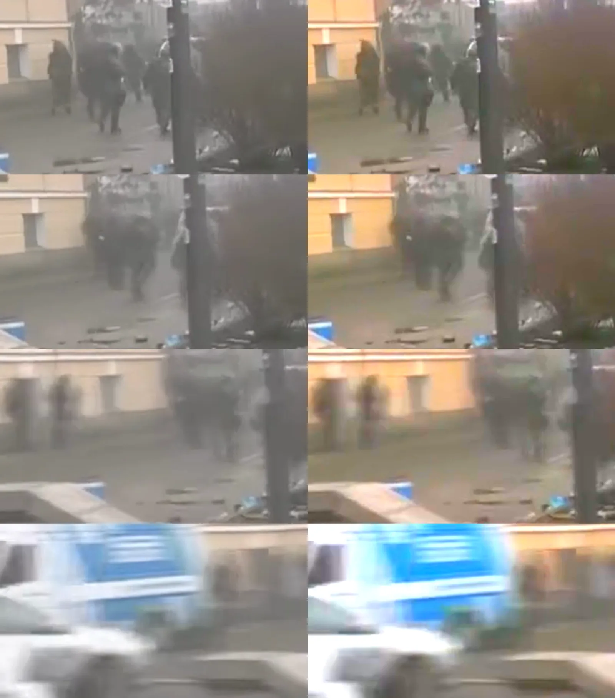 Г-34.1 · 09:01:11,8–13,0
| ||
| Г-34 | 09:01:12 | Группа в тёмном вдоль жёлтой стены дворца; у одного бойца светлая метка на предплечье. ▾ |
Г-34 · 09:01:12
| ||
| Г-28.1 | 09:01:23 | Первый кадр, где автобус уже на площадке перед зданием с портиком. ▾ |
Г-28.1 · 09:01:23
| ||
| Г-08 | 09:01:32 | Силовики на склоне у зелёного забора, выстрел; у крайнего правого — зелёная метка. ▾ |
Г-08 · 09:01:32
| ||
| Г-28.2 | 09:01:35 | Серый служебный автобус на площадке перед зданием с портиком, рядом группа в тёмном. ▾ |
Г-28.2 · 09:01:35
| ||
| Богдан Сольчаник | ||
| Г-02 ссылка | 09:08:15 | Лицо бойца спецроты крупным планом (опознание — авторов «Висоты», в досье без имени); боец спецроты на ступенях с оружием; внизу — толпа, красной рамкой авторы «Висоты» отметили Сольчаника. ▾ |
Кадр здесь не воспроизводится — только ссылка и таймкод в строке «Первоисточник». Г-02 · 09:08:15
| ||
| Г-02.1 ссылка | 09:08:15 | Боец в чёрном, жёлтая повязка на левом рукаве, оружие направлено вниз влево, на ступени. ▾ |
Кадр здесь не воспроизводится — только ссылка и таймкод в строке «Первоисточник». Г-02.1 · 09:08:15
| ||
| Виталий Коцюба | ||
| V-07 видео | 09:10:08 | Бойцы спецроты у колонн центрального входа, один целится в 09:10:17–18. ▾ |
V-07 видео · 09:10:08–26
| ||
| Г-38 | 09:10:17 | Бойцы спецроты у колонн центрального входа, один целится горизонтально. ▾ |
Г-38 · 09:10:17–18
| ||
| М-02 | 09:10:22 | «Балконы Консерватории» — неподвижные фотовставки длиной около секунды. ▾ |
М-02 · 09:10:22–26
| ||
| Богдан Ильков | ||
| Г-09 | 09:11:47 | Выстрел бойца с повязкой (за ветками); группа у парапета. ▾ |
Г-09 · 09:11:47
| ||
| Игорь Пехенько, Василий Аксенин, Василий Мойсей | ||
| Г-10 ссылка | 09:17:05 | Замкомандира ПМОП в синем камуфляже стреляет из АКМС рядом с бойцами спецроты. ▾ |
Кадр здесь не воспроизводится — только ссылка и таймкод в строке «Первоисточник». Г-10 · 09:17:05
| ||
| V-05.2 видео ссылка | 09:17:08 | Бойцы спецроты перед правым крылом целятся к площадке; человек в сине-сером камуфляже с коротким автоматом. ▾ |
Кадр здесь не воспроизводится — только ссылка и таймкод в строке «Первоисточник». V-05.2 видео · 09:17:08–18
| ||
| Г-35 ссылка | 09:17:15 | Бойцы спецроты перед правым крылом; человек в сине-сером камуфляже с коротким автоматом. ▾ |
Кадр здесь не воспроизводится — только ссылка и таймкод в строке «Первоисточник». Г-35 · 09:17:15
| ||
| Г-35.1 ссылка | 09:17:17 | Боец с полосой на рукаве целится влево, к площадке; человек в камуфляже присел за ним. ▾ |
Кадр здесь не воспроизводится — только ссылка и таймкод в строке «Первоисточник». Г-35.1 · 09:17:17
| ||
| V-02 видео | 09:17:28 | Группа спецроты у стены дворца целится влево; человек в синеватом камуфляже. ▾ |
V-02 видео · 09:17:28–48
| ||
| Г-29 | 09:17:32 | Группа спецроты у угла дворца, двое целятся горизонтально влево. ▾ |
Г-29 · 09:17:32
| ||
| Г-29.1 | 09:17:32 | Та же группа крупнее; жёлтые повязки читаются; человек в синеватом пятнистом камуфляже. ▾ |
Г-29.1 · 09:17:32–34
| ||
| V-05.1 видео | 09:17:48 | Лестница и площадка слева от колоннады, снизу; фигура со щитом и в каске, возможно оранжевой, около 09:17:58 (тот же момент, что на экране TVP; тот фрагмент не публикуется). ▾ |
V-05.1 видео · 09:17:48–09:18:13
| ||
| Г-21 | 09:17:53 | У дворца смешанная группа — бойцы в чёрном и в светлом камуфляже. ▾ |
Г-21 · 09:17:53
| ||
| Г-36 ссылка | 09:17:58 | Начало площадки над лестницей слева от колоннады: человек с милицейским щитом и присевшая фигура в каске, возможно оранжевой. ▾ |
Кадр здесь не воспроизводится — только ссылка и таймкод в строке «Первоисточник». Г-36 · 09:17:58
| ||
| Игорь Дмитрив, Андрей Дигдалович | ||
| Г-18 | 09:21:58 | Дмитрив присел на корточки за щитами за секунду до выстрела. ▾ |
Г-18 · 09:21:58
| ||
| Г-25 | 09:26:16 | За баррикадой с синим ограждением несколько человек, один целится; вероятно, это снежная баррикада (≈68% по оценке автора исследования). ▾ |
Г-25 · 09:26:16
| ||
| Игорь Костенко | ||
| V-06 видео | 09:29:13 | Группа у дерева перед дворцом (09:29:22–24), затем смена ракурса. ▾ |
V-06 видео · 09:29:13–48
| ||
| Г-37 | 09:29:23 | Группа у дерева перед дворцом; человек в джинсах, тёмной куртке, со светлой сумкой. ▾ |
Г-37 · 09:29:23
| ||
| Г-37.1 | 09:29:35 | Бойцы в чёрном перебегают к бетонной баррикаде у белого внедорожника. ▾ |
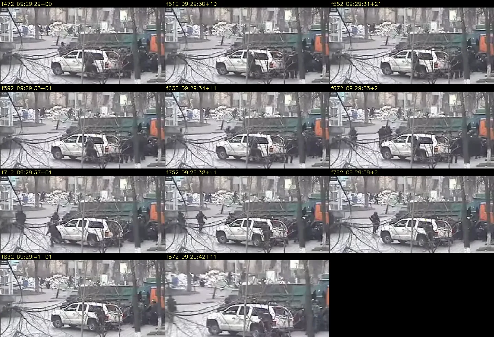 Г-37.1 · 09:29:35–41
| ||
| Олег Ушневич | ||
| Г-17 | — | Двое вооружённых в гостинице ищут «снайперов», охрана их не пускает. ▾ |
Г-17
| ||
| Владимир Жеребный | ||
| Г-14 | — | Четыре обведённые отметки на щите. ▾ |
Г-14
| ||
| Роман Точин | ||
| V-03 видео | 09:47:03 | Точин вздрагивает в 09:47:11 и оседает в 09:47:12. ▾ |
V-03 видео · 09:47:03–18
| ||
| V-03.1 видео | 09:47:03 | Бойцы с повязками за синим кузовом до 09:47:10, затем камера уходит в сторону. ▾ |
V-03.1 видео · 09:47:03–18
| ||
| Г-30 | 09:47:09 | Двое бойцов с повязками на рукаве за синим кузовом — за 1–2 с до ранения Точина. ▾ |
Г-30 · 09:47:09–10
| ||
| Г-30.2 | 09:47:09 | Бойцы за синим кузовом с зелёным тентом, повязки на рукаве. ▾ |
Г-30.2 · 09:47:09
| ||
| Г-30.3 | 09:47:11 | Раскадровка: Точин вздрагивает в 09:47:11 (кадры 22–24) и оседает в 09:47:12 (кадры 9–27); показание таймера «Kiev-20-02-14» 01:08:52:00 соответствует 09:47:11 и 3 кадрам. ▾ |
Г-30.3 · 09:47:11–12
| ||
| Г-30.1 | 09:47:26 | Те же двое; повязки видны чётко. ▾ |
Г-30.1 · 09:47:26
| ||
| Юрий Паращук | ||
| Г-19 | — | Подпись автора книги: пробоина в шлеме сзади справа, вход и выход «в задней левой части головы (теменная область)», поэтому выстрелить с милицейской баррикады было «физически невозможно», «вопреки 3D-модели SITU». ▾ |
Г-19
| ||
| Роман Гурик, Евгений Котляр | ||
| V-04 видео | 09:56:18 | Бетонная баррикада сбоку: БТР, оранжевая кабина, синий кузов. ▾ |
V-04 видео · 09:56:18–43
| ||
| Г-31 ссылка | 09:56:24 | Дальний план бетонной баррикады: БТР, оранжевая кабина, синий кузов, фигуры у кузова. ▾ |
Кадр здесь не воспроизводится — только ссылка и таймкод в строке «Первоисточник». Г-31 · 09:56:24–27
| ||
| Леонид Полянский, Александр Царёк, Владимир Чаплинский, Виктор Чмиленко, Иосиф Шилинг | ||
| Г-15 | 10:25 | Открытая створка окна на 11-м этаже гостиницы; занавеска распахивается в момент хлопка. ▾ |
Г-15 · 10:25
| ||
| V-08 видео | 10:27:07 | Непрерывный дубль: после выстрела в 10:27:43,7 — бег к колоннаде; слова корреспондента об окне около 10:28:00–16; группа у ограждения в 10:28:35; наезд камеры на окно в 10:28:44–46. ▾ |
V-08 видео · 10:27:07–10:28:59
| ||
| А-03 | 10:27:43 | Резкие широкополосные импульсы с хвостом ≈0,6 с — выстрелы на звуке; спектрограммы ±1 с вокруг каждого. ▾ |
А-03 · 10:27:43,7; 10:28:35,6; 10:28:37,5; 10:28:44,0
| ||
| Г-16 | 10:28:00 | Вид с колоннады Октябрьского дворца: окна гостиницы крупным планом; открытое окно в средней части фасада закрывается в 10:28:44–46. ▾ |
Г-16 · 10:28:00–10:28:48
| ||
| V-09 видео | 10:28:20 | Помощь раненым у дерева ниже клумбы у «Аркады»; оранжевые носилки в 10:28:37. ▾ |
V-09 видео · 10:28:20–50
| ||
| Г-16.3 | 10:28:35 | Группа у зелёного ограждения у восточного угла гостиницы (край со стороны Институтской): перед торцом пригибается, один человек опускается к земле; на звуке импульс в 10:28:35,6. ▾ |
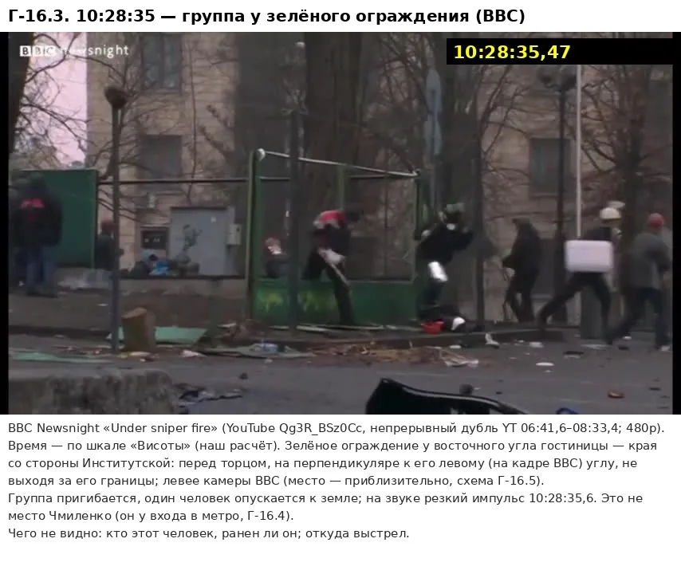 Г-16.3 · 10:28:35,5
| ||
| Г-16.4 | 10:28:37 | Оранжевые носилки у дерева ниже клумбы у «Аркады» — эпизод Чмиленко. ▾ |
Г-16.4 · 10:28:37
| ||
| Г-16.5 | 10:28:37 | Чмиленко у входа в метро. ▾ |
Г-16.5 · 10:28:37
| ||
| Г-16.2 | 10:28:43 | Тёмный проём виден примерно до 10:28:46,0; к 10:28:46,2–46,4 окно выглядит закрытым — похоже на закрывающуюся створку (уверенность средняя). ▾ |
Г-16.2 · 10:28:43,5–46,5
| ||
| Г-16.6 | 10:28:43 | Шилинг на проезжей части напротив метро, лицом вверх по улице. ▾ |
Г-16.6 · 10:28:43
| ||
| Г-16.1 | 10:28:44 | Открытое окно (тёмный проём левой створки) в средней части фасада гостиницы; через 2 с проём закрыт. ▾ |
Г-16.1 · 10:28:44 → 10:28:46
| ||
| Владимир Мельничук | ||
| Г-32 | 16:50:16 | Двое за синим кузовом с зелёным тентом, у левого — жёлтая повязка; у правого между кадрами меняется положение — отдача. ▾ |
Г-32 · 16:50:16–17
| ||
| Общие кадры — не привязаны к одному погибшему | ||
| Метки подразделений: образцы для сравнения | ||
| Г-01 ссылка | 09:08:16 | Боец спецроты с широкой жёлтой повязкой на левом рукаве. ▾ |
Кадр здесь не воспроизводится — только ссылка и таймкод в строке «Первоисточник». Г-01 · 09:08:16
| ||
| Г-24 | 09:20:11 | Боец в чёрном с автоматом, жёлтая повязка на левом рукаве. ▾ |
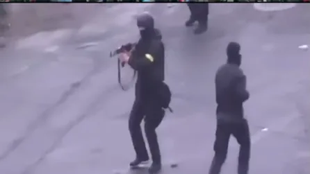 Г-24 · 09:20:11
| ||
| Г-33 | 10:10:07 | У бетонных блоков боец с надписью «МІЛІЦІЯ» (МИЛИЦИЯ) на спине и жёлтым квадратом на плече. ▾ |
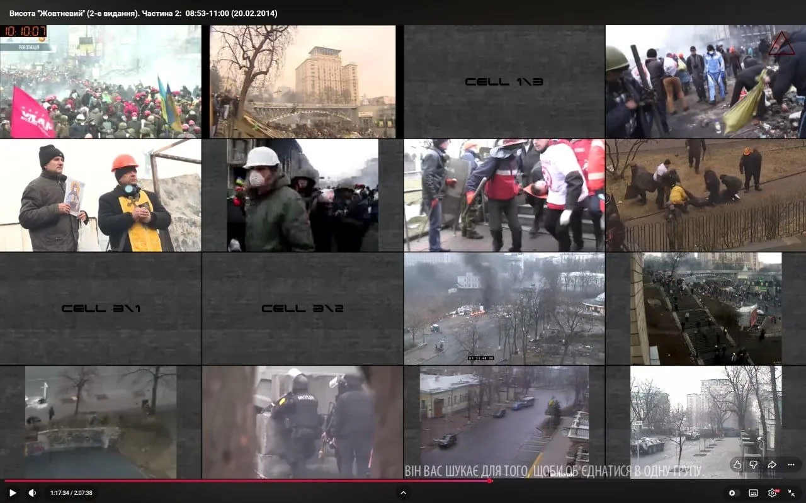 Г-33 · 10:10:07
| ||
| Г-33.1 | 10:10:07 | Квадрат на плече крупно. ▾ |
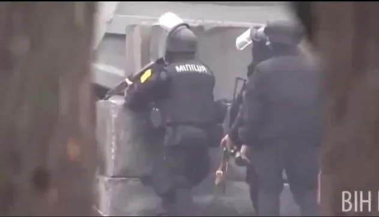 Г-33.1 · 10:10:07
| ||
| Г-33.2 YouTube | — | Те же люди с квадратами; у одного красная деталь на груди (по свидетелю — ручка аптечки, приговор 2023, п. 5.5.1). ▾ |
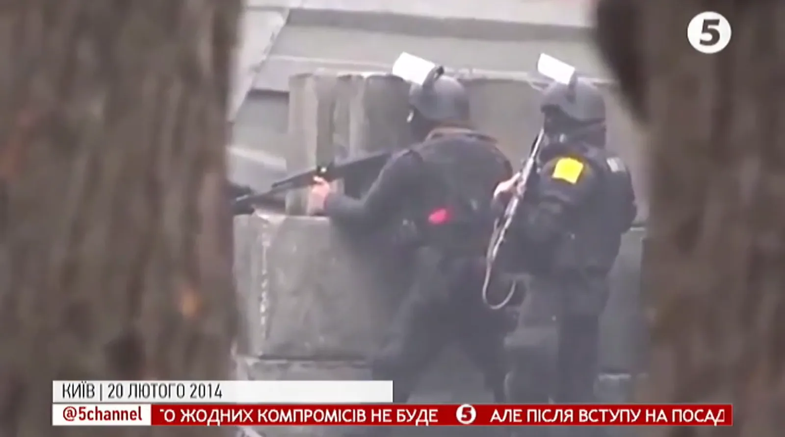 ▶ Открыть сюжет на YouTube с 1:13Г-33.2
| ||
| Другие силовики рядом со спецротой и на Банковой | ||
| Г-12 | 09:18:54 | Замкомандира ПМОП с автоматом у забора с надписью «Хмельничани вже тут» (Хмельничане уже здесь). ▾ |
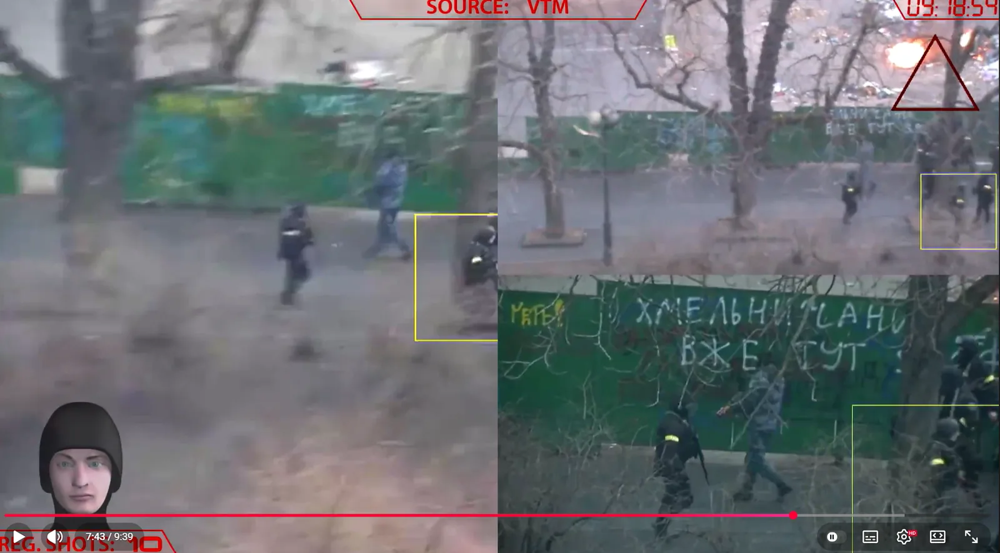 Г-12 · 09:18:54
| ||
| Г-22 | 09:19:18 | На аллее лёжа — снайпер в чёрном, винтовка с оптикой на сошках, повязки не видно; вокруг бойцы с жёлтыми повязками. ▾ |
 Г-22 · 09:19:18
| ||
| Г-22.1 | 09:19:21 | На насыпи лежит человек, рядом бойцы с жёлтыми повязками. ▾ |
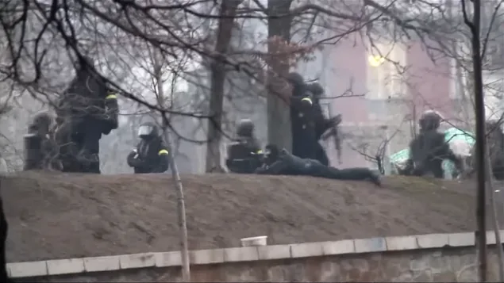 Г-22.1 · 09:19:21
| ||
| Г-23 | 09:20:06 | Снайпер в чёрном и балаклаве на колене у каменного парапета; винтовка с оптикой на опоре. ▾ |
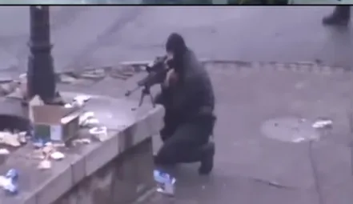 Г-23 · 09:20:06
| ||
| Г-26 | 09:55:48 | У кирпичной стены с решёткой (Банковая) группа в чёрном: шлемы, бронежилеты, наколенники, у первого — пистолет; повязок не видно. ▾ |
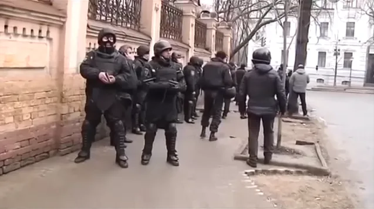 Г-26 · 09:55:48
| ||
| Г-26.1 | 09:55:54 | Пистолет в руках первого бойца. ▾ |
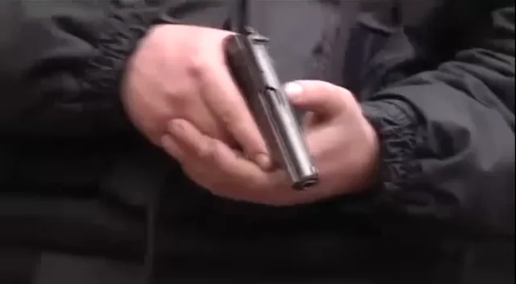 Г-26.1 · ≈09:55:54 | ||
| Г-27 | 10:11:14 | Бетонная баррикада: зелёные грузовики, оранжевая кабина КамАЗа, слева БТР; люди у блоков. ▾ |
Г-27 · 10:11:14
| ||
| Огонь со стороны Майдана утром; потери силовиков | ||
| Г-13 ссылка | 09:06:11 | Общий план сетки 4×4; на экране 2/1 у дорожного знака вооружённый протестующий целится из длинноствольного оружия. ▾ |
Кадр здесь не воспроизводится — только ссылка и таймкод в строке «Первоисточник». Г-13 · 09:06:11
| ||
| Г-13.1 ссылка | 09:06:11 | Слева у столба дорожного знака человек целится влево; рядом люди в светлой и красной касках. ▾ |
Кадр здесь не воспроизводится — только ссылка и таймкод в строке «Первоисточник». Г-13.1 · 09:06:11
| ||
| Г-11 ссылка | 09:17:08 | Эвакуация раненого бойца спецроты. ▾ |
Кадр здесь не воспроизводится — только ссылка и таймкод в строке «Первоисточник». Г-11 · 09:17:08
| ||
| Метод и книга | ||
| М-01 | 09:47:11 | Таймер «Kiev-20-02-14» 01:08:52:00 против часов мозаики 09:47:11 и 3 кадров. ▾ |
М-01 · 09:47:11
| ||
| Г-20 | — | 49 убитых с указанием времени и раненые; автор книги сам наносит «вооружённый „Беркут“ и направления его стрельбы 9:05–9:20». ▾ |
Г-20
| ||